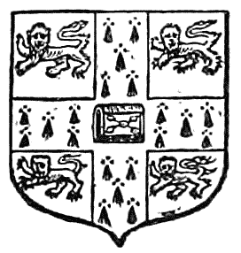
“The reasonings about the wonderful and intricate operations of nature are so full of uncertainty, that, as the Wise-man truly observes, hardly do we guess aright at the things that are upon earth, and with labour do we find the things that are before us.” Stephen Hales, Vegetable Staticks (1727), p. 318, 1738.
This book of mine has little need of preface, for indeed it is “all preface” from beginning to end. I have written it as an easy introduction to the study of organic Form, by methods which are the common-places of physical science, which are by no means novel in their application to natural history, but which nevertheless naturalists are little accustomed to employ.
It is not the biologist with an inkling of mathematics, but the skilled and learned mathematician who must ultimately deal with such problems as are merely sketched and adumbrated here. I pretend to no mathematical skill, but I have made what use I could of what tools I had; I have dealt with simple cases, and the mathematical methods which I have introduced are of the easiest and simplest kind. Elementary as they are, my book has not been written without the help—the indispensable help—of many friends. Like Mr Pope translating Homer, when I felt myself deficient I sought assistance! And the experience which Johnson attributed to Pope has been mine also, that men of learning did not refuse to help me.
My debts are many, and I will not try to proclaim them all: but I beg to record my particular obligations to Professor Claxton Fidler, Sir George Greenhill, Sir Joseph Larmor, and Professor A. McKenzie; to a much younger but very helpful friend, Mr John Marshall, Scholar of Trinity; lastly, and (if I may say so) most of all, to my colleague Professor William Peddie, whose advice has made many useful additions to my book and whose criticism has spared me many a fault and blunder.
I am under obligations also to the authors and publishers of many books from which illustrations have been borrowed, and especially to the following:―
To the Controller of H.M. Stationery Office, for leave to reproduce a number of figures, chiefly of Foraminifera and of Radiolaria, from the Reports of the Challenger Expedition. {vi}
To the Council of the Royal Society of Edinburgh, and to that of the Zoological Society of London:—the former for letting me reprint from their Transactions the greater part of the text and illustrations of my concluding chapter, the latter for the use of a number of figures for my chapter on Horns.
To Professor E. B. Wilson, for his well-known and all but indispensable figures of the cell (figs. 42–51, 53); to M. A. Prenant, for other figures (41, 48) in the same chapter; to Sir Donald MacAlister and Mr Edwin Arnold for certain figures (335–7), and to Sir Edward Schäfer and Messrs Longmans for another (334), illustrating the minute trabecular structure of bone. To Mr Gerhard Heilmann, of Copenhagen, for his beautiful diagrams (figs. 388–93, 401, 402) included in my last chapter. To Professor Claxton Fidler and to Messrs Griffin, for letting me use, with more or less modification or simplification, a number of illustrations (figs. 339–346) from Professor Fidler’s Textbook of Bridge Construction. To Messrs Blackwood and Sons, for several cuts (figs. 127–9, 131, 173) from Professor Alleyne Nicholson’s Palaeontology; to Mr Heinemann, for certain figures (57, 122, 123, 205) from Dr Stéphane Leduc’s Mechanism of Life; to Mr A. M. Worthington and to Messrs Longmans, for figures (71, 75) from A Study of Splashes, and to Mr C. R. Darling and to Messrs E. and S. Spon for those (fig. 85) from Mr Darling’s Liquid Drops and Globules. To Messrs Macmillan and Co. for two figures (304, 305) from Zittel’s Palaeontology, to the Oxford University Press for a diagram (fig. 28) from Mr J. W. Jenkinson’s Experimental Embryology; and to the Cambridge University Press for a number of figures from Professor Henry Woods’s Invertebrate Palaeontology, for one (fig. 210) from Dr Willey’s Zoological Results, and for another (fig. 321) from “Thomson and Tait.”
Many more, and by much the greater part of my diagrams, I owe to the untiring help of Dr Doris L. Mackinnon, D.Sc., and of Miss Helen Ogilvie, M.A., B.Sc., of this College.
D’ARCY WENTWORTH THOMPSON.
UNIVERSITY COLLEGE, DUNDEE.
December, 1916.
| CHAP. | PAGE | |
|---|---|---|
| I. | INTRODUCTORY | 1 |
| II. | ON MAGNITUDE | 16 |
| III. | THE RATE OF GROWTH | 50 |
| IV. | ON THE INTERNAL FORM AND STRUCTURE OF THE CELL | 156 |
| V. | THE FORMS OF CELLS | 201 |
| VI. | A NOTE ON ADSORPTION | 277 |
| VII. | THE FORMS OF TISSUES, OR CELL-AGGREGATES | 293 |
| VIII. | THE SAME (continued) | 346 |
| IX. | ON CONCRETIONS, SPICULES, AND SPICULAR SKELETONS | 411 |
| X. | A PARENTHETIC NOTE ON GEODETICS | 488 |
| XI. | THE LOGARITHMIC SPIRAL | 493 |
| XII. | THE SPIRAL SHELLS OF THE FORAMINIFERA | 587 |
| XIII. | THE SHAPES OF HORNS, AND OF TEETH OR TUSKS: WITH A NOTE ON TORSION | 612 |
| XIV. | ON LEAF-ARRANGEMENT, OR PHYLLOTAXIS | 635 |
| XV. | ON THE SHAPES OF EGGS, AND OF CERTAIN OTHER HOLLOW STRUCTURES | 652 |
| XVI. | ON FORM AND MECHANICAL EFFICIENCY | 670 |
| XVII. | ON THE THEORY OF TRANSFORMATIONS, OR THE COMPARISON OF RELATED FORMS | 719 |
| EPILOGUE | 778 | |
| INDEX | 780 |
| Fig. | Page | |
|---|---|---|
| 1. | Nerve-cells, from larger and smaller animals (Minot, after Irving Hardesty) | 37 |
| 2. | Relative magnitudes of some minute organisms (Zsigmondy) | 39 |
| 3. | Curves of growth in man (Quetelet and Bowditch) | 61 |
| 4, 5. | Mean annual increments of stature and weight in man (do.) | 66, 69 |
| 6. | The ratio, throughout life, of female weight to male (do.) | 71 |
| 7–9. | Curves of growth of child, before and after birth (His and Rüssow) | 74–6 |
| 10. | Curve of growth of bamboo (Ostwald, after Kraus) | 77 |
| 11. | Coefficients of variability in human stature (Boas and Wissler) | 80 |
| 12. | Growth in weight of mouse (Wolfgang Ostwald) | 83 |
| 13. | Do. of silkworm (Luciani and Lo Monaco) | 84 |
| 14. | Do. of tadpole (Ostwald, after Schaper) | 85 |
| 15. | Larval eels, or Leptocephali, and young elver (Joh. Schmidt) | 86 |
| 16. | Growth in length of Spirogyra (Hofmeister) | 87 |
| 17. | Pulsations of growth in Crocus (Bose) | 88 |
| 18. | Relative growth of brain, heart and body of man (Quetelet) | 90 |
| 19. | Ratio of stature to span of arms (do.) | 94 |
| 20. | Rates of growth near the tip of a bean-root (Sachs) | 96 |
| 21, 22. | The weight-length ratio of the plaice, and its annual periodic changes | 99, 100 |
| 23. | Variability of tail-forceps in earwigs (Bateson) | 104 |
| 24. | Variability of body-length in plaice | 105 |
| 25. | Rate of growth in plants in relation to temperature (Sachs) | 109 |
| 26. | Do. in maize, observed (Köppen), and calculated curves | 112 |
| 27. | Do. in roots of peas (Miss I. Leitch) | 113 |
| 28, 29. | Rate of growth of frog in relation to temperature (Jenkinson, after O. Hertwig), and calculated curves of do. | 115, 6 |
| 30. | Seasonal fluctuation of rate of growth in man (Daffner) | 119 |
| 31. | Do. in the rate of growth of trees (C. E. Hall) | 120 |
| 32. | Long-period fluctuation in the rate of growth of Arizona trees (A. E. Douglass) | 122 |
| 33, 34. | The varying form of brine-shrimps (Artemia), in relation to salinity (Abonyi) | 128, 9 |
| 35–39. | Curves of regenerative growth in tadpoles’ tails (M. L. Durbin) | 140–145 |
| 40. | Relation between amount of tail removed, amount restored, and time required for restoration (M. M. Ellis) | 148 |
| 41. | Caryokinesis in trout’s egg (Prenant, after Prof. P. Bouin) | 169 |
| 42–51. | Diagrams of mitotic cell-division (Prof. E. B. Wilson) | 171–5 |
| 52. | Chromosomes in course of splitting and separation (Hatschek and Flemming) | 180 |
| 53. | Annular chromosomes of mole-cricket (Wilson, after vom Rath) | 181 |
| 54–56. | Diagrams illustrating a hypothetic field of force in caryokinesis (Prof. W. Peddie) | 182–4 |
| 57. | An artificial figure of caryokinesis (Leduc) | 186 |
| 58. | A segmented egg of Cerebratulus (Prenant, after Coe) | 189 |
| 59. | Diagram of a field of force with two like poles | 189 |
| 60. | A budding yeast-cell | 213 |
| 61. | The roulettes of the conic sections | 218 |
| 62. | Mode of development of an unduloid from a cylindrical tube | 220 |
| 63–65. | Cylindrical, unduloid, nodoid and catenoid oil-globules (Plateau) | 222, 3 |
| 66. | Diagram of the nodoid, or elastic curve | 224 |
| 67. | Diagram of a cylinder capped by the corresponding portion of a sphere | 226 |
| 68. | A liquid cylinder breaking up into spheres | 227 |
| 69. | The same phenomenon in a protoplasmic cell of Trianea | 234 |
| 70. | Some phases of a splash (A. M. Worthington) | 235 |
| 71. | A breaking wave (do.) | 236 |
| 72. | The calycles of some campanularian zoophytes | 237 |
| 73. | A flagellate monad, Distigma proteus (Saville Kent) | 246 |
| 74. | Noctiluca miliaris, diagrammatic | 246 |
| 75. | Various species of Vorticella (Saville Kent and others) | 247 |
| 76. | Various species of Salpingoeca (do.) | 248 |
| 77. | Species of Tintinnus, Dinobryon and Codonella (do.) | 248 |
| 78. | The tube or cup of Vaginicola | 248 |
| 79. | The same of Folliculina | 249 |
| 80. | Trachelophyllum (Wreszniowski) | 249 |
| 81. | Trichodina pediculus | 252 |
| 82. | Dinenymplia gracilis (Leidy) | 253 |
| 83. | A “collar-cell” of Codosiga | 254 |
| 84. | Various species of Lagena (Brady) | 256 |
| 85. | Hanging drops, to illustrate the unduloid form (C. R. Darling) | 257 |
| 86. | Diagram of a fluted cylinder | 260 |
| 87. | Nodosaria scalaris (Brady) | 262 |
| 88. | Fluted and pleated gonangia of certain Campanularians (Allman) | 262 |
| 89. | Various species of Nodosaria, Sagrina and Rheophax (Brady) | 263 |
| 90. | Trypanosoma tineae and Spirochaeta anodontae, to shew undulating membranes (Minchin and Fantham) | 266 |
| 91. | Some species of Trichomastix and Trichomonas (Kofoid) | 267 |
| 92. | Herpetomonas assuming the undulatory membrane of a Trypanosome (D. L. Mackinnon) | 268 |
| 93. | Diagram of a human blood-corpuscle | 271 |
| 94. | Sperm-cells of decapod crustacea, Inachus and Galathea (Koltzoff) | 273 |
| 95. | The same, in saline solutions of varying density (do.) | 274 |
| 96. | A sperm-cell of Dromia (do.) | 275 |
| 97. | Chondriosomes in cells of kidney and pancreas (Barratt and Mathews) | 285 |
| 98. | Adsorptive concentration of potassium salts in various plant-cells (Macallum) | 290 |
| 99–101. | Equilibrium of surface-tension in a floating drop | 294, 5 |
| 102. | Plateau’s “bourrelet” in plant-cells; diagrammatic (Berthold) | 298 |
| 103. | Parenchyma of maize, shewing the same phenomenon | 298 |
| 104, 5. | Diagrams of the partition-wall between two soap-bubbles | 299, 300 |
| 106. | Diagram of a partition in a conical cell | 300 |
| 107. | Chains of cells in Nostoc, Anabaena and other low algae | 300 |
| 108. | Diagram of a symmetrically divided soap-bubble | 301 |
| 109. | Arrangement of partitions in dividing spores of Pellia (Campbell) | 302 |
| 110. | Cells of Dictyota (Reinke) | 303 |
| 111, 2. | Terminal and other cells of Chara, and young antheridium of do. | 303 |
| 113. | Diagram of cell-walls and partitions under various conditions of tension | 304 |
| 114, 5. | The partition-surfaces of three interconnected bubbles | 307, 8 |
| 116. | Diagram of four interconnected cells or bubbles | 309 |
| 117. | Various configurations of four cells in a frog’s egg (Rauber) | 311 |
| 118. | Another diagram of two conjoined soap-bubbles | 313 |
| 119. | A froth of bubbles, shewing its outer or “epidermal” layer | 314 |
| 120. | A tetrahedron, or tetrahedral system, shewing its centre of symmetry | 317 |
| 121. | A group of hexagonal cells (Bonanni) | 319 |
| 122, 3. | Artificial cellular tissues (Leduc) | 320 |
| 124. | Epidermis of Girardia (Goebel) | 321 |
| 125. | Soap-froth, and the same under compression (Rhumbler) | 322 |
| 126. | Epidermal cells of Elodea canadensis (Berthold) | 322 |
| 127. | Lithostrotion Martini (Nicholson) | 325 |
| 128. | Cyathophyllum hexagonum (Nicholson, after Zittel) | 325 |
| 129. | Arachnophyllum pentagonum (Nicholson) | 326 |
| 130. | Heliolites (Woods) | 326 |
| 131. | Confluent septa in Thamnastraea and Comoseris (Nicholson, after Zittel) | 327 |
| 132. | Geometrical construction of a bee’s cell | 330 |
| 133. | Stellate cells in the pith of a rush; diagrammatic | 335 |
| 134. | Diagram of soap-films formed in a cubical wire skeleton (Plateau) | 337 |
| 135. | Polar furrows in systems of four soap-bubbles (Robert) | 341 |
| 136–8. | Diagrams illustrating the division of a cube by partitions of minimal area | 347–50 |
| 139. | Cells from hairs of Sphacelaria (Berthold) | 351 |
| 140. | The bisection of an isosceles triangle by minimal partitions | 353 |
| 141. | The similar partitioning of spheroidal and conical cells | 353 |
| 142. | S-shaped partitions from cells of algae and mosses (Reinke and others) | 355 |
| 143. | Diagrammatic explanation of the S-shaped partitions | 356 |
| 144. | Development of Erythrotrichia (Berthold) | 359 |
| 145. | Periclinal, anticlinal and radial partitioning of a quadrant | 359 |
| 146. | Construction for the minimal partitioning of a quadrant | 361 |
| 147. | Another diagram of anticlinal and periclinal partitions | 362 |
| 148. | Mode of segmentation of an artificially flattened frog’s egg (Roux) | 363 |
| 149. | The bisection, by minimal partitions, of a prism of small angle | 364 |
| 150. | Comparative diagram of the various modes of bisection of a prismatic sector | 365 |
| 151. | Diagram of the further growth of the two halves of a quadrantal cell | 367 |
| 152. | Diagram of the origin of an epidermic layer of cells | 370 |
| 153. | A discoidal cell dividing into octants | 371 |
| 154. | A germinating spore of Riccia (after Campbell), to shew the manner of space-partitioning in the cellular tissue | 372 |
| 155, 6. | Theoretical arrangement of successive partitions in a discoidal cell | 373 |
| 157. | Sections of a moss-embryo (Kienitz-Gerloff) | 374 |
| 158. | Various possible arrangements of partitions in groups of four to eight cells | 375 |
| 159. | Three modes of partitioning in a system of six cells | 376 |
| 160, 1. | Segmenting eggs of Trochus (Robert), and of Cynthia (Conklin) | 377 |
| 162. | Section of the apical cone of Salvinia (Pringsheim) | 377 |
| 163, 4. | Segmenting eggs of Pyrosoma (Korotneff), and of Echinus (Driesch) | 377 |
| 165. | Segmenting egg of a cephalopod (Watase) | 378 |
| 166, 7. | Eggs segmenting under pressure: of Echinus and Nereis (Driesch), and of a frog (Roux) | 378 |
| 168. | Various arrangements of a group of eight cells on the surface of a frog’s egg (Rauber) | 381 |
| 169. | Diagram of the partitions and interfacial contacts in a system of eight cells | 383 |
| 170. | Various modes of aggregation of eight oil-drops (Roux) | 384 |
| 171. | Forms, or species, of Asterolampra (Greville) | 386 |
| 172. | Diagrammatic section of an alcyonarian polype | 387 |
| 173, 4. | Sections of Heterophyllia (Nicholson and Martin Duncan) | 388, 9 |
| 175. | Diagrammatic section of a ctenophore (Eucharis) | 391 |
| 176, 7. | Diagrams of the construction of a Pluteus larva | 392, 3 |
| 178, 9. | Diagrams of the development of stomata, in Sedum and in the hyacinth | 394 |
| 180. | Various spores and pollen-grains (Berthold and others) | 396 |
| 181. | Spore of Anthoceros (Campbell) | 397 |
| 182, 4, 9. | Diagrammatic modes of division of a cell under certain conditions of asymmetry | 400–5 |
| 183. | Development of the embryo of Sphagnum (Campbell) | 402 |
| 185. | The gemma of a moss (do.) | 403 |
| 186. | The antheridium of Riccia (do.) | 404 |
| 187. | Section of growing shoot of Selaginella, diagrammatic | 404 |
| 188. | An embryo of Jungermannia (Kienitz-Gerloff) | 404 |
| 190. | Development of the sporangium of Osmunda (Bower) | 406 |
| 191. | Embryos of Phascum and of Adiantum (Kienitz-Gerloff) | 408 |
| 192. | A section of Girardia (Goebel) | 408 |
| 193. | An antheridium of Pteris (Strasburger) | 409 |
| 194. | Spicules of Siphonogorgia and Anthogorgia (Studer) | 413 |
| 195–7. | Calcospherites, deposited in white of egg (Harting) | 421, 2 |
| 198. | Sections of the shell of Mya (Carpenter) | 422 |
| 199. | Concretions, or spicules, artificially deposited in cartilage (Harting) | 423 |
| 200. | Further illustrations of alcyonarian spicules: Eunicea (Studer) | 424 |
| 201–3. | Associated, aggregated and composite calcospherites (Harting) | 425, 6 |
| 204. | Harting’s “conostats” | 427 |
| 205. | Liesegang’s rings (Leduc) | 428 |
| 206. | Relay-crystals of common salt (Bowman) | 429 |
| 207. | Wheel-like crystals in a colloid medium (do.) | 429 |
| 208. | A concentrically striated calcospherite or spherocrystal (Harting) | 432 |
| 209. | Otoliths of plaice, shewing “age-rings” (Wallace) | 432 |
| 210. | Spicules, or calcospherites, of Astrosclera (Lister) | 436 |
| 211. 2. | C- and S-shaped spicules of sponges and holothurians (Sollas and Théel) | 442 |
| 213. | An amphidisc of Hyalonema | 442 |
| 214–7. | Spicules of calcareous, tetractinellid and hexactinellid sponges, and of various holothurians (Haeckel, Schultze, Sollas and Théel) | 445–452 |
| 218. | Diagram of a solid body confined by surface-energy to a liquid boundary-film | 460 |
| 219. | Astrorhiza limicola and arenaria (Brady) | 464 |
| 220. | A nuclear “reticulum plasmatique” (Carnoy) | 468 |
| 221. | A spherical radiolarian, Aulonia hexagona (Haeckel) | 469 |
| 222. | Actinomma arcadophorum (do.) | 469 |
| 223. | Ethmosphaera conosiphonia (do.) | 470 |
| 224. | Portions of shells of Cenosphaera favosa and vesparia (do.) | 470 |
| 225. | Aulastrum triceros (do.) | 471 |
| 226. | Part of the skeleton of Cannorhaphis (do.) | 472 |
| 227. | A Nassellarian skeleton, Callimitra carolotae (do.) | 472 |
| 228, 9. | Portions of Dictyocha stapedia (do.) | 474 |
| 230. | Diagram to illustrate the conformation of Callimitra | 476 |
| 231. | Skeletons of various radiolarians (Haeckel) | 479 |
| 232. | Diagrammatic structure of the skeleton of Dorataspis (do.) | 481 |
| 233, 4. | Phatnaspis cristata (Haeckel), and a diagram of the same | 483 |
| 235. | Phractaspis prototypus (Haeckel) | 484 |
| 236. | Annular and spiral thickenings in the walls of plant-cells | 488 |
| 237. | A radiograph of the shell of Nautilus (Green and Gardiner) | 494 |
| 238. | A spiral foraminifer, Globigerina (Brady) | 495 |
| 239–42. | Diagrams to illustrate the development or growth of a logarithmic spiral | 407–501 |
| 243. | A helicoid and a scorpioid cyme | 502 |
| 244. | An Archimedean spiral | 503 |
| 245–7. | More diagrams of the development of a logarithmic spiral | 505, 6 |
| 248–57. | Various diagrams illustrating the mathematical theory of gnomons | 508–13 |
| 258. | A shell of Haliotis, to shew how each increment of the shell constitutes a gnomon to the preexisting structure | 514 |
| 259, 60. | Spiral foraminifera, Pulvinulina and Cristellaria, to illustrate the same principle | 514, 5 |
| 261. | Another diagram of a logarithmic spiral | 517 |
| 262. | A diagram of the logarithmic spiral of Nautilus (Moseley) | 519 |
| 263, 4. | Opercula of Turbo and of Nerita (Moseley) | 521, 2 |
| 265. | A section of the shell of Melo ethiopicus | 525 |
| 266. | Shells of Harpa and Dolium, to illustrate generating curves and gene | 526 |
| 267. | D’Orbigny’s Helicometer | 529 |
| 268. | Section of a nautiloid shell, to shew the “protoconch” | 531 |
| 269–73. | Diagrams of logarithmic spirals, of various angles | 532–5 |
| 274, 6, 7. | Constructions for determining the angle of a logarithmic spiral | 537, 8 |
| 275. | An ammonite, to shew its corrugated surface pattern | 537 |
| 278–80. | Illustrations of the “angle of retardation” | 542–4 |
| 281. | A shell of Macroscaphites, to shew change of curvature | 550 |
| 282. | Construction for determining the length of the coiled spire | 551 |
| 283. | Section of the shell of Triton corrugatus (Woodward) | 554 |
| 284. | Lamellaria perspicua and Sigaretus haliotoides (do.) | 555 |
| 285, 6. | Sections of the shells of Terebra maculata and Trochus niloticus | 559, 60 |
| 287–9. | Diagrams illustrating the lines of growth on a lamellibranch shell | 563–5 |
| 290. | Caprinella adversa (Woodward) | 567 |
| 291. | Section of the shell of Productus (Woods) | 567 |
| 292. | The “skeletal loop” of Terebratula (do.) | 568 |
| 293, 4. | The spiral arms of Spirifer and of Atrypa (do.) | 569 |
| 295–7. | Shells of Cleodora, Hyalaea and other pteropods (Boas) | 570, 1 |
| 298, 9. | Coordinate diagrams of the shell-outline in certain pteropods | 572, 3 |
| 300. | Development of the shell of Hyalaea tridentata (Tesch) | 573 |
| 301. | Pteropod shells, of Cleodora and Hyalaea, viewed from the side (Boas) | 575 |
| 302, 3. | Diagrams of septa in a conical shell | 579 |
| 304. | A section of Nautilus, shewing the logarithmic spirals of the septa to which the shell-spiral is the evolute | 581 |
| 305. | Cast of the interior of the shell of Nautilus, to shew the contours of the septa at their junction with the shell-wall | 582 |
| 306. | Ammonites Sowerbyi, to shew septal outlines (Zittel, after Steinmann and Döderlein) | 584 |
| 307. | Suture-line of Pinacoceras (Zittel, after Hauer) | 584 |
| 308. | Shells of Hastigerina, to shew the “mouth” (Brady) | 588 |
| 309. | Nummulina antiquior (V. von Möller) | 591 |
| 310. | Cornuspira foliacea and Operculina complanata (Brady) | 594 |
| 311. | Miliolina pulchella and linnaeana (Brady) | 596 |
| 312, 3. | Cyclammina cancellata (do.), and diagrammatic figure of the same | 596, 7 |
| 314. | Orbulina universa (Brady) | 598 |
| 315. | Cristellaria reniformis (do.) | 600 |
| 316. | Discorbina bertheloti (do.) | 603 |
| 317. | Textularia trochus and concava (do.) | 604 |
| 318. | Diagrammatic figure of a ram’s horns (Sir V. Brooke) | 615 |
| 319. | Head of an Arabian wild goat (Sclater) | 616 |
| 320. | Head of Ovis Ammon, shewing St Venant’s curves | 621 |
| 321. | St Venant’s diagram of a triangular prism under torsion (Thomson and Tait) | 623 |
| 322. | Diagram of the same phenomenon in a ram’s horn | 623 |
| 323. | Antlers of a Swedish elk (Lönnberg) | 629 |
| 324. | Head and antlers of Cervus duvauceli (Lydekker) | 630 |
| 325, 6. | Diagrams of spiral phyllotaxis (P. G. Tait) | 644, 5 |
| 327. | Further diagrams of phyllotaxis, to shew how various spiral appearances may arise out of one and the same angular leaf-divergence | 648 |
| 328. | Diagrammatic outlines of various sea-urchins | 664 |
| 329, 30. | Diagrams of the angle of branching in blood-vessels (Hess) | 667, 8 |
| 331, 2. | Diagrams illustrating the flexure of a beam | 674, 8 |
| 333. | An example of the mode of arrangement of bast-fibres in a plant-stem (Schwendener) | 680 |
| 334. | Section of the head of a femur, to shew its trabecular structure (Schäfer, after Robinson) | 681 |
| 335. | Comparative diagrams of a crane-head and the head of a femur (Culmann and H. Meyer) | 682 |
| 336. | Diagram of stress-lines in the human foot (Sir D. MacAlister, after H. Meyer) | 684 |
| 337. | Trabecular structure of the os calcis (do.) | 685 |
| 338. | Diagram of shearing-stress in a loaded pillar | 686 |
| 339. | Diagrams of tied arch, and bowstring girder (Fidler) | 693 |
| 340, 1. | Diagrams of a bridge: shewing proposed span, the corresponding stress-diagram and reciprocal plan of construction (do.) | 696 |
| 342. | A loaded bracket and its reciprocal construction-diagram (Culmann) | 697 |
| 343, 4. | A cantilever bridge, with its reciprocal diagrams (Fidler) | 698 |
| 345. | A two-armed cantilever of the Forth Bridge (do.) | 700 |
| 346. | A two-armed cantilever with load distributed over two pier-heads, as in the quadrupedal skeleton | 700 |
| 347–9. | Stress-diagrams. or diagrams of bending moments, in the backbones of the horse, of a Dinosaur, and of Titanotherium | 701–4 |
| 350. | The skeleton of Stegosaurus | 707 |
| 351. | Bending-moments in a beam with fixed ends, to illustrate the mechanics of chevron-bones | 709 |
| 352, 3. | Coordinate diagrams of a circle, and its deformation into an ellipse | 729 |
| 354. | Comparison, by means of Cartesian coordinates, of the cannon-bones of various ruminant animals | 729 |
| 355, 6. | Logarithmic coordinates, and the circle of Fig. 352 inscribed therein | 729, 31 |
| 357, 8. | Diagrams of oblique and radial coordinates | 731 |
| 359. | Lanceolate, ovate and cordate leaves, compared by the help of radial coordinates | 732 |
| 360. | A leaf of Begonia daedalea | 733 |
| 361. | A network of logarithmic spiral coordinates | 735 |
| 362, 3. | Feet of ox, sheep and giraffe, compared by means of Cartesian coordinates | 738, 40 |
| 364, 6. | “Proportional diagrams” of human physiognomy (Albert Dürer) | 740, 2 |
| 365. | Median and lateral toes of a tapir, compared by means of rectangular and oblique coordinates | 741 |
| 367, 8. | A comparison of the copepods Oithona and Sapphirina | 742 |
| 369. | The carapaces of certain crabs, Geryon, Corystes and others, compared by means of rectilinear and curvilinear coordinates | 744 |
| 370. | A comparison of certain amphipods, Harpinia, Stegocephalus and Hyperia | 746 |
| 371. | The calycles of certain campanularian zoophytes, inscribed in corresponding Cartesian networks | 747 |
| 372. | The calycles of certain species of Aglaophenia, similarly compared by means of curvilinear coordinates | 748 |
| 373, 4. | The fishes Argyropelecus and Sternoptyx, compared by means of rectangular and oblique coordinate systems | 748 |
| 375, 6. | Scarus and Pomacanthus, similarly compared by means of rectangular and coaxial systems | 749 |
| 377–80. | A comparison of the fishes Polyprion, Pseudopriacanthus, Scorpaena and Antigonia | 750 |
| 381, 2. | A similar comparison of Diodon and Orthagoriscus | 751 |
| 383. | The same of various crocodiles: C. porosus, C. americanus and Notosuchus terrestris | 753 |
| 384. | The pelvic girdles of Stegosaurus and Camptosaurus | 754 |
| 385, 6. | The shoulder-girdles of Cryptocleidus and of Ichthyosaurus | 755 |
| 387. | The skulls of Dimorphodon and of Pteranodon | 756 |
| 388–92. | The pelves of Archaeopteryx and of Apatornis compared, and a method illustrated whereby intermediate configurations may be found by interpolation (G. Heilmann) | 757–9 |
| 393. | The same pelves, together with three of the intermediate or interpolated forms | 760 |
| 394, 5. | Comparison of the skulls of two extinct rhinoceroses, Hyrachyus and Aceratherium (Osborn) | 761 |
| 396. | Occipital views of various extinct rhinoceroses (do.) | 762 |
| 397–400. | Comparison with each other, and with the skull of Hyrachyus, of the skulls of Titanotherium, tapir, horse and rabbit | 763, 4 |
| 401, 2. | Coordinate diagrams of the skulls of Eohippus and of Equus, with various actual and hypothetical intermediate types (Heilmann) | 765–7 |
| 403. | A comparison of various human scapulae (Dwight) | 769 |
| 404. | A human skull, inscribed in Cartesian coordinates | 770 |
| 405. | The same coordinates on a new projection, adapted to the skull of the chimpanzee | 770 |
| 406. | Chimpanzee’s skull, inscribed in the network of Fig. 405 | 771 |
| 407, 8. | Corresponding diagrams of a baboon’s skull, and of a dog’s | 771, 3 |
“Cum formarum naturalium et corporalium esse non consistat nisi in unione ad materiam, ejusdem agentis esse videtur eas producere cujus est materiam transmutare. Secundo, quia cum hujusmodi formae non excedant virtutem et ordinem et facultatem principiorum agentium in natura, nulla videtur necessitas eorum originem in principia reducere altiora.” Aquinas, De Pot. Q. iii, a, 11. (Quoted in Brit. Assoc. Address, Section D, 1911.)
“...I would that all other natural phenomena might similarly be deduced from mechanical principles. For many things move me to suspect that everything depends upon certain forces, in virtue of which the particles of bodies, through forces not yet understood, are either impelled together so as to cohere in regular figures, or are repelled and recede from one another.” Newton, in Preface to the Principia. (Quoted by Mr W. Spottiswoode, Brit. Assoc. Presidential Address, 1878.)
“When Science shall have subjected all natural phenomena to the laws of Theoretical Mechanics, when she shall be able to predict the result of every combination as unerringly as Hamilton predicted conical refraction, or Adams revealed to us the existence of Neptune,—that we cannot say. That day may never come, and it is certainly far in the dim future. We may not anticipate it, we may not even call it possible. But none the less are we bound to look to that day, and to labour for it as the crowning triumph of Science:—when Theoretical Mechanics shall be recognised as the key to every physical enigma, the chart for every traveller through the dark Infinite of Nature.” J. H. Jellett, in Brit. Assoc. Address, Section A, 1874.
Of the chemistry of his day and generation, Kant declared that it was “a science, but not science,”—“eine Wissenschaft, aber nicht Wissenschaft”; for that the criterion of physical science lay in its relation to mathematics. And a hundred years later Du Bois Reymond, profound student of the many sciences on which physiology is based, recalled and reiterated the old saying, declaring that chemistry would only reach the rank of science, in the high and strict sense, when it should be found possible to explain chemical reactions in the light of their causal relation to the velocities, tensions and conditions of equilibrium of the component molecules; that, in short, the chemistry of the future must deal with molecular mechanics, by the methods and in the strict language of mathematics, as the astronomy of Newton and Laplace dealt with the stars in their courses. We know how great a step has been made towards this distant and once hopeless goal, as Kant defined it, since van’t Hoff laid the firm foundations of a mathematical chemistry, and earned his proud epitaph, Physicam chemiae adiunxit1.
We need not wait for the full realisation of Kant’s desire, in order to apply to the natural sciences the principle which he urged. Though chemistry fall short of its ultimate goal in mathematical mechanics, nevertheless physiology is vastly strengthened and enlarged by making use of the chemistry, as of the physics, of the age. Little by little it draws nearer to our conception of a true science, with each branch of physical science which it {2} brings into relation with itself: with every physical law and every mathematical theorem which it learns to take into its employ. Between the physiology of Haller, fine as it was, and that of Helmholtz, Ludwig, Claude Bernard, there was all the difference in the world.
As soon as we adventure on the paths of the physicist, we learn to weigh and to measure, to deal with time and space and mass and their related concepts, and to find more and more our knowledge expressed and our needs satisfied through the concept of number, as in the dreams and visions of Plato and Pythagoras; for modern chemistry would have gladdened the hearts of those great philosophic dreamers.
But the zoologist or morphologist has been slow, where the physiologist has long been eager, to invoke the aid of the physical or mathematical sciences; and the reasons for this difference lie deep, and in part are rooted in old traditions. The zoologist has scarce begun to dream of defining, in mathematical language, even the simpler organic forms. When he finds a simple geometrical construction, for instance in the honey-comb, he would fain refer it to psychical instinct or design rather than to the operation of physical forces; when he sees in snail, or nautilus, or tiny foraminiferal or radiolarian shell, a close approach to the perfect sphere or spiral, he is prone, of old habit, to believe that it is after all something more than a spiral or a sphere, and that in this “something more” there lies what neither physics nor mathematics can explain. In short he is deeply reluctant to compare the living with the dead, or to explain by geometry or by dynamics the things which have their part in the mystery of life. Moreover he is little inclined to feel the need of such explanations or of such extension of his field of thought. He is not without some justification if he feels that in admiration of nature’s handiwork he has an horizon open before his eyes as wide as any man requires. He has the help of many fascinating theories within the bounds of his own science, which, though a little lacking in precision, serve the purpose of ordering his thoughts and of suggesting new objects of enquiry. His art of classification becomes a ceaseless and an endless search after the blood-relationships of things living, and the pedigrees of things {3} dead and gone. The facts of embryology become for him, as Wolff, von Baer and Fritz Müller proclaimed, a record not only of the life-history of the individual but of the annals of its race. The facts of geographical distribution or even of the migration of birds lead on and on to speculations regarding lost continents, sunken islands, or bridges across ancient seas. Every nesting bird, every ant-hill or spider’s web displays its psychological problems of instinct or intelligence. Above all, in things both great and small, the naturalist is rightfully impressed, and finally engrossed, by the peculiar beauty which is manifested in apparent fitness or “adaptation,”—the flower for the bee, the berry for the bird.
Time out of mind, it has been by way of the “final cause,” by the teleological concept of “end,” of “purpose,” or of “design,” in one or another of its many forms (for its moods are many), that men have been chiefly wont to explain the phenomena of the living world; and it will be so while men have eyes to see and ears to hear withal. With Galen, as with Aristotle, it was the physician’s way; with John Ray, as with Aristotle, it was the naturalist’s way; with Kant, as with Aristotle, it was the philosopher’s way. It was the old Hebrew way, and has its splendid setting in the story that God made “every plant of the field before it was in the earth, and every herb of the field before it grew.” It is a common way, and a great way; for it brings with it a glimpse of a great vision, and it lies deep as the love of nature in the hearts of men.
Half overshadowing the “efficient” or physical cause, the argument of the final cause appears in eighteenth century physics, in the hands of such men as Euler2 and Maupertuis, to whom Leibniz3 had passed it on. Half overshadowed by the mechanical concept, it runs through Claude Bernard’s Leçons sur les {4} phénomènes de la Vie4, and abides in much of modern physiology5. Inherited from Hegel, it dominated Oken’s Naturphilosophie and lingered among his later disciples, who were wont to liken the course of organic evolution not to the straggling branches of a tree, but to the building of a temple, divinely planned, and the crowning of it with its polished minarets6.
It is retained, somewhat crudely, in modern embryology, by those who see in the early processes of growth a significance “rather prospective than retrospective,” such that the embryonic phenomena must be “referred directly to their usefulness in building the body of the future animal7”:—which is no more, and no less, than to say, with Aristotle, that the organism is the τέλος, or final cause, of its own processes of generation and development. It is writ large in that Entelechy8 which Driesch rediscovered, and which he made known to many who had neither learned of it from Aristotle, nor studied it with Leibniz, nor laughed at it with Voltaire. And, though it is in a very curious way, we are told that teleology was “refounded, reformed or rehabilitated9” by Darwin’s theory of natural selection, whereby “every variety of form and colour was urgently and absolutely called upon to produce its title to existence either as an active useful agent, or as a survival” of such active usefulness in the past. But in this last, and very important case, we have reached a “teleology” without a τέλος, {5} as men like Butler and Janet have been prompt to shew: a teleology in which the final cause becomes little more, if anything, than the mere expression or resultant of a process of sifting out of the good from the bad, or of the better from the worse, in short of a process of mechanism10. The apparent manifestations of “purpose” or adaptation become part of a mechanical philosophy, according to which “chaque chose finit toujours par s’accommoder à son milieu11.” In short, by a road which resembles but is not the same as Maupertuis’s road, we find our way to the very world in which we are living, and find that if it be not, it is ever tending to become, “the best of all possible worlds12.”
But the use of the teleological principle is but one way, not the whole or the only way, by which we may seek to learn how things came to be, and to take their places in the harmonious complexity of the world. To seek not for ends but for “antecedents” is the way of the physicist, who finds “causes” in what he has learned to recognise as fundamental properties, or inseparable concomitants, or unchanging laws, of matter and of energy. In Aristotle’s parable, the house is there that men may live in it; but it is also there because the builders have laid one stone upon another: and it is as a mechanism, or a mechanical construction, that the physicist looks upon the world. Like warp and woof, mechanism and teleology are interwoven together, and we must not cleave to the one and despise the other; for their union is “rooted in the very nature of totality13.”
Nevertheless, when philosophy bids us hearken and obey the lessons both of mechanical and of teleological interpretation, the precept is hard to follow: so that oftentimes it has come to pass, just as in Bacon’s day, that a leaning to the side of the final cause “hath intercepted the severe and diligent inquiry of all {6} real and physical causes,” and has brought it about that “the search of the physical cause hath been neglected and passed in silence.” So long and so far as “fortuitous variation14” and the “survival of the fittest” remain engrained as fundamental and satisfactory hypotheses in the philosophy of biology, so long will these “satisfactory and specious causes” tend to stay “severe and diligent inquiry,” “to the great arrest and prejudice of future discovery.”
The difficulties which surround the concept of active or “real” causation, in Bacon’s sense of the word, difficulties of which Hume and Locke and Aristotle were little aware, need scarcely hinder us in our physical enquiry. As students of mathematical and of empirical physics, we are content to deal with those antecedents, or concomitants, of our phenomena, without which the phenomenon does not occur,—with causes, in short, which, aliae ex aliis aptae et necessitate nexae, are no more, and no less, than conditions sine quâ non. Our purpose is still adequately fulfilled: inasmuch as we are still enabled to correlate, and to equate, our particular phenomena with more and ever more of the physical phenomena around, and so to weave a web of connection and interdependence which shall serve our turn, though the metaphysician withhold from that interdependence the title of causality. We come in touch with what the schoolmen called a ratio cognoscendi, though the true ratio efficiendi is still enwrapped in many mysteries. And so handled, the quest of physical causes merges with another great Aristotelian theme,—the search for relations between things apparently disconnected, and for “similitude in things to common view unlike.” Newton did not shew the cause of the apple falling, but he shewed a similitude between the apple and the stars.
Moreover, the naturalist and the physicist will continue to speak of “causes,” just as of old, though it may be with some mental reservations: for, as a French philosopher said, in a kindred difficulty: “ce sont là des manières de s’exprimer, {7} et si elles sont interdites il faut renoncer à parler de ces choses.”
The search for differences or essential contrasts between the phenomena of organic and inorganic, of animate and inanimate things has occupied many mens’ minds, while the search for community of principles, or essential similitudes, has been followed by few; and the contrasts are apt to loom too large, great as they may be. M. Dunan, discussing the “Problème de la Vie15” in an essay which M. Bergson greatly commends, declares: “Les lois physico-chimiques sont aveugles et brutales; là où elles règnent seules, au lieu d’un ordre et d’un concert, il ne peut y avoir qu’incohérence et chaos.” But the physicist proclaims aloud that the physical phenomena which meet us by the way have their manifestations of form, not less beautiful and scarce less varied than those which move us to admiration among living things. The waves of the sea, the little ripples on the shore, the sweeping curve of the sandy bay between its headlands, the outline of the hills, the shape of the clouds, all these are so many riddles of form, so many problems of morphology, and all of them the physicist can more or less easily read and adequately solve: solving them by reference to their antecedent phenomena, in the material system of mechanical forces to which they belong, and to which we interpret them as being due. They have also, doubtless, their immanent teleological significance; but it is on another plane of thought from the physicist’s that we contemplate their intrinsic harmony and perfection, and “see that they are good.”
Nor is it otherwise with the material forms of living things. Cell and tissue, shell and bone, leaf and flower, are so many portions of matter, and it is in obedience to the laws of physics that their particles have been moved, moulded and conformed16. {8} They are no exception to the rule that Θεὸς ἀεὶ γεωμετρεῖ. Their problems of form are in the first instance mathematical problems, and their problems of growth are essentially physical problems; and the morphologist is, ipso facto, a student of physical science.
Apart from the physico-chemical problems of modern physiology, the road of physico-mathematical or dynamical investigation in morphology has had few to follow it; but the pathway is old. The way of the old Ionian physicians, of Anaxagoras17, of Empedocles and his disciples in the days before Aristotle, lay just by that highwayside. It was Galileo’s and Borelli’s way. It was little trodden for long afterwards, but once in a while Swammerdam and Réaumur looked that way. And of later years, Moseley and Meyer, Berthold, Errera and Roux have been among the little band of travellers. We need not wonder if the way be hard to follow, and if these wayfarers have yet gathered little. A harvest has been reaped by others, and the gleaning of the grapes is slow.
It behoves us always to remember that in physics it has taken great men to discover simple things. They are very great names indeed that we couple with the explanation of the path of a stone, the droop of a chain, the tints of a bubble, the shadows in a cup. It is but the slightest adumbration of a dynamical morphology that we can hope to have, until the physicist and the mathematician shall have made these problems of ours their own, or till a new Boscovich shall have written for the naturalist the new Theoria Philosophiae Naturalis.
How far, even then, mathematics will suffice to describe, and physics to explain, the fabric of the body no man can foresee. It may be that all the laws of energy, and all the properties of matter, and all the chemistry of all the colloids are as powerless to explain the body as they are impotent to comprehend the soul. For my part, I think it is not so. Of how it is that the soul informs the body, physical science teaches me nothing: consciousness is not explained to my comprehension by all the nerve-paths and “neurones” of the physiologist; nor do I ask of physics how goodness shines in one man’s face, and evil betrays itself in another. But of the construction and growth and working {9} of the body, as of all that is of the earth earthy, physical science is, in my humble opinion, our only teacher and guide18.
Often and often it happens that our physical knowledge is inadequate to explain the mechanical working of the organism; the phenomena are superlatively complex, the procedure is involved and entangled, and the investigation has occupied but a few short lives of men. When physical science falls short of explaining the order which reigns throughout these manifold phenomena,—an order more characteristic in its totality than any of its phenomena in themselves,—men hasten to invoke a guiding principle, an entelechy, or call it what you will. But all the while, so far as I am aware, no physical law, any more than that of gravity itself, not even among the puzzles of chemical “stereometry,” or of physiological “surface-action” or “osmosis,” is known to be transgressed by the bodily mechanism.
Some physicists declare, as Maxwell did, that atoms or molecules more complicated by far than the chemist’s hypotheses demand are requisite to explain the phenomena of life. If what is implied be an explanation of psychical phenomena, let the point be granted at once; we may go yet further, and decline, with Maxwell, to believe that anything of the nature of physical complexity, however exalted, could ever suffice. Other physicists, like Auerbach19, or Larmor20, or Joly21, assure us that our laws of thermodynamics do not suffice, or are “inappropriate,” to explain the maintenance or (in Joly’s phrase) the “accelerative absorption” {10} of the bodily energies, and the long battle against the cold and darkness which is death. With these weighty problems I am not for the moment concerned. My sole purpose is to correlate with mathematical statement and physical law certain of the simpler outward phenomena of organic growth and structure or form: while all the while regarding, ex hypothesi, for the purposes of this correlation, the fabric of the organism as a material and mechanical configuration.
Physical science and philosophy stand side by side, and one upholds the other. Without something of the strength of physics, philosophy would be weak; and without something of philosophy’s wealth, physical science would be poor. “Rien ne retirera du tissu de la science les fils d’or que la main du philosophe y a introduits22.” But there are fields where each, for a while at least, must work alone; and where physical science reaches its limitations, physical science itself must help us to discover. Meanwhile the appropriate and legitimate postulate of the physicist, in approaching the physical problems of the body, is that with these physical phenomena no alien influence interferes. But the postulate, though it is certainly legitimate, and though it is the proper and necessary prelude to scientific enquiry, may some day be proven to be untrue; and its disproof will not be to the physicist’s confusion, but will come as his reward. In dealing with forms which are so concomitant with life that they are seemingly controlled by life, it is in no spirit of arrogant assertiveness that the physicist begins his argument, after the fashion of a most illustrious exemplar, with the old formulary of scholastic challenge,—An Vita sit? Dico quod non.
The terms Form and Growth, which make up the title of this little book, are to be understood, as I need hardly say, in their relation to the science of organisms. We want to see how, in some cases at least, the forms of living things, and of the parts of living things, can be explained by physical considerations, and to realise that, in general, no organic forms exist save such as are in conformity with ordinary physical laws. And while growth is a somewhat vague word for a complex matter, which may {11} depend on various things, from simple imbibition of water to the complicated results of the chemistry of nutrition, it deserves to be studied in relation to form, whether it proceed by simple increase of size without obvious alteration of form, or whether it so proceed as to bring about a gradual change of form and the slow development of a more or less complicated structure.
In the Newtonian language of elementary physics, force is recognised by its action in producing or in changing motion, or in preventing change of motion or in maintaining rest. When we deal with matter in the concrete, force does not, strictly speaking, enter into the question, for force, unlike matter, has no independent objective existence. It is energy in its various forms, known or unknown, that acts upon matter. But when we abstract our thoughts from the material to its form, or from the thing moved to its motions, when we deal with the subjective conceptions of form, or movement, or the movements that change of form implies, then force is the appropriate term for our conception of the causes by which these forms and changes of form are brought about. When we use the term force, we use it, as the physicist always does, for the sake of brevity, using a symbol for the magnitude and direction of an action in reference to the symbol or diagram of a material thing. It is a term as subjective and symbolic as form itself, and so is appropriately to be used in connection therewith.
The form, then, of any portion of matter, whether it be living or dead, and the changes of form that are apparent in its movements and in its growth, may in all cases alike be described as due to the action of force. In short, the form of an object is a “diagram of forces,” in this sense, at least, that from it we can judge of or deduce the forces that are acting or have acted upon it: in this strict and particular sense, it is a diagram,—in the case of a solid, of the forces that have been impressed upon it when its conformation was produced, together with those that enable it to retain its conformation; in the case of a liquid (or of a gas) of the forces that are for the moment acting on it to restrain or balance its own inherent mobility. In an organism, great or small, it is not merely the nature of the motions of the living substance that we must interpret in terms of force (according to kinetics), but also {12} the conformation of the organism itself, whose permanence or equilibrium is explained by the interaction or balance of forces, as described in statics.
If we look at the living cell of an Amoeba or a Spirogyra, we see a something which exhibits certain active movements, and a certain fluctuating, or more or less lasting, form; and its form at a given moment, just like its motions, is to be investigated by the help of physical methods, and explained by the invocation of the mathematical conception of force.
Now the state, including the shape or form, of a portion of matter, is the resultant of a number of forces, which represent or symbolise the manifestations of various kinds of energy; and it is obvious, accordingly, that a great part of physical science must be understood or taken for granted as the necessary preliminary to the discussion on which we are engaged. But we may at least try to indicate, very briefly, the nature of the principal forces and the principal properties of matter with which our subject obliges us to deal. Let us imagine, for instance, the case of a so-called “simple” organism, such as Amoeba; and if our short list of its physical properties and conditions be helpful to our further discussion, we need not consider how far it be complete or adequate from the wider physical point of view23.
This portion of matter, then, is kept together by the intermolecular force of cohesion; in the movements of its particles relatively to one another, and in its own movements relative to adjacent matter, it meets with the opposing force of friction. It is acted on by gravity, and this force tends (though slightly, owing to the Amoeba’s small mass, and to the small difference between its density and that of the surrounding fluid), to flatten it down upon the solid substance on which it may be creeping. Our Amoeba tends, in the next place, to be deformed by any pressure from outside, even though slight, which may be applied to it, and this circumstance shews it to consist of matter in a fluid, or at least semi-fluid, state: which state is further indicated when we observe streaming or current motions in its interior. {13} Like other fluid bodies, its surface, whatsoever other substance, gas, liquid or solid, it be in contact with, and in varying degree according to the nature of that adjacent substance, is the seat of molecular force exhibiting itself as a surface-tension, from the action of which many important consequences follow, which greatly affect the form of the fluid surface.
While the protoplasm of the Amoeba reacts to the slightest pressure, and tends to “flow,” and while we therefore speak of it as a fluid, it is evidently far less mobile than such a fluid, for instance, as water, but is rather like treacle in its slow creeping movements as it changes its shape in response to force. Such fluids are said to have a high viscosity, and this viscosity obviously acts in the way of retarding change of form, or in other words of retarding the effects of any disturbing action of force. When the viscous fluid is capable of being drawn out into fine threads, a property in which we know that the material of some Amoebae differs greatly from that of others, we say that the fluid is also viscid, or exhibits viscidity. Again, not by virtue of our Amoeba being liquid, but at the same time in vastly greater measure than if it were a solid (though far less rapidly than if it were a gas), a process of molecular diffusion is constantly going on within its substance, by which its particles interchange their places within the mass, while surrounding fluids, gases and solids in solution diffuse into and out of it. In so far as the outer wall of the cell is different in character from the interior, whether it be a mere pellicle as in Amoeba or a firm cell-wall as in Protococcus, the diffusion which takes place through this wall is sometimes distinguished under the term osmosis.
Within the cell, chemical forces are at work, and so also in all probability (to judge by analogy) are electrical forces; and the organism reacts also to forces from without, that have their origin in chemical, electrical and thermal influences. The processes of diffusion and of chemical activity within the cell result, by the drawing in of water, salts, and food-material with or without chemical transformation into protoplasm, in growth, and this complex phenomenon we shall usually, without discussing its nature and origin, describe and picture as a force. Indeed we shall manifestly be inclined to use the term growth in two senses, {14} just indeed as we do in the case of attraction or gravitation, on the one hand as a process, and on the other hand as a force.
In the phenomena of cell-division, in the attractions or repulsions of the parts of the dividing nucleus and in the “caryokinetic” figures that appear in connection with it, we seem to see in operation forces and the effects of forces, that have, to say the least of it, a close analogy with known physical phenomena; and to this matter we shall afterwards recur. But though they resemble known physical phenomena, their nature is still the subject of much discussion, and neither the forms produced nor the forces at work can yet be satisfactorily and simply explained. We may readily admit, then, that besides phenomena which are obviously physical in their nature, there are actions visible as well as invisible taking place within living cells which our knowledge does not permit us to ascribe with certainty to any known physical force; and it may or may not be that these phenomena will yield in time to the methods of physical investigation. Whether or no, it is plain that we have no clear rule or guide as to what is “vital” and what is not; the whole assemblage of so-called vital phenomena, or properties of the organism, cannot be clearly classified into those that are physical in origin and those that are sui generis and peculiar to living things. All we can do meanwhile is to analyse, bit by bit, those parts of the whole to which the ordinary laws of the physical forces more or less obviously and clearly and indubitably apply.
Morphology then is not only a study of material things and of the forms of material things, but has its dynamical aspect, under which we deal with the interpretation, in terms of force, of the operations of Energy. And here it is well worth while to remark that, in dealing with the facts of embryology or the phenomena of inheritance, the common language of the books seems to deal too much with the material elements concerned, as the causes of development, of variation or of hereditary transmission. Matter as such produces nothing, changes nothing, does nothing; and however convenient it may afterwards be to abbreviate our nomenclature and our descriptions, we must most carefully realise in the outset that the spermatozoon, the nucleus, {15} the chromosomes or the germ-plasm can never act as matter alone, but only as seats of energy and as centres of force. And this is but an adaptation (in the light, or rather in the conventional symbolism, of modern physical science) of the old saying of the philosopher: ἀρχὴ γὰρ ἡ φύσις μᾶλλον τῆς ὕλης.
To terms of magnitude, and of direction, must we refer all our conceptions of form. For the form of an object is defined when we know its magnitude, actual or relative, in various directions; and growth involves the same conceptions of magnitude and direction, with this addition, that they are supposed to alter in time. Before we proceed to the consideration of specific form, it will be worth our while to consider, for a little while, certain phenomena of spatial magnitude, or of the extension of a body in the several dimensions of space24.
We are taught by elementary mathematics that, in similar solid figures, the surface increases as the square, and the volume as the cube, of the linear dimensions. If we take the simple case of a sphere, with radius r, the area of its surface is equal to 4πr2 , and its volume to (4⁄3)πr3 ; from which it follows that the ratio of volume to surface, or V⁄S , is (1⁄3)r. In other words, the greater the radius (or the larger the sphere) the greater will be its volume, or its mass (if it be uniformly dense throughout), in comparison with its superficial area. And, taking L to represent any linear dimension, we may write the general equations in the form
or
and
From these elementary principles a great number of consequences follow, all more or less interesting, and some of them of great importance. In the first place, though growth in length (let {17} us say) and growth in volume (which is usually tantamount to mass or weight) are parts of one and the same process or phenomenon, the one attracts our attention by its increase, very much more than the other. For instance a fish, in doubling its length, multiplies its weight by no less than eight times; and it all but doubles its weight in growing from four inches long to five.
In the second place we see that a knowledge of the correlation between length and weight in any particular species of animal, in other words a determination of k in the formula W = k · L3 , enables us at any time to translate the one magnitude into the other, and (so to speak) to weigh the animal with a measuring-rod; this however being always subject to the condition that the animal shall in no way have altered its form, nor its specific gravity. That its specific gravity or density should materially or rapidly alter is not very likely; but as long as growth lasts, changes of form, even though inappreciable to the eye, are likely to go on. Now weighing is a far easier and far more accurate operation than measuring; and the measurements which would reveal slight and otherwise imperceptible changes in the form of a fish—slight relative differences between length, breadth and depth, for instance,—would need to be very delicate indeed. But if we can make fairly accurate determinations of the length, which is very much the easiest dimension to measure, and then correlate it with the weight, then the value of k, according to whether it varies or remains constant, will tell us at once whether there has or has not been a tendency to gradual alteration in the general form. To this subject we shall return, when we come to consider more particularly the rate of growth.
But a much deeper interest arises out of this changing ratio of dimensions when we come to consider the inevitable changes of physical relations with which it is bound up. We are apt, and even accustomed, to think that magnitude is so purely relative that differences of magnitude make no other or more essential difference; that Lilliput and Brobdingnag are all alike, according as we look at them through one end of the glass or the other. But this is by no means so; for scale has a very marked effect upon physical phenomena, and the effect of scale constitutes what is known as the principle of similitude, or of dynamical similarity. {18}
This effect of scale is simply due to the fact that, of the physical forces, some act either directly at the surface of a body, or otherwise in proportion to the area of surface; and others, such as gravity, act on all particles, internal and external alike, and exert a force which is proportional to the mass, and so usually to the volume, of the body.
The strength of an iron girder obviously varies with the cross-section of its members, and each cross-section varies as the square of a linear dimension; but the weight of the whole structure varies as the cube of its linear dimensions. And it follows at once that, if we build two bridges geometrically similar, the larger is the weaker of the two25. It was elementary engineering experience such as this that led Herbert Spencer26 to apply the principle of similitude to biology.
The same principle had been admirably applied, in a few clear instances, by Lesage27, a celebrated eighteenth century physician of Geneva, in an unfinished and unpublished work28. Lesage argued, for instance, that the larger ratio of surface to mass would lead in a small animal to excessive transpiration, were the skin as “porous” as our own; and that we may hence account for the hardened or thickened skins of insects and other small terrestrial animals. Again, since the weight of a fruit increases as the cube of its dimensions, while the strength of the stalk increases as the square, it follows that the stalk should grow out of apparent due proportion to the fruit; or alternatively, that tall trees should not bear large fruit on slender branches, and that melons and pumpkins must lie upon the ground. And again, that in quadrupeds a large head must be supported on a neck which is either {19} excessively thick and strong, like a bull’s, or very short like the neck of an elephant.
But it was Galileo who, wellnigh 300 years ago, had first laid down this general principle which we now know by the name of the principle of similitude; and he did so with the utmost possible clearness, and with a great wealth of illustration, drawn from structures living and dead29. He showed that neither can man build a house nor can nature construct an animal beyond a certain size, while retaining the same proportions and employing the same materials as sufficed in the case of a smaller structure30. The thing will fall to pieces of its own weight unless we either change its relative proportions, which will at length cause it to become clumsy, monstrous and inefficient, or else we must find a new material, harder and stronger than was used before. Both processes are familiar to us in nature and in art, and practical applications, undreamed of by Galileo, meet us at every turn in this modern age of steel.
Again, as Galileo was also careful to explain, besides the questions of pure stress and strain, of the strength of muscles to lift an increasing weight or of bones to resist its crushing stress, we have the very important question of bending moments. This question enters, more or less, into our whole range of problems; it affects, as we shall afterwards see, or even determines the whole form of the skeleton, and is very important in such a case as that of a tall tree31.
Here we have to determine the point at which the tree will curve under its own weight, if it be ever so little displaced from the perpendicular32. In such an investigation we have to make {20} some assumptions,—for instance, with regard to the trunk, that it tapers uniformly, and with regard to the branches that their sectional area varies according to some definite law, or (as Ruskin assumed33) tends to be constant in any horizontal plane; and the mathematical treatment is apt to be somewhat difficult. But Greenhill has shewn that (on such assumptions as the above), a certain British Columbian pine-tree, which yielded the Kew flagstaff measuring 221 ft. in height with a diameter at the base of 21 inches, could not possibly, by theory, have grown to more than about 300 ft. It is very curious that Galileo suggested precisely the same height (dugento braccia alta) as the utmost limit of the growth of a tree. In general, as Greenhill shews, the diameter of a homogeneous body must increase as the power 3 ⁄ 2 of the height, which accounts for the slender proportions of young trees, compared with the stunted appearance of old and large ones34. In short, as Goethe says in Wahrheit und Dichtung, “Es ist dafür gesorgt dass die Bäume nicht in den Himmel wachsen.” But Eiffel’s great tree of steel (1000 feet high) is built to a very different plan; for here the profile of the tower follows the logarithmic curve, giving equal strength throughout, according to a principle which we shall have occasion to discuss when we come to treat of “form and mechanical efficiency” in connection with the skeletons of animals.
Among animals, we may see in a general way, without the help of mathematics or of physics, that exaggerated bulk brings with it a certain clumsiness, a certain inefficiency, a new element of risk and hazard, a vague preponderance of disadvantage. The case was well put by Owen, in a passage which has an interest of its own as a premonition (somewhat like De Candolle’s) of the “struggle for existence.” Owen wrote as follows35: “In proportion to the bulk of a species is the difficulty of the contest which, as a living organised whole, the individual of such species {21} has to maintain against the surrounding agencies that are ever tending to dissolve the vital bond, and subjugate the living matter to the ordinary chemical and physical forces. Any changes, therefore, in such external conditions as a species may have been originally adapted to exist in, will militate against that existence in a degree proportionate, perhaps in a geometrical ratio, to the bulk of the species. If a dry season be greatly prolonged, the large mammal will suffer from the drought sooner than the small one; if any alteration of climate affect the quantity of vegetable food, the bulky Herbivore will first feel the effects of stinted nourishment.”
But the principle of Galileo carries us much further and along more certain lines.
The tensile strength of a muscle, like that of a rope or of our girder, varies with its cross-section; and the resistance of a bone to a crushing stress varies, again like our girder, with its cross-section. But in a terrestrial animal the weight which tends to crush its limbs or which its muscles have to move, varies as the cube of its linear dimensions; and so, to the possible magnitude of an animal, living under the direct action of gravity, there is a definite limit set. The elephant, in the dimensions of its limb-bones, is already shewing signs of a tendency to disproportionate thickness as compared with the smaller mammals; its movements are in many ways hampered and its agility diminished: it is already tending towards the maximal limit of size which the physical forces permit. But, as Galileo also saw, if the animal be wholly immersed in water, like the whale, (or if it be partly so, as was in all probability the case with the giant reptiles of our secondary rocks), then the weight is counterpoised to the extent of an equivalent volume of water, and is completely counterpoised if the density of the animal’s body, with the included air, be identical (as in a whale it very nearly is) with the water around. Under these circumstances there is no longer a physical barrier to the indefinite growth in magnitude of the animal36. Indeed, {22} in the case of the aquatic animal there is, as Spencer pointed out, a distinct advantage, in that the larger it grows the greater is its velocity. For its available energy depends on the mass of its muscles; while its motion through the water is opposed, not by gravity, but by “skin-friction,” which increases only as the square of its dimensions; all other things being equal, the bigger the ship, or the bigger the fish, the faster it tends to go, but only in the ratio of the square root of the increasing length. For the mechanical work (W) of which the fish is capable being proportional to the mass of its muscles, or the cube of its linear dimensions: and again this work being wholly done in producing a velocity (V) against a resistance (R) which increases as the square of the said linear dimensions; we have at once
and also
Therefore
This is what is known as Froude’s Law of the correspondence of speeds.
But there is often another side to these questions, which makes them too complicated to answer in a word. For instance, the work (per stroke) of which two similar engines are capable should obviously vary as the cubes of their linear dimensions, for it varies on the one hand with the surface of the piston, and on the other, with the length of the stroke; so is it likewise in the animal, where the corresponding variation depends on the cross-section of the muscle, and on the space through which it contracts. But in two precisely similar engines, the actual available horse-power varies as the square of the linear dimensions, and not as the cube; and this for the obvious reason that the actual energy developed depends upon the heating-surface of the boiler37. So likewise must there be a similar tendency, among animals, for the rate of supply of kinetic energy to vary with the surface of the {23} lung, that is to say (other things being equal) with the square of the linear dimensions of the animal. We may of course (departing from the condition of similarity) increase the heating-surface of the boiler, by means of an internal system of tubes, without increasing its outward dimensions, and in this very way nature increases the respiratory surface of a lung by a complex system of branching tubes and minute air-cells; but nevertheless in two similar and closely related animals, as also in two steam-engines of precisely the same make, the law is bound to hold that the rate of working must tend to vary with the square of the linear dimensions, according to Froude’s law of steamship comparison. In the case of a very large ship, built for speed, the difficulty is got over by increasing the size and number of the boilers, till the ratio between boiler-room and engine-room is far beyond what is required in an ordinary small vessel38; but though we find lung-space increased among animals where greater rate of working is required, as in general among birds, I do not know that it can be shewn to increase, as in the “over-boilered” ship, with the size of the animal, and in a ratio which outstrips that of the other bodily dimensions. If it be the case then, that the working mechanism of the muscles should be able to exert a force proportionate to the cube of the linear bodily dimensions, while the respiratory mechanism can only supply a store of energy at a rate proportional to the square of the said dimensions, the singular result ought to follow that, in swimming for instance, the larger fish ought to be able to put on a spurt of speed far in excess of the smaller one; but the distance travelled by the year’s end should be very much alike for both of them. And it should also follow that the curve of fatigue {24} should be a steeper one, and the staying power should be less, in the smaller than in the larger individual. This is the case of long-distance racing, where the big winner puts on his big spurt at the end. And for an analogous reason, wise men know that in the ’Varsity boat-race it is judicious and prudent to bet on the heavier crew.
Leaving aside the question of the supply of energy, and keeping to that of the mechanical efficiency of the machine, we may find endless biological illustrations of the principle of similitude.
In the case of the flying bird (apart from the initial difficulty of raising itself into the air, which involves another problem) it may be shewn that the bigger it gets (all its proportions remaining the same) the more difficult it is for it to maintain itself aloft in flight. The argument is as follows:
In order to keep aloft, the bird must communicate to the air a downward momentum equivalent to its own weight, and therefore proportional to the cube of its own linear dimensions. But the momentum so communicated is proportional to the mass of air driven downwards, and to the rate at which it is driven: the mass being proportional to the bird’s wing-area, and also (with any given slope of wing) to the speed of the bird, and the rate being again proportional to the bird’s speed; accordingly the whole momentum varies as the wing-area, i.e. as the square of the linear dimensions, and also as the square of the speed. Therefore, in order that the bird may maintain level flight, its speed must be proportional to the square root of its linear dimensions.
Now the rate at which the bird, in steady flight, has to work in order to drive itself forward, is the rate at which it communicates energy to the air; and this is proportional to mV2 , i.e. to the mass and to the square of the velocity of the air displaced. But the mass of air displaced per second is proportional to the wing-area and to the speed of the bird’s motion, and therefore to the power 2½ of the linear dimensions; and the speed at which it is displaced is proportional to the bird’s speed, and therefore to the square root of the linear dimensions. Therefore the energy communicated per second (being proportional to the mass and to the square of the speed) is jointly proportional to the power 2½ of the linear dimensions, as above, and to the first power thereof: {25} that is to say, it increases in proportion to the power 3½ of the linear dimensions, and therefore faster than the weight of the bird increases.
Put in mathematical form, the equations are as follows:
(m = the mass of air thrust downwards; V its velocity, proportional to that of the bird; M its momentum; l a linear dimension of the bird; w its weight; W the work done in moving itself forward.)
But
Therefore
But, again,
The work requiring to be done, then, varies as the power 3½ of the bird’s linear dimensions, while the work of which the bird is capable depends on the mass of its muscles, and therefore varies as the cube of its linear dimensions39. The disproportion does not seem at first sight very great, but it is quite enough to tell. It is as much as to say that, every time we double the linear dimensions of the bird, the difficulty of flight is increased in the ratio of 23 : 23½ , or 8 : 11·3, or, say, 1 : 1·4. If we take the ostrich to exceed the sparrow in linear dimensions as 25 : 1, which seems well within the mark, we have the ratio between 253½ and 253 , or between 57 : 56 ; in other words, flight is just five times more difficult for the larger than for the smaller bird40.
The above investigation includes, besides the final result, a number of others, explicit or implied, which are of not less importance. Of these the simplest and also the most important is {26} contained in the equation V = √l, a result which happens to be identical with one we had also arrived at in the case of the fish. In the bird’s case it has a deeper significance than in the other; because it implies here not merely that the velocity will tend to increase in a certain ratio with the length, but that it must do so as an essential and primary condition of the bird’s remaining aloft. It is accordingly of great practical importance in aeronautics, for it shews how a provision of increasing speed must accompany every enlargement of our aeroplanes. If a given machine weighing, say, 500 lbs. be stable at 40 miles an hour, then one geometrically similar which weighs, say, a couple of tons must have its speed determined as follows:
Therefore
But
Therefore
That is to say, the larger machine must be capable of a speed equal to 1·414 × 40, or about 56½ miles per hour.
It is highly probable, as Lanchester41 remarks, that Lilienthal met his untimely death not so much from any intrinsic fault in the design or construction of his machine, but simply because his engine fell somewhat short of the power required to give the speed which was necessary for stability. An arrow is a very imperfectly designed aeroplane, but nevertheless it is evidently capable, to a certain extent and at a high velocity, of acquiring “stability” and hence of actual “flight”: the duration and consequent range of its trajectory, as compared with a bullet of similar initial velocity, being correspondingly benefited. When we return to our birds, and again compare the ostrich with the sparrow, we know little or nothing about the speed in flight of the latter, but that of the swift is estimated42 to vary from a minimum of 20 to 50 feet or more per second,—say from 14 to 35 miles per hour. Let us take the same lower limit as not far from the minimal velocity of the sparrow’s flight also; and it {27} would follow that the ostrich, of 25 times the sparrow’s linear dimensions, would be compelled to fly (if it flew at all) with a minimum velocity of 5 × 14, or 70 miles an hour.
The same principle of necessary speed, or the indispensable relation between the dimensions of a flying object and the minimum velocity at which it is stable, accounts for a great number of observed phenomena. It tells us why the larger birds have a marked difficulty in rising from the ground, that is to say, in acquiring to begin with the horizontal velocity necessary for their support; and why accordingly, as Mouillard43 and others have observed, the heavier birds, even those weighing no more than a pound or two, can be effectively “caged” in a small enclosure open to the sky. It tells us why very small birds, especially those as small as humming-birds, and à fortiori the still smaller insects, are capable of “stationary flight,” a very slight and scarcely perceptible velocity relatively to the air being sufficient for their support and stability. And again, since it is in all cases velocity relative to the air that we are speaking of, we comprehend the reason why one may always tell which way the wind blows by watching the direction in which a bird starts to fly.
It is not improbable that the ostrich has already reached a magnitude, and we may take it for certain that the moa did so, at which flight by muscular action, according to the normal anatomy of a bird, has become physiologically impossible. The same reasoning applies to the case of man. It would be very difficult, and probably absolutely impossible, for a bird to fly were it the bigness of a man. But Borelli, in discussing this question, laid even greater stress on the obvious fact that a man’s pectoral muscles are so immensely less in proportion than those of a bird, that however we may fit ourselves with wings we can never expect to move them by any power of our own relatively weaker muscles; so it is that artificial flight only became possible when an engine was devised whose efficiency was extraordinarily great in comparison with its weight and size.
Had Leonardo da Vinci known what Galileo knew, he would not have spent a great part of his life on vain efforts to make to himself wings. Borelli had learned the lesson thoroughly, and {28} in one of his chapters he deals with the proposition, “Est impossible, ut homines propriis viribus artificiose volare possint44.”
But just as it is easier to swim than to fly, so is it obvious that, in a denser atmosphere, the conditions of flight would be altered, and flight facilitated. We know that in the carboniferous epoch there lived giant dragon-flies, with wings of a span far greater than nowadays they ever attain; and the small bodies and huge extended wings of the fossil pterodactyles would seem in like manner to be quite abnormal according to our present standards, and to be beyond the limits of mechanical efficiency under present conditions. But as Harlé suggests45, following upon a suggestion of Arrhenius, we have only to suppose that in carboniferous and jurassic days the terrestrial atmosphere was notably denser than it is at present, by reason, for instance, of its containing a much larger proportion of carbonic acid, and we have at once a means of reconciling the apparent mechanical discrepancy.
Very similar problems, involving in various ways the principle of dynamical similitude, occur all through the physiology of locomotion: as, for instance, when we see that a cockchafer can carry a plate, many times his own weight, upon his back, or that a flea can jump many inches high.
Problems of this latter class have been admirably treated both by Galileo and by Borelli, but many later writers have remained ignorant of their work. Linnaeus, for instance, remarked that, if an elephant were as strong in proportion as a stag-beetle, it would be able to pull up rocks by the root, and to level mountains. And Kirby and Spence have a well-known passage directed to shew that such powers as have been conferred upon the insect have been withheld from the higher animals, for the reason that had these latter been endued therewith they would have “caused the early desolation of the world46.” {29}
Such problems as that which is presented by the flea’s jumping powers, though essentially physiological in their nature, have their interest for us here: because a steady, progressive diminution of activity with increasing size would tend to set limits to the possible growth in magnitude of an animal just as surely as those factors which tend to break and crush the living fabric under its own weight. In the case of a leap, we have to do rather with a sudden impulse than with a continued strain, and this impulse should be measured in terms of the velocity imparted. The velocity is proportional to the impulse (x), and inversely proportional to the mass (M) moved: V = x ⁄ M. But, according to what we still speak of as “Borelli’s law,” the impulse (i.e. the work of the impulse) is proportional to the volume of the muscle by which it is produced47, that is to say (in similarly constructed animals) to the mass of the whole body; for the impulse is proportional on the one hand to the cross-section of the muscle, and on the other to the distance through which it contracts. It follows at once from this that the velocity is constant, whatever be the size of the animals: in other words, that all animals, provided always that they are similarly fashioned, with their various levers etc., in like proportion, ought to jump, not to the same relative, but to the same actual height48. According to this, then, the flea is not a better, but rather a worse jumper than a horse or a man. As a matter of fact, Borelli is careful to point out that in the act of leaping the impulse is not actually instantaneous, as in the blow of a hammer, but takes some little time, during which the levers are being extended by which the centre of gravity of the animal is being propelled forwards; and this interval of time will be longer in the case of the longer levers of the larger animal. To some extent, then, this principle acts as a corrective to the more general one, {30} and tends to leave a certain balance of advantage, in regard to leaping power, on the side of the larger animal49.
But on the other hand, the question of strength of materials comes in once more, and the factors of stress and strain and bending moment make it, so to speak, more and more difficult for nature to endow the larger animal with the length of lever with which she has provided the flea or the grasshopper.
To Kirby and Spence it seemed that “This wonderful strength of insects is doubtless the result of something peculiar in the structure and arrangement of their muscles, and principally their extraordinary power of contraction.” This hypothesis, which is so easily seen, on physical grounds, to be unnecessary, has been amply disproved in a series of excellent papers by F. Plateau50.
A somewhat simple problem is presented to us by the act of walking. It is obvious that there will be a great economy of work, if the leg swing at its normal pendulum-rate; and, though this rate is hard to calculate, owing to the shape and the jointing of the limb, we may easily convince ourselves, by counting our steps, that the leg does actually swing, or tend to swing, just as a pendulum does, at a certain definite rate51. When we walk quicker, we cause the leg-pendulum to describe a greater arc, but we do not appreciably cause it to swing, or vibrate, quicker, until we shorten the pendulum and begin to run. Now let two individuals, A and B, walk in a similar fashion, that is to say, with a similar angle of swing. The arc through which the leg swings, or the amplitude of each step, will therefore vary as the length of leg, or say as a ⁄ b; but the time of swing will vary as the square {31} root of the pendulum-length, or √a ⁄ √b. Therefore the velocity, which is measured by amplitude ⁄ time, will also vary as the square-roots of the length of leg: that is to say, the average velocities of A and B are in the ratio of √a : √b.
The smaller man, or smaller animal, is so far at a disadvantage compared with the larger in speed, but only to the extent of the ratio between the square roots of their linear dimensions: whereas, if the rate of movement of the limb were identical, irrespective of the size of the animal,—if the limbs of the mouse for instance swung at the same rate as those of the horse,—then, as F. Plateau said, the mouse would be as slow or slower in its gait than the tortoise. M. Delisle52 observed a “minute fly” walk three inches in half-a-second. This was good steady walking. When we walk five miles an hour we go about 88 inches in a second, or 88 ⁄ 6 = 14·7 times the pace of M. Delisle’s fly. We should walk at just about the fly’s pace if our stature were 1 ⁄ (14·7)2 , or 1 ⁄ 216 of our present height,—say 72 ⁄ 216 inches, or one-third of an inch high.
But the leg comprises a complicated system of levers, by whose various exercise we shall obtain very different results. For instance, by being careful to rise upon our instep, we considerably increase the length or amplitude of our stride, and very considerably increase our speed accordingly. On the other hand, in running, we bend and so shorten the leg, in order to accommodate it to a quicker rate of pendulum-swing53. In short, the jointed structure of the leg permits us to use it as the shortest possible pendulum when it is swinging, and as the longest possible lever when it is exerting its propulsive force.
Apart from such modifications as that described in the last paragraph,—apart, that is to say, from differences in mechanical construction or in the manner in which the mechanism is used,—we have now arrived at a curiously simple and uniform result. For in all the three forms of locomotion which we have attempted {32} to study, alike in swimming, in flight and in walking, the general result, attained under very different conditions and arrived at by very different modes of reasoning, is in every case that the velocity tends to vary as the square root of the linear dimensions of the organism.
From all the foregoing discussion we learn that, as Crookes once upon a time remarked54, the form as well as the actions of our bodies are entirely conditioned (save for certain exceptions in the case of aquatic animals, nicely balanced with the density of the surrounding medium) by the strength of gravity upon this globe. Were the force of gravity to be doubled, our bipedal form would be a failure, and the majority of terrestrial animals would resemble short-legged saurians, or else serpents. Birds and insects would also suffer, though there would be some compensation for them in the increased density of the air. While on the other hand if gravity were halved, we should get a lighter, more graceful, more active type, requiring less energy and less heat, less heart, less lungs, less blood.
Throughout the whole field of morphology we may find examples of a tendency (referable doubtless in each case to some definite physical cause) for surface to keep pace with volume, through some alteration of its form. The development of “villi” on the inner surface of the stomach and intestine (which enlarge its surface much as we enlarge the effective surface of a bath-towel), the various valvular folds of the intestinal lining, including the remarkable “spiral fold” of the shark’s gut, the convolutions of the brain, whose complexity is evidently correlated (in part at least) with the magnitude of the animal,—all these and many more are cases in which a more or less constant ratio tends to be maintained between mass and surface, which ratio would have been more and more departed from had it not been for the alterations of surface-form55. {33}
In the case of very small animals, and of individual cells, the principle becomes especially important, in consequence of the molecular forces whose action is strictly limited to the superficial layer. In the cases just mentioned, action is facilitated by increase of surface: diffusion, for instance, of nutrient liquids or respiratory gases is rendered more rapid by the greater area of surface; but there are other cases in which the ratio of surface to mass may make an essential change in the whole condition of the system. We know, for instance, that iron rusts when exposed to moist air, but that it rusts ever so much faster, and is soon eaten away, if the iron be first reduced to a heap of small filings; this is a mere difference of degree. But the spherical surface of the raindrop and the spherical surface of the ocean (though both happen to be alike in mathematical form) are two totally different phenomena, the one due to surface-energy, and the other to that form of mass-energy which we ascribe to gravity. The contrast is still more clearly seen in the case of waves: for the little ripple, whose form and manner of propagation are governed by surface-tension, is found to travel with a velocity which is inversely as the square root of its length; while the ordinary big waves, controlled by gravitation, have a velocity directly proportional to the square root of their wave-length. In like manner we shall find that the form of all small organisms is largely independent of gravity, and largely if not mainly due to the force of surface-tension: either as the direct result of the continued action of surface tension on the semi-fluid body, or else as the result of its action at a prior stage of development, in bringing about a form which subsequent chemical changes have rendered rigid and lasting. In either case, we shall find a very great tendency in small organisms to assume either the spherical form or other simple forms related to ordinary inanimate surface-tension phenomena; which forms do not recur in the external morphology of large animals, or if they in part recur it is for other reasons. {34}
Now this is a very important matter, and is a notable illustration of that principle of similitude which we have already discussed in regard to several of its manifestations. We are coming easily to a conclusion which will affect the whole course of our argument throughout this book, namely that there is an essential difference in kind between the phenomena of form in the larger and the smaller organisms. I have called this book a study of Growth and Form, because in the most familiar illustrations of organic form, as in our own bodies for example, these two factors are inseparably associated, and because we are here justified in thinking of form as the direct resultant and consequence of growth: of growth, whose varying rate in one direction or another has produced, by its gradual and unequal increments, the successive stages of development and the final configuration of the whole material structure. But it is by no means true that form and growth are in this direct and simple fashion correlative or complementary in the case of minute portions of living matter. For in the smaller organisms, and in the individual cells of the larger, we have reached an order of magnitude in which the intermolecular forces strive under favourable conditions with, and at length altogether outweigh, the force of gravity, and also those other forces leading to movements of convection which are the prevailing factors in the larger material aggregate.
However we shall require to deal more fully with this matter in our discussion of the rate of growth, and we may leave it meanwhile, in order to deal with other matters more or less directly concerned with the magnitude of the cell.
The living cell is a very complex field of energy, and of energy of many kinds, surface-energy included. Now the whole surface-energy of the cell is by no means restricted to its outer surface; for the cell is a very heterogeneous structure, and all its protoplasmic alveoli and other visible (as well as invisible) heterogeneities make up a great system of internal surfaces, at every part of which one “phase” comes in contact with another “phase,” and surface-energy is accordingly manifested. But still, the external surface is a definite portion of the system, with a definite “phase” of its own, and however little we may know of the distribution of the total energy of the system, it is at least plain that {35} the conditions which favour equilibrium will be greatly altered by the changed ratio of external surface to mass which a change of magnitude, unaccompanied by change of form, produces in the cell. In short, however it may be brought about, the phenomenon of division of the cell will be precisely what is required to keep approximately constant the ratio between surface and mass, and to restore the balance between the surface-energy and the other energies of the system. When a germ-cell, for instance, divides or “segments” into two, it does not increase in mass; at least if there be some slight alleged tendency for the egg to increase in mass or volume during segmentation, it is very slight indeed, generally imperceptible, and wholly denied by some56. The development or growth of the egg from a one-celled stage to stages of two or many cells, is thus a somewhat peculiar kind of growth; it is growth which is limited to increase of surface, unaccompanied by growth in volume or in mass.
In the case of a soap-bubble, by the way, if it divide into two bubbles, the volume is actually diminished57 while the surface-area is greatly increased. This is due to a cause which we shall have to study later, namely to the increased pressure due to the greater curvature of the smaller bubbles.
An immediate and remarkable result of the principles just described is a tendency on the part of all cells, according to their kind, to vary but little about a certain mean size, and to have, in fact, certain absolute limitations of magnitude.
Sachs58 pointed out, in 1895, that there is a tendency for each nucleus to be only able to gather around itself a certain definite amount of protoplasm. Driesch59, a little later, found that, by artificial subdivision of the egg, it was possible to rear dwarf sea-urchin larvae, one-half, one-quarter, or even one-eighth of their {36} normal size; and that these dwarf bodies were composed of only a half, a quarter or an eighth of the normal number of cells. Similar observations have been often repeated and amply confirmed. For instance, in the development of Crepidula (a little American “slipper-limpet,” now much at home on our own oyster-beds), Conklin60 has succeeded in rearing dwarf and giant individuals, of which the latter may be as much as twenty-five times as big as the former. But nevertheless, the individual cells, of skin, gut, liver, muscle, and of all the other tissues, are just the same size in one as in the other,—in dwarf and in giant61. Driesch has laid particular stress upon this principle of a “fixed cell-size.”
We get an excellent, and more familiar illustration of the same principle in comparing the large brain-cells or ganglion-cells, both of the lower and of the higher animals62.
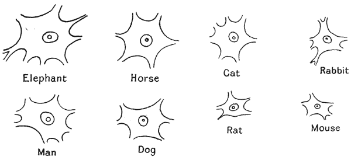
In Fig. 1 we have certain identical nerve-cells taken from various mammals, from the mouse to the elephant, all represented on the same scale of magnification; and we see at once that they are all of much the same order of magnitude. The nerve-cell of the elephant is about twice that of the mouse in linear dimensions, and therefore about eight times greater in volume, or mass. But making some allowance for difference of shape, the linear dimensions of the elephant are to those of the mouse in a ratio certainly not less than one to fifty; from which it would follow that the bulk of the larger animal is something like 125,000 times that of the less. And it also follows, the size of the nerve-cells being {37} about as eight to one, that, in corresponding parts of the nervous system of the two animals, there are more than 15,000 times as many individual cells in one as in the other. In short we may (with Enriques) lay it down as a general law that among animals, whether large or small, the ganglion-cells vary in size within narrow limits; and that, amidst all the great variety of structural type of ganglion observed in different classes of animals, it is always found that the smaller species have simpler ganglia than the larger, that is to say ganglia containing a smaller number of cellular elements63. The bearing of such simple facts as this upon the cell-theory in general is not to be disregarded; and the warning is especially clear against exaggerated attempts to correlate physiological processes with the visible mechanism of associated cells, rather than with the system of energies, or the field of force, which is associated with them. For the life of {38} the body is more than the sum of the properties of the cells of which it is composed: as Goethe said, “Das Lebendige ist zwar in Elemente zerlegt, aber man kann es aus diesen nicht wieder zusammenstellen und beleben.”
Among certain lower and microscopic organisms, such for instance as the Rotifera, we are still more palpably struck by the small number of cells which go to constitute a usually complex organ, such as kidney, stomach, ovary, etc. We can sometimes number them in a few units, in place of the thousands that make up such an organ in larger, if not always higher, animals. These facts constitute one among many arguments which combine to teach us that, however important and advantageous the subdivision of organisms into cells may be from the constructional, or from the dynamical point of view, the phenomenon has less essential importance in theoretical biology than was once, and is often still, assigned to it.
Again, just as Sachs shewed that there was a limit to the amount of cytoplasm which could gather round a single nucleus, so Boveri has demonstrated that the nucleus itself has definite limitations of size, and that, in cell-division after fertilisation, each new nucleus has the same size as its parent-nucleus64.
In all these cases, then, there are reasons, partly no doubt physiological, but in very large part purely physical, which set limits to the normal magnitude of the organism or of the cell. But as we have already discussed the existence of absolute and definite limitations, of a physical kind, to the possible increase in magnitude of an organism, let us now enquire whether there be not also a lower limit, below which the very existence of an organism is impossible, or at least where, under changed conditions, its very nature must be profoundly modified.
Among the smallest of known organisms we have, for instance, Micromonas mesnili, Bonel, a flagellate infusorian, which measures about ·34 µ, or ·00034 mm., by ·00025 mm.; smaller even than this we have a pathogenic micrococcus of the rabbit, M. progrediens, Schröter, the diameter of which is said to be only ·00015 mm. or ·15 µ, or 1·5 × 10−5 cm.,—about equal to the thickness of {39} the thinnest gold-leaf; and as small if not smaller still are a few bacteria and their spores. But here we have reached, or all but reached the utmost limits of ordinary microscopic vision; and there remain still smaller organisms, the so-called “filter-passers,” which the ultra-microscope reveals, but which are mainly brought within our ken only by the maladies, such as hydrophobia, foot-and-mouth disease, or the “mosaic” disease of the tobacco-plant, to which these invisible micro-organisms give rise65. Accordingly, since it is only by the diseases which they occasion that these tiny bodies are made known to us, we might be tempted to suppose that innumerable other invisible organisms, smaller and yet smaller, exist unseen and unrecognised by man.
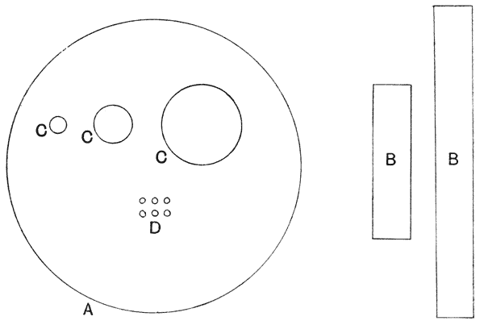
To illustrate some of these small magnitudes I have adapted the preceding diagram from one given by Zsigmondy66. Upon the {40} same scale the minute ultramicroscopic particles of colloid gold would be represented by the finest dots which we could make visible to the naked eye upon the paper.
A bacillus of ordinary, typical size is, say, 1 µ in length. The length (or height) of a man is about a million and three-quarter times as great, i.e. 1·75 metres, or 1·75 × 106 µ; and the mass of the man is in the neighbourhood of five million, million, million (5 × 1018) times greater than that of the bacillus. If we ask whether there may not exist organisms as much less than the bacillus as the bacillus is less than the dimensions of a man, it is very easy to see that this is quite impossible, for we are rapidly approaching a point where the question of molecular dimensions, and of the ultimate divisibility of matter, begins to call for our attention, and to obtrude itself as a crucial factor in the case.
Clerk Maxwell dealt with this matter in his article “Atom67,” and, in somewhat greater detail, Errera discusses the question on the following lines68. The weight of a hydrogen molecule is, according to the physical chemists, somewhere about 8·6 × 2 × 10−22 milligrammes; and that of any other element, whose molecular weight is M, is given by the equation
Accordingly, the weight of the atom of sulphur may be taken as
The analysis of ordinary bacteria shews them to consist69 of about 85% of water, and 15% of solids; while the solid residue of vegetable protoplasm contains about one part in a thousand of sulphur. We may assume, therefore, that the living protoplasm contains about
parts of sulphur, taking the total weight as = 1.
But our little micrococcus, of 0·15 µ in diameter, would, if it were spherical, have a volume of
and therefore (taking its density as equal to that of water), a weight of
But of this total weight, the sulphur represents only
And if we divide this by the weight of an atom of sulphur, we have
According to this estimate, then, our little Micrococcus progrediens should contain only about 10,000 atoms of sulphur, an element indispensable to its protoplasmic constitution; and it follows that an organism of one-tenth the diameter of our micrococcus would only contain 10 sulphur-atoms, and therefore only ten chemical “molecules” or units of protoplasm!
It may be open to doubt whether the presence of sulphur be really essential to the constitution of the proteid or “protoplasmic” molecule; but Errera gives us yet another illustration of a similar kind, which is free from this objection or dubiety. The molecule of albumin, as is generally agreed, can scarcely be less than a thousand times the size of that of such an element as sulphur: according to one particular determination70, serum albumin has a constitution corresponding to a molecular weight of 10,166, and even this may be far short of the true complexity of a typical albuminoid molecule. The weight of such a molecule is
Now the bacteria contain about 14% of albuminoids, these constituting by far the greater part of the dry residue; and therefore (from equation (5)), the weight of albumin in our micrococcus is about
If we divide this weight by that which we have arrived at as the weight of an albumin molecule, we have
in other words, our micrococcus apparently contains something less than 30,000 molecules of albumin. {42}
According to the most recent estimates, the weight of the hydrogen molecule is somewhat less than that on which Errera based his calculations, namely about 16 × 10−22 mgms. and according to this value, our micrococcus would contain just about 27,000 albumin molecules. In other words, whichever determination we accept, we see that an organism one-tenth as large as our micrococcus, in linear dimensions, would only contain some thirty molecules of albumin; or, in other words, our micrococcus is only about thirty times as large, in linear dimensions, as a single albumin molecule71.
We must doubtless make large allowances for uncertainty in the assumptions and estimates upon which these calculations are based; and we must also remember that the data with which the physicist provides us in regard to molecular magnitudes are, to a very great extent, maximal values, above which the molecular magnitude (or rather the sphere of the molecule’s range of motion) is not likely to lie: but below which there is a greater element of uncertainty as to its possibly greater minuteness. But nevertheless, when we shall have made all reasonable allowances for uncertainty upon the physical side, it will still be clear that the smallest known bodies which are described as organisms draw nigh towards molecular magnitudes, and we must recognise that the subdivision of the organism cannot proceed to an indefinite extent, and in all probability cannot go very much further than it appears to have done in these already discovered forms. For, even, after giving all due regard to the complexity of our unit (that is to say the albumin-molecule), with all the increased possibilities of interrelation with its neighbours which this complexity implies, we cannot but see that physiologically, and comparatively speaking, we have come down to a very simple thing.
While such considerations as these, based on the chemical composition of the organism, teach us that there must be a definite lower limit to its magnitude, other considerations of a purely physical kind lead us to the same conclusion. For our discussion of the principle of similitude has already taught us that, long before we reach these almost infinitesimal magnitudes, the {43} diminishing organism will have greatly changed in all its physical relations, and must at length arrive under conditions which must surely be incompatible with anything such as we understand by life, at least in its full and ordinary development and manifestation.
We are told, for instance, that the powerful force of surface-tension, or capillarity, begins to act within a range of about 1 ⁄ 500,000 of an inch, or say 0·05 µ. A soap-film, or a film of oil upon water, may be attenuated to far less magnitudes than this; the black spots upon a soap-bubble are known, by various concordant methods of measurement, to be only about 6 × 10−7 cm., or about ·006 µ thick, and Lord Rayleigh and M. Devaux72 have obtained films of oil of ·002 µ, or even ·001 µ in thickness.
But while it is possible for a fluid film to exist in these almost molecular dimensions, it is certain that, long before we reach them, there must arise new conditions of which we have little knowledge and which it is not easy even to imagine.
It would seem that, in an organism of ·1 µ in diameter, or even rather more, there can be no essential distinction between the interior and the surface layers. No hollow vesicle, I take it, can exist of these dimensions, or at least, if it be possible for it to do so, the contained gas or fluid must be under pressures of a formidable kind73, and of which we have no knowledge or experience. Nor, I imagine, can there be any real complexity, or heterogeneity, of its fluid or semi-fluid contents; there can be no vacuoles within such a cell, nor any layers defined within its fluid substance, for something of the nature of a boundary-film is the necessary condition of the existence of such layers. Moreover, the whole organism, provided that it be fluid or semi-fluid, can only be spherical in form. What, then, can we attribute, in the way of properties, to an organism of a size as small as, or smaller than, say ·05 µ? It must, in all probability, be a homogeneous, structureless sphere, composed of a very small number of albuminoid or other molecules. Its vital properties and functions must be extraordinarily limited; its specific outward characters, even if we could see it, must be nil; and its specific properties must be little more than those of an ion-laden corpuscle, enabling it to perform {44} this or that chemical reaction, or to produce this or that pathogenic effect. Even among inorganic, non-living bodies, there must be a certain grade of minuteness at which the ordinary properties become modified. For instance, while under ordinary circumstances crystallisation starts in a solution about a minute solid fragment or crystal of the salt, Ostwald has shewn that we may have particles so minute that they fail to serve as a nucleus for crystallisation,—which is as much as to say that they are too minute to have the form and properties of a “crystal”; and again, in his thin oil-films, Lord Rayleigh has noted the striking change of physical properties which ensues when the film becomes attenuated to something less than one close-packed layer of molecules74.
Thus, as Clerk Maxwell put it, “molecular science sets us face to face with physiological theories. It forbids the physiologist from imagining that structural details of infinitely small dimensions [such as Leibniz assumed, one within another, ad infinitum] can furnish an explanation of the infinite variety which exists in the properties and functions of the most minute organisms.” And for this reason he reprobates, with not undue severity, those advocates of pangenesis and similar theories of heredity, who would place “a whole world of wonders within a body so small and so devoid of visible structure as a germ.” But indeed it scarcely needed Maxwell’s criticism to shew forth the immense physical difficulties of Darwin’s theory of Pangenesis: which, after all, is as old as Democritus, and is no other than that Promethean particulam undique desectam of which we have read, and at which we have smiled, in our Horace.
There are many other ways in which, when we “make a long excursion into space,” we find our ordinary rules of physical behaviour entirely upset. A very familiar case, analysed by Stokes, is that the viscosity of the surrounding medium has a relatively powerful effect upon bodies below a certain size. A droplet of water, a thousandth of an inch (25 µ) in diameter, cannot fall in still air quicker than about an inch and a half per second; and as its size decreases, its resistance varies as the diameter, and not (as with larger bodies) as the surface of the {45} drop. Thus a drop one-tenth of that size (2·5 µ), the size, apparently, of the drops of water in a light cloud, will fall a hundred times slower, or say an inch a minute; and one again a tenth of this diameter (say ·25 µ, or about twice as big, in linear dimensions, as our micrococcus), will scarcely fall an inch in two hours. By reason of this principle, not only do the smaller bacteria fall very slowly through the air, but all minute bodies meet with great proportionate resistance to their movements in a fluid. Even such comparatively large organisms as the diatoms and the foraminifera, laden though they are with a heavy shell of flint or lime, seem to be poised in the water of the ocean, and fall in it with exceeding slowness.
The Brownian movement has also to be reckoned with,—that remarkable phenomenon studied nearly a century ago (1827) by Robert Brown, facile princeps botanicorum. It is one more of those fundamental physical phenomena which the biologists have contributed, or helped to contribute, to the science of physics.
The quivering motion, accompanied by rotation, and even by translation, manifested by the fine granular particles issuing from a crushed pollen-grain, and which Robert Brown proved to have no vital significance but to be manifested also by all minute particles whatsoever, organic and inorganic, was for many years unexplained. Nearly fifty years after Brown wrote, it was said to be “due, either directly to some calorical changes continually taking place in the fluid, or to some obscure chemical action between the solid particles and the fluid which is indirectly promoted by heat75.” Very shortly after these last words were written, it was ascribed by Wiener to molecular action, and we now know that it is indeed due to the impact or bombardment of molecules upon a body so small that these impacts do not for the moment, as it were, “average out” to approximate equality on all sides. The movement becomes manifest with particles of somewhere about 20 µ in diameter, it is admirably displayed by particles of about 12 µ in diameter, and becomes more marked the smaller the particles are. The bombardment causes our particles to behave just like molecules of uncommon size, and this {46} behaviour is manifested in several ways76. Firstly, we have the quivering movement of the particles; secondly, their movement backwards and forwards, in short, straight, disjointed paths; thirdly, the particles rotate, and do so the more rapidly the smaller they are, and by theory, confirmed by observation, it is found that particles of 1 µ in diameter rotate on an average through 100° per second, while particles of 13 µ in diameter turn through only 14° per minute. Lastly, the very curious result appears, that in a layer of fluid the particles are not equally distributed, nor do they all ever fall, under the influence of gravity, to the bottom. But just as the molecules of the atmosphere are so distributed, under the influence of gravity, that the density (and therefore the number of molecules per unit volume) falls off in geometrical progression as we ascend to higher and higher layers, so is it with our particles, even within the narrow limits of the little portion of fluid under our microscope. It is only in regard to particles of the simplest form that these phenomena have been theoretically investigated77, and we may take it as certain that more complex particles, such as the twisted body of a Spirillum, would show other and still more complicated manifestations. It is at least clear that, just as the early microscopists in the days before Robert Brown never doubted but that these phenomena were purely vital, so we also may still be apt to confuse, in certain cases, the one phenomenon with the other. We cannot, indeed, without the most careful scrutiny, decide whether the movements of our minutest organisms are intrinsically “vital” (in the sense of being beyond a physical mechanism, or working model) or not. For example, Schaudinn has suggested that the undulating movements of Spirochaete pallida must be due to the presence of a minute, unseen, “undulating membrane”; and Doflein says of the same species that “sie verharrt oft mit eigenthümlich zitternden Bewegungen zu einem Orte.” Both movements, the trembling or quivering {47} movement described by Doflein, and the undulating or rotating movement described by Schaudinn, are just such as may be easily and naturally interpreted as part and parcel of the Brownian phenomenon.
While the Brownian movement may thus simulate in a deceptive way the active movements of an organism, the reverse statement also to a certain extent holds good. One sometimes lies awake of a summer’s morning watching the flies as they dance under the ceiling. It is a very remarkable dance. The dancers do not whirl or gyrate, either in company or alone; but they advance and retire; they seem to jostle and rebound; between the rebounds they dart hither or thither in short straight snatches of hurried flight; and turn again sharply in a new rebound at the end of each little rush. Their motions are wholly “erratic,” independent of one another, and devoid of common purpose. This is nothing else than a vastly magnified picture, or simulacrum, of the Brownian movement; the parallel between the two cases lies in their complete irregularity, but this in itself implies a close resemblance. One might see the same thing in a crowded market-place, always provided that the bustling crowd had no business whatsoever. In like manner Lucretius, and Epicurus before him, watched the dust-motes quivering in the beam, and saw in them a mimic representation, rei simulacrum et imago, of the eternal motions of the atoms. Again the same phenomenon may be witnessed under the microscope, in a drop of water swarming with Paramoecia or suchlike Infusoria; and here the analogy has been put to a numerical test. Following with a pencil the track of each little swimmer, and dotting its place every few seconds (to the beat of a metronome), Karl Przibram found that the mean successive distances from a common base-line obeyed with great exactitude the “Einstein formula,” that is to say the particular form of the “law of chance” which is applicable to the case of the Brownian movement78. The phenomenon is (of course) merely analogous, and by no means identical with the Brownian movement; for the range of motion of the little active organisms, whether they be gnats or infusoria, is vastly greater than that of the minute particles which are {48} passive under bombardment; but nevertheless Przibram is inclined to think that even his comparatively large infusoria are small enough for the molecular bombardment to be a stimulus, though not the actual cause, of their irregular and interrupted movements.
There is yet another very remarkable phenomenon which may come into play in the case of the minutest of organisms; and this is their relation to the rays of light, as Arrhenius has told us. On the waves of a beam of light, a very minute particle (in vacuo) should be actually caught up, and carried along with an immense velocity; and this “radiant pressure” exercises its most powerful influence on bodies which (if they be of spherical form) are just about ·00016 mm., or ·16 µ in diameter. This is just about the size, as we have seen, of some of our smallest known protozoa and bacteria, while we have some reason to believe that others yet unseen, and perhaps the spores of many, are smaller still. Now we have seen that such minute particles fall with extreme slowness in air, even at ordinary atmospheric pressures: our organism measuring ·16 µ would fall but 83 metres in a year, which is as much as to say that its weight offers practically no impediment to its transference, by the slightest current, to the very highest regions of the atmosphere. Beyond the atmosphere, however, it cannot go, until some new force enable it to resist the attraction of terrestrial gravity, which the viscosity of an atmosphere is no longer at hand to oppose. But it is conceivable that our particle may go yet farther, and actually break loose from the bonds of earth. For in the upper regions of the atmosphere, say fifty miles high, it will come in contact with the rays and flashes of the Northern Lights, which consist (as Arrhenius maintains) of a fine dust, or cloud of vapour-drops, laden with a charge of negative electricity, and projected outwards from the sun. As soon as our particle acquires a charge of negative electricity it will begin to be repelled by the similarly laden auroral particles, and the amount of charge necessary to enable a particle of given size (such as our little monad of ·16 µ) to resist the attraction of gravity may be calculated, and is found to be such as the actual conditions can easily supply. Finally, when once set free from the entanglement of the earth’s {49} atmosphere, the particle may be propelled by the “radiant pressure” of light, with a velocity which will carry it.—like Uriel gliding on a sunbeam,—as far as the orbit of Mars in twenty days, of Jupiter in eighty days, and as far as the nearest fixed star in three thousand years! This, and much more, is Arrhenius’s contribution towards the acceptance of Lord Kelvin’s hypothesis that life may be, and may have been, disseminated across the bounds of space, throughout the solar system and the whole universe!
It may well be that we need attach no great practical importance to this bold conception; for even though stellar space be shewn to be mare liberum to minute material travellers, we may be sure that those which reach a stellar or even a planetary bourne are infinitely, or all but infinitely, few. But whether or no, the remote possibilities of the case serve to illustrate in a very vivid way the profound differences of physical property and potentiality which are associated in the scale of magnitude with simple differences of degree.
When we study magnitude by itself, apart, that is to say, from the gradual changes to which it may be subject, we are dealing with a something which may be adequately represented by a number, or by means of a line of definite length; it is what mathematicians call a scalar phenomenon. When we introduce the conception of change of magnitude, of magnitude which varies as we pass from one direction to another in space, or from one instant to another in time, our phenomenon becomes capable of representation by means of a line of which we define both the length and the direction; it is (in this particular aspect) what is called a vector phenomenon.
When we deal with magnitude in relation to the dimensions of space, the vector diagram which we draw plots magnitude in one direction against magnitude in another,—length against height, for instance, or against breadth; and the result is simply what we call a picture or drawing of an object, or (more correctly) a “plane projection” of the object. In other words, what we call Form is a ratio of magnitudes, referred to direction in space.
When in dealing with magnitude we refer its variations to successive intervals of time (or when, as it is said, we equate it with time), we are then dealing with the phenomenon of growth; and it is evident, therefore, that this term growth has wide meanings. For growth may obviously be positive or negative; that is to say, a thing may grow larger or smaller, greater or less; and by extension of the primitive concrete signification of the word, we easily and legitimately apply it to non-material things, such as temperature, and say, for instance, that a body “grows” hot or cold. When in a two-dimensional diagram, we represent a magnitude (for instance length) in relation to time (or “plot” {51} length against time, as the phrase is), we get that kind of vector diagram which is commonly known as a “curve of growth.” We perceive, accordingly, that the phenomenon which we are now studying is a velocity (whose “dimensions” are Space⁄Time or L⁄T); and this phenomenon we shall speak of, simply, as a rate of growth.
In various conventional ways we can convert a two-dimensional into a three-dimensional diagram. We do so, for example, by means of the geometrical method of “perspective” when we represent upon a sheet of paper the length, breadth and depth of an object in three-dimensional space; but we do it more simply, as a rule, by means of “contour-lines,” and always when time is one of the dimensions to be represented. If we superimpose upon one another (or even set side by side) pictures, or plane projections, of an organism, drawn at successive intervals of time, we have such a three-dimensional diagram, which is a partial representation (limited to two dimensions of space) of the organism’s gradual change of form, or course of development; and in such a case our contour-lines may, for the purposes of the embryologist, be separated by intervals representing a few hours or days, or, for the purposes of the palaeontologist, by interspaces of unnumbered and innumerable years79.
Such a diagram represents in two of its three dimensions form, and in two, or three, of its dimensions growth; and so we see how intimately the two conceptions are correlated or inter-related to one another. In short, it is obvious that the form of an animal is determined by its specific rate of growth in various directions; accordingly, the phenomenon of rate of growth deserves to be studied as a necessary preliminary to the theoretical study of form, and, mathematically speaking, organic form itself appears to us as a function of time80. {52}
At the same time, we need only consider this part of our subject somewhat briefly. Though it has an essential bearing on the problems of morphology, it is in greater degree involved with physiological problems; and furthermore, the statistical or numerical aspect of the question is peculiarly adapted for the mathematical study of variation and correlation. On these important subjects we shall scarcely touch; for our main purpose will be sufficiently served if we consider the characteristics of a rate of growth in a few illustrative cases, and recognise that this rate of growth is a very important specific property, with its own characteristic value in this organism or that, in this or that part of each organism, and in this or that phase of its existence.
The statement which we have just made that “the form of an organism is determined by its rate of growth in various directions,” is one which calls (as we have partly seen in the foregoing chapter) for further explanation and for some measure of qualification. Among organic forms we shall have frequent occasion to see that form is in many cases due to the immediate or direct action of certain molecular forces, of which surface-tension is that which plays the greatest part. Now when surface-tension (for instance) causes a minute semi-fluid organism to assume a spherical form, or gives the form of a catenary or an elastic curve to a film of protoplasm in contact with some solid skeletal rod, or when it acts in various other ways which are productive of definite contours, this is a process of conformation that, both in appearance and reality, is very different from the process by which an ordinary plant or animal grows into its specific form. In both cases, change of form is brought about by the movement of portions of matter, and in both cases it is ultimately due to the action of molecular forces; but in the one case the movements of the particles of matter lie for the most part within molecular range, while in the other we have to deal chiefly with the transference of portions of matter into the system from without, and from one widely distant part of the organism to another. It is to this latter class of phenomena that we usually restrict the term growth; and it is in regard to them that we are in a position to study the rate of action in different directions, and to see that it is merely on a difference of velocities that the modification of form essentially depends. {53} The difference between the two classes of phenomena is somewhat akin to the difference between the forces which determine the form of a rain-drop and those which, by the flowing of the waters and the sculpturing of the solid earth, have brought about the complex configuration of a river; molecular forces are paramount in the conformation of the one, and molar forces are dominant in the other.
At the same time it is perfectly true that all changes of form, inasmuch as they necessarily involve changes of actual and relative magnitude, may, in a sense, be properly looked upon as phenomena of growth; and it is also true, since the movement of matter must always involve an element of time81, that in all cases the rate of growth is a phenomenon to be considered. Even though the molecular forces which play their part in modifying the form of an organism exert an action which is, theoretically, all but instantaneous, that action is apt to be dragged out to an appreciable interval of time by reason of viscosity or some other form of resistance in the material. From the physical or physiological point of view the rate of action even in such cases may be well worth studying; for example, a study of the rate of cell-division in a segmenting egg may teach us something about the work done, and about the various energies concerned. But in such cases the action is, as a rule, so homogeneous, and the form finally attained is so definite and so little dependent on the time taken to effect it, that the specific rate of change, or rate of growth, does not enter into the morphological problem.
To sum up, we may lay down the following general statements. The form of organisms is a phenomenon to be referred in part to the direct action of molecular forces, in part to a more complex and slower process, indirectly resulting from chemical, osmotic and other forces, by which material is introduced into the organism and transferred from one part of it to another. It is this latter complex phenomenon which we usually speak of as “growth.” {54}
Every growing organism, and every part of such a growing organism, has its own specific rate of growth, referred to a particular direction. It is the ratio between the rates of growth in various directions by which we must account for the external forms of all, save certain very minute, organisms. This ratio between rates of growth in various directions may sometimes be of a simple kind, as when it results in the mathematically definable outline of a shell, or in the smooth curve of the margin of a leaf. It may sometimes be a very constant one, in which case the organism, while growing in bulk, suffers little or no perceptible change in form; but such equilibrium seldom endures for more than a season, and when the ratio tends to alter, then we have the phenomenon of morphological “development,” or steady and persistent change of form.
This elementary concept of Form, as determined by varying rates of Growth, was clearly apprehended by the mathematical mind of Haller,—who had learned his mathematics of the great John Bernoulli, as the latter in turn had learned his physiology from the writings of Borelli. Indeed it was this very point, the apparently unlimited extent to which, in the development of the chick, inequalities of growth could and did produce changes of form and changes of anatomical “structure,” that led Haller to surmise that the process was actually without limits, and that all development was but an unfolding, or “evolutio,” in which no part came into being which had not essentially existed before82. In short the celebrated doctrine of “preformation” implied on the one hand a clear recognition of what, throughout the later stages of development, growth can do, by hastening the increase in size of one part, hindering that of another, changing their relative magnitudes and positions, and altering their forms; while on the other hand it betrayed a failure (inevitable in those days) to recognise the essential difference between these movements of masses and the molecular processes which precede and accompany {55} them, and which are characteristic of another order of magnitude.
By other writers besides Haller the very general, though not strictly universal connection between form and rate of growth has been clearly recognised. Such a connection is implicit in those “proportional diagrams” by which Dürer and some of his brother artists were wont to illustrate the successive changes of form, or of relative dimensions, which attend the growth of the child, to boyhood and to manhood. The same connection was recognised, more explicitly, by some of the older embryologists, for instance by Pander83, and appears, as a survival of the doctrine of preformation, in his study of the development of the chick. And long afterwards, the embryological aspect of the case was emphasised by His, who pointed out, for instance, that the various foldings of the blastoderm, by which the neural and amniotic folds were brought into being, were essentially and obviously the resultant of unequal rates of growth,—of local accelerations or retardations of growth,—in what to begin with was an even and uniform layer of embryonic tissue. If we imagine a flat sheet of paper, parts of which are caused (as by moisture or evaporation) to expand or to contract, the plane surface is at once dimpled, or “buckled,” or folded, by the resultant forces of expansion or contraction: and the various distortions to which the plane surface of the “germinal disc” is subject, as His shewed once and for all, are precisely analogous. An experimental demonstration still more closely comparable to the actual case of the blastoderm, is obtained by making an “artificial blastoderm,” of little pills or pellets of dough, which are caused to grow, with varying velocities, by the addition of varying quantities of yeast. Here, as Roux is careful to point out84, we observe that it is not only the growth of the individual cells, but the traction exercised through their mutual interconnections, which brings about the foldings and other distortions of the entire structure. {56}
But this again was clearly present to Haller’s mind, and formed an essential part of his embryological doctrine. For he has no sooner treated of incrementum, or celeritas incrementi, than he proceeds to deal with the contributory and complementary phenomena of expansion, traction (adtractio)85, and pressure, and the more subtle influences which he denominates vis derivationis et revulsionis86: these latter being the secondary and correlated effects on growth in one part, brought about, through such changes as are produced (for instance) in the circulation, by the growth of another.
Let us admit that, on the physiological side, Haller’s or His’s methods of explanation carry us back but a little way; yet even this little way is something gained. Nevertheless, I can well remember the harsh criticism, and even contempt, which His’s doctrine met with, not merely on the ground that it was inadequate, but because such an explanation was deemed wholly inappropriate, and was utterly disavowed87. Hertwig, for instance, asserted that, in embryology, when we found one embryonic stage preceding another, the existence of the former was, for the embryologist, an all-sufficient “causal explanation” of the latter. “We consider (he says), that we are studying and explaining a causal relation when we have demonstrated that the gastrula arises by invagination of a blastosphere, or the neural canal by the infolding of a cell plate so as to constitute a tube88.” For Hertwig, therefore, as {57} Roux remarks, the task of investigating a physical mechanism in embryology,—“der Ziel das Wirken zu erforschen,”—has no existence at all. For Balfour also, as for Hertwig, the mechanical or physical aspect of organic development had little or no attraction. In one notable instance, Balfour himself adduced a physical, or quasi-physical, explanation of an organic process, when he referred the various modes of segmentation of an ovum, complete or partial, equal or unequal and so forth, to the varying amount or the varying distribution of food yolk in association with the germinal protoplasm of the egg89. But in the main, Balfour, like all the other embryologists of his day, was engrossed by the problems of phylogeny, and he expressly defined the aims of comparative embryology (as exemplified in his own textbook) as being “twofold: (1) to form a basis for Phylogeny. and (2) to form a basis for Organogeny or the origin and evolution of organs90.”
It has been the great service of Roux and his fellow-workers of the school of “Entwickelungsmechanik,” and of many other students to whose work we shall refer, to try, as His tried91 to import into embryology, wherever possible, the simpler concepts of physics, to introduce along with them the method of experiment, and to refuse to be bound by the narrow limitations which such teaching as that of Hertwig would of necessity impose on the work and the thought and on the whole philosophy of the biologist.
Before we pass from this general discussion to study some of the particular phenomena of growth, let me give a single illustration, from Darwin, of a point of view which is in marked contrast to Haller’s simple but essentially mathematical conception of Form.
There is a curious passage in the Origin of Species92, where Darwin is discussing the leading facts of embryology, and in particular Von Baer’s “law of embryonic resemblance.” Here Darwin says “We are so much accustomed to see a difference in {58} structure between the embryo and the adult, that we are tempted to look at this difference as in some necessary manner contingent on growth. But there is no reason why, for instance, the wing of a bat, or the fin of a porpoise, should not have been sketched out with all their parts in proper proportion, as soon as any part became visible.” After pointing out with his habitual care various exceptions, Darwin proceeds to lay down two general principles, viz. “that slight variations generally appear at a not very early period of life,” and secondly, that “at whatever age a variation first appears in the parent, it tends to reappear at a corresponding age in the offspring.” He then argues that it is with nature as with the fancier, who does not care what his pigeons look like in the embryo, so long as the full-grown bird possesses the desired qualities; and that the process of selection takes place when the birds or other animals are nearly grown up,—at least on the part of the breeder, and presumably in nature as a general rule. The illustration of these principles is set forth as follows; “Let us take a group of birds, descended from some ancient form and modified through natural selection for different habits. Then, from the many successive variations having supervened in the several species at a not very early age, and having been inherited at a corresponding age, the young will still resemble each other much more closely than do the adults,—just as we have seen with the breeds of the pigeon .... Whatever influence long-continued use or disuse may have had in modifying the limbs or other parts of any species, this will chiefly or solely have affected it when nearly mature, when it was compelled to use its full powers to gain its own living; and the effects thus produced will have been transmitted to the offspring at a corresponding nearly mature age. Thus the young will not be modified, or will be modified only in a slight degree, through the effects of the increased use or disuse of parts.” This whole argument is remarkable, in more ways than we need try to deal with here; but it is especially remarkable that Darwin should begin by casting doubt upon the broad fact that a “difference in structure between the embryo and the adult” is “in some necessary manner contingent on growth”; and that he should see no reason why complicated structures of the adult “should not have been sketched out {59} with all their parts in proper proportion, as soon as any part became visible.” It would seem to me that even the most elementary attention to form in its relation to growth would have removed most of Darwin’s difficulties in regard to the particular phenomena which he is here considering. For these phenomena are phenomena of form, and therefore of relative magnitude; and the magnitudes in question are attained by growth, proceeding with certain specific velocities, and lasting for certain long periods of time. And it is accordingly obvious that in any two related individuals (whether specifically identical or not) the differences between them must manifest themselves gradually, and be but little apparent in the young. It is for the same simple reason that animals which are of very different sizes when adult, differ less and less in size (as well as in form) as we trace them backwards through the foetal stages.
Though we study the visible effects of varying rates of growth throughout wellnigh all the problems of morphology, it is not very often that we can directly measure the velocities concerned. But owing to the obvious underlying importance which the phenomenon has to the morphologist we must make shift to study it where we can, even though our illustrative cases may seem to have little immediate bearing on the morphological problem93.
In a very simple organism, of spherical symmetry, such as the single spherical cell of Protococcus or of Orbulina, growth is reduced to its simplest terms, and indeed it becomes so simple in its outward manifestations that it is no longer of special interest to the morphologist. The rate of growth is measured by the rate of change in length of a radius, i.e. V = (R′ − R) ⁄ T, and from this we may calculate, as already indicated, the rate of growth in terms of surface and of volume. The growing body remains of constant form, owing to the symmetry of the system; because, that is to say, on the one hand the pressure exerted by the growing protoplasm is exerted equally in all directions, after the manner of a hydrostatic pressure, which indeed it actually is: while on the other hand, the “skin” or surface layer of the cell is sufficiently {60} homogeneous to exert at every point an approximately uniform resistance. Under these conditions then, the rate of growth is uniform in all directions, and does not affect the form of the organism.
But in a larger or a more complex organism the study of growth, and of the rate of growth, presents us with a variety of problems, and the whole phenomenon becomes a factor of great morphological importance. We no longer find that it tends to be uniform in all directions, nor have we any right to expect that it should. The resistances which it meets with will no longer be uniform. In one direction but not in others it will be opposed by the important resistance of gravity; and within the growing system itself all manner of structural differences will come into play, setting up unequal resistances to growth by the varying rigidity or viscosity of the material substance in one direction or another. At the same time, the actual sources of growth, the chemical and osmotic forces which lead to the intussusception of new matter, are not uniformly distributed; one tissue or one organ may well manifest a tendency to increase while another does not; a series of bones, their intervening cartilages, and their surrounding muscles, may all be capable of very different rates of increment. The differences of form which are the resultants of these differences in rate of growth are especially manifested during that part of life when growth itself is rapid: when the organism, as we say, is undergoing its development. When growth in general has become slow, the relative differences in rate between different parts of the organism may still exist, and may be made manifest by careful observation, but in many, or perhaps in most cases, the resultant change of form does not strike the eye. Great as are the differences between the rates of growth in different parts of an organism, the marvel is that the ratios between them are so nicely balanced as they actually are, and so capable, accordingly, of keeping for long periods of time the form of the growing organism all but unchanged. There is the nicest possible balance of forces and resistances in every part of the complex body; and when this normal equilibrium is disturbed, then we get abnormal growth, in the shape of tumours, exostoses, and malformations of every kind. {61}
Man will serve us as well as another organism for our first illustrations of rate of growth; and we cannot do better than go for our first data concerning him to Quetelet’s Anthropométrie94, an epoch-making book for the biologist. For not only is it packed with information, some of it still unsurpassed, in regard to human growth and form, but it also merits our highest admiration as the first great essay in scientific statistics, and the first work in which organic variation was discussed from the point of view of the mathematical theory of probabilities.
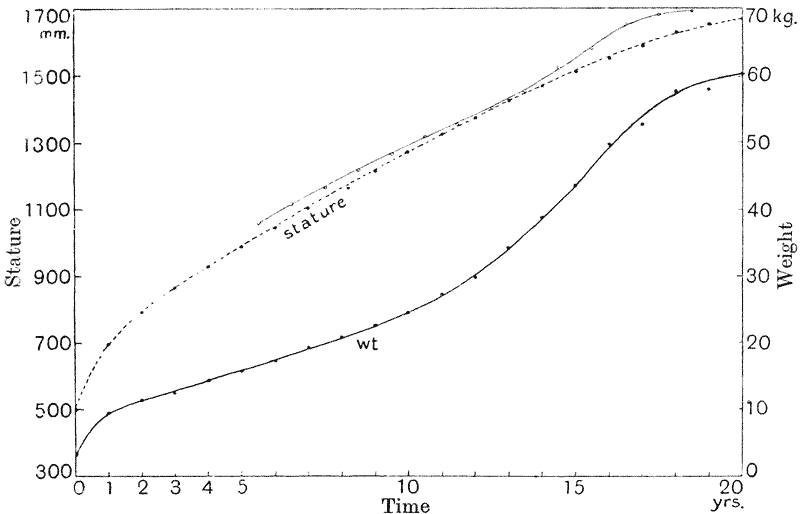
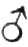
);) from Quetelet’s Belgian data. The upper curve of stature from Bowditch’s Boston data.If the child be some 20 inches, or say 50 cm. tall at birth, and the man some six feet high, or say 180 cm., at twenty, we may say that his average rate of growth has been (180 − 50) ⁄ 20 cm., or 6·5 centimetres per annum. But we know very well that this is {62} but a very rough preliminary statement, and that the boy grew quickly during some, and slowly during other, of his twenty years. It becomes necessary therefore to study the phenomenon of growth in successive small portions; to study, that is to say, the successive lengths, or the successive small differences, or increments, of length (or of weight, etc.), attained in successive short increments of time. This we do in the first instance in the usual way, by the “graphic method” of plotting length against time, and so constructing our “curve of growth.” Our curve of growth, whether of weight or length (Fig. 3), has always a certain characteristic form, or characteristic curvature. This is our immediate proof of the fact that the rate of growth changes as time goes on; for had it not been so, had an equal increment of length been added in each equal interval of time, our “curve” would have appeared as a straight line. Such as it is, it tells us not only that the rate of growth tends to alter, but that it alters in a definite and orderly way; for, subject to various minor interruptions, due to secondary causes, our curves of growth are, on the whole, “smooth” curves.
The curve of growth for length or stature in man indicates a rapid increase at the outset, that is to say during the quick growth of babyhood; a long period of slower, but still rapid and almost steady growth in early boyhood; as a rule a marked quickening soon after the boy is in his teens, when he comes to “the growing age”; and finally a gradual arrest of growth as the boy “comes to his full height,” and reaches manhood.
If we carried the curve further, we should see a very curious thing. We should see that a man’s full stature endures but for a spell; long before fifty95 it has begun to abate, by sixty it is notably lessened, in extreme old age the old man’s frame is shrunken and it is but a memory that “he once was tall.” We have already seen, and here we see again, that growth may have a “negative value.” The phenomenon of negative growth in old age extends to weight also, and is evidently largely chemical in origin: the organism can no longer add new material to its fabric fast enough to keep pace with the wastage of time. Our curve {63} of growth is in fact a diagram of activity, or “time-energy” diagram96. As the organism grows it is absorbing energy beyond its daily needs, and accumulating it at a rate depicted in our
| Stature in metres | Weight in kgm. | Span of arms, male | % ratio of stature to span | |||||
|---|---|---|---|---|---|---|---|---|
| Age | Male | Female | % F ⁄ M | Male | Female | % F ⁄ M | ||
| 0 | 0·500 | 0·494 | 98·8 | 3·2 | 2·9 | 90·7 | 0·496 | 100·8 |
| 1 | 0·698 | 0·690 | 98·8 | 9·4 | 8·8 | 93·6 | 0·695 | 100·4 |
| 2 | 0·791 | 0·781 | 98·7 | 11·3 | 10·7 | 94·7 | 0·789 | 100·3 |
| 3 | 0·864 | 0·854 | 98·8 | 12·4 | 11·8 | 95·2 | 0·863 | 100·1 |
| 4 | 0·927 | 0·915 | 98·7 | 14·2 | 13·0 | 91·5 | 0·927 | 100·0 |
| 5 | 0·987 | 0·974 | 98·7 | 15·8 | 14·4 | 91·1 | 0·988 | 99·9 |
| 6 | 1·046 | 1·031 | 98·5 | 17·2 | 16·0 | 93·0 | 1·048 | 99·8 |
| 7 | 1·104 | 1·087 | 98·4 | 19·1 | 17·5 | 91·6 | 1·107 | 99·7 |
| 8 | 1·162 | 1·142 | 98·2 | 20·8 | 19·1 | 91·8 | 1·166 | 99·6 |
| 9 | 1·218 | 1·196 | 98·2 | 22·6 | 21·4 | 94·7 | 1·224 | 99·5 |
| 10 | 1·273 | 1·249 | 98·1 | 24·5 | 23·5 | 95·9 | 1·281 | 99·4 |
| 11 | 1·325 | 1·301 | 98·2 | 27·1 | 25·6 | 94·5 | 1·335 | 99·2 |
| 12 | 1·375 | 1·352 | 98·3 | 29·8 | 29·8 | 100·0 | 1·388 | 99·1 |
| 13 | 1·423 | 1·400 | 98·4 | 34·4 | 32·9 | 95·6 | 1·438 | 98·9 |
| 14 | 1·469 | 1·446 | 98·4 | 38·8 | 36·7 | 94·6 | 1·489 | 98·7 |
| 15 | 1·513 | 1·488 | 98·3 | 43·6 | 40·4 | 92·7 | 1·538 | 99·4 |
| 16 | 1·554 | 1·521 | 97·8 | 49·7 | 43·6 | 87·7 | 1·584 | 98·1 |
| 17 | 1·594 | 1·546 | 97·0 | 52·8 | 47·3 | 89·6 | 1·630 | 97·9 |
| 18 | 1·630 | 1·563 | 95·9 | 57·8 | 49·0 | 84·8 | 1·670 | 97·6 |
| 19 | 1·655 | 1·570 | 94·9 | 58·0 | 51·6 | 89·0 | 1·705 | 97·1 |
| 20 | 1·669 | 1·574 | 94·3 | 60·1 | 52·3 | 87·0 | 1·728 | 96·6 |
| 25 | 1·682 | 1·578 | 93·8 | 62·9 | 53·3 | 84·7 | 1·731 | 97·2 |
| 30 | 1·686 | 1·580 | 93·7 | 63·7 | 54·3 | 85·3 | 1·766 | 95·5 |
| 40 | 1·686 | 1·580 | 93·7 | 63·7 | 55·2 | 86·7 | 1·766 | 95·5 |
| 50 | 1·686 | 1·580 | 93·7 | 63·5 | 56·2 | 88·4 | — | — |
| 60 | 1·676 | 1·571 | 93·7 | 61·9 | 54·3 | 87·7 | — | — |
| 70 | 1·660 | 1·556 | 93·7 | 59·5 | 51·5 | 86·5 | — | — |
| 80 | 1·636 | 1·534 | 93·8 | 57·8 | 49·4 | 85·5 | — | — |
| 90 | 1·610 | 1·510 | 93·8 | 57·8 | 49·3 | 85·3 | — | — |
curve; but the time comes when it accumulates no longer, and at last it is constrained to draw upon its dwindling store. But in part, the slow decline in stature is an expression of an unequal contest between our bodily powers and the unchanging force of gravity, {64} which draws us down when we would fain rise up97. For against gravity we fight all our days, in every movement of our limbs, in every beat of our hearts; it is the indomitable force that defeats us in the end, that lays us on our deathbed, that lowers us to the grave98.
Side by side with the curve which represents growth in length, or stature, our diagram shows the curve of weight99. That this curve is of a very different shape from the former one, is accounted for in the main (though not wholly) by the fact which we have already dealt with, that, whatever be the law of increment in a linear dimension, the law of increase in volume, and therefore in weight, will be that these latter magnitudes tend to vary as the cubes of the linear dimensions. This however does not account for the change of direction, or “point of inflection” which we observe in the curve of weight at about one or two years old, nor for certain other differences between our two curves which the scale of our diagram does not yet make clear. These differences are due to the fact that the form of the child is altering with growth, that other linear dimensions are varying somewhat differently from length or stature, and that consequently the growth in bulk or weight is following a more complicated law.
Our curve of growth, whether for weight or length, is a direct picture of velocity, for it represents, as a connected series, the successive epochs of time at which successive weights or lengths are attained. But, as we have already in part seen, a great part of the interest of our curve lies in the fact that we can see from it, not only that length (or some other magnitude) is changing, but that the rate of change of magnitude, or rate of growth, is itself changing. We have, in short, to study the phenomenon of acceleration: we have begun by studying a velocity, or rate of {65} change of magnitude; we must now study an acceleration, or rate of change of velocity. The rate, or velocity, of growth is measured by the slope of the curve; where the curve is steep, it means that growth is rapid, and when growth ceases the curve appears as a horizontal line. If we can find a means, then, of representing at successive epochs the corresponding slope, or steepness, of the curve, we shall have obtained a picture of the rate of change of velocity, or the acceleration of growth. The measure of the steepness of a curve is given by the tangent to the curve, or we may estimate it by taking for equal intervals of time (strictly speaking, for each infinitesimal interval of time) the actual increment added during that interval of time: and in practice this simply amounts to taking the successive differences between the values of length (or of weight) for the successive ages which we have begun by studying. If we then plot these successive differences against time, we obtain a curve each point upon which represents a velocity, and the whole curve indicates the rate of change of velocity, and we call it an acceleration-curve. It contains, in truth, nothing whatsoever that was not implicit in our former curve; but it makes clear to our eye, and brings within the reach of further investigation, phenomena that were hard to see in the other mode of representation.
The acceleration-curve of height, which we here illustrate, in Fig. 4, is very different in form from the curve of growth which we have just been looking at; and it happens that, in this case, there is a very marked difference between the curve which we obtain from Quetelet’s data of growth in height and that which we may draw from any other series of observations known to me from British, French, American or German writers. It begins (as will be seen from our next table) at a very high level, such as it never afterwards attains; and still stands too high, during the first three or four years of life, to be represented on the scale of the accompanying diagram. From these high velocities it falls away, on the whole, until the age when growth itself ceases, and when the rate of growth, accordingly, has, for some years together, the constant value of nil; but the rate of fall, or rate of change of velocity, is subject to several changes or interruptions. During the first three or four years of life the fall is continuous and rapid, {66} but it is somewhat arrested for a while in childhood, from about five years old to eight. According to Quetelet’s data, there is another slight interruption in the falling rate between the ages of about fourteen and sixteen; but in place of this almost insignificant interruption, the English and other statistics indicate a sudden
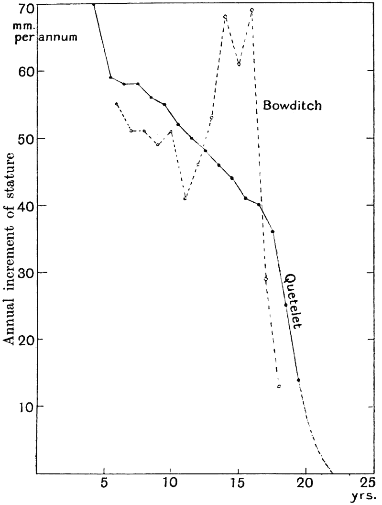
and very marked acceleration of growth beginning at about twelve years of age, and lasting for three or four years; when this period of acceleration is over, the rate begins to fall again, and does so with great rapidity. We do not know how far the absence of this striking feature in the Belgian curve is due to the imperfections of Quetelet’s data, or whether it is a real and significant feature in the small-statured race which he investigated.
| Belgian (Quetelet, p. 344) | Paris* (Variot et Chaumet, p. 55) | Toronto† (Boas, p. 1547) | Worcester‡, Mass. (Boas, p. 1548) | ||||||||||
|---|---|---|---|---|---|---|---|---|---|---|---|---|---|
| Age | Height (Boys) | Ann. increment | Height | Increment | Height (Boys) | Variability of do. (6) | Ann. increment | Ann. increment (Boys) | Variability of do. | Ann. increment (Girls) | Variability of do. | ||
| Boys | Girls | Boys | Girls | ||||||||||
| 0 | 50·0 | — | — | — | — | — | — | — | — | — | — | — | — |
| 1 | 69·8 | 19·8 | 74·2 | 73·6 | — | — | — | — | — | — | — | — | — |
| 2 | 79·1 | 9·3 | 82·7 | 81·8 | 8·5 | 8·2 | — | — | — | — | — | — | — |
| 3 | 86·4 | 7·3 | 89·1 | 88·4 | 6·4 | 6·6 | — | — | — | — | — | — | — |
| 4 | 92·7 | 6·3 | 96·8 | 95·8 | 7·7 | 7·4 | — | — | — | — | — | — | — |
| 5 | 98·7 | 6·0 | 103·3 | 101·9 | 6·5 | 6·1 | 105·90 | 4·40 | — | — | — | — | — |
| 6 | 104·0 | 5·9 | 109·9 | 108·9 | 6·6 | 7·0 | 111·58 | 4·62 | 5·68 | 6·55 | 1·57 | 5·75 | 0·88 |
| 7 | 110·4 | 5·8 | 114·4 | 113·8 | 4·5 | 4·9 | 116·83 | 4·93 | 5·25 | 5·70 | 0·68 | 5·90 | 0·98 |
| 8 | 116·2 | 5·8 | 119·7 | 119·5 | 5·3 | 5·7 | 122·04 | 5·34 | 5·21 | 5·37 | 0·86 | 5·70 | 1·10 |
| 9 | 121·8 | 5·6 | 125·0 | 124·7 | 5·3 | 4·8 | 126·91 | 5·49 | 4·87 | 4·89 | 0·96 | 5·50 | 0·97 |
| 10 | 127·3 | 5·5 | 130·3 | 129·5 | 5·3 | 5·2 | 131·78 | 5·75 | 4·87 | 5·10 | 1·03 | 5·97 | 1·23 |
| 11 | 132·5 | 5·2 | 133·6 | 134·4 | 3·3 | 4·9 | 136·20 | 6·19 | 4·42 | 5·02 | 0·88 | 6·17 | 1·85 |
| 12 | 137·5 | 5·0 | 137·6 | 141·5 | 4·0 | 7·1 | 140·74 | 6·66 | 4·54 | 4·99 | 1·26 | 6·98 | 1·89 |
| 13 | 142·3 | 4·8 | 145·1 | 148·6 | 7·5 | 7·1 | 146·00 | 7·54 | 5·26 | 5·91 | 1·86 | 6·71 | 2·06 |
| 14 | 146·9 | 4·6 | 153·8 | 152·9 | 8·7 | 4·3 | 152·39 | 8·49 | 6·39 | 7·88 | 2·39 | 5·44 | 2·89 |
| 15 | 151·3 | 4·4 | 159·6 | 154·2 | 5·8 | 1·3 | 159·72 | 8·78 | 7·33 | 6·23 | 2·91 | 5·34 | 2·71 |
| 16 | 155·4 | 4·1 | — | — | — | — | 164·90 | 7·73 | 5·18 | 5·64 | 3·46 | — | — |
| 17 | 159·4 | 4·0 | — | — | — | — | 168·91 | 7·22 | 4·01 | — | — | — | — |
| 18 | 163·0 | 3·6 | — | — | — | — | 171·07 | 6·74 | 2·16 | — | — | — | — |
| 19 | 165·5 | 2·5 | — | — | — | — | — | — | — | — | — | — | — |
| 20 | 167·0 | 1·5 | — | — | — | — | — | — | — | — | — | — | — |
* Ages from 1–2, 2–3, etc.
† The epochs are, in this table, 5·5, 6·5, years, etc.
‡ Direct observations on actual, or individualised, increase of stature from year to year: between the ages of 5–6, 6–7, etc.
Even apart from these data of Quetelet’s (which seem to constitute an extreme case), it is evident that there are very {68} marked differences between different races, as we shall presently see there are between the two sexes, in regard to the epochs of acceleration of growth, in other words, in the “phase” of the curve.
It is evident that, if we pleased, we might represent the rate of change of acceleration on yet another curve, by constructing a table of “second differences”; this would bring out certain very interesting phenomena, which here however we must not stay to discuss.
| Increment | Increment | |||||
|---|---|---|---|---|---|---|
| Age | Male | Female | Age | Male | Female | |
| 0–1 | 5·9 | 5·6 | 12–13 | 4·1 | 3·5 | |
| 1–2 | 2·0 | 2·4 | 13–14 | 4·0 | 3·8 | |
| 2–3 | 1·5 | 1·4 | 14–15 | 4·1 | 3·7 | |
| 3–4 | 1·5 | 1·5 | 15–16 | 4·2 | 3·5 | |
| 4–5 | 1·9 | 1·4 | 16–17 | 4·3 | 3·3 | |
| 5–6 | 1·9 | 1·4 | 17–18 | 4·2 | 3·0 | |
| 6–7 | 1·9 | 1·1 | 18–19 | 3·7 | 2·3 | |
| 7–8 | 1·9 | 1·2 | 19–20 | 1·9 | 1·1 | |
| 8–9 | 1·9 | 2·0 | 20–21 | 1·7 | 1·1 | |
| 9–10 | 1·7 | 2·1 | 21–22 | 1·7 | 0·5 | |
| 10–11 | 1·8 | 2·4 | 22–23 | 1·6 | 0·4 | |
| 11–12 | 2·0 | 3·5 | 23–24 | 0·9 | −0·2 | |
| 12–13 | 4·1 | 3·5 | 24–25 | 0·8 | −0·2 | |
* The values given in this table are not in precise accord with those of the Table on p. 63. The latter represent Quetelet’s results arrived at in 1835; the former are the means of his determinations in 1835–40.
The acceleration-curve for man’s weight (Fig. 5), whether we draw it from Quetelet’s data, or from the British, American and other statistics of later writers, is on the whole similar to that which we deduce from the statistics of these latter writers in regard to height or stature; that is to say, it is not a curve which continually descends, but it indicates a rate of growth which is subject to important fluctuations at certain epochs of life. We see that it begins at a high level, and falls continuously and rapidly100 {69} during the first two or three years of life. After a slight recovery, it runs nearly level during boyhood from about five to twelve years old; it then rapidly rises, in the “growing period” of the early teens, and slowly and steadily falls from about the age of sixteen onwards. It does not reach the base-line till the man is about seven or eight and twenty, for normal increase of weight continues during the years when the man is “filling out,” long after growth in height has ceased; but at last, somewhere about thirty, the velocity reaches zero, and even falls below it, for then the man usually begins to lose weight a little. The subsequent slow changes in this acceleration-curve we need not stop to deal with.
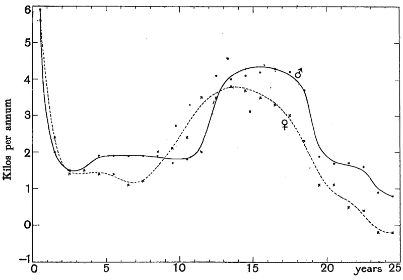
In the same diagram (Fig. 5) I have set forth the acceleration-curves in respect of increment of weight for both man and woman, according to Quetelet. That growth in boyhood and growth in girlhood follow a very different course is a matter of common knowledge; but if we simply plot the ordinary curve of growth, or velocity-curve, the difference, on the small scale of our diagrams, {70} is not very apparent. It is admirably brought out, however, in the acceleration-curves. Here we see that, after infancy, say from three years old to eight, the velocity in the girl is steady, just as in the boy, but it stands on a lower level in her case than in his: the little maid at this age is growing slower than the boy. But very soon, and while his acceleration-curve is still represented by a straight line, hers has begun to ascend, and until the girl is about thirteen or fourteen it continues to ascend rapidly. After that age, as after sixteen or seventeen in the boy’s case, it begins to descend. In short, throughout all this period, it is a very similar curve in the two sexes; but it has its notable differences, in amplitude and especially in phase. Last of all, we may notice that while the acceleration-curve falls to a negative value in the male about or even a little before the age of thirty years, this does not happen among women. They continue to grow in weight, though slowly, till very much later in life; until there comes a final period, in both sexes alike, during which weight, and height and strength all alike diminish.
From certain corrected, or “typical” values, given for American children by Boas and Wissler (l.c. p. 42), we obtain the following still clearer comparison of the annual increments of stature in boys and girls: the typical stature at the commencement of the period, i.e. at the age of eleven, being 135·1 cm. and 136·9 cm. for the boys and girls respectively, and the annual increments being as follows:
| Age | 12 | 13 | 14 | 15 | 16 | 17 | 18 | 19 | 20 |
| Boys (cm.) | 4·1 | 6·3 | 8·7 | 7·9 | 5·2 | 3·2 | 1·9 | 0·9 | 0·3 |
| Girls (cm.) | 7·5 | 7·0 | 4·6 | 2·1 | 0·9 | 0·4 | 0·1 | 0·0 | 0·0 |
| Difference | −3·4 | −0·7 | 4·1 | 5·8 | 4·3 | 2·8 | 1·8 | 0·9 | 0·3 |
The result of these differences (which are essentially phase-differences) between the two sexes in regard to the velocity of growth and to the rate of change of that velocity, is to cause the ratio between the weights of the two sexes to fluctuate in a somewhat complicated manner. At birth the baby-girl weighs on the average nearly 10 per cent. less than the boy. Till about two years old she tends to gain upon him, but she then loses again until the age of about five; from five she gains for a few years somewhat rapidly, and the girl of ten to twelve is only some 3 per cent. less in weight than the boy. The boy in his teens gains {71} steadily, and the young woman of twenty is nearly 15 per cent. lighter than the man. This ratio of difference again slowly diminishes, and between fifty and sixty stands at about 12 per cent., or not far from the mean for all ages; but once more as old age advances, the difference tends, though very slowly, to increase (Fig. 6).
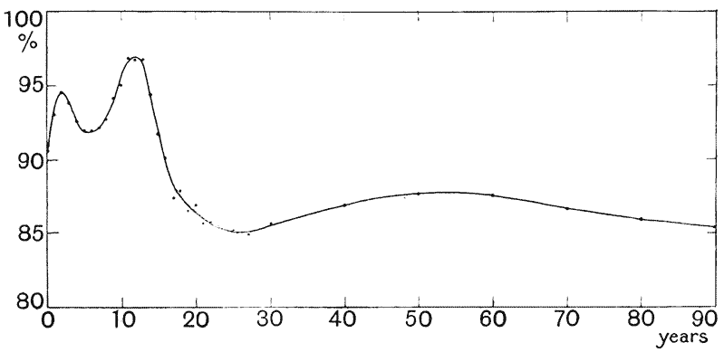
While careful observations on the rate of growth in other animals are somewhat scanty, they tend to show so far as they go that the general features of the phenomenon are always much the same. Whether the animal be long-lived, as man or the elephant, or short-lived, like horse or dog, it passes through the same phases of growth101. In all cases growth begins slowly; it attains a maximum velocity early in its course, and afterwards slows down (subject to temporary accelerations) towards a point where growth ceases altogether. But especially in the cold-blooded animals, such as fishes, the slowing-down period is very greatly protracted, and the size of the creature would seem never actually to reach, but only to approach asymptotically, to a maximal limit.
The size ultimately attained is a resultant of the rate, and of {72} the duration, of growth. It is in the main true, as Minot has said, that the rabbit is bigger than the guinea-pig because he grows the faster; but that man is bigger than the rabbit because he goes on growing for a longer time.
In ordinary physical investigations dealing with velocities, as for instance with the course of a projectile, we pass at once from the study of acceleration to that of momentum and so to that of force; for change of momentum, which is proportional to force, is the product of the mass of a body into its acceleration or change of velocity. But we can take no such easy road of kinematical investigation in this case. The “velocity” of growth is a very different thing from the “velocity” of the projectile. The forces at work in our case are not susceptible of direct and easy treatment; they are too varied in their nature and too indirect in their action for us to be justified in equating them directly with the mass of the growing structure.
It was apparently from a feeling that the velocity of growth ought in some way to be equated with the mass of the growing structure that Minot102 introduced a curious, and (as it seems to me) an unhappy method of representing growth, in the form of what he called “percentage-curves”; a method which has been followed by a number of other writers and experimenters. Minot’s method was to deal, not with the actual increments added in successive periods, such as years or days, but with these increments represented as percentages of the amount which had been reached at the end of the former period. For instance, taking Quetelet’s values for the height in centimetres of a male infant from birth to four years old, as follows:
| Years | 0 | 1 | 2 | 3 | 4 |
| cm. | 50·0 | 69·8 | 79·1 | 86·4 | 92·7 |
Minot would state the percentage growth in each of the four annual periods at 39·6, 13·3, 9·6 and 7·3 per cent. respectively.
Now when we plot actual length against time, we have a perfectly definite thing. When we differentiate this L ⁄ T, we have dL ⁄ dT, which is (of course) velocity; and from this, by a second differentiation, we obtain d2 L ⁄ dT2 , that is to say, the acceleration. {73}
But when you take percentages of y, you are determining dy ⁄ y, and when you plot this against dx, you have
that is to say, you are multiplying the thing you wish to represent by another quantity which is itself continually varying; and the result is that you are dealing with something very much less easily grasped by the mind than the original factors. Professor Minot is, of course, dealing with a perfectly legitimate function of x and y; and his method is practically tantamount to plotting log y against x, that is to say, the logarithm of the increment against the time. This could only be defended and justified if it led to some simple result, for instance if it gave us a straight line, or some other simpler curve than our usual curves of growth. As a matter of fact, it is manifest that it does nothing of the kind.
In the acceleration-curves which we have shown above (Figs. 2, 3), it will be seen that the curve starts at a considerable interval from the actual date of birth; for the first two increments which we can as yet compare with one another are those attained during the first and second complete years of life. Now we can in many cases “interpolate” with safety between known points upon a curve, but it is very much less safe, and is not very often justifiable (at least until we understand the physical principle involved, and its mathematical expression), to “extrapolate” beyond the limits of our observations. In short, we do not yet know whether our curve continued to ascend as we go backwards to the date of birth, or whether it may not have changed its direction, and descended, perhaps, to zero-value. In regard to length, or stature, however, we can obtain the requisite information from certain tables of Rüssow’s103, who gives the stature of the infant month by month during the first year of its life, as follows:
| Age in months | 0 | 1 | 2 | 3 | 4 | 5 | 6 | 7 | 8 | 9 | 10 | 11 | 12 |
| Length in cm. | (50) | 54 | 58 | 60 | 62 | 64 | 65 | 66 | 67·5 | 68 | 69 | 70·5 | 72 |
| [Differences (in cm.) | 4 | 4 | 2 | 2 | 2 | 1 | 1 | 1·5 | ·5 | 1 | 1·5 | 1·5] |
If we multiply these monthly differences, or mean monthly velocities, by 12, to bring them into a form comparable with the {74} annual velocities already represented on our acceleration-curves, we shall see that the one series of observations joins on very well with the other; and in short we see at once that our acceleration-curve rises steadily and rapidly as we pass back towards the date of birth.
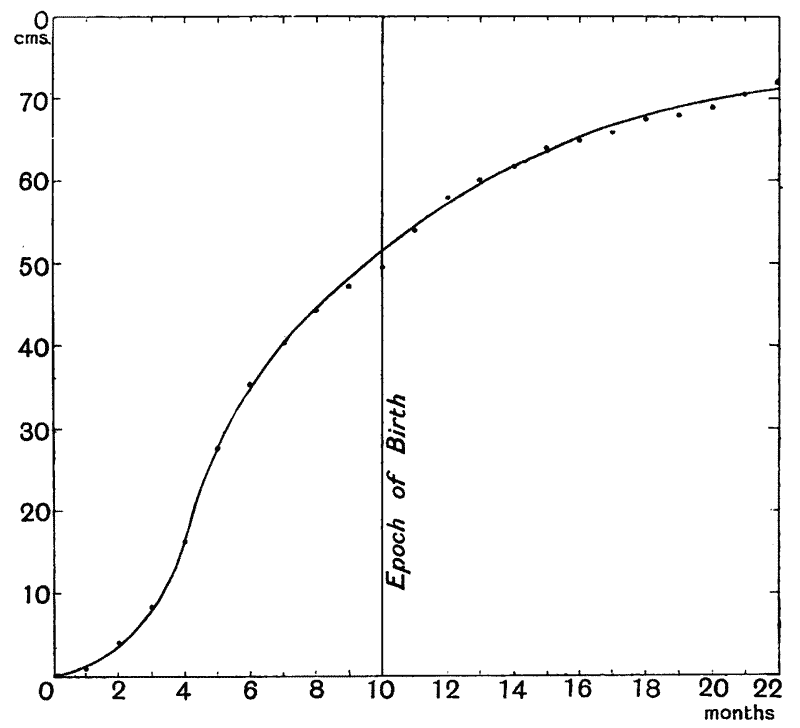
But birth itself, in the case of a viviparous animal, is but an unimportant epoch in the history of growth. It is an epoch whose relative date varies according to the particular animal: the foal and the lamb are born relatively later, that is to say when development has advanced much farther, than in the case of man; the kitten and the puppy are born earlier and therefore more helpless than we are; and the mouse comes into the world still earlier and more inchoate, so much so that even the little marsupial is scarcely more unformed and embryonic. In all these cases alike, we must, in order to study the curve of growth in its entirety, take full account of prenatal or intra-uterine growth. {75}
According to His104, the following are the mean lengths of the unborn human embryo, from month to month.
| Months | 0 | 1 | 2 | 3 | 4 | 5 | 6 | 7 | 8 | 9 | 10 (Birth) |
| Length in mm. | 0 | 7·5 | 40 | 84 | 162 | 275 | 352 | 402 | 443 | 472 | 490–500 |
| Increment per month in mm. | — | 7·5 | 32·5 | 44 | 78 | 113 | 77 | 50 | 41 | 29 | 18–28 |
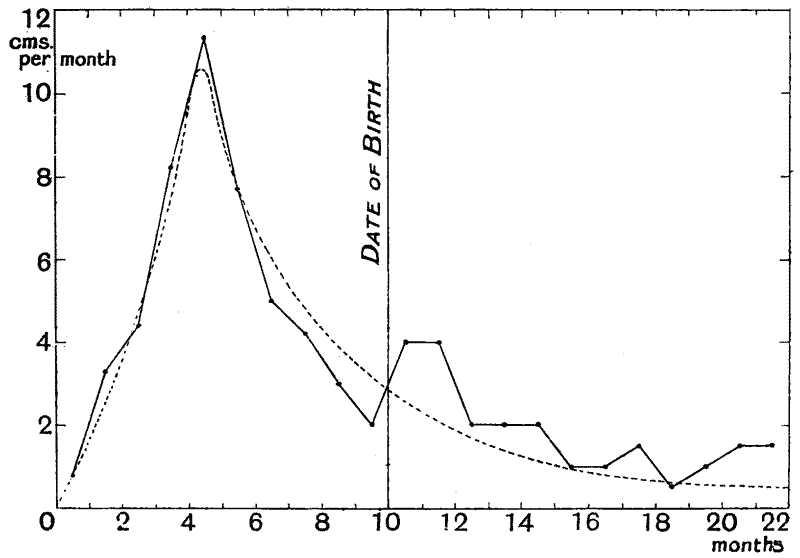
These data link on very well to those of Rüssow, which we have just considered, and (though His’s measurements for the pre-natal months are more detailed than are those of Rüssow for the first year of post-natal life) we may draw a continuous curve of growth (Fig. 7) and curve of acceleration of growth (Fig. 8) for the combined periods. It will at once be seen that there is a “point of inflection” somewhere about the fifth month of intra-uterine life105: up to that date growth proceeds with a continually increasing {76} velocity; but after that date, though growth is still rapid, its velocity tends to fall away. There is a slight break between our two separate sets of statistics at the date of birth, while this is the very epoch regarding which we should particularly like to have precise and continuous information. Undoubtedly there is a certain slight arrest of growth, or diminution of the rate of growth, about the epoch of birth: the sudden change in the {77} method of nutrition has its inevitable effect; but this slight temporary set-back is immediately followed by a secondary, and temporary, acceleration.
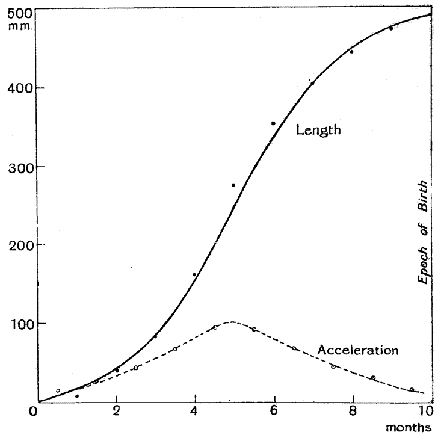
It is worth our while to draw a separate curve to illustrate on a larger scale His’s careful data for the ten months of pre-natal life (Fig. 9). We see that this curve of growth is a beautifully regular one, and is nearly symmetrical on either side of that point of inflection of which we have already spoken; it is a curve for which we might well hope to find a simple mathematical expression. The acceleration-curve shown in Fig. 9 together with the pre-natal curve of growth, is not taken directly from His’s recorded data, but is derived from the tangents drawn to a smoothed curve, corresponding as nearly as possible to the actual curve of growth: the rise to a maximal velocity about the fifth month and the subsequent gradual fall are now demonstrated even more clearly than before. In Fig. 10, which is a curve of growth of the bamboo106, we see (so far as it goes) the same essential features, {78} the slow beginning, the rapid increase of velocity, the point of inflection, and the subsequent slow negative acceleration107.
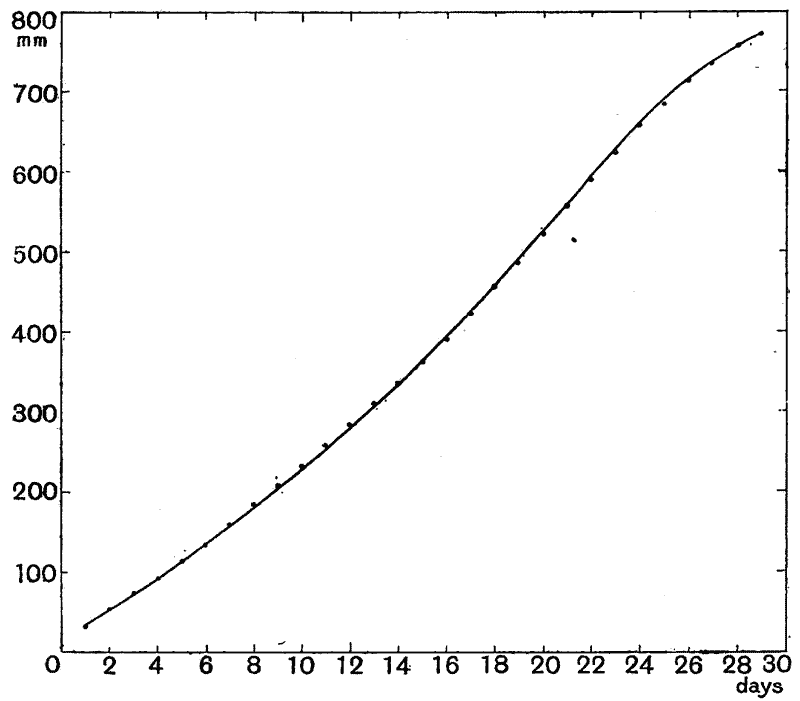
The magnitudes and velocities which we are here dealing with are, of course, mean values derived from a certain number, sometimes a large number, of individual cases. But no statistical account of mean values is complete unless we also take account of the amount of variability among the individual cases from which the mean value is drawn. To do this throughout would lead us into detailed investigations which lie far beyond the scope of this elementary book; but we may very briefly illustrate the nature of the process, in connection with the phenomena of growth which we have just been studying.
It was in connection with these phenomena, in the case of man, that Quetelet first conceived the statistical study of variation, on lines which were afterwards expounded and developed by Galton, and which have grown, in the hands of Karl Pearson and others, into the modern science of Biometrics.
When Quetelet tells us, for instance, that the mean stature of the ten-year old boy is 1·273 metres, this implies, according to the law of error, or law of probabilities, that all the individual measurements of ten-year-old boys group themselves in an orderly way, that is to say according to a certain definite law, about this mean value of 1·273. When these individual measurements are grouped and plotted as a curve, so as to show the number of individual cases at each individual length, we obtain a characteristic curve of error or curve of frequency; and the “spread” of this curve is a measure of the amount of variability in this particular case. A certain mathematical measure of this “spread,” as described in works upon statistics, is called the Index of Variability, or Standard Deviation, and is usually denominated by the letter σ. It is practically equivalent to a determination of the point upon the frequency curve where it changes its curvature on either side of the mean, and where, from being concave towards the middle line, it spreads out to be convex thereto. When we divide this {79} value by the mean, we get a figure which is independent of any particular units, and which is called the Coefficient of Variability. (It is usually multiplied by 100, to make it of a more convenient amount; and we may then define this coefficient, C, as = (σ ⁄ M) × 100.)
In regard to the growth of man, Pearson has determined this coefficient of variability as follows: in male new-born infants, the coefficient in regard to weight is 15·66, and in regard to stature, 6·50; in male adults, for weight 10·83, and for stature, 3·66. The amount of variability tends, therefore, to decrease with growth or age.
Similar determinations have been elaborated by Bowditch, by Boas and Wissler, and by other writers for intermediate ages, especially from about five years old to eighteen, so covering a great part of the whole period of growth in man108.
| Age | 5 | 6 | 7 | 8 | 9 |
| Stature (Bowditch) | 4·76 | 4·60 | 4·42 | 4·49 | 4·40 |
| Stature (Boas and Wissler) | 4·15 | 4·14 | 4·22 | 4·37 | 4·33 |
| Weight (Bowditch) | 11·56 | 10·28 | 11·08 | 9·92 | 11·04 |
| Age | 10 | 11 | 12 | 13 | 14 |
| Stature (Bowditch) | 4·55 | 4·70 | 4·90 | 5·47 | 5·79 |
| Stature (Boas and Wissler) | 4·36 | 4·54 | 4·73 | 5·16 | 5·57 |
| Weight (Bowditch) | 11·60 | 11·76 | 13·72 | 13·60 | 16·80 |
| Age | 15 | 16 | 17 | 18 | |
| Stature (Bowditch) | 5·57 | 4·50 | 4·55 | 3·69 | |
| Stature (Boas and Wissler) | 5·50 | 4·69 | 4·27 | 3·94 | |
| Weight (Bowditch) | 15·32 | 13·28 | 12·96 | 10·40 |
The result is very curious indeed. We see, from Fig. 11, that the curve of variability is very similar to what we have called the acceleration-curve (Fig. 4): that is to say, it descends when the rate of growth diminishes, and rises very markedly again when, in late boyhood, the rate of growth is temporarily accelerated. We {80} see, in short, that the amount of variability in stature or in weight is a function of the rate of growth in these magnitudes, though we are not yet in a position to equate the terms precisely, one with another.
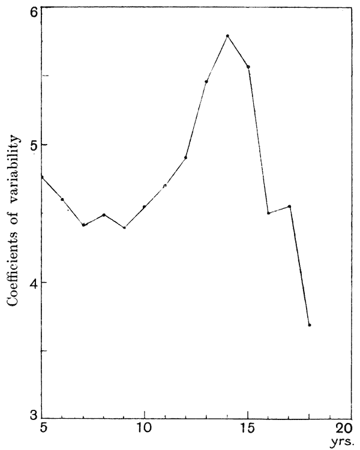
If we take not merely the variability of stature or weight at a given age, but the variability of the actual successive increments in each yearly period, we see that this latter coefficient of variability tends to increase steadily, and more and more rapidly, within the limits of age for which we have information; and this phenomenon is, in the main, easy of explanation. For a great part of the difference, in regard to rate of growth, between one individual and another is a difference of phase,—a difference in the epochs of acceleration and retardation, and finally in the epoch when growth comes to an end. And it follows that the variability of rate will be more and more marked, as we approach and reach the period when some individuals still continue, and others have already ceased, to grow. In the following epitomised table, {81} I have taken Boas’s determinations of variability (σ) (op. cit. p. 1548), converted them into the corresponding coefficients of variability (σ ⁄ M × 100), and then smoothed the resulting numbers.
| Age | 7 | 8 | 9 | 10 | 11 | 12 | 13 | 14 | 15 |
| Boys | 17·3 | 15·8 | 18·6 | 19·1 | 21·0 | 24·7 | 29·0 | 36·2 | 46·1 |
| Girls | 17·1 | 17·8 | 19·2 | 22·7 | 25·9 | 29·3 | 37·0 | 44·8 | — |
The greater variability of annual increment in the girls, as compared with the boys, is very marked, and is easily explained by the more rapid rate at which the girls run through the several phases of the phenomenon.
Just as there is a marked difference in “phase” between the growth-curves of the two sexes, that is to say a difference in the periods when growth is rapid or the reverse, so also, within each sex, will there be room for similar, but individual phase-differences. Thus we may have children of accelerated development, who at a given epoch after birth are both rapidly growing and already “big for their age”; and others of retarded development who are comparatively small and have not reached the period of acceleration which, in greater or less degree, will come to them in turn. In other words, there must under such circumstances be a strong positive “coefficient of correlation” between stature and rate of growth, and also between the rate of growth in one year and the next. But it does not by any means follow that a child who is precociously big will continue to grow rapidly, and become a man or woman of exceptional stature. On the contrary, when in the case of the precocious or “accelerated” children growth has begun to slow down, the backward ones may still be growing rapidly, and so making up (more or less completely) to the others. In other words, the period of high positive correlation between stature and increment will tend to be followed by one of negative correlation. This interesting and important point, due to Boas and Wissler109, is confirmed by the following table:―
| Age | 6 | 7 | 8 | 9 | 10 | 11 | 12 | 13 | 14 | 15 | |
| Stature | (B) | 112·7 | 115·5 | 123·2 | 127·4 | 133·2 | 136·8 | 142·7 | 147·3 | 155·9 | 162·2 |
| (G) | 111·4 | 117·7 | 121·4 | 127·9 | 131·8 | 136·7 | 144·6 | 149·7 | 153·8 | 157·2 | |
| Increment | (B) | 5·7 | 5·3 | 4·9 | 5·1 | 5·0 | 4·7 | 5·9 | 7·5 | 6·2 | 5·2 |
| (G) | 5·9 | 5·5 | 5·5 | 5·9 | 6·2 | 7·2 | 6·5 | 5·4 | 3·3 | 1·7 | |
| Correlation | (B) | ·25 | ·11 | ·08 | ·25 | ·18 | ·18 | ·48 | ·29 | − ·42 | − ·44 |
| (G) | ·44 | ·14 | ·24 | ·47 | ·18 | − ·18 | − ·42 | − ·39 | − ·63 | ·11 |
A minor, but very curious point brought out by the same investigators is that, if instead of stature we deal with height in the sitting posture (or, practically speaking, with length of trunk or back), then the correlations between this height and its annual increment are throughout negative. In other words, there would seem to be a general tendency for the long trunks to grow slowly throughout the whole period under investigation. It is a well-known anatomical fact that tallness is in the main due not to length of body but to length of limb.
The whole phenomenon of variability in regard to magnitude and to rate of increment is in the highest degree suggestive: inasmuch as it helps further to remind and to impress upon us that specific rate of growth is the real physiological factor which we want to get at, of which specific magnitude, dimensions and form, and all the variations of these, are merely the concrete and visible resultant. But the problems of variability, though they are intimately related to the general problem of growth, carry us very soon beyond our present limitations.
Just as the human curve of growth has its slight but well-marked interruptions, or variations in rate, coinciding with such epochs as birth and puberty, so is it with other animals, and this phenomenon is particularly striking in the case of animals which undergo a regular metamorphosis.
In the accompanying curve of growth in weight of the mouse (Fig. 12), based on W. Ostwald’s observations111, we see a distinct slackening of the rate when the mouse is about a fortnight old, at which period it opens its eyes and very soon afterwards is weaned. At about six weeks old there is another well-marked retardation of growth, following on a very rapid period, and coinciding with the epoch of puberty. {83}
Fig. 13 shews the curve of growth of the silkworm112, during its whole larval life, up to the time of its entering the chrysalis stage.
The silkworm moults four times, at intervals of about a week, the first moult being on the sixth or seventh day after hatching. A distinct retardation of growth is exhibited on our curve in the case of the third and fourth moults; while a similar retardation accompanies the first and second moults also, but the scale of our diagram does not render it visible. When the worm is about seven weeks old, a remarkable process of “purgation” takes place, as a preliminary to entering on the pupal, or chrysalis, stage; and the great and sudden loss of weight which accompanies this process is the most marked feature of our curve.
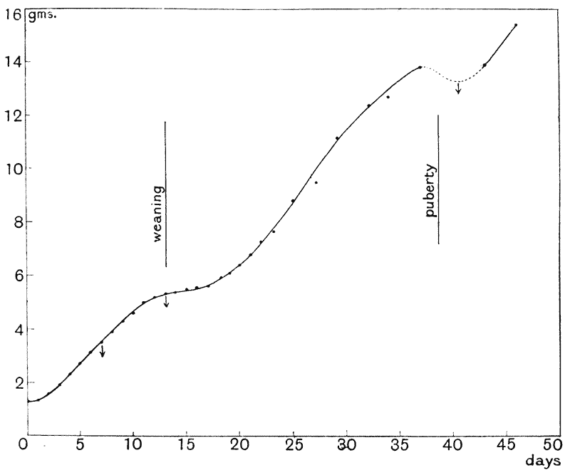
The rate of growth in the tadpole113 (Fig. 14) is likewise marked by epochs of retardation, and finally by a sudden and drastic change. There is a slight diminution in weight immediately after {84} the little larva frees itself from the egg; there is a retardation of growth about ten days later, when the external gills disappear; and finally, the complete metamorphosis, with the loss of the tail, the growth of the legs and the cessation of branchial respiration, is accompanied by a loss of weight amounting to wellnigh half the weight of the full-grown larva. {85}
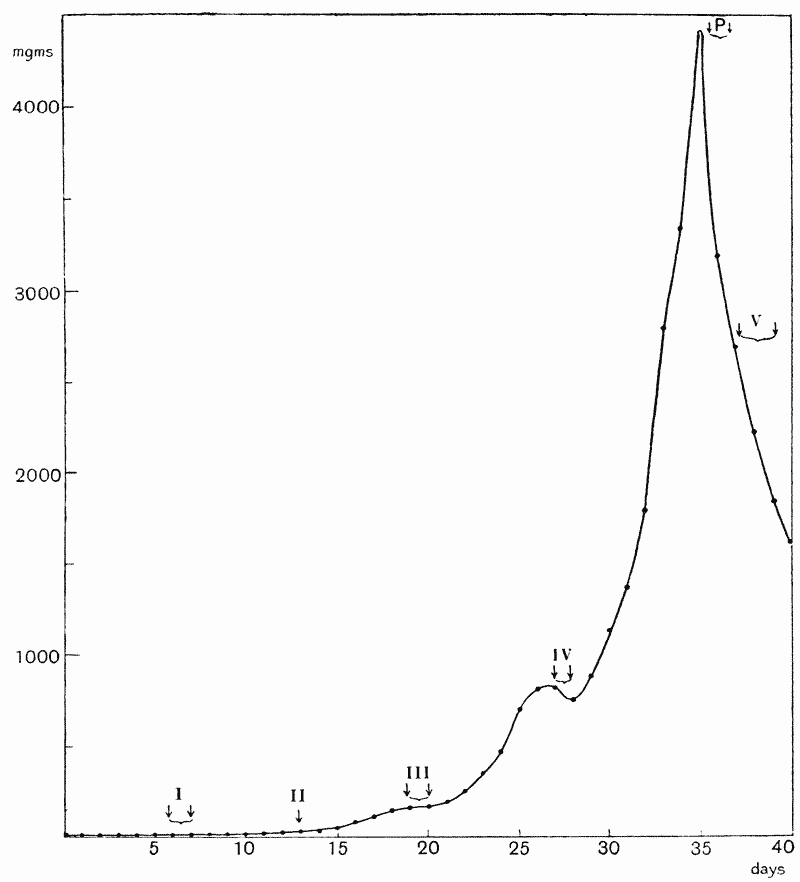
While as a general rule, the better the animals be fed the quicker they grow and the sooner they metamorphose, Barfürth has pointed out the curious fact that a short spell of starvation, just before metamorphosis is due, appears to hasten the change.
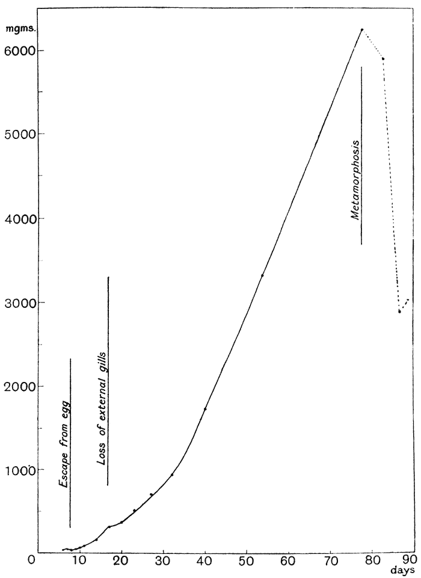
The negative growth, or actual loss of bulk and weight which often, and perhaps always, accompanies metamorphosis, is well shewn in the case of the eel114. The contrast of size is great between {87} the flattened, lancet-shaped Leptocephalus larva and the little black cylindrical, almost thread-like elver, whose magnitude is less than that of the Leptocephalus in every dimension, even, at first, in length (Fig. 15).
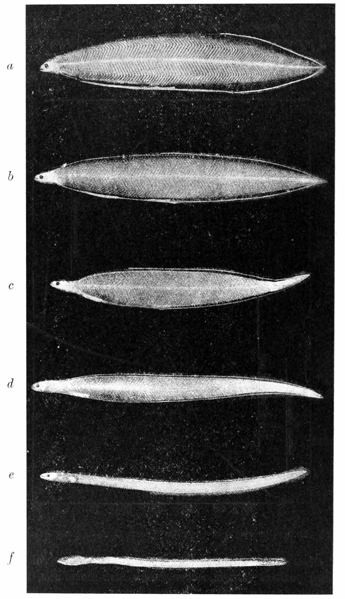
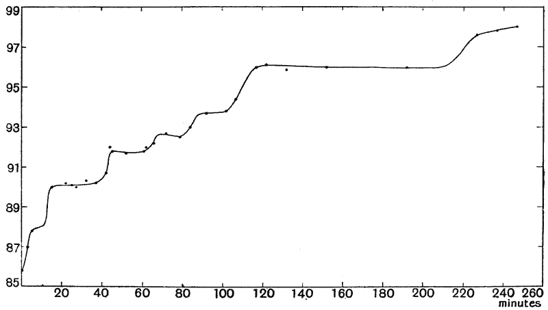
From the higher study of the physiology of growth we learn that such fluctuations as we have described are but special interruptions in a process which is never actually continuous, but is perpetually interrupted in a rhythmic manner115. Hofmeister shewed, for instance, that the growth of Spirogyra proceeds by fits and starts, by periods of activity and rest, which alternate with one another at intervals of so many minutes (Fig. 16). And Bose, by very refined methods of experiment, has shewn that plant-growth really proceeds by tiny and perfectly rhythmical pulsations recurring at regular intervals of a few seconds of time. Fig. 17 shews, according to Bose’s observations116, the growth of a crocus, under a very high magnification. The stalk grows by little jerks, each with an amplitude of about ·002 mm., every {88} twenty seconds or so, and after each little increment there is a partial recoil.
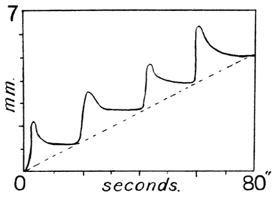
The differences in regard to rate of growth between various parts or organs of the body, internal and external, can be amply illustrated in the case of man, and also, but chiefly in regard to external form, in some few other creatures118. It is obvious that there lies herein an endless field for the mathematical study of correlation and of variability, but with this aspect of the case we cannot deal.
In the accompanying table, I shew, from some of Vierordt’s data, the relative weights, at various ages, compared with the weight at birth, of the entire body, of the brain, heart and liver; {89} and also the percentage relation which each of these organs bears, at the several ages, to the weight of the whole body.
| Weight of body† | Relative weights of | Percentage weights compared with total body-weights | |||||||
|---|---|---|---|---|---|---|---|---|---|
| Age | in kg. | Body | Brain | Heart | Liver | Body | Brain | Heart | Liver |
| 0 | 3·1 | 1 | 1 | 1 | 1 | 100 | 12·29 | 0·76 | 4·57 |
| 1 | 9·0 | 2·90 | 2·48 | 1·75 | 2·35 | 100 | 10·50 | 0·46 | 3·70 |
| 2 | 11·0 | 3·55 | 2·69 | 2·20 | 3·02 | 100 | 9·32 | 0·47 | 3·89 |
| 3 | 12·5 | 4·03 | 2·91 | 2·75 | 3·42 | 100 | 8·86 | 0·52 | 3·88 |
| 4 | 14·0 | 4·52 | 3·49 | 3·14 | 4·15 | 100 | 9·50 | 0·53 | 4·20 |
| 5 | 15·9 | 5·13 | 3·32 | 3·43 | 3·80 | 100 | 7·94 | 0·51 | 3·39 |
| 6 | 17·8 | 5·74 | 3·57 | 3·60 | 4·34 | 100 | 7·63 | 0·48 | 3·45 |
| 7 | 19·7 | 6·35 | 3·54 | 3·95 | 4·86 | 100 | 6·84 | 0·47 | 3·49 |
| 8 | 21·6 | 6·97 | 3·62 | 4·02 | 4·59 | 100 | 6·38 | 0·44 | 3·01 |
| 9 | 23·5 | 7·58 | 3·74 | 4·59 | 4·95 | 100 | 6·06 | 0·46 | 2·99 |
| 10 | 25·2 | 8·13 | 3·70 | 5·41 | 5·90 | 100 | 5·59 | 0·51 | 3·32 |
| 11 | 27·0 | 8·71 | 3·57 | 5·97 | 6·14 | 100 | 5·04 | 0·52 | 3·22 |
| 12 | 29·0 | 9·35 | 3·78 | (4·13) | 6·21 | 100 | 4·88 | (0·34) | 3·03 |
| 13 | 33·1 | 10·68 | 3·90 | 6·95 | 7·31 | 100 | 4·49 | 0·50 | 3·13 |
| 14 | 37·1 | 11·97 | 3·38 | 9·16 | 8·39 | 100 | 3·47 | 0·58 | 3·20 |
| 15 | 41·2 | 13·29 | 3·91 | 8·45 | 9·22 | 100 | 3·62 | 0·48 | 3·17 |
| 16 | 45·9 | 14·81 | 3·77 | 9·76 | 9·45 | 100 | 3·16 | 0·51 | 2·95 |
| 17 | 49·7 | 16·03 | 3·70 | 10·63 | 10·46 | 100 | 2·84 | 0·51 | 2·98 |
| 18 | 53·9 | 17·39 | 3·73 | 10·33 | 10·65 | 100 | 2·64 | 0·46 | 2·80 |
| 19 | 57·6 | 18·58 | 3·67 | 11·42 | 11·61 | 100 | 2·43 | 0·51 | 2·86 |
| 20 | 59·5 | 19·19 | 3·79 | 12·94 | 11·01 | 100 | 2·43 | 0·51 | 2·62 |
| 21 | 61·2 | 19·74 | 3·71 | 12·59 | 11·48 | 100 | 2·31 | 0·49 | 2·66 |
| 22 | 62·9 | 20·29 | 3·54 | 13·24 | 11·82 | 100 | 2·14 | 0·50 | 2·66 |
| 23 | 64·5 | 20·81 | 3·66 | 12·42 | 10·79 | 100 | 2·16 | 0·46 | 2·37 |
| 24 | — | — | 3·74 | 13·09 | 13·04 | 100 | — | — | — |
| 25 | 66·2 | 21·36 | 3·76 | 12·74 | 12·84 | 100 | 2·16 | 0·46 | 2·75 |
† From Quetelet.
From the first portion of the table, it will be seen that none of these organs by any means keep pace with the body as a whole in regard to growth in weight; in other words, there must be some other part of the fabric, doubtless the muscles and the bones, which increase more rapidly than the average increase of the body. Heart and liver both grow nearly at the same rate, and by the {90} age of twenty-five they have multiplied their weight at birth by about thirteen times, while the weight of the entire body has been multiplied by about twenty-one; but the weight of the brain has meanwhile been multiplied only about three and a quarter times. In the next place, we see the very remarkable phenomenon that the brain, growing rapidly till the child is about four years old, then grows more much slowly till about eight or nine years old, and after that time there is scarcely any further perceptible increase. These phenomena are diagrammatically illustrated in Fig. 18.
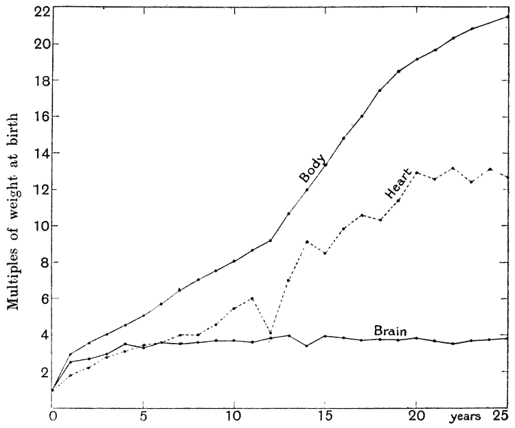
Many statistics indicate a decrease of brain-weight during adult life. Boas119 was inclined to attribute this apparent phenomenon to our statistical methods, and to hold that it could “hardly be explained in any other way than by assuming an increased death-rate among men with very large brains, at an age of about twenty years.” But Raymond Pearl has shewn that there is evidence of a steady and very gradual decline in the weight of the brain with advancing age, beginning at or before the twentieth year, and continuing throughout adult life120. {91}
The second part of the table shews the steadily decreasing weights of the organs in question as compared with the body; the brain falling from over 12 per cent. at birth to little over 2 per cent. at five and twenty; the heart from ·75 to ·46 per cent.; and the liver from 4·57 to 2·75 per cent. of the whole bodily weight.
It is plain, then, that there is no simple and direct relation, holding good throughout life, between the size of the body as a whole and that of the organs we have just discussed; and the changing ratio of magnitude is especially marked in the case of the brain, which, as we have just seen, constitutes about one-eighth of the whole bodily weight at birth, and but one-fiftieth at five and twenty. The same change of ratio is observed in other animals, in equal or even greater degree. For instance, Max Weber121 tells us that in the lion, at five weeks, four months, eleven months, and lastly when full-grown, the brain-weight represents the following fractions of the weight of the whole body, viz. 1 ⁄ 18, 1 ⁄ 80, 1 ⁄ 184, and 1 ⁄ 546. And Kellicott has, in like manner, shewn that in the dogfish, while some organs (e.g. rectal gland, pancreas, etc.) increase steadily and very nearly proportionately to the body as a whole, the brain, and some other organs also, grow in a diminishing ratio, which is capable of representation, approximately, by a logarithmic curve122.
But if we confine ourselves to the adult, then, as Raymond Pearl has shewn in the case of man, the relation of brain-weight to age, to stature, or to weight, becomes a comparatively simple one, and may be sensibly expressed by a straight line, or simple equation.
Thus, if W be the brain-weight (in grammes), and A be the age, or S the stature, of the individual, then (in the case of Swedish males) the following simple equations suffice to give the required ratios:
These equations are applicable to ages between fifteen and eighty; if we take narrower limits, say between fifteen and fifty, we can get a closer agreement by using somewhat altered constants. In the two sexes, and in different races, these empirical constants will be greatly changed123. Donaldson has further shewn that the correlation between brain-weight and body-weight is very much closer in the rat than in man124.
The falling ratio of weight of brain to body with increase of size or age finds its parallel in comparative anatomy, in the general law that the larger the animal the less is the relative weight of the brain.
| Weight of entire animal gms. |
Weight of brain gms. |
Ratio | |
|---|---|---|---|
| Marmoset | 335 | 12·5 | 1 : 26 |
| Spider monkey | 1845 | 126 | 1 : 15 |
| Felis minuta | 1234 | 23·6 | 1 : 56 |
| F. domestica | 3300 | 31 | 1 : 107 |
| Leopard | 27,700 | 164 | 1 : 168 |
| Lion | 119,500 | 219 | 1 : 546 |
| Elephant | 3,048,000 | 5430 | 1 : 560 |
| Whale (Globiocephalus) | 1,000,000 | 2511 | 1 : 400 |
For much information on this subject, see Dubois, “Abhängigkeit des Hirngewichtes von der Körpergrösse bei den Säugethieren,” Arch. f. Anthropol. XXV, 1897. Dubois has attempted, but I think with very doubtful success, to equate the weight of the brain with that of the animal. We may do this, in a very simple way, by representing the weight of the body as a power of that of the brain; thus, in the above table of the weights of brain and body in four species of cat, if we call W the weight of the body (in grammes), and w the weight of the brain, then if in all four cases we express the ratio by W = wn , we find that n is almost constant, and differs little from 2·24 in all four species: the values being respectively, in the order of the table 2·36, 2·24, 2·18, and 2·17. But this evidently amounts to no more than an empirical rule; for we can easily see that it depends on the particular scale which we have used, and that if the weights had been taken, for instance, in kilogrammes or in milligrammes, the agreement or coincidence would not have occurred125. {93}
| Age | Men | Women | ||||
|---|---|---|---|---|---|---|
| Total height m. |
Head m. |
Ratio | Height m. |
Head† m. |
Ratio | |
| Birth | 0·500 | 0·111 | 4·50 | 0·494 | 0·111 | 4·45 |
| 1 year | 0·698 | 0·154 | 4·53 | 0·690 | 0·154 | 4·48 |
| 2 years | 0·791 | 0·173 | 4·57 | 0·781 | 0·172 | 4·54 |
| 3 years | 0·864 | 0·182 | 4·74 | 0·854 | 0·180 | 4·74 |
| 5 years | 0·987 | 0·192 | 5·14 | 0·974 | 0·188 | 5·18 |
| 10 years | 1·273 | 0·205 | 6·21 | 1·249 | 0·201 | 6·21 |
| 15 years | 1·513 | 0·215 | 7·04 | 1·488 | 0·213 | 6·99 |
| 20 years | 1·669 | 0·227 | 7·35 | 1·574 | 0·220 | 7·15 |
| 30 years | 1·686 | 0·228 | 7·39 | 1·580 | 0·221 | 7·15 |
| 40 years | 1·686 | 0·228 | 7·39 | 1·580 | 0·221 | 7·15 |
† A smooth curve, very similar to this, for the growth in “auricular height” of the girl’s head, is given by Pearson, in Biometrika, III, p. 141. 1904.
As regards external form, very similar differences exist, which however we must express in terms not of weight but of length. Thus the annexed table shews the changing ratios of the vertical length of the head to the entire stature; and while this ratio constantly diminishes, it will be seen that the rate of change is greatest (or the coefficient of acceleration highest) between the ages of about two and five years.
In one of Quetelet’s tables (supra, p. 63), he gives measurements of the total span of the outstretched arms in man, from year to year, compared with the vertical stature. The two measurements are so nearly identical in actual magnitude that a direct comparison by means of curves becomes unsatisfactory; but I have reduced Quetelet’s data to percentages, and it will be seen from Fig. 19 that the percentage proportion of span to height undergoes a remarkable and steady change from birth to the age of twenty years; the man grows more rapidly in stretch of arms than he does in height, and the span which was less than {94} the stature at birth by about 1 per cent. exceeds it at the age of twenty by about 4 per cent. After the age of twenty, Quetelet’s data are few and irregular, but it is clear that the span goes on for a long while increasing in proportion to the stature. How far the phenomenon is due to actual growth of the arms and how far to the increasing breadth of the chest is not yet ascertained.
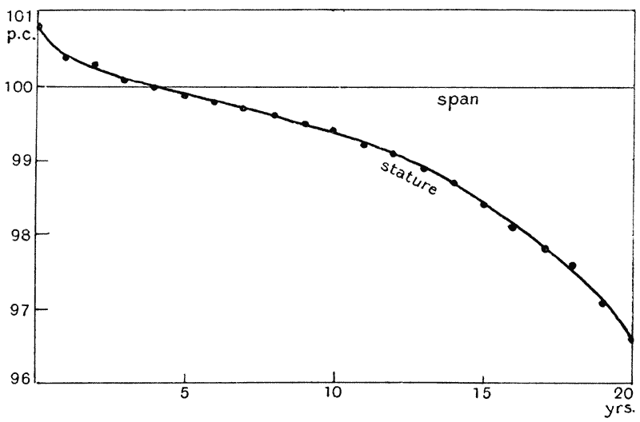
The differences of rate of growth in different parts of the body are very simply brought out by the following table, which shews the relative growth of certain parts and organs of a young trout, at intervals of a few days during the period of most rapid development. It would not be difficult, from a picture of the little trout at any one of these stages, to draw its approximate form at any other, by the help of the numerical data here set forth126. {95}
| Days old |
Total length |
Eye | Head | 1st dorsal |
Ventral fin |
2nd dorsal |
Tail-fin | Breadth of tail |
|---|---|---|---|---|---|---|---|---|
| 49 | 100 | 100 | 100 | 100 | 100 | 100 | 100 | 100 |
| 63 | 129·9 | 129·4 | 148·3 | 148·6 | 148·5 | 108·4 | 173·8 | 155·9 |
| 77 | 154·9 | 147·3 | 189·2 | (203·6) | (193·6) | 139·2 | 257·9 | 220·4 |
| 92 | 173·4 | 179·4 | 220·0 | (193·2) | (182·1) | 154·5 | 307·6 | 272·2 |
| 106 | 194·6 | 192·5 | 242·5 | 173·2 | 165·3 | 173·4 | 337·3 | 287·7 |
While it is inequality of growth in different directions that we can most easily comprehend as a phenomenon leading to gradual change of outward form, we shall see in another chapter127 that differences of rate at different parts of a longitudinal system, though always in the same direction, also lead to very notable and regular transformations. Of this phenomenon, the difference in rate of longitudinal growth between head and body is a simple case, and the difference which accompanies and results from it in the bodily form of the child and the man is easy to see. A like phenomenon has been studied in much greater detail in the case of plants, by Sachs and certain other botanists, after a method in use by Stephen Hales a hundred and fifty years before128.
On the growing root of a bean, ten narrow zones were marked off, starting from the apex, each zone a millimetre in breadth. After twenty-four hours’ growth, at a certain constant temperature, the whole marked portion had grown from 10 mm. to 33 mm. in length; but the individual zones had grown at very unequal rates, as shewn in the annexed table129.
| Zone | Increment mm. |
Zone | Increment mm. | |
|---|---|---|---|---|
| Apex | 1·5 | 6th | 1·3 | |
| 2nd | 5·8 | 7th | 0·5 | |
| 3rd | 8·2 | 8th | 0·3 | |
| 4th | 3·5 | 9th | 0·2 | |
| 5th | 1·6 | 10th | 0·1 |
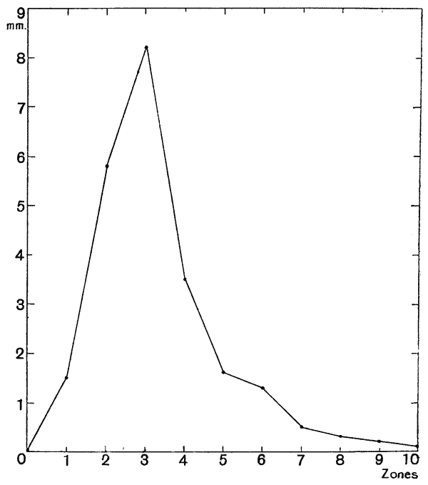
The several values in this table lie very nearly (as we see by Fig. 20) in a smooth curve; in other words a definite law, or principle of continuity, connects the rates of growth at successive points along the growing axis of the root. Moreover this curve, in its general features, is singularly like those acceleration-curves which we have already studied, in which we plotted the rate of growth against successive intervals of time, as here we have plotted it against successive spatial intervals of an actual growing structure. If we suppose for a moment that the velocities of growth had been transverse to the axis, instead of, as in this case, longitudinal and parallel with it, it is obvious that these same velocities would have given us a leaf-shaped structure, of which our curve in Fig. 20 (if drawn to a suitable scale) would represent the actual outline on either side of the median axis; or, again, if growth had been not confined to one plane but symmetrical about the axis, we should have had a sort of turnip-shaped root, {97} having the form of a surface of revolution generated by the same curve. This then is a simple and not unimportant illustration of the direct and easy passage from velocity to form.
A kindred problem occurs when, instead of “zones” artificially marked out in a stem, we deal with the rates of growth in successive actual “internodes”; and an interesting variation of this problem occurs when we consider, not the actual growth of the internodes, but the varying number of leaves which they successively produce. Where we have whorls of leaves at each node, as in Equisetum and in many water-weeds, then the problem presents itself in a simple form, and in one such case, namely in Ceratophyllum, it has been carefully investigated by Mr Raymond Pearl130.
It is found that the mean number of leaves per whorl increases with each successive whorl; but that the rate of increment diminishes from whorl to whorl, as we ascend the axis. In other words, the increase in the number of leaves per whorl follows a logarithmic ratio; and if y be the mean number of leaves per whorl, and x the successional number of the whorl from the root or main stem upwards, then
where A, C, and a are certain specific constants, varying with the part of the plant which we happen to be considering. On the main stem, the rate of change in the number of leaves per whorl is very slow; when we come to the small twigs, or “tertiary branches,” it has become rapid, as we see from the following abbreviated table:
| Position of whorl | 1 | 2 | 3 | 4 | 5 | 6 |
|---|---|---|---|---|---|---|
| Mean number of leaves | 6·55 | 8·07 | 9·00 | 9·20 | 9·75 | 10·00 |
| Increment | — | 1·52 | ·93 | ·20 | (·55) | (·25) |
We have seen that a slow but definite change of form is a common accompaniment of increasing age, and is brought about as the simple and natural result of an altered ratio between the rates of growth in different dimensions: or rather by the progressive change necessarily brought about by the difference in their accelerations. There are many cases however in which the change is all but imperceptible to ordinary measurement, and many others in which some one dimension is easily measured, but others are hard to measure with corresponding accuracy. {98} For instance, in any ordinary fish, such as a plaice or a haddock, the length is not difficult to measure, but measurements of breadth or depth are very much more uncertain. In cases such as these, while it remains difficult to define the precise nature of the change of form, it is easy to shew that such a change is taking place if we make use of that ratio of length to weight which we have spoken of in the preceding chapter. Assuming, as we may fairly do, that weight is directly proportional to bulk or volume, we may express this relation in the form W ⁄ L3 = k, where k is a constant, to be determined for each particular case. (W and L are expressed in grammes and centimetres, and it is usual to multiply the result by some figure, such as 1000, so as to give the constant k a value near to unity.)
| Size in cm. |
Weight in gm. |
W ⁄ L3 × 10,000 |
W ⁄ L3 (smoothed) |
|---|---|---|---|
| 23 | 113 | 92·8 | — |
| 24 | 128 | 92·6 | 94·3 |
| 25 | 152 | 97·3 | 96·1 |
| 26 | 173 | 98·4 | 97·9 |
| 27 | 193 | 98·1 | 99·0 |
| 28 | 221 | 100·6 | 100·4 |
| 29 | 250 | 102·5 | 101·2 |
| 30 | 271 | 100·4 | 101·2 |
| 31 | 300 | 100·7 | 100·4 |
| 32 | 328 | 100·1 | 99·8 |
| 33 | 354 | 98·5 | 98·8 |
| 34 | 384 | 97·7 | 98·0 |
| 35 | 419 | 97·7 | 97·6 |
| 36 | 454 | 97·3 | 96·7 |
| 37 | 492 | 95·2 | 96·3 |
| 38 | 529 | 96·4 | 95·6 |
| 39 | 564 | 95·1 | 95·0 |
| 40 | 614 | 95·9 | 95·0 |
| 41 | 647 | 93·9 | 93·8 |
| 42 | 679 | 91·6 | 92·5 |
| 43 | 732 | 92·1 | 92·5 |
| 44 | 800 | 93·9 | 94·0 |
| 45 | 875 | 96·0 | — |
Now while this k may be spoken of as a “constant,” having a certain mean value specific to each species of organism, and depending on the form of the organism, any change to which it may be subject will be a very delicate index of progressive changes of form; for we know that our measurements of length are, on the average, very accurate, and weighing is a still more delicate method of comparison than any linear measurement.
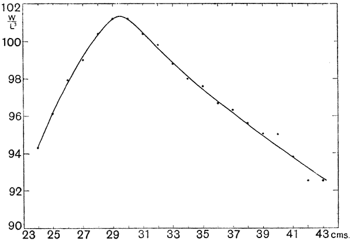
Thus, in the case of plaice, when we deal with the mean values for a large number of specimens, and when we are careful to deal only with such as are caught in a particular locality and at a particular time, we see that k is by no means constant, but steadily increases to a maximum, and afterwards slowly declines with the increasing size of the fish (Fig. 21). To begin with, therefore, the weight is increasing more rapidly than the cube of the length, and it follows that the length itself is increasing less rapidly than some other linear dimension; while in later life this condition is reversed. The maximum is reached when the length of the fish is somewhere near to 30 cm., and it is tempting to suppose that with this “point of inflection” there is associated some well-marked epoch in the fish’s life. As a matter of fact, the size of 30 cm. is approximately that at which sexual maturity may be said to begin, or is at least near enough to suggest a close connection between the two phenomena. The first step towards further investigation of the {100} apparent coincidence would be to determine the coefficient k of the two sexes separately, and to discover whether or not the point of inflection is reached (or sexual maturity is reached) at a smaller size in the male than in the female plaice; but the material for this investigation is at present scanty.
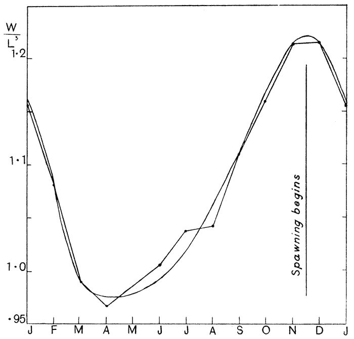
A still more curious and more unexpected result appears when we compare the values of k for the same fish at different seasons of the year131. When for simplicity’s sake (as in the accompanying table and Fig. 22) we restrict ourselves to fish of one particular size, it is not necessary to determine the value of k, because a change in the ratio of length to weight is obvious enough; but when we have small numbers, and various sizes, to deal with, the determination of k may help us very much. It will be seen, then, that in the case of plaice the ratio of weight to length exhibits a regular periodic variation with the course of the seasons. {101}
| Average weight in grammes |
W ⁄ L3 × 100 |
W ⁄ L3 (smoothed) | |
|---|---|---|---|
| Jan. | 2039 | 1·226 | 1·157 |
| Feb. | 1735 | 1·043 | 1·080 |
| March | 1616 | 0·971 | 0·989 |
| April | 1585 | 0·953 | 0·967 |
| May | 1624 | 0·976 | 0·985 |
| June | 1707 | 1·026 | 1·005 |
| July | 1686 | 1·013 | 1·037 |
| August | 1783 | 1·072 | 1·042 |
| Sept. | 1733 | 1·042 | 1·111 |
| Oct. | 2029 | 1·220 | 1·160 |
| Nov. | 2026 | 1·218 | 1·213 |
| Dec. | 1998 | 1·201 | 1·215 |
With unchanging length, the weight and therefore the bulk of the fish falls off from about November to March or April, and again between May or June and November the bulk and weight are gradually restored. The explanation is simple, and depends wholly on the process of spawning, and on the subsequent building up again of the tissues and the reproductive organs. It follows that, by this method, without ever seeing a fish spawn, and without ever dissecting one to see the state of its reproductive system, we can ascertain its spawning season, and determine the beginning and end thereof, with great accuracy.
As a final illustration of the rate of growth, and of unequal growth in various directions, I give the following table of data regarding the ox, extending over the first three years, or nearly so, of the animal’s life. The observed data are (1) the weight of the animal, month by month, (2) the length of the back, from the occiput to the root of the tail, and (3) the height to the withers. To these data I have added (1) the ratio of length to height, (2) the coefficient (k) expressing the ratio of weight to the cube of the length, and (3) a similar coefficient (k′) for the height of the animal. It will be seen that, while all these ratios tend to alter continuously, shewing that the animal’s form is steadily altering as it approaches maturity, the ratio between length and weight {102} changes comparatively little. The simple ratio between length and height increases considerably, as indeed we should expect; for we know that in all Ungulate animals the legs are remarkably
| Age in months |
W, wt. in kg. |
L, length of back |
H, height |
L ⁄ H | k = W ⁄ L3 × 10 |
k′ = W ⁄ H3 × 10 |
|---|---|---|---|---|---|---|
| 0 | 37 | ·78 | ·70 | 1·114 | ·779 | 1·079 |
| 1 | 55·3 | ·94 | ·77 | 1·221 | ·665 | 1·210 |
| 2 | 86·3 | 1·09 | ·85 | 1·282 | ·666 | 1·406 |
| 3 | 121·3 | 1·207 | ·94 | 1·284 | ·690 | 1·460 |
| 4 | 150·3 | 1·314 | ·95 | 1·383 | ·662 | 1·754 |
| 5 | 179·3 | 1·404 | 1·040 | 1·350 | ·649 | 1·600 |
| 6 | 210·3 | 1·484 | 1·087 | 1·365 | ·644 | 1·638 |
| 7 | 247·3 | 1·524 | 1·122 | 1·358 | ·699 | 1·751 |
| 8 | 267·3 | 1·581 | 1·147 | 1·378 | ·677 | 1·791 |
| 9 | 282·8 | 1·621 | 1·162 | 1·395 | ·664 | 1·802 |
| 10 | 303·7 | 1·651 | 1·192 | 1·385 | ·675 | 1·793 |
| 11 | 327·7 | 1·694 | 1·215 | 1·394 | ·674 | 1·794 |
| 12 | 350·7 | 1·740 | 1·238 | 1·405 | ·666 | 1·849 |
| 13 | 374·7 | 1·765 | 1·254 | 1·407 | ·682 | 1·900 |
| 14 | 391·3 | 1·785 | 1·264 | 1·412 | ·688 | 1·938 |
| 15 | 405·9 | 1·804 | 1·270 | 1·420 | ·692 | 1·982 |
| 16 | 417·9 | 1·814 | 1·280 | 1·417 | ·700 | 2·092 |
| 17 | 423·9 | 1·832 | 1·290 | 1·420 | ·689 | 1·974 |
| 18 | 423·9 | 1·859 | 1·297 | 1·433 | ·660 | 1·943 |
| 19 | 427·9 | 1·875 | 1·307 | 1·435 | ·649 | 1·916 |
| 20 | 437·9 | 1·884 | 1·311 | 1·437 | ·655 | 1·944 |
| 21 | 447·9 | 1·893 | 1·321 | 1·433 | ·661 | 1·943 |
| 22 | 464·4 | 1·901 | 1·333 | 1·426 | ·676 | 1·960 |
| 23 | 480·9 | 1·909 | 1·345 | 1·419 | ·691 | 1·977 |
| 24 | 500·9 | 1·914 | 1·352 | 1·416 | ·714 | 2·027 |
| 25 | 520·9 | 1·919 | 1·359 | 1·412 | ·737 | 2·075 |
| 26 | 534·1 | 1·924 | 1·361 | 1·414 | ·750 | 2·119 |
| 27 | 547·3 | 1·929 | 1·363 | 1·415 | ·762 | 2·162 |
| 28 | 554·5 | 1·929 | 1·363 | 1·415 | ·772 | 2·190 |
| 29 | 561·7 | 1·929 | 1·363 | 1·415 | ·782 | 2·218 |
| 30 | 586·2 | 1·949 | 1·383 | 1·409 | ·792 | 2·216 |
| 31 | 610·7 | 1·969 | 1·403 | 1·403 | ·800 | 2·211 |
| 32 | 625·7 | 1·983 | 1·420 | 1·396 | ·803 | 2·186 |
| 33 | 640·7 | 1·997 | 1·437 | 1·390 | ·805 | 2·159 |
| 34 | 655·7 | 2·011 | 1·454 | 1·383 | ·806 | 2·133 |
† Cornevin, Ch., Études sur la croissance, Arch. de Physiol. norm. et pathol. (5), IV, p. 477, 1892.
long at birth in comparison with other dimensions of the body. It is somewhat curious, however, that this ratio seems to fall off a little in the third year of growth, the animal continuing to grow in height to a marked degree after growth in length has become very slow. The ratio between height and weight is by much the most variable of our three ratios; the coefficient W ⁄ H3 steadily increases, and is more than twice as great at three years old as it was at birth. This illustrates the important, but obvious fact, that the coefficient k is most variable in the case of that dimension which grows most uniformly, that is to say most nearly in proportion to the general bulk of the animal. In short, the successive values of k, as determined (at successive epochs) for one dimension, are a measure of the variability of the others.
From the whole of the foregoing discussion we see that a certain definite rate of growth is a characteristic or specific phenomenon, deep-seated in the physiology of the organism; and that a very large part of the specific morphology of the organism depends upon the fact that there is not only an average, or aggregate, rate of growth common to the whole, but also a variation of rate in different parts of the organism, tending towards a specific rate characteristic of each different part or organ. The smallest change in the relative magnitudes of these partial or localised velocities of growth will be soon manifested in more and more striking differences of form. This is as much as to say that the time-element, which is implicit in the idea of growth, can never (or very seldom) be wholly neglected in our consideration of form132. It is scarcely necessary to enlarge here upon our statement, for not only is the truth of it self-evident, but it will find illustration again and again throughout this book. Nevertheless, let us go out of our way for a moment to consider it in reference to a particular case, and to enquire whether it helps to remove any of the difficulties which that case appears to present. {104}
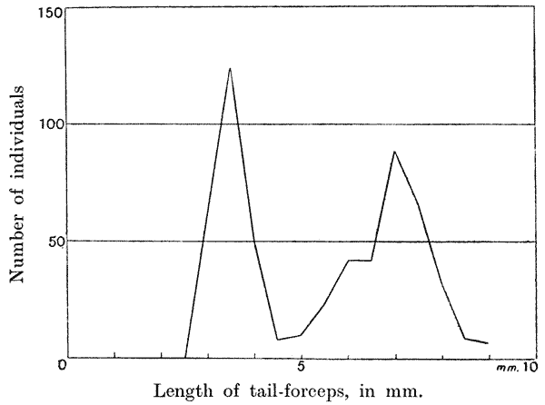
In a very well-known paper, Bateson shewed that, among a large number of earwigs, collected in a particular locality, the males fell into two groups, characterised by large or by small tail-forceps, with very few instances of intermediate magnitude. This distribution into two groups, according to magnitude, is illustrated in the accompanying diagram (Fig. 23); and the phenomenon was described, and has been often quoted, as one of dimorphism, or discontinuous variation. In this diagram the time-element does not appear; but it is certain, and evident, that it lies close behind. Suppose we take some organism which is born not at all times of the year (as man is) but at some one particular season (for instance a fish), then any random sample will consist of individuals whose ages, and therefore whose magnitudes, will form a discontinuous series; and by plotting these magnitudes on a curve in relation to the number of individuals of each particular magnitude, we obtain a curve such as that shewn in Fig. 24, the first practical use of which is to enable us to analyse our sample into its constituent “age-groups,” or in other words to determine approximately the age, or ages of the fish. And if, instead of measuring the whole length of our fish, we had confined ourselves to particular parts, such as head, or {105} tail or fin, we should have obtained discontinuous curves of distribution, precisely analogous to those for the entire animal. Now we know that the differences with which Bateson was dealing were entirely a question of magnitude, and we cannot help seeing that the discontinuous distributions of magnitude represented by his earwigs’ tails are just such as are illustrated by the magnitudes of the older and younger fish; we may indeed go so far as to say that the curves are precisely comparable, for in both cases we see a characteristic feature of detail, namely that the “spread” of the curve is greater in the second wave than in the first, that is to say (in the case of the fish) in the older as well as larger series. Over the reason for this phenomenon, which is simple and all but obvious, we need not pause.
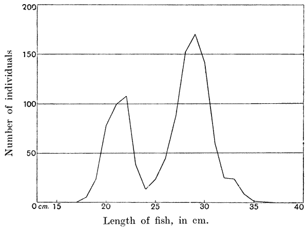
It is evident, then, that in this case of “dimorphism,” the tails of the one group of earwigs (which Bateson calls the “high males”) have either grown faster, or have been growing for a longer period of time, than those of the “low males.” If we could be certain that the whole random sample of earwigs were of one and the same age, then we should have to refer the phenomenon of dimorphism to a physiological phenomenon, simple in kind (however remarkable and unexpected); viz. that there were two alternative {106} values, very different from one another, for the mean velocity of growth, and that the individual earwigs varied around one or other of these mean values, in each case according to the law of probabilities. But on the other hand, if we could believe that the two groups of earwigs were of different ages, then the phenomenon would be simplicity itself, and there would be no more to be said about it133.
Before we pass from the subject of the relative rate of growth of different parts or organs, we may take brief note of the fact that various experiments have been made to determine whether the normal ratios are maintained under altered circumstances of nutrition, and especially in the case of partial starvation. For instance, it has been found possible to keep young rats alive for many weeks on a diet such as is just sufficient to maintain life without permitting any increase of weight. The rat of three weeks old weighs about 25 gms., and under a normal diet should weigh at ten weeks old about 150 gms., in the male, or 115 gms. in the female; but the underfed rat is still kept at ten weeks old to the weight of 25 gms. Under normal diet the proportions of the body change very considerably between the ages of three and ten weeks. For instance the tail gets relatively longer; and even when the total growth of the rat is prevented by underfeeding, the form continues to alter so that this increasing length of the tail is still manifest134. {107}
| Full-fed Rats. | ||||
|---|---|---|---|---|
| Age in weeks |
Length of body (mm.) |
Length of tail (mm.) |
Total length |
% of tail |
| 0 | 48·7 | 16·9 | 65·6 | 25·8 |
| 1 | 64·5 | 29·4 | 93·9 | 31·3 |
| 3 | 90·4 | 59·1 | 149·5 | 39·5 |
| 6 | 128·0 | 110·0 | 238·0 | 46·2 |
| 10 | 173·0 | 150·0 | 323·0 | 46·4 |
| Underfed Rats. | ||||
| 6 | 98·0 | 72·3 | 170·3 | 42·5 |
| 10 | 99·6 | 83·9 | 183·5 | 45·7 |
Again as physiologists have long been aware, there is a marked difference in the variation of weight of the different organs, according to whether the animal’s total weight remain constant, or be caused to diminish by actual starvation; and further striking differences appear when the diet is not only scanty, but ill-balanced. But these phenomena of abnormal growth, however interesting from the physiological view, are of little practical importance to the morphologist.
The rates of growth which we have hitherto dealt with are based on special investigations, conducted under particular local conditions. For instance, Quetelet’s data, so far as we have used them to illustrate the rate of growth in man, are drawn from his study of the population of Belgium. But apart from that “fortuitous” individual variation which we have already considered, it is obvious that the normal rate of growth will be found to vary, in man and in other animals, just as the average stature varies, in different localities, and in different “races.” This phenomenon is a very complex one, and is doubtless a resultant of many undefined contributory causes; but we at least gain something in regard to it, when we discover that the rate of growth is directly affected by temperature, and probably by other physical {108} conditions. Réaumur was the first to shew, and the observation was repeated by Bonnet136, that the rate of growth or development of the chick was dependent on temperature, being retarded at temperatures below and somewhat accelerated at temperatures above the normal temperature of incubation, that is to say the temperature of the sitting hen. In the case of plants the fact that growth is greatly affected by temperature is a matter of familiar knowledge; the subject was first carefully studied by Alphonse De Candolle, and his results and those of his followers are discussed in the textbooks of Botany137.
That variation of temperature constitutes only one factor in determining the rate of growth is admirably illustrated in the case of the Bamboo. It has been stated (by Lock) that in Ceylon the rate of growth of the Bamboo is directly proportional to the humidity of the atmosphere: and again (by Shibata) that in Japan it is directly proportional to the temperature. The two statements have been ingeniously and satisfactorily reconciled by Blackman138, who suggests that in Ceylon the temperature-conditions are all that can be desired, but moisture is apt to be deficient: while in Japan there is rain in abundance but the average temperature is somewhat too low. So that in the one country it is the one factor, and in the other country it is the other, which is essentially variable.
The annexed diagram (Fig. 25), shewing the growth in length of the roots of some common plants during an identical period of forty-eight hours, at temperatures varying from about 14° to 37° C., is a sufficient illustration of the phenomenon. We see that in all cases there is a certain optimum temperature at which the rate of growth is a maximum, and we can also see that on either side of this optimum temperature the acceleration of growth, positive or negative, with increase of temperature is rapid, while at a distance from the optimum it is very slow. From the data given by Sachs and others, we see further that this optimum temperature is very much the same for all the common plants of our own climate which have as yet been studied; in them it is {109} somewhere about 26° C. (or say 77° F.), or about the temperature of a warm summer’s day; while it is found, very naturally, to be considerably higher in the case of plants such as the melon or the maize, which are at home in warmer regions that our own.
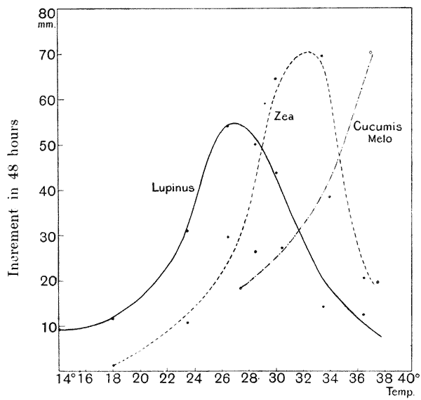
In a large number of physical phenomena, and in a very marked degree in all chemical reactions, it is found that rate of action is affected, and for the most part accelerated, by rise of temperature; and this effect of temperature tends to follow a definite “exponential” law, which holds good within a considerable range of temperature, but is altered or departed from when we pass beyond certain normal limits. The law, as laid down by van’t Hoff for chemical reactions, is, that for an interval of n degrees the velocity varies as xn , x being called the “temperature coefficient”139 for the reaction in question. {110}
Van’t Hoff’s law, which has become a fundamental principle of chemical mechanics, is likewise applicable (with certain qualifications) to the phenomena of vital chemistry; and it follows that, on very much the same lines, we may speak of the “temperature coefficient” of growth. At the same time we must remember that there is a very important difference (though we can scarcely call it a fundamental one) between the purely physical and the physiological phenomenon, in that in the former we study (or seek and profess to study) one thing at a time, while in the latter we have always to do with various factors which intersect and interfere; increase in the one case (or change of any kind) tends to be continuous, in the other case it tends to be brought to arrest. This is the simple meaning of that Law of Optimum, laid down by Errera and by Sachs as a general principle of physiology: namely that every physiological process which varies (like growth itself) with the amount or intensity of some external influence, does so according to a law in which progressive increase is followed by progressive decrease; in other words the function has its optimum condition, and its curve shews a definite maximum. In the case of temperature, as Jost puts it, it has on the one hand its accelerating effect which tends to follow van’t Hoff’s law. But it has also another and a cumulative effect upon the organism: “Sie schädigt oder sie ermüdet ihn, und je höher sie steigt, desto rascher macht sie die Schädigung geltend und desto schneller schreitet sie voran.” It would seem to be this double effect of temperature in the case of the organism which gives us our “optimum” curves, which are the expression, accordingly, not of a primary phenomenon, but of a more or less complex resultant. Moreover, as Blackman and others have pointed out, our “optimum” temperature is very ill-defined until we take account also of the duration of our experiment; for obviously, a high temperature may lead to a short, but exhausting, spell of rapid growth, while the slower rate manifested at a lower temperature may be the best in the end. {111} The mile and the hundred yards are won by different runners; and maximum rate of working, and maximum amount of work done, are two very different things140.
In the case of maize, a certain series of experiments shewed that the growth in length of the roots varied with the temperature as follows141:
| Temperature °C. |
Growth in 48 hours mm. |
|---|---|
| 18·0 | 1·1 |
| 23·5 | 10·8 |
| 26·6 | 29·6 |
| 28·5 | 26·5 |
| 30·2 | 64·6 |
| 33·5 | 69·5 |
| 36·5 | 20·7 |
Let us write our formula in the form
Then choosing two values out of the above experimental series (say the second and the second-last), we have t = 23·5, n = 10, and V, V′ = 10·8 and 69·5 respectively.
Accordingly
Therefore
And,
This first approximation might be considerably improved by taking account of all the experimental values, two only of which we have as yet made use of; but even as it is, we see by Fig. 26 that it is in very fair accordance with the actual results of observation, within those particular limits of temperature to which the experiment is confined. {112}
For an experiment on Lupinus albus, quoted by Asa Gray142, I have worked out the corresponding coefficient, but a little more carefully. Its value I find to be 1·16, or very nearly identical with that we have just found for the maize; and the correspondence between the calculated curve and the actual observations is now a close one.
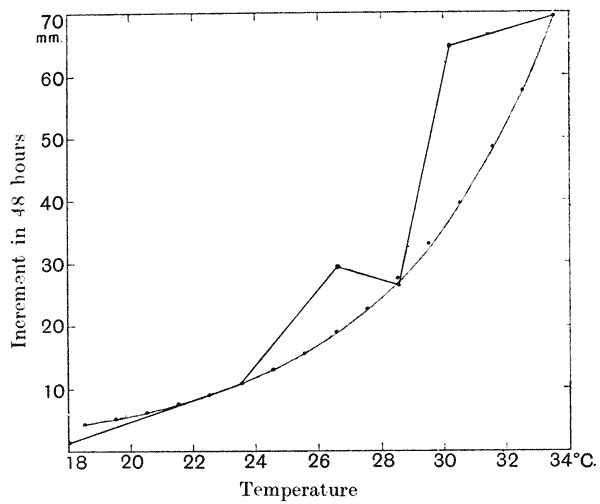
Since the above paragraphs were written, new data have come to hand. Miss I. Leitch has made careful observations of the rate of growth of rootlets of the Pea; and I have attempted a further analysis of her principal results143. In Fig. 27 are shewn the mean rates of growth (based on about a hundred experiments) at some thirty-four different temperatures between 0·8° and 29·3°, each experiment lasting rather less than twenty-four hours. Working out the mean temperature coefficient for a great many combinations of these values, I obtain a value of 1·092 per C.°, or 2·41 for an interval of 10°, and a mean value for the whole series showing a rate of growth of just about 1 mm. per hour at a temperature of 20°. My curve in Fig. 27 is drawn from these determinations; and it will be seen that, while it is by no means exact at the lower temperatures, and will of course fail us altogether at very high {113} temperatures, yet it serves as a very satisfactory guide to the relations between rate and temperature within the ordinary limits of healthy growth. Miss Leitch holds that the curve is not a van’t Hoff curve; and this, in strict accuracy, we need not dispute. But the phenomenon seems to me to be one into which the van’t Hoff ratio enters largely, though doubtless combined with other factors which we cannot at present determine or eliminate.
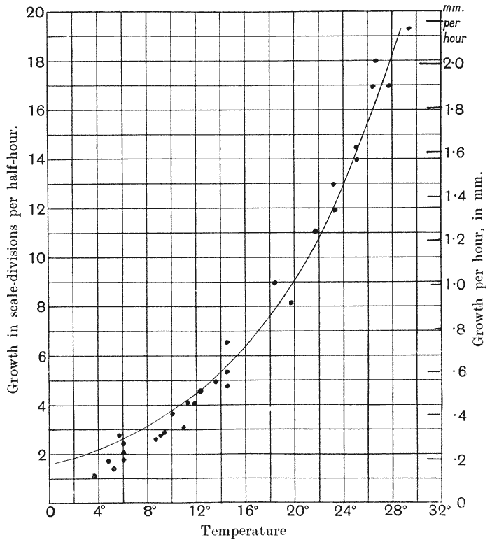
While the above results conform fairly well to the law of the temperature coefficient, it is evident that the imbibition of water plays so large a part in the process of elongation of the root or stem that the phenomenon is rather a physical than a chemical one: and on this account, as Blackman has remarked, the data commonly given for the rate of growth in plants are apt to be {114} irregular, and sometimes (we might even say) misleading144. The fact also, which we have already learned, that the elongation of a shoot tends to proceed by jerks, rather than smoothly, is another indication that the phenomenon is not purely and simply a chemical one. We have abundant illustrations, however, among animals, in which we may study the temperature coefficient under circumstances where, though the phenomenon is always complicated by osmotic factors, true metabolic growth or chemical combination plays a larger role. Thus Mlle. Maltaux and Professor Massart145 have studied the rate of division in a certain flagellate, Chilomonas paramoecium, and found the process to take 29 minutes at 15° C., 12 at 25°, and only 5 minutes at 35° C. These velocities are in the ratio of 1 : 2·4 : 5·76, which ratio corresponds precisely to a temperature coefficient of 2·4 for each rise of 10°, or about 1·092 for each degree centigrade.
By means of this principle we may throw light on the apparently complicated results of many experiments. For instance, Fig. 28 is an illustration, which has been often copied, of O. Hertwig’s work on the effect of temperature on the rate of development of the tadpole146.
From inspection of this diagram, we see that the time taken to attain certain stages of development (denoted by the numbers III–VII) was as follows, at 20° and at 10° C., respectively.
| At 20° | At 10° | |||
|---|---|---|---|---|
| Stage | III | 2·0 | 6·5 | days |
| ″ | IV | 2·7 | 8·1 | ″ |
| ″ | V | 3·0 | 10·7 | ″ |
| ″ | VI | 4·0 | 13·5 | ″ |
| ″ | VII | 5·0 | 16·8 | ″ |
| Total | 16·7 | 55·6 | ″ |
That is to say, the time taken to produce a given result at {115} 10° was (on the average) somewhere about 55·6 ⁄ 16·7, or 3·33, times as long as was required at 20°.
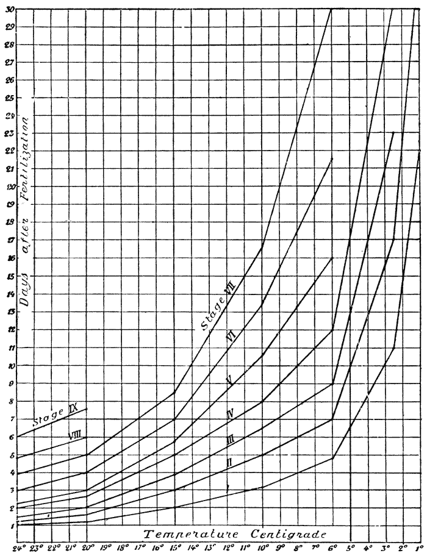
We may then put our equation again in the simple form, {116}
Or,
Therefore
and
That is to say, between the intervals of 10° and 20° C., if it take m days, at a certain given temperature, for a certain stage of development to be attained, it will take m × 1·128n days, when the temperature is n degrees less, for the same stage to be arrived at.
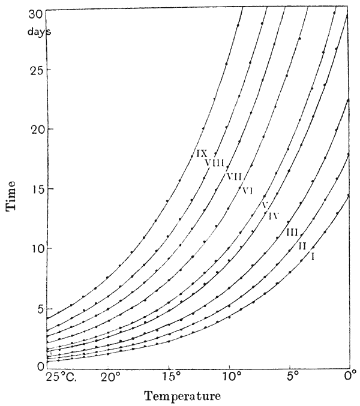
Fig. 29 is calculated throughout from this value; and it will be seen that it is extremely concordant with the original diagram, as regards all the stages of development and the whole range of temperatures shewn: in spite of the fact that the coefficient on which it is based was derived by an easy method from a very few points in the original curves. {117}
Karl Peter147, experimenting chiefly on echinoderm eggs, and also making use of Hertwig’s experiments on young tadpoles, gives the normal temperature coefficients for intervals of 10° C. (commonly written Q10) as follows.
| Sphaerechinus | 2·15, |
| Echinus | 2·13, |
| Rana | 2·86. |
These values are not only concordant, but are evidently of the same order of magnitude as the temperature-coefficient in ordinary chemical reactions. Peter has also discovered the very interesting fact that the temperature-coefficient alters with age, usually but not always becoming smaller as age increases.
| Sphaerechinus; | Segmentation | Q10 | = 2·29, |
| Later stages | ″ | = 2·03. | |
| Echinus; | Segmentation | ″ | = 2·30, |
| Later stages | ″ | = 2·08. | |
| Rana; | Segmentation | ″ | = 2·23, |
| Later stages | ″ | = 3·34. |
Furthermore, the temperature coefficient varies with the temperature, diminishing as the temperature rises,—a rule which van’t Hoff has shewn to hold in ordinary chemical operations. Thus, in Rana the temperature coefficient at low temperatures may be as high as 5·6: which is just another way of saying that at low temperatures development is exceptionally retarded.
In certain fish, such as plaice and haddock, I and others have found clear evidence that the ascending curve of growth is subject to seasonal interruptions, the rate during the winter months being always slower than in the months of summer: it is as though we superimposed a periodic, annual, sine-curve upon the continuous curve of growth. And further, as growth itself grows less and less from year to year, so will the difference between the winter and the summer rate also grow less and less. The fluctuation in rate {118} will represent a vibration which is gradually dying out; the amplitude of the sine-curve will gradually diminish till it disappears; in short, our phenomenon is simply expressed by what is known as a “damped sine-curve.” Exactly the same thing occurs in man, though neither in his case nor in that of the fish have we sufficient data for its complete illustration.
We can demonstrate the fact, however, in the case of man by the help of certain very interesting measurements which have been recorded by Daffner148, of the height of German cadets, measured at half-yearly intervals.
| Height in cent. | Increment in cm. | ||||||
|---|---|---|---|---|---|---|---|
| Number observed | Age | October | April | October | Winter ½-year | Summer ½-year | Year |
| 12 | 11–12 | 139·4 | 141·0 | 143·3 | 1·6 | 2·3 | 3·9 |
| 80 | 12–13 | 143·0 | 144·5 | 147·4 | 1·5 | 2·9 | 4·4 |
| 146 | 13–14 | 147·5 | 149·5 | 152·5 | 2·0 | 3·0 | 5·0 |
| 162 | 14–15 | 152·2 | 155·0 | 158·5 | 2·5 | 3·5 | 6·0 |
| 162 | 15–16 | 158·5 | 160·8 | 163·8 | 2·3 | 3·0 | 5·3 |
| 150 | 16–17 | 163·5 | 165·4 | 167·7 | 1·9 | 2·3 | 4·2 |
| 82 | 17–18 | 167·7 | 168·9 | 170·4 | 1·2 | 1·5 | 2·7 |
| 22 | 18–19 | 169·8 | 170·6 | 171·5 | 0·8 | 0·9 | 1·7 |
| 6 | 19–20 | 170·7 | 171·1 | 171·5 | 0·4 | 0·4 | 0·8 |
In the accompanying diagram (Fig. 30) the half-yearly increments are set forth, from the above table, and it will be seen that they form two even and entirely separate series. The curve joining up each series of points is an acceleration-curve; and the comparison of the two curves gives a clear view of the relative rates of growth during winter and summer, and the fluctuation which these velocities undergo during the years in question. The dotted line represents, approximately, the acceleration-curve in its continuous fluctuation of alternate seasonal decrease and increase.
In the case of trees, the seasonal fluctuations of growth149 admit {119} of easy determination, and it is a point of considerable interest to compare the phenomenon in evergreen and in deciduous trees. I happen to have no measurements at hand with which to make this comparison in the case of our native trees, but from a paper by Mr Charles E. Hall150 I have compiled certain mean values for growth in the climate of Uruguay.
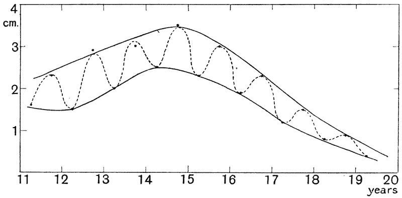
| Jan. | Feb. | Mar. | Apr. | May | June | July | Aug. | Sept. | Oct. | Nov. | Dec. | |
|---|---|---|---|---|---|---|---|---|---|---|---|---|
| Evergreens | 9·1 | 8·8 | 8·6 | 8·9 | 7·7 | 5·4 | 4·3 | 6·0 | 9·1 | 11·1 | 10·8 | 10·2 |
| Deciduous trees | 20·3 | 14·6 | 9·0 | 2·3 | 0·8 | 0·3 | 0·7 | 1·3 | 3·5 | 9·9 | 16·7 | 21·0 |
The measurements taken were those of the girth of the tree, in mm., at three feet from the ground. The evergreens included species of Pinus, Eucalyptus and Acacia; the deciduous trees included Quercus, Populus, Robinia and Melia. I have merely taken mean values for these two groups, and expressed the monthly values as percentages of the mean annual increase. The result (as shewn by Fig. 31) is very much what we might have expected. The growth of the deciduous trees is completely arrested in winter-time, and the arrest is all but complete over {120} a considerable period of time; moreover, during the warm season, the monthly values are regularly graded (approximately in a sine-curve) with a clear maximum (in the southern hemisphere) about the month of December. In the evergreen trees, on the other hand, the amplitude of the periodic wave is very much less; there is a notable amount of growth all the year round, and, while there is a marked diminution in rate during the coldest months, there is a tendency towards equality over a considerable part of the warmer season. It is probable that some of the species examined, and especially the pines, were definitely retarded in growth, either by a temperature above their optimum, or by deficiency of moisture, during the hottest period of the year; with the result that the seasonal curve in our diagram has (as it were) its region of maximum cut off.
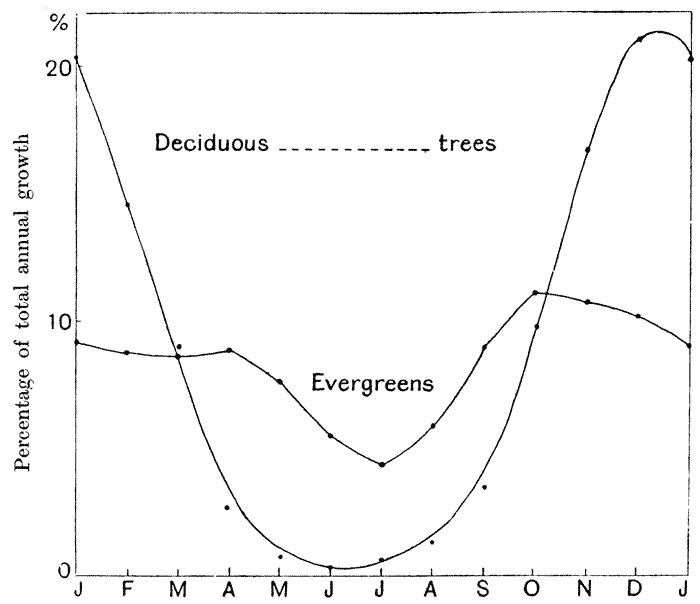
In the case of trees, the seasonal periodicity of growth is so well marked that we are entitled to make use of the phenomenon in a converse way, and to draw deductions as to variations in {121} climate during past years from the record of varying rates of growth which the tree, by the thickness of its annual rings, has preserved for us. Mr. A. E. Douglass, of the University of Arizona, has made a careful study of this question151, and I have received (through Professor H. H. Turner of Oxford) some measurements of the average width of the successive annual rings in “yellow pine,” 500 years old, from Arizona, in which trees the annual rings are very clearly distinguished. From the year 1391 to 1518, the mean of two trees was used; from 1519 to 1912, the mean of five; and the means of these, and sometimes of larger numbers, were found to be very concordant. A correction was applied by drawing a long, nearly straight line through the curve for the whole period, which line was assumed to represent the slowly diminishing mean width of ring accompanying the increase of size, or age, of the tree; and the actual growth as measured was equated with this diminishing mean. The figures used give, accordingly, the ratio of the actual growth in each year to the mean growth corresponding to the age or magnitude of the tree at that epoch.
It was at once manifest that the rate of growth so determined shewed a tendency to fluctuate in a long period of between 100 and 200 years. I then smoothed in groups of 100 (according to Gauss’s method) the yearly values, so that each number thus found represented the mean annual increase during a century: that is to say, the value ascribed to the year 1500 represented the average annual growth during the whole period between 1450 and 1550, and so on. These values give us a curve of beautiful and surprising smoothness, from which we seem compelled to draw the direct conclusion that the climate of Arizona, during the last 500 years, has fluctuated with a regular periodicity of almost precisely 150 years. Here again we should be left in doubt (so far as these {123} observations go) whether the essential factor be a fluctuation of temperature or an alternation of moisture and aridity; but the character of the Arizona climate, and the known facts of recent years, encourage the belief that the latter is the more direct and more important factor.
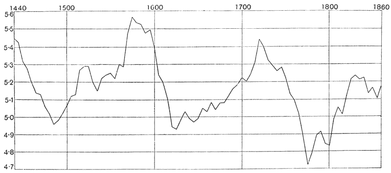
It has been often remarked that our common European trees, such for instance as the elm or the cherry, tend to have larger leaves the further north we go; but in this case the phenomenon is to be ascribed rather to the longer hours of daylight than to any difference of temperature152. The point is a physiological one, and consequently of little importance to us here153; the main point for the morphologist is the very simple one that physical or climatic conditions have greatly influenced the rate of growth. The case is analogous to the direct influence of temperature in modifying the colouration of organisms, such as certain butterflies. Now if temperature affects the rate of growth in strict uniformity, alike in all directions and in all parts or organs, its direct effect must be limited to the production of local races or varieties differing from one another in actual magnitude, as the Siberian goldfinch or bullfinch, for instance, differ from our own. But if there be even ever so little of a discriminating action in the enhancement of growth by temperature, such that it accelerates the growth of one tissue or one organ more than another, then it is evident that it must at once lead to an actual difference of racial, or even “specific” form.
It is not to be doubted that the various factors of climate have some such discriminating influence. The leaves of our northern trees may themselves be an instance of it; and we have, {124} probably, a still better instance of it in the case of Alpine plants154, whose general habit is dwarfed, though their floral organs suffer little or no reduction. The subject, however, has been little investigated, and great as its theoretic importance would be to us, we must meanwhile leave it alone.
The curves of growth which we have now been studying represent phenomena which have at least a two-fold interest, morphological and physiological. To the morphologist, who recognises that form is a “function” of growth, the important facts are mainly these: (1) that the rate of growth is an orderly phenomenon, with general features common to very various organisms, while each particular organism has its own characteristic phenomena, or “specific constants”; (2) that rate of growth varies with temperature, that is to say with season and with climate, and with various other physical factors, external and internal; (3) that it varies in different parts of the body, and according to various directions or axes; such variations being definitely correlated with one another, and thus giving rise to the characteristic proportions, or form, of the organism, and to the changes in form which it undergoes in the course of its development. But to the physiologist, the phenomenon suggests many other important considerations, and throws much light on the very nature of growth itself, as a manifestation of chemical and physical energies.
To be content to shew that a certain rate of growth occurs in a certain organism under certain conditions, or to speak of the phenomenon as a “reaction” of the living organism to its environment or to certain stimuli, would be but an example of that “lack of particularity155” in regard to the actual mechanism of physical cause and effect with which we are apt in biology to be too easily satisfied. But in the case of rate of growth we pass somewhat {125} beyond these limitations; for the affinity with certain types of chemical reaction is plain, and has been recognised by a great number of physiologists.
A large part of the phenomenon of growth, both in animals and still more conspicuously in plants, is associated with “turgor,” that is to say, is dependent on osmotic conditions; in other words, the velocity of growth depends in great measure (as we have already seen, p. 113) on the amount of water taken up into the living cells, as well as on the actual amount of chemical metabolism performed by them156. Of the chemical phenomena which result in the actual increase of protoplasm we shall speak presently, but the rôle of water in growth deserves also a passing word, even in our morphological enquiry.
It has been shewn by Loeb that in Cerianthus or Tubularia, for instance, the cells in order to grow must be turgescent; and this turgescence is only possible so long as the salt water in which the cells lie does not overstep a certain limit of concentration. The limit, in the case of Tubularia, is passed when the salt amounts to about 5·4 per cent. Sea-water contains some 3·0 to 3·5 p.c. of salts; but it is when the salinity falls much below this normal, to about 2·2 p.c., that Tubularia exhibits its maximal turgescence, and maximal growth. A further dilution is said to act as a poison to the animal. Loeb has also shewn157 that in certain eggs (e.g. those of the little fish Fundulus) an increasing concentration of the sea-water (leading to a diminishing “water-content” of the egg) retards the rate of segmentation and at length renders segmentation impossible; though nuclear division, by the way, goes on for some time longer.
Among many other observations of the same kind, those of Bialaszewicz158, on the early growth of the frog, are notable. He shews that the growth of the embryo while still within the {126} vitelline membrane depends wholly on the absorption of water; that whether rate of growth be fast or slow (in accordance with temperature) the quantity of water absorbed is constant; and that successive changes of form correspond to definite quantities of water absorbed. The solid residue, as Davenport has also shewn, may actually and notably diminish, while the embryo organism is increasing rapidly in bulk and weight.
On the other hand, in later stages and especially in the higher animals, the percentage of water tends to diminish. This has been shewn by Davenport in the frog, by Potts in the chick, and particularly by Fehling in the case of man159. Fehling’s results are epitomised as follows:
| Age in weeks | 6 | 17 | 22 | 24 | 26 | 30 | 35 | 39 |
| Percentage of water | 97·5 | 91·8 | 92·0 | 89·9 | 86·4 | 83·7 | 82·9 | 74·2 |
And the following illustrate Davenport’s results for the frog:
| Age in weeks | 1 | 2 | 5 | 7 | 9 | 14 | 41 | 84 |
| Percentage of water | 56·3 | 58·5 | 76·7 | 89·3 | 93·1 | 95·0 | 90·2 | 87·5 |
To such phenomena of osmotic balance as the above, or in other words to the dependence of growth on the uptake of water, Höber160 and also Loeb are inclined to refer the modifications of form which certain phyllopod crustacea undergo, when the highly saline waters which they inhabit are further concentrated, or are abnormally diluted. Their growth, according to Schmankewitsch, is retarded by increase of concentration, so that the individuals from the more saline waters appear stunted and dwarfish; and they become altered or transformed in other ways, which for the most part suggest “degeneration,” or a failure to attain full and perfect development161. Important physiological changes also ensue. The rate of multiplication is increased, and parthenogenetic reproduction is encouraged. Male individuals become plentiful in the less saline waters, and here the females bring forth {127} their young alive; males disappear altogether in the more concentrated brines, and then the females lay eggs, which, however, only begin to develop when the salinity is somewhat reduced.
The best-known case is the little “brine-shrimp,” Artemia salina, found, in one form or another, all the world over, and first discovered more than a century and a half ago in the salt-pans at Lymington. Among many allied forms, one, A. milhausenii, inhabits the natron-lakes of Egypt and Arabia, where, under the name of “loul,” or “Fezzan-worm,” it is eaten by the Arabs162. This fact is interesting, because it indicates (and investigation has apparently confirmed) that the tissues of the creature are not impregnated with salt, as is the medium in which it lives. The fluids of the body, the milieu interne (as Claude Bernard called them163), are no more salt than are those of any ordinary crustacean or other animal, but contain only some 0·8 per cent. of NaCl164, while the milieu externe may contain 10, 20, or more per cent. of this and other salts; which is as much as to say that the skin, or body-wall, of the creature acts as a “semi-permeable membrane,” through which the dissolved salts are not permitted to diffuse, though water passes through freely: until a statical equilibrium (doubtless of a complex kind) is at length attained.
Among the structural changes which result from increased concentration of the brine (partly during the life-time of the individual, but more markedly during the short season which suffices for the development of three or four, or perhaps more, successive generations), it is found that the tail comes to bear fewer and fewer bristles, and the tail-fins themselves tend at last to disappear; these changes corresponding to what have been {128} described as the specific characters of A. milhausenii, and of a still more extreme form, A. köppeniana; while on the other hand, progressive dilution of the water tends to precisely opposite conditions, resulting in forms which have also been described as separate species, and even referred to a separate genus, Callaonella, closely akin to Branchipus (Fig. 33). Pari passu with these changes, there is a marked change in the relative lengths of the fore and hind portions of the body, that is to say, of the “cephalothorax” and abdomen: the latter growing relatively longer, the salter the water. In other words, not only is the rate of growth of the whole
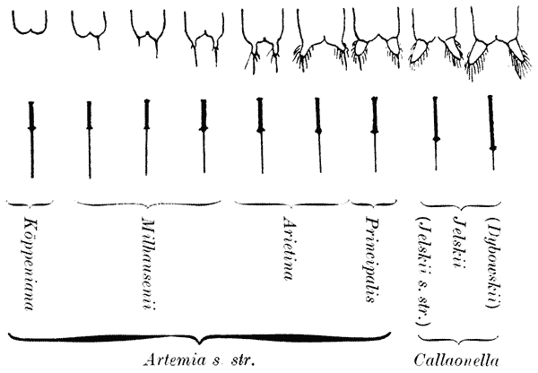
animal lessened by the saline concentration, but the specific rates of growth in the parts of its body are relatively changed. This latter phenomenon lends itself to numerical statement, and Abonyi has lately shewn that we may construct a very regular curve, by plotting the proportionate length of the creature’s abdomen against the salinity, or density, of the water; and the several species of Artemia, with all their other correlated specific characters, are then found to occupy successive, more or less well-defined, and more or less extended, regions of the curve (Fig. 33). In short, the density of the water is so clearly a “function” of the specific {129} character, that we may briefly define the species Artemia (Callaonella) Jelskii, for instance, as the Artemia of density 1000–1010 (NaCl), or the typical A. salina, or principalis, as the Artemia of density 1018–1025, and so forth. It is a most interesting fact that these Artemiae, under the protection of their semi-permeable skins, are capable of living in waters not only of great density, but of very varied chemical composition. The natron-lakes, for instance, contain large quantities of magnesium
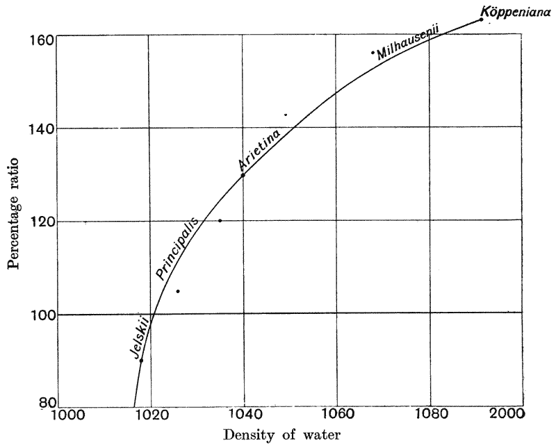
sulphate; and the Artemiae continue to live equally well in artificial solutions where this salt, or where calcium chloride, has largely taken the place of sodium chloride in the more common habitat. Furthermore, such waters as those of the natron-lakes are subject to very great changes of chemical composition as concentration proceeds, owing to the different solubilities of the constituent salts. It appears that the forms which the Artemiae assume, and the changes which they undergo, are identical or {130} indistinguishable, whichever of the above salts happen to exist, or to predominate, in their saline habitat. At the same time we still lack (so far as I know) the simple, but crucial experiments which shall tell us whether, in solutions of different chemical composition, it is at equal densities, or at “isotonic” concentrations (that is to say, under conditions where the osmotic pressure, and consequently the rate of diffusion, is identical), that the same structural changes are produced, or corresponding phases of equilibrium attained.
While Höber and others165 have referred all these phenomena to osmosis, Abonyi is inclined to believe that the viscosity, or mechanical resistance, of the fluid also reacts upon the organism; and other possible modes of operation have been suggested. But we may take it for certain that the phenomenon as a whole is not a simple one; and that it includes besides the passive phenomena of intermolecular diffusion, some other form of activity which plays the part of a regulatory mechanism166.
In ordinary chemical reactions we have to deal (1) with a specific velocity proper to the particular reaction, (2) with variations due to temperature and other physical conditions, (3) according to van’t Hoff’s “Law of Mass,” with variations due to the actual quantities present of the reacting substances, and (4) in certain cases, with variations due to the presence of “catalysing agents.” In the simpler reactions, the law of mass involves a steady, gradual slowing-down of the process, according to a logarithmic ratio, as the reaction proceeds and as the initial amount of substance diminishes; a phenomenon, however, which need not necessarily {131} occur in the organism, part of whose energies are devoted to the continual bringing-up of fresh supplies.
Catalytic action occurs when some substance, often in very minute quantity, is present, and by its presence produces or accelerates an action, by opening “a way round,” without the catalytic agent itself being diminished or used up167. Here the velocity curve, though quickened, is not necessarily altered in form, for gradually the law of mass exerts its effect and the rate of the reaction gradually diminishes. But in certain cases we have the very remarkable phenomenon that a body acting as a catalyser is necessarily formed as a product, or bye-product, of the main reaction, and in such a case as this the reaction-velocity will tend to be steadily accelerated. Instead of dwindling away, the reaction will continue with an ever-increasing velocity: always subject to the reservation that limiting conditions will in time make themselves felt, such as a failure of some necessary ingredient, or a development of some substance which shall antagonise or finally destroy the original reaction. Such an action as this we have learned, from Ostwald, to describe as “autocatalysis.” Now we know that certain products of protoplasmic metabolism, such as the enzymes, are very powerful catalysers, and we are entitled to speak of an autocatalytic action on the part of protoplasm itself. This catalytic activity of protoplasm is a very important phenomenon. As Blackman says, in the address already quoted, the botanists (or the zoologists) “call it growth, attribute it to a specific power of protoplasm for assimilation, and leave it alone as a fundamental phenomenon; but they are much concerned as to the distribution of new growth in innumerable specifically distinct forms.” While the chemist, on the other hand, recognises it as a familiar phenomenon, and refers it to the same category as his other known examples of autocatalysis. {132}
This very important, and perhaps even fundamental phenomenon of growth would seem to have been first recognised by Professor Chodat of Geneva, as we are told by his pupil Monnier168. “On peut bien, ainsi que M. Chodat l’a proposé, considérer l’accroissement comme une réaction chimique complexe, dans laquelle le catalysateur est la cellule vivante, et les corps en présence sont l’eau, les sels, et l’acide carbonique.”
Very soon afterwards a similar suggestion was made by Loeb169, in connection with the synthesis of nuclein or nuclear protoplasm; for he remarked that, as in an autocatalysed chemical reaction, the velocity of the synthesis increases during the initial stage of cell-division in proportion to the amount of nuclear matter already synthesised. In other words, one of the products of the reaction, i.e. one of the constituents of the nucleus, accelerates the production of nuclear from cytoplasmic material.
The phenomenon of autocatalysis is by no means confined to living or protoplasmic chemistry, but at the same time it is characteristically, and apparently constantly, associated therewith. And it would seem that to it we may ascribe a considerable part of the difference between the growth of the organism and the simpler growth of the crystal170: the fact, for instance, that the cell can grow in a very low concentration of its nutritive solution, while the crystal grows only in a supersaturated one; and the fundamental fact that the nutritive solution need only contain the more or less raw materials of the complex constituents of the cell, while the crystal grows only in a solution of its own actual substance171.
As F. F. Blackman has pointed out, the multiplication of an organism, for instance the prodigiously rapid increase of a bacterium, {133} which tends to double its numbers every few minutes, till (were it not for limiting factors) its numbers would be all but incalculable in a day172, is a simple but most striking illustration of the potentialities of protoplasmic catalysis; and (apart from the large share taken by mere “turgescence” or imbibition of water) the same is true of the growth, or cell-multiplication, of a multicellular organism in its first stage of rapid acceleration.
It is not necessary for us to pursue this subject much further, for it is sufficiently clear that the normal “curve of growth” of an organism, in all its general features, very closely resembles the velocity-curve of chemical autocatalysis. We see in it the first and most typical phase of greater and greater acceleration; this is followed by a phase in which limiting conditions (whose details are practically unknown) lead to a falling off of the former acceleration; and in most cases we come at length to a third phase, in which retardation of growth is succeeded by actual diminution of mass. Here we may recognise the influence of processes, or of products, which have become actually deleterious; their deleterious influence is staved off for a while, as the organism draws on its accumulated reserves, but they lead ere long to the stoppage of all activity, and to the physical phenomenon of death. But when we have once admitted that the limiting conditions of growth, which cause a phase of retardation to follow a phase of acceleration, are very imperfectly known, it is plain that, ipso facto, we must admit that a resemblance rather than an identity between this phenomenon and that of chemical autocatalysis is all that we can safely assert meanwhile. Indeed, as Enriques has shewn, points of contrast between the two phenomena are not lacking; for instance, as the chemical reaction draws to a close, it is by the gradual attainment of chemical equilibrium: but when organic growth draws to a close, it is by reason of a very different kind of equilibrium, due in the main to the gradual differentiation of the organism into parts, among whose peculiar {134} and specialised functions that of cell-multiplication tends to fall into abeyance173.
It would seem to follow, as a natural consequence, from what has been said, that we could without much difficulty reduce our curves of growth to logarithmic formulae174 akin to those which the physical chemist finds applicable to his autocatalytic reactions. This has been diligently attempted by various writers175; but the results, while not destructive of the hypothesis itself, are only partially successful. The difficulty arises mainly from the fact that, in the life-history of an organism, we have usually to deal (as indeed we have seen) with several recurrent periods of relative acceleration and retardation. It is easy to find a formula which shall satisfy the conditions during any one of these periodic phases, but it is very difficult to frame a comprehensive formula which shall apply to the entire period of growth, or to the whole duration of life.
But if it be meanwhile impossible to formulate or to solve in precise mathematical terms the equation to the growth of an organism, we have yet gone a very long way towards the solution of such problems when we have found a “qualitative expression,” as Poincaré puts it; that is to say, when we have gained a fair approximate knowledge of the general curve which represents the unknown function.
As soon as we have touched on such matters as the chemical phenomenon of catalysis, we are on the threshold of a subject which, if we were able to pursue it, would soon lead us far into the special domain of physiology; and there it would be necessary to follow it if we were dealing with growth as a phenomenon in itself, instead of merely as a help to our study and comprehension of form. For instance the whole question of diet, of overfeeding and underfeeding, would present itself for discussion176. But without attempting to open up this large subject, we may say a {135} further passing word upon the essential fact that certain chemical substances have the power of accelerating or of retarding, or in some way regulating, growth, and of so influencing directly the morphological features of the organism.
Thus lecithin has been shewn by Hatai177, Danilewsky178 and others to have a remarkable power of stimulating growth in various animals; and the so-called “auximones,” which Professor Bottomley prepares by the action of bacteria upon peat appear to be, after a somewhat similar fashion, potent accelerators of the growth of plants. But by much the most interesting cases, from our point of view, are those where a particular substance appears to exert a differential effect, stimulating the growth of one part or organ of the body more than another.
It has been known for a number of years that a diseased condition of the pituitary body accompanies the phenomenon known as “acromegaly,” in which the bones are variously enlarged or elongated, and which is more or less exemplified in every skeleton of a “giant”; while on the other hand, disease or extirpation of the thyroid causes an arrest of skeletal development, and, if it take place early, the subject remains a dwarf. These, then, are well-known illustrations of the regulation of function by some internal glandular secretion, some enzyme or “hormone” (as Bayliss and Starling call it), or “harmozone,” as Gley calls it in the particular case where the function regulated is that of growth, with its consequent influence on form.
Among other illustrations (which are plentiful) we have, for instance the growth of the placental decidua, which Loeb has shewn to be due to a substance given off by the corpus luteum of the ovary, giving to the uterine tissues an abnormal capacity for growth, which in turn is called into action by the contact of the ovum, or even of any foreign body. And various sexual characters, such as the plumage, comb and spurs of the cock, are believed in like manner to arise in response to some particular internal secretion. When the source of such a secretion is removed by castration, well-known morphological changes take place in various animals; and when a converse change takes place, the female acquires, in greater or less degree, characters which are {136} proper to the male, as in certain extreme cases, known from time immemorial, when late in life a hen assumes the plumage of the cock.
There are some very remarkable experiments by Gudernatsch, in which he has shewn that by feeding tadpoles (whether of frogs or toads) on thyroid gland substance, their legs may be made to grow out at any time, days or weeks before the normal date of their appearance179. No other organic food was found to produce the same effect; but since the thyroid gland is known to contain iodine180, Morse experimented with this latter substance, and found that if the tadpoles were fed with iodised amino-acids the legs developed precociously, just as when the thyroid gland itself was used. We may take it, then, as an established fact, whose full extent and bearings are still awaiting investigation, that there exist substances both within and without the organism which have a marvellous power of accelerating growth, and of doing so in such a way as to affect not only the size but the form or proportions of the organism.
If we once admit, as we are now bound to do, the existence of such factors as these, which, by their physiological activity and apart from any direct action of the nervous system, tend towards the acceleration of growth and consequent modification of form, we are led into wide fields of speculation by an easy and a legitimate pathway. Professor Gley carries such speculations a long, long way: for he says181 that by these chemical influences “Toute une partie de la construction des êtres parait s’expliquer d’une façon toute mécanique. La forteresse, si longtemps inaccessible, du vitalisme est entamée. Car la notion morphogénique était, suivant le mot de Dastre182, comme ‘le dernier réduit de la force vitale.’ ”
The physiological speculations we need not discuss: but, to take a single example from morphology, we begin to understand the possibility, and to comprehend the probable meaning, of the {137} all but sudden appearance on the earth of such exaggerated and almost monstrous forms as those of the great secondary reptiles and the great tertiary mammals183. We begin to see that it is in order to account, not for the appearance, but for the disappearance of such forms as these that natural selection must be invoked. And we then, I think, draw near to the conclusion that what is true of these is universally true, and that the great function of natural selection is not to originate, but to remove: donec ad interitum genus id natura redegit184.
The world of things living, like the world of things inanimate, grows of itself, and pursues its ceaseless course of creative evolution. It has room, wide but not unbounded, for variety of living form and structure, as these tend towards their seemingly endless, but yet strictly limited, possibilities of permutation and degree: it has room for the great and for the small, room for the weak and for the strong. Environment and circumstance do not always make a prison, wherein perforce the organism must either live or die; for the ways of life may be changed, and many a refuge found, before the sentence of unfitness is pronounced and the penalty of extermination paid. But there comes a time when “variation,” in form, dimensions, or other qualities of the organism, goes farther than is compatible with all the means at hand of health and welfare for the individual and the stock; when, under the active and creative stimulus of forces from within and from without, the active and creative energies of growth pass the bounds of physical and physiological equilibrium: and so reach the limits which, as again Lucretius tells us, natural law has set between what may and what may not be,
Then, at last, we are entitled to use the customary metaphor, and to see in natural selection an inexorable force, whose function {138} is not to create but to destroy,—to weed, to prune, to cut down and to cast into the fire185.
The phenomenon of regeneration, or the restoration of lost or amputated parts, is a particular case of growth which deserves separate consideration. As we are all aware, this property is manifested in a high degree among invertebrates and many cold-blooded vertebrates, diminishing as we ascend the scale, until at length, in the warm-blooded animals, it lessens down to no more than that vis medicatrix which heals a wound. Ever since the days of Aristotle, and especially since the experiments of Trembley, Réaumur and Spallanzani in the middle of the eighteenth century, the physiologist and the psychologist have alike recognised that the phenomenon is both perplexing and important. The general phenomenon is amply discussed elsewhere, and we need only deal with it in its immediate relation to growth186.
Regeneration, like growth in other cases, proceeds with a velocity which varies according to a definite law; the rate varies with the time, and we may study it as velocity and as acceleration.
Let us take, as an instance, Miss M. L. Durbin’s measurements of the rate of regeneration of tadpoles’ tails: the rate being here measured in terms, not of mass, but of length, or longitudinal increment187.
From a number of tadpoles, whose average length was 34·2 mm., their tails being on an average 21·2 mm. long, about half the tail {139} (11·5 mm.) was cut off, and the amounts regenerated in successive periods are shewn as follows:
| Days after operation | 3 | 7 | 10 | 14 | 18 | 24 | 30 |
| (1) Amount regenerated in mm. | 1·4 | 3·4 | 4·3 | 5·2 | 5·5 | 6·2 | 6·5 |
| (2) Increment during each period | 1·4 | 2·0 | 0·9 | 0·9 | 0·3 | 0·7 | 0·3 |
| (3)(?) Rate per day during each period | 0·46 | 0·50 | 0·30 | 0·25 | 0·07 | 0·12 | 0·05 |
The first line of numbers in this table, if plotted as a curve against the number of days, will give us a very satisfactory view of the “curve of growth” within the period of the observations: that is to say, of the successive relations of length to time, or the velocity of the process. But the third line is not so satisfactory, and must not be plotted directly as an acceleration curve. For it is evident that the “rates” here determined do not correspond to velocities at the dates to which they are referred, but are the mean velocities over a preceding period; and moreover the periods over which these means are taken are here of very unequal length. But we may draw a good deal more information from this experiment, if we begin by drawing a smooth curve, as nearly as possible through the points corresponding to the amounts regenerated (according to the first line of the table); and if we then interpolate from this smooth curve the actual lengths attained, day by day, and derive from these, by subtraction, the successive daily increments, which are the measure of the daily mean velocities (Table, p. 141). (The more accurate and strictly correct method would be to draw successive tangents to the curve.)
In our curve of growth (Fig. 35) we cannot safely interpolate values for the first three days, that is to say for the dates between amputation and the first actual measurement of the regenerated part. What goes on in these three days is very important; but we know nothing about it, save that our curve descended to zero somewhere or other within that period. As we have already learned, we can more or less safely interpolate between known points, or actual observations; but here we have no known starting-point. In short, for all that the observations tell us, and for all that the appearance of the curve can suggest, the curve of growth may have descended evenly to the base-line, which it would then have reached about the end of the second {140} day; or it may have had within the first three days a change of direction, or “point of inflection,” and may then have sprung at once from the base-line at zero. That is to say, there may
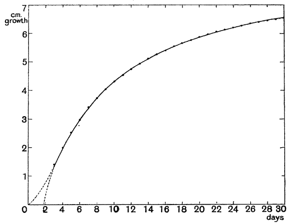
have been an intervening “latent period,” during which no growth occurred, between the time of injury and the first measurement of regenerative growth;
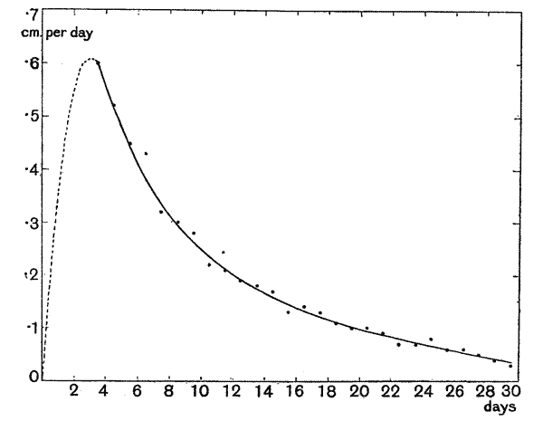
or, for all we yet know, regeneration may have begun at once, but with a velocity much less than that which it afterwards attained. This apparently trifling difference would correspond to a very great difference in the nature of the phenomenon, and would lead to a very striking difference in the curve which we have next to draw.
The curve already drawn (Fig. 35) illustrates, as we have seen, the relation of length to time, i.e. L ⁄ T = V. The second (Fig. 36) represents the rate of change of velocity; it sets V against T;
| Days | Total increment |
Daily increment |
Logs of do. |
|---|---|---|---|
| 1 | — | — | — |
| 2 | — | — | — |
| 3 | 1·40 | ·60 | 1·78 |
| 4 | 2·00 | ·52 | 1·72 |
| 5 | 2·52 | ·45 | 1·65 |
| 6 | 2·97 | ·43 | 1·63 |
| 7 | 3·40 | ·32 | 1·51 |
| 8 | 3·72 | ·30 | 1·48 |
| 9 | 4·02 | ·28 | 1·45 |
| 10 | 4·30 | ·22 | 1·34 |
| 11 | 4·52 | ·21 | 1·32 |
| 12 | 4·73 | ·19 | 1·28 |
| 13 | 4·92 | ·18 | 1·26 |
| 14 | 5·10 | ·17 | 1·23 |
| 15 | 5·27 | ·13 | 1·11 |
| 16 | 5·40 | ·14 | 1·15 |
| 17 | 5·54 | ·13 | 1·11 |
| 18 | 5·67 | ·11 | 1·04 |
| 19 | 5·78 | ·10 | 1·00 |
| 20 | 5·88 | ·10 | 1·00 |
| 21 | 5·98 | ·09 | ·95 |
| 22 | 6·07 | ·07 | ·85 |
| 23 | 6·14 | ·07 | ·84 |
| 24 | 6·21 | ·08 | ·90 |
| 25 | 6·29 | ·06 | ·78 |
| 26 | 6·35 | ·06 | ·78 |
| 27 | 6·41 | ·05 | ·70 |
| 28 | 6·46 | ·04 | ·60 |
| 29 | 6·50 | ·03 | ·48 |
| 30 | 6·53 | — | — |
and V ⁄ T or L ⁄ T2 , represents (as we have learned) the acceleration of growth, this being simply the “differential coefficient,” the first derivative of the former curve.
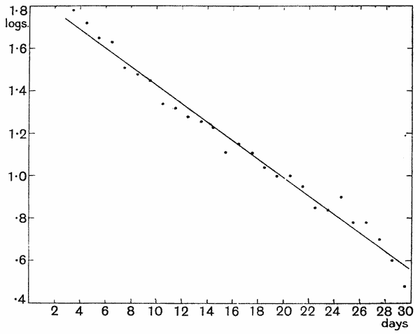
Now, plotting this acceleration curve from the date of the first measurement made three days after the amputation of the tail (Fig. 36), we see that it has no point of inflection, but falls steadily, only more and more slowly, till at last it comes down nearly to the base-line. The velocities of growth are continually diminishing. As regards the missing portion at the beginning of the curve, we cannot be sure whether it bent round and came down to zero, or whether, as in our ordinary acceleration curves of growth from birth onwards, it started from a maximum. The former is, in this case, obviously the more probable, but we cannot be sure.
As regards that large portion of the curve which we are acquainted with, we see that it resembles the curve known as a rectangular hyperbola, which is the form assumed when two variables (in this case V and T) vary inversely as one another. If we take the logarithms of the velocities (as given in the table) and plot them against time (Fig. 37), we see that they fall, approximately, into a straight line; and if this curve be plotted on the {143} proper scale we shall find that the angle which it makes with the base is about 25°, of which the tangent is ·46, or in round numbers ½.
Had the angle been 45° (tan 45° = 1), the curve would have been actually a rectangular hyperbola, with V T = constant. As it is, we may assume, provisionally, that it belongs to the same family of curves, so that Vm Tn , or Vm ⁄ n T, or V Tn ⁄ m , are all severally constant. In other words, the velocity varies inversely as some power of the time, or vice versa. And in this particular case, the equation V T2 = constant, holds very nearly true; that is to say the velocity varies, or tends to vary, inversely as the square of the time. If some general law akin to this could be established as a general law, or even as a common rule, it would be of great importance.
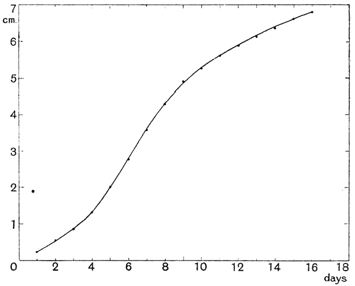
But though neither in this case nor in any other can the minute increments of growth during the first few hours, or the first couple of days, after injury, be directly measured, yet the most important point is quite capable of solution. What the foregoing curve leaves us in ignorance of, is simply whether growth starts at zero, with zero velocity, and works up quickly to a maximum velocity from which it afterwards gradually falls away; or whether after a latent period, it begins, so to speak, in full force. The answer {144} to this question-depends on whether, in the days following the first actual measurement, we can or cannot detect a daily increment in velocity, before that velocity begins its normal course of diminution. Now this preliminary ascent to a maximum, or point of inflection of the curve, though not shewn in the above-quoted experiment, has been often observed: as for instance, in another similar experiment by the author of the former, the tadpoles being in this case of larger size (average 49·1 mm.)188.
| Days | 3 | 5 | 7 | 10 | 12 | 14 | 17 | 24 | 28 | 31 |
| Increment | 0·86 | 2·15 | 3·66 | 5·20 | 5·95 | 6·38 | 7·10 | 7·60 | 8·20 | 8·40 |
Or, by graphic interpolation,
| Days | Total increment |
Daily do. |
|---|---|---|
| 1 | ·23 | ·23 |
| 2 | ·53 | ·30 |
| 3 | ·86 | ·33 |
| 4 | 1·30 | ·44 |
| 5 | 2·00 | ·70 |
| 6 | 2·78 | ·78 |
| 7 | 3·58 | ·80 |
| 8 | 4·30 | ·72 |
| 9 | 4·90 | ·60 |
| 10 | 5·29 | ·39 |
| 11 | 5·62 | ·33 |
| 12 | 5·90 | ·28 |
| 13 | 6·13 | ·23 |
| 14 | 6·38 | ·25 |
| 15 | 6·61 | ·23 |
| 16 | 6·81 | ·20 |
| 17 | 7·00 | ·19 etc. |
The acceleration curve is drawn in Fig. 39.
Here we have just what we lacked in the former case, namely a visible point of inflection in the curve about the seventh day (Figs. 38, 39), whose existence is confirmed by successive observations on the 3rd, 5th, 7th and 10th days, and which justifies to some extent our extrapolation for the otherwise unknown period up to and ending with the third day; but even here there is a short space near the very beginning during which we are not quite sure of the precise slope of the curve.
We have now learned that, according to these experiments, with which many others are in substantial agreement, the rate of growth in the regenerative process is as follows. After a very short latent period, not yet actually proved but whose existence is highly probable, growth commences with a velocity which very {145} rapidly increases to a maximum. The curve quickly,—almost suddenly,—changes its direction, as the velocity begins to fall; and the rate of fall, that is, the negative acceleration, proceeds at a slower and slower rate, which rate varies inversely as some power of the time, and is found in both of the above-quoted experiments to be very approximately as 1 ⁄ T2 . But it is obvious that the value which we have found for the latter portion of the curve (however closely it be conformed to) is only an empirical value; it has only a temporary usefulness, and must in time give place to a formula which shall represent the entire phenomenon, from start to finish.
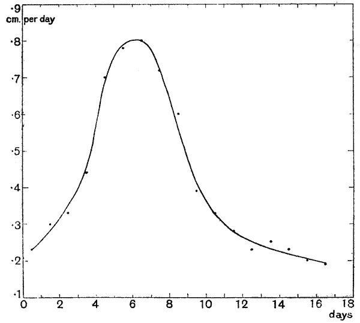
While the curve of regenerative growth is apparently different from the curve of ordinary growth as usually drawn (and while this apparent difference has been commented on and treated as valid by certain writers) we are now in a position to see that it only looks different because we are able to study it, if not from the beginning, at least very nearly so: while an ordinary curve of growth, as it is usually presented to us, is one which dates, not {146} from the beginning of growth, but from the comparatively late, and unimportant, and even fallacious epoch of birth. A complete curve of growth, starting from zero, has the same essential characteristics as the regeneration curve.
Indeed the more we consider the phenomenon of regeneration, the more plainly does it shew itself to us as but a particular case of the general phenomenon of growth189, following the same lines, obeying the same laws, and merely started into activity by the special stimulus, direct or indirect, caused by the infliction of a wound. Neither more nor less than in other problems of physiology are we called upon, in the case of regeneration, to indulge in metaphysical speculation, or to dwell upon the beneficent purpose which seemingly underlies this process of healing and restoration.
It is a very general rule, though apparently not a universal one, that regeneration tends to fall somewhat short of a complete restoration of the lost part; a certain percentage only of the lost tissues is restored. This fact was well known to some of those old investigators, who, like the Abbé Trembley and like Voltaire, found a fascination in the study of artificial injury and the regeneration which followed it. Sir John Graham Dalyell, for instance, says, in the course of an admirable paragraph on regeneration190: “The reproductive faculty ... is not confined to one portion, but may extend over many; and it may ensue even in relation to the regenerated portion more than once. Nevertheless, the faculty gradually weakens, so that in general every successive regeneration is smaller and more imperfect than the organisation preceding it; and at length it is exhausted.”
In certain minute animals, such as the Infusoria, in which the capacity for “regeneration” is so great that the entire animal may be restored from the merest fragment, it becomes of great interest to discover whether there be some definite size at which the fragment ceases to display this power. This question has {147} been studied by Lillie191, who found that in Stentor, while still smaller fragments were capable of surviving for days, the smallest portions capable of regeneration were of a size equal to a sphere of about 80 µ in diameter, that is to say of a volume equal to about one twenty-seventh of the average entire animal. He arrives at the remarkable conclusion that for this, and for all other species of animals, there is a “minimal organisation mass,” that is to say a “minimal mass of definite size consisting of nucleus and cytoplasm within which the organisation of the species can just find its latent expression.” And in like manner, Boveri192 has shewn that the fragment of a sea-urchin’s egg capable of growing up into a new embryo, and so discharging the complete functions of an entire and uninjured ovum, reaches its limit at about one-twentieth of the original egg,—other writers having found a limit at about one-fourth. These magnitudes, small as they are, represent objects easily visible under a low power of the microscope, and so stand in a very different category to the minimal magnitudes in which life itself can be manifested, and which we have discussed in chapter II.
A number of phenomena connected with the linear rate of regeneration are illustrated and epitomised in the accompanying diagram (Fig. 40), which I have constructed from certain data given by Ellis in a paper on the relation of the amount of tail regenerated to the amount removed, in Tadpoles. These data are summarised in the next Table. The tadpoles were all very much of a size, about 40 mm.; the average length of tail was very near to 26 mm., or 65 per cent. of the whole body-length; and in four series of experiments about 10, 20, 40 and 60 per cent. of the tail were severally removed. The amount regenerated in successive intervals of three days is shewn in our table. By plotting the actual amounts regenerated against these three-day intervals of time, we may interpolate values for the time taken to regenerate definite percentage amounts, 5 per cent., 10 per cent., etc. of the {148}
| Series† | Body length mm. | Tail length mm. | Amount removed mm. | Per cent. of tail removed | % amount regenerated in days | ||||||
|---|---|---|---|---|---|---|---|---|---|---|---|
| 3 | 6 | 9 | 12 | 15 | 18 | 32 | |||||
| O | 39·575 | 25·895 | 3·2 | 12·36 | 13 | 31 | 44 | 44 | 44 | 44 | 44 |
| P | 40·21 | 26·13 | 5·28 | 20·20 | 10 | 29 | 40 | 44 | 44 | 44 | 44 |
| R | 39·86 | 25·70 | 10·4 | 40·50 | 6 | 20 | 31 | 40 | 48 | 48 | 48 |
| S | 40·34 | 26·11 | 14·8 | 56·7 | 0 | 16 | 33 | 39 | 45 | 48 | 48 |
† Each series gives the mean of 20 experiments.
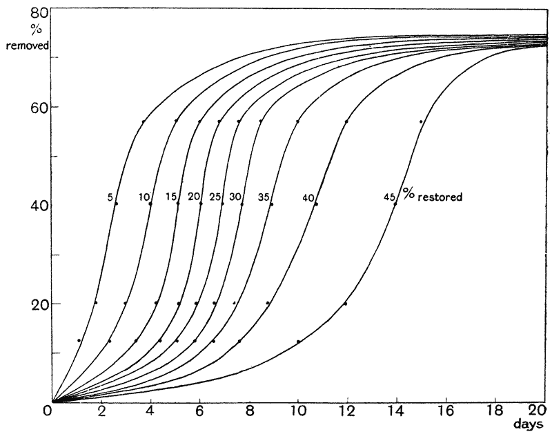
amount removed; and my diagram is constructed from the four sets of values thus obtained, that is to say from the four sets of experiments which differed from one another in the amount of tail amputated. To these we have to add the general result of a fifth series of experiments, which shewed that when as much as 75 per cent. of the tail was cut off, no regeneration took place at all, but the animal presently died. In our diagram, then, each {149} curve indicates the time taken to regenerate n per cent. of the amount removed. All the curves converge towards infinity, when the amount removed (as shewn by the ordinate) approaches 75 per cent.; and all of the curves start from zero, for nothing is regenerated where nothing had been removed. Each curve approximates in form to a cubic parabola.
The amount regenerated varies also with the age of the tadpole and with other factors, such as temperature; in other words, for any given age, or size, of tadpole and also for various specific temperatures, a similar diagram might be constructed.
The power of reproducing, or regenerating, a lost limb is particularly well developed in arthropod animals, and is sometimes accompanied by remarkable modification of the form of the regenerated limb. A case in point, which has attracted much attention, occurs in connection with the claws of certain Crustacea193.
In many Crustacea we have an asymmetry of the great claws, one being larger than the other and also more or less different in form. For instance, in the common lobster, one claw, the larger of the two, is provided with a few great “crushing” teeth, while the smaller claw has more numerous teeth, small and serrated. Though Aristotle thought otherwise, it appears that the crushing-claw may be on the right or left side, indifferently; whether it be on one or the other is a problem of “chance.” It is otherwise in many other Crustacea, where the larger and more powerful claw is always left or right, as the case may be, according to the species: where, in other words, the “probability” of the large or the small claw being left or being right is tantamount to certainty194.
The one claw is the larger because it has grown the faster; {150} it has a higher “coefficient of growth,” and accordingly, as age advances, the disproportion between the two claws becomes more and more evident. Moreover, we must assume that the characteristic form of the claw is a “function” of its magnitude; the knobbiness is a phenomenon coincident with growth, and we never, under any circumstances, find the smaller claw with big crushing teeth and the big claw with little serrated ones. There are many other somewhat similar cases where size and form are manifestly correlated, and we have already seen, to some extent, that the phenomenon of growth is accompanied by certain ratios of velocity that lead inevitably to changes of form. Meanwhile, then, we must simply assume that the essential difference between the two claws is one of magnitude, with which a certain differentiation of form is inseparably associated.
If we amputate a claw, or if, as often happens, the crab “casts it off,” it undergoes a process of regeneration,—it grows anew, and evidently does so with an accelerated velocity, which acceleration will cease when equilibrium of the parts is once more attained: the accelerated velocity being a case in point to illustrate that vis revulsionis of Haller, to which we have already referred.
With the help of this principle, Przibram accounts for certain curious phenomena which accompany the process of regeneration. As his experiments and those of Morgan shew, if the large or knobby claw (A) be removed, there are certain cases, e.g. the common lobster, where it is directly regenerated. In other cases, e.g. Alpheus195, the other claw (B) assumes the size and form of that which was amputated, while the latter regenerates itself in the form of the other and weaker one; A and B have apparently changed places. In a third case, as in the crabs, the A-claw regenerates itself as a small or B-claw, but the B-claw remains for a time unaltered, though slowly and in the course of repeated moults it later on assumes the large and heavily toothed A-form.
Much has been written on this phenomenon, but in essence it is very simple. It depends upon the respective rates of growth, upon a ratio between the rate of regeneration and the rate of growth of the uninjured limb: complicated a little, however, by {151} the possibility of the uninjured limb growing all the faster for a time after the animal has been relieved of the other. From the time of amputation, say of A, A begins to grow from zero, with a high “regenerative” velocity; while B, starting from a definite magnitude, continues to increase, with its normal or perhaps somewhat accelerated velocity. The ratio between the two velocities of growth will determine whether, by a given time, A has equalled, outstripped, or still fallen short of the magnitude of B.
That this is the gist of the whole problem is confirmed (if confirmation be necessary) by certain experiments of Wilson’s. It is known that by section of the nerve to a crab’s claw, its growth is retarded, and as the general growth of the animal proceeds the claw comes to appear stunted or dwarfed. Now in such a case as that of Alpheus, we have seen that the rate of regenerative growth in an amputated large claw fails to let it reach or overtake the magnitude of the growing little claw: which latter, in short, now appears as the big one. But if at the same time as we amputate the big claw we also sever the nerve to the lesser one, we so far slow down the latter’s growth that the other is able to make up to it, and in this case the two claws continue to grow at approximately equal rates, or in other words continue of coequal size.
The phenomenon of regeneration goes some way towards helping us to comprehend the phenomenon of “multiplication by fission,” as it is exemplified at least in its simpler cases in many worms and worm-like animals. For physical reasons which we shall have to study in another chapter, there is a natural tendency for any tube, if it have the properties of a fluid or semi-fluid substance, to break up into segments after it comes to a certain length; and nothing can prevent its doing so, except the presence of some controlling force, such for instance as may be due to the pressure of some external support, or some superficial thickening or other intrinsic rigidity of its own substance. If we add to this natural tendency towards fission of a cylindrical or tubular worm, the ordinary phenomenon of regeneration, we have all that is essentially implied in “reproduction by fission.” And in so far {152} as the process rests upon a physical principle, or natural tendency, we may account for its occurrence in a great variety of animals, zoologically dissimilar; and also for its presence here and absence there, in forms which, though materially different in a physical sense, are zoologically speaking very closely allied.
But the phenomena of regeneration, like all the other phenomena of growth, soon carry us far afield, and we must draw this brief discussion to a close.
For the main features which appear to be common to all curves of growth we may hope to have, some day, a physical explanation. In particular we should like to know the meaning of that point of inflection, or abrupt change from an increasing to a decreasing velocity of growth which all our curves, and especially our acceleration curves, demonstrate the existence of, provided only that they include the initial stages of the whole phenomenon: just as we should also like to have a full physical or physiological explanation of the gradually diminishing velocity of growth which follows, and which (though subject to temporary interruption or abeyance) is on the whole characteristic of growth in all cases whatsoever. In short, the characteristic form of the curve of growth in length (or any other linear dimension) is a phenomenon which we are at present unable to explain, but which presents us with a definite and attractive problem for future solution. It would seem evident that the abrupt change in velocity must be due, either to a change in that pressure outwards from within, by which the “forces of growth” make themselves manifest, or to a change in the resistances against which they act, that is to say the tension of the surface; and this latter force we do not by any means limit to “surface-tension” proper, but may extend to the development of a more or less resistant membrane or “skin,” or even to the resistance of fibres or other histological elements, binding the boundary layers to the parts within. I take it that the sudden arrest of velocity is much more likely to be due to a sudden increase of resistance than to a sudden diminution of internal energies: in other words, I suspect that it is coincident with some notable event of histological differentiation, such as {153} the rapid formation of a comparatively firm skin; and that the dwindling of velocities, or the negative acceleration, which follows, is the resultant or composite effect of waning forces of growth on the one hand, and increasing superficial resistance on the other. This is as much as to say that growth, while its own energy tends to increase, leads also, after a while, to the establishment of resistances which check its own further increase.
Our knowledge of the whole complex phenomenon of growth is so scanty that it may seem rash to advance even this tentative suggestion. But yet there are one or two known facts which seem to bear upon the question, and to indicate at least the manner in which a varying resistance to expansion may affect the velocity of growth. For instance, it has been shewn by Frazee196 that electrical stimulation of tadpoles, with small current density and low voltage, increases the rate of regenerative growth. As just such an electrification would tend to lower the surface-tension, and accordingly decrease the external resistance, the experiment would seem to support, in some slight degree, the suggestion which I have made.
Delage197 has lately made use of the principle of specific rate of growth, in considering the question of heredity itself. We know that the chromatin of the fertilised egg comes from the male and female parent alike, in equal or nearly equal shares; we know that the initial chromatin, so contributed, multiplies many thousand-fold, to supply the chromatin for every cell of the offspring’s body; and it has, therefore, a high “coefficient of growth.” If we admit, with Van Beneden and others, that the initial contributions of male and female chromatin continue to be transmitted to the succeeding generations of cells, we may then conceive these chromatins to retain each its own coefficient of growth; and if these differed ever so little, a gradual preponderance of one or other would make itself felt in time, and might conceivably explain the preponderating influence of one parent or the other upon the characters of the offspring. Indeed O. Hertwig is said (according to Delage’s interpretation) to have actually shewn that we can artificially modify the rate of growth of one or other chromatin, and so increase or diminish the influence of the maternal or paternal heredity. This theory of Delage’s has its fascination, but it calls for somewhat large assumptions; and in particular, it seems (like so many other theories relating to the chromosomes) to rest far too much upon material elements, rather than on the imponderable dynamic factors of the cell. {154}
We may summarise, as follows, the main results of the foregoing discussion:
(1) Except in certain minute organisms and minute parts of organisms, whose form is due to the direct action of molecular forces, we may look upon the form of the organism as a “function of growth,” or a direct expression of a rate of growth which varies according to its different directions.
(2) Rate of growth is subject to definite laws, and the velocities in different directions tend to maintain a ratio which is more or less constant for each specific organism; and to this regularity is due the fact that the form of the organism is in general regular and constant.
(3) Nevertheless, the ratio of velocities in different directions is not absolutely constant, but tends to alter or fluctuate in a regular way; and to these progressive changes are due the changes of form which accompany “development,” and the slower changes of form which continue perceptibly in after life.
(4) The rate of growth is a function of the age of the organism, it has a maximum somewhat early in life, after which epoch of maximum it slowly declines.
(5) The rate of growth is directly affected by temperature, and by other physical conditions.
(6) It is markedly affected, in the way of acceleration or retardation, at certain physiological epochs of life, such as birth, puberty, or metamorphosis.
(7) Under certain circumstances, growth may be negative, the organism growing smaller: and such negative growth is a common accompaniment of metamorphosis, and a frequent accompaniment of old age.
(8) The phenomenon of regeneration is associated with a large temporary increase in the rate of growth (or “acceleration” of growth) of the injured surface; in other respects, regenerative growth is similar to ordinary growth in all its essential phenomena.
In this discussion of growth, we have left out of account a vast number of processes, or phenomena, by which, in the physiological mechanism of the body, growth is effected and controlled. We have dealt with growth in its relation to magnitude, and to {155} that relativity of magnitudes which constitutes form; and so we have studied it as a phenomenon which stands at the beginning of a morphological, rather than at the end of a physiological enquiry. Under these restrictions, we have treated it as far as possible, or in such fashion as our present knowledge permits, on strictly physical lines.
In all its aspects, and not least in its relation to form, the growth of organisms has many analogies, some close and some perhaps more remote, among inanimate things. As the waves grow when the winds strive with the other forces which govern the movements of the surface of the sea, as the heap grows when we pour corn out of a sack, as the crystal grows when from the surrounding solution the proper molecules fall into their appropriate places: so in all these cases, very much as in the organism itself, is growth accompanied by change of form, and by a development of definite shapes and contours. And in these cases (as in all other mechanical phenomena), we are led to equate our various magnitudes with time, and so to recognise that growth is essentially a question of rate, or of velocity.
The differences of form, and changes of form, which are brought about by varying rates (or “laws”) of growth, are essentially the same phenomenon whether they be, so to speak, episodes in the life-history of the individual, or manifest themselves as the normal and distinctive characteristics of what we call separate species of the race. From one form, or ratio of magnitude, to another there is but one straight and direct road of transformation, be the journey taken fast or slow; and if the transformation take place at all, it will in all likelihood proceed in the self-same way, whether it occur within the life-time of an individual or during the long ancestral history of a race. No small part of what is known as Wolff’s or von Baer’s law, that the individual organism tends to pass through the phases characteristic of its ancestors, or that the life-history of the individual tends to recapitulate the ancestral history of its race, lies wrapped up in this simple account of the relation between rate of growth and form.
But enough of this discussion. Let us leave for a while the subject of the growth of the organism, and attempt to study the conformation, within and without, of the individual cell.
In the early days of the cell-theory, more than seventy years ago, Goodsir was wont to speak of cells as “centres of growth” or “centres of nutrition,” and to consider them as essentially “centres of force.” He looked forward to a time when the forces connected with the cell should be particularly investigated: when, that is to say, minute anatomy should be studied in its dynamical aspect. “When this branch of enquiry,” he says “shall have been opened up, we shall expect to have a science of organic forces, having direct relation to anatomy, the science of organic forms198.” And likewise, long afterwards, Giard contemplated a science of morphodynamique,—but still looked upon it as forming so guarded and hidden a “territoire scientifique, que la plupart des naturalistes de nos jours ne le verront que comme Moïse vit la terre promise, seulement de loin et sans pouvoir y entrer199.”
To the external forms of cells, and to the forces which produce and modify these forms, we shall pay attention in a later chapter. But there are forms and configurations of matter within the cell, which also deserve to be studied with due regard to the forces, known or unknown, of whose resultant they are the visible expression.
In the long interval since Goodsir’s day, the visible structure, the conformation and configuration, of the cell, has been studied far more abundantly than the purely dynamic problems that are associated therewith. The overwhelming progress of microscopic observation has multiplied our knowledge of cellular and intracellular structure; and to the multitude of visible structures it {157} has been often easier to attribute virtues than to ascribe intelligible functions or modes of action. But here and there nevertheless, throughout the whole literature of the subject, we find recognition of the inevitable fact that dynamical problems lie behind the morphological problems of the cell.
Bütschli pointed out forty years ago, with emphatic clearness, the failure of morphological methods, and the need for physical methods, if we were to penetrate deeper into the essential nature of the cell200. And such men as Loeb and Whitman, Driesch and Roux, and not a few besides, have pursued the same train of thought and similar methods of enquiry.
Whitman201, for instance, puts the case in a nutshell when, in speaking of the so-called “caryokinetic” phenomena of nuclear division, he reminds us that the leading idea in the term “caryokinesis” is motion,—“motion viewed as an exponent of forces residing in, or acting upon, the nucleus. It regards the nucleus as a seat of energy, which displays itself in phenomena of motion202.”
In short it would seem evident that, except in relation to a dynamical investigation, the mere study of cell structure has but little value of its own. That a given cell, an ovum for instance, contains this or that visible substance or structure, germinal vesicle or germinal spot, chromatin or achromatin, chromosomes or centrosomes, obviously gives no explanation of the activities of the cell. And in all such hypotheses as that of “pangenesis,” in all the theories which attribute specific properties to micellae, {158} idioplasts, ids, or other constituent particles of protoplasm or of the cell, we are apt to fall into the error of attributing to matter what is due to energy and is manifested in force: or, more strictly speaking, of attributing to material particles individually what is due to the energy of their collocation.
The tendency is a very natural one, as knowledge of structure increases, to ascribe particular virtues to the material structures themselves, and the error is one into which the disciple is likely to fall, but of which we need not suspect the master-mind. The dynamical aspect of the case was in all probability kept well in view by those who, like Goodsir himself, first attacked the problem of the cell and originated our conceptions of its nature and functions.
But if we speak, as Weismann and others speak, of an “hereditary substance,” a substance which is split off from the parent-body, and which hands on to the new generation the characteristics of the old, we can only justify our mode of speech by the assumption that that particular portion of matter is the essential vehicle of a particular charge or distribution of energy, in which is involved the capability of producing motion, or of doing “work.”
For, as Newton said, to tell us that a thing “is endowed with an occult specific quality, by which it acts and produces manifest effects, is to tell us nothing; but to derive two or three general principles of motion203 from phenomena would be a very great step in philosophy, though the causes of these principles were not yet discovered.” The things which we see in the cell are less important than the actions which we recognise in the cell; and these latter we must especially scrutinize, in the hope of discovering how far they may be attributed to the simple and well-known physical forces, and how far they be relevant or irrelevant to the phenomena which we associate with, and deem essential to, the manifestation of life. It may be that in this way we shall in time draw nigh to the recognition of a specific and ultimate residuum. {159}
And lacking, as we still do lack, direct knowledge of the actual forces inherent in the cell, we may yet learn something of their distribution, if not also of their nature, from the outward and inward configuration of the cell, and from the changes taking place in this configuration; that is to say from the movements of matter, the kinetic phenomena, which the forces in action set up.
The fact that the germ-cell develops into a very complex structure, is no absolute proof that the cell itself is structurally a very complicated mechanism: nor yet, though this is somewhat less obvious, is it sufficient to prove that the forces at work, or latent, within it are especially numerous and complex. If we blow into a bowl of soapsuds and raise a great mass of many-hued and variously shaped bubbles, if we explode a rocket and watch the regular and beautiful configuration of its falling streamers, if we consider the wonders of a limestone cavern which a filtering stream has filled with stalactites, we soon perceive that in all these cases we have begun with an initial system of very slight complexity, whose structure in no way foreshadowed the result, and whose comparatively simple intrinsic forces only play their part by complex interaction with the equally simple forces of the surrounding medium. In an earlier age, men sought for the visible embryo, even for the homunculus, within the reproductive cells; and to this day, we scrutinize these cells for visible structure, unable to free ourselves from that old doctrine of “pre-formation204.”
Moreover, the microscope seemed to substantiate the idea (which we may trace back to Leibniz205 and to Hobbes206), that there is no limit to the mechanical complexity which we may postulate in an organism, and no limit, therefore, to the hypotheses which we may rest thereon.
But no microscopical examination of a stick of sealing-wax, no study of the material of which it is composed, can enlighten {160} us as to its electrical manifestations or properties. Matter of itself has no power to do, to make, or to become: it is in energy that all these potentialities reside, energy invisibly associated with the material system, and in interaction with the energies of the surrounding universe.
That “function presupposes structure” has been declared an accepted axiom of biology. Who it was that so formulated the aphorism I do not know; but as regards the structure of the cell it harks back to Brücke, with whose demand for a mechanism, or organisation, within the cell histologists have ever since been attempting to comply207. But unless we mean to include thereby invisible, and merely chemical or molecular, structure, we come at once on dangerous ground. For we have seen, in a former chapter, that some minute “organisms” are already known of such all but infinitesimal magnitudes that everything which the morphologist is accustomed to conceive as “structure” has become physically impossible; and moreover recent research tends generally to reduce, rather than to extend, our conceptions of the visible structure necessarily inherent in living protoplasm. The microscopic structure which, in the last resort or in the simplest cases, it seems to shew, is that of a more or less viscous colloid, or rather mixture of colloids, and nothing more. Now, as Clerk Maxwell puts it, in discussing this very problem, “one material system can differ from another only in the configuration and motion which it has at a given instant208.” If we cannot assume differences in structure, we must assume differences in motion, that is to say, in energy. And if we cannot do this, then indeed we are thrown back upon modes of reasoning unauthorised in physical science, and shall find ourselves constrained to assume, or to “admit, that the properties of a germ are not those of a purely material system.” {161}
But we are by no means necessarily in this dilemma. For though we come perilously near to it when we contemplate the lowest orders of magnitude to which life has been attributed, yet in the case of the ordinary cell, or ordinary egg or germ which is going to develop into a complex organism, if we have no reason to assume or to believe that it comprises an intricate “mechanism,” we may be quite sure, both on direct and indirect evidence, that, like the powder in our rocket, it is very heterogeneous in its structure. It is a mixture of substances of various kinds, more or less fluid, more or less mobile, influenced in various ways by chemical, electrical, osmotic, and other forces, and in their admixture separated by a multitude of surfaces, or boundaries, at which these, or certain of these forces are made manifest.
Indeed, such an arrangement as this is already enough to constitute a “mechanism”; for we must be very careful not to let our physical or physiological concept of mechanism be narrowed to an interpretation of the term derived from the delicate and complicated contrivances of human skill. From the physical point of view, we understand by a “mechanism” whatsoever checks or controls, and guides into determinate paths, the workings of energy; in other words, whatsoever leads in the degradation of energy to its manifestation in some determinate form of work, at a stage short of that ultimate degradation which lapses in uniformly diffused heat. This, as Warburg has well explained, is the general effect or function of the physiological machine, and in particular of that part of it which we call “cell-structure209.” The normal muscle-cell is something which turns energy, derived from oxidation, into work; it is a mechanism which arrests and utilises the chemical energy of oxidation in its downward course; but the same cell when injured or disintegrated, loses its “usefulness,” and sets free a greatly increased proportion of its energy in the form of heat.
But very great and wonderful things are done after this manner by means of a mechanism (whether natural or artificial) of extreme simplicity. A pool of water, by virtue of its surface, {162} is an admirable mechanism for the making of waves; with a lump of ice in it, it becomes an efficient and self-contained mechanism for the making of currents. The great cosmic mechanisms are stupendous in their simplicity; and, in point of fact, every great or little aggregate of heterogeneous matter (not identical in “phase”) involves, ipso facto, the essentials of a mechanism. Even a non-living colloid, from its intrinsic heterogeneity, is in this sense a mechanism, and one in which energy is manifested in the movement and ceaseless rearrangement of the constituent particles. For this reason Graham (if I remember rightly) speaks somewhere or other of the colloid state as “the dynamic state of matter”; or in the same philosopher’s phrase (of which Mr Hardy210 has lately reminded us), it possesses “energia211.”
Let us turn then to consider, briefly and diagrammatically, the structure of the cell, a fertilised germ-cell or ovum for instance, not in any vain attempt to correlate this structure with the structure or properties of the resulting and yet distant organism; but merely to see how far, by the study of its form and its changing internal configuration, we may throw light on certain forces which are for the time being at work within it.
We may say at once that we can scarcely hope to learn more of these forces, in the first instance, than a few facts regarding their direction and magnitude; the nature and specific identity of the force or forces is a very different matter. This latter problem is likely to be very difficult of elucidation, for the reason, among others, that very different forces are often very much alike in their outward and visible manifestations. So it has come to pass that we have a multitude of discordant hypotheses as to the nature of the forces acting within the cell, and producing, in cell division, the “caryokinetic” figures of which we are about to speak. One student may, like Rhumbler, choose to account for them by an hypothesis of mechanical traction, acting on a reticular web of protoplasm212; another, like Leduc, may shew us how in {163} many of their most striking features they may be admirably simulated by the diffusion of salts in a colloid medium; others again, like Gallardo213 and Hartog, and Rhumbler (in his earlier papers)214, insist on their resemblance to the phenomena of electricity and magnetism215; while Hartog believes that the force in question is only analogous to these, and has a specific identity of its own216. All these conflicting views are of secondary importance, so long as we seek only to account for certain configurations which reveal the direction, rather than the nature, of a force. One and the same system of lines of force may appear in a field of magnetic or of electrical energy, of the osmotic energy of diffusion, of the gravitational energy of a flowing stream. In short, we may expect to learn something of the pure or abstract dynamics, long before we can deal with the special physics of the cell. For indeed (as Maillard has suggested), just as uniform expansion about a single centre, to whatsoever physical cause it may be due will lead to the configuration of a sphere, so will any two centres or foci of potential (of whatsoever kind) lead to the configurations with which Faraday made us familiar under the name of “lines of force217”; and this is as much as to say that the phenomenon, {164} though physical in the concrete, is in the abstract purely mathematical, and in its very essence is neither more nor less than a property of three-dimensional space.
But as a matter of fact, in this instance, that is to say in trying to explain the leading phenomena of the caryokinetic division of the cell, we shall soon perceive that any explanation which is based, like Rhumbler’s, on mere mechanical traction, is obviously inadequate, and we shall find ourselves limited to the hypothesis of some polarised and polarising force, such as we deal with, for instance, in the phenomena of magnetism or electricity.
Let us speak first of the cell itself, as it appears in a state of rest, and let us proceed afterwards to study the more active phenomena which accompany its division.
Our typical cell is a spherical body; that is to say, the uniform surface-tension at its boundary is balanced by the outward resistance of uniform forces within. But at times the surface-tension may be a fluctuating quantity, as when it produces the rhythmical contractions or “Ransom’s waves” on the surface of a trout’s egg; or again, while the egg is in contact with other bodies, the surface-tension may be locally unequal and variable, giving rise to an amoeboid figure, as in the egg of Hydra218.
Within the ovum is a nucleus or germinal vesicle, also spherical, and consisting as a rule of portions of “chromatin,” aggregated together within a more fluid drop. The fact has often been commented upon that, in cells generally, there is no correlation of form (though there apparently is of size) between the nucleus and the “cytoplasm,” or main body of the cell. So Whitman219 remarks that “except during the process of division the nucleus seldom departs from its typical spherical form. It divides and sub-divides, ever returning to the same round or oval form .... How different with the cell. It preserves the spherical form as rarely as the nucleus departs from it. Variation in form marks the beginning and the end of every important chapter in its {165} history.” On simple dynamical grounds, the contrast is easily explained. So long as the fluid substance of the nucleus is qualitatively different from, and incapable of mixing with, the fluid or semi-fluid protoplasm which surrounds it, we shall expect it to be, as it almost always is, of spherical form. For, on the one hand, it is bounded by a liquid film, whose surface-tension is uniform; and on the other, it is immersed in a medium which transmits on all sides a uniform fluid pressure220. For a similar reason the contractile vacuole of a Protozoon is spherical in form: it is just a “drop” of fluid, bounded by a uniform surface-tension and through whose boundary-film diffusion is taking place. But here, owning to the small difference between the fluid constituting, and that surrounding, the drop, the surface-tension equilibrium is unstable; it is apt to vanish, and the rounded outline of the drop, like a burst bubble, disappears in a moment221. The case of the spherical nucleus is closely akin to the spherical form of the yolk within the bird’s egg222. But if the substance of the cell acquire a greater solidity, as for instance in a muscle {166} cell, or by reason of mucous accumulations in an epithelium cell, then the laws of fluid pressure no longer apply, the external pressure on the nucleus tends to become unsymmetrical, and its shape is modified accordingly. “Amoeboid” movements may be set up in the nucleus by anything which disturbs the symmetry of its own surface-tension. And the cases, as in many Rhizopods, where “nuclear material” is scattered in small portions throughout the cell instead of being aggregated in a single nucleus, are probably capable of very simple explanation by supposing that the “phase difference” (as the chemists say) between the nuclear and the protoplasmic substance is comparatively slight, and the surface-tension which tends to keep them separate is correspondingly small223.
It has been shewn that ordinary nuclei, isolated in a living or fresh state, easily flow together; and this fact is enough to suggest that they are aggregations of a particular substance rather than bodies deserving the name of particular organs. It is by reason of the same tendency to confluence or aggregation of particles that the ordinary nucleus is itself formed, until the imposition of a new force leads to its disruption.
Apart from that invisible or ultra-microscopic heterogeneity which is inseparable from our notion of a “colloid,” there is a visible heterogeneity of structure within both the nucleus and the outer protoplasm. The former, for instance, contains a rounded nucleolus or “germinal spot,” certain conspicuous granules or strands of the peculiar substance called chromatin, and a coarse meshwork of a protoplasmic material known as “linin” or achromatin; the outer protoplasm, or cytoplasm, is generally believed to consist throughout of a sponge-work, or rather alveolar meshwork, of more and less fluid substances; and lastly, there are generally to be detected one or more very minute bodies, usually in the cytoplasm, sometimes within the nucleus, known as the centrosome or centrosomes.
The morphologist is accustomed to speak of a “polarity” of {167} the cell, meaning thereby a symmetry of visible structure about a particular axis. For instance, whenever we can recognise in a cell both a nucleus and a centrosome, we may consider a line drawn through the two as the morphological axis of polarity; in an epithelium cell, it is obvious that the cell is morphologically symmetrical about a median axis passing from its free surface to its attached base. Again, by an extension of the term “polarity,” as is customary in dynamics, we may have a “radial” polarity, between centre and periphery; and lastly, we may have several apparently independent centres of polarity within the single cell. Only in cells of quite irregular, or amoeboid form, do we fail to recognise a definite and symmetrical “polarity.” The morphological “polarity” is accompanied by, and is but the outward expression (or part of it) of a true dynamical polarity, or distribution of forces; and the “lines of force” are rendered visible by concatenation of particles of matter, such as come under the influence of the forces in action.
When the lines of force stream inwards from the periphery towards a point in the interior of the cell, the particles susceptible of attraction either crowd towards the surface of the cell, or, when retarded by friction, are seen forming lines or “fibrillae” which radiate outwards from the centre and constitute a so-called “aster.” In the cells of columnar or ciliated epithelium, where the sides of the cell are symmetrically disposed to their neighbours but the free and attached surfaces are very diverse from one another in their external relations, it is these latter surfaces which constitute the opposite poles; and in accordance with the parallel lines of force so set up, we very frequently see parallel lines of granules which have ranged themselves perpendicularly to the free surface of the cell (cf. fig. 97).
A simple manifestation of “polarity” may be well illustrated by the phenomenon of diffusion, where we may conceive, and may automatically reproduce, a “field of force,” with its poles and visible lines of equipotential, very much as in Faraday’s conception of the field of force of a magnetic system. Thus, in one of Leduc’s experiments224, if we spread a layer of salt solution over a level {168} plate of glass, and let fall into the middle of it a drop of indian ink, or of blood, we shall find the coloured particles travelling outwards from the central “pole of concentration” along the lines of diffusive force, and so mapping out for us a “monopolar field” of diffusion: and if we set two such drops side by side, their lines of diffusion will oppose, and repel, one another. Or, instead of the uniform layer of salt solution, we may place at a little distance from one another a grain of salt and a drop of blood, representing two opposite poles: and so obtain a picture of a “bipolar field” of diffusion. In either case, we obtain results closely analogous to the “morphological,” but really dynamical, polarity of the organic cell. But in all probability, the dynamical polarity, or asymmetry of the cell is a very complicated phenomenon: for the obvious reason that, in any system, one asymmetry will tend to beget another. A chemical asymmetry will induce an inequality of surface-tension, which will lead directly to a modification of form; the chemical asymmetry may in turn be due to a process of electrolysis in a polarised electrical field; and again the chemical heterogeneity may be intensified into a chemical “polarity,” by the tendency of certain substances to seek a locus of greater or less surface-energy. We need not attempt to grapple with a subject so complicated, and leading to so many problems which lie beyond the sphere of interest of the morphologist. But yet the morphologist, in his study of the cell, cannot quite evade these important issues; and we shall return to them again when we have dealt somewhat with the form of the cell, and have taken account of some of the simpler phenomena of surface-tension.
We are now ready, and in some measure prepared, to study the numerous and complex phenomena which usually accompany the division of the cell, for instance of the fertilised egg.
Division of the cell is essentially accompanied, and preceded, by a change from radial or monopolar to a definitely bipolar polarity.
In the hitherto quiescent, or apparently quiescent cell, we perceive certain movements, which correspond precisely to what must accompany and result from a “polarisation” of forces within the {169} cell: of forces which, whatever may be their specific nature, at least are capable of polarisation, and of producing consequent attraction or repulsion between charged particles of matter. The opposing forces which were distributed in equilibrium throughout the substance of the cell become focussed at two “centrosomes,” which may or may not be already distinguished as visible portions of matter; in the egg, one of these is always near to, and the other remote from, the “animal pole” of the egg, which pole is visibly as well as chemically different from the other, and is the region in which the more rapid and conspicuous developmental changes will presently begin. Between the two centrosomes, a spindle-shaped
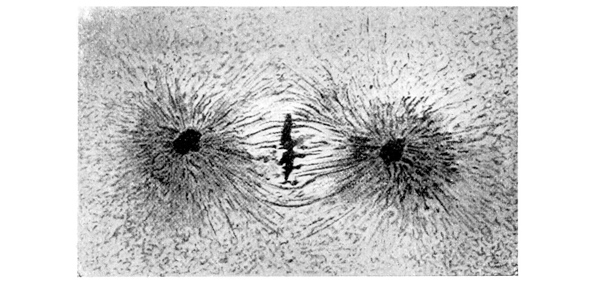
figure appears, whose striking resemblance to the lines of force made visible by iron-filings between the poles of a magnet, was at once recognised by Hermann Fol, when in 1873 he witnessed for the first time the phenomenon in question. On the farther side of the centrosomes are seen star-like figures, or “asters,” in which we can without difficulty recognise the broken lines of force which run externally to those stronger lines which lie nearer to the polar axis and which constitute the “spindle.” The lines of force are rendered visible or “material,” just as in the experiment of the iron-filings, by the fact that, in the heterogeneous substance of the cell, certain portions of matter are more “permeable” to the acting force than the rest, become themselves polarised after the {170} fashion of a magnetic or “paramagnetic” body, arrange themselves in an orderly way between the two poles of the field of force, cling to one another as it were in threads225, and are only prevented by the friction of the surrounding medium from approaching and congregating around the adjacent poles.
As the field of force strengthens, the more will the lines of force be drawn in towards the interpolar axis, and the less evident will be those remoter lines which constitute the terminal, or extrapolar, asters: a clear space, free from materialised lines of force, may thus tend to be set up on either side of the spindle, the so-called “Bütschli space” of the histologists226. On the other hand, the lines of force constituting the spindle will be less concentrated if they find a path of less resistance at the periphery of the cell: as happens, in our experiment of the iron-filings, when we encircle the field of force with an iron ring. On this principle, the differences observed between cells in which the spindle is well developed and the asters small, and others in which the spindle is weak and the asters enormously developed, can be easily explained by variations in the potential of the field, the large, conspicuous asters being probably correlated with a marked permeability of the surface of the cell.
The visible field of force, though often called the “nuclear spindle,” is formed outside of, but usually near to, the nucleus. Let us look a little more closely into the structure of this body, and into the changes which it presently undergoes.
Within its spherical outline (Fig. 42), it contains an “alveolar” {171} meshwork (often described, from its appearance in optical section, as a “reticulum”), consisting of more solid substances, with more fluid matter filling up the interalveolar meshes. This phenomenon is nothing else than what we call in ordinary language, a “froth” or a “foam.” It is a surface-tension phenomenon, due to the interacting surface-tensions of two intermixed fluids, not very different in density, as they strive to separate. Of precisely the same kind (as Bütschli was the first to shew) are the minute alveolar networks which are to be discerned in the cytoplasm of the cell227, and which we now know to be not inherent in the nature of protoplasm, or of living matter in general, but to be due to various causes, natural as well as artificial. The microscopic honeycomb structure of cast metal under various conditions of cooling, even on a grand scale the columnar structure of basaltic rock, is an example of the same surface-tension phenomenon. {172}
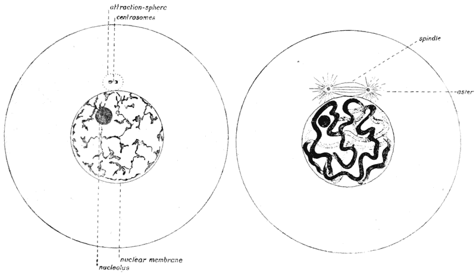
| Fig. 42. | Fig. 43. |
But here we touch the brink of a subject so important that we must not pass it by without a word, and yet so contentious that we must not enter into its details. The question involved is simply whether the great mass of recorded observations and accepted beliefs with regard to the visible structure of protoplasm and of the cell constitute a fair picture of the actual living cell, or be based on appearances which are incident to death itself and to the artificial treatment which the microscopist is accustomed to apply. The great bulk of histological work is done by methods which involve the sudden killing of the cell or organism by strong reagents, the assumption being that death is so rapid that the visible phenomena exhibited during life are retained or “fixed” in our preparations. While this assumption is reasonable and justified as regards the general outward form of small organisms or of individual cells, enough has been done of late years to shew that the case is totally different in the case of the minute internal networks, granules, etc., which represent the alleged structure of protoplasm. For, as Hardy puts it, “It is notorious that the various fixing reagents are coagulants of organic colloids, and that they produce precipitates which have a certain figure or structure, ... and that the figure varies, other things being equal, according to the reagent used.” So it comes to pass that some writers228 have altogether denied the existence in the living cell-protoplasm of a network or alveolar “foam”; others229 have cast doubts on the main tenets of recent histology regarding nuclear structure; and Hardy, discussing the structure of certain gland-cells, declares that “there is no evidence that the structure discoverable in the cell-substance of these cells after fixation has any counterpart in the cell when living.” “A large part of it” he goes on to say “is an artefact. The profound difference in the minute structure of a secretory cell of a mucous gland according to the reagent which is used to fix it would, it seems to me, almost suffice to establish this statement in the absence of other evidence.”
Nevertheless, histological study proceeds, especially on the part of the morphologists, with but little change in theory or in method, in spite of these and many other warnings. That certain visible structures, nucleus, vacuoles, “attraction-spheres” or centrosomes, etc., are actually present in the living cell, we know for certain; and to this class belong the great majority of structures (including the nuclear “spindle” itself) with which we are at present concerned. That many other alleged structures are artificial has also been placed beyond a doubt; but where to draw the dividing line we often do not know230. {173}
The following is a brief epitome of the visible changes undergone by a typical cell, leading up to the act of segmentation, and constituting the phenomenon of mitosis or caryokinetic division. In the egg of a sea-urchin, we see with almost diagrammatic completeness what is set forth here231.
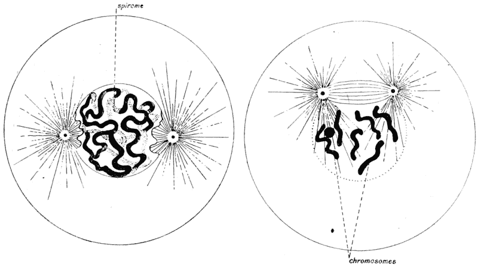
| Fig. 44. | Fig. 45. |
1. The chromatin, which to begin with was distributed in granules on the otherwise achromatic reticulum (Fig. 42), concentrates to form a skein or spireme, which may be a continuous thread from the first (Figs. 43, 44), or from the first segmented. In any case it divides transversely sooner or later into a number of chromosomes (Fig. 45), which as a rule have the shape of little rods, straight or curved, often bent into a V, but which may also be ovoid, or round, or even annular. Certain deeply staining masses, the nucleoli, which may be present in the resting nucleus, do not take part in the process of chromosome formation; they are either cast out of the nucleus and are dissolved in the cytoplasm, or fade away in situ.
2. Meanwhile, the deeply staining granule (here extra-nuclear), known as the centrosome, has divided in two. The two resulting granules travel to opposite poles of the nucleus, and {174} there each becomes surrounded by a system of radiating lines, the asters; immediately around the centrosome is a clear space, the centrosphere (Figs. 43–45). Between the two centrosomes with their asters stretches a bundle of achromatic fibres, the spindle.
3. The surface-film bounding the nucleus has broken down, the definite nuclear boundaries are lost, and the spindle now stretches through the nuclear material, in which lie the chromosomes (Figs. 45, 46). These chromosomes now arrange themselves midway between the poles of the spindle, where they form what is called the equatorial plate (Fig. 47).
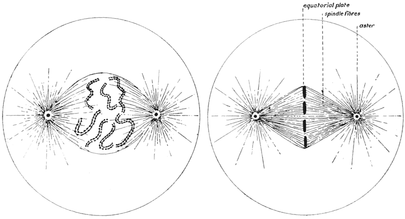
| Fig. 46. | Fig. 47. |
4. Each chromosome splits longitudinally into two: usually at this stage,—but it is to be noticed that the splitting may have taken place so early as the spireme stage (Fig. 48).
5. The halves of the split chromosomes now separate from one another, and travel in opposite directions towards the two poles (Fig. 49). As they move, it becomes apparent that the spindle consists of a median bundle of “fibres,” the central spindle, running from pole to pole, and a more superficial sheath of “mantle-fibres,” to which the chromosomes seem to be attached, and by which they seem to be drawn towards the asters.
6. The daughter chromosomes, arranged now in two groups, become closely crowded in a mass near the centre of each aster {175} (Fig. 50). They fuse together and form once more an alveolar reticulum and may occasionally at this stage form another spireme.
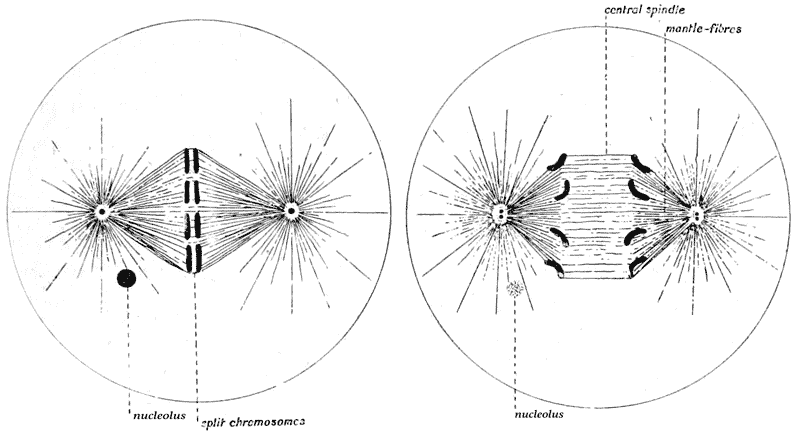
| Fig. 48. | Fig. 49. |
A boundary or surface wall is now developed round each reconstructed nuclear mass, and the spindle-fibres disappear (Fig. 51). The centrosome remains, as a rule, outside the nucleus.
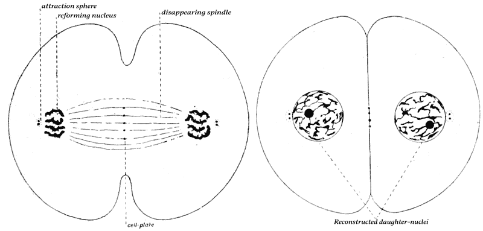
| Fig. 50. | Fig. 51. |
7. On the central spindle, in the position of the equatorial plate, there has appeared during the migration of the chromosomes, a “cell-plate” of deeply staining thickenings (Figs. 50, 51). This is more conspicuous in plant-cells. {176}
8. A constriction has meanwhile appeared in the cytoplasm, and the cell divides through the equatorial plane. In plant-cells the line of this division is foreshadowed by the “cell-plate,” which extends from the spindle across the entire cell, and splits into two layers, between which appears the membrane by which the daughter cells are cleft asunder. In animal cells the cell-plate does not attain such dimensions, and no cell-wall is formed.
The whole, or very nearly the whole of these nuclear phenomena may be brought into relation with that polarisation of forces, in the cell as a whole, whose field is made manifest by the “spindle” and “asters” of which we have already spoken: certain particular phenomena, directly attributable to surface-tension and diffusion, taking place in more or less obvious and inevitable dependence upon the polar system*.
* The reference numbers in the following account refer to the paragraphs and figures of the preceding summary of visible nuclear phenomena.
At the same time, in attempting to explain the phenomena, we cannot say too clearly, or too often, that all that we are meanwhile justified in doing is to try to shew that such and such actions lie within the range of known physical actions and phenomena, or that known physical phenomena produce effects similar to them. We want to feel sure that the whole phenomenon is not sui generis, but is somehow or other capable of being referred to dynamical laws, and to the general principles of physical science. But when we speak of some particular force or mode of action, using it as an illustrative hypothesis, we must stop far short of the implication that this or that force is necessarily the very one which is actually at work within the living cell; and certainly we need not attempt the formidable task of trying to reconcile, or to choose between, the various hypotheses which have already been enunciated, or the several assumptions on which they depend.
Any region of space within which action is manifested is a field of force; and a simple example is a bipolar field, in which the action is symmetrical with reference to the line joining two points, or poles, and also with reference to the “equatorial” plane equidistant from both. We have such a “field of force” in {177} the neighbourhood of the centrosome of the ripe cell or ovum, when it is about to divide; and by the time the centrosome has divided, the field is definitely a bipolar one.
The quality of a medium filling the field of force may be uniform, or it may vary from point to point. In particular, it may depend upon the magnitude of the field; and the quality of one medium may differ from that of another. Such variation of quality, within one medium, or from one medium to another, is capable of diagrammatic representation by a variation of the direction or the strength of the field (other conditions being the same) from the state manifested in some uniform medium taken as a standard. The medium is said to be permeable to the force, in greater or less degree than the standard medium, according as the variation of the density of the lines of force from the standard case, under otherwise identical conditions, is in excess or defect. A body placed in the medium will tend to move towards regions of greater or less force according as its permeability is greater or less than that of the surrounding medium232. In the common experiment of placing iron-filings between the two poles of a magnetic field, the filings have a very high permeability; and not only do they themselves become polarised so as to attract one another, but they tend to be attracted from the weaker to the stronger parts of the field, and as we have seen, were it not for friction or some other resistance, they would soon gather together around the nearest pole. But if we repeat the same experiment with such a metal as bismuth, which is very little permeable to the magnetic force, then the conditions are reversed, and the particles, being repelled from the stronger to the weaker parts of the field, tend to take up their position as far from the poles as possible. The particles have become polarised, but in a sense opposite to that of the surrounding, or adjacent, field.
Now, in the field of force whose opposite poles are marked by {178} the centrosomes the nucleus appears to act as a more or less permeable body, as a body more permeable than the surrounding medium, that is to say the “cytoplasm” of the cell. It is accordingly attracted by, and drawn into, the field of force, and tries, as it were, to set itself between the poles and as far as possible from both of them. In other words, the centrosome-foci will be apparently drawn over its surface, until the nucleus as a whole is involved within the field of force, which is visibly marked out by the “spindle” (par. 3, Figs. 44, 45).
If the field of force be electrical, or act in a fashion analogous to an electrical field, the charged nucleus will have its surface-tensions diminished233: with the double result that the inner alveolar meshwork will be broken up (par. 1), and that the spherical boundary of the whole nucleus will disappear (par. 2). The break-up of the alveoli (by thinning and rupture of their partition walls) leads to the formation of a net, and the further break-up of the net may lead to the unravelling of a thread or “spireme” (Figs. 43, 44).
Here there comes into play a fundamental principle which, in so far as we require to understand it, can be explained in simple words. The effect (and we might even say the object) of drawing the more permeable body in between the poles, is to obtain an “easier path” by which the lines of force may travel; but it is obvious that a longer route through the more permeable body may at length be found less advantageous than a shorter route through the less permeable medium. That is to say, the more permeable body will only tend to be drawn in to the field of force until a point is reached where (so to speak) the way round and the way through are equally advantageous. We should accordingly expect that (on our hypothesis) there would be found cases in which the nucleus was wholly, and others in which it was only partially, and in greater or less degree, drawn in to the field between the centrosomes. This is precisely what is found to occur in actual fact. Figs. 44 and 45 represent two so-called “types,” of a phase which follows that represented in Fig. 43. According to the usual descriptions (and in particular to Professor {179} E. B. Wilson’s234), we are told that, in such a case as Fig. 44, the “primary spindle” disappears and the centrosomes diverge to opposite poles of the nucleus; such a condition being found in many plant-cells, and in the cleavage-stages of many eggs. In Fig. 45, on the other hand, the primary spindle persists, and subsequently comes to form the main or “central” spindle; while at the same time we see the fading away of the nuclear membrane, the breaking up of the spireme into separate chromosomes, and an ingrowth into the nuclear area of the “astral rays,”—all as in Fig. 46, which represents the next succeeding phase of Fig. 45. This condition, of Fig. 46, occurs in a variety of cases; it is well seen in the epidermal cells of the salamander, and is also on the whole characteristic of the mode of formation of the “polar bodies.” It is clear and obvious that the two “types” correspond to mere differences of degree, and are such as would naturally be brought about by differences in the relative permeabilities of the nuclear mass and of the surrounding cytoplasm, or even by differences in the magnitude of the former body.
But now an important change takes place, or rather an important difference appears; for, whereas the nucleus as a whole tended to be drawn in to the stronger parts of the field, when it comes to break up we find, on the contrary, that its contained spireme-thread or separate chromosomes tend to be repelled to the weaker parts. Whatever this difference may be due to,—whether, for instance, to actual differences of permeability, or possibly to differences in “surface-charge,”—the fact is that the chromatin substance now behaves after the fashion of a “diamagnetic” body, and is repelled from the stronger to the weaker parts of the field. In other words, its particles, lying in the inter-polar field, tend to travel towards the equatorial plane thereof (Figs. 47, 48), and further tend to move outwards towards the periphery of that plane, towards what the histologist calls the “mantle-fibres,” or outermost of the lines of force of which the spindle is made up (par. 5, Fig. 47). And if this comparatively non-permeable chromatin substance come to consist of separate portions, more or less elongated in form, these portions, or separate “chromosomes,” will adjust themselves longitudinally, {180} in a peripheral equatorial circle (Figs. 48, 49). This is precisely what actually takes place. Moreover, before the breaking up of the nucleus, long before the chromatin material has broken up into separate chromosomes, and at the very time when it is being fashioned into a “spireme,” this body already lies in a polar field, and must already have a tendency to set itself in the equatorial plane thereof. But the long, continuous spireme thread is unable, so long as the nucleus retains its spherical boundary wall, to adjust itself in a simple equatorial annulus; in striving to do so, it must tend to coil and “kink” itself, and in so doing (if all this be so), it must tend to assume the characteristic convolutions of the “spireme.”
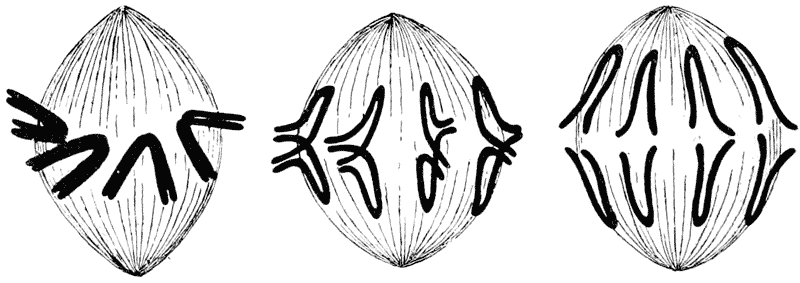
After the spireme has broken up into separate chromosomes, these particles come into a position of temporary, and unstable, equilibrium near the periphery of the equatorial plane, and here they tend to place themselves in a symmetrical arrangement (Fig. 52). The particles are rounded, linear, sometimes annular, similar in form and size to one another; and lying as they do in a fluid, and subject to a symmetrical system of forces, it is not surprising that they arrange themselves in a symmetrical manner, the precise arrangement depending on the form of the particles themselves. This symmetry may perhaps be due, as has already been suggested, to induced electrical charges. In discussing Brauer’s observations on the splitting of the chromatic filament, and the symmetrical arrangement of the separate granules, in Ascaris megalocephala, Lillie235 {181} remarks: “This behaviour is strongly suggestive of the division of a colloidal particle under the influence of its surface electrical charge, and of the effects of mutual repulsion in keeping the products of division apart.” It is also probable that surface-tensions between the particles and the surrounding protoplasm would bring about an identical result, and would sufficiently account for the obvious, and at first sight, very curious, symmetry. We know that if we float a couple of matches in water they tend to approach one another, till they lie close together, side by side; and, if we lay upon a smooth wet plate four matches, half broken across, a precisely similar attraction brings the four matches together in the form of a symmetrical cross. Whether one of these, or some other, be the actual explanation of the phenomenon, it is at least plain that by some physical cause, some mutual and symmetrical attraction or repulsion of the particles, we must seek
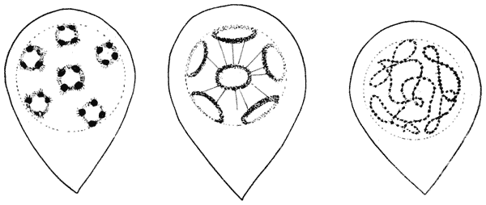
to account for the curious symmetry of these so-called “tetrads.” The remarkable annular chromosomes, shewn in Fig. 53, can also be easily imitated by means of loops of thread upon a soapy film when the film within the annulus is broken or its tension reduced.
So far as we have now gone, there is no great difficulty in pointing to simple and familiar phenomena of a field of force which are similar, or comparable, to the phenomena which we witness within the cell. But among these latter phenomena there are others for which it is not so easy to suggest, in accordance with known laws, a simple mode of physical causation. It is not at once obvious how, in any simple system of symmetrical forces, {182} the chromosomes, which had at first been apparently repelled from the poles towards the equatorial plane, should then be split asunder, and should presently be attracted in opposite directions, some to one pole and some to the other. Remembering that it is not our purpose to assert that some one particular mode of action is at work, but merely to shew that there do exist physical forces, or distributions of force, which are capable of producing the required result, I give the following suggestive hypothesis, which I owe to my colleague Professor W. Peddie.
As we have begun by supposing that the nuclear, or chromosomal matter differs in permeability from the medium, that is to say the cytoplasm, in which it lies, let us now make the further assumption that its permeability is variable, and depends upon the strength of the field.
In Fig. 54, we have a field of force (representing our cell), consisting of a homogeneous medium, and including two opposite poles: lines of force are indicated by full lines, and loci of constant magnitude of force are shewn by dotted lines.
Let us now consider a body whose permeability (µ) depends on the strength of the field F. At two field-strengths, such as Fa, Fb, let the permeability of the body be equal to that of the {183} medium, and let the curved line in Fig. 55 represent generally its permeability at other field-strengths; and let the outer and inner dotted curves in Fig. 54 represent respectively the loci of the field-strengths Fb and Fa. The body if it be placed in the medium within either branch of the inner curve, or outside the outer curve, will tend to move into the neighbourhood of the adjacent pole. If it be placed in the region intermediate to the two dotted curves, it will tend to move towards regions of weaker field-strength.
The locus Fb is therefore a locus of stable position, towards which the body tends to move; the locus Fa is a locus of unstable position, from which it tends to move. If the body were placed across Fa, it might be torn asunder into two portions, the split coinciding with the locus Fa.
Suppose a number of such bodies to be scattered throughout the medium. Let at first the regions Fa and Fb be entirely outside the space where the bodies are situated: and, in making this supposition we may, if we please, suppose that the loci which we are calling Fa and Fb are meanwhile situated somewhat farther from the axis than in our figure, that (for instance) Fa is situated where we have drawn Fb, and that Fb is still further out. The bodies then tend towards the poles; but the tendency may be very small if, in Fig. 55, the curve and its intersecting straight line do not diverge very far from one another beyond Fa; in other {184} words, if, when situated in this region, the permeability of the bodies is not very much in excess of that of the medium.
Let the poles now tend to separate farther and farther from one another, the strength of each pole remaining unaltered; in other words, let the centrosome-foci recede from one another, as they actually do, drawing out the spindle-threads between them. The loci Fa, Fb, will close in to nearer relative distances from the poles. In doing so, when the locus Fa crosses one of the bodies, the body may be torn asunder; if the body be of elongated shape, and be crossed at more points than one, the forces at work will tend to exaggerate its foldings, and the tendency to rupture is greatest when Fa is in some median position (Fig. 56).
When the locus Fa has passed entirely over the body, the body tends to move towards regions of weaker force; but when, in turn, the locus Fb has crossed it, then the body again moves towards regions of stronger force, that is to say, towards the nearest pole. And, in thus moving towards the pole, it will do so, as appears actually to be the case in the dividing cell, along the course of the outer lines of force, the so-called “mantle-fibres” of the histologist236.
Such considerations as these give general results, easily open to modification in detail by a change of any of the arbitrary postulates which have been made for the sake of simplicity. Doubtless there are many other assumptions which would more or less meet the case; for instance, that of Ida H. Hyde that, {185} during the active phase of the chromatin molecule (during which it decomposes and sets free nucleic acid) it carries a charge opposite to that which it bears during its resting, or alkaline phase; and that it would accordingly move towards different poles under the influence of a current, wandering with its negative charge in an alkaline fluid during its acid phase to the anode, and to the kathode during its alkaline phase. A whole field of speculation is opened up when we begin to consider the cell not merely as a polarised electrical field, but also as an electrolytic field, full of wandering ions. Indeed it is high time we reminded ourselves that we have perhaps been dealing too much with ordinary physical analogies: and that our whole field of force within the cell is of an order of magnitude where these grosser analogies may fail to serve us, and might even play us false, or lead us astray. But our sole object meanwhile, as I have said more than once, is to demonstrate, by such illustrations as these, that, whatever be the actual and as yet unknown modus operandi, there are physical conditions and distributions of force which could produce just such phenomena of movement as we see taking place within the living cell. This, and no more, is precisely what Descartes is said to have claimed for his description of the human body as a “mechanism237.”
The foregoing account is based on the provisional assumption that the phenomena of caryokinesis are analogous to, if not identical with those of a bipolar electrical field; and this comparison, in my opinion, offers without doubt the best available series of analogies. But we must on no account omit to mention the fact that some of Leduc’s diffusion-experiments offer very remarkable analogies to the diagrammatic phenomena of caryokinesis, as shewn in the annexed figure238. Here we have two identical (not opposite) poles of osmotic concentration, formed by placing a drop of indian ink in salt water, and then on either side of this central drop, a hypertonic drop of salt solution more lightly coloured. On either side the pigment of the central drop has been drawn towards the focus nearest to it; but in the middle line, the pigment {186} is drawn in opposite directions by equal forces, and so tends to remain undisturbed, in the form of an “equatorial plate.”
Nor should we omit to take account (however briefly and inadequately) of a novel and elegant hypothesis put forward by A. B. Lamb. This hypothesis makes use of a theorem of Bjerknes, to the effect that synchronously vibrating or pulsating bodies in a liquid field attract or repel one another according as their oscillations are identical or opposite in phase. Under such circumstances, true currents, or hydrodynamic lines of force, are produced, identical in form with the lines of force of a magnetic field; and other particles floating, though not necessarily pulsating, in the liquid field, tend to be attracted or repelled by the pulsating bodies according as they are lighter or heavier than the surrounding fluid. Moreover (and this is the most remarkable point of all), the lines of force set up by the oppositely pulsating bodies are the same as those which are produced by opposite magnetic poles: though in the former case repulsion, and in the latter case attraction, takes place between the two poles239.
But to return to our general discussion.
While it can scarcely be too often repeated that our enquiry is not directed towards the solution of physiological problems, save {187} only in so far as they are inseparable from the problems presented by the visible configurations of form and structure, and while we try, as far as possible, to evade the difficult question of what particular forces are at work when the mere visible forms produced are such as to leave this an open question, yet in this particular case we have been drawn into the use of electrical analogies, and we are bound to justify, if possible, our resort to this particular mode of physical action. There is an important paper by R. S. Lillie, on the “Electrical Convection of certain Free Cells and Nuclei240,” which, while I cannot quote it in direct support of the suggestions which I have made, yet gives just the evidence we need in order to shew that electrical forces act upon the constituents of the cell, and that their action discriminates between the two species of colloids represented by the cytoplasm and the nuclear chromatin. And the difference is such that, in the presence of an electrical current, the cell substance and the nuclei (including sperm-cells) tend to migrate, the former on the whole with the positive, the latter with the negative stream: a difference of electrical potential being thus indicated between the particle and the surrounding medium, just as in the case of minute suspended particles of various kinds in various feebly conducing media241. And the electrical difference is doubtless greatest, in the case of the cell constituents, just at the period of mitosis: when the chromatin is invariably in its most deeply staining, most strongly acid, and therefore, presumably, in its most electrically negative phase. In short, {188} Lillie comes easily to the conclusion that “electrical theories of mitosis are entitled to more careful consideration than they have hitherto received.”
Among other investigations, all leading towards the same general conclusion, namely that differences of electric potential play a great part in the phenomenon of cell division, I would mention a very noteworthy paper by Ida H. Hyde242, in which the writer shews (among other important observations) that not only is there a measurable difference of potential between the animal and vegetative poles of a fertilised egg (Fundulus, toad, turtle, etc.), but that this difference is not constant, but fluctuates, or actually reverses its direction, periodically, at epochs coinciding with successive acts of segmentation or other important phases in the development of the egg243; just as other physical rhythms, for instance in the production of CO2 , had already been shewn to do. Hence we shall be by no means surprised to find that the “materialised” lines of force, which in the earlier stages form the convergent curves of the spindle, are replaced in the later phases of caryokinesis by divergent curves, indicating that the two foci, which are marked out within the field by the divided and reconstituted nuclei, are now alike in their polarity (Figs. 58, 59).
It is certain, to my mind, that these observations of Miss Hyde’s, and of Lillie’s, taken together with those of many writers on the behaviour of colloid particles generally in their relation to an electrical field, have a close bearing upon the physiological side of our problem, the full discussion of which lies outside our present field.
The break-up of the nucleus, already referred to and ascribed to a diminution of its surface-tension, is accompanied by certain diffusion phenomena which are sometimes visible to the eye; and we are reminded of Lord Kelvin’s view that diffusion is implicitly {189} associated with surface-tension changes, of which the first step is a minute puckering of the surface-skin, a sort of interdigitation with the surrounding medium. For instance, Schewiakoff has observed in Euglypha244 that, just before the break-up of the nucleus, a system of rays appears, concentred about it, but having nothing to do with the polar asters: and during the existence of this striation, the nucleus enlarges very considerably, evidently by imbibition of fluid from the surrounding protoplasm. In short, diffusion is at work, hand in hand with, and as it were in opposition to, the surface-tensions which define the nucleus. By diffusion, hand in hand with surface-tension, the alveoli of the nuclear meshwork are formed, enlarged, and finally ruptured: diffusion sets up the movements which give rise to the appearance of rays, or striae, around the nucleus: and through increasing diffusion, and weakening surface-tension, the rounded outline of the nucleus finally disappears. {190}
Fig. 58. Final stage in the first segmentation of the egg of Cerebratulus. (From Prenant, after Coe.)245 |
Fig. 59. Diagram of field of force with two similar poles. |
As we study these manifold phenomena, in the individual cases of particular plants and animals, we recognise a close identity of type, coupled with almost endless variation of specific detail; and in particular, the order of succession in which certain of the phenomena occur is variable and irregular. The precise order of the phenomena, the time of longitudinal and of transverse fission of the chromatin thread, of the break-up of the nuclear wall, and so forth, will depend upon various minor contingencies and “interferences.” And it is worthy of particular note that these variations, in the order of events and in other subordinate details, while doubtless attributable to specific physical conditions, would seem to be without any obvious classificatory value or other biological significance246.
As regards the actual mechanical division of the cell into two halves, we shall see presently that, in certain cases, such as that of a long cylindrical filament, surface-tension, and what is known as the principle of “minimal area,” go a long way to explain the mechanical process of division; and in all cells whatsoever, the process of division must somehow be explained as the result of a conflict between surface-tension and its opposing forces. But in such a case as our spherical cell, it is not very easy to see what physical cause is at work to disturb its equilibrium and its integrity.
The fact that, when actual division of the cell takes place, it does so at right angles to the polar axis and precisely in the direction of the equatorial plane, would lead us to suspect that the new surface formed in the equatorial plane sets up an annular tension, directed inwards, where it meets the outer surface layer of the cell itself. But at this point, the problem becomes more complicated. Before we could hope to comprehend it, we should have not only to enquire into the potential distribution at the surface of the cell in relation to that which we have seen to exist in its interior, but we should probably also have to take account of the differences of potential which the material arrangements along the lines of force must themselves tend to produce. Only {191} thus could we approach a comprehension of the balance of forces which cohesion, friction, capillarity and electrical distribution combine to set up.
The manner in which we regard the phenomenon would seem to turn, in great measure, upon whether or no we are justified in assuming that, in the liquid surface-film of a minute spherical cell, local, and symmetrically localised, differences of surface-tension are likely to occur. If not, then changes in the conformation of the cell such as lead immediately to its division must be ascribed not to local changes in its surface-tension, but rather to direct changes in internal pressure, or to mechanical forces due to an induced surface-distribution of electrical potential.
It has seemed otherwise to many writers, and we have a number of theories of cell division which are all based directly on inequalities or asymmetry of surface-tension. For instance, Bütschli suggested, some forty years ago247, that cell division is brought about by an increase of surface-tension in the equatorial region of the cell. This explanation, however, can scarcely hold; for it would seem that such an increase of surface-tension in the equatorial plane would lead to the cell becoming flattened out into a disc, with a sharply curved equatorial edge, and to a streaming of material towards the equator. In 1895, Loeb shewed that the streaming went on from the equator towards the divided nuclei, and he supposed that the violence of these streaming movements brought about actual division of the cell: a hypothesis which was adopted by many other physiologists248. This streaming movement would suggest, as Robertson has pointed out, a diminution of surface-tension in the region of the equator. Now Quincke has shewn that the formation of soaps at the surface of an oil-droplet results in a diminution of the surface-tension of the latter; and that if the saponification be local, that part of the surface tends to spread. By laying a thread moistened with a dilute solution of caustic alkali, or even merely smeared with soap, across a drop of oil, Robertson has further shewn that the drop at once divides into two: the edges of the drop, that is to say the ends of the {192} diameter across which the thread lies, recede from the thread, so forming a notch at each end of the diameter, while violent streaming motions are set up at the surface, away from the thread in the direction of the two opposite poles. Robertson249 suggests, accordingly, that the division of the cell is actually brought about by a lowering of the equatorial surface-tension, and that this in turn is due to a chemical action, such as a liberation of cholin, or of soaps of cholin, through the splitting of lecithin in nuclear synthesis.
But purely chemical changes are not of necessity the fundamental cause of alteration in the surface-tension of the egg, for the action of electrolytes on surface-tension is now well known and easily demonstrated. So, according to other views than those with which we have been dealing, electrical charges are sufficient in themselves to account for alterations of surface-tension; while these in turn account for that protoplasmic streaming which, as so many investigators agree, initiates the segmentation of the egg250. A great part of our difficulty arises from the fact that in such a case as this the various phenomena are so entangled and apparently concurrent that it is hard to say which initiates another, and to which this or that secondary phenomenon may be considered due. Of recent years the phenomenon of adsorption has been adduced (as we have already briefly said) in order to account for many of the events and appearances which are associated with the asymmetry, and lead towards the division, of the cell. But our short discussion of this phenomenon may be reserved for another chapter.
However, we are not directly concerned here with the phenomena of segmentation or cell division in themselves, except only in so far as visible changes of form are capable of easy and obvious correlation with the play of force. The very fact of “development” indicates that, while it lasts, the equilibrium of the egg is never complete251. And we may simply conclude the {193} matter by saying that, if you have caryokinetic figures developing inside the cell, that of itself indicates that the dynamic system and the localised forces arising from it are in continual alteration; and, consequently, changes in the outward configuration of the system are bound to take place.
As regards the phenomena of fertilisation,—of the union of the spermatozoon with the “pronucleus” of the egg,—we might study these also in illustration, up to a certain point, of the polarised forces which are manifestly at work. But we shall merely take, as a single illustration, the paths of the male and female pronuclei, as they travel to their ultimate meeting place.
The spermatozoon, when within a very short distance of the egg-cell, is attracted by it. Of the nature of this attractive force we have no certain knowledge, though we would seem to have a pregnant hint in Loeb’s discovery that, in the neighbourhood of other substances, such even as a fragment, or bead, of glass, the spermatozoon undergoes a similar attraction. But, whatever the force may be, it is one acting normally to the surface of the ovum, and accordingly, after entry, the sperm-nucleus points straight towards the centre of the egg; from the fact that other spermatozoa, subsequent to the first, fail to effect an entry, we may safely conclude that an immediate consequence of the entry of the spermatozoon is an increase in the surface-tension of the egg252. Somewhere or other, near or far away, within the egg, lies its own nuclear body, the so-called female pronucleus, and we find after a while that this has fused with the head of the spermatozoon (or male pronucleus), and that the body resulting from their fusion has come to occupy the centre of the egg. This must be due (as Whitman pointed out long ago) to a force of attraction acting between the two bodies, and another force acting upon one or other or both in the direction of the centre of the cell. Did we know the magnitude of these several forces, it would be a very easy task to calculate the precise path which the two pronuclei would follow, leading to conjugation and the central {194} position. As we do not know the magnitude, but only the direction, of these forces we can only make a general statement: (1) the paths of both moving bodies will lie wholly within a plane triangle drawn between the two bodies and the centre of the cell; (2) unless the two bodies happen to lie, to begin with, precisely on a diameter of the cell, their paths until they meet one another will be curved paths, the convexity of the curve being towards the straight line joining the two bodies; (3) the two bodies will meet a little before they reach the centre; and, having met and fused, will travel on to reach the centre in a straight line. The actual study and observation of the path followed is not very easy, owing to the fact that what we usually see is not the path itself, but only a projection of the path upon the plane of the microscope; but the curved path is particularly well seen in the frog’s egg, where the path of the spermatozoon is marked by a little streak of brown pigment, and the fact of the meeting of the pronuclei before reaching the centre has been repeatedly seen by many observers.
The problem is nothing else than a particular case of the famous problem of three bodies, which has so occupied the astronomers; and it is obvious that the foregoing brief description is very far from including all possible cases. Many of these are particularly described in the works of Fol, Roux, Whitman and others253.
The intracellular phenomena of which we have now spoken have assumed immense importance in biological literature and discussion during the last forty years; but it is open to us to doubt whether they will be found in the end to possess more than a remote and secondary biological significance. Most, if not all of them, would seem to follow immediately and inevitably from very simple assumptions as to the physical constitution of the cell, and from an extremely simple distribution of polarised forces within it. We have already seen that how a thing grows, and what it grows into, is a dynamic and not a merely material problem; so far as the material substance is concerned, it is so only by reason {195} of the chemical, electrical or other forces which are associated with it. But there is another consideration which would lead us to suspect that many features in the structure and configuration of the cell are of very secondary biological importance; and that is, the great variation to which these phenomena are subject in similar or closely related organisms, and the apparent impossibility of correlating them with the peculiarities of the organism as a whole. “Comparative study has shewn that almost every detail of the processes (of mitosis) described above is subject to variation in different forms of cells254.” A multitude of cells divide to the accompaniment of caryokinetic phenomena; but others do so without any visible caryokinesis at all. Sometimes the polarised field of force is within, sometimes it is adjacent to, and at other times it lies remote from the nucleus. The distribution of potential is very often symmetrical and bipolar, as in the case described; but a less symmetrical distribution often occurs, with the result that we have, for a time at least, numerous centres of force, instead of the two main correlated poles: this is the simple explanation of the numerous stellate figures, or “Strahlungen,” which have been described in certain eggs, such as those of Chaetopterus. In one and the same species of worm (Ascaris megalocephala), one group or two groups of chromosomes may be present. And remarkably constant, in general, as the number of chromosomes in any one species undoubtedly is, yet we must not forget that, in plants and animals alike, the whole range of observed numbers is but a small one; for (as regards the germ-nuclei) few organisms have less than six chromosomes, and fewer still have more than sixteen255. In closely related animals, such as various species of Copepods, and even in the same species of worm or insect, the form of the chromosomes, and their arrangement in relation to the nuclear spindle, have been found to differ in the various ways alluded to above. In short, there seem to be strong grounds for believing that these and many similar phenomena are in no way specifically related to the particular organism in which they have {196} been observed, and are not even specially and indisputably connected with the organism as such. They include such manifestations of the physical forces, in their various permutations and combinations, as may also be witnessed, under appropriate conditions, in non-living things.
When we attempt to separate our purely morphological or “purely embryological” studies from physiological and physical investigations, we tend ipso facto to regard each particular structure and configuration as an attribute, or a particular “character,” of this or that particular organism. From this assumption we are apt to go on to the drawing of new conclusions or the framing of new theories as to the ancestral history, the classificatory position, the natural affinities of the several organisms: in fact, to apply our embryological knowledge mainly, and at times exclusively, to the study of phylogeny. When we find, as we are not long of finding, that our phylogenetic hypotheses, as drawn from embryology, become complex and unwieldy, we are nevertheless reluctant to admit that the whole method, with its fundamental postulates, is at fault. And yet nothing short of this would seem to be the case, in regard to the earlier phases at least of embryonic development. All the evidence at hand goes, as it seems to me, to shew that embryological data, prior to and even long after the epoch of segmentation, are essentially a subject for physiological and physical investigation and have but the very slightest link with the problems of systematic or zoological classification. Comparative embryology has its own facts to classify, and its own methods and principles of classification. Thus we may classify eggs according to the presence or absence, the paucity or abundance, of their associated food-yolk, the chromosomes according to their form and their number, the segmentation according to its various “types,” radial, bilateral, spiral, and so forth. But we have little right to expect, and in point of fact we shall very seldom and (as it were) only accidentally find, that these embryological categories coincide with the lines of “natural” or “phylogenetic” classification which have been arrived at by the systematic zoologist.
The cell, which Goodsir spoke of as a “centre of force,” is in {197} reality a “sphere of action” of certain more or less localised forces; and of these, surface-tension is the particular force which is especially responsible for giving to the cell its outline and its morphological individuality. The partially segmented differs from the totally segmented egg, the unicellular Infusorian from the minute multicellular Turbellarian, in the intensity and the range of those surface-tensions which in the one case succeed and in the other fail to form a visible separation between the “cells.” Adam Sedgwick used to call attention to the fact that very often, even in eggs that appear to be totally segmented, it is yet impossible to discover an actual separation or cleavage, through and through between the cells which on the surface of the egg are so clearly delimited; so far and no farther have the physical forces effectuated a visible “cleavage.” The vacuolation of the protoplasm in Actinophrys or Actinosphaerium is due to localised surface-tensions, quite irrespective of the multinuclear nature of the latter organism. In short, the boundary walls due to surface-tension may be present or may be absent with or without the delimination of the other specific fields of force which are usually correlated with these boundaries and with the independent individuality of the cells. What we may safely admit, however, is that one effect of these circumscribed fields of force is usually such a separation or segregation of the protoplasmic constituents, the more fluid from the less fluid and so forth, as to give a field where surface-tension may do its work and bring a visible boundary into being. When the formation of a “surface” is once effected, its physical condition, or phase, will be bound to differ notably from that of the interior of the cell, and under appropriate chemical conditions the formation of an actual cell-wall, cellulose or other, is easily intelligible. To this subject we shall return again, in another chapter.
From the moment that we enter on a dynamical conception of the cell, we perceive that the old debates were in vain as to what visible portions of the cell were active or passive, living or non-living. For the manifestations of force can only be due to the interaction of the various parts, to the transference of energy from one to another. Certain properties may be manifested, certain functions may be carried on, by the protoplasm apart {198} from the nucleus; but the interaction of the two is necessary, that other and more important properties or functions may be manifested. We know, for instance, that portions of an Infusorian are incapable of regenerating lost parts in the absence of a nucleus, while nucleated pieces soon regain the specific form of the organism: and we are told that reproduction by fission cannot be initiated, though apparently all its later steps can be carried on, independently of nuclear action. Nor, as Verworn pointed out, can the nucleus possibly be regarded as the “sole vehicle of inheritance,” since only in the conjunction of cell and nucleus do we find the essentials of cell-life. “Kern und Protoplasma sind nur vereint lebensfähig,” as Nussbaum said. Indeed we may, with E. B. Wilson, go further, and say that “the terms ‘nucleus’ and ‘cell-body’ should probably be regarded as only topographical expressions denoting two differentiated areas in a common structural basis.”
Endless discussion has taken place regarding the centrosome, some holding that it is a specific and essential structure, a permanent corpuscle derived from a similar pre-existing corpuscle, a “fertilising element” in the spermatozoon, a special “organ of cell-division,” a material “dynamic centre” of the cell (as Van Beneden and Boveri call it); while on the other hand, it is pointed out that many cells live and multiply without any visible centrosomes, that a centrosome may disappear and be created anew, and even that under artificial conditions abnormal chemical stimuli may lead to the formation of new centrosomes. We may safely take it that the centrosome, or the “attraction sphere,” is essentially a “centre of force,” and that this dynamic centre may or may not be constituted by (but will be very apt to produce) a concrete and visible concentration of matter.
It is far from correct to say, as is often done, that the cell-wall, or cell-membrane, belongs “to the passive products of protoplasm rather than to the living cell itself”; or to say that in the animal cell, the cell-wall, because it is “slightly developed,” is relatively unimportant compared with the important role which it assumes in plants. On the contrary, it is quite certain that, whether visibly differentiated into a semi-permeable membrane, or merely constituted by a liquid film, the surface of the cell is the seat of {199} important forces, capillary and electrical, which play an essential part in the dynamics of the cell. Even in the thickened, largely solidified cellulose wall of the plant-cell, apart from the mechanical resistances which it affords, the osmotic forces developed in connection with it are of essential importance.
But if the cell acts, after this fashion, as a whole, each part interacting of necessity with the rest, the same is certainly true of the entire multicellular organism: as Schwann said of old, in very precise and adequate words, “the whole organism subsists only by means of the reciprocal action of the single elementary parts256.”
As Wilson says again, “the physiological autonomy of the individual cell falls into the background ... and the apparently composite character which the multicellular organism may exhibit is owing to a secondary distribution of its energies among local centres of action257.”
It is here that the homology breaks down which is so often drawn, and overdrawn, between the unicellular organism and the individual cell of the metazoon258.
Whitman, Adam Sedgwick259, and others have lost no opportunity of warning us against a too literal acceptation of the cell-theory, against the view that the multicellular organism is a colony (or, as Haeckel called it (in the case of the plant), a “republic”) of independent units of life260. As Goethe said long ago, “Das lebendige ist zwar in Elemente {200} zerlegt, aber man kann es aus diesen nicht wieder zusammenstellen und beleben;” the dictum of the Cellularpathologie being just the opposite, “Jedes Thier erscheint als eine Summe vitaler Einheiten, von denen jede den vollen Charakter des Lebens an sich trägt.”
Hofmeister and Sachs have taught us that in the plant the growth of the mass, the growth of the organ, is the primary fact, that “cell formation is a phenomenon very general in organic life, but still only of secondary significance.” “Comparative embryology” says Whitman, “reminds us at every turn that the organism dominates cell-formation, using for the same purpose one, several, or many cells, massing its material and directing its movements and shaping its organs, as if cells did not exist261.” So Rauber declared that, in the whole world of organisms, “das Ganze liefert die Theile, nicht die Theile das Ganze: letzteres setzt die Theile zusammen, nicht diese jenes262.” And on the botanical side De Bary has summed up the matter in an aphorism, “Die Pflanze bildet Zellen, nicht die Zelle bildet Pflanzen.”
Discussed almost wholly from the concrete, or morphological point of view, the question has for the most part been made to turn on whether actual protoplasmic continuity can be demonstrated between one cell and another, whether the organism be an actual reticulum, or syncytium. But from the dynamical point of view the question is much simpler. We then deal not with material continuity, not with little bridges of connecting protoplasm, but with a continuity of forces, a comprehensive field of force, which runs through and through the entire organism and is by no means restricted in its passage to a protoplasmic continuum. And such a continuous field of force, somehow shaping the whole organism, independently of the number, magnitude and form of the individual cells, which enter, like a froth, into its fabric, seems to me certainly and obviously to exist. As Whitman says, “the fact that physiological unity is not broken by cell-boundaries is confirmed in so many ways that it must be accepted as one of the fundamental truths of biology263.”
Protoplasm, as we have already said, is a fluid or rather a semifluid substance, and we need not pause here to attempt to describe the particular properties of the semifluid, colloid, or jelly-like substances to which it is allied; we should find it no easy matter. Nor need we appeal to precise theoretical definitions of fluidity, lest we come into a debateable land. It is in the most general sense that protoplasm is “fluid.” As Graham said (of colloid matter in general), “its softness partakes of fluidity, and enables the colloid to become a vehicle for liquid diffusion, like water itself264.” When we can deal with protoplasm in sufficient quantity we see it flow; particles move freely through it, air-bubbles and liquid droplets shew round or spherical within it; and we shall have much to say about other phenomena manifested by its own surface, which are those especially characteristic of liquids. It may encompass and contain solid bodies, and it may “secrete” within or around itself solid substances; and very often in the complex living organism these solid substances formed by the living protoplasm, like shell or nail or horn or feather, may remain when the protoplasm which formed them is dead and gone; but the protoplasm itself is fluid or semifluid, and accordingly permits of free (though not necessarily rapid) diffusion and easy convection of particles within itself. This simple fact is of elementary importance in connection with form, and with what appear at first sight to be common characteristics or peculiarities of the forms of living things.
The older naturalists, in discussing the differences between inorganic and organic bodies, laid stress upon the fact or statement that the former grow by “agglutination,” and the latter by {202} what they termed “intussusception.” The contrast is true, rather, of solid as compared with jelly-like bodies of all kinds, living or dead, the great majority of which as it so happens, but by no means all, are of organic origin.
A crystal “grows” by deposition of new molecules, one by one and layer by layer, superimposed or aggregated upon the solid substratum already formed. Each particle would seem to be influenced, practically speaking, only by the particles in its immediate neighbourhood, and to be in a state of freedom and independence from the influence, either direct or indirect, of its remoter neighbours. As Lord Kelvin and others have explained the formation and the resulting forms of crystals, so we believe that each added particle takes up its position in relation to its immediate neighbours already arranged, generally in the holes and corners that their arrangement leaves, and in closest contact with the greatest number265. And hence we may repeat or imitate this process of arrangement, with great or apparently even with precise accuracy (in the case of the simpler crystalline systems), by piling up spherical pills or grains of shot. In so doing, we must have regard to the fact that each particle must drop into the place where it can go most easily, or where no easier place offers. In more technical language, each particle is free to take up, and does take up, its position of least potential energy relative to those already deposited; in other words, for each particle motion is induced until the energy of the system is so distributed that no tendency or resultant force remains to move it more. The application of this principle has been shewn to lead to the production of planes266 (in all cases where by the limitation of material, surfaces must occur); and where we have planes, straight edges and solid angles must obviously also occur; and, if equilibrium is {203} to follow, must occur symmetrically. Our piling up of shot, or manufacture of mimic crystals, gives us visible demonstration that the result is actually to obtain, as in the natural crystal, plane surfaces and sharp angles, symmetrically disposed.
But the living cell grows in a totally different way, very much as a piece of glue swells up in water, by “imbibition,” or by interpenetration into and throughout its entire substance. The semifluid colloid mass takes up water, partly to combine chemically with its individual molecules267, partly by physical diffusion into the interstices between these molecules, and partly, as it would seem, in other ways; so that the entire phenomenon is a very complex and even an obscure one. But, so far as we are concerned, the net result is a very simple one. For the equilibrium or tendency to equilibrium of fluid pressure in all parts of its interior while the process of imbibition is going on, the constant rearrangement of its fluid mass, the contrast in short with the crystalline method of growth where each particle comes to rest to move (relatively to the whole) no more, lead the mass of jelly to swell up, very much as a bladder into which we blow air, and so, by a graded and harmonious distribution of forces, to assume everywhere a rounded and more or less bubble-like external form268. So, when the same school of older naturalists called attention to a new distinction or contrast of form between the organic and inorganic objects, in that the contours of the former tended to roundness and curvature, and those of the latter to be bounded by straight lines, planes and sharp angles, we see that this contrast was not a new and different one, but only another aspect of their former statement, and an immediate consequence of the difference between the processes of agglutination and intussusception.
This common and general contrast between the form of the crystal on the one hand, and of the colloid or of the organism on the other, must by no means be pressed too far. For Lehmann, {204} in his great work on so-called Fluid Crystals269, to which we shall afterwards return, has shewn how, under certain circumstances, surface-tension phenomena may coexist with crystallisation, and produce a form of minimal potential which is a resultant of both: the fact being that the bonds maintaining the crystalline arrangement are now so much looser than in the solid condition that the tendency to least total surface-area is capable of being satisfied. Thus the phenomenon of “liquid crystallisation” does not destroy the distinction between crystalline and colloidal forms, but gives added unity and continuity to the whole series of phenomena270. Lehmann has also demonstrated phenomena within the crystal, known for instance as transcrystallisation, which shew us that we must not speak unguardedly of the growth of crystals as limited to deposition upon a surface, and Bütschli has already pointed out the possible great importance to the biologist of the various phenomena which Lehmann has described271.
So far then, as growth goes on, unaffected by pressure or other external force, the fluidity of protoplasm, its mobility internal and external, and the manner in which particles move with comparative freedom from place to place within, all manifestly tend to the production of swelling, rounded surfaces, and to their great predominance over plane surfaces in the contour of the organism. These rounded contours will tend to be preserved, for a while, in the case of naked protoplasm by its viscosity, and in the presence of a cell-wall by its very lack of fluidity. In a general way, the presence of curved boundary surfaces will be especially obvious in the unicellular organisms, and still more generally in the external forms of all organisms; and wherever mutual pressure between adjacent cells, or other adjacent parts, has not come into play to flatten the rounded surfaces into planes.
But the rounded contours that are assumed and exhibited by {205} a piece of hard glue, when we throw it into water and see it expand as it sucks the water up, are not nearly so regular or so beautiful as are those which appear when we blow a bubble, or form a drop, or pour water into a more or less elastic bag. For these curving contours depend upon the properties of the bag itself, of the film or membrane that contains the mobile gas, or that contains or bounds the mobile liquid mass. And hereby, in the case of the fluid or semifluid mass, we are introduced to the subject of surface tension: of which indeed we have spoken in the preceding chapter, but which we must now examine with greater care.
Among the forces which determine the forms of cells, whether they be solitary or arranged in contact with one another, this force of surface-tension is certainly of great, and is probably of paramount importance. But while we shall try to separate out the phenomena which are directly due to it, we must not forget that, in each particular case, the actual conformation which we study may be, and usually is, the more or less complex resultant of surface tension acting together with gravity, mechanical pressure, osmosis, or other physical forces.
Surface tension is that force by which we explain the form of a drop or of a bubble, of the surfaces external and internal of a “froth” or collocation of bubbles, and of many other things of like nature and in like circumstances272. It is a property of liquids (in the sense at least with which our subject is concerned), and it is manifested at or very near the surface, where the liquid comes into contact with another liquid, a solid or a gas. We note here that the term surface is to be interpreted in a wide sense; for wherever we have solid particles imbedded in a fluid, wherever we have a non-homogeneous fluid or semi-fluid such as a particle {206} of protoplasm, wherever we have the presence of “impurities,” as in a mass of molten metal, there we have always to bear in mind the existence of “surfaces” and of surface tensions, not only on the exterior of the mass but also throughout its interstices, wherever like meets unlike.
Surface tension is due to molecular force, to force that is to say arising from the action of one molecule upon another, and it is accordingly exerted throughout a small thickness of material, comparable to the range of the molecular forces. We imagine that within the interior of the liquid mass such molecular interactions negative one another: but that at and near the free surface, within a layer or film approximately equal to the range of the molecular force, there must be a lack of such equilibrium and consequently a manifestation of force.
The action of the molecular forces has been variously explained. But one simple explanation (or mode of statement) is that the molecules of the surface layer (whose thickness is definite and constant) are being constantly attracted into the interior by those which are more deeply situated, and that consequently, as molecules keep quitting the surface for the interior, the bulk of the latter increases while the surface diminishes; and the process continues till the surface itself has become a minimum, the surface-shrinkage exhibiting itself as a surface-tension. This is a sufficient description of the phenomenon in cases where a portion of liquid is subject to no other than its own molecular forces, and (since the sphere has, of all solids, the smallest surface for a given volume) it accounts for the spherical form of the raindrop, of the grain of shot, or of the living cell in many simple organisms. It accounts also, as we shall presently see, for a great number of much more complicated forms, manifested under less simple conditions.
Let us here briefly note that surface tension is, in itself, a comparatively small force, and easily measurable: for instance that of water is equivalent to but a few grains per linear inch, or a few grammes per metre. But this small tension, when it exists in a curved surface of very great curvature, gives rise to a very great pressure directed towards the centre of curvature. We can easily calculate this pressure, and so satisfy ourselves that, when the radius of curvature is of molecular dimensions, the {207} pressure is of the magnitude of thousands of atmospheres,—a conclusion which is supported by other physical considerations.
The contraction of a liquid surface and other phenomena of surface tension involve the doing of work, and the power to do work is what we call energy. It is obvious, in such a simple case as we have just considered, that the whole energy of the system is diffused throughout its molecules; but of this whole stock of energy it is only that part which comes into play at or very near to the surface which normally manifests itself in work, and hence we may speak (though the term is open to some objections) of a specific surface energy. The consideration of surface energy, and of the manner in which its amount is increased and multiplied by the multiplication of surfaces due to the subdivision of the organism into cells, is of the highest importance to the physiologist; and even the morphologist cannot wholly pass it by, if he desires to study the form of the cell in its relation to the phenomena of surface tension or “capillarity.” The case has been set forth with the utmost possible lucidity by Tait and by Clerk Maxwell, on whose teaching the following paragraphs are based: they having based their teaching upon that of Gauss,—who rested on Laplace.
Let E be the whole potential energy of a mass M of liquid; let e0 be the energy per unit mass of the interior liquid (we may call it the internal energy); and let e be the energy per unit mass for a layer of the skin, of surface S, of thickness t, and density ρ (e being what we call the surface energy). It is obvious that the total energy consists of the internal plus the surface energy, and that the former is distributed through the whole mass, minus its surface layers. That is to say, in mathematical language,
But this is equivalent to writing:
and this is as much as to say that the total energy of the system may be taken to consist of two portions, one uniform throughout the whole mass, and another, which is proportional on the one hand to the amount of surface, and on the other hand is proportional to the difference between e and e0 , that is to say to the difference between the unit values of the internal and the surface energy. {208}
It was Gauss who first shewed after this fashion how, from the mutual attractions between all the particles, we are led to an expression which is what we now call the potential energy of the system; and we know, as a fundamental theorem of dynamics, that the potential energy of the system tends to a minimum, and in that minimum finds, as a matter of course, its stable equilibrium.
We see in our last equation that the term M e0 is irreducible, save by a reduction of the mass itself. But the other term may be diminished (1) by a reduction in the area of surface, S, or (2) by a tendency towards equality of e and e0 , that is to say by a diminution of the specific surface energy, e.
These then are the two methods by which the energy of the system will manifest itself in work. The one, which is much the more important for our purposes, leads always to a diminution of surface, to the so-called “principle of minimal areas”; the other, which leads to the lowering (under certain circumstances) of surface tension, is the basis of the theory of Adsorption, to which we shall have some occasion to refer as the modus operandi in the development of a cell-wall, and in a variety of other histological phenomena. In the technical phraseology of the day, the “capacity factor” is involved in the one case, and the “intensity factor” in the other.
Inasmuch as we are concerned with the form of the cell it is the former which becomes our main postulate: telling us that the energy equations of the surface of a cell, or of the free surfaces of cells partly in contact, or of the partition-surfaces of cells in contact with one another or with an adjacent solid, all indicate a minimum of potential energy in the system, by which the system is brought, ipso facto, into equilibrium. And we shall not fail to observe, with something more than mere historical interest and curiosity, how deeply and intrinsically there enter into this whole class of problems the “principle of least action” of Maupertuis, the “lineae curvae maximi minimive proprietate gaudentes” of Euler, by which principles these old natural philosophers explained correctly a multitude of phenomena, and drew the lines whereon the foundations of great part of modern physics are well and truly laid. {209}
In all cases where the principle of maxima and minima comes into play, as it conspicuously does in the systems of liquid films which are governed by the laws of surface-tension, the figures and conformations produced are characterised by obvious and remarkable symmetry. Such symmetry is in a high degree characteristic of organic forms, and is rarely absent in living things,—save in such cases as amoeba, where the equilibrium on which symmetry depends is likewise lacking. And if we ask what physical equilibrium has to do with formal symmetry and regularity, the reason is not far to seek; nor can it be put better than in the following words of Mach’s273. “In every symmetrical system every deformation that tends to destroy the symmetry is complemented by an equal and opposite deformation that tends to restore it. In each deformation positive and negative work is done. One condition, therefore, though not an absolutely sufficient one, that a maximum or minimum of work corresponds to the form of equilibrium, is thus supplied by symmetry. Regularity is successive symmetry. There is no reason, therefore, to be astonished that the forms of equilibrium are often symmetrical and regular.”
As we proceed in our enquiry, and especially when we approach the subject of tissues, or agglomerations of cells, we shall have from time to time to call in the help of elementary mathematics. But already, with very little mathematical help, we find ourselves in a position to deal with some simple examples of organic forms.
When we melt a stick of sealing-wax in the flame, surface tension (which was ineffectively present in the solid but finds play in the now fluid mass), rounds off its sharp edges into curves, so striving towards a surface of minimal area; and in like manner, by melting the tip of a thin rod of glass, Leeuwenhoek made the little spherical beads which served him for a microscope274. When any drop of protoplasm, either over all its surface or at some free end, as at the extremity of the pseudopodium of an amoeba, is {210} seen likewise to “round itself off,” that is not an effect of “vital contractility,” but (as Hofmeister shewed so long ago as 1867) a simple consequence of surface tension; and almost immediately afterwards Engelmann275 argued on the same lines, that the forces which cause the contraction of protoplasm in general may “be just the same as those which tend to make every non-spherical drop of fluid become spherical!” We are not concerned here with the many theories and speculations which would connect the phenomena of surface tension with contractility, muscular movement or other special physiological functions, but we find ample room to trace the operation of the same cause in producing, under conditions of rest and equilibrium, certain definite and inevitable forms of surface.
It is however of great importance to observe that the living cell is one of those cases where the phenomena of surface tension are by no means limited to the outer surface; for within the heterogeneous substance of the cell, between the protoplasm and its nuclear and other contents, and in the alveolar network of the cytoplasm itself (so far as that “alveolar structure” is actually present in life), we have a multitude of interior surfaces; and, especially among plants, we may have a large inner surface of “interfacial” contact, where the protoplasm contains cavities or “vacuoles” filled with a different and more fluid material, the “cell-sap.” Here we have a great field for the development of surface tension phenomena: and so long ago as 1865, Nägeli and Schwendener shewed that the streaming currents of plant cells might be very plausibly explained by this phenomenon. Even ten years earlier, Weber had remarked upon the resemblance between these protoplasmic streamings and the streamings to be observed in certain inanimate drops, for which no cause but surface tension could be assigned276.
The case of amoeba, though it is an elementary case, is at the same time a complicated one. While it remains “amoeboid,” it is never at rest or in equilibrium; it is always moving, from one to another of its protean changes of configuration; its surface tension is constantly varying from point to point. Where the {211} surface tension is greater, that portion of the surface will contract into spherical or spheroidal forms; where it is less the surface will correspondingly extend. While generally speaking the surface energy has a minimal value, it is not necessarily constant. It may be diminished by a rise of temperature; it may be altered by contact with adjacent substances277, by the transport of constituent materials from the interior to the surface, or again by actual chemical and fermentative change. Within the cell, the surface energies developed about its heterogeneous contents will constantly vary as these contents are affected by chemical metabolism. As the colloid materials are broken down and as the particles in suspension are diminished in size the “free surface energy” will be increased, but the osmotic energy will be diminished278. Thus arise the various fluctuations of surface tension and the various phenomena of amoeboid form and motion, which Bütschli and others have reproduced or imitated by means of the fine emulsions which constitute their “artificial amoebae.” A multitude of experiments shew how extraordinarily delicate is the adjustment of the surface tension forces, and how sensitive they are to the least change of temperature or chemical state. Thus, on a plate which we have warmed at one side, a drop of alcohol runs towards the warm area, a drop of oil away from it; and a drop of water on the glass plate exhibits lively movements when {212} we bring into its neighbourhood a heated wire, or a glass rod dipped in ether. When we find that a plasmodium of Aethalium, for instance, creeps towards a damp spot, or towards a warm spot, or towards substances that happen to be nutritious, and again creeps away from solutions of sugar or of salt, we seem to be dealing with phenomena every one of which can be paralleled by ordinary phenomena of surface tension279. Even the soap-bubble itself is imperfectly in equilibrium, for the reason that its film, like the protoplasm of amoeba or Aethalium, is an excessively heterogeneous substance. Its surface tensions vary from point to point, and chemical changes and changes of temperature increase and magnify the variation. The whole surface of the bubble is in constant movement as the concentrated portions of the soapy fluid make their way outwards from the deeper layers; it thins and it thickens, its colours change, currents are set up in it, and little bubbles glide over it; it continues in this state of constant movement, as its parts strive one with another in all their interactions towards equilibrium280.
In the case of the naked protoplasmic cell, as the amoeboid phase is emphatically a phase of freedom and activity, of chemical and physiological change, so, on the other hand, is the spherical form indicative of a phase of rest or comparative inactivity. In the one phase we see unequal surface tensions manifested in the creeping movements of the amoeboid body, in the rounding off of the ends of the pseudopodia, in the flowing out of its substance over a particle of “food,” and in the current-motions in the interior of its mass; till finally, in the other phase, when internal homogeneity and equilibrium have been attained and the potential {213} energy of the system is for the time being at a minimum, the cell assumes a rounded or spherical form, passing into a state of “rest,” and (for a reason which we shall presently see) becoming at the same time “encysted.”
In a budding yeast-cell (Fig. 60), we see a more definite and restricted change of surface tension. When a “bud” appears, whether with or without actual growth by osmosis or otherwise of the mass, it does so because at a certain part of the cell-surface the surface tension has more or less suddenly diminished, and the area of that portion expands accordingly; but in turn the surface tension of the expanded area will make itself felt, and the bud will be rounded off into a more or less spherical form.
The yeast-cell with its bud is a simple example of a principle which we shall find to be very important. Our whole treatment of cell-form in relation to surface-tension depends on the fact (which Errera was the first to point out, or to give clear expression to) that the incipient cell-wall retains with but little impairment the properties of a liquid film281, and that the growing cell, in spite of the membrane by which it has already begun to be surrounded, behaves very much like a fluid drop. But even the ordinary yeast-cell shows, by its ovoid and non-spherical form, that it has acquired its shape under the influence of some force other than that uniform and symmetrical surface-tension which would be productive of a sphere; and this or any other asymmetrical form, once acquired, may be retained by virtue of the solidification and consequent rigidity of the membranous wall of the cell. Unless such rigidity ensue, it is plain that such a conformation as that of the cell with its attached bud could not be long retained, amidst the constantly varying conditions, as a figure of even partial equilibrium. But as a matter of fact, the cell in this case is not in equilibrium at all; it is in process of budding, and is slowly altering its shape by rounding off the bud. It is plain that over its surface the surface-energies are unequally distributed, owing to some heterogeneity of the substance; and to this matter we shall afterwards return. In like manner the developing egg {214} through all its successive phases of form is never in complete equilibrium; but is merely responding to constantly changing conditions, by phases of partial, transitory, unstable and conditional equilibrium.
It is obvious that there are innumerable solitary plant-cells, and unicellular organisms in general, which, like the yeast-cell, do not correspond to any of the simple forms that may be generated under the influence of simple and homogeneous surface-tension; and in many cases these forms, which we should expect to be unstable and transitory, have become fixed and stable by reason of the comparatively sudden or rapid solidification of the envelope. This is the case, for instance, in many of the more complicated forms of diatoms or of desmids, where we are dealing, in a less striking but even more curious way than in the budding yeast-cell, not with one simple act of formation, but with a complicated result of successive stages of localised growth, interrupted by phases of partial consolidation. The original cell has acquired or assumed a certain form, and then, under altering conditions and new distributions of energy, has thickened here or weakened there, and has grown out or tended (as it were) to branch, at particular points. We can often, or indeed generally, trace in each particular stage of growth or at each particular temporary growing point, the laws of surface tension manifesting themselves in what is for the time being a fluid surface; nay more, even in the adult and completed structure, we have little difficulty in tracing and recognising (for instance in the outline of such a desmid as Euastrum) the rounded lobes that have successively grown or flowed out from the original rounded and flattened cell. What we see in a many chambered foraminifer, such as Globigerina or Rotalia, is just the same thing, save that it is carried out in greater completeness and perfection. The little organism as a whole is not a figure of equilibrium or of minimal area; but each new bud or separate chamber is such a figure, conditioned by the forces of surface tension, and superposed upon the complex aggregate of similar bubbles after these latter have become consolidated one by one into a rigid system.
Let us now make some enquiry regarding the various forms {215} which, under the influence of surface tension, a surface can possibly assume. In doing so, we are obviously limited to conditions under which other forces are relatively unimportant, that is to say where the “surface energy” is a considerable fraction of the whole energy of the system; and this in general will be the case when we are dealing with portions of liquid so small that their dimensions come within what we have called the molecular range, or, more generally, in which the “specific surface” is large282: in other words it will be small or minute organisms, or the small cellular elements of larger organisms, whose forms will be governed by surface-tension; while the general forms of the larger organisms will be due to other and non-molecular forces. For instance, a large surface of water sets itself level because here gravity is predominant; but the surface of water in a narrow tube is manifestly curved, for the reason that we are here dealing with particles which are mutually within the range of each other’s molecular forces. The same is the case with the cell-surfaces and cell-partitions which we are presently to study, and the effect of gravity will be especially counteracted and concealed when, as in the case of protoplasm in a watery fluid, the object is immersed in a liquid of nearly its own specific gravity.
We have already learned, as a fundamental law of surface-tension phenomena, that a liquid film in equilibrium assumes a form which gives it a minimal area under the conditions to which it is subject. And these conditions include (1) the form of the boundary, if such exist, and (2) the pressure, if any, to which the film is subject; which pressure is closely related to the volume, of air or of liquid, which the film (if it be a closed one) may have to contain. In the simplest of cases, when we take up a soap-film on a plane wire ring, the film is exposed to equal atmospheric pressure on both sides, and it obviously has its minimal area in the form of a plane. So long as our wire ring lies in one plane (however irregular in outline), the film stretched across it will still be in a plane; but if we bend the ring so that it lies no longer in a plane, then our film will become curved into a surface which may be extremely complicated, but is still the smallest possible {216} surface which can be drawn continuously across the uneven boundary.
The question of pressure involves not only external pressures acting on the film, but also that which the film itself is capable of exerting. For we have seen that the film is always contracting to its smallest limits; and when the film is curved, this obviously leads to a pressure directed inwards,—perpendicular, that is to say, to the surface of the film. In the case of the soap-bubble, the uniform contraction of whose surface has led to its spherical form, this pressure is balanced by the pressure of the air within; and if an outlet be given for this air, then the bubble contracts with perceptible force until it stretches across the mouth of the tube, for instance the mouth of the pipe through which we have blown the bubble. A precisely similar pressure, directed inwards, is exercised by the surface layer of a drop of water or a globule of mercury, or by the surface pellicle on a portion or “drop” of protoplasm. Only we must always remember that in the soap-bubble, or the bubble which a glass-blower blows, there is a twofold pressure as compared with that which the surface-film exercises on the drop of liquid of which it is a part; for the bubble consists (unless it be so thin as to consist of a mere layer of molecules283) of a liquid layer, with a free surface within and another without, and each of these two surfaces exercises its own independent and coequal tension, and corresponding pressure284.
If we stretch a tape upon a flat table, whatever be the tension of the tape it obviously exercises no pressure upon the table below. But if we stretch it over a curved surface, a cylinder for instance, it does exercise a downward pressure; and the more curved the surface the greater is this pressure, that is to say the greater is this share of the entire force of tension which is resolved in the downward direction. In mathematical language, the pressure (p) varies directly as the tension (T), and inversely as the radius of curvature (R): that is to say, p = T ⁄ R, per unit of surface. {217}
If instead of a cylinder, which is curved only in one direction, we take a case where there are curvatures in two dimensions (as for instance a sphere), then the effects of these must be simply added to one another, and the resulting pressure p is equal to T ⁄ R + T ⁄ R′ or p = T(1 ⁄ R + 1 ⁄ R′)*.
And if in addition to the pressure p, which is due to surface tension, we have to take into account other pressures, p′, p″, etc., which are due to gravity or other forces, then we may say that the total pressure, P = p′ + p″ + T(1 ⁄ R + 1 ⁄ R′). While in some cases, for instance in speaking of the shape of a bird’s egg, we shall have to take account of these extraneous pressures, in the present part of our subject we shall for the most part be able to neglect them.
Our equation is an equation of equilibrium. The resistance to compression,—the pressure outwards,—of our fluid mass, is a constant quantity (P); the pressure inwards, T(1 ⁄ R + 1 ⁄ R′), is also constant; and if (unlike the case of the mobile amoeba) the surface be homogeneous, so that T is everywhere equal, it follows that throughout the whole surface 1 ⁄ R + 1 ⁄ R′ = C (a constant).
Now equilibrium is attained after the surface contraction has done its utmost, that is to say when it has reduced the surface to the smallest possible area; and so we arrive, from the physical side, at the conclusion that a surface such that 1 ⁄ R + 1 ⁄ R′ = C, in other words a surface which has the same mean curvature at all points, is equivalent to a surface of minimal area: and to the same conclusion we may also arrive through purely analytical mathematics. It is obvious that the plane and the sphere are two examples of such surfaces, for in both cases the radius of curvature is everywhere constant, being equal to infinity in the case of the plane, and to some definite magnitude in the case of the sphere.
From the fact that we may extend a soap-film across a ring of wire however fantastically the latter may be bent, we realise that there is no limit to the number of surfaces of minimal area which may be constructed or may be imagined; and while some of these are very complicated indeed, some, for instance a spiral helicoid screw, are relatively very simple. But if we limit ourselves to {218} surfaces of revolution (that is to say, to surfaces symmetrical about an axis), we find, as Plateau was the first to shew, that those which meet the case are very few in number. They are six in all, namely the plane, the sphere, the cylinder, the catenoid, the unduloid, and a curious surface which Plateau called the nodoid.
These several surfaces are all closely related, and the passage from one to another is generally easy. Their mathematical interrelation is expressed by the fact (first shewn by Delaunay286, in 1841) that the plane curves by whose rotation they are generated are themselves generated as “roulettes” of the conic sections.
Let us imagine a straight line upon which a circle, an ellipse or other conic section rolls; the focus of the conic section will describe a line in some relation to the fixed axis, and this line (or roulette), rotating around the axis, will describe in space one or other of the six surfaces of revolution with which we are dealing.
If we imagine an ellipse so to roll over a line, either of its foci will describe a sinuous or wavy line (Fig. 61B) at a distance alternately maximal and minimal from the axis; and this wavy line, by rotation about the axis, becomes the meridional line of the surface which we call the unduloid. The more unequal the two axes are of our ellipse, the more pronounced will be the sinuosity of the described roulette. If the two axes be equal, then our ellipse becomes a circle, and the path described by its rolling centre is a straight line parallel to the axis (A); and obviously the solid of revolution generated therefrom will be a cylinder. If one axis of our ellipse vanish, while the other remain of finite length, then the ellipse is reduced to a straight line, and its roulette will appear as a succession of semicircles touching one another upon the axis (C); the solid of revolution will be a series of equal spheres. If as before one axis of the ellipse vanish, but the other be infinitely long, then the curve described by the rotation {219} of this latter will be a circle of infinite radius, i.e. a straight line infinitely distant from the axis; and the surface of rotation is now a plane. If we imagine one focus of our ellipse to remain at a given distance from the axis, but the other to become infinitely remote, that is tantamount to saying that the ellipse becomes transformed into a parabola; and by the rolling of this curve along the axis there is described a catenary (D), whose solid of revolution is the catenoid.
Lastly, but this is a little more difficult to imagine, we have the case of the hyperbola.
We cannot well imagine the hyperbola rolling upon a fixed straight line so that its focus shall describe a continuous curve. But let us suppose that the fixed line is, to begin with, asymptotic to one branch of the hyperbola, and that the rolling proceed until the line is now asymptotic to the other branch, that is to say touching it at an infinite distance; there will then be mathematical continuity if we recommence rolling with this second branch, and so in turn with the other, when each has run its course. We shall see, on reflection, that the line traced by one and the same focus will be an “elastic curve” describing a succession of kinks or knots (E), and the solid of revolution described by this meridional line about the axis is the so-called nodoid.
The physical transition of one of these surfaces into another can be experimentally illustrated by means of soap-bubbles, or better still, after the method of Plateau, by means of a large globule of oil, supported when necessary by wire rings, within a fluid of specific gravity equal to its own.
To prepare a mixture of alcohol and water of a density precisely equal to that of the oil-globule is a troublesome matter, and a method devised by Mr C. R. Darling is a great improvement on Plateau’s287. Mr Darling uses the oily liquid orthotoluidene, which does not mix with water, has a beautiful and conspicuous red colour, and has precisely the same density as water when both are kept at a temperature of 24° C. We have therefore only to run the liquid into water at this temperature in order to produce beautifully spherical drops of any required size: and by adding {220} a little salt to the lower layers of water, the drop may be made to float or rest upon the denser liquid.
We have already seen that the soap-bubble, spherical to begin with, is transformed into a plane when we relieve its internal pressure and let the film shrink back upon the orifice of the pipe. If we blow a small bubble and then catch it up on a second pipe, so that it stretches between, we may gradually draw the two pipes apart, with the result that the spheroidal surface will be gradually flattened in a longitudinal direction, and the bubble will be transformed into a cylinder. But if we draw the pipes yet farther apart, the cylinder will narrow in the middle into a sort of hourglass form, the increasing curvature of its transverse section being balanced by a gradually increasing negative curvature in the longitudinal section. The cylinder has, in turn, been converted into an unduloid. When we hold a portion of a soft glass tube in the flame, and “draw it out,” we are in the same identical fashion converting a cylinder into an unduloid (Fig. 62A); when on the other hand we stop the end and blow, we again convert the cylinder into an unduloid (B), but into one which is now positively, while the former was negatively curved. The two figures are essentially the same, save that the two halves of the one are reversed in the other.
That spheres, cylinders and unduloids are of the commonest occurrence among the forms of small unicellular organism, or of individual cells in the simpler aggregates, and that in the processes of growth, reproduction and development transitions are frequent from one of these forms to another, is obvious to the naturalist, and we shall deal presently with a few illustrations of these phenomena.
But before we go further in this enquiry, it will be necessary to consider, to some small extent at least, the curvatures of the six different surfaces, that is to say, to determine what modification {221} is required, in each case, of the general equation which applies to them all. We shall find that with this question is closely connected the question of the pressures exercised by, or impinging on the film, and also the very important question of the limitations which, from the nature of the case, exist to prevent the extension of certain of the figures beyond certain bounds. The whole subject is mathematical, and we shall only deal with it in the most elementary way.
We have seen that, in our general formula, the expression 1 ⁄ R + 1 ⁄ R′ = C, a constant; and that this is, in all cases, the condition of our surface being one of minimal area. In other words, it is always true for one and all of the six surfaces which we have to consider. But the constant C may have any value, positive, negative, or nil.
In the case of the plane, where R and R′ are both infinite, it is obvious that 1 ⁄ R + 1 ⁄ R′ = 0. The expression therefore vanishes, and our dynamical equation of equilibrium becomes P = p. In short, we can only have a plane film, or we shall only find a plane surface in our cell, when on either side thereof we have equal pressures or no pressure at all. A simple case is the plane partition between two equal and similar cells, as in a filament of spirogyra.
In the case of the sphere, the radii are all equal, R = R′; they are also positive, and T (1 ⁄ R + 1 ⁄ R′), or 2 T ⁄ R, is a positive quantity, involving a positive pressure P, on the other side of the equation.
In the cylinder, one radius of curvature has the finite and positive value R; but the other is infinite. Our formula becomes T ⁄ R, to which corresponds a positive pressure P, supplied by the surface-tension as in the case of the sphere, but evidently of just half the magnitude developed in the latter case for a given value of the radius R.
The catenoid has the remarkable property that its curvature in one direction is precisely equal and opposite to its curvature in the other, this property holding good for all points of the surface. That is to say, R = −R′; and the expression becomes
in other words, the surface, as in the case of the plane, has no {222} curvature, and exercises no pressure. There are no other surfaces, save these two, which share this remarkable property; and it follows, as a simple corollary, that we may expect at times to have the catenoid and the plane coexisting, as parts of one and the same boundary system; just as, in a cylindrical drop or cell, the cylinder is capped by portions of spheres, such that the cylindrical and spherical portions of the wall exert equal positive pressures.
In the unduloid, unlike the four surfaces which we have just been considering, it is obvious that the curvatures change from one point to another. At the middle of one of the swollen portions, or “beads,” the two curvatures are both positive; the expression (1 ⁄ R + 1 ⁄ R′) is therefore positive, and it is also finite. The film, accordingly, exercises a positive tension inwards, which must be compensated by a finite and positive outward pressure P. At the middle of one of the narrow necks, between two adjacent beads, there is obviously, in the transverse direction, a much stronger curvature than in the former case, and the curvature which balances it is now a negative one. But the sum of the two must remain positive, as well as constant; and we therefore see that the convex or positive curvature must always be greater than the concave or negative curvature at the same point. This is plainly the case in our figure of the unduloid.
The nodoid is, like the unduloid, a continuous curve which keeps altering its curvature as it alters its distance from the axis; but in this case the resultant pressure inwards is negative instead of positive. But this curve is a complicated one, and a full discussion of it would carry us beyond our scope.
In one of Plateau’s experiments, a bubble of oil (protected from
gravity by the specific gravity of the surrounding fluid being
identical with its own) is balanced between two
annuli. It may then be brought to assume the form
of Fig. 63, that is to say the form of a cylinder with
spherical ends; and there is then everywhere, owing
to the convexity of the surface film, a pressure
inwards upon the fluid contents of the bubble. If
the surrounding liquid be ever so little heavier or
lighter than that which constitutes the drop, then
the conditions of equilibrium
will be accordingly {223}
modified, and the cylindrical drop will assume the form of an
unduloid (Fig. 64 A,
B),
with its dilated portion below or above,
as the case may be; and our cylinder
may also, of course, be converted into an unduloid either by
elongating it further, or by abstracting a portion of its oil,
until at length rupture ensues and the cylinder breaks up into
two new spherical drops. In all cases alike, the unduloid, like
the original cylinder, will be capped by spherical ends, which
are the sign, and the consequence, of the positive pressure
produced by the curved walls of the unduloid. But if our
initial cylinder, instead of being tall, be a flat or dumpy one
(with certain definite relations of height to breadth), then
new phenomena may be exhibited. For now, if a little oil be
cautiously withdrawn from the mass by help of a small syringe,
the cylinder may be made to flatten down so that its upper and
lower surfaces become plane; which is of itself an indication
that the pressure inwards is now nil. But at the very moment
when the upper and lower surfaces become plane, it will be
found that the sides curve inwards, in the fashion shewn in
Fig. 65B. This figure is a catenoid,
which, as
we have already seen, is, like the
plane itself, a surface exercising no pressure, and which
therefore may coexist with the plane as part of one and the
same system. We may continue to withdraw more oil from our
bubble, drop by drop, and now the upper and lower surfaces
dimple down into concave portions of spheres, as the result of
the negative internal pressure; and thereupon the peripheral
catenoid surface alters its form (perhaps, on this small
scale, imperceptibly), and becomes a portion of a nodoid (Fig. 65A).
{224} It represents,
in fact, that portion of the nodoid, which in Fig. 66 lies
between such points as O, P. While it is easy to
draw the outline, or meridional
section, of the nodoid (as in
Fig. 66), it is obvious that the
solid of revolution to be derived
from it, can never be realised in
its entirety: for one part of the
solid figure would cut, or entangle
with, another. All that
we can ever do, accordingly, is to realise isolated portions of the
nodoid.
If, in a sequel to the preceding experiment of Plateau’s, we use solid discs instead of annuli, so as to enable us to exert direct mechanical pressure upon our globule of oil, we again begin by adjusting the pressure of these discs so that the oil assumes the form of a cylinder: our discs, that is to say, are adjusted to exercise a mechanical pressure equal to what in the former case was supplied by the surface-tension of the spherical caps or ends of the bubble. If we now increase the pressure slightly, the peripheral walls will become convexly curved, exercising a precisely corresponding pressure. Under these circumstances the form assumed by the sides of our figure will be that of a portion of an unduloid. If we increase the pressure between the discs, the peripheral surface of oil will bulge out more and more, and will presently constitute a portion of a sphere. But we may continue the process yet further, and within certain limits we shall find that the system remains perfectly stable. What is this new curved surface which has arisen out of the sphere, as the latter was produced from the unduloid? It is no other than a portion of a nodoid, that part which in Fig. 66 lies between such limits as M and N. But this surface, which is concave in both directions towards the surface of the oil within, is exerting a pressure upon the latter, just as did the sphere out of which a moment ago it was transformed; and we had just stated, in considering the previous experiment, that the pressure inwards exerted by the nodoid was a negative one. The explanation of this seeming discrepancy lies in the simple fact that, if we follow the outline {225} of our nodoid curve in Fig. 66 from O, P, the surface concerned in the former case, to M, N, that concerned in the present, we shall see that in the two experiments the surface of the liquid is not homologous, but lies on the positive side of the curve in the one case and on the negative side in the other.
Of all the surfaces which we have been describing, the sphere is the only one which can enclose space; the others can only help to do so, in combination with one another or with the sphere itself. Thus we have seen that, in normal equilibrium, the cylindrical vesicle is closed at either end by a portion of a sphere, and so on. Moreover the sphere is not only the only one of our figures which can enclose a finite space; it is also, of all possible figures, that which encloses the greatest volume with the least area of surface; it is strictly and absolutely the surface of minimal area, and it is therefore the form which will be naturally assumed by a unicellular organism (just as by a raindrop), when it is practically homogeneous and when, like Orbulina floating in the ocean, its surroundings are likewise practically homogeneous and symmetrical. It is only relatively speaking that all the rest are surfaces minimae areae; they are so, that is to say, under the given conditions, which involve various forms of pressure or restraint. Such restraints are imposed, for instance, by the pipes or annuli with the help of which we draw out our cylindrical or unduloid oil-globule or soap-bubble; and in the case of the organic cell, similar restraints are constantly supplied by solidification, partial or complete, local or general, of the cell-wall.
Before we pass to biological illustrations of our surface-tension figures, we have still another preliminary matter to deal with. We have seen from our description of two of Plateau’s classical experiments, that at some particular point one type of surface gives place to another; and again, we know that, when we draw out our soap-bubble into and then beyond a cylinder, there comes a certain definite point at which our bubble breaks in two, and leaves us with two bubbles of which each is a sphere, or a portion of a sphere. In short there are certain definite limits to the dimensions of our figures, within which limits equilibrium is stable but at which it becomes unstable, and above which it {226} breaks down. Moreover in our composite surfaces, when the cylinder for instance is capped by two spherical cups or lenticular discs, there is a well-defined ratio which regulates their respective curvatures, and therefore their respective dimensions. These two matters we may deal with together.
Let us imagine a liquid drop which by appropriate conditions has been made to assume the form of a cylinder; we have already seen that its ends will be terminated by portions of spheres. Since one and the same liquid film covers the sides and ends of the drop (or since one and the same delicate membrane encloses the sides and ends of the cell), we assume the surface-tension (T) to be everywhere identical; and it follows, since the internal fluid-pressure is also everywhere identical, that the expression (1 ⁄ R + 1 ⁄ R′) for the cylinder is equal to the corresponding expression, which we may call (1 ⁄ r + 1 ⁄ r′), in the case of the terminal spheres. But in the cylinder 1 ⁄ R′ = 0, and in the sphere 1 ⁄ r = 1 ⁄ r′. Therefore our relation of equality becomes 1 ⁄ R = 2 ⁄ r, or r = 2 R; that is to say, the sphere in question has just twice the radius of the cylinder of which it forms a cap.
And if Ob, the radius of the sphere, be equal to twice the radius (Oa) of the cylinder, it follows that the angle aOb is an angle of 60°, and bOc is also an angle of 60°; that is to say, the arc bc is equal to (1⁄3) π. In other words, the spherical disc which (under the given conditions) caps our cylinder, is not a portion taken at haphazard, but is neither more nor less than that portion of a sphere which is subtended by a cone of 60°. Moreover, it is plain that the height of the spherical cap, de,
where R is the radius of our cylinder,
or one-half the radius of our spherical
cap: in other words the normal height of the spherical cap over
the end of the cylindrical cell is just a very little more than one-eighth
of the diameter of the cylinder, or of the
radius of the {227}
sphere. And these are the proportions which we recognise, under
normal circumstances, in such a case as the cylindrical cell of
Spirogyra where its free end is capped by a portion of a sphere.
Among the many important theoretical discoveries which we owe to Plateau, one to which we have just referred is of peculiar importance: namely that, with the exception of the sphere and the plane, the surfaces with which we have been dealing are only in complete equilibrium within certain dimensional limits, or in other words, have a certain definite limit of stability; only the plane and the sphere, or any portions of a sphere, are perfectly stable, because they are perfectly symmetrical, figures. For experimental demonstration, the case of the cylinder is the simplest. If we produce a liquid film having the form of a cylinder, either by
drawing out a bubble or by supporting between two rings a globule of oil, the experiment proceeds easily until the length of the cylinder becomes just about three times as great as its diameter. But somewhere about this limit the cylinder alters its form; it begins to narrow at the waist, so passing into an unduloid, and the deformation progresses quickly until at last our cylinder breaks in two, and its two halves assume a spherical form. It is found, by theoretical considerations, that the precise limit of stability is at the point when the length of the cylinder is exactly equal to its circumference, that is to say, when L = 2πR, or when the ratio of length to diameter is represented by π.
In the case of the catenoid, Plateau’s experimental procedure was as follows. To support his globule of oil (in, as usual, a mixture of alcohol and water of its own specific gravity), he used {228} a pair of metal rings, which happened to have a diameter of 71 millimetres; and, in a series of experiments, he set these rings apart at distances of 55, 49, 47, 45, and 43 mm. successively. In each case he began by bringing his oil-globule into a cylindrical form, by sucking superfluous oil out of the drop until this result was attained; and always, for the reason with which we are now acquainted, the cylindrical sides were associated with spherical ends to the cylinder. On continuing to withdraw oil in the hope of converting these spherical ends into planes, he found, naturally, that the sides of the cylinder drew in to form a concave surface; but it was by no means easy to get the extremities actually plane: and unless they were so, thus indicating that the surface-pressure of the drop was nil, the curvature of the sides could not be that of a catenoid. For in the first experiment, when the rings were 55 mm. apart, as soon as the convexity of the ends was to a certain extent diminished, it spontaneously increased again; and the transverse constriction of the globule correspondingly deepened, until at a certain point equilibrium set in anew. Indeed, the more oil he removed, the more convex became the ends, until at last the increasing transverse constriction led to the breaking of the oil-globule into two. In the third experiment, when the rings were 47 mm. apart, it was easy to obtain end-surfaces that were actually plane, and they remained so even though more oil was withdrawn, the transverse constriction deepening accordingly. Only after a considerable amount of oil had been sucked up did the plane terminal surface become gradually convex, and presently the narrow waist, narrowing more and more, broke across in the usual way. Finally in the fifth experiment, where the rings were still nearer together, it was again possible to bring the ends of the oil-globule to a plane surface, as in the third and fourth experiments, and to keep this surface plane in spite of some continued withdrawal of oil. But very soon the ends became gradually concave, and the concavity deepened as more and more oil was withdrawn, until at a certain limit, the whole oil-globule broke up in general disruption.
We learn from this that the limiting size of the catenoid was reached when the distance of the supporting rings was to their diameter as 47 to 71, or, as nearly as possible, as two to three; {229} and as a matter of fact it can be shewn that 2 ⁄ 3 is the true theoretical value. Above this limit of 2 ⁄ 3, the inevitable convexity of the end-surfaces shows that a positive pressure inwards is being exerted by the surface film, and this teaches us that the sides of the figure actually constitute not a catenoid but an unduloid, whose spontaneous changes tend to a form of greater stability. Below the 2 ⁄ 3 limit the catenoid surface is essentially unstable, and the form into which it passes under certain conditions of disturbance such as that of the excessive withdrawal of oil, is that of a nodoid (Fig. 65A).
The unduloid has certain peculiar properties as regards its limitations of stability. But as to these we need mention two facts only: (1) that when the unduloid, which we produce with our soap-bubble or our oil-globule, consists of the figure containing a complete constriction, it has somewhat wide limits of stability; but (2) if it contain the swollen portion, then equilibrium is limited to the condition that the figure consists simply of one complete unduloid, that is to say that its ends are constituted by the narrowest portions, and its middle by the widest portion of the entire curve. The theoretical proof of this latter fact is difficult, but if we take the proof for granted, the fact will serve to throw light on what we have learned regarding the stability of the cylinder. For, when we remember that the meridional section of our unduloid is generated by the rolling of an ellipse upon a straight line in its own plane, we shall easily see that the length of the entire unduloid is equal to the circumference of the generating ellipse. As the unduloid becomes less and less sinuous in outline, it gradually approaches, and in time reaches, the form of a cylinder; and correspondingly, the ellipse which generated it has its foci more and more approximated until it passes into a circle. The cylinder of a length equal to the circumference of its generating circle is therefore precisely homologous to an unduloid whose length is equal to the circumference of its generating ellipse; and this is just what we recognise as constituting one complete segment of the unduloid.
While the figures of equilibrium which are at the same time surfaces of revolution are only six in number, there is an infinite {230} number of figures of equilibrium, that is to say of surfaces of constant mean curvature, which are not surfaces of revolution; and it can be shewn mathematically that any given contour can be occupied by a finite portion of some one such surface, in stable equilibrium. The experimental verification of this theorem lies in the simple fact (already noted) that however we may bend a wire into a closed curve, plane or not plane, we may always, under appropriate precautions, fill the entire area with an unbroken film.
Of the regular figures of equilibrium, that is to say surfaces of constant mean curvature, apart from the surfaces of revolution which we have discussed, the helicoid spiral is the most interesting to the biologist. This is a helicoid generated by a straight line perpendicular to an axis, about which it turns at a uniform rate while at the same time it slides, also uniformly, along this same axis. At any point in this surface, the curvatures are equal and of opposite sign, and the sum of the curvatures is accordingly nil. Among what are called “ruled surfaces” (which we may describe as surfaces capable of being defined by a system of stretched strings), the plane and the helicoid are the only two whose mean curvature is null, while the cylinder is the only one whose curvature is finite and constant. As this simplest of helicoids corresponds, in three dimensions, to what in two dimensions is merely a plane (the latter being generated by the rotation of a straight line about an axis without the superadded gliding motion which generates the helicoid), so there are other and much more complicated helicoids which correspond to the sphere, the unduloid and the rest of our figures of revolution, the generating planes of these latter being supposed to wind spirally about an axis. In the case of the cylinder it is obvious that the resulting figure is indistinguishable from the cylinder itself. In the case of the unduloid we obtain a grooved spiral, such as we may meet with in nature (for instance in Spirochætes, Bodo gracilis, etc.), and which accordingly it is of interest to us to be able to recognise as a surface of minimal area or constant curvature.
The foregoing considerations deal with a small part only of the theory of surface tension, or of capillarity: with that part, namely, which relates to the forms of surface which are {231} capable of subsisting in equilibrium under the action of that force, either of itself or subject to certain simple constraints. And as yet we have limited ourselves to the case of a single surface, or of a single drop or bubble, leaving to another occasion a discussion of the forms assumed when such drops or vesicles meet and combine together. In short, what we have said may help us to understand the form of a cell,—considered, as with certain limitations we may legitimately consider it, as a liquid drop or liquid vesicle; the conformation of a tissue or cell-aggregate must be dealt with in the light of another series of theoretical considerations. In both cases, we can do no more than touch upon the fringe of a large and difficult subject. There are many forms capable of realisation under surface tension, and many of them doubtless to be recognised among organisms, which we cannot touch upon in this elementary account. The subject is a very general one; it is, in its essence, more mathematical than physical; it is part of the mathematics of surfaces, and only comes into relation with surface tension, because this physical phenomenon illustrates and exemplifies, in a concrete way, most of the simple and symmetrical conditions with which the general mathematical theory is capable of dealing. And before we pass to illustrate by biological examples the physical phenomena which we have described, we must be careful to remember that the physical conditions which we have hitherto presupposed will never be wholly realised in the organic cell. Its substance will never be a perfect fluid, and hence equilibrium will be more or less slowly reached; its surface will seldom be perfectly homogeneous, and therefore equilibrium will (in the fluid condition) seldom be perfectly attained; it will very often, or generally, be the seat of other forces, symmetrical or unsymmetrical; and all these causes will more or less perturb the effects of surface tension acting by itself. But we shall find that, on the whole, these effects of surface tension though modified are not obliterated nor even masked; and accordingly the phenomena to which I have devoted the foregoing pages will be found manifestly recurring and repeating themselves among the phenomena of the organic cell.
In a spider’s web we find exemplified several of the principles {232} of surface tension which we have now explained. The thread is formed out of the fluid secretion of a gland, and issues from the body as a semi-fluid cylinder, that is to say in the form of a surface of equilibrium, the force of expulsion giving it its elongation and that of surface tension giving it its circular section. It is prevented, by almost immediate solidification on exposure to the air, from breaking up into separate drops or spherules, as it would otherwise tend to do as soon as the length of the cylinder had passed its limit of stability. But it is otherwise with the sticky secretion which, coming from another gland, is simultaneously poured over the issuing thread when it is to form the spiral portion of the web. This latter secretion is more fluid than the first, and retains its fluidity for a very much longer time, finally drying up after several hours. By capillarity it “wets” the thread, spreading itself over it in an even film, which film is now itself a cylinder. But this liquid cylinder has its limit of stability when its length equals its own circumference, and therefore just at the points so defined it tends to disrupt into separate segments: or rather, in the actual case, at points somewhat more distant, owing to the imperfect fluidity of the viscous film, and still more to the frictional drag upon it of the inner solid cylinder, or thread, with which it is in contact. The cylinder disrupts in the usual manner, passing first into the wavy outline of an unduloid, whose swollen portions swell more and more till the contracted parts break asunder, and we arrive at a series of spherical drops or beads, of equal size, strung at equal intervals along the thread. If we try to spread varnish over a thin stretched wire, we produce automatically the same identical result288; unless our varnish be such as to dry almost instantaneously, it gathers into beads, and do what we can, we fail to spread it smooth. It follows that, according to the viscidity and drying power of the varnish, the process may stop or seem to stop at any point short of the formation of the perfect spherules; it is quite possible, therefore, that as our final stage we may only obtain half-formed beads, or the wavy outline of an unduloid. The formation of the beads may be facilitated or hastened by jerking the stretched thread, as the spider actually does: the {233} effect of the jerk being to disturb and destroy the unstable equilibrium of the viscid cylinder289. Another very curious phenomenon here presents itself.
In Plateau’s experimental separation of a cylinder of oil into two spherical portions, it was noticed that, when contact was nearly broken, that is to say when the narrow neck of the unduloid had become very thin, the two spherical bullae, instead of absorbing the fluid out of the narrow neck into themselves as they had done with the preceding portion, drew out this small remaining part of the liquid into a thin thread as they completed their spherical form and consequently receded from one another: the reason being that, after the thread or “neck” has reached a certain tenuity, the internal friction of the fluid prevents or retards its rapid exit from the little thread to the adjacent spherule. It is for the same reason that we are able to draw a glass rod or tube, which we have heated in the middle, into a long and uniform cylinder or thread, by quickly separating the two ends. But in the case of the glass rod, the long thin intermediate cylinder quickly cools and solidifies, while in the ordinary separation of a liquid cylinder the corresponding intermediate cylinder remains liquid; and therefore, like any other liquid cylinder, it is liable to break up, provided that its dimensions exceed the normal limit of stability. And its length is generally such that it breaks at two points, thus leaving two terminal portions continuous with the spheres and becoming confluent with these, and one median portion which resolves itself into a comparatively tiny spherical drop, midway between the original and larger two. Occasionally, the same process of formation of a connecting thread repeats itself a second time, between the small intermediate spherule and the large spheres; and in this case we obviously obtain two additional spherules, still smaller in size, and lying one on either side of our first little one. This whole phenomenon, of equal and regularly interspaced beads, often with little beads regularly interspaced between the larger ones, and possibly also even a third series of still smaller beads regularly intercalated, may be easily observed in a spider’s web, such as that of Epeira, very often with beautiful regularity,—which {234} naturally, however, is sometimes interrupted and disturbed owing to a slight want of homogeneity in the secreted fluid; and the same phenomenon is repeated on a grosser scale when the web is bespangled with dew, and every thread bestrung with pearls innumerable. To the older naturalists, these regularly arranged and beautifully formed globules on the spider’s web were a cause of great wonder and admiration. Blackwall, counting some twenty globules in a tenth of an inch, calculated that a large garden-spider’s web comprised about 120,000 globules; the net was spun and finished in about forty minutes, and Blackwall was evidently filled with astonishment at the skill and quickness with which the spider manufactured these little beads. And no wonder, for according to the above estimate they had to be made at the rate of about 50 per second290.
The little delicate beads which stud the long thin pseudopodia of a foraminifer, such as Gromia, or which in like manner appear upon the cylindrical film of protoplasm which covers the long radiating spicules of Globigerina, represent an identical phenomenon. Indeed there are many cases, in which we may study in a protoplasmic filament the whole process of formation of such beads. If we squeeze out on to a slide the viscid contents of a mistletoe berry, the long sticky threads into which the substance runs shew the whole phenomenon particularly well. Another way to demonstrate it was noticed many years ago by Hofmeister and afterwards explained by Berthold. The hairs of certain water-plants, such as Hydrocharis or Trianea, constitute very long cylindrical cells, the protoplasm being supported, and maintained in equilibrium by its contact with the cell-wall. But if we immerse the filament in some dense fluid, a little sugar-solution for instance, or dilute glycerine, the cell-sap tends to diffuse outwards, the protoplasm parts company with its surrounding and supporting wall, {235} and lies free as a protoplasmic cylinder in the interior of the cell. Thereupon it immediately shews signs of instability, and commences to disrupt. It tends to gather into spheres, which however, as in our illustration, may be prevented by their narrow quarters from assuming the complete spherical form; and in between these spheres, we have more or less regularly alternate ones, of smaller size291. Similar, but less regular, beads or droplets may be caused to appear, under stimulation by an alternating current, in the protoplasmic threads within the living cells of the hairs of Tradescantia. The explanation usually given is, that the viscosity of the protoplasm is reduced, or its fluidity increased; but an increase of the surface tension would seem a more likely reason292.
We may take note here of a remarkable series of phenomena, which, though they seem at first sight to be of a very different order, are closely related to the phenomena which attend and which bring about the breaking-up of a liquid cylinder or thread.
In some of Mr Worthington’s most beautiful experiments on {236} splashes, it was found that the fall of a round pebble into water from a considerable height, caused the rise of a filmy sheet of water in the form of a cup or cylinder; and the edge of this cylindrical film tended to be cut up into alternate lobes and notches, and the prominent lobes or “jets” tended, in more extreme cases, to break off or to break up into spherical beads (Fig. 70)293. A precisely similar appearance is seen, on a great scale, in the thin edge of a breaking wave: when the smooth cylindrical edge, at a given moment, shoots out an array of tiny jets which break up into the droplets which constitute “spray” (Fig. 71, a, b). We are at once reminded of the beautifully symmetrical notching on the calycles of many hydroids, which little cups before they became stiff and rigid had begun their existence as liquid or semi-liquid films.
The phenomenon is two-fold. In the first place, the edge of our tubular or crater-like film forms a liquid ring or annulus, which is closely comparable with the liquid thread or cylinder which we have just been considering, if only we conceive the thread to be bent round into the ring. And accordingly, just as the thread spontaneously segments, first into an unduloid, and then into separate spherical drops, so likewise will the edge of our annulus tend to do. This phase of notching, or beading, of the edge of the film is beautifully seen in many of Worthington’s experiments294. In the second place, the very fact of the rising of the crater means that liquid is flowing up from below towards the rim; and the segmentation of the rim means that channels of easier flow are {237} created, along which the liquid is led, or is driven, into the protuberances: and these are thus exaggerated into the jets or arms which are sometimes so conspicuous at the edge of the crater. In short, any film or film-like cup, fluid or semi-fluid in its consistency, will, like the straight liquid cylinder, be unstable: and its instability will manifest itself (among other ways) in a tendency to segmentation or notching of the edge; and just such a peripheral notching is a conspicuous feature of many minute organic cup-like structures. In the case of the hydroid calycle (Fig. 72), we are led to the conclusion that the two common and conspicuous features of notching or indentation of the cup, and of constriction or annulation of the long cylindrical stem, are phenomena of the same order and are due to surface-tension in both cases alike.
Another phenomenon displayed in the same experiments is the formation of a rope-like or cord-like thickening of the edge of the annulus. This is due to the more or less sudden checking at the rim of the flow of liquid rising from below: and a similar peripheral thickening is frequently seen, not only in some of our hydroid cups, but in many Vorticellas (cf. Fig. 75), and other organic cup-like conformations. A perusal of Mr Worthington’s book will soon suggest that these are not the only manifestations of surface-tension in connection with splashes which present curious resemblances and analogies to phenomena of organic form.
The phenomena of an ordinary liquid splash are so swiftly {238} transitory that their study is only rendered possible by “instantaneous” photography: but this excessive rapidity is not an essential part of the phenomenon. For instance, we can repeat and demonstrate many of the simpler phenomena, in a permanent or quasi-permanent form, by splashing water on to a surface of dry sand, or by firing a bullet into a soft metal target. There is nothing, then, to prevent a slow and lasting manifestation, in a viscous medium such as a protoplasmic organism, of phenomena which appear and disappear with prodigious rapidity in a more mobile liquid. Nor is there anything peculiar in the “splash” itself; it is simply a convenient method of setting up certain motions or currents, and producing certain surface-forms, in a liquid medium,—or even in such an extremely imperfect fluid as is represented (in another series of experiments) by a bed of sand. Accordingly, we have a large range of possible conditions under which the organism might conceivably display configurations analogous to, or identical with, those which Mr Worthington has shewn us how to exhibit by one particular experimental method.
To one who has watched the potter at his wheel, it is plain that the potter’s thumb, like the glass-blower’s blast of air, depends for its efficacy upon the physical properties of the medium on which it operates, which for the time being is essentially a fluid. The cup and the saucer, like the tube and the bulb, display (in their simple and primitive forms) beautiful surfaces of equilibrium as manifested under certain limiting conditions. They are neither more nor less than glorified “splashes,” formed slowly, under conditions of restraint which enhance or reveal their mathematical symmetry. We have seen, and we shall see again before we are done, that the art of the glass-blower is full of lessons for the naturalist as also for the physicist: illustrating as it does the development of a host of mathematical configurations and organic conformations which depend essentially on the establishment of a constant and uniform pressure within a closed elastic shell or fluid envelope. In like manner the potter’s art illustrates the somewhat obscurer and more complex problems (scarcely less frequent in biology) of a figure of equilibrium which is an open surface, or solid, of revolution. It is clear, at the same time, that the two series of problems are closely akin; for the {239} glass-blower can make most things that the potter makes, by cutting off portions of his hollow ware. And besides, when this fails, and the glass-blower, ceasing to blow, begins to use his rod to trim the sides or turn the edges of wineglass or of beaker, he is merely borrowing a trick from the craft of the potter.
It would be venturesome indeed to extend our comparison with these liquid surface-tension phenomena from the cup or calycle of the hydrozoon to the little hydroid polype within: and yet I feel convinced that there is something to be learned by such a comparison, though not without much detailed consideration and mathematical study of the surfaces concerned. The cylindrical body of the tiny polype, the jet-like row of tentacles, the beaded annulations which these tentacles exhibit, the web-like film which sometimes (when they stand a little way apart) conjoins their bases, the thin annular film of tissue which surrounds the little organism’s mouth, and the manner in which this annular “peristome” contracts295, like a shrinking soap-bubble, to close the aperture, are every one of them features to which we may find a singular and striking parallel in the surface-tension phenomena which Mr Worthington has illustrated and demonstrated in the case of the splash.
Here however, we may freely confess that we are for the present on the uncertain ground of suggestion and conjecture; and so must we remain, in regard to many other simple and symmetrical organic forms, until their form and dynamical stability shall have been investigated by the mathematician: in other words, until the mathematicians shall have become persuaded that there is an immense unworked field wherein they may labour, in the detailed study of organic form.
According to Plateau, the viscidity of the liquid, while it helps to retard the breaking up of the cylinder and so increases the length of the segments beyond that which theory demands, has nevertheless less influence in this direction than we might have expected. On the other hand, any external support or adhesion, such as contact with a solid body, will be equivalent to a reduction of surface-tension and so will very greatly increase the {240} stability of our cylinder. It is for this reason that the mercury in our thermometer tubes does not as a rule separate into drops, though it occasionally does so, much to our inconvenience. And again it is for this reason that the protoplasm in a long and growing tubular or cylindrical cell does not necessarily divide into separate cells and internodes, until the length of these far exceeds the theoretic limits. Of course however and whenever it does so, we must, without ever excluding the agency of surface tension, remember that there may be other forces affecting the latter, and accelerating or retarding that manifestation of surface tension by which the cell is actually rounded off and divided.
In most liquids, Plateau asserts that, on the average, the influence of viscosity is such as to cause the cylinder to segment when its length is about four times, or at most from four to six times that of its diameter: instead of a fraction over three times as, in a perfect fluid, theory would demand. If we take it at four times, it may then be shewn that the resulting spheres would have a diameter of about 1·8 times, and their distance apart would be equal to about 2·2 times the diameter of the original cylinder. The calculation is not difficult which would shew how these numbers are altered in the case of a cylinder formed around a solid core, as in the case of the spider’s web. Plateau has also made the interesting observation that the time taken in the process of division of the cylinder is directly proportional to the diameter of the cylinder, while varying considerably with the nature of the liquid. This question, of the time occupied in the division of a cell or filament, in relation to the dimensions of the latter, has not so far as I know been enquired into by biologists.
From the simple fact that the sphere is of all surfaces that whose surface-area for a given volume is an absolute minimum, we have already seen it to be plain that it is the one and only figure of equilibrium which will be assumed under surface-tension by a drop or vesicle, when no other disturbing factors are present. One of the most important of these disturbing factors will be introduced, in the form of complicated tensions and pressures, when one drop is in contact with another drop and when a system of intermediate films or partition walls is developed between them. {241} This subject we shall discuss later, in connection with cell-aggregates or tissues, and we shall find that further theoretical considerations are needed as a preliminary to any such enquiry. Meanwhile let us consider a few cases of the forms of cells, either solitary, or in such simple aggregates that their individual form is little disturbed thereby.
Let us clearly understand that the cases we are about to consider are those cases where the perfect symmetry of the sphere is replaced by another symmetry, less complete, such as that of an ellipsoidal or cylindrical cell. The cases of asymmetrical deformation or displacement, such as is illustrated in the production of a bud or the development of a lateral branch, are much simpler. For here we need only assume a slight and localised variation of surface-tension, such as may be brought about in various ways through the heterogeneous chemistry of the cell; to this point we shall return in our chapter on Adsorption. But the diffused and graded asymmetry of the system, which brings about for instance the ellipsoidal shape of a yeast-cell, is another matter.
If the sphere be the one surface of complete symmetry and therefore of independent equilibrium, it follows that in every cell which is otherwise conformed there must be some definite force to cause its departure from sphericity; and if this cause be the very simple and obvious one of the resistance offered by a solidified envelope, such as an egg-shell or firm cell-wall, we must still seek for the deforming force which was in action to bring about the given shape, prior to the assumption of rigidity. Such a cause may be either external to, or may lie within, the cell itself. On the one hand it may be due to external pressure or to some form of mechanical restraint: as it is in all our experiments in which we submit our bubble to the partial restraint of discs or rings or more complicated cages of wire; and on the other hand it may be due to intrinsic causes, which must come under the head either of differences of internal pressure, or of lack of homogeneity or isotropy in the surface itself296. {242}
Our full formula of equilibrium, or equation to an elastic surface, is P = pe + (T ⁄ R + T′ ⁄ R′), where P is the internal pressure, pe any extraneous pressure normal to the surface, R, R′ the radii of curvature at a point, and T, T′, the corresponding tensions, normal to one another, of the envelope.
Now in any given form which we are seeking to account for, R, R′ are known quantities; but all the other factors of the equation are unknown and subject to enquiry. And somehow or other, by this formula, we must account for the form of any solitary cell whatsoever (provided always that it be not formed by successive stages of solidification), the cylindrical cell of Spirogyra, the ellipsoidal yeast-cell, or (as we shall see in another chapter) the shape of the egg of any bird. In using this formula hitherto, we have taken it in a simplified form, that is to say we have made several limiting assumptions. We have assumed that P was simply the uniform hydrostatic pressure, equal in all directions, of a body of liquid; we have assumed that the tension T was simply due to surface-tension in a homogeneous liquid film, and was therefore equal in all directions, so that T = T′; and we have only dealt with surfaces, or parts of a surface, where extraneous pressure, pn, was non-existent. Now in the case of a bird’s egg, the external pressure pn, that is to say the pressure exercised by the walls of the oviduct, will be found to be a very important factor; but in the case of the yeast-cell or the Spirogyra, wholly immersed in water, no such external pressure comes into play. We are accordingly left, in such cases as these last, with two hypotheses, namely that the departure from a spherical form is due to inequalities in the internal pressure P, or else to inequalities in the tension T, that is to say to a difference between T and T′. In other words, it is theoretically possible that the oval form of a yeast-cell is due to a greater internal pressure, a greater “tendency to grow,” in the direction of the longer axis of the ellipse, or alternatively, that with equal and symmetrical tendencies to growth there is associated a difference of external resistance in {243} respect of the tension of the cell-wall. Now the former hypothesis is not impossible; the protoplasm is far from being a perfect fluid; it is the seat of various internal forces, sometimes manifestly polar; and accordingly it is quite possible that the internal forces, osmotic and other, which lead to an increase of the content of the cell and are manifested in pressure outwardly directed upon its wall may be unsymmetrical, and such as to lead to a deformation of what would otherwise be a simple sphere. But while this hypothesis is not impossible, it is not very easy of acceptance. The protoplasm, though not a perfect fluid, has yet on the whole the properties of a fluid; within the small compass of the cell there is little room for the development of unsymmetrical pressures; and, in such a case as Spirogyra, where a large part of the cavity is filled by a fluid and watery cell-sap, the conditions are still more obviously those under which a uniform hydrostatic pressure is to be expected. But in variations of T, that is to say of the specific surface-tension per unit area, we have an ample field for all the various deformations with which we shall have to deal. Our condition now is, that (T ⁄ R + T′ ⁄ R′) = a constant; but it no longer follows, though it may still often be the case, that this will represent a surface of absolute minimal area. As soon as T and T′ become unequal, it is obvious that we are no longer dealing with a perfectly liquid surface film; but its departure from a perfect fluidity may be of all degrees, from that of a slight non-isotropic viscosity to the state of a firm elastic membrane297. And it matters little whether this viscosity or semi-rigidity be manifested in the self-same layer which is still a part of the protoplasm of the cell, or in a layer which is completely differentiated into a distinct and separate membrane. As soon as, by secretion or “adsorption,” the molecular constitution of the surface layer is altered, it is clearly conceivable that the alteration, or the secondary chemical changes which follow it, may be such as to produce an anisotropy, and to render the molecular forces less capable in one direction than another of exerting that contractile force by which they are striving to reduce to an absolute minimum the {244} surface area of the cell. A slight inequality in two opposite directions will produce the ellipsoid cell, and a very great inequality will give rise to the cylindrical cell298.
I take it therefore, that the cylindrical cell of Spirogyra, or any other cylindrical cell which grows in freedom from any manifest external restraint, has assumed that particular form simply by reason of the molecular constitution of its developing surface-membrane; and that this molecular constitution was anisotropous, in such a way as to render extension easier in one direction than another.
Such a lack of homogeneity or of isotropy, in the cell-wall is often rendered visible, especially in plant-cells, in various ways, in the form of concentric lamellae, annular and spiral striations, and the like.
But this phenomenon, while it brings about a certain departure from complete symmetry, is still compatible with, and coexistent with, many of the phenomena which we have seen to be associated with surface-tension. The symmetry of tensions still leaves the cell a solid of revolution, and its surface is still a surface of equilibrium. The fluid pressure within the cylinder still causes the film or membrane which caps its ends to be of a spherical form. And in the young cell, where the surface pellicle is absent or but little differentiated, as for instance in the oögonium of Achlya, or in the young zygospore of Spirogyra, we always see the tendency of the entire structure towards a spherical form reasserting itself: unless, as in the latter case, it be overcome by direct compression within the cylindrical mother-cell. Moreover, in those cases where the adult filament consists of cylindrical cells, we see that the young, germinating spore, at first spherical, very soon assumes with growth an elliptical or ovoid form: the direct result of an incipient anisotropy of its envelope, which when more developed will convert the ovoid into a cylinder. We may also notice that a truly cylindrical cell is comparatively rare; for in most cases, what we call a cylindrical cell shews a distinct bulging of its sides; it is not truly a cylinder, but a portion of a spheroid or ellipsoid. {245}
Unicellular organisms in general, including the protozoa, the unicellular cryptogams, the various bacteria, and the free, isolated cells, spores, ova, etc. of higher organisms, are referable for the most part to a very small number of typical forms; but besides a certain number of others which may be so referable, though obscurely, there are obviously many others in which either no symmetry is to be recognized, or in which the form is clearly not one of equilibrium. Among these latter we have Amoeba itself, and all manner of amoeboid organisms, and also many curiously shaped cells, such as the Trypanosomes and various other aberrant Infusoria. We shall return to the consideration of these; but in the meanwhile it will suffice to say that, as their surfaces are not equilibrium-surfaces, so neither are the living cells themselves in any stable equilibrium. On the contrary, they are in continual flux and movement, each portion of the surface constantly changing its form, and passing from one phase to another of an equilibrium which is never stable for more than a moment. The former class, which rest in stable equilibrium, must fall (as we have seen) into two classes,—those whose equilibrium arises from liquid surface-tension alone, and those in whose conformation some other pressure or restraint has been superimposed upon ordinary surface-tension.
To the fact that these little organisms belong to an order of magnitude in which form is mainly, if not wholly, conditioned and controlled by molecular forces, is due the limited range of forms which they actually exhibit. These forms vary according to varying physical conditions. Sometimes they do so in so regular and orderly a way that we instinctively explain them merely as “phases of a life-history,” and leave physical properties and physical causation alone: but many of their variations of form we treat as exceptional, abnormal, decadent or morbid, and are apt to pass these over in neglect, while we give our attention to what we suppose to be the typical or “characteristic” form or attitude. In the case of the smallest organisms, the bacteria, micrococci, and so forth, the range of form is especially limited, owing to their minuteness, the powerful pressure which their highly curved surfaces exert, and the comparatively homogeneous nature of their substance. But within their narrow range of possible diversity {246} these minute organisms are protean in their changes of form. A certain species will not only change its shape from stage to stage of its little “cycle” of life; but it will be remarkably different in outward form according to the circumstances under which we find it, or the histological treatment to which we submit it. Hence the pathological student, commencing the study of bacteriology, is early warned to pay little heed to differences of form, for purposes of recognition or specific identification. Whatever grounds we may have for attributing to these organisms a permanent or stable specific identity (after the fashion of the higher plants and animals), we can seldom safely do so on the ground of definite and always recognisable form: we may
| Fig. 73. A flagellate “monad,” Distigma proteus, Ehr. (After Saville Kent.) | Fig. 74. Noctiluca miliaris. |
often be inclined, in short, to ascribe to them a physiological (sometimes a “pathogenic”), rather than a morphological specificity.
Among the Infusoria, we have a small number of forms whose symmetry is distinctly spherical, for instance among the small flagellate monads; but even these are seldom actually spherical except when we see them in a non-flagellate and more or less encysted or “resting” stage. In this condition, it need hardly be remarked that the spherical form is common and general among a great variety of unicellular organisms. When our little monad developes a flagellum, that is in itself an indication of “polarity” or symmetrical non-homogeneity of the cell; and accordingly, we {247} usually see signs of an unequal tension of the membrane in the neighbourhood of the base of the flagellum. Here the tension is usually less than elsewhere, and the radius of curvature is accordingly less: in other words that end of the cell is drawn out to a tapering point (Fig. 73). But sometimes it is the other way, as in Noctiluca, where the large flagellum springs from a depression in the otherwise uniformly rounded cell. In this case the explanation seems to lie in the many strands of radiating protoplasm which converge upon this point, and may be supposed to keep it relatively fixed by their viscosity, while the rest of the cell-surface is free to expand (Fig. 74).
A very large number of Infusoria represent unduloids, or portions of unduloids, and this type of surface appears and reappears in a great variety of forms. The cups of the various species of Vorticella (Fig. 75) are nothing in the world but a beautiful series of unduloids, or partial unduloids, in every gradation from a form that is all but cylindrical to one that is all but a perfect sphere. These unduloids are not completely symmetrical, but they are such unduloids as develop themselves when we suspend an oil-globule between two unequal rings, or blow a soap-bubble between two unequal pipes; for, just as in these cases, the surface of our Vorticella bell finds its terminal supports, on the one hand in its attachment to its narrow stalk, and on the other in the thickened ring from which spring its circumoral cilia. And here let me say, that a point or zone from which cilia arise would seem always to have a peculiar relation to the surrounding tensions. It usually forms a sharp salient, a prominent point or ridge, as in our little monads of Fig. 73; shewing that, in its formation, the surface tension had here locally diminished. But if such a ridge or fillet consolidate in the least degree, it becomes a source of strength, and a point d’appui for the adjacent film. We shall deal with this point again in the next chapter. {248}
Precisely the same series of unduloid forms may be traced in even greater variety among various other families or genera of the
Infusoria. Sometimes, as in Vorticella itself, the unduloid is seen merely in the contour of the soft semifluid body of the living animal. At other times, as in Salpingoeca, Tintinnus, and many
other genera, we have a distinct
membranous cup, separate from the animal, but
originally secreted by, and moulded upon, its
semifluid living surface. Here we have an excellent
illustration of the contrast between the different
ways in which such a structure may be regarded
and interpreted. The teleological explanation is
that it is developed for the sake of protection, as a
domicile and shelter for the little organism within.
The mechanical explanation of the physicist (seeking
only after the “efficient,” and not the “final” cause), is
that it is {249}
present, and has its actual conformation, by reason of certain
chemico-physical conditions: that it was inevitable, under the
given
conditions, that certain constituent
substances actually present in the protoplasm
should be aggregated by molecular
forces in its surface layer; that under this
adsorptive process, the conditions continuing
favourable, the particles should
accumulate and concentrate till they
formed (with the help of the surrounding
medium) a pellicle or membrane, thicker
or thinner as the case might be; that this
surface pellicle or membrane was inevitably bound, by molecular
forces, to become a surface of the least
possible area which the circumstances permitted; that in the present case, the symmetry and “freedom” of the system permitted, and ipso facto caused, this surface to be a surface of revolution; and that of the few surfaces of revolution which, as being also surfaces minimae areae, were available, the unduloid was manifestly the one permitted, and ipso facto caused, by the dimensions of the organisms and other circumstances of the case. And just as the thickness or thinness of the pellicle was obviously a subordinate matter, a mere matter of degree, so we also see that the actual outline of this or that particular unduloid is also a very subordinate matter, such as physico-chemical variants of a minute kind would suffice to bring about; for between the various unduloids which the various species of Vorticella represent, there is no more real difference than that difference of ratio or degree which exists between two circles of different diameter, or two lines of unequal length. {250}
In very many cases (of which Fig. 80 is an example), we have an unduloid form exhibited, not by a surrounding pellicle or shell, but by the soft, protoplasmic body of a ciliated organism. In such cases the form is mobile, and continually changes from one to another unduloid contour, according to the movements of the animal. We have here, apparently, to deal with an unstable equilibrium, and also sometimes with the more complicated problem of “stream-lines,” as in the difficult problems suggested by the form of a fish. But this whole class of cases, and of problems, we can merely take note of in passing, for their treatment is too hard for us.
In considering such series of forms as the various unduloids which we have just been regarding, we are brought sharply up (as in the case of our Bacteria or Micrococci) against the biological concept of organic species. In the intense classificatory activity of the last hundred years, it has come about that every form which is apparently characteristic, that is to say which is capable of being described or portrayed, and capable of being recognised when met with again, has been recorded as a species,—for we need not concern ourselves with the occasional discussions, or individual opinions, as to whether such and such a form deserve “specific rank,” or be “only a variety.” And this secular labour is pursued in direct obedience to the precept of the Systema Naturae,—“ut sic in summa confusione rerum apparenti, summus conspiciatur Naturae ordo.” In like manner the physicist records, and is entitled to record, his many hundred “species” of snow-crystals299, or of crystals of calcium carbonate. But regarding these latter species, the physicist makes no assumptions: he records them simpliciter, as specific “forms”; he notes, as best he can, the circumstances (such as temperature or humidity) under which they occur, in the hope of elucidating the conditions determining their formation; but above all, he does not introduce {251} the element of time, and of succession, or discuss their origin and affiliation as an historical sequence of events. But in biology, the term species carries with it many large, though often vague assumptions. Though the doctrine or concept of the “permanence of species” is dead and gone, yet a certain definite value, or sort of quasi-permanency, is still connoted by the term. Thus if a tiny foraminiferal shell, a Lagena for instance, be found living to-day, and a shell indistinguishable from it to the eye be found fossil in the Chalk or some other remote geological formation, the assumption is deemed legitimate that that species has “survived,” and has handed down its minute specific character or characters, from generation to generation, unchanged for untold myriads of years300. Or if the ancient forms be like to, rather than identical with the recent, we still assume an unbroken descent, accompanied by the hereditary transmission of common characters and progressive variations. And if two identical forms be discovered at the ends of the earth, still (with occasional slight reservations on the score of possible “homoplasy”), we build hypotheses on this fact of identity, taking it for granted that the two appertain to a common stock, whose dispersal in space must somehow be accounted for, its route traced, its epoch determined, and its causes discussed or discovered. In short, the naturalist admits no exception to the rule that a “natural classification” can only be a genealogical one, nor ever doubts that “The fact that we are able to classify organisms at all in accordance with the structural characteristics which they present, is due to the fact of their being related by descent301.” But this great generalisation is apt in my opinion, to carry us too far. It may be safe and sure and helpful and illuminating when we apply it to such complex entities,—such thousand-fold resultants of the combination and permutation of many variable characters,—as a horse, a lion or an eagle; but (to my mind) it has a very different look, and a far less firm foundation, when we attempt to extend it to minute organisms whose specific characters are few and simple, whose simplicity {252} becomes much more manifest when we regard it from the point of view of physical and mathematical description and analysis, and whose form is referable, or (to say the least of it) is very largely referable, to the direct and immediate action of a particular physical force. When we come to deal with the minute skeletons of the Radiolaria we shall again find ourselves dealing with endless modifications of form, in which it becomes still more difficult to discern, or to apply, the guiding principle of affiliation or genealogy.
Among the more aberrant forms of Infusoria is a little species
known as Trichodina pedicidus, a parasite on the Hydra, or fresh-water
polype (Fig. 81.) This Trichodina has the form of a more or less
flattened circular disc, with a ring
of cilia around both its upper and
lower margins. The salient ridge
from which these cilia spring may
be taken, as we have already said,
to play the part of a strengthening
“fillet.” The circular base of the
animal is flattened, in contact with
the flattened surface of the Hydra
over which it creeps, and the opposite,
upper surface may be flattened nearly to a plane, or may at
other times appear slightly convex or slightly concave. The sides
of the little organism are contracted, forming a symmetrical
equatorial groove between the upper and lower discs; and, on
account of the minute size of the animal and its constant
movements, we cannot submit the curvature of this concavity to
measurement, nor recognise by the eye its exact contour. But
it is evident that the conditions are precisely similar to those
described on p. 223, where we were considering the conditions
of stability of the catenoid. And it is further evident that, when
the upper disc is actually plane, the equatorial groove is strictly
a catenoid surface of revolution; and when on the other hand it
is depressed, then the equatorial groove will tend to assume
the form of a nodoidal surface.
Another curious type is the flattened spiral of Dinenympha302 {253} which reminds us of the cylindrical spiral of a Spirillum among the bacteria. In Dinenympha we have a symmetrical figure, whose two opposite surfaces each constitute a surface of constant mean curvature; it is evidently a figure of equilibrium under certain special conditions of restraint. The cylindrical coil of the Spirillum, on the other hand, is a surface of constant mean curvature, and therefore of equilibrium, as truly, and in the same sense, as the cylinder itself.
A very curious conformation is that of the vibratile “collar,” found in Codosiga and the other “Choanoflagellates,” and which we also meet with in the “collar-cells” which line the interior cavities of a sponge. Such collar-cells are always very minute, and the collar is constituted of a very delicate film, which shews an undulatory or rippling motion. It is a surface of revolution, and as it maintains itself in equilibrium (though a somewhat unstable and fluctuating one), it must be, under the restricted circumstances of its case, a surface of minimal area. But it is not so easy to see what these special circumstances are; and it is obvious that the collar, if left to itself, must at once {254} contract downwards towards its base, and become confluent with
the general surface of the cell; for it
has no longitudinal supports and no strengthening ring at
its periphery. But in all these collar-cells, there stands
within the annulus of the collar a large and powerful cilium
or flagellum, in constant movement; and by the action of
this flagellum, and doubtless in part also by the intrinsic
vibrations of the collar itself, there is set up a constant
steady current in the surrounding water, whose direction would
seem to be such that it passes up the outside of the collar,
down its inner side, and out in the middle in the direction of
the flagellum; and there is a distinct eddy, in which foreign
particles tend to be caught, around the peripheral margin of
the collar. When the cell dies, that is to say when motion
ceases, the collar immediately shrivels away and disappears.
It is notable, by the way, that the edge of this little mobile
cup is always smooth, never notched or lobed as in the cases
we have discussed on p. 236: this latter condition being
the outcome of a definite instability, marking the close of
a period of equilibrium; while in the vibratile collar of
Codosiga the equilibrium, such as it is, is being constantly
renewed and perpetuated like that of a juggler’s pole, by the
motions of the system. I take it that, somehow, its existence
(in a state of partial equilibrium) is due to the current
motions, and to the traction exerted upon it through the
friction of the stream which is constantly passing by. I think,
in short, that it is formed very much in the same way as the
cup-like ring of streaming ribbons, which we see fluttering
and vibrating in the air-current of a ventilating fan.
It is likely enough, however, that a different and much better explanation may yet be found; and if we turn once more to Mr Worthington’s Study of Splashes, we may find a curious suggestion of analogy in the beautiful craters encircling a central jet (as the collar of Codosiga encircles the flagellum), which we see produced in the later stages of the splash of a pebble303. {255}
Among the Foraminifera we have an immense variety of forms, which, in the light of surface tension and of the principle of minimal area, are capable of explanation and of reduction to a small number of characteristic types. Many of the Foraminifera are composite structures, formed by the successive imposition of cell upon cell, and these we shall deal with later on; let us glance here at the simpler conformations exhibited by the single chambered or “monothalamic” genera, and perhaps one or two of the simplest composites.
We begin with forms, like Astrorhiza (Fig. 219, p. 464), which are in a high degree irregular, and end with others which manifest a perfect and mathematical regularity. The broad difference between these two types is that the former are characterised, like Amoeba, by a variable surface tension, and consequently by unstable equilibrium; but the strong contrast between these and the regular forms is bridged over by various transition-stages, or differences of degree. Indeed, as in all other Rhizopods, the very fact of the emission of pseudopodia, which reach their highest development in this group of animals, is a sign of unstable surface-equilibrium; and we must therefore consider that those forms which indicate symmetry and equilibrium in their shells have secreted these during periods when rest and uniformity of surface conditions alternated with the phases of pseudopodial activity. The irregular forms are in almost all cases arenaceous, that is to say they have no solid shells formed by steady adsorptive secretion, but only a looser covering of sand grains with which the protoplasmic body has come in contact and cohered. Sometimes, as in Ramulina, we have a calcareous shell combined with irregularity of form; but here we can easily see a partial and as it were a broken regularity, the regular forms of sphere and cylinder being repeated in various parts of the ramified mass. When we look more closely at the arenaceous forms, we find that the same thing is true of them; they represent, either in whole or part, approximations to the form of surfaces of equilibrium, spheres, cylinders and so forth. In Aschemonella we have a precise replica of the calcareous Ramulina; and in Astrorhiza itself, in the forms distinguished by naturalists as A. crassatina, what is described as the “subsegmented interior304” {256} seems to shew the natural, physical tendency of the long semifluid cylinder of protoplasm to contract, at its limit of stability, into unduloid constrictions, as a step towards the breaking up into separate spheres: the completion of which process is restrained or prevented by the rigidity and friction of the arenaceous covering.
Passing to the typical, calcareous-shelled Foraminifera, we have the most symmetrical of all possible types in the perfect sphere of Orbulina; this is a pelagic organism, whose floating habitat places it in a position of perfect symmetry towards all external forces. Save for one or two other forms which are also spherical, or approximately so, like Thurammina, the rest of the monothalamic calcareous Foraminifera are all comprised by naturalists within the genus Lagena. This large and varied genus consists of “flask-shaped” shells, whose surface is simply that of an unduloid, or more frequently, like that of a flask itself, an unduloid combined with a portion of a sphere. We do not know the circumstances {257} under which the shell of Lagena is formed, nor the nature of the force by which, during its formation, the surface is stretched out into the unduloid form; but we may be pretty sure that it is suspended vertically in the sea, that is to say in a position of symmetry as regards its vertical axis, about which the unduloid surface of revolution is symmetrically formed. At the same time we have other types of the same shell in which the form is more or less flattened; and these are doubtless the cases in which such symmetry of position was not present, or was replaced by a broader, lateral contact with the surface pellicle305.
While Orbulina is a simple spherical drop, Lagena suggests to our minds a “hanging drop,” drawn out to a long and slender neck by its own weight, aided by the viscosity of the material. Indeed the various hanging drops, such as Mr C. R. Darling shews us, are the most beautiful and perfect unduloids, with spherical ends, that it is possible to conceive. A suitable liquid, a little denser than water and incapable of mixing with it (such as ethyl benzoate), is poured on a surface of water. It spreads {258} over the surface and gradually forms a hanging drop, approximately hemispherical; but as more liquid is added the drop sinks or rather grows downwards, still adhering to the surface film; and the balance of forces between gravity and surface tension results in the unduloid contour, as the increasing weight of the drop tends to stretch it out and finally break it in two. At the moment of rupture, by the way, a tiny droplet is formed in the attenuated neck, such as we described in the normal division of a cylindrical thread (p. 233).
To pass to a much more highly organised class of animals, we find the unduloid beautifully exemplified in the little flask-shaped shells of certain Pteropod mollusca, e.g. Cuvierina306. Here again the symmetry of the figure would at once lead us to suspect that the creature lived in a position of symmetry to the surrounding forces, as for instance if it floated in the ocean in an erect position, that is to say with its long axis coincident with the direction of gravity; and this we know to be actually the mode of life of the little Pteropod.
Many species of Lagena are complicated and beautified by a pattern, and some by the superaddition to the shell of plane extensions or “wings.” These latter give a secondary, bilateral symmetry to the little shell, and are strongly suggestive of a phase or period of growth in which it lay horizontally on the surface, instead of hanging vertically from the surface-film: in which, that is to say, it was a floating and not a hanging drop. The pattern is of two kinds. Sometimes it consists of a sort of fine reticulation, with rounded or more or less hexagonal interspaces: in other cases it is produced by a symmetrical series of ridges or folds, usually longitudinal, on the body of the flask-shaped cell, but occasionally transversely arranged upon the narrow neck. The reticulated and folded patterns we may consider separately. The netted pattern is very similar to the wrinkled surface of a dried pea, or to the more regular wrinkled patterns upon many other seeds and even pollen-grains. If a spherical body after developing a “skin” begin to shrink a little, and if the skin have so far lost its elasticity as to be unable to keep pace with the shrinkage of the inner mass, it will tend to fold or wrinkle; and if the shrinkage be uniform, and the elasticity and flexibility of the skin be also uniform, then the amount of {259} folding will be uniformly distributed over the surface. Little concave depressions will appear, regularly interspaced, and separated by convex folds. The little concavities being of equal size (unless the system be otherwise perturbed) each one will tend to be surrounded by six others; and when the process has reached its limit, the intermediate boundary-walls, or raised folds, will be found converted into a regular pattern of hexagons.
But the analogy of the mechanical wrinkling of the coat of a seed is but a rough and distant one; for we are evidently dealing with molecular rather than with mechanical forces. In one of Darling’s experiments, a little heavy tar-oil is dropped onto a saucer of water, over which it spreads in a thin film showing beautiful interference colours after the fashion of those of a soap-bubble. Presently tiny holes appear in the film, which gradually increase in size till they form a cellular pattern or honeycomb, the oil gathering together in the meshes or walls of the cellular net. Some action of this sort is in all probability at work in a surface-film of protoplasm covering the shell. As a physical phenomenon the actions involved are by no means fully understood, but surface-tension, diffusion and cohesion doubtless play their respective parts therein307. The very perfect cellular patterns obtained by Leduc (to which we shall have occasion to refer in a subsequent chapter) are diffusion patterns on a larger scale, but not essentially different.
The folded or pleated pattern is doubtless to be explained, in
a general way, by the shrinkage of a
surface-film under certain {260}
conditions of viscous or frictional restraint. A case which (as it
seems to me) is closely analogous to that of our foraminiferal
shells is described by Quincke308,
who let a film of albumin or of
resin set and harden upon a surface of quicksilver, and found
that the little solid pellicle had been
thrown into a pattern of symmetrical
folds. If the surface thus thrown into
folds be that of a cylinder, or any other
figure with one principal axis of symmetry,
such as an ellipsoid or unduloid,
the direction of the folds will tend to
be related to the axis of symmetry,
and we might expect accordingly to
find regular longitudinal, or regular transverse wrinkling. Now
as a matter of fact we almost invariably find in the Lagena
the former condition: that is to say, in our ellipsoid or unduloid
cell, the puckering takes the form of the vertical fluting on
a column, rather than that of the transverse pleating of an
accordion. And further, there is often a tendency for such
longitudinal flutings to be more or less localised at the end of the
ellipsoid, or in the region where the unduloid merges into its
spherical base. In this latter region we often meet with a regular
series of short longitudinal folds, as we do in the forms of Lagena
denominated L. semistriata. All these various forms of surface
can be imitated, or rather can be precisely reproduced, by the art
of the glass-blower309.
Furthermore, they remind one, in a striking way, of the regular ribs or flutings in the film or sheath which splashes up to envelop a smooth ball which has been dropped into a liquid, as Mr Worthington has so beautifully shewn310. {261}
In Mr Worthington’s experiment, there appears to be something of the nature of a viscous drag in the surface-pellicle; but whatever be the actual cause of variation of tension, it is not difficult to see that there must be in general a tendency towards longitudinal puckering or “fluting” in the case of a thin-walled cylindrical or other elongated body, rather than a tendency towards transverse puckering, or “pleating.” For let us suppose that some change takes place involving an increase of surface-tension in some small area of the curved wall, and leading therefore to an increase of pressure: that is to say let T become T + t, and P become P + p. Our new equation of equilibrium, then, in place of P = T ⁄ r + T ⁄ r′ becomes
and by subtraction,
Now if
Therefore, in order to produce the small increment of pressure p, it is easier to do so by increasing t ⁄ r than t ⁄ r′; that is to say, the easier way is to alter, or diminish r. And the same will hold good if the tension and pressure be diminished instead of increased.
This is as much as to say that, when corrugation or “rippling” of the walls takes place owing to small changes of surface-tension, and consequently of pressure, such corrugation is more likely to take place in the plane of r,—that is to say, in the plane of greatest curvature. And it follows that in such a figure as an ellipsoid, wrinkling will be most likely to take place not only in a longitudinal direction but near the extremities of the figure, that is to say again in the region of greatest curvature.
| Fig. 87. Nodosaria scalaris, Batsch. | Fig. 88. Gonangia of Campanularians. (a) C. gracilis; (b) C. grandis. (After Allman.) |
The longitudinal wrinkling of the flask-shaped bodies of our Lagenae, and of the more or less cylindrical cells of many other Foraminifera (Fig. 87), is in complete accord with the above theoretical considerations; but nevertheless, we soon find that our result is not a general one, but is defined by certain limiting conditions, and is accordingly subject to what are, at first sight, important exceptions. For instance, when we turn to the narrow neck of the Lagena we see at once that our theory no longer holds; for {262} the wrinkling which was invariably longitudinal in the body of the cell is as invariably transverse in the narrow neck. The reason for the difference is not far to seek. The conditions in the neck are very different from those in the expanded portion of the cell: the main difference being that the thickness of the wall is no longer insignificant, but is of considerable magnitude as compared with the diameter, or circumference, of the neck. We must accordingly take it into account in considering the bending moments at any point in this region of the shell-wall. And it is at once obvious that, in any portion of the narrow neck, flexure of a wall in a transverse direction will be very difficult, while flexure in a longitudinal direction will be comparatively easy; just as, in the case of a long narrow strip of iron, we may easily bend it into folds running transversely to its long axis, but not the other way. The manner in which our little Lagena-shell tends to fold or wrinkle, longitudinally in its wider part, and transversely or annularly in its narrow neck, is thus completely and easily explained.
An identical phenomenon is apt to occur in the little flask-shaped gonangia, or reproductive capsules, of some of the hydroid zoophytes. In the annexed drawings of these gonangia in two species of Campanularia, we see that in one case the little vesicle {263} has the flask-shaped or unduloid configuration of a Lagena; and here the walls of the flask are longitudinally fluted, just after the manner we have witnessed in the latter genus. But in the other Campanularian the vesicles are long, narrow and tubular, and here a transverse folding or pleating takes the place of the longitudinally fluted pattern. And the very form of the folds or pleats is enough to suggest that we are not dealing here with a simple phenomenon of surface-tension, but with a condition in which surface-tension and stiffness are both present, and play their parts in the resultant form.
Passing from the solitary flask-shaped cell of Lagena, we have, in another series of forms, a constricted cylinder, or succession of unduloids; such as are represented in Fig. 89, illustrating certain species of Nodosaria, Rheophax and Sagrina. In some of these cases, and certainly in that of the arenaceous genus Rheophax, we have to do with the ordinary phenomenon of a segmenting or partially segmenting cylinder. But in others, the structure is not developed out of a continuous protoplasmic cylinder, but as we can see by examining the interior of the shell, it has been formed in successive stages, beginning with a simple unduloid “Lagena,” about whose neck, after its solidification, another drop of protoplasm accumulated, and in turn assumed the unduloid, or lagenoid, form. The chains of interconnected bubbles which {264} Morey and Draper made many years ago of melted resin are a very similar if not identical phenomenon311.
There now remain for our consideration, among the Protozoa, the great oceanic group of the Radiolaria, and the little group of their freshwater allies, the Heliozoa. In nearly all these forms we have this specific chemical difference from the Foraminifera, that when they secrete, as they generally do secrete, a hard skeleton, it is composed of silica instead of lime. These organisms and the various beautiful and highly complicated skeletal fabrics which they develop give us many interesting illustrations of physical phenomena, among which the manifestations of surface-tension are very prominent. But the chief phenomena connected with their skeletons we shall deal with in another place, under the head of spicular concretions.
In a simple and typical Heliozoan, such as the Sun-animalcule, Actinophrys sol, we have a “drop” of protoplasm, contracted by its surface tension into a spherical form. Within the heterogeneous protoplasmic mass are more fluid portions, and at the surface which separates these from the surrounding protoplasm a similar surface tension causes them also to assume the form of spherical “vacuoles,” which in reality are little clear drops within the big one; unless indeed they become numerous and closely packed, in which case, instead of isolated spheres or droplets they will constitute a “froth,” their mutual pressures and tensions giving rise to regular configurations such as we shall study in the next chapter. One or more of such clear spaces may be what is called a “contractile vacuole”: that is to say, a droplet whose surface tension is in unstable equilibrium and is apt to vanish altogether, so that the definite outline of the vacuole suddenly disappears312. Again, within the protoplasm are one or more nuclei, whose own surface tension (at the surface between the nucleus and the surrounding protoplasm), has drawn them in turn into the shape {265} of spheres. Outwards through the protoplasm, and stretching far beyond the spherical surface of the cell, there run stiff linear threads of modified or differentiated protoplasm, replaced or reinforced in some cases by delicate siliceous needles. In either case we know little or nothing about the forces which lead to their production, and we do not hide our ignorance when we ascribe their development to a “radial polarisation” of the cell. In the case of the protoplasmic filament, we may (if we seek for a hypothesis), suppose that it is somehow comparable to a viscid stream, or “liquid vein,” thrust or squirted out from the body of the cell. But when it is once formed, this long and comparatively rigid filament is separated by a distinct surface from the neighbouring protoplasm, that is to say from the more fluid surface-protoplasm of the cell; and the latter begins to creep up the filament, just as water would creep up the interior of a glass tube, or the sides of a glass rod immersed in the liquid. It is the simple case of a balance between three separate tensions: (1) that between the filament and the adjacent protoplasm, (2) that between the filament and the adjacent water, and (3) that between the water and the protoplasm. Calling these tensions respectively Tfp, Tfw, and Twp, equilibrium will be attained when the angle of contact between the fluid protoplasm and the filament is such that cos α = (Tfw − Twp) ⁄ Tfp. It is evident in this case that the angle is a very small one. The precise form of the curve is somewhat different from that which, under ordinary circumstances, is assumed by a liquid which creeps up a solid surface, as water in contact with air creeps up a surface of glass; the difference being due to the fact that here, owing to the density of the protoplasm being practically identical with that of the surrounding medium, the whole system is practically immune from gravity. Under normal circumstances the curve is part of the “elastic curve” by which that surface of revolution is generated which we have called, after Plateau, the nodoid; but in the present case it is apparently a catenary. Whatever curve it be, it obviously forms a surface of revolution around the filament.
Since the attraction exercised by this surface tension is symmetrical around the filament, the latter will be pulled equally {266} in all directions; in other words it will tend to be set normally to the surface of the sphere, that is to say radiating directly outwards from the centre. If the distance between two adjacent filaments be considerable, the curve will simply meet the filament at the angle α already referred to; but if they be sufficiently near together, we shall have a continuous catenary curve forming a hanging loop between one filament and the other. And when this is so, and the radial filaments are more or less symmetrically interspaced, we may have a beautiful system of honeycomb-like depressions over the surface of the organism, each cell of the honeycomb having a strictly defined geometric configuration.
In the simpler Radiolaria, the spherical form of the entire organism is equally well-marked; and here, as also in the more complicated Heliozoa (such as Actinosphaerium), the organism is differentiated into several distinct layers, each boundary surface tending to be spherical, and so constituting sphere within sphere. One of these layers at least is close packed with vacuoles, forming an “alveolar meshwork,” with the configurations of which we shall attempt in another chapter to correlate the characteristic structure of certain complex types of skeleton.
An exceptional form of cell, but a beautiful manifestation of surface-tension (or so I take it to be), occurs in Trypanosomes, those tiny parasites of the blood that are associated with sleeping-sickness and many other grave or dire maladies. These tiny organisms consist of elongated solitary cells down one side of which runs a very delicate frill, or “undulating membrane,” the free edge of which is seen to be slightly thickened, and the whole of {267} which undergoes rhythmical and beautiful wavy movements. When certain Trypanosomes are artificially cultivated (for instance T. rotatorium, from the blood of the frog), phases of growth are witnessed in which the organism has no undulating membrane, but possesses a long cilium or “flagellum,” springing from near the front end, and exceeding the whole body in length313. Again, in T. lewisii, when it reproduces by “multiple fission,” the products of this division are likewise devoid of an undulating membrane, but are provided with a long free flagellum314. It is a plausible assumption to suppose that, as the flagellum waves about, it comes to lie near and parallel to the body of the cell, and that the frill or undulating membrane is formed by the clear, fluid protoplasm of the surface layer springing up in a film to run up and along the flagellum, just as a soap-film would be formed in similar circumstances.
This mode of formation of the undulating membrane or frill appears to be confirmed by the appearances shewn in Fig. 91. {268} Here we have three little organisms closely allied to the ordinary Trypanosomes, of which one, Trichomastix (B), possesses four flagella, and the other two, Trichomonas, apparently three only: the two latter possess the frill, which is lacking in the first315. But it is impossible to doubt that when the frill is present (as in A and C), its outer edge is constituted by the apparently missing flagellum (a), which has become attached to the body of the creature at the point c, near its posterior end; and all along its course, the superficial protoplasm has been drawn out into a film, between the flagellum (a) and the adjacent surface or edge of the body (b).
Moreover, this mode of formation has been actually witnessed and described, though in a somewhat exceptional case. The little flagellate monad Herpetomonas is normally destitute of an undulating membrane, but possesses a single long terminal flagellum. According to Dr D. L. Mackinnon, the cytoplasm in a certain stage of growth becomes somewhat “sticky,” a phrase which we may in all probability interpret to mean that its surface tension is being reduced. For this stickiness is shewn in two ways. In the first place, the long body, in the course of its various bending movements, is apt to adhere head to tail (so to speak), giving a rounded or sometimes annular form to the organism, such as has also been described in certain species or stages of Trypanosomes. But again, the long flagellum, if it get bent backwards upon the body, tends to adhere to its surface. “Where the flagellum was pretty long and active, its efforts to continue movement under these abnormal conditions resulted in the gradual lifting up from the cytoplasm of the body of a sort of pseudo-undulating membrane (Fig. 92). The movements of this structure were so exactly those of a true undulating membrane that it was {269} difficult to believe one was not dealing with a small, blunt trypanosome316.” This in short is a precise description of the mode of development which, from theoretical considerations alone, we should conceive to be the natural if not the only possible way in which the undulating membrane could come into existence.
There is a genus closely allied to Trypanosoma, viz. Trypanoplasma, which possesses one free flagellum, together with an undulating membrane; and it resembles the neighbouring genus Bodo, save that the latter has two flagella and no undulating membrane. In like manner, Trypanosoma so closely resembles Herpetomonas that, when individuals ascribed to the former genus exhibit a free flagellum only, they are said to be in the “Herpetomonas stage.” In short all through the order, we have pairs of genera, which are presumed to be separate and distinct, viz. Trypanosoma-Herpetomonas, Trypanoplasma-Bodo, Trichomastix-Trichomonas, in which one differs from the other mainly if not solely in the fact that a free flagellum in the one is replaced by an undulating membrane in the other. We can scarcely doubt that the two structures are essentially one and the same.
The undulating membrane of a Trypanosome, then, according to our interpretation of it, is a liquid film and must obey the law of constant mean curvature. It is under curious limitations of freedom: for by one border it is attached to the comparatively motionless body, while its free border is constituted by a flagellum which retains its activity and is being constantly thrown, like the lash of a whip, into wavy curves. It follows that the membrane, for every alteration of its longitudinal curvature, must at the same instant become curved in a direction perpendicular thereto; it bends, not as a tape bends, but with the accompaniment of beautiful but tiny waves of double curvature, all tending towards the establishment of an “equipotential surface”; and its characteristic undulations are not originated by an active mobility of the membrane but are due to the molecular tensions which produce the very same result in a soap-film under similar circumstances.
In certain Spirochaetes, S. anodontae (Fig. 90) and S. balbiani {270} (which we find in oysters), a very similar undulating membrane exists, but it is coiled in a regular spiral round the body of the cell. It forms a “screw-surface,” or helicoid, and, though we might think that nothing could well be more curved, yet its mathematical properties are such that it constitutes a “ruled surface” whose “mean curvature” is everywhere nil; and this property (as we have seen) it shares with the plane, and with the plane alone. Precisely such a surface, and of exquisite beauty, may be produced by bending a wire upon itself so that part forms an axial rod and part a spiral wrapping round the axis, and then dipping the whole into a soapy solution.
These undulating and helicoid surfaces are exactly reproduced among certain forms of spermatozoa. The tail of a spermatozoon consists normally of an axis surrounded by clearer and more fluid protoplasm, and the axis sometimes splits up into two or more slender filaments. To surface tension operating between these and the surface of the fluid protoplasm (just as in the case of the flagellum of the Trypanosome), I ascribe the formation of the undulating membrane which we find, for instance, in the spermatozoa of the newt or salamander; and of the helicoid membrane, wrapped in a far closer and more beautiful spiral than that which we saw in Spirochaeta, which is characteristic of the spermatozoa of many birds.
Before we pass from the subject of the conformation of the solitary cell we must take some account of certain other exceptional forms, less easy of explanation, and still less perfectly understood. Such is the case, for instance, with the red blood-corpuscles of man and other vertebrates; and among the sperm-cells of the decapod crustacea we find forms still more aberrant and not less perplexing. These are among the comparatively few cells or cell-like structures whose form seems to be incapable of explanation by theories of surface-tension.
In all the mammalia (save a very few) the red blood-corpuscles are flattened circular discs, dimpled in upon their two opposite sides. This configuration closely resembles that of an india-rubber ball when we pinch it tightly between finger and thumb; and we may also compare it with that experiment of Plateau’s {271} (described on p. 223), where a flat cylindrical oil-drop, of certain relative dimensions, can, by sucking away a little of the contained oil, be made to assume the form of a biconcave disc, whose periphery is part of a nodoidal surface. From the relation of the nodoid to the “elastic curve,” we perceive that these two examples are closely akin one to the other.
The form of the corpuscle is symmetrical, and its surface is a surface of revolution; but it is obviously not a surface of constant mean curvature, nor of constant pressure. For we see at once that, in the sectional diagram (Fig. 93), the pressure inwards due to surface tension is positive at A, and negative at C; at B there is no curvature in the plane of the paper, while perpendicular to it the curvature is negative, and the pressure therefore is also negative. Accordingly, from the point of view of surface tension alone, the blood-corpuscle is not a surface of equilibrium; or in other words, it is not a fluid drop suspended in another liquid. It is obvious therefore that some other force or forces must be at work, and the simple effect of mechanical pressure is here excluded, because the blood-corpuscle exhibits its characteristic shape while floating freely in the blood. In the lower vertebrates the blood-corpuscles have the form of a flattened oval disc, with rather sharp edges and ellipsoidal surfaces, and this again is manifestly not a surface of equilibrium.
Two facts are especially noteworthy in connection with the form of the blood-corpuscle. In the first place, its form is only maintained, that is to say it is only in equilibrium, in relation to certain properties of the medium in which it floats. If we add a little water to the blood, the corpuscle quickly loses its characteristic shape and becomes a spherical drop, that is to say a true surface of minimal area and of stable equilibrium. If on the other hand we add a strong solution of salt, or a little glycerine, the corpuscle contracts, and its surface becomes puckered and uneven. In these phenomena it is so far obeying the laws of diffusion and of surface tension. {272}
In the second place, it can be exactly imitated artificially by means of other colloid substances. Many years ago Norris made the very interesting observation that in an emulsion of glue the drops assumed a biconcave form resembling that of the mammalian corpuscles317. The glue was impure, and doubtless contained lecithin; and it is possible (as Professor Waymouth Reid tells me) to make a similar emulsion with cerebrosides and cholesterin oleate, in which the same conformation of the drops or particles is beautifully shewn. Now such cholesterin bodies have an important place among those in which Lehmann and others have shewn and studied the formation of fluid crystals, that is to say of bodies in which the forces of crystallisation and the forces of surface tension are battling with one another318; and, for want of a better explanation, we may in the meanwhile suggest that some such cause is at the bottom of the conformation the explanation of which presents so many difficulties. But we must not, perhaps, pass from this subject without adding that the case is a difficult and complex one from the physiological point of view. For the surface of a blood-corpuscle consists of a “semi-permeable membrane,” through which certain substances pass freely and not others (for the most part anions and not cations), and it may be, accordingly, that we have in life a continual state of osmotic inequilibrium, of negative osmotic tension within, to which comparatively simple cause the imperfect distension of the corpuscle may be also due319. The whole phenomenon would be comparatively easy to understand if we might postulate a stiffer peripheral region to the corpuscle, in the form for instance of a peripheral elastic ring. Such an annular thickening or stiffening, like the “collapse-rings” which an engineer inserts in a boiler, has been actually asserted to exist, but its presence is not authenticated.
But it is not at all improbable that we have still much to learn about the phenomena of osmosis itself, as manifested in the case of minute bodies such as a blood-corpuscle; and (as Professor Peddie suggests to me) it is by no means impossible that curvature {273} of the surface may itself modify the osmotic or perhaps the adsorptive action. If it should be found that osmotic action tended to stop, or to reverse, on change of curvature, it would follow that this phenomenon would give rise to internal currents; and the change of pressure consequent on these would tend to intensify the change of curvature when once started320.
The sperm-cells of the Decapod crustacea exhibit various singular shapes. In the Crayfish they are flattened cells with stiff curved processes radiating outwards like a St Catherine’s wheel; in Inachus there are two such circles of stiff processes; in Galathea we have a still more complex form, with long and slightly twisted processes. In all these cases, just as in the case of the blood-corpuscle, the structure alters, and finally loses, its characteristic form when the nature or constitution (or as we may assume in particular—the density) of the surrounding medium is changed.
Here again, as in the blood-corpuscle, we have to do with a very important force, which we had not hitherto considered in this connection,—the force of osmosis, manifested under conditions similar to those of Pfeffer’s classical experiments on the plant-cell. The surface of the cell acts as a “semi-permeable membrane,” {274} permitting the passage of certain dissolved substances (or their “ions”) and including or excluding others; and thus rendering manifest and measurable the existence of a definite “osmotic pressure.” In the case of the sperm-cells of Inachus, certain quantitative experiments have been performed321. The sperm-cell exhibits its characteristic conformation while lying in the serous fluid of the animal’s body, in ordinary sea-water, or in a 5 per cent. solution of potassium nitrate; these three fluids being all “isotonic” with one another. As we alter the concentration of potassium nitrate, the cell assumes certain definite forms corresponding to definite concentrations of the salt; and, as a further and final proof that the phenomenon is entirely physical, it is found that other salts produce an identical effect when their concentration is proportionate to their molecular weight, and whatever identical effect is produced by various salts in their respective concentrations, a similarly identical effect is produced when these concentrations are doubled or otherwise proportionately changed322.
Thus the following table shews the percentage concentrations of certain salts necessary to bring the cell into the forms a and c of Fig. 95; in each case the quantities are proportional to the molecular weights, and in each case twice the quantity is necessary to produce the effect of Fig. 95c compared with that which gives rise to the all but spherical form of Fig. 95a. {275}
| % concentration of salts in which the sperm-cell of Inachus assumes the form of | ||
|---|---|---|
| fig. a | fig. c | |
| Sodium chloride | 0·6 | 1·2 |
| Sodium nitrate | 0·85 | 1·7 |
| Potassium nitrate | 1·0 | 2·0 |
| Acetic acid | 2·2 | 4·5 |
| Cane sugar | 5·0 | 10·0 |
If we look then, upon the spherical form of the cell as its true condition of symmetry and of equilibrium, we see that what we call its normal appearance is just one of many intermediate phases of shrinkage, brought about by the abstraction of fluid from its interior as the result of an osmotic pressure greater outside than inside the cell, and where the shrinkage of volume is not kept pace with by a contraction of the surface-area. In the case of the blood-corpuscle, the shrinkage is of no great amount, and the resulting deformation is symmetrical; such structural inequality as may be necessary to account for it need be but small. But in the case of the sperm-cells, we must have, and we actually do find, a somewhat complicated arrangement of more or less rigid or elastic structures in the wall of the cell, which like the wire framework in Plateau’s experiments, restrain and modify the forces acting on the drop. In one form of Plateau’s experiments, instead of
supporting his drop on
rings or frames of wire, he laid upon its surface one or
more elastic coils; and then, on withdrawing oil from
the centre of his globule, he saw its uniform shrinkage
counteracted by the spiral springs, with the result that
the centre of each elastic coil seemed to shoot out into
a prominence. Just such spiral coils are figured (after
Koltzoff) in Fig. 96; and they may be regarded as precisely
akin to those local thickenings, spiral and other, to
which we have already ascribed the cylindrical form of
the Spirogyra cell. In all probability we must in like
manner attribute the peculiar spiral and other forms, for
instance of many Infusoria, to the {276} presence, among the multitudinous
other differentiations of their protoplasmic substance,
of such more or less elastic fibrillae, which play as it
were the part of a microscopic skeleton323.
But these cases which we have just dealt with, lead us to another consideration. In a semi-permeable membrane, through which water passes freely in and out, the conditions of a liquid surface are greatly modified; and, in the ideal or ultimate case, there is neither surface nor surface tension at all. And this would lead us somewhat to reconsider our position, and to enquire whether the true surface tension of a liquid film is actually responsible for all that we have ascribed to it, or whether certain of the phenomena which we have assigned to that cause may not in part be due to the contractility of definite and elastic membranes. But to investigate this question, in particular cases, is rather for the physiologist: and the morphologist may go on his way, paying little heed to what is no doubt a difficulty. In surface tension we have the production of a film with the properties of an elastic membrane, and with the special peculiarity that contraction continues with the same energy however far the process may have already gone; while the ordinary elastic membrane contracts to a certain extent, and contracts no more. But within wide limits the essential phenomena are the same in both cases. Our fundamental equations apply to both cases alike. And accordingly, so long as our purpose is morphological, so long as what we seek to explain is regularity and definiteness of form, it matters little if we should happen, here or there, to confuse surface tension with elasticity, the contractile forces manifested at a liquid surface with those which come into play at the complex internal surfaces of an elastic solid.
A very important corollary to, or amplification of the theory of surface tension is to be found in the modern chemico-physical doctrine of Adsorption324. In its full statement this subject soon becomes complicated, and involves physical conceptions and mathematical treatment which go beyond our range. But it is necessary for us to take account of the phenomenon, though it be in the most elementary way.
In the brief account of the theory of surface tension with which our last chapter began, it was pointed out that, in a drop of liquid, the potential energy of the system could be diminished, and work manifested accordingly, in two ways. In the first place we saw that, at our liquid surface, surface tension tends to set up an equilibrium of form, in which the surface is reduced or contracted either to the absolute minimum of a sphere, or at any rate to the least possible area which is permitted by the various circumstances and conditions; and if the two bodies which comprise our system, namely the drop of liquid and its surrounding medium, be simple substances, and the system be uncomplicated by other distributions of force, then the energy of the system will have done its work when this equilibrium of form, this minimal area of surface, is once attained. This phenomenon of the production of a minimal surface-area we have now seen to be of fundamental importance in the external morphology of the cell, and especially (so far as we have yet gone) of the solitary cell or unicellular organism. {278}
But we also saw, according to Gauss’s equation, that the potential energy of the system will be diminished (and its diminution will accordingly be manifested in work) if from any cause the specific surface energy be diminished, that is to say if it be brought more nearly to an equality with the specific energy of the molecules in the interior of the liquid mass. This latter is a phenomenon of great moment in modern physiology, and, while we need not attempt to deal with it in detail, it has a bearing on cell-form and cell-structure which we cannot afford to overlook.
In various ways a diminution of the surface energy may be brought about. For instance, it is known that every isolated drop of fluid has, under normal circumstances, a surface-charge of electricity: in such a way that a positive or negative charge (as the case may be) is inherent in the surface of the drop, while a corresponding charge, of contrary sign, is inherent in the immediately adjacent molecular layer of the surrounding medium. Now the effect of this distribution, by which all the surface molecules of our drop are similarly charged, is that by virtue of this charge they tend to repel one another, and possibly also to draw other molecules, of opposite charge, from the interior of the mass; the result being in either case to antagonise or cancel, more or less, that normal tendency of the surface molecules to attract one another which is manifested in surface tension. In other words, an increased electrical charge concentrating at the surface of a drop tends, whether it be positive or negative, to lower the surface tension.
But a still more important case has next to be considered. Let us suppose that our drop consists no longer of a single chemical substance, but contains other substances either in suspension or in solution. Suppose (as a very simple case) that it be a watery fluid, exposed to air, and containing droplets of oil: we know that the specific surface tension of oil in contact with air is much less than that of water, and it follows that, if the watery surface of our drop be replaced by an oily surface the specific surface energy of the system will be notably diminished. Now under these circumstances it is found that (quite apart from gravity, by which the oil might float to the surface) the oil has a tendency to be drawn to the surface; and this phenomenon of molecular attraction {279} or “adsorption” represents the work done, equivalent to the diminished potential energy of the system325. In more general terms, if a liquid (or one or other of two adjacent liquids) be a chemical mixture, some one constituent in which, if it entered into or increased in amount in the surface layer, would have the effect of diminishing its surface tension, then that constituent will have a tendency to accumulate or concentrate at the surface: the surface tension may be said, as it were, to exercise an attraction on this constituent substance, drawing it into the surface layer, and this tendency will proceed until at a certain “surface concentration” equilibrium is reached, its opponent being that osmotic force which tends to keep the substance in uniform solution or diffusion.
In the complex mixtures which constitute the protoplasm of the living cell, this phenomenon of “adsorption” has abundant play: for many of these constituents, such as oils, soaps, albumens, etc. possess the required property of diminishing surface tension.
Moreover, the more a substance has the power of lowering the surface tension of the liquid in which it happens to be dissolved, the more will it tend to displace another and less effective substance from the surface layer. Thus we know that protoplasm always contains fats or oils, not only in visible drops, but also in the finest suspension or “colloidal solution.” If under any impulse, such for instance as might arise from the Brownian movement, a droplet of oil be brought close to the surface, it is at once drawn into that surface, and tends to spread itself in a thin layer over the whole surface of the cell. But a soapy surface (for instance) would have in contact with the surrounding water a surface tension even less than that of the film of oil: and consequently, if soap be present in the water it will in turn be adsorbed, and will tend to displace the oil from the surface pellicle326. And this is all as {280} much as to say that the molecules of the dissolved or suspended substance or substances will so distribute themselves throughout the drop as to lead towards an equilibrium, for each small unit of volume, between the superficial and internal energy; or so, in other words, as to lead towards a reduction to a minimum of the potential energy of the system. This tendency to concentration at the surface of any substance within the cell by which the surface tension tends to be diminished, or vice versa, constitutes, then, the phenomenon of Adsorption; and the general statement by which it is defined is known as the Willard-Gibbs, or Gibbs-Thomson law327.
Among the many important physical features or concomitants of this phenomenon, let us take note at present that we need not conceive of a strictly superficial distribution of the adsorbed substance, that is to say of its direct association with the surface layer of molecules such as we imagined in the case of the electrical charge; but rather of a progressive tendency to concentrate, more and more, as the surface is nearly approached. Indeed we may conceive the colloid or gelatinous precipitate in which, in the case of our protoplasmic cell, the dissolved substance tends often to be thrown down, to constitute one boundary layer after another, the general effect being intensified and multiplied by the repeated addition of these new surfaces.
Moreover, it is not less important to observe that the process of adsorption, in the neighbourhood of the surface of a heterogeneous liquid mass, is a process which takes time; the tendency to surface concentration is a gradual and progressive one, and will fluctuate with every minute change in the composition of our substance and with every change in the area of its surface. In other words, it involves (in every heterogeneous substance) a continual instability of equilibrium: and a constant manifestation {281} of motion, sometimes in the mere invisible transfer of molecules but often in the production of visible currents of fluid or manifest alterations in the form or outline of the system.
The physiologist, as we have already remarked, takes account of the general phenomenon of adsorption in many ways: particularly in connection with various results and consequences of osmosis, inasmuch as this process is dependent on the presence of a membrane, or membranes, such as the phenomenon of adsorption brings into existence. For instance it plays a leading part in all modern theories of muscular contraction, in which phenomenon a connection with surface tension was first indicated by FitzGerald and d’Arsonval nearly forty years ago328. And, as W. Ostwald was the first to shew, it gives us an entirely new conception of the relation of gases (that is to say, of oxygen and carbon dioxide) to the red corpuscles of the blood329.
But restricting ourselves, as much as may be, to our morphological aspect of the case, there are several ways in which adsorption begins at once to throw light upon our subject.
In the first place, our preliminary account, such as it is, is already tantamount to a description of the process of development of a cell-membrane, or cell-wall. The so-called “secretion” of this cell-wall is nothing more than a sort of exudation, or striving towards the surface, of certain constituent molecules or particles within the cell; and the Gibbs-Thomson law formulates, in part at least, the conditions under which they do so. The adsorbed material may range from the almost unrecognisable pellicle of a blood-corpuscle to the distinctly differentiated “ectosarc” of a protozoan, and again to the development of a fully formed cell-wall, as in the cellulose partitions of a vegetable tissue. In such cases, the dissolved and adsorbable material has not only the property of lowering the surface tension, and hence {282} of itself accumulating at the surface, but has also the property of increasing the viscosity and mechanical rigidity of the material in which it is dissolved or suspended, and so of constituting a visible and tangible “membrane330.” The “zoogloea” around a group of bacteria is probably a phenomenon of the same order. In the superficial deposition of inorganic materials we see the same process abundantly exemplified. Not only do we have the simple case of the building of a shell or “test” upon the outward surface of a living cell, as for instance in a Foraminifer, but in a subsequent chapter, when we come to deal with various spicules and spicular skeletons such as those of the sponges and of the Radiolaria, we shall see that it is highly characteristic of the whole process of spicule-formation for the deposits to be laid down just in the “interfacial” boundaries between cells or vacuoles, and that the form of the spicular structures tends in many cases to be regulated and determined by the arrangement of these boundaries.
In physical chemistry, an important distinction is drawn between adsorption and pseudo-adsorption331, the former being a reversible, the latter an irreversible or permanent phenomenon. That is to say, adsorption, strictly speaking, implies the surface-concentration of a dissolved substance, under circumstances which, if they be altered or reversed, will cause the concentration to diminish or disappear. But pseudo-adsorption includes cases, doubtless originating in adsorption proper, where subsequent changes leave the concentrated substance incapable of re-entering the liquid system. It is obvious that many (though not all) of our biological illustrations, for instance the formation of spicules or of permanent cell-membranes, belong to the class of so-called pseudo-adsorption phenomena. But the apparent contrast between the two is in the main a secondary one, and however important to the chemist is of little consequence to us. {283}
While this brief sketch of the theory of membrane-formation is cursory and inadequate, it is enough to shew that the physical theory of adsorption tends in part to overturn, in part to simplify enormously, the older histological descriptions. We can no longer be content with such statements as that of Strasbürger, that membrane-formation in general is associated with the “activity of the kinoplasm,” or that of Harper that a certain spore-membrane arises directly from the astral rays332. In short, we have easily reached the general conclusion that, the formation of a cell-wall or cell-membrane is a chemico-physical phenomenon, which the purely objective methods of the biological microscopist do not suffice to interpret.
If the process of adsorption, on which the formation of a membrane depends, be itself dependent on the power of the adsorbed substance to lower the surface tension, it is obvious that adsorption can only take place when the surface tension already present is greater than zero. It is for this reason that films or threads of creeping protoplasm shew little tendency, or none, to cover themselves with an encysting membrane; and that it is only when, in an altered phase, the protoplasm has developed a positive surface tension, and has accordingly gathered itself up into a more or less spherical body, that the tendency to form a membrane is manifested, and the organism develops its “cyst” or cell-wall.
It is found that a rise of temperature greatly reduces the adsorbability of a substance, and this doubtless comes, either in part or whole, from the fact that a rise of temperature is itself a cause of the lowering of surface tension. We may in all probability ascribe to this fact and to its converse, or at least associate with it, such phenomena as the encystment of unicellular organisms at the approach of winter, or the frequent formation of strong shells or membranous capsules in “winter-eggs.”
Again, since a film or a froth (which is a system of films) can only be maintained by virtue of a certain viscosity or rigidity of {284} the liquid, it may be quickly caused to disappear by the presence in its neighbourhood of some substance capable of reducing the surface tension; for this substance, being adsorbed, may displace from the adsorptive layer a material to which was due the rigidity of the film. In this way a “bathytonic” substance such as ether causes most foams to subside, and the pouring oil on troubled waters not only stills the waves but still more quickly dissipates the foam of the breakers. The process of breaking up an alveolar network, such as occurs at a certain stage in the nuclear division of the cell, may perhaps be ascribed in part to such a cause, as well as to the direct lowering of surface tension by electrical agency.
Our last illustration has led us back to the subject of a previous chapter, namely to the visible configuration of the interior of the cell; and in connection with this wide subject there are many phenomena on which light is apparently thrown by our knowledge of adsorption, and of which we took little or no account in our former discussion. One of these phenomena is that visible or concrete “polarity,” which we have already seen to be in some way associated with a dynamical polarity of the cell.
This morphological polarity may be of a very simple kind, as when, in an epithelial cell, it is manifested by the outward shape of the elongated or columnar cell itself, by the essential difference between its free surface and its attached base, or by the presence in the neighbourhood of the former of mucous or other products of the cell’s activity. But in a great many cases, this “polarised” symmetry is supplemented by the presence of various fibrillae, or of linear arrangements of particles, which in the elongated or “monopolar” cell run parallel with its axis, and which tend to a radial arrangement in the more or less rounded or spherical cell. Of late years especially, an immense importance has been attached to these various linear or fibrillar arrangements, as they occur (after staining) in the cell-substance of intestinal epithelium, of spermatocytes, of ganglion cells, and most abundantly and most frequently of all in gland cells. Various functions, which seem somewhat arbitrarily chosen, have been assigned, and many hard names given to them; for these structures now include your mitochondria and your chondriokonts (both of these being varieties {285} of chondriosomes), your Altmann’s granules, your microsomes, pseudo-chromosomes, epidermal fibrils and basal filaments, your archeoplasm and ergastoplasm, and probably your idiozomes, plasmosomes, and many other histological minutiae333.
The position of these bodies with regard to the other cell-structures is carefully described. Sometimes they lie in the neighbourhood of the nucleus itself, that is to say in proximity to the fluid boundary surface which separates the nucleus from the cytoplasm; and in this position they often form a somewhat cloudy sphere which constitutes the Nebenkern. In the majority of cases, as in the epithelial cells, they form filamentous structures, and rows of granules, whose main direction is parallel to the axis of the cell, and which may, in some cases, and in some forms, be conspicuous at the one end, and in some cases at the other end of the cell. But I do not find that the histologists attempt to explain, or to correlate with other phenomena, the tendency of these bodies to lie parallel with the axis, and perpendicular to the extremities of the cell; it is merely noted as a peculiarity, or a specific character, of these particular structures. Extraordinarily complicated and diverse functions have been ascribed to them. Engelmann’s “Fibrillenkonus,” which was almost certainly another aspect of the same phenomenon, was held by him and by cytologists like Breda and Heidenhain, to be an apparatus connected in some {286} unexplained way with the mechanism of ciliary movement. Meves looked upon the chondriosomes as the actual carriers or transmitters of heredity334. Altmann invented a new aphorism, Omne granulum e granulo, as a refinement of Virchow’s omnis cellula e cellula; and many other histologists, more or less in accord, accepted the chondriosomes as important entities, sui generis, intermediate in grade between the cell itself and its ultimate molecular components. The extreme cytologists of the Munich school, Popoff, Goldschmidt and others, following Richard Hertwig, declaring these structures to be identical with “chromidia” (under which name Hertwig ranked all extra-nuclear chromatin), would assign them complex functions in maintaining the balance between nuclear and cytoplasmic material; and the “chromidial hypothesis,” as every reader of recent cytological literature knows, has become a very abstruse and complicated thing335. With the help of the “binuclearity hypothesis” of Schaudinn and his school, it has given us the chromidial net, the chromidial apparatus, the trophochromidia, idiochromidia, gametochromidia, the protogonoplasm, and many other novel and original conceptions. The names are apt to vary somewhat in significance from one writer to another.
The outstanding fact, as it seems to me, is that physiological science has been heavily burdened in this matter, with a jargon of names and a thick cloud of hypotheses; while, from the physical point of view we are tempted to see but little mystery in the whole phenomenon, and to ascribe it, in all probability and in general terms, to the gathering or “clumping” together, under surface tension, of various constituents of the heterogeneous cell-content, and to the drawing out of these little clumps along the axis of the cell towards one or other of its extremities, in relation to osmotic currents, as these in turn are set up in direct relation {287} to the phenomena of surface energy and of adsorption336. And all this implies that the study of these minute structures, if it teach us nothing else, at least surely and certainly reveals to us the presence of a definite “field of force,” and a dynamical polarity within the cell.
Our next and last illustration of the effects of adsorption, which we owe to the investigations of Professor Macallum, is of great importance; for it introduces us to a series of phenomena in regard to which we seem now to stand on firmer ground than in some of the foregoing cases, though we cannot yet consider that the whole story has been told. In our last chapter we were restricted mainly, though not entirely, to a consideration of figures of equilibrium, such as the sphere, the cylinder or the unduloid; and we began at once to find ourselves in difficulties when we were confronted by departures from symmetry, as for instance in the simple case of the ellipsoidal yeast-cell and the production of its bud. We found the cylindrical cell of Spirogyra, with its plane or spherical ends, a comparatively simple matter to understand; but when this uniform cylinder puts out a lateral outgrowth, in the act of conjugation, we have a new and very different system of forces to explain. The analogy of the soap-bubble, or of the simple liquid drop, was apt to lead us to suppose that the surface tension was, on the whole, uniform over the surface of our cell; and that its departures from symmetry of form were therefore likely to be due to variations in external resistance. But if we have been inclined to make such an assumption we must now {288} reconsider it, and be prepared to deal with important localised variations in the surface tension of the cell. For, as a matter of fact, the simple case of a perfectly symmetrical drop, with uniform surface, at which adsorption takes place with similar uniformity, is probably rare in physics, and rarer still (if it exist at all) in the fluid or fluid-containing system which we call in biology a cell. We have mostly to do with cells whose general heterogeneity of substance leads to qualitative differences of surface, and hence to varying distributions of surface tension. We must accordingly investigate the case of a cell which displays some definite and regular heterogeneity of its liquid surface, just as Amoeba displays a heterogeneity which is complex, irregular and continually fluctuating in amount and distribution. Such heterogeneity as we are speaking of must be essentially chemical, and the preliminary problem is to devise methods of “microchemical” analysis, which shall reveal localised accumulations of particular substances within the narrow limits of a cell, in the hope that, their normal effect on surface tension being ascertained, we may then correlate with their presence and distribution the actual indications of varying surface tension which the form or movement of the cell displays. In theory the method is all that we could wish, but in practice we must be content with a very limited application of it; for the substances which may have such action as we are looking for, and which are also actual or possible constituents of the cell, are very numerous, while the means are very seldom at hand to demonstrate their precise distribution and localisation. But in one or two cases we have such means, and the most notable is in connection with the element potassium. As Professor Macallum has shewn, this element can be revealed, in very minute quantities, by means of a certain salt, a nitrite of cobalt and sodium337. This salt penetrates readily into the tissues and into the interior of the cell; it combines with potassium to form a sparingly soluble nitrite of cobalt, sodium and potassium; and this, on subsequent treatment with ammonium sulphide, is converted into a characteristic black precipitate of cobaltic sulphide338. {289}
By this means Macallum demonstrated some years ago the unexpected presence of accumulations of potassium (i.e. of chloride or other salts of potassium) localised in particular parts of various cells, both solitary cells and tissue cells; and he arrived at the conclusion that the localised accumulations in question were simply evidences of concentration of the dissolved potassium salts, formed and localised in accordance with the Gibbs-Thomson law. In other words, these accumulations, occurring as they actually do in connection with various boundary surfaces, are evidence, when they appear irregularly distributed over such a surface, of inequalities in its surface tension339; and we may safely take it that our potassium salts, like inorganic substances in general, tend to raise the surface tension, and will therefore be found concentrating at a portion of the surface whose tension is weak340.
In Professor Macallum’s figure (Fig. 98, 1) of the little green alga Pleurocarpus, we see that one side of the cell is beginning to bulge out in a wide convexity. This bulge is, in the first place, a sign of weakened surface tension on one side of the cell, which as a whole had hitherto been a symmetrical cylinder; in the second place, we see that the bulging area corresponds to the position of a great concentration of the potassic salt; while in the third place, from the physiological point of view, we call the phenomenon the first stage in the process of conjugation. In Fig. 98, 2, of Mesocarpus (a close ally of Spirogyra), we see the same phenomenon admirably exemplified in a later stage. From the adjacent cells distinct outgrowths are being emitted, where the surface tension has been weakened: just as the glass-blower warms and softens a small part of his tube to blow out the softened area into a bubble or diverticulum; and in our Mesocarpus cells (besides a certain amount of potassium rendered visible over the boundary which {290} separates the green protoplasm from the cell-sap), there is a very large accumulation precisely at the point where the tension of the originally cylindrical cell is weakening to produce the bulge. But in a still later stage, when the boundary between the two conjugating cells is lost and the cytoplasm of the two cells becomes fused together, then the signs of potassic concentration quickly disappear, the salt becoming generally diffused through the now symmetrical and spherical “zygospore.”
In a spore of Equisetum (Fig. 98, 3), while it is still a single cell, no localised concentration of potassium is to be discerned; but as soon as the spore has divided, by an internal partition, into two cells, the potassium salt is found to be concentrated in the smaller one, and especially towards its outer wall, which is marked by a pronounced convexity. And as this convexity (which corresponds to one pole of the now asymmetrical, or quasi-ellipsoidal spore) grows out into the root-hair, the potassium salt accompanies its growth, and is concentrated under its wall. The concentration is, {291} accordingly, a concomitant of the diminished surface tension which is manifested in the altered configuration of the system.
In the case of ciliate or flagellate cells, there is to be found a characteristic accumulation of potassium at and near the base of the cilia. The relation of ciliary movement to surface tension lies beyond our range, but the fact which we have just mentioned throws light upon the frequent or general presence of a little protuberance of the cell-surface just where a flagellum is given off (cf. p. 247), and of a little projecting ridge or fillet at the base of an isolated row of cilia, such as we find in Vorticella.
Yet another of Professor Macallum’s demonstrations, though its interest is mainly physiological, will help us somewhat further to comprehend what is implied in our phenomenon. In a normal cell of Spirogyra, a concentration of potassium is revealed along the whole surface of the spiral coil of chlorophyll-bearing, or “chromatophoral,” protoplasm, the rest of the cell being wholly destitute of the former substance: the indication being that, at this particular boundary, between chromatophore and cell-sap, the surface tension is small in comparison with any other interfacial surface within the system.
Now as Macallum points out, the presence of potassium is known to be a factor, in connection with the chlorophyll-bearing protoplasm, in the synthetic production of starch from CO2 under the influence of sunlight. But we are left in some doubt as to the consecutive order of the phenomena. For the lowered surface tension, indicated by the presence of the potassium, may be itself a cause of the carbohydrate synthesis; while on the other hand, this synthesis may be attended by the production of substances (e.g. formaldehyde) which lower the surface tension, and so conduce to the concentration of potassium. All we know for certain is that the several phenomena are associated with one another, as apparently inseparable parts or inevitable concomitants of a certain complex action.
And now to return, for a moment, to the question of cell-form. When we assert that the form of a cell (in the absence of mechanical pressure) is essentially dependent on surface tension, and even when we make the preliminary assumption that protoplasm is essentially {292} a fluid, we are resting our belief on a general consensus of evidence, rather than on compliance with any one crucial definition. The simple fact is that the agreement of cell-forms with the forms which physical experiment and mathematical theory assign to liquids under the influence of surface tension, is so frequently and often so typically manifested, that we are led, or driven, to accept the surface tension hypothesis as generally applicable and as equivalent to a universal law. The occasional difficulties or apparent exceptions are such as call for further enquiry, but fall short of throwing doubt upon our hypothesis. Macallum’s researches introduce a new element of certainty, a “nail in a sure place,” when they demonstrate that, in certain movements or changes of form which we should naturally attribute to weakened surface tension, a chemical concentration which would naturally accompany such weakening actually takes place. They further teach us that in the cell a chemical heterogeneity may exist of a very marked kind, certain substances being accumulated here and absent there, within the narrow bounds of the system.
Such localised accumulations can as yet only be demonstrated in the case of a very few substances, and of a single one in particular; and these are substances whose presence does not produce, but whose concentration tends to follow, a weakening of surface tension. The physical cause of the localised inequalities of surface tension remains unknown. We may assume, if we please, that it is due to the prior accumulation, or local production, of chemical bodies which would have this direct effect; though we are by no means limited to this hypothesis.
But in spite of some remaining difficulties and uncertainties, we have arrived at the conclusion, as regards unicellular organisms, that not only their general configuration but also their departures from symmetry may be correlated with the molecular forces manifested in their fluid or semi-fluid surfaces.
We now pass from the consideration of the solitary cell to that of cells in contact with one another,—to what we may call in the first instance “cell-aggregates,”—through which we shall be led ultimately to the study of complex tissues. In this part of our subject, as in the preceding chapters, we shall have to give some consideration to the effects of various forces; but, as in the case of the conformation of the solitary cell, we shall probably find, and we may at least begin by assuming, that the agency of surface tension is especially manifest and important. The effect of this surface tension will chiefly manifest itself in the production of surfaces minimae areae: where, as Plateau was always careful to point out, we must understand by this expression not an absolute, but a relative minimum, an area, that is to say, which approximates to an absolute minimum as nearly as circumstances and the conditions of the case permit.
There are certain fundamental principles, or fundamental equations, besides those which we have already considered, which we shall need in our enquiry. For instance the case which we briefly touched upon (on p. 265) of the angle of contact between the protoplasm and the axial filament in a Heliozoan we shall now find to be but a particular case of a general and elementary theorem.
Let us re-state as follows, in terms of Energy, the general principle which underlies the theory of surface tension or capillarity.
When a fluid is in contact with another fluid, or with a solid or a gas, a portion of the energy of the system (that, namely, which we call surface energy), is proportional to the area of the surface of contact: it is also proportional to a coefficient which is specific for each particular pair of substances, and which is constant for these, save only in so far as it may be modified by {294} changes of temperature or of electric charge. The condition of minimum potential energy in the system, which is the condition of equilibrium, will accordingly be obtained by the utmost possible diminution in the area of the surfaces in contact. When we have three bodies in contact, the case becomes a little more complex. Suppose for instance we have a drop of some fluid, A, floating on another fluid, B, and exposed to air, C. The whole surface energy of the system may now be considered as divided into two parts, one at the surface of the drop, and the other outside of the same; the latter portion is inherent in the surface BC, between the mass of fluid B and the superincumbent air, C; but the former portion consists of two parts, for it is divided between the two surfaces AB and AC, that namely which separates the drop from the surrounding fluid and that which separates it from the atmosphere. So far as
the drop is concerned, then, equilibrium depends on a proper balance between the energy, per unit area, which is resident in its own two surfaces, and that which is external thereto: that is to say, if we call Ebc the energy at the surface between the two fluids, and so on with the other two pairs of surface energies, the condition of equilibrium, or of maintenance of the drop, is that
If, on the other hand, the fluid A happens to be oil and the fluid B, water, then the energy per unit area of the water-air surface is greater than that of the oil-air surface and that of the oil-water surface together; i.e.
Here there is no equilibrium, and in order to obtain it the water-air surface must always tend to decrease and the other two interfacial surfaces to increase; which is as much as to say that the water tends to become covered by a spreading film of oil, and the water-air surface to be abolished. {295}
The surface energy of which we have here spoken is manifested in that contractile force, or “tension,” of which we have already had so much to say341. In any part of the free water surface, for instance, one surface particle attracts another surface particle, and the resultant of these multitudinous attractions is an equilibrium of tension throughout this particular surface. In the case of our three bodies in contact with one another, and within a small area very near to the point of contact, a water particle (for instance) will be pulled outwards by another water particle; but on the opposite side, so to speak, there will be no water surface, and no water particle, to furnish the counterbalancing pull; this counterpull,
| Fig. 100. |
| Fig. 101. |
which is necessary for equilibrium, must therefore be provided by the tensions existing in the other two surfaces of contact. In short, if we could imagine a single particle placed at the very point of contact, it would be drawn upon by three different forces, whose directions would lie in the three surface planes, and whose magnitude would be proportional to the specific tensions characteristic of the two bodies which in each case combine to form the “interfacial” surface. Now for three forces acting at a point to be in equilibrium, they must be capable of representation, in magnitude and direction, by the three sides of a triangle, taken in order, in accordance with the elementary theorem of the Triangle of Forces. So, if we know the form of our floating drop (Fig. 100), then by drawing tangents from O (the point of mutual contact), {296} we determine the three angles of our triangle (Fig. 101), and we therefore know the relative magnitudes of the three surface tensions, which magnitudes are proportional to its sides; and conversely, if we know the magnitudes, or relative magnitudes, of the three sides of the triangle, we also know its angles, and these determine the form of the section of the drop. It is scarcely necessary to mention that, since all points on the edge of the drop are under similar conditions, one with another, the form of the drop, as we look down upon it from above, must be circular, and the whole drop must be a solid of revolution.
The principle of the Triangle of Forces is expanded, as follows, by an old seventeenth-century theorem, called Lami’s Theorem: “If three forces acting at a point be in equilibrium, each force is proportional to the sine of the angle contained between the directions of the other two.” That is to say
or
And from this, in turn, we derive the equivalent formulae, by which each force is expressed in terms of the other two, and of the angle between them:
From this and the foregoing, we learn the following important and useful deductions:
(1) The three forces can only be in equilibrium when any one of them is less than the sum of the other two: for otherwise, the triangle is impossible. Now in the case of a drop of olive-oil upon a clean water surface, the relative magnitudes of the three tensions (at 15° C.) have been determined as follows:
| Water-air surface | 75 |
| Oil-air surface | 32 |
| Oil-water surface | 21 |
No triangle having sides of these relative magnitudes is possible; and no such drop therefore can remain in equilibrium. {297}
(2) The three surfaces may be all alike: as when a soap-bubble floats upon soapy water, or when two soap-bubbles are joined together, on either side of a partition-film. In this case, the three tensions are all equal, and therefore the three angles are all equal; that is to say, when three similar liquid surfaces meet together, they always do so at an angle of 120°. Whether our two conjoined soap-bubbles be equal or unequal, this is still the invariable rule; because the specific tension of a particular surface is unaffected by any changes of magnitude or form.
(3) If two only of the surfaces be alike, then two of the angles will be alike, and the other will be unlike; and this last will be the difference between 360° and the sum of the other two. A particular case is when a film is stretched between solid and parallel walls, like a soap-film within a cylindrical tube. Here, so long as there is no external pressure applied to either side, so long as both ends of the tube are open or closed, the angles on either side of the film will be equal, that is to say the film will set itself at right angles to the sides.
Many years ago Sachs laid it down as a principle, which has become celebrated in botany under the name of Sachs’s Rule, that one cell-wall always tends to set itself at right angles to another cell-wall. This rule applies to the case which we have just illustrated; and such validity as the rule possesses is due to the fact that among plant-tissues it very frequently happens that one cell-wall has become solid and rigid before another and later partition-wall is developed in connection with it.
(4) There is another important principle which arises not out of our equations but out of the general considerations by which we were led to them. We have seen that, at and near the point of contact between our several surfaces, there is a continued balance of forces, carried, so to speak, across the interval; in other words, there is physical continuity between one surface and another. It follows necessarily from this that the surfaces merge one into another by a continuous curve. Whatever be the form of our surfaces and whatever the angle between them, this small intervening surface, approximately spherical, is always there to bridge over the line of contact342; and this little fillet, or “bourrelet,” {298} as Plateau called it, is large enough to be a common and conspicuous feature in the microscopy of tissues (Fig. 102). For instance, the so-called “splitting” of the cell-wall, which is conspicuous at the angles of the large “parenchymatous” cells in the succulent tissues of all higher plants (Fig. 103), is nothing more than a manifestation of Plateau’s “bourrelet,” or surface of continuity343.
We may now illustrate some of the foregoing principles, before we proceed to the more complex cases in which more bodies than three are in mutual contact. But in doing so, we must constantly bear in mind the principles set forth in our chapter on the forms of cells, and especially those relating to the pressure exercised by a curved film.
| Fig. 102. (After Berthold.) | Fig. 103. Parenchyma of Maize. |
Let us look for a moment at the case presented by the partition-wall in a double soap-bubble. As we have just seen, the three films in contact (viz. the outer walls of the two bubbles and the partition-wall between) being all composed of the same substance {299} and all alike in contact with air, the three surface tensions must be equal; and the three films must therefore, in all cases, meet at an angle of 120°. But, unless the two bubbles be of precisely equal size (and therefore of equal curvature) it is obvious that the tangents to the spheres will not meet the plane of their circle of contact at equal angles, and therefore that the partition-wall must be a curved surface: it is only plane when it divides two equal and symmetrical cells. It is also obvious, from the symmetry of the figure, that the centres of the spheres, the centre of the partition, and the centres of the two spherical surfaces are all on one and the same straight line.
Now the surfaces of the two bubbles exert a pressure inwards which is inversely proportional to their radii: that is to say p : p′ :: 1 ⁄ r′ : 1 ⁄ r; and the partition wall must, for equilibrium, exert a pressure (P) which is equal to the difference between these two pressures, that is to say, P = 1 ⁄ R = 1 ⁄ r′ − 1 ⁄ r = (r − r′) ⁄ r r′. It follows that the curvature of the partition wall must be just such a curvature as is capable of exerting this pressure, that is to say, R = r r′ ⁄ (r − r′). The partition wall, then, is always a portion of a spherical surface, whose radius is equal to the product, divided by the difference, of the radii of the two vesicles. It follows at once from this that if the two bubbles be equal, the radius of curvature of the partition is infinitely great, that is to say the partition is (as we have already seen) a plane surface.
The geometrical construction by which we obtain the position of the centres of the two spheres and also of the partition surface is very simple, always provided that the surface tensions are uniform throughout the system. If p be a point of contact between the two spheres, and cp be a radius of one of them, then make the angle cpm = 60°, and mark off on pm, pc′ equal to the {300} radius of the other sphere; in like manner, make the angle c′pn = 60°, cutting the line cc′ in c″; then c′ will be the centre of the second sphere, and c″ that of the spherical partition.
| Fig. 105. | Fig. 106. |
Whether the partition be or be not a plane surface, it is obvious that its line of junction with the rest of the system lies in a plane, and is at right angles to the axis of symmetry. The actual curvature of the partition-wall is easily seen in optical section; but in surface view, the line of junction is projected as a plane (Fig. 106), perpendicular to the axis, and this appearance has also helped to lend support and authority to “Sachs’s Rule.”
Many spherical cells, such as
Protococcus, divide into two equal
halves, which are therefore separated
by a plane partition. Among
the other lower Algae, akin to
Protococcus, such as the Nostocs
and Oscillatoriae, in which the
cells are imbedded in a gelatinous
matrix, we find a series of forms
such as are represented in Fig. 107.
Sometimes the cells are solitary
or disunited; sometimes they run
in pairs or in rows, separated one
from another by flat partitions;
and sometimes the conjoined cells
are approximately hemispherical, but at other times each half
is more than a hemisphere. These
various conditions depend, {301}
according to what we have already learned, upon the relative
magnitudes of the tensions at the surface of the cells and at the
boundary between them344.
In the typical case of an equally divided cell, such as a double and co-equal soap-bubble, where the partition-wall and the outer walls are similar to one another and in contact with similar substances, we can easily determine the form of the system. For, at any point of the boundary of the partition-wall, O, the tensions being equal, the angles QOP, ROP, QOR are all equal, and each is, therefore, an angle of 120°. But OQ, OR being tangents, the centres of the two spheres (or circular arcs in the figure) lie on perpendiculars to them; therefore the radii CO, C′O meet at an
angle of 60°, and COC′ is an equilateral triangle. That is to say, the centre of each circle lies on the circumference of the other; the partition lies midway between the two centres; and the length (i.e. the diameter) of the partition-wall, PO, is
times the radius, or ·866 times the diameter, of each of the cells. This gives us, then, the form of an aggregate of two equal cells under uniform conditions.
As soon as the tensions become unequal, whether from changes in their own substance or from differences in the substances with which they are in contact, then the form alters. If the tension {302} along the partition, P, diminishes, the partition itself enlarges, and the angle QOR increases: until, when the tension P is very small compared to Q or R, the whole figure becomes a circle, and the partition-wall, dividing it into two hemispheres, stands at right angles to the outer wall. This is the case when the outer wall of the cell is practically solid. On the other hand, if P begins to increase relatively to Q and R, then the partition-wall contracts, and the two adjacent cells become larger and larger segments of a sphere, until at length the system becomes divided into two separate cells.
In the spores of Liverworts (such as Pellia), the first partition-wall (the equatorial partition in Fig. 109, a) divides the spore into two equal halves, and is therefore a plane surface, normal to the surface of the cell; but the next partitions arise near to either end of the original spherical or elliptical cell. Each of these latter partitions will (like the first) tend to set itself normally to the cell-wall; at least the angles on either side of the partition will be identical, and their magnitude will depend upon the tension existing between the cell-wall and the surrounding medium. They will only be right angles if the cell-wall is already practically solid, and in all probability (rigidity of the cell-wall not being quite attained) they will be somewhat greater. In either case the partition itself will be a portion of a sphere, whose curvature will now denote a difference of pressures in the two chambers or cells, which it serves to separate. (The later stages of cell-division, represented in the figures b and c, we are not yet in a position to deal with.)
We have innumerable cases, near the tip of a growing filament, where in like manner the partition-wall which cuts off the terminal {303} cell constitutes a spherical lens-shaped surface, set normally to the adjacent walls. At the tips of the branches of many Florideae, for instance, we find such a lenticular partition. In Dictyota dichotoma, as figured by Reinke, we have a succession of such partitions; and, by the way, in such cases as these, where the tissues are very transparent, we have often in optical section a puzzling confusion of lines; one being the optical section of the curved partition-wall, the other being the straight linear projection of its outer edge to which we have already referred. In the conical terminal cell of Chara, we have the same lens-shaped curve, but a little lower down, where the sides of the shoot are approximately parallel, we have flat transverse partitions, at the edges of which, however, we recognise a convexity of the outer cell-wall and a definite angle of contact, equal on the two sides of the partition.
| Fig. 110. Cells of Dictyota. (After Reinke.) | Fig. 111. Terminal and other cells of Chara. |
In the young antheridia of Chara (Fig. 112), and in the not
dissimilar case of the sporangium (or conidiophore) of Mucor, we
easily recognise the hemispherical form of the septum which shuts
off the large spherical cell from the cylindrical
filament. Here, in the first phase of development,
we should have to take into consideration
the different pressures exerted by the single
curvature of the cylinder and the double
curvature of its spherical cap (p. 221); and
we should find that the partition would have
a somewhat low curvature, with a radius less
than the diameter of the cylinder; which it
would have exactly equalled but for the
additional pressure inwards
which it receives {304}
from the curvature of the large surrounding sphere. But as the
latter continues to grow, its curvature decreases, and so likewise
does the inward pressure of its surface; and accordingly the little
convex partition bulges out more and more.
In order to epitomise the foregoing facts let the annexed diagrams (Fig. 113) represent a system of three films, of which one is a partition-wall between the other two; and let the tensions at the three surfaces, or the tractions exercised upon a point at their meeting-place, be proportional to T, T′ and t. Let α, β, γ be, as in the figure, the opposite angles. Then:
(1) If T be equal to T′, and t be relatively insignificant, the angles α, β will be of 90°.
(2) If T = T′, but be a little greater than t, then t will exert an appreciable traction, and α, β will be more than 90°, say, for instance, 100°.
(3) If T = T′ = t, then α, β, γ will all equal 120°.
The more complicated cases, when t, T and T′ are all unequal, are already sufficiently explained.
The biological facts which the foregoing considerations go a long way to explain and account for have been the subject of much argument and discussion, especially on the part of the botanists. Let me recapitulate, in a very few words, the history of this long discussion.
Some fifty years ago, Hofmeister laid it down as a general law that “The partition-wall stands always perpendicular to what was previously the principal direction of growth in the cell,”—or, in other words, perpendicular to the long axis of the cell345. Ten {305} years later, Sachs formulated his rule, or principle, of “rectangular section,” declaring that in all tissues, however complex, the cell-walls cut one another (at the time of their formation) at right angles346. Years before, Schwendener had found, in the final results of cell-division, a universal system of “orthogonal trajectories347”; and this idea Sachs further developed, introducing complicated systems of confocal ellipses and hyperbolæ, and distinguishing between periclinal walls, whose curves approximate to the peripheral contours, radial partitions, which cut these at an angle of 90°, and finally anticlines, which stand at right angles to the other two.
Reinke, in 1880, was the first to throw some doubt upon this explanation. He pointed out various cases where the angle was not a right angle, but was very definitely an acute one; and he saw, apparently, in the more common rectangular symmetry merely what he calls a necessary, but secondary, result of growth348.
Within the next few years, a number of botanical writers were content to point out further exceptions to Sachs’s Rule349; and in some cases to show that the curvatures of the partition-walls, especially such cases of lenticular curvature as we have described, were by no means accounted for by either Hofmeister or Sachs; while within the same period, Sachs himself, and also Rauber, attempted to extend the main generalisation to animal tissues350.
While these writers regarded the form and arrangement of the cell-walls as a biological phenomenon, with little if any direct relation to ordinary physical laws, or with but a vague reference to “mechanical conditions,” the physical side of the case was soon urged by others, with more or less force and cogency. Indeed the general resemblance between a cellular tissue and a “froth” {306} had been pointed out long before, by Melsens, who had made an “artificial tissue” by blowing into a solution of white of egg351.
In 1886, Berthold published his Protoplasmamechanik, in which he definitely adopted the principle of “minimal areas,” and, following on the lines of Plateau, compared the forms of many cell-surfaces and the arrangement of their partitions with those assumed under surface tension by a system of “weightless films.” But, as Klebs352 points out in reviewing Berthold’s book, Berthold was careful to stop short of attributing the biological phenomena to a definite mechanical cause. They remained for him, as they had done for Sachs, so many “phenomena of growth,” or “properties of protoplasm.”
In the same year, but while still apparently unacquainted with Berthold’s work, Errera353 published a short but very lucid article, in which he definitely ascribed to the cell-wall (as Hofmeister had already done) the properties of a semi-liquid film and drew from this as a logical consequence the deduction that it must assume the various configurations which the law of minimal areas imposes on the soap-bubble. So what we may call Errera’s Law is formulated as follows: A cellular membrane, at the moment of its formation, tends to assume the form which would be assumed, under the same conditions, by a liquid film destitute of weight.
Soon afterwards Chabry, in discussing the embryology of the Ascidians, indicated many of the points in which the contacts between cells repeat the surface-tension phenomena of the soap-bubble, and came to the conclusion that part, at least, of the embryological phenomena were purely physical354; and the same line of investigation and thought were pursued and developed by Robert, in connection with the embryology of the Mollusca355. Driesch again, in a series of papers, continued to draw attention to the presence of capillary phenomena in the segmenting cells {307} of various embryos, and came to the conclusion that the mode of segmentation was of little importance as regards the final result356.
Lastly de Wildeman357, in a somewhat wider, but also vaguer generalisation than Errera’s, declared that “The form of the cellular framework of vegetables, and also of animals, in its essential features, depends upon the forces of molecular physics.”
Let us return to our problem of the arrangement of partition films. When we have three bubbles in contact, instead of two as in the case already considered, the phenomenon is strictly analogous to our former case. The three bubbles will be separated by three partition surfaces, whose curvature will depend upon the relative
size of the spheres, and which will be plane if the latter are all of the same dimensions; but whether plane or curved, the three partitions will meet one another at an angle of 120°, in an axial line. Various pretty geometrical corollaries accompany this arrangement. For instance, if Fig. 114 represent the three associated bubbles in a plane drawn through their centres, c, c′, c″ (or what is the same thing, if it represent the base of three bubbles resting on a plane), then the lines uc, uc″, or sc, sc′, etc., drawn to the {308} centres from the points of intersection of the circular arcs, will always enclose an angle of 60°. Again (Fig. 115), if we make the angle c″uf equal to 60°, and produce uf to meet cc″ in f, f will be the centre of the circular arc which constitutes the partition Ou; and further, the three points f, g, h, successively determined in this
manner, will lie on one and the same straight line. In the case of coequal bubbles or cells (as in Fig. 114, B), it is obvious that the lines joining their centres form an equilateral triangle; and consequently, that the centre of each circle (or sphere) lies on the circumference of the other two; it is also obvious that uf is now {309} parallel to cc″, and accordingly that the centre of curvature of the partition is now infinitely distant, or (as we have already said), that the partition itself is plane.
When we have four bubbles in conjunction, they would seem to be capable of arrangement in two symmetrical ways: either, as in Fig. 116 (A), with the four partition-walls meeting at right angles, or, as in (B), with five partitions meeting, three and three, at angles of 120°. This latter arrangement is strictly analogous to the arrangement of three bubbles in Fig. 114. Now, though both of these figures, from their symmetry, are apparently figures of equilibrium, yet, physically, the former turns out to be of unstable
and the latter of stable equilibrium. If we try to bring our four bubbles into the form of Fig. 116, A, such an arrangement endures only for an instant; the partitions glide upon each other, a median wall springs into existence, and the system at once assumes the form of our second figure (B). This is a direct consequence of the law of minimal areas: for it can be shewn, by somewhat difficult mathematics (as was first done by Lamarle), that, in dividing a closed space into a given number of chambers by means of partition-walls, the least possible area of these partition-walls, taken together, can only be attained when they meet together in groups of three, at equal angles, that is to say at angles of 120°. {310}
Wherever we have a true cellular complex, an arrangement of cells in actual physical contact by means of a boundary film, we find this general principle in force; we must only bear in mind that, for its perfect recognition, we must be able to view the object in a plane at right angles to the boundary walls. For instance, in any ordinary section of a vegetable parenchyma, we recognise the appearance of a “froth,” precisely resembling that which we can construct by imprisoning a mass of soap-bubbles in a narrow vessel with flat sides of glass; in both cases we see the cell-walls everywhere meeting, by threes, at angles of 120°, irrespective of the size of the individual cells: whose relative size, on the other hand, determines the curvature of the partition-walls. On the surface of a honey-comb we have precisely the same conjunction, between cell and cell, of three boundary walls, meeting at 120°. In embryology, when we examine a segmenting egg, of four (or more) segments, we find in like manner, in the great majority of cases, if not in all, that the same principle is still exemplified; the four segments do not meet in a common centre, but each cell is in contact with two others, and the three, and only three, common boundary walls meet at the normal angle of 120°. A so-called polar furrow358, the visible edge of a vertical partition-wall, joins (or separates) the two triple contacts, precisely as in Fig. 116, B.
In the four-celled stage of the frog’s egg, Rauber (an exceptionally careful observer) shews us three alternative modes in which the four cells may be found to be conjoined (Fig. 117). In (A) we have the commonest arrangement, which is that which we have just studied and found to be the simplest theoretical one; that namely where a straight “polar furrow” intervenes, and where, at its extremities, the partition-walls are conjoined three by three. In (B), we have again a polar furrow, which is now seen to be a portion of the first “segmentation-furrow” (cf. Fig. 155 etc.) by which the egg was originally divided into two; the four-celled stage being reached by the appearance of the transverse furrows {311} and their corresponding partitions. In this case, the polar furrow is seen to be sinuously curved, and Rauber tells us that its curvature gradually alters: as a matter of fact, it (or rather the partition-wall corresponding to it) is gradually setting itself into a position of equilibrium, that is to say of equiangular contact with its neighbours, which position of equilibrium is already attained or nearly so in Fig. 117, A. In Fig. 117, C, we have a very different condition, with which we shall deal in a moment.
According to the relative magnitude of the bodies in contact, this “polar furrow” may be longer or shorter, and it may be so minute as to be not easily discernible; but it is quite certain that no simple and homogeneous system of fluid films such as we are dealing with is in equilibrium without its presence. In the accounts given, however, by embryologists of the segmentation of the egg, while the polar furrow is depicted in the great majority of cases, there are others in which it has not been seen and some in which its absence is definitely asserted359. The cases where four cells, lying in one plane, meet in a point, such as were frequently figured by the older embryologists, are very difficult to verify, and I have not come across a single clear case in recent literature. Considering the physical stability of the other arrangement, the great preponderance of cases in which it is known to occur, the difficulty of recognising the polar furrow in cases where it is very small and unless it be specially looked for, and the natural tendency of the draughtsman to make an all but symmetrical structure appear wholly so, I am much inclined to attribute to {312} error or imperfect observation all those cases where the junction-lines of four cells are represented (after the manner of Fig. 116, A) as a simple cross360.
But while a true four-rayed intersection, or simple cross, is theoretically impossible (save as a transitory and highly unstable condition), there is another condition which may closely simulate it, and which is common enough. There are plenty of representations of segmenting eggs, in which, instead of the triple junction and polar furrow, the four cells (and in like manner their more numerous successors) are represented as rounded off, and separated from one another by an empty space, or by a little drop of an extraneous fluid, evidently not directly miscible with the fluid surfaces of the cells. Such is the case in the obviously accurate figure which Rauber gives (Fig. 117, C) of the third mode of conjunction in the four-celled stage of the frog’s egg. Here Rauber is most careful to point out that the furrows do not simply “cross,” or meet in a point, but are separated by a little space, which he calls the Polgrübchen, and asserts to be constantly present whensoever the polar furrow, or Brechungslinie, is not to be discerned. This little interposed space, with its contained drop of fluid, materially alters the case, and implies a new condition of theoretical and actual equilibrium. For, on the one hand, we see that now the four intercellular partitions do not meet one another at all; but really impinge upon four new and separate partitions, which constitute interfacial contacts, not between cell and cell, but between the respective cells and the intercalated drop. And secondly, the angles at which these four little surfaces will meet the four cell-partitions, will be determined, in the usual way, by the balance between the respective tensions of these several surfaces. In an extreme case (as in some pollen-grains) it may be found that the cells under the observed circumstances are not truly in surface contact: that they are so many drops which touch but do not “wet” one another, and which are merely held together by the pressure of the surrounding envelope. But even supposing, {313} as is in all probability the actual case, that they are in actual fluid contact, the case from the point of view of surface tension presents no difficulty. In the case of the conjoined soap-bubbles, we were dealing with similar contacts and with equal surface tensions throughout the system; but in the system of protoplasmic cells which constitute the segmenting egg we must make allowance for an inequality of tensions, between the surfaces where cell meets cell, and where on the other hand cell-surface is in contact with the surrounding medium,—in this case generally water or one of the fluids of the body. Remember that our general condition is that, in our entire
system, the sum of the surface energies is a minimum; and,
while this is attained by the sum
of the surfaces being a minimum
in the case where the energy is
uniformly distributed, it is not
necessarily so under non-uniform
conditions. In the diagram (Fig.
118) if the energy per unit area
be greater along the contact
surface cc′, where cell meets cell,
than along ca or cb, where cell-surface
is in contact with the surrounding medium, these latter
surfaces will tend to increase and the surface of cell-contact
to diminish. In short there will be the usual balance of forces
between the tension along the surface cc′, and the two opposing
tensions along ca and cb. If the former be greater than either
of the other two, the outside angle will be less than 120°; and if
the tension along the surface cc′ be as much or more than the
sum of the other two, then the drops will stand in contact only,
save for the possible effect of external pressure, at a point. This is
the explanation, in general terms, of the peculiar conditions
obtaining in Nostoc and its allies (p. 300), and it also leads us to
a consideration of the general properties and characters of an
“epidermal” layer.
While the inner cells of the honey-comb are symmetrically situated, sharing with their neighbours in equally distributed pressures or tensions, and therefore all tending with great accuracy {314} to identity of form, the case is obviously different with the cells at the borders of the system. So it is, in like manner, with our froth of soap-bubbles. The bubbles, or cells, in the interior of the mass are all alike in general character, and if they be equal in size are alike in every respect: their sides are uniformly flattened361, and tend to meet at equal angles of 120°. But the bubbles which constitute the outer layer retain their spherical surfaces, which however still tend to meet the partition-walls connected with them at constant angles of 120°. This outer layer of bubbles, which forms the surface of our froth, constitutes after a fashion what we should call in botany an “epidermal” layer. But in our froth of soap-bubbles we have, as a rule, the same kind of contact (that is to say, contact with air) both within and without the bubbles; while in our living cell, the outer wall of the epidermal cell is exposed to air on the one side, but is in contact with the
protoplasm of the cell on the other: and this involves a difference of tensions, so that the outer walls and their adjacent partitions are no longer likely to meet at equal angles of 120°. Moreover, a chemical change, due for instance to oxidation or possibly also to adsorption, is very likely to affect the external wall, and may tend to its consolidation; and this process, as we have seen, is tantamount to a large increase, and at the same time an equalisation, of tension in that outer wall, and will lead the adjacent partitions to impinge upon it at angles more and more nearly approximating to 90°: the bubble-like, or spherical, surfaces of the individual cells being more and more flattened in consequence. Lastly, the chemical changes which affect the outer walls of the superficial cells may extend, in greater or less degree, to their inner walls also: with the result that these {315} cells will tend to become more or less rectangular throughout, and will cease to dovetail into the interstices of the next subjacent layer. These then are the general characters which we recognise in an epidermis; and we perceive that the fundamental character of an epidermis simply is that it lies on the outside, and that its main physical characteristics follow, as a matter of course, from the position which it occupies and from the various consequences which that situation entails. We have however by no means exhausted the subject in this short account; for the botanist is accustomed to draw a sharp distinction between a true epidermis and what is called epidermal tissue. The latter, which is found in such a sea-weed as Laminaria and in very many other cryptogamic plants, consists, as in the hypothetical case we have described, of a more or less simple and direct modification of the general or fundamental tissue. But a “true epidermis,” such as we have it in the higher plants, is something with a long morphological history, something which has been laid down or differentiated in an early stage of the plant’s growth, and which afterwards retains its separate and independent character. We shall see presently that a physical reason is again at hand to account, under certain circumstances, for the early partitioning off, from a mass of embryonic tissue, of an outer layer of cells which from their first appearance are marked off from the rest by their rectangular and flattened form.
We have hitherto considered our cells, or bubbles, as lying in a plane of symmetry, and further, we have only considered the appearance which they present as projected on that plane: in simpler words, we have been considering their appearance in surface or in sectional view. But we have further to consider them as solids, whether they be still grouped in relation to a single plane (like the four cells in Fig. 116) or heaped upon one another, as for instance in a tetrahedral form like four cannon-balls; and in either case we have to pass from the problems of plane to those of solid geometry. In short, the further development of our theme must lead us along two paths of enquiry, which continually intercross, namely (1) the study of more complex cases of partition and of contact in a plane, and (2) the whole question of the surfaces {316} and angles presented by solid figures in symmetrical juxtaposition. Let us take a simple case of the latter kind, and again afterwards, so far as possible, let us try to keep the two themes separate.
Where we have three spheres in contact, as in Fig. 114 or in either half of Fig. 116, B, let us consider the point of contact (O, Fig. 114) not as a point in the plane section of the diagram, but as a point where three furrows meet on the surface of the system. At this point, three cells meet; but it is also obvious that there meet here six surfaces, namely the outer, spherical walls of the three bubbles, and the three partition-walls which divide them, two and two. Also, four lines or edges meet here; viz. the three external arcs which form the outer boundaries of the partition-walls (and which correspond to what we commonly call the “furrows” in the segmenting egg); and as a fourth edge, the “arris” or junction of the three partitions (perpendicular to the plane of the paper), where they all three meet together, as we have seen, at equal angles of 120°. Lastly, there meet at the point four solid angles, each bounded by three surfaces: to wit, within each bubble a solid angle bounded by two partition-walls and by the surface wall; and (fourthly) an external solid angle bounded by the outer surfaces of all three bubbles. Now in the case of the soap-bubbles (whose surfaces are all in contact with air, both outside and in), the six films meeting at the point, whether surface films or partition films, are all similar, with similar tensions. In other words the tensions, or forces, acting at the point are all similar and symmetrically arranged, and it at once follows from this that the angles, solid as well as plane, are all equal. It is also obvious that, as regards the point of contact, the system will still be symmetrical, and its symmetry will be quite unchanged, if we add a fourth bubble in contact with the other three: that is to say, if where we had merely the outer air before, we now replace it by the air in the interior of another bubble. The only difference will be that the pressure exercised by the walls of this fourth bubble will alter the curvature of the surfaces of the others, so far as it encloses them; and, if all four bubbles be identical in size, these surfaces which formerly we called external and which have now come to be internal partitions, will, like the others, be flattened by equal and opposite pressure, into planes. We are now dealing, in short, {317} with six planes, meeting symmetrically in a point, and constituting there four equal solid angles.
If we make a wire cage, in the form of a regular tetrahedron, and dip it into soap-solution, then when we withdraw it we see that to each one of the six edges of the tetrahedron, i.e. to each one of the six wires which constitute the little cage, a film has attached itself; and these six films meet internally at a point, and constitute in every respect the symmetrical figure which we have just been describing. In short, the system of films we have hereby automatically produced is precisely the system of partition-walls which exist in our tetrahedral aggregation of four spherical bubbles:—precisely the same, that is to say, in the neighbourhood of the meeting-point, and only differing in that we have made the wires of our tetrahedron straight, instead of imitating the circular arcs which actually form the intersections of our bubbles. This detail we can easily introduce in our wire model if we please.
Let us look for a moment at the geometry of our figure. Let o (Fig. 120) be the centre of the tetrahedron, i.e. the centre of symmetry where our films meet; and let oa, ob, oc, od, be lines drawn to the four corners of the tetrahedron. Produce ao to meet the base in p; then apd is a right-angled triangle. It is not difficult to prove that in such a figure, o (the centre of gravity of the system) {318} lies just three-quarters of the way between an apex, a, and a point, p, which is the centre of gravity of the opposite base. Therefore
Therefore
That is to say, the angle aod is just, as nearly as possible, 109° 28′ 16″. This angle, then, of 109° 28′ 16″, or very nearly 109 degrees and a half, is the angle at which, in this and every other solid system of liquid films, the edges of the partition-walls meet one another at a point. It is the fundamental angle in the solid geometry of our systems, just as 120° was the fundamental angle of symmetry so long as we considered only the plane projection, or plane section, of three films meeting in an edge.
Out of these two angles, we may construct a great variety of figures, plane and solid, which become all the more varied and complex when, by considering the case of unequal as well as equal cells, we admit curved (e.g. spherical) as well as plane boundary surfaces. Let us consider some examples and illustrations of these, beginning with those which we need only consider in reference to a plane.
Let us imagine a system of equal cylinders, or equal spheres, in contact with one another in a plane, and represented in section by the equal and contiguous circles of Fig. 121. I borrow my figure, by the way, from an old Italian naturalist, Bonanni (a contemporary of Borelli, of Hay and Willoughby and of Martin Lister), who dealt with this matter in a book chiefly devoted to molluscan shells362.
It is obvious, as a simple geometrical fact, that each of these equal circles is in contact with six surrounding circles. Imagine now that the whole system comes under some uniform stress. It may be of uniform surface tension at the boundaries of all the cells; it may be of pressure caused by uniform growth or expansion within the cells; or it may be due to some uniformly applied constricting pressure from without. In all of these cases the points of contact between the circles in the diagram will be extended into {319} lines of contact, representing surfaces of contact in the actual spheres or cylinders; and the equal circles of our diagram will be converted into regular and equal hexagons. The angles of these hexagons, at each of which three hexagons meet, are of course angles of 120°. So far as the form is concerned, so long as we are concerned only with a morphological result and not with a physiological process, the result is precisely the same whatever be the force which brings the bodies together in symmetrical apposition; it is by no means necessary for us, in the first instance, even to enquire whether it be surface tension or mechanical pressure or some other physical force which is the cause, or the main cause, of the phenomenon.
The production by mutual interaction of polyhedral cells, which, under conditions of perfect symmetry, become regular hexagons, is very beautifully illustrated by Prof. Bénard’s “tourbillons cellulaires” (cf. p. 259), and also in some of Leduc’s diffusion experiments. A weak (5 per cent.) solution of gelatine is allowed to set on a plate of glass, and little drops of a 5 or 10 per cent. solution of ferrocyanide of potassium are then placed at regular intervals upon the gelatine. Immediately each little drop becomes the centre, or pole, of a system of diffusion currents, {320} and the several systems conflict with and repel one another, so that presently each little area becomes the seat of a double current system, from its centre outwards and back again; until at length the concentration of the field becomes equalised and the currents {321}
cease. After equilibrium is attained, and when the gelatinous mass is permitted to dry, we have an artificial tissue of more or less regularly hexagonal “cells,” which simulate in the closest way an organic parenchyma. And by varying the experiment, in ways which Leduc describes, we may simulate various forms of tissue, and produce cells with thick walls or with thin, cells in close contact or with wide intercellular spaces, cells with plane or with curved partitions, and so forth.
The hexagonal pattern is illustrated among organisms in countless cases, but those in which the pattern is perfectly regular, by reason of perfect uniformity of force and perfect equality of the individual cells, are not so numerous. The hexagonal epithelium-cells of the pigment layer of the eye, external to the retina, are a good example. Here we have a single layer of uniform cells, reposing on the one hand upon a basement membrane, supported
behind by the solid wall of the sclerotic, and exposed on the other hand to the uniform fluid pressure of the vitreous humour. The conditions all point, and lead, to a perfectly symmetrical result: that is to say, the cells, uniform in size, are flattened out to a uniform thickness by the fluid pressure acting radially; and their reaction on each other converts the flattened discs into regular hexagons. In an ordinary columnar epithelium, such as that of the intestine, we see again that the columnar cells have been compressed into hexagonal prisms; but here as a rule the cells are less uniform in size, small cells are apt to be intercalated among the larger, and the perfect symmetry is accordingly lost. The same is true of ordinary vegetable parenchyma; the originally spherical cells are approximately equal in size, but only approximately; and there are accordingly all degrees in the regularity and symmetry of the resulting tissue. But obviously, wherever we {322} have, in addition to the forces which tend to produce the regular hexagonal symmetry, some other asymmetrical component arising from growth or traction, then our regular hexagons will be distorted in various simple ways. This condition is illustrated in the accompanying diagram of the epidermis of Girardia; it also accounts for the more or less pointed or fusiform cells, each still in contact (as a rule) with six others, which form the epithelial lining of the blood-vessels: and other similar, or analogous, instances are very common.
In a soap-froth imprisoned between two glass plates, we have a symmetrical system of cells, which appear in optical section (as in Fig. 125, B) as regular hexagons; but if we press the plates a little closer together, the hexagons become deformed or flattened (Fig. 125, A). In this case, however, if we cease to apply further pressure, the tension of the films throughout the system soon adjusts itself again, and in a short time the system has regained the former symmetry of Fig. 125, B.
In the growth of an ordinary dicotyledonous leaf, we once more see reflected in the form of its epidermal cells the tractions, irregular but on the whole longitudinal, which growth has superposed on the tensions of the partition-walls (Fig. 126). In the narrow elongated leaf of a Monocotyledon, such as a hyacinth, the elongated, apparently quadrangular {323} cells of the epidermis appear as a necessary consequence of the simpler laws of growth which gave its simple form to the leaf as a whole. In this last case, however, as in all the others, the rule still holds that only three partitions (in surface view) meet in a point; and at their point of meeting the walls are for a short distance manifestly curved, so as to permit the junction to take place at or nearly at the normal angle of 120°.
Briefly speaking, wherever we have a system of cylinders or spheres, associated together with sufficient mutual interaction to bring them into complete surface contact, there, in section or in surface view, we tend to get a pattern of hexagons.
While the formation of an hexagonal pattern on the basis of ready-formed and symmetrically arranged material units is a very common, and indeed the general way, it does not follow that there are not others by which such a pattern can be obtained. For instance, if we take a little triangular dish of mercury and set it vibrating (either by help of a tuning-fork, or by simply tapping on the sides) we shall have a series of little waves or ripples starting inwards from each of the three faces; and the intercrossing, or interference of these three sets of waves produces crests and hollows, and intermediate points of no disturbance, whose loci are seen as a beautiful pattern of minute hexagons. It is possible that the very minute and astonishingly regular pattern of hexagons which we see, for instance, on the surface of many diatoms, may be a phenomenon of this order363. The same may be the case also in Arcella, where an apparently hexagonal pattern is found not to consist of simple hexagons, but of “straight lines in three sets of parallels, the lines of each set making an angle of sixty degrees with those of the other two sets364.” We must also bear in mind, in the case of the minuter forms, the large possibilities of optical illusion. For instance, in one of Abbe’s “diffraction-plates,” a pattern of dots, set at equal interspaces, is reproduced on a very minute scale by photography; but under certain conditions of microscopic illumination and focussing, these isolated dots appear as a pattern of hexagons.
A symmetrical arrangement of hexagons, such as we have just been studying, suggests various simple geometrical corollaries, of which the following may perhaps be a useful one.
We may sometimes desire to estimate the number of hexagonal areas or facets in some structure where these are numerous, such for instance as the {324} cornea of an insect’s eye, or in the minute pattern of hexagons on many diatoms. An approximate enumeration is easily made as follows.
For the area of a hexagon (if we call δ the short diameter, that namely which bisects two of the opposite sides) is δ2 × (√3) ⁄ 2, the area of a circle being d2 · π ⁄ 4. Then, if the diameter (d) of a circular area include n hexagons, the area of that circle equals (n · δ)2 × π ⁄ 4. And, dividing this number by the area of a single hexagon, we obtain for the number of areas in the circle, each equal to a hexagonal facet, the expression n2 × π ⁄ 4 × 2 ⁄ √3 = 0·907n2 , or (9 ⁄ 10) · n2 , nearly.
This calculation deals, not only with the complete facets, but with the areas of the broken hexagons at the periphery of the circle. If we neglect these latter, and consider our whole field as consisting of successive rings of hexagons about a central one, we may obtain a still simpler rule365. For obviously, around our central hexagon there stands a zone of six, and around these a zone of twelve, and around these a zone of eighteen, and so on. And the total number, excluding the central hexagon, is accordingly:
| For one zone | 6 | = 2 × 3 | = 3 × 1 × 2, |
| ″ two zones | 18 | = 3 × 6 | = 3 × 2 × 3, |
| ″ three zones | 36 | = 4 × 9 | = 3 × 3 × 4, |
| ″ four zones | 60 | = 5 × 12 | = 3 × 4 × 5, |
| ″ five zones | 90 | = 6 x 15 | = 3 × 5 × 6, |
and so forth. If N be the number of zones, and if we add one to the above numbers for the odd central hexagon, the rule evidently is, that the total number, H, = 3N(N + 1) + 1. Thus, if in a preparation of a fly’s cornea, I can count twenty-five facets in a line from a central one, the total number in the entire circular field is (3 × 25 × 26) + 1 = 1951366.
The same principles which account for the development of hexagonal symmetry hold true, as a matter of course, not only of individual cells (in the biological sense), but of any close-packed bodies of uniform size and originally circular outline; and the hexagonal pattern is therefore of very common occurrence, under widely different circumstances. The curious reader may consult Sir Thomas Browne’s quaint and beautiful account, in the Garden of Cyrus, of hexagonal (and also of quincuncial) symmetry in plants and animals, which “doth neatly declare how nature Geometrizeth, and observeth order in all things.” {325}
We have many varied examples of this principle among corals, wherever the polypes are in close juxtaposition, with neither empty space nor accumulations of matrix between their adjacent walls. Favosites gothlandica, for instance, furnishes us with an excellent example. In the great genus Lithostrotion we have some species that are “massive” and others that are “fasciculate”; in other words in some the long cylindrical corallites are in close contact with one another, and in others they are separate and loosely bundled (Fig. 127). Accordingly in the former the corallites are
| Fig. 127. Lithostrotion Martini. (After Nicholson.) | Fig. 128. Cyathophyllum hexagonum. (From Nicholson, after Zittel.) |
squeezed into hexagonal prisms, while in the latter they retain their cylindrical form. Where the polypes are comparatively few, and so have room to spread, the mutual pressure ceases to work or only tends to push them asunder, letting them remain circular in outline (e.g. Thecosmilia). Where they vary gradually in size, as for instance in Cyathophyllum hexagonum, they are more or less hexagonal but are not regular hexagons; and where there is greater and more irregular variation in size, the cells will be on the average hexagonal, but some will have fewer and some more sides than six, as in the annexed figure of Arachnophyllum (Fig. 129). {326} Where larger and smaller cells, corresponding to two different kinds of zooids, are mixed together, we may get various results. If the larger cells are numerous enough to be more or less in contact with one another (e.g. various Monticuliporae) they will be irregular hexagons, while the smaller cells between them will be crushed into all manner of irregular angular forms. If on the other hand the large cells are comparatively few and are large and strong-walled compared with their smaller neighbours, then the latter alone will be squeezed into hexagons, while the larger ones will tend to retain their circular outline undisturbed (e.g. Heliopora, Heliolites, etc.).
| Fig. 129. Arachnophyllum pentagonum. (After Nicholson.) | Fig. 130. Heliolites. (After Woods.) |
When, as happens in certain corals, the peripheral walls or “thecae” of the individual polypes remain undeveloped but the radiating septa are formed and calcified, then we obtain new and beautiful mathematical configurations (Fig. 131). For the radiating septa are no longer confined to the circular or hexagonal bounds of a polypite, but tend to meet and become confluent with their neighbours on every side; and, tending to assume positions of equilibrium, or of minimal area, under the restraints to which they are subject, they fall into congruent curves; and these correspond, in a striking manner, to the lines of force running, in a common field of force, between a number of secondary centres. Similar patterns may be produced in various ways, by the play of osmotic or magnetic forces; and a particular and very curious case is to be found in those complicated forms of nuclear division {327} known as triasters, polyasters, etc., whose relation to a field of force Hartog has explained367. It is obvious that, in our corals, these curving septa are all orthogonal to the non-existent hexagonal boundaries. As the phenomenon is wholly due to the imperfect development or non-existence of a thecal wall, it is not surprising that we find identical configurations among various corals, or families of corals, not otherwise related to one another; we find the same or very similar patterns displayed, for instance, in Synhelia (Oculinidae), in Phillipsastraea (Rugosa), in Thamnastraea (Fungida), and in many more.
The most famous of all hexagonal conformations and perhaps the most beautiful is that of the bee’s cell. Here we have, as in
our last examples, a series of equal cylinders, compressed by symmetrical forces into regular hexagonal prisms. But in this case we have two rows of such cylinders, set opposite to one another, end to end; and we have accordingly to consider also the conformation of their ends. We may suppose our original cylindrical cells to have spherical ends, which is their normal and symmetrical mode of termination; and, for closest packing, it is obvious that the end of any one cylinder will touch, and fit in between, the ends of three cylinders in the opposite row. It is just as when we pile round-shot in a heap; each sphere that we {328} set down fits into its nest between three others, and the four form a regular tetrahedral arrangement. Just as it was obvious, then, that by mutual pressure from the six laterally adjacent cells, any one cell would be squeezed into a hexagonal prism, so is it also obvious that, by mutual pressure against the three terminal neighbours, the end of any one cell will be compressed into a solid trihedral angle whose edges will meet, as in the analogous case already described of a system of soap-bubbles, at a plane angle of 109° and so many minutes and seconds. What we have to comprehend, then, is how the six sides of the cell are to be combined with its three terminal facets. This is done by bevelling off three alternate angles of the prism, in a uniform manner, until we have tapered the prism to a point; and by so doing, we evidently produce three rhombic surfaces, each of which is double of the triangle formed by joining the apex to the three untouched angles of the prism. If we experiment, not with cylinders, but with spheres, if for instance we pile together a mass of bread-pills (or pills of plasticine), and then submit the whole to a uniform pressure, it is obvious that each ball (like the seeds in a pomegranate, as Kepler said), will be in contact with twelve others,—six in its own plane, three below and three above, and in compression it will therefore develop twelve plane surfaces. It will in short repeat, above and below, the conditions to which the bee’s cell is subject at one end only; and, since the sphere is symmetrically situated towards its neighbours on all sides, it follows that the twelve plane sides to which its surface has been reduced will be all similar, equal and similarly situated. Moreover, since we have produced this result by squeezing our original spheres close together, it is evident that the bodies so formed completely fill space. The regular solid which fulfils all these conditions is the rhombic dodecahedron. The bee’s cell, then, is this figure incompletely formed: it is a hexagonal prism with one open or unfinished end, and one trihedral apex of a rhombic dodecahedron.
The geometrical form of the bee’s cell must have attracted the attention and excited the admiration of mathematicians from time immemorial. Pappus the Alexandrine has left us (in the introduction to the Fifth Book of his Collections) an account of its hexagonal plan, and he drew from its mathematical symmetry the {329} conclusion that the bees were endowed with reason: “There being, then, three figures which of themselves can fill up the space round a point, viz. the triangle, the square and the hexagon, the bees have wisely selected for their structure that which contains most angles, suspecting indeed that it could hold more honey than either of the other two.” Erasmus Bartholinus was apparently the first to suggest that this hypothesis was not warranted, and that the hexagonal form was no more than the necessary result of equal pressures, each bee striving to make its own little circle as large as possible.
The investigation of the ends of the cell was a more difficult matter, and came later, than that of its sides. In general terms this arrangement was doubtless often studied and described: as for instance, in the Garden of Cyrus: “And the Combes themselves so regularly contrived that their mutual intersections make three Lozenges at the bottom of every Cell; which severally regarded make three Rows of neat Rhomboidall Figures, connected at the angles, and so continue three several chains throughout the whole comb.” But Maraldi368 (Cassini’s nephew) was the first to measure the terminal solid angle or determine the form of the rhombs in the pyramidal ending of the cell. He tells us that the angles of the rhomb are 110° and 70°: “Chaque base d’alvéole est formée par trois rhombes presque toujours égaux et semblables, qui, suivant les mesures que nous avons prises, ont les deux angles obtus chacun de 110 degrés, et par conséquent les deux aigus chacun de 70°.” He also stated that the angles of the trapeziums which form the sides of the body of the cell were identical angles, of 110° and 70°; but in the same paper he speaks of the angles as being, respectively, 109° 28′ and 70° 32′. Here a singular confusion at once arose, and has been perpetuated in the books369. “Unfortunately Réaumur chose to look upon this second determination of Maraldi’s as being, as well as the first, a direct result of measurement, whereas it is in reality theoretical. He speaks of it as Maraldi’s more precise measurement, and this error has been repeated in spite of its absurdity to the present day; nobody {330} appears to have thought of the impossibility of measuring such a thing as the end of a bee’s cell to the nearest minute.” At any rate, it now occurred to Réaumur (as curiously enough, it had not done to Maraldi) that, just as the closely packed hexagons gave the minimal extent of boundary in a plane, so the actual solid figure, as determined by Maraldi, might be that which, for a given solid content, gives the minimum of surface: or which, in other words, would hold the most honey for the least wax. He set this problem before Koenig, and the geometer confirmed his conjecture, the result of his calculations agreeing within two minutes (109° 26′ and 70° 34′) with Maraldi’s determination. But again, Maclaurin370 and Lhuilier371, by different methods, obtained a result identical with Maraldi’s; and were able to shew that the discrepancy of 2′ was due
to an error in Koenig’s calculation (of tan θ = √2),—that is to say to the imperfection of his logarithmic tables,—not (as the books say372) “to a mistake on the part of the Bee.” “Not to a mistake on the part of Maraldi” is, of course, all that we are entitled to say.
The theorem may be proved as follows:
ABCDEF, abcdef, is a right prism upon a regular hexagonal base. The corners BDF are cut off by planes through the lines AC, CE, EA, meeting in a point V on the axis VN of the prism, and intersecting Bb, Dd, Ff, at X, Y, Z. It is evident that the volume of the figure thus formed is the same as that of the original prism with hexagonal ends. For, if the axis cut the hexagon ABCDEF in N, the volumes ACVN, ACBX are equal. {331}
It is required to find the inclination of the faces forming the trihedral angle at V to the axis, such that the surface of the figure may be a minimum.
Let the angle NVX, which is half the solid angle of
the prism,
= θ; the side of the hexagon, as AB,
= a; and the height, as Aa,
= h.
Then,
And VX = a ⁄ sin θ (from inspection of the triangle LXB)
Therefore the area of the rhombus VAXC = (a2 √3) ⁄ (2 sin θ).
And the area of AabX = (a ⁄ 2)(2h − ½VX cos θ)
Therefore the total area of the figure
Therefore
But this expression vanishes, that is to say, d(Area) ⁄ dθ = 0, when cos θ = 1 ⁄ √3, that is when θ = 54° 44′ 8″
This then is the condition under which the total area of the figure has its minimal value.
That the beautiful regularity of the bee’s architecture is due to some automatic play of the physical forces, and that it were fantastic to assume (with Pappus and Réaumur) that the bee intentionally seeks for a method of economising wax, is certain, but the precise manner of this automatic action is not so clear. When the hive-bee builds a solitary cell, or a small cluster of cells, as it does for those eggs which are to develop into queens, it makes but a rude production. The queen-cells are lumps of coarse wax hollowed out and roughly bitten into shape, bearing the marks of the bee’s jaws, like the marks of a blunt adze on a rough-hewn log. Omitting the simplest of all cases, when (as among some humble-bees) the old cocoons are used to hold honey, the cells built by the “solitary” wasps and bees are of various kinds. They may be formed by partitioning off little chambers in a hollow stem; {332} they may be rounded or oval capsules, often very neatly constructed, out of mud, or vegetable fibre or little stones, agglutinated together with a salivary glue; but they shew, except for their rounded or tubular form, no mathematical symmetry. The social wasps and many bees build, usually out of vegetable matter chewed into a paste with saliva, very beautiful nests of “combs”; and the close-set papery cells which constitute these combs are just as regularly hexagonal as are the waxen cells of the hive-bee. But in these cases (or nearly all of them) the cells are in a single row; their sides are regularly hexagonal, but their ends, from the want of opponent forces, remain simply spherical. In Melipona domestica (of which Darwin epitomises Pierre Huber’s description) “the large waxen honey-cells are nearly spherical, nearly equal in size, and are aggregated into an irregular mass.” But the spherical form is only seen on the outside of the mass; for inwardly each cell is flattened into “two, three or more flat surfaces, according as the cell adjoins two, three or more other cells. When one cell rests on three other cells, which from the spheres being nearly of the same size is very frequently and necessarily the case, the three flat surfaces are united into a pyramid; and this pyramid, as Huber has remarked, is manifestly a gross imitation of the three-sided pyramidal base of the cell of the hive-bee373.” The question is, to what particular force are we to ascribe the plane surfaces and definite angles which define the sides of the cell in all these cases, and the ends of the cell in cases where one row meets and opposes another. We have seen that Bartholin suggested, and it is still commonly believed, that this result is due to simple physical pressure, each bee enlarging as much as it can the cell which it is a-building, and nudging its wall outwards till it fills every intervening gap and presses hard against the similar efforts of its neighbour in the cell next door374. But it is very doubtful {333} whether such physical or mechanical pressure, more or less intermittently exercised, could produce the all but perfectly smooth, plane surfaces and the all but perfectly definite and constant angles which characterise the cell, whether it be constructed of wax or papery pulp. It seems more likely that we have to do with a true surface-tension effect; in other words, that the walls assume their configuration when in a semi-fluid state, while the papery pulp is still liquid, or while the wax is warm under the high temperature of the crowded hive375. Under these circumstances, the direct efforts of the wasp or bee may be supposed to be limited to the making of a tubular cell, as thin as the nature of the material permits, and packing these little cells as close as possible together. It is then easily conceivable that the symmetrical tensions of the adjacent films (though somewhat retarded by viscosity) should suffice to bring the whole system into equilibrium, that is to say into the precise configuration which the comb actually presents. In short, the Maraldi pyramids which terminate the bee’s cell are precisely identical with the facets of a rhombic dodecahedron, such as we have assumed to constitute (and which doubtless under certain conditions do constitute) the surfaces of contact in the interior of a mass of soap-bubbles or of uniform parenchymatous cells; and there is every reason to believe that the physical explanation is identical, and not merely mathematically analogous.
The remarkable passage in which Buffon discusses the bee’s cell and the hexagonal configuration in general is of such historical importance, and tallies so closely with the whole trend of our enquiry, that I will quote it in full: “Dirai-je encore un mot; ces cellules des abeilles, tant vantées, tant admirées, me fournissent une preuve de plus contre l’enthousiasme et l’admiration; cette figure, toute géométrique et toute régulière qu’elle nous paraît, et qu’elle est en effet dans la spéculation, n’est ici qu’un résultat mécanique et assez imparfait qui se trouve souvent dans la nature, {334} et que l’on remarque même dans les productions les plus brutes; les cristaux et plusieurs autres pierres, quelques sels, etc., prennent constamment cette figure dans leur formation. Qu’on observe les petites écailles de la peau d’une roussette, on verra qu’elles sont hexagones, parce que chaque écaille croissant en même temps se fait obstacle, et tend à occuper le plus d’espace qu’il est possible dans un espace donné: on voit ces mêmes hexagones dans le second estomac des animaux ruminans, on les trouve dans les graines, dans leurs capsules, dans certaines fleurs, etc. Qu’on remplisse un vaisseau de pois, ou plûtot de quelque autre graine cylindrique, et qu’on le ferme exactement après y avoir versé autant d’eau que les intervalles qui restent entre ces graines peuvent en recevoir; qu’on fasse bouillir cette eau, tous ces cylindres deviendront de colonnes à six pans376. On y voit clairement la raison, qui est purement mécanique; chaque graine, dont la figure est cylindrique, tend par son renflement à occuper le plus d’espace possible dans un espace donné, elles deviennent donc toutes nécessairement hexagones par la compression réciproque. Chaque abeille cherche à occuper de même le plus d’espace possible dans un espace donné, il est donc nécessaire aussi, puisque le corps des abeilles est cylindrique, que leurs cellules sont hexagones,—par la même raison des obstacles réciproques. On donne plus d’esprit aux mouches dont les ouvrages sont les plus réguliers; les abeilles sont, dit-on, plus ingénieuses que les guêpes, que les frélons, etc., qui savent aussi l’architecture, mais dont les constructions sont plus grossières et plus irrégulières que celles des abeilles: on ne veut pas voir, ou l’on ne se doute pas que cette régularité, plus ou moins grande, dépend uniquement du nombre et de la figure, et nullement de l’intelligence de ces petites bêtes; plus elles sont nombreuses, plus il y a des forces qui agissent également et s’opposent de même, plus il y a par conséquent de contrainte mécanique, de régularité forcée, et de perfection apparente dans leurs productions377.” {335}
A very beautiful hexagonal symmetry, as seen in section, or dodecahedral, as viewed in the solid, is presented by the cells which form the pith of certain rushes (e.g. Juncus effusus), and somewhat less diagrammatically by those which make the pith of the banana. These cells are stellate in form, and the tissue presents in section the appearance of a network of six-rayed stars (Fig. 133, c), linked together by the tips of the rays, and separated by symmetrical, air-filled, intercellular spaces. In thick sections, the solid twelve-rayed stars may be very beautifully seen under the binocular microscope.
What has happened here is not difficult to understand. Imagine, as before, a system of equal spheres all in contact, each one therefore touching six others in an equatorial plane; and let the cells be not only in contact, but become attached at the points of contact. Then instead of each cell expanding, so as to encroach on and fill up the intercellular spaces, let each cell tend to contract or shrivel up, by the withdrawal of fluid from its interior. The {336} result will obviously be that the intercellular spaces will increase; the six equatorial attachments of each cell (Fig. 133, a) (or its twelve attachments in all, to adjacent cells) will remain fixed, and the portions of cell-wall between these points of attachment will be withdrawn in a symmetrical fashion (b) towards the centre. As the final result (c) we shall have a “dodecahedral star” or star-polygon, which appears in section as a six-rayed figure. It is obviously necessary that the pith-cells should not only be attached to one another, but that the outermost layer should be firmly attached to a boundary wall, so as to preserve the symmetry of the system. What actually occurs in the rush is tantamount to this, but not absolutely identical. Here it is not so much the pith-cells which tend to shrivel within a boundary of constant size, but rather the boundary wall (that is, the peripheral ring of woody and other tissues) which continues to expand after the pith-cells which it encloses have ceased to grow or to multiply. The twelve points of attachment on the spherical surface of each little pith-cell are uniformly drawn asunder; but the content, or volume, of the cell does not increase correspondingly; and the remaining portions of the surface, accordingly, shrink inwards and gradually constitute the complicated surface of a twelve-pointed star, which is still a symmetrical figure and is still also a surface of minimal area under the new conditions.
A few years after the publication of Plateau’s book, Lord Kelvin shewed, in a short but very beautiful paper378, that we must not hastily assume from such arguments as the foregoing, that a close-packed assemblage of rhombic dodecahedra will be the true and general solution of the problem of dividing space with a minimum partitional area, or will be present in a cellular liquid “foam,” in which it is manifest that the problem is actually and automatically solved. The general mathematical solution of the problem (as we have already indicated) is, that every interface or partition-wall must have constant curvature throughout; that where such partitions meet in an edge, they must intersect at angles such that equal forces, in planes perpendicular to the line {337} of intersection, shall balance; and finally, that no more than three such interfaces may meet in a line or edge, whence it follows that the angle of intersection of the film-surfaces must be exactly 120°. An assemblage of equal and similar rhombic dodecahedra goes far to meet the case: it completely fills up space; all its surfaces or interfaces are planes, that is to say, surfaces of constant curvature throughout; and these surfaces all meet together at angles of 120°. Nevertheless, the proof that our rhombic dodecahedron (such as we find exemplified in the bee’s cell) is a surface of minimal area, is not a comprehensive proof; it is limited to certain conditions, and practically amounts to no more than this, that of the regular solids, with all sides plane and similar, this one has the least surface for its solid content.
The rhombic dodecahedron has six tetrahedral angles, and eight trihedral angles; and it is obvious, on consideration, that at each of the former six dodecahedra meet in a point, and that, where the four tetrahedral facets of each coalesce with their neighbours, we have twelve plane films, or interfaces, meeting in a point. In a precisely similar fashion, we may imagine twelve plane films, drawn inwards from the twelve edges of a cube, to meet at a point in the centre of the cube. But, as Plateau discovered379, when we dip a cubical wire skeleton into soap-solution and take it out again, the twelve films which are thus generated do not meet in a point, but are grouped around a small central, plane, quadrilateral film (Fig. 134). In other words, twelve plane films, meeting in a point, are essentially unstable. If we blow upon our artificial film-system, the little quadrilateral alters its place, setting itself parallel now to one and now to another of the paired faces of the cube; but we never get rid of it. Moreover, the size and shape of the quadrilateral, as of all the other films in the system, are perfectly definite. Of the twelve films (which we had {338} expected to find all plane and all similar) four are plane isosceles triangles, and eight are slightly curved quadrilateral figures. The former have two curved sides, meeting at an angle of 109° 28′, and their apices coincide with the corners of the central quadrilateral, whose sides are also curved, and also meet at this identical angle;—which (as we observe) is likewise an angle which we have been dealing with in the simpler case of the bee’s cell, and indeed in all the regular solids of which we have yet treated.
By completing the assemblage of polyhedra of which Plateau’s skeleton-cube gives a part, Lord Kelvin shewed that we should obtain a set of equal and similar fourteen-sided figures, or “tetrakaidecahedra”; and that by means of an assemblage of these figures space is homogeneously partitioned—that is to say, into equal, similar and similarly situated cells—with an economy of surface in relation to area even greater than in an assemblage of rhombic dodecahedra.
In the most generalised case, the tetrakaidecahedron is bounded by three pairs of equal and parallel quadrilateral faces, and four pairs of equal and parallel hexagonal faces, neither the quadrilaterals nor the hexagons being necessarily plane. In a certain particular case, the quadrilaterals are plane surfaces, but the hexagons slightly curved “anticlastic” surfaces; and these latter have at every point equal and opposite curvatures, and are surfaces of minimal curvature for a boundary of six curved edges. The figure has the remarkable property that, like the plane rhombic dodecahedron, it so partitions space that three faces meeting in an edge do so everywhere at equal angles of 120° 380.
We may take it as certain that, in a system of perfectly fluid films, like the interior of a mass of soap-bubbles, where the films are perfectly free to glide or to rotate over one another, the mass is actually divided into cells of this remarkable conformation. {339} And it is quite possible, also, that in the cells of a vegetable parenchyma, by carefully macerating them apart, the same conformation may yet be demonstrated under suitable conditions; that is to say when the whole tissue is highly symmetrical, and the individual cells are as nearly as possible equal in size. But in an ordinary microscopic section, it would seem practically impossible to distinguish the fourteen-sided figure from the twelve-sided. Moreover, if we have anything whatsoever interposed so as to prevent our twelve films meeting in a point, and (so to speak) to take the place of our little central quadrilateral,—if we have, for instance, a tiny bead or droplet in the centre of our artificial system, or even a little thickening, or “bourrelet” as Plateau called it, of the cell-wall, then it is no longer necessary that the tetrakaidecahedron should be formed. Accordingly, it is very probably the case that, in the parenchymatous tissue, under the actual conditions of restraint and of very imperfect fluidity, it is after all the rhombic dodecahedral configuration which, even under perfectly symmetrical conditions, is generally assumed.
It follows from all that we have said, that the problems connected with the conformation of cells, and with the manner in which a given space is partitioned by them, soon become exceedingly complex. And while this is so even when all our cells are equal and symmetrically placed, it becomes vastly more so when cells varying even slightly in size, in hardness, rigidity or other qualities, are packed together. The mathematics of the case very soon become too hard for us; but in its essence, the phenomenon remains the same. We have little reason to doubt, and no just cause to disbelieve, that the whole configuration, for instance of an egg in the advanced stages of segmentation, is accurately determined by simple physical laws, just as much as in the early stages of two or four cells, during which early stages we are able to recognise and demonstrate the forces and their resultant effects. But when mathematical investigation has become too difficult, it often happens that physical experiment can reproduce for us the phenomena which Nature exhibits to us, and which we are striving to comprehend. For instance, in an admirable research, M. Robert shewed, some years ago, not only that the early segmentation of {340} the egg of Trochus (a marine univalve mollusc) proceeded in accordance with the laws of surface tension, but he also succeeded in imitating by means of soap-bubbles, several stages, one after another, of the developing egg.
M. Robert carried his experiments as far as the stage of sixteen cells, or bubbles. It is not easy to carry the artificial system quite so far, but in the earlier stages the experiment is easy; we have merely to blow our bubbles in a little dish, adding one to another, and adjusting their sizes to produce a symmetrical system. One of the simplest and prettiest parts of his investigation concerned the “polar furrow” of which we have spoken on p. 310. On blowing four little contiguous bubbles he found (as we may all find with the greatest ease) that they form a symmetrical system, two in contact with one another by a laminar film, and two, which are elevated a little above the others, and which are separated by the length of the aforesaid lamina. The bubbles are thus in contact three by three, their partition-walls making with one another equal angles of 120°. The upper and lower edges of the intermediate lamina (the lower one visible through the transparent system) constitute the two polar furrows of the embryologist (Fig. 135, 1–3). The lamina itself is plane when the system is symmetrical, but it responds by a corresponding curvature to the least inequality of the bubbles on either side. In the experiment, the upper polar furrow is usually a little shorter than the lower, but parallel to it; that is to say, the lamina is of trapezoidal form: this lack of perfect symmetry being due (in the experimental case) to the lower portion of the bubbles being somewhat drawn asunder by the tension of their attachments to the sides of the dish (Fig. 135, 4). A similar phenomenon is usually found in Trochus, according to Robert, and many other observers have likewise found the upper furrow to be shorter than the one below. In the various species of the genus Crepidula, Conklin asserts that the two furrows are equal in C. convexa, that the upper one is the shorter in C. fornicata, and that the upper one all but disappears in C. plana; but we may well be permitted to doubt, without the evidence of very special investigations, whether these slight physical differences are actually characteristic of, and constant in, particular allied species. {341} Returning to the experimental case, Robert found that by withdrawing a little air from, and so diminishing the bulk of the two terminal bubbles (i.e. those at the ends of the intermediate lamina), the upper polar furrow was caused to elongate, till it became equal in length to the lower; and by continuing the process it became the longer in its turn. These two conditions have again been described by investigators as characteristic of this embryo or that; for instance in Unio, Lillie has described the two furrows as gradually altering their respective lengths381; and Wilson (as Lillie remarks) had already pointed out that “the reduction of the apical cross-furrow, as compared with that at the vegetative pole {342} in molluscs and annelids ‘stands in obvious relation to the different size of the cells produced at the two poles382.’ ”
When the two lateral bubbles are gradually reduced in size, or the two terminal ones enlarged, the upper furrow becomes shorter and shorter; and at the moment when it is about to vanish, a new furrow makes its instantaneous appearance in a direction perpendicular to the old one; but the inferior furrow, constrained by its attachment to the base, remains unchanged, and accordingly our two polar furrows, which were formerly parallel, are now at right angles to one another. Instead of a single plane quadrilateral partition, we have now two triangular ones, meeting in the middle of the system by their apices, and lying in planes at right angles to one another (Fig. 135, 5–7)383. Two such polar furrows, equal in length and arranged in a cross, have again been frequently described by the embryologists. Robert himself found this condition in Trochus, as an occasional or exceptional occurrence: it has been described as normal in Asterina by Ludwig, in Branchipus by Spangenberg, and in Podocoryne and Hydractinia by Bunting. It is evident that it represents a state of unstable equilibrium, only to be maintained under certain conditions of restraint within the system.
So, by slight and delicate modifications in the relative size of the cells, we may pass through all the possible arrangements of the median partition, and of the “furrows” which correspond to its upper and lower edges; and every one of these arrangements has been frequently observed in the four-celled stage of various embryos. As the phases pass one into the other, they are accompanied by changes in the curvature of the partition, which in like manner correspond precisely to phenomena which the embryologists have witnessed and described. And all these configurations belong to that large class of phenomena whose distribution among embryos, or among organisms in general, bears no relation to the boundaries of zoological classification; through molluscs, worms, {343} coelenterates, vertebrates and what not, we meet with now one and now another, in a medley which defies classification. They are not “vital phenomena,” or “functions” of the organism, or special characteristics of this or that organism, but purely physical phenomena. The kindred but more complicated phenomena which correspond to the polar furrow when a larger number of cells than four are associated together, we shall deal with in the next chapter.
Having shewn that the capillary phenomena are patent and unmistakable during the earlier stages of embryonic development, but soon become more obscure and incapable of experimental reproduction in the later stages, when the cells have increased in number, various writers including Robert himself have been inclined to argue that the physical phenomena die away, and are overpowered and cancelled by agencies of a very different order. Here we pass into a region where direct observation and experiment are not at hand to guide us, and where a man’s trend of thought, and way of judging the whole evidence in the case, must shape his philosophy. We must remember that, even in a froth of soap-bubbles, we can apply an exact analysis only to the simplest cases and conditions of the phenomenon; we cannot describe, but can only imagine, the forces which in such a froth control the respective sizes, positions and curvatures of the innumerable bubbles and films of which it consists; but our knowledge is enough to leave us assured that what we have learned by investigation of the simplest cases includes the principles which determine the most complex. In the case of the growing embryo we know from the beginning that surface tension is only one of the physical forces at work; and that other forces, including those displayed within the interior of each living cell, play their part in the determination of the system. But we have no evidence whatsoever that at this point, or that point, or at any, the dominion of the physical forces over the material system gives place to a new condition where agencies at present unknown to the physicist impose themselves on the living matter, and become responsible for the conformation of its material fabric.
Before we leave for the present the subject of the segmenting {344} egg, we must take brief note of two associated problems: viz. (1) the formation and enlargement of the segmentation cavity, or central interspace around which the cells tend to group themselves in a single layer, and (2) the formation of the gastrula, that is to say (in a typical case) the conversion “by invagination,” of the one-layered ball into a two-layered cup. Neither problem is free from difficulty, and all we can do meanwhile is to state them in general terms, introducing some more or less plausible assumptions.
The former problem is comparatively easy, as regards the tendency of a segmentation cavity to enlarge, when once it has been established. We may then assume that subdivision of the cells is due to the appearance of a new-formed septum within each cell, that this septum has a tendency to shrink under surface tension, and that these changes will be accompanied on the whole by a diminution of surface energy in the system. This being so, it may be shewn that the volume of the divided cells must be less than it was prior to division, or in other words that part of their contents must exude during the process of segmentation384. Accordingly, the case where the segmentation cavity enlarges and the embryo developes into a hollow blastosphere may, under the circumstances, be simply described as the case where that outflow or exudation from the cells of the blastoderm is directed on the whole inwards.
The physical forces involved in the invagination of the cell-layer to form the gastrula have been repeatedly discussed385, but the true explanation seems as yet to be by no means clear. The case, however, is probably not a very difficult one, provided that we may assume a difference of osmotic pressure at the two poles of the blastosphere, that is to say between the cells which are being differentiated into outer and inner, into epiblast and hypoblast. It is plain that a blastosphere, or hollow vesicle bounded by a layer of vesicles, is under very different physical conditions from a single, simple vesicle or bubble. The blastosphere has no effective surface tension of its own, such as to exert pressure on {345} its contents or bring the whole into a spherical form; nor will local variations of surface energy be directly capable of affecting the form of the system. But if the substance of our blastosphere be sufficiently viscous, then osmotic forces may set up currents which, reacting on the external fluid pressure, may easily cause modifications of shape; and the particular case of invagination itself will not be difficult to account for on this assumption of non-uniform exudation and imbibition.
The problems which we have been considering, and especially that of the bee’s cell, belong to a class of “isoperimetrical” problems, which deal with figures whose surface is a minimum for a definite content or volume. Such problems soon become difficult, but we may find many easy examples which lead us towards the explanation of biological phenomena; and the particular subject which we shall find most easy of approach is that of the division, in definite proportions, of some definite portion of space, by a partition-wall of minimal area. The theoretical principles so arrived at we shall then attempt to apply, after the manner of Berthold and Errera, to the actual biological phenomena of cell-division.
This investigation we may approach in two ways: by considering, namely, the partitioning off from some given space or area of one-half (or some other fraction) of its content; or again, by dealing simultaneously with the partitions necessary for the breaking up of a given space into a definite number of compartments.
If we take, to begin with, the simple case of a cubical cell, it is obvious that, to divide it into two halves, the smallest possible partition-wall is one which runs parallel to, and midway between, two of its opposite sides. If we call a the length of one of the edges of the cube, then a2 is the area, alike of one of its sides, and of the partition which we have interposed parallel, or normal, thereto. But if we now consider the bisected cube, and wish to divide the one-half of it again, it is obvious that another partition parallel to the first, so far from being the smallest possible, is precisely twice the size of a cross-partition perpendicular to it; {347} for the area of this new partition is a × a ⁄ 2. And again, for a third bisection, our next partition must be perpendicular to the other two, and it is obviously a little square, with an area of (½ a)2 = ¼ a2 .
From this we may draw the simple rule that, for a rectangular body or parallelopiped to be divided equally by means of a partition of minimal area, (1) the partition must cut across the longest axis of the figure; and (2) in the event of successive bisections, each partition must run at right angles to its immediate predecessor.
We have already spoken of “Sachs’s Rules,” which are an empirical statement of the method of cell-division in plant-tissues; and we may now set them forth in full.
(1) The cell typically tends to divide into two co-equal parts.
(2) Each new plane of division tends to intersect at right angles the preceding plane of division.
The first of these rules is a statement of physiological fact, not without its exceptions, but so generally true that it will justify us in limiting our enquiry, for the most part, to cases of equal subdivision. That it is by no means universally true for cells generally is shewn, for instance, by such well-known cases {348} as the unequal segmentation of the frog’s egg. It is true when the dividing cell is homogeneous, and under the influence of symmetrical forces; but it ceases to be true when the field is no longer dynamically symmetrical, for instance, when the parts differ in surface tension or internal pressure. This latter condition, of asymmetry of field, is frequent in segmenting eggs386, and is then equivalent to the principle upon which Balfour laid stress, as leading to “unequal” or to “partial” segmentation of the egg,—viz. the unequal or asymmetrical distribution of protoplasm and of food-yolk.
The second rule, which also has its exceptions, is true in a large number of cases; and it owes its validity, as we may judge from the illustration of the repeatedly bisected cube, solely to the guiding principle of minimal areas. It is in short subordinate to, and covers certain cases included under, a much more important and fundamental rule, due not to Sachs but to Errera; that (3) the incipient partition-wall of a dividing cell tends to be such that its area is the least possible by which the given space-content can be enclosed.
Let us return to the case of our cube, and let us suppose that, instead of bisecting it, we desire to shut off some small portion only of its volume. It is found in the course of experiments upon soap-films, that if we try to bring a partition-film too near to one side of a cubical (or rectangular) space, it becomes unstable; and is easily shifted to a totally new position, in which it constitutes a curved cylindrical wall, cutting off one corner of the cube. It meets the sides of the cube at right angles (for reasons which we have already considered); and, as we may see from the symmetry {349} of the case, it constitutes precisely one-quarter of a cylinder. Our plane transverse partition, wherever it was placed, had always the same area, viz. a2 ; and it is obvious that a cylindrical wall, if it cut off a small corner, may be much less than this. We want, accordingly, to determine what is the particular volume which might be partitioned off with equal economy of wall-space in one way as the other, that is to say, what area of cylindrical wall would be neither more nor less than the area a2 . The calculation is very easy.
The surface-area of a cylinder of length a is 2πr · a, and that of our quarter-cylinder is, therefore, a · πr ⁄ 2; and this being, by hypothesis, = a2 , we have a = πr ⁄ 2, or r = 2a ⁄ π.
The volume of a cylinder, of length a, is aπr2 , and that of our quarter-cylinder is a · πr2 ⁄ 4, which (by substituting the value of r) is equal to a3 ⁄ π.
Now precisely this same volume is, obviously, shut off by a transverse partition of area a2 , if the third side of the rectangular space be equal to a ⁄ π. And this fraction, if we take a = 1, is equal to 0·318..., or rather less than one-third. And, as we have just seen, the radius, or side, of the corresponding quarter-cylinder will be twice that fraction, or equal to ·636 times the side of the cubical cell.
If then, in the process of division of a cubical
cell, it so divide that the two portions be not equal in
volume but that one portion by anything less than about
three-tenths of the whole, or three-sevenths of the other
portion, there will be a tendency for the cell to divide,
not by means of a plane transverse partition, but by means
of a curved, cylindrical wall cutting off one corner of the
original cell; and the part so cut off will be one-quarter
of a cylinder.
By a similar calculation we can shew that a spherical wall, cutting off one solid angle of the cube, and constituting an octant of a sphere, would likewise be of less area than a plane partition as soon as the volume to be enclosed was not greater than about {350} one-quarter of the original cell387. But while both the cylindrical wall and the spherical wall would be of less area than the plane transverse partition after that limit (of one-quarter volume) was passed, the cylindrical would still be the better of the two up to a further limit. It is only when the volume to be partitioned off {351} is no greater than about 0·15, or somewhere about one-seventh, of the whole, that the spherical cell-wall in an angle of the cubical cell, that is to say the octant of a sphere, is definitely of less area than the quarter-cylinder. In the accompanying diagram (Fig. 138) the relative areas of the three partitions are shewn for all fractions, less than one-half, of the divided cell.
In this figure, we see that the plane transverse partition, whatever fraction of the cube it cut off, is always of the same dimensions, that is to say is always equal to a2 , or = 1. If one-half of the cube have to be cut off, this plane transverse partition is much the best, for we see by the diagram that a cylindrical partition cutting off an equal volume would have an area about 25%, and a spherical partition would have an area about 50% greater. The point A in the diagram corresponds to the point where the cylindrical partition would begin to have an advantage over the plane, that is to say (as we have seen) when the fraction to be cut off is about one-third, or ·318 of the whole. In like manner, at B the spherical octant begins to have an advantage over the plane; and it is not till we reach the point C that the spherical octant becomes of less area than the quarter-cylinder.
The case we have dealt with is of little practical
importance to the biologist, because the cases in which
a cubical, or rectangular, cell divides unequally, and
unsymmetrically, are apparently few; but we can find, as
Berthold pointed out, a few examples, for instance in the
hairs within the reproductive “conceptacles” of certain
Fuci (Sphacelaria, etc., Fig. 139), or in the “paraphyses”
of mosses (Fig. 142). But it is of great theoretical
importance: as serving to introduce us to a large class
of cases, in which the shape and the relative dimensions
of the original cavity lead, according to the principle
of minimal areas, to cell-division in very definite and
sometimes unexpected ways. It is not easy, nor indeed
possible, to give a generalised account of these cases,
for the limiting conditions are somewhat complex, and
the mathematical treatment soon becomes difficult. But
it is easy to comprehend a few simple cases, which of
themselves will carry us a good long way; and which will
go far to convince the student that, in other cases {352} which we cannot fully
master, the same guiding principle is at the root of the
matter.
The bisection of a solid (or the subdivision of its volume in other definite proportions) soon leads us into a geometry which, if not necessarily difficult, is apt to be unfamiliar; but in such problems we can go a long way, and often far enough for our particular purpose, if we merely consider the plane geometry of a side or section of our figure. For instance, in the case of the cube which we have been just considering, and in the case of the plane and cylindrical partitions by which it has been divided, it is obvious that, since these two partitions extend symmetrically from top to bottom of our cube, that we need only consider (so far as they are concerned) the manner in which they subdivide the base of the cube. The whole problem of the solid, up to a certain point, is contained in our plane diagram of Fig. 138. And when our particular solid is a solid of revolution, then it is obvious that a study of its plane of symmetry (that is to say any plane passing through its axis of rotation) gives us the solution of the whole problem. The right cone is a case in point, for here the investigation of its modes of symmetrical subdivision is completely met by an examination of the isosceles triangle which constitutes its plane of symmetry.
The bisection of an isosceles triangle by a line which shall be the shortest possible is a very easy problem. Let ABC be such a triangle of which A is the apex; it may be shewn that, for its shortest line of bisection, we are limited to three cases: viz. to a vertical line AD, bisecting the angle at A and the side BC; to a transverse line parallel to the base BC; or to an oblique line parallel to AB or to AC. The respective magnitudes, or lengths, of these partition lines follow at once from the magnitudes of the angles of our triangle. For we know, to begin with, since the areas of similar figures vary as the squares of their linear dimensions, that, in order to bisect the area, a line parallel to one side of our triangle must always have a length equal to 1 ⁄ √2 of that side. If then, we take our base, BC, in all cases of a length = 2, the transverse partition drawn parallel to it will always have a length equal to 2 ⁄ √2, or = √2. The vertical {353} partition, AD, since BD = 1, will always equal tan β (β being the angle ABC). And the oblique partition, GH, being equal to AB ⁄ √2 = 1 ⁄ (√2 cos β). If then we call our vertical, transverse
and oblique partitions, V, T, and O, we have V = tan β; T = √2; and O = 1 ⁄ (√2 cos β), or
And, working out these equations for various values of β, we very soon see that the vertical partition (V) is the least of the three until β = 45°, at which limit V and O are each equal to 1 ⁄ √2 = ·707; and that again, when β = 60°, O and T are each = 1, after which T (whose value always = 1) is the shortest of the three partitions. And, as we have seen, these results are at once applicable, not only to the case of the plane triangle, but also to that of the conical cell.
In like manner, if we have a spheroidal body, less than a hemisphere, such for instance as a low, watch-glass shaped cell (Fig. 141, a), it is obvious that the smallest possible partition by which we can divide it into two equal halves {354} is (as in our flattened disc) a median vertical one. And likewise, the hemisphere itself can be bisected by no smaller partition meeting the walls at right angles than that median one which divides it into two similar quadrants of a sphere. But if we produce our hemisphere into a more elevated, conical body, or into a cylinder with spherical cap, it is obvious that there comes a point where a transverse, horizontal partition will bisect the figure with less area of partition-wall than a median vertical one (c). And furthermore, there will be an intermediate region, a region where height and base have their relative dimensions nearly equal (as in b), where an oblique partition will be better than either the vertical or the transverse, though here the analogy of our triangle does not suffice to give us the precise limiting values. We need not examine these limitations in detail, but we must look at the curvatures which accompany the several conditions. We have seen that a film tends to set itself at equal angles to the surface which it meets, and therefore, when that surface is a solid, to meet it (or its tangent if it be a curved surface) at right angles. Our vertical partition is, therefore, everywhere normal to the original cell-walls, and constitutes a plane surface.
But in the taller, conical cell with transverse partition, the latter still meets the opposite sides of the cell at right angles, and it follows that it must itself be curved; moreover, since the tension, and therefore the curvature, of the partition is everywhere uniform, it follows that its curved surface must be a portion of a sphere, concave towards the apex of the original, now divided, cell. In the intermediate case, where we have an oblique partition, meeting both the base and the curved sides of the mother-cell, the contact must still be everywhere at right angles: provided we continue to suppose that the walls of the mother-cell (like those of our diagrammatic cube) have become practically rigid before the partition appears, and are therefore not affected and deformed by the tension of the latter. In such a case, and especially when the cell is elliptical in cross-section, or is still more complicated in form, it is evident that the partition, in adapting itself to circumstances and in maintaining itself as a surface of minimal area subject to all the conditions of the case, may have to assume a complex curvature. {355}
While in very many cases the partitions (like the walls of the original cell) will be either plane or spherical, a more complex curvature will be assumed under a variety of conditions. It will be apt to occur, for instance, when the mother-cell is irregular in shape, and one particular case of such asymmetry will be that in which (as in Fig. 143) the cell has begun to branch, or give off a diverticulum, before division takes place. A very complicated case of a different kind, though not without its analogies to the cases we are considering, will occur in the partitions of minimal area which subdivide the spiral tube of a nautilus, as we shall presently see. And again, whenever we have a marked internal asymmetry of the cell, leading to irregular and anomalous modes of division, in which the cell is not necessarily divided into two equal halves and in which the partition-wall may assume an oblique position, then apparently anomalous curvatures will tend to make their appearance388.
Suppose that a more or less oblong cell have a tendency to divide by means of an oblique partition (as may happen through various causes or conditions of asymmetry), such a partition will still have a tendency to set itself at right angles to the rigid walls {356} of the mother-cell: and it will at once follow that our oblique partition, throughout its whole extent, will assume the form of a complex, saddle-shaped or anticlastic surface.
Many such cases of partitions with complex or double curvature exist, but they are not always easy of recognition, nor is the particular case where they appear in a terminal cell a common one. We may see them, for instance, in the roots (or rhizoids) of Mosses, especially at the point of development of a new rootlet (Fig. 142, C); and again among Mosses, in the “paraphyses” of the male prothalli (e.g. in Polytrichum), we find more or less similar partitions (D). They are frequent also among many Fuci, as in the hairs or paraphyses of Fucus itself (B). In Taonia atomaria, as figured in Reinke’s memoir on the Dictyotaceae of the Gulf of Naples389, we see, in like manner, oblique partitions, which on more careful examination are seen to be curves of double curvature (Fig. 142, A).
The physical cause and origin of these -shaped partitions is somewhat obscure, but we may attempt a tentative explanation. When we assert a tendency for the cell to divide transversely to its long axis, we are not only stating empirically that the partition tends to appear in a small, rather than a large cross-section of the cell: but we are also implicitly ascribing to the cell a longitudinal polarity (Fig. 143, A), and implicitly asserting that it tends to {357} divide (just as the segmenting egg does), by a partition transverse to its polar axis. Such a polarity may conceivably be due to a chemical asymmetry, or anisotropy, such as we have learned of (from Professor Macallum’s experiments) in our chapter on Adsorption. Now if the chemical concentration, on which this anisotropy or polarity (by hypothesis) depends, be unsymmetrical, one of its poles being as it were deflected to one side, where a little branch or bud is being (or about to be) given off,—all in precise accordance with the adsorption phenomena described on p. 289,—then our “polar axis” would necessarily be a curved axis, and the partition, being constrained (again ex hypothesi) to arise transversely to the polar axis, would lie obliquely to the apparent axis of the cell (Fig. 143, B, C). And if the oblique partition be so situated that it has to meet the opposite walls (as in C), then, in order to do so symmetrically (i.e. either perpendicularly, as when the cell-wall is already solidified, or at least at equal angles on either side), it is evident that the partition, in its course from one side of the cell to the other, must necessarily assume a more or less -shaped curvature (Fig. 143, D).
As a matter of fact, while we have abundant simple illustrations of the principles which we have now begun to study, apparent exceptions to this simplicity, due to an asymmetry of the cell itself, or of the system of which the single cell is but a part, are by no means rare. For example, we know that in cambium-cells, division frequently takes place parallel to the long axis of the cell, when a partition of much less area would suffice if it were set cross-ways: and it is only when a considerable disproportion has been set up between the length and breadth of the cell, that the balance is in part redressed by the appearance of a transverse partition. It was owing to such exceptions that Berthold was led to qualify and even to depreciate the importance of the law of minimal areas as a factor in cell-division, after he himself had done so much to demonstrate and elucidate it390. He was deeply and rightly impressed by the fact that other forces besides surface {358} tension, both external and internal to the cell, play their part in the determination of its partitions, and that the answer to our problem is not to be given in a word. How fundamentally important it is, however, in spite of all conflicting tendencies and apparent exceptions, we shall see better and better as we proceed.
But let us leave the exceptions and return to a consideration of the simpler and more general phenomena. And in so doing, let us leave the case of the cubical, quadrangular or cylindrical cell, and examine the case of a spherical cell and of its successive divisions, or the still simpler case of a circular, discoidal cell.
When we attempt to investigate mathematically the position and form of a partition of minimal area, it is plain that we shall be dealing with comparatively simple cases wherever even one dimension of the cell is much less than the other two. Where two dimensions are small compared with the third, as in a thin cylindrical filament like that of Spirogyra, we have the problem at its simplest; for it is at once obvious, then, that the partition must lie transversely to the long axis of the thread. But even where one dimension only is relatively small, as for instance in a flattened plate, our problem is so far simplified that we see at once that the partition cannot be parallel to the extended plane, but must cut the cell, somehow, at right angles to that plane. In short, the problem of dividing a much flattened solid becomes identical with that of dividing a simple surface of the same form.
There are a number of small Algae, growing in the form of small flattened discs, consisting (for a time at any rate) of but a single layer of cells, which, as Berthold shewed, exemplify this comparatively simple problem; and we shall find presently that it is also admirably illustrated in the cell-divisions which occur in the egg of a frog or a sea-urchin, when the egg for the sake of experiment is flattened out under artificial pressure.
Fig. 144 (taken from Berthold’s Monograph of the Naples Bangiaciae) represents younger and older discs of the little alga Erythrotrichia discigera; and it will be seen that, in all stages save the first, we have an arrangement of cell-partitions which looks somewhat complex, but into which we must attempt to throw some light and order. Starting with the original single, and flattened, {359} cell, we have no difficulty with the first two cell-divisions; for we know that no bisecting partitions can possibly be shorter than the two diameters, which divide the cell into halves and into quarters. We have only to remember that, for the sum total of partitions to be a minimum, three only must meet in a point; and therefore, the four quadrantal walls must shift a little, producing the usual little median partition, or cross-furrow, instead of one common, central point of junction. This little intermediate wall, however, will be very small, and to all intents and purposes
we may deal with the case as
though we had now to do with four equal cells, each
one of them a perfect quadrant. And so our problem
is, to find the shortest line which shall divide the
quadrant of a circle into two halves of equal area. A
radial partition (Fig. 145, A), starting from the apex of
the quadrant, is at once excluded, for a reason similar
to that just referred to; our choice must lie therefore
between two modes of division such as are illustrated
in Fig. 145, where the partition is either (as in B)
{360} concentric
with the outer border of the cell, or else (as in C) cuts
that outer border; in other words, our partition may (B)
cut both radial walls, or (C) may cut one radial
wall and the periphery. These are the two methods
of division which Sachs called, respectively, (B)
periclinal, and (C) anticlinal391.
We may either treat the walls of the dividing quadrant
as already solidified, or at least as having a tension
compared with which that of the incipient partition film
is inconsiderable. In either case the partition must meet
the cell-wall, on either side, at right angles, and (its
own tension and curvature being everywhere uniform) it must
take the form of a circular arc.
Now we find that a flattened cell which is approximately a quadrant of a circle invariably divides after the manner of Fig. 145, C, that is to say, by an approximately circular, anticlinal wall, such as we now recognise in the eight-celled stage of Erythrotrichia (Fig. 144); let us then consider that Nature has solved our problem for us, and let us work out the actual geometric conditions.
Let the quadrant OAB (in Fig. 146) be divided into two parts of equal area, by the circular arc MP. It is required to determine (1) the position of P upon the arc of the quadrant, that is to say the angle BOP; (2) the position of the point M on the side OA; and (3) the length of the arc MP in terms of a radius of the quadrant.
(1) Draw OP; also PC a tangent, meeting OA in C; and PN, perpendicular to OA. Let us call a a radius; and θ the angle at C, which is obviously equal to OPN, or POB. Then
The area of the portion PMN
And the area of the portion PNA
Therefore the area of the whole portion PMA
and also, by hypothesis, = ½ · area of the quadrant, = π a2 ⁄ 8.
Hence θ is defined by the equation
or
We may solve this equation by constructing a table (of which the following is a small portion) for various values of θ.
| θ | π ⁄ 4 | − θ | − cot θ | + θ cot2 θ | = x |
|---|---|---|---|---|---|
| 34° 34′ | ·7854 | − ·6033 | − 1·4514 | + 1·2709 | = ·0016 |
| 35′ | ·7854 | ·6036 | 1·4505 | 1·2700 | ·0013 |
| 36′ | ·7854 | ·6039 | 1·4496 | 1·2690 | ·0009 |
| 37′ | ·7854 | ·6042 | 1·4487 | 1·2680 | ·0005 |
| 38′ | ·7854 | ·6045 | 1·4478 | 1·2671 | ·0002 |
| 39′ | ·7854 | ·6048 | 1·4469 | 1·2661 | − ·0002 |
| 40′ | ·7854 | ·6051 | 1·4460 | 1·2652 | − ·0005 |
We see accordingly that the equation is solved (as accurately as need be) when θ is an angle somewhat over 34° 38′, or say 34° 38½′. That is to say, a quadrant of a circle is bisected by a circular arc cutting the side and the periphery of the quadrant at right angles, when the arc is such as to include (90° − 34° 38′), i.e. 55° 22′ of the quadrantal arc.
This determination of ours is practically identical with that which Berthold arrived at by a rough and ready method, without the use of mathematics. He simply tried various ways of dividing a quadrant of paper by means of a circular arc, and went on doing so till he got the weights of his two pieces of paper approximately equal. The angle, as he thus determined it, was 34·6°, or say 34° 36′.
(2) The position of M on the side of the quadrant OA is given by the equation OM = a cosec θ − a cot θ; the value of which expression, for the angle which we have just discovered, is ·3028. That is to say, the radius (or side) of the quadrant will be divided by the new partition into two parts, in the proportions of nearly three to seven.
(3) The length of the arc MP is equal to a θ cot θ; and the value of this for the given angle is ·8751. This is as much as to say that the curved partition-wall which we are considering is shorter than a radial partition in the proportion of 8¾ to 10, or seven-eights almost exactly.
But we must also compare the length of this curved “anticlinal”
partition-wall (MP) with that of the concentric,
or periclinal, one (RS, Fig. 147) by
which the quadrant might also be bisected.
The length of this partition is obviously
equal to the arc of the quadrant (i.e. the
peripheral wall of the cell) divided by √2;
or, in terms of the radius,
= π ⁄ 2 √2
= 1·111.
So that, not only is the anticlinal partition
(such as we actually find in nature) notably the best, but the
periclinal one, when it comes to dividing an entire quadrant, is
very considerably larger even than a radial partition.
The two cells into which our original quadrant is now divided, while they are equal in volume, are of very different shapes; the {363} one is a triangle (MAP) with two sides formed of circular arcs, and the other is a four-sided figure (MOBP), which we may call approximately oblong. We cannot say as yet how the triangular portion ought to divide; but it is obvious that the least possible partition-wall which shall bisect the other must run across the long axis of the oblong, that is to say periclinally. This, also, is precisely what tends actually to take place. In the following diagrams (Fig. 148) of a frog’s egg dividing under pressure, that is to say when reduced to the form of a flattened plate, we see, firstly, the division into four quadrants (by the partitions 1, 2); secondly, the division of each quadrant by means of an anticlinal circular arc (3, 3), cutting the peripheral wall of the quadrant approximately in the
proportions of three to seven; and thirdly, we see that of the eight cells (four triangular and four oblong) into which the whole egg is now divided, the four which we have called oblong now proceed to divide by partitions transverse to their long axes, or roughly parallel to the periphery of the egg.
The question how the other, or triangular, portion of the divided quadrant will next divide leads us to another well-defined problem, which is only a slight extension, making allowance for the circular arcs, of that elementary problem of the triangle we have already considered. We know now that an entire quadrant must divide (so that its bisecting wall shall have the least possible area) by means of an anticlinal partition, but how about any smaller sectors of circles? It is obvious in the case of a small prismatic {364} sector, such as that shewn in Fig. 149, that a periclinal partition is the smallest by which we can possibly bisect the cell; we want, accordingly, to know the limits below which the periclinal partition is always the best, and above which the anticlinal arc, as in the case of the whole quadrant, has the advantage in regard to smallness of surface area.
This may be easily determined; for the preceding investigation is a perfectly general one, and the results hold good for sectors of any other arc, as well as for the quadrant, or arc of 90°. That is to say, the length of the partition-wall MP is always determined by the angle θ, according to our equation MP = a θ cot θ; and the angle θ has a definite relation to α, the angle of arc.
Moreover, in the case of the periclinal boundary, RS (Fig. 147) (or ab, Fig. 149), we know that, if it bisect the cell,
Accordingly, the arc RS will be just equal to the arc MP when
When
then division will take place as in RS.
When
then division will take place as in MP.
In the accompanying diagram (Fig. 150), I have plotted the various magnitudes with which we are concerned, in order to exhibit the several limiting values. Here we see, in the first place, the curve marked α, which shews on the (left-hand) vertical scale the various possible magnitudes of that angle (viz. the angle {365} of arc of the whole sector which we wish to divide), and on the horizontal scale the corresponding values of θ, or the angle which determines
the point on the periphery where it is cut by the partition-wall, MP. Two limiting cases are to be noticed here: (1) at 90° (point A in diagram), because we are at present only {366} dealing with arcs no greater than a quadrant; and (2), the point (B) where the angle θ comes to equal the angle α, for after that point the construction becomes impossible, since an anticlinal bisecting partition-wall would be partly outside the cell. The only partition which, after the point, can possibly exist, is a periclinal one. This point, as our diagram shews us, occurs when the angles (α and θ) are each rather under 52°.
Next I have plotted, on the same diagram, and in relation to the same scales of angles, the corresponding lengths of the two partitions, viz. RS and MP, their lengths being expressed (on the right-hand side of the diagram) in relation to the radius of the circle (a), that is to say the side wall, OA, of our cell.
The limiting values here are (1), C, C′, where the angle of arc is 90°, and where, as we have already seen, the two partition-walls have the relative magnitudes of MP : RS = 0·875 : 1·111; (2) the point D, where RS equals unity, that is to say where the periclinal partition has the same length as a radial one; this occurs when α is rather under 82° (cf. the points D, D′); (3) the point E, where RS and MP intersect; that is to say the point at which the two partitions, periclinal and anticlinal, are of the same magnitude; this is the case, according to our diagram, when the angle of arc is just over 62½°. We see from this, then, that what we have called an anticlinal partition, as MP, is only likely to occur in a triangular or prismatic cell whose angle of arc lies between 90° and 62½°. In all narrower or more tapering cells, the periclinal partition will be of less area, and will therefore be more and more likely to occur.
The case (F) where the angle α is just 60° is of some interest. Here, owing to the curvature of the peripheral border, and the consequent fact that the peripheral angles are somewhat greater than the apical angle α, the periclinal partition has a very slight and almost imperceptible advantage over the anticlinal, the relative proportions being about as MP : RS = 0·73 : 0·72. But if the equilateral triangle be a plane spherical triangle, i.e. a plane triangle bounded by circular arcs, then we see that there is no longer any distinction at all between our two partitions; MP and RS are now identical.
On the same diagram, I have inserted the curve for values of {367} cosec θ − cot θ = OM, that is to say the distances from the centre, along the side of the cell, of the starting-point (M) of the anticlinal partition. The point C″ represents its position in the case of a quadrant, and shews it to be (as we have already said) about 3 ⁄ 10 of the length of the radius from the centre. If, on the other hand, our cell be an equilateral triangle, then we have to read off the point on this curve corresponding to α = 60°, and we find it at the point F‴ (vertically under F), which tells us that the partition now starts 4·5 ⁄ 10, or nearly halfway, along the radial wall.
The foregoing considerations carry us a long way in our investigations of many of the simpler forms of cell-division. Strictly speaking they are limited to the case of flattened cells, in which we can treat the problem as though we were simply partitioning a plane surface. But it is obvious that, though they do not teach us the whole conformation of the partition which divides a more complicated solid into two halves, yet they do, even in such a case, enlighten us so far, that they tell us the appearance presented in one plane of the actual solid. And as this is all that we see in a microscopic section, it follows that the results we have arrived at will greatly help us in the interpretation of microscopic appearances, even in comparatively complex cases of cell-division.
Let us now return to our quadrant cell (OAPB), which we have found to be divided into a triangular and a quadrilateral portion, as in Fig. 147 or Fig. 151; and let us now suppose the whole system to grow, in a uniform fashion, as a prelude to further subdivision. The whole quadrant, growing uniformly (or with equal radial increments), will still remain a quadrant, and it is obvious, therefore, that for every new increment of size, more will be added to the margin of its triangular portion than to the {368} narrower margin of its quadrilateral portion; and these increments will be in proportion to the angles of arc, viz. 55° 22′ : 34° 38′, or as ·96 : ·60, i.e. as 8 : 5. And accordingly, if we may assume (and the assumption is a very plausible one), that, just as the quadrant itself divided into two halves after it got to a certain size, so each of its two halves will reach the same size before again dividing, it is obvious that the triangular portion will be doubled in size, and therefore ready to divide, a considerable time before the quadrilateral part. To work out the problem in detail would lead us into troublesome mathematics; but if we simply assume that the increments are proportional to the increasing radii of the circle, we have the following equations:―
Let us call the triangular cell T, and the quadrilateral, Q (Fig. 151); let the radius, OA, of the original quadrantal cell = a = 1; and let the increment which is required to add on a portion equal to T (such as PP′A′A) be called x, and let that required, similarly, for the doubling of Q be called x′.
Then we see that the area of the original quadrant
while the area of T
The area of the enlarged sector, p′OA′,
and the area OPA
Therefore the area of the added portion, T′,
And this, by hypothesis,
We get, accordingly, since a = 1,
and, solving,
Working out x′ in the same way, we arrive at the approximate value, x′ + 1 = 1·517. {369}
This is as much as to say that, supposing each cell tends to divide into two halves when (and not before) its original size is doubled, then, in our flattened disc, the triangular cell T will tend to divide when the radius of the disc has increased by about a third (from 1 to 1·345), but the quadrilateral cell, Q, will not tend to divide until the linear dimensions of the disc have increased by about a half (from 1 to 1·517).
The case here illustrated is of no small general importance. For it shews us that a uniform and symmetrical growth of the organism (symmetrical, that is to say, under the limitations of a plane surface, or plane section) by no means involves a uniform or symmetrical growth of the individual cells, but may, under certain conditions, actually lead to inequality among these; and this inequality may be further emphasised by differences which arise out of it, in regard to the order of frequency of further subdivision. This phenomenon (or to be quite candid, this hypothesis, which is due to Berthold) is entirely independent of any change or variation in individual surface tensions; and accordingly it is essentially different from the phenomenon of unequal segmentation (as studied by Balfour), to which we have referred on p. 348.
In this fashion, we might go on to consider the manner, and the order of succession, in which the subsequent cell-divisions would tend to take place, as governed by the principle of minimal areas. But the calculations would grow more difficult, or the results got by simple methods would grow less and less exact. At the same time, some of these results would be of great interest, and well worth the trouble of obtaining. For instance, the precise manner in which our triangular cell, T, would next divide would be interesting to know, and a general solution of this problem is certainly troublesome to calculate. But in this particular case we can see that the width of the triangular cell near P is so obviously less than that near either of the other two angles, that a circular arc cutting off that angle is bound to be the shortest possible bisecting line; and that, in short, our triangular cell will tend to subdivide, just like the original quadrant, into a triangular and a quadrilateral portion.
But the case will be different next time, because in this new {370} triangle, PRQ, the least width is near the innermost angle, that at Q; and the bisecting circular arc will therefore be opposite to Q, or (approximately) parallel to PR. The importance of this fact is at once evident; for it means to say that there soon comes a time when, whether by the division of triangles or of quadrilaterals, we find only quadrilateral cells adjoining the periphery of our circular disc. In the subsequent division of these quadrilaterals, the partitions will arise transversely to their long axes, that is to say, radially (as U, V); and we shall consequently have a superficial or peripheral layer of quadrilateral cells, with sides approximately parallel, that is to say what we are accustomed to call an epidermis. And this epidermis or superficial layer will be in clear contrast with the more irregularly shaped cells, the products of triangles and quadrilaterals, which make up the deeper, underlying layers of tissue.
In following out these theoretic principles and others like to them, in the actual division of living cells, we must always bear in mind certain conditions and qualifications. In the first place, the law of minimal area and the other rules which we have arrived at are not absolute but relative: they are links, and very important links, in a chain of physical causation; they are always at work, but their effects may be overridden and concealed by the operation of other forces. Secondly, we must remember that, in the great majority of cases, the cell-system which we have in view is constantly increasing in magnitude by active growth; and by this means the form and also the proportions of the cells are continually liable to alteration, of which phenomenon we have already had an example. Thirdly, we must carefully remember that, until our cell-walls become absolutely solid and rigid, they are always apt to be modified in form owing to the tension of the adjacent {371} walls; and again, that so long as our partition films are fluid or semifluid, their points and lines of contact with one another may shift, like the shifting outlines of a system of soap-bubbles. This is the physical cause of the movements frequently seen among segmenting cells, like those to which Rauber called attention in the segmenting ovum of the frog, and like those more striking movements or accommodations which give rise to a so-called “spiral” type of segmentation.
Bearing in mind, then, these considerations, let us see what our flattened disc is likely to look like, after a few successive divisions
into component cells. In Fig. 153, a, we have a diagrammatic representation of our disc, after it has divided into four quadrants, and each of these in turn into a triangular and a quadrilateral portion; but as yet, this figure scarcely suggests to us anything like the normal look of an aggregate of living cells. But let us go a little further, still limiting ourselves, however, to the consideration of the eight-celled stage. Wherever one of our radiating partitions meets the peripheral wall, there will (as we know) be a mutual tension between the three convergent films, which will tend to set their edges at equal angles to one another, angles that is to say of 120°. In consequence of this, the outer wall of each individual cell will (in this surface view of our disc) {372} be an arc of a circle of which we can determine the centre by the method used on p. 307; and, furthermore, the narrower cells, that is to say the quadrilaterals, will have this outer border somewhat more curved than their broader neighbours. We arrive, then, at the condition shewn in Fig. 153, b. Within the cell, also, wherever wall meets wall, the angle of contact must tend, in every case, to be an angle of 120°; and in no case may more than three films (as seen in section) meet in a point (c); and this condition, of the partitions meeting three by three, and at co-equal angles, will obviously involve the curvature of some, if not all, of the partitions (d) which in our preliminary investigation we treated as plane. To solve this problem in a general way is no easy matter; but it is a problem which Nature solves in every case where, as in the case we are considering, eight bubbles, or eight cells, meet together in a (plane or curved) surface. An approximate solution has been given in Fig. 153, d; and it will now at once be recognised that this figure has vastly more resemblance to an aggregate of living cells than had the diagram of Fig. 153, a with which we began.
Just as we have constructed in this case a series of purely diagrammatic or schematic figures, so it will be as a rule possible to diagrammatise, with but little alteration, the complicated appearances presented by any ordinary aggregate of cells. The accompanying little figure (Fig. 154), of a germinating spore of a Liverwort (Riccia), after a drawing of Professor Campbell’s, scarcely needs further explanation: for it is well-nigh a typical diagram of the method of space-partitioning which we are now considering. Let us look again at our figures (on p. 359) of the disc of Erythrotrichia, from Berthold’s Monograph of the Bangiaceae and redraw the earlier stages in diagrammatic fashion. In the following series of diagrams the new partitions, or those just about to form, are in each case outlined; and in the next succeeding stage they are shewn after settling down into position, and after exercising their respective tractions on the walls previously laid down. It is clear, I think, that these four diagrammatic figures represent all that is shewn in the first five stages drawn by Berthold from the plant itself; but the correspondence cannot {373} in this case be precisely accurate, for the simple reason that Berthold’s figures are taken from different individuals, and are therefore only approximately consecutive and not strictly continuous. The last of the six drawings in Fig. 144 is already too
complicated for diagrammatisation, that is to say it is too complicated for us to decipher with certainty the precise order of appearance of the numerous partitions which it contains. But in Fig. 156 I shew one more diagrammatic figure, of a disc which
has divided, according to the theoretical plan, into about sixty-four cells; and making due allowance for the successive changes which the mutual tensions and tractions of the partitions must {374} bring about, increasing in complexity with each succeeding stage, we can see, even at this advanced and complicated stage, a very considerable resemblance between the actual picture (Fig. 144) and the diagram which we have here constructed in obedience to a few simple rules.
In like manner, in the annexed figures, representing sections through a young embryo of a Moss, we have very little difficulty in discerning the successive stages that must have intervened between the two stages shewn: so as to lead from the just divided quadrants (one of which, by the way, has not yet divided in our figure (a)) to the stage (b) in which a well-marked epidermal layer surrounds an at first sight irregular agglomeration of “fundamental” tissue.
In the last paragraph but one, I have spoken of the difficulty of so arranging the meeting-places of a number of cells that at each junction only three cell-walls shall meet in a line, and all three shall meet it at equal angles of 120°. As a matter of fact, the problem is soluble in a number of ways; that is to say, when we have a number of cells, say eight as in the case considered, enclosed in a common boundary, there are various ways in which their walls can be made to meet internally, three by three, at equal angles; and these differences will entail differences also in the curvature of the walls, and consequently in the shape of the cells. The question is somewhat complex; it has been dealt with by Plateau, and treated mathematically by M. Van Rees392.
If within our boundary we have three cells all meeting {375} internally, they must meet in a point; furthermore, they tend to do so at equal angles of 120°, and there is an end of the matter. If we have four cells, then, as we have already seen, the conditions are satisfied by interposing a little intermediate wall, the two extremities of which constitute the meeting-points of three cells each, and the upper edge of which marks the “polar furrow.” Similarly, in the case of five cells, we require two little intermediate walls, and two polar furrows; and we soon arrive at the rule that, for n cells, we require n − 3 little longitudinal partitions (and corresponding polar furrows), connecting the triple junctions of the cells; and these little walls, like all the rest within the system, must be inclined to one another at angles of 120°. Where we have only one such wall (as in the case of four cells), or only two (as in the case of five cells), there is no room for ambiguity. But where we have three little connecting-walls, as in the case of six cells, it is obvious that we can arrange them in three different ways, as in the annexed Fig. 159. In the system of seven cells, the four partitions can be arranged in four ways; and the five partitions required in the case of eight cells can be arranged in no less than thirteen different ways, of which Fig. 158 shews some half-dozen only. It does not follow that, so to speak, these various {376} arrangements are all equally good; some are known to be much more stable than others, and some have never yet been realised in actual experiment.
The conditions which lead to the presence of any one of them, in preference to another, are as yet, so far as I am aware, undetermined, but to this point we shall return.
Examples of these various arrangements meet us at every turn, and not only in cell-aggregates, but in various cases where non-rigid and semi-fluid partitions (or partitions that were so to begin with) meet together. And it is a necessary consequence of this physical phenomenon, and of the limited and very small number of possible arrangements, that we get similar appearances, capable of representation by the same diagram, in the most diverse fields of biology393.
Among the published figures of embryonic stages and other cell aggregates, we only discern these little intermediate partitions in cases where the investigator has drawn carefully just what lay before him, without any preconceived notions as to radial or other symmetry; but even in other cases we can generally recognise, without much difficulty, what the actual arrangement was whereby the cell-walls met together in equilibrium. I have a strong suspicion that a leaning towards Sachs’s Rule, that one cell-wall tends to set itself at right angles to another cell-wall (a rule whose strict limitations, and narrow range of application, we have already {377} considered) is responsible for many inaccurate or incomplete representations of the mutual arrangement of aggregated cells.
| Fig. 160. Segmenting egg of Trochus. (After Robert.) | Fig. 161. Two views of segmenting egg of Cynthia partita. (After Conklin.) |
| Fig. 163. Egg of Pyrosoma. (After Korotneff). | Fig. 164. Egg of Echinus, segmenting under pressure. (After Driesch.) |
In the accompanying series of figures (Figs. 160–167) I have {378} set forth a few aggregates of eight cells, mostly from drawings of segmenting eggs. In some cases they shew clearly the manner in which the cells meet one another, always at angles of 120°, and always with the help of five intermediate boundary walls within the eight-celled system; in other cases I have added a slightly altered drawing, so as to shew, with as little change as {379} possible, the arrangement of boundaries which probably actually existed, and gave rise to the appearance which the observer drew. These drawings may be compared with the various diagrams of Fig. 158, in which some seven out of the possible thirteen arrangements of five intermediate partitions (for a system of eight cells) have been already set forth.
It will be seen that M. Robert-Tornow’s figure of the segmenting egg of Trochus (Fig. 160) clearly shews the cells grouped after the fashion of Fig. 158, a. In like manner, Mr Conklin’s figure of the ascidian egg (Cynthia) shews equally clearly the arrangement g.
A sea-urchin egg, segmenting under pressure, as figured by Driesch, scarcely requires any modification of the drawing to appear as a diagram of the type d. Turning for a moment to a botanical illustration, we have a figure of Pringsheim’s shewing an eight-celled stage in the apex of the young cone of Salvinia; it is in all probability referable, as in my modified diagram, to type c. Beside it is figured a very different object, a segmenting egg of the Ascidian Pyrosoma, after Korotneff; it may be that this also is to be referred to type c, but I think it is more easily referable to type b. For there is a difference between this diagram and that of Salvinia, in that here apparently, of the pairs of lateral cells, the upper and the lower cell are alternately the larger, while in the diagram of Salvinia the lower lateral cells both appear much larger than the upper ones; and this difference tallies with the appearance produced if we fill in the eight cells according to the type b or the type c. In the segmenting cuttlefish egg, there is again a slight dubiety as to which type it should be referred to, but it is in all probability referable, like Driesch’s Echinus egg, to d. Lastly, I have copied from Roux a curious figure of the egg of Rana esculenta, viewed from the animal pole, which appears to me referable, in all probability, to type g. Of type f, in which the five partitions form a figure with four re-entrant angles, that is to say a figure representing the five sides of a hexagon, I have found no examples among segmenting eggs, and that arrangement in all probability is a very unstable one.
It is obvious enough, without more ado, that these phenomena are in the strictest and completest way common to both plants {380} and animals. In other words they tally with, and they further extend, the general and fundamental conclusions laid down by Schwann, in his Mikroskopische Untersuchungen über die Uebereinstimmung in der Struktur und dem Wachsthum der Thiere und Pflanzen.
But now that we have seen how a certain limited number of types of eight-celled segmentation (or of arrangements of eight cell-partitions) appear and reappear, here and there, throughout the whole world of organisms, there still remains the very important question, whether in each particular organism the conditions are such as to lead to one particular arrangement being predominant, characteristic, or even invariable. In short, is a particular arrangement of cell-partitions to be looked upon (as the published figures of the embryologist are apt to suggest) as a specific character, or at least a constant or normal character, of the particular organism? The answer to this question is a direct negative, but it is only in the work of the most careful and accurate observers that we find it revealed. Rauber (whom we have more than once had occasion to quote) was one of those embryologists who recorded just what he saw, without prejudice or preconception; as Boerhaave said of Swammerdam, quod vidit id asseruit. Now Rauber has put on record a considerable number of variations in the arrangement of the first eight cells, which form a discoid surface about the dorsal (or “animal”) pole of the frog’s egg. In a certain number of cases these figures are identical with one another in type, identical (that is to say) save for slight differences in magnitude, relative proportions, or orientation. But I have selected (Fig. 168) six diagrammatic figures, which are all essentially different, and these diagrams seem to me to bear intrinsic evidence of their accuracy: the curvatures of the partition-walls, and the angles at which they meet agree closely with the requirements of theory, and when they depart from theoretical symmetry they do so only to the slight extent which we should naturally expect in a material and imperfectly homogeneous system395. {381}
Of these six illustrations, two are exceptional. In Fig. 168, 5, we observe that one of the eight cells is surrounded on all sides by the other seven. This is a perfectly natural condition, and represents, like the rest, a phase of partial or conditional equilibrium. But it is not included in the series we are now considering, which is restricted to the case of eight cells extending outwards to a common boundary. The condition shewn in Fig. 168, 6, is again peculiar, and is probably rare; but it is included under the cases considered on p. 312, in which the cells are not in complete
fluid contact, but are separated by little droplets of extraneous matter; it needs no further comment. But the other four cases are beautiful diagrams of space-partitioning, similar to those we have just been considering, but so exquisitely clear that they need no modification, no “touching-up,” to exhibit their mathematical regularity. It will easily be recognised that in Fig. 168, 1 and 2, we have the arrangements corresponding to a and d of our diagram (Fig. 158): but the other two (i.e. 3 and 4) represent other of the thirteen possible arrangements, which are not included in that {382} diagram. It would be a curious and interesting investigation to ascertain, in a large number of frogs’ eggs, all at this stage of development, the percentage of cases in which these various arrangements occur, with a view of correlating their frequency with the theoretical conditions (so far as they are known, or can be ascertained) of relative stability. One thing stands out as very certain indeed: that the elementary diagram of the frog’s egg commonly given in text-books of embryology,—in which the cells are depicted as uniformly symmetrical quadrangular bodies,—is entirely inaccurate and grossly misleading396.
We now begin to realise the remarkable fact, which may even appear a startling one to the biologist, that all possible groupings or arrangements whatsoever of eight cells (where all take part in the surface of the group, none being submerged or wholly enveloped by the rest) are referable to some one or other of thirteen types or forms. And that all the thousands and thousands of drawings which diligent observers have made of such eight-celled structures, animal or vegetable, anatomical, histological or embryological, are one and all representations of some one or another of these thirteen types:—or rather indeed of somewhat less than the whole thirteen, for there is reason to believe that, out of the total number of possible groupings, a certain small number are essentially unstable, and have at best, in the concrete, but a transitory and evanescent existence.
Before we leave this subject, on which a vast deal more might be said, there are one or two points which we must not omit to consider. Let us note, in the first place, that the appearance which our plane diagrams suggest of inequality of the several cells is apt to be deceptive; for the differences of magnitude apparent in one plane may well be, and probably generally are, balanced by equal and opposite differences in another. Secondly, let us remark that the rule which we are considering refers only {383} to angles, and to the number, not to the length of the intermediate partitions; it is to a great extent by variations in the length of these that the magnitudes of the cells may be equalised, or otherwise balanced, and the whole system brought into equilibrium. Lastly, there is a curious point to consider, in regard to the number of actual contacts, in the various cases, between cell and cell. If we inspect the diagrams in Fig. 169 (which represent three out of our thirteen possible arrangements of eight cells) we shall see that, in the case of type b, two cells are each in contact with two others, two cells with three others, and four cells each with four other cells. In type a four cells are each in contact with two, two with four, and two with five. In type f, two are in contact with two, four with three, and one with no less than seven. In all cases the
number of contacts is twenty-six in all; or, in other words, there are thirteen internal partitions, besides the eight peripheral walls. For it is easy to see that, in all cases of n cells with a common external boundary, the number of internal partitions is 2n − 3; or the number of what we call the internal or interfacial contacts is 2(2n − 3). But it would appear that the most stable arrangements are those in which the total number of contacts is most evenly divided, and the least stable are those in which some one cell has, as in type f, a predominant number of contacts. In a well-known series of experiments, Roux has shewn how, by means of oil-drops, various arrangements, or aggregations, of cells can be simulated; and in Fig. 170 I shew a number of Roux’s figures, and have ascribed them to what seem to be their appropriate “types” among those which we have just been considering; but {384} it will be observed that in these figures of Roux’s the drops are not always in complete contact, a little air-bubble often keeping them apart at their apical junctions, so that we see the configuration towards which the system is tending rather than that which it has fully attained397. The type which we have called f was found by Roux to be unstable, the large (or apparently large) drop a″ quickly passing into the centre of the system, and here taking up a position of equilibrium in which, as usual, three cells meet throughout in a point, at equal angles, and in which, in this case, all the cells have an equal number of “interfacial” contacts.
We need by no means be surprised to find that, in such arrangements, the commonest and most stable distributions are those in which the cell-contacts are distributed as uniformly as possible between the several cells. We always expect to find some such tendency to equality in cases where we have to do with small oscillations on either side of a symmetrical condition. {385}
The rules and principles which we have arrived at from the point of view of surface tension have a much wider bearing than is at once suggested by the problems to which we have applied them; for in this elementary study of the cell-boundaries in a segmenting egg or tissue we are on the verge of a difficult and important subject in pure mathematics. It is a subject adumbrated by Leibniz, studied somewhat more deeply by Euler, and greatly developed of recent years. It is the Geometria Situs of Gauss, the Analysis Situs of Riemann, the Theory of Partitions of Cayley, and of Spatial Complexes of Listing398. The crucial point for the biologist to comprehend is, that in a closed surface divided into a number of faces, the arrangement of all the faces, lines and points in the system is capable of analysis, and that, when the number of faces or areas is small, the number of possible arrangements is small also. This is the simple reason why we meet in such a case as we have been discussing (viz. the arrangement of a group or system of eight cells) with the same few types recurring again and again in all sorts of organisms, plants as well as animals, and with no relation to the lines of biological classification: and why, further, we find similar configurations occurring to mark the symmetry, not of cells merely, but of the parts and organs of entire animals. The phenomena are not “functions,” or specific characters, of this or that tissue or organism, but involve general principles which lie within the province of the mathematician.
The theory of space-partitioning, to which the segmentation of the egg gives us an easy practical introduction, is illustrated in much more complex ways in other fields of natural history. A very beautiful but immensely complicated case is furnished by the “venation” of the wings of insects. Here we have sometimes (as in the dragon-flies), a general reticulum of small, more or less hexagonal “cells”: but in most other cases, in flies, bees, butterflies, etc., we have a moderate number of cells, whose partitions always impinge upon one another three by three, and whose arrangement, therefore, includes of necessity a number of small intermediate partitions, analogous to our polar furrows. I think {386} that a mathematical study of these, including an investigation of the “deformation” of the wing (that is to say, of the changes in shape and changes in the form of its “cells” which it undergoes during the life of the individual, and from one species to another) would be of great interest. In very many cases, the entomologist relies upon this venation, and upon the occurrence of this or that intermediate vein, for his classification, and therefore for his hypothetical phylogeny of particular groups; which latter procedure hardly commends itself to the physicist or the mathematician.
Another case, geometrically akin but biologically very different, is to be found in the little diatoms of the genus Asterolampra, and their immediate congeners399. In Asterolampra we have a little disc, in which we see (as it were) radiating spokes of one material, alternating with intervals occupied on the flattened wheel-like disc by another (Fig. 171). The spokes vary in number, but the general appearance is in a high degree suggestive of the Chladni figures produced by the vibration of a circular plate. The spokes broaden out towards the centre, and interlock by visible junctions, which obey the rule of triple intersection, and accordingly exemplify the partition-figures with which we are dealing. But whereas we have found the particular arrangement in which one cell is in contact with all the rest to be unstable, according to Roux’s oil-drop experiments, and to be conspicuous {387} by its absence from our diagrams of segmenting eggs, here in Asterolampra, on the other hand, it occurs frequently, and is indeed the commonest arrangement400 (Fig. 171, B). In all probability, we are entitled to consider this marked difference natural enough. For we may suppose that in Asterolampra (unlike the case of the segmenting egg) the tendency is to perfect radial symmetry, all the spokes emanating from a point in the centre: such a condition would be eminently unstable, and would break down under the least asymmetry. A very simple, perhaps the simplest case, would be that one single spoke should differ slightly from the rest, and should so tend to be drawn in amid the others, these latter remaining similar and symmetrical among themselves. Such a configuration would be vastly less unstable than the original one in which all the boundaries meet in a point; and the fact that further progress is not made towards other configurations of still greater stability may be sufficiently accounted for by viscosity, rapid solidification, or other conditions of restraint. A perfectly stable condition would of course be obtained if, as in the case of Roux’s oil-drop (Fig. 170, 6), one of the cellular spaces passed into the centre of the system, the other partitions radiating outwards from its circular wall to the periphery of the whole system. Precisely such a condition occurs among our diatoms; but when it does so, it is looked upon as the mark and characterisation of the allied genus Arachnoidiscus.
In a diagrammatic section of an Alcyonarian polype (Fig.
172), we have eight chambers set, symmetrically, about a
ninth, which constitutes the “stomach.” In this arrangement
there is no difficulty, for it is obvious that, throughout
the system, three boundaries meet (in plane section) in a
point. In many corals we have as {388}
simple, or even simpler conditions, for the radiating calcified
partitions either converge upon a central chamber, or fail to
meet it and end freely. But in a few cases, the partitions or
“septa” converge to meet one another, there being no central
chamber on which they may impinge; and here the manner in
which contact is effected becomes complicated, and involves
problems identical with those which we are now studying.
In the great majority of corals we have as simple or
even simpler conditions than those of Alcyonium; for as a
rule the calcified partitions or septa of the coral either
converge upon a central chamber (or central “columella”),
or else fail to meet it and end freely. In the latter
case the problem of space-partitioning does not arise; in
the former, however numerous the septa be, their separate
contacts with the wall of the central chamber comply with
our fundamental rule according to which three lines and no
more meet in a point, and from this simple and symmetrical
arrangement there is little tendency to variation. But
in a few cases, the septal partitions converge to meet
one another, there being no central chamber on which
they may impinge; and here the manner in which contact
is effected becomes complicated, and involves problems
of space-partitioning identical with those which we are
now studying. In the genus Heterophyllia and in a few
allied forms we have such conditions, and students of
the Coelenterata have found them very puzzling. McCoy401,
their first discoverer, pronounced these corals to be
“totally unlike” any other group, recent or fossil; and
Professor Martin Duncan, writing a memoir on Heterophyllia
and its allies402, described them as “paradoxical in
their anatomy.”
The simplest or youngest Heterophylliae known have six septa (as in Fig. 174, a); in the case figured, four of these septa are conjoined two and two, thus forming the usual triple junctions together with their intermediate partition-walls: and in the {389} case of the other two we may fairly assume that their proper and original arrangement was that of our type 6b (Fig. 158), though the central intermediate partition has been crowded out by partial coalescence. When with increasing age the septa become more numerous, their arrangement becomes exceedingly variable; for the simple reason that, from the mathematical point of view, the number of possible arrangements, of 10, 12 or more cellular partitions in triple contact, tends to increase with great rapidity, and there is little to choose between many of them in regard to symmetry and equilibrium. But while, mathematically speaking, each particular case among the multitude of possible cases is an orderly and definite arrangement, from the purely biological point of view on the other hand no law or order is recognisable; and so McCoy described the genus as being characterised by the possession of septa “destitute of any order of arrangement, but irregularly branching and coalescing in their passage from the solid external walls towards some indefinite point near the centre where the few main lamellae irregularly anastomose.” {390}
In the two examples figured (Fig. 174), both comparatively simple ones, it will be seen that, of the main chambers, one is in each case an unsymmetrical one; that is to say, there is one chamber which is in contact with a greater number of its neighbours than any other, and which at an earlier stage must have had contact with them all; this was the case of our type f, in the eight-celled system (Fig. 158). Such an asymmetrical chamber (which may occur in a system of any number of cells greater than six), constitutes what is known to students of the Coelenterata as a “fossula”; and we may recognise it not only here, but also in Zaphrentis and its allies, and in a good many other corals besides. Moreover certain corals are described as having more than one fossula: this appearance being naturally produced under certain of the other asymmetrical variations of normal space-partitioning. Where a single fossula occurs, we are usually told that it is a symptom of “bilaterality”; and this is in turn interpreted as an indication of a higher grade of organisation than is implied in the purely “radial symmetry” of the commoner types of coral. The mathematical aspect of the case gives no warrant for this interpretation.
Let us carefully notice (lest we run the risk of confusing two distinct problems) that the space-partitioning of Heterophyllia by no means agrees with the details of that which we have studied in (for instance) the case of the developing disc of Erythrotrichia: the difference simply being that Heterophyllia illustrates the general case of cell-partitioning as Plateau and Van Rees studied it, while in Erythrotrichia, and in our other embryological and histological instances, we have found ourselves justified in making the additional assumption that each new partition divided a cell into co-equal parts. No such law holds in Heterophyllia, whose case is essentially different from the others: inasmuch as the chambers whose partition we are discussing in the coral are mere empty spaces (empty save for the mere access of sea-water); while in our histological and embryological instances, we were speaking of the division of a cellular unit of living protoplasm. Accordingly, among other differences, the “transverse” or “periclinal” partitions, which were bound to appear at regular intervals and in definite positions, when co-equal bisection was a feature of the {391} case, are comparatively few and irregular in the earlier stages of Heterophyllia, though they begin to appear in numbers after the main, more or less radial, partitions have become numerous, and when accordingly these radiating partitions come to bound narrow and almost parallel-sided interspaces; then it is that the transverse or periclinal partitions begin to come in, and form what the student of the Coelenterata calls the “dissepiments” of the coral. We need go no further into the configuration and anatomy of the corals; but it seems to me beyond a doubt that the whole question of the complicated arrangement of septa and dissepiments throughout the group (including the curious vesicular or bubble-like tissue of the Cyathophyllidae and the general structural plan of the Tetracoralla,
such as Streptoplasma and its allies) is well worth investigation from the physical and mathematical point of view, after the fashion which is here slightly adumbrated.
The method of dividing a circular, or spherical, system into eight parts, equal as to their areas but unequal in their peripheral boundaries, is probably of wide biological application; that is to say, without necessarily supposing it to be rigorously followed, the typical configuration which it yields seems to recur again and again, with more or less approximation to precision, and under widely different circumstances. I am inclined to think, for instance, that the unequal division of the surface of a Ctenophore by its {392} meridian-like ciliated bands is a case in point (Fig. 175). Here, if we imagine each quadrant to be twice bisected by a curved anticline, we shall get what is apparently a close approximation to the actual position of the ciliated bands. The case however is complicated by the fact that the sectional plan of the organism is never quite circular, but always more or less elliptical. One point, at least, is clearly seen in the symmetry of the Ctenophores; and that is that the radiating canals which pass outwards to correspond in position with the ciliated bands, have no common centre, but diverge from one another by repeated bifurcations, in a manner comparable to the conjunctions of our cell-walls.
In like manner I am inclined to suggest that the same principle may help us to understand the apparently complex arrangement of the skeletal rods of a larval Echinoderm, and the very complex conformation of the larva which is brought about by the presence of these long, slender skeletal radii.
In Fig. 176 I have divided a circle into its four quadrants, and have bisected each quadrant by a circular arc (BC), passing from radius to periphery, as in the foregoing cases of cell-division; and I have again bisected, in a similar way, the triangular halves of each quadrant (DD). I have also inserted a small circle in the middle of the figure, concentric with the large one. If now we imagine those lines in the figure which I have drawn black to be replaced by solid rods we shall have at once the frame-work of an Ophiurid (Pluteus) larva. Let us imagine all these arms to be {393} bent symmetrically downwards, so that the plane of the paper is transformed into a spheroidal surface, such as that of a hemisphere, or that of a tall conical figure with curved sides; let a membrane be spread, umbrella-like, between the outstretched skeletal rods, and let its margin loop from rod to rod in curves which are possibly catenaries, but are more probably portions of an “elastic curve,” and the outward resemblance to a Pluteus larva is now complete. By various slight modifications, by altering the relative lengths of the rods, by modifying their curvature or by replacing the curved rod by a tangent to itself, we can ring the changes which lead us from one known type of Pluteus to another. The case of the Bipinnaria larvae of Echinids is certainly analogous, but it becomes
very much more complicated; we have to do with a more complex partitioning of space, and I confess that I am not yet able to represent the more complicated forms in so simple a way.
There are a few notable exceptions (besides the various unequally segmenting eggs) to the general rule that in cell-division the mother-cell tends to divide into equal halves; and one of these exceptional cases is to be found in connection with the development of “stomata” in the leaves of plants. The epidermal cells by which the leaf is covered may be of various shapes; sometimes, as in a hyacinth, they are oblong, but more often they have an irregular shape in which we can recognise, more or less clearly, a distorted or imperfect hexagon. In the case of the oblong cells, a transverse partition will be the least possible, whether the cell be equally or unequally divided, unless (as we have already seen) {394} the space to be cut off be a very small one, not more than
about three-tenths the area of a square based on the short side of the original rectangular cell. As the portion usually cut off is not nearly so small as this, we get the form of partition shewn in Fig. 179, and the cell so cut off is next bisected by a partition at right angles to the first; this latter partition splits, and the two last-formed cells constitute the so-called “guard-cells” of the stoma. In
other cases, as in Fig.
178, there will come a point where the minimal partition
necessary to cut off the required fraction of the
cell-content is no longer a transverse one, but is a
portion of a cylindrical wall (2) cutting off one corner
of the mother-cell. The cell so cut off is now a certain
segment of a circle, with an arc of approximately 120°;
and its next division will be by means of a curved wall
cutting it into a triangular and a quadrangular portion
(3). The triangular portion will continue to divide in
a similar way (4, 5), and at length (for a reason which
is not yet clear) the partition wall {395} between the new-formed cells splits,
and again we have the phenomenon of a “stoma” with its
attendant guard-cells. In Fig. 179 are shewn the successive
stages of division, and the changing curvatures of the
various walls which ensue as each subsequent partition
appears, introducing a new tension into the system.
It is obvious that in the case of the oblong cells of the epidermis in the hyacinth the stomata will be found arranged in regular rows, while they will be irregularly distributed over the surface of the leaf in such a case as we have depicted in Sedum.
While, as I have said, the mechanical cause of the split which constitutes the orifice of the stoma is not quite clear, yet there can be little or no doubt that it, like the rest of the phenomenon, is related to surface tension. It might well be that it is directly due to the presence underneath this portion of epidermis of the hollow air-space which the stoma is apparently developed “for the purpose” of communicating with; this air-surface on both sides of the delicate epidermis might well cause such an alteration of tensions that the two halves of the dividing cell would tend to part company. In short, if the surface-energy in a cell-air contact were half or less than half that in a contact between cell and cell, then it is obvious that our partition would tend to split, and give us a two-fold surface in contact with air, instead of the original boundary or interface between one cell and the other. In Professor Macallum’s experiments, which we have briefly discussed in our short chapter on Adsorption, it was found that large quantities of potassium gathered together along the outer walls of the guard-cells of the stoma, thereby indicating a low surface-tension along these outer walls. The tendency of the guard-cells to bulge outwards is so far explained, and it is possible that, under the existing conditions of restraint, we may have here a force tending, or helping, to split the two cells asunder. It is clear enough, however, that the last stage in the development of a stoma, is, from the physical point of view, not yet properly understood.
In all our foregoing examples of the development of a “tissue” we have seen that the process consists in the successive division of cells, each act of division being accompanied by the formation {396} of a boundary-surface, which, whether it become at once a solid or semi-solid partition or whether it remain semi-fluid, exercises in all cases an effect on the position and the form of the boundary which comes into being with the next act of division. In contrast to this general process stands the phenomenon known as “free cell-formation,” in which, out of a common mass of protoplasm, a number of separate cells are simultaneously, or all but simultaneously, differentiated. In a number of cases it happens that, to begin with, a number of “mother-cells” are formed simultaneously, and each of these divides, by two successive
divisions, into four “daughter-cells.” These daughter-cells will tend to group themselves, just as would four soap-bubbles, into a “tetrad,” the four cells corresponding to the angles of a regular tetrahedron. For the system of four bodies is evidently here in perfect symmetry; the partition-walls and their respective edges meet at equal angles: three walls everywhere meeting in an edge, and the four edges converging to a point in the geometrical centre of the system. This is the typical mode of development of pollen-grains, common among Monocotyledons and all but universal among Dicotyledonous plants. By a loosening of the surrounding tissue and an expansion of the cavity, or anther-cell, in which {397} they lie, the pollen-grains afterwards fall apart, and their individual form will depend upon whether or no their walls have
solidified before this liberation takes place.
For if not, then the separate grains will be
free to assume a spherical form as a consequence
of their own individual and unrestricted
growth; but if they become solid
or rigid prior to the separation of the
tetrad, then they will conserve more or less
completely the plane interfaces and sharp
angles of the elements of the tetrahedron.
The latter is the case, for instance, in
the pollen-grains of Epilobium (Fig. 180, 1) and in many
others. In the Passion-flower (2) we have an intermediate
condition: where we can still see an indication of the facets
where the grains abutted on one another in the tetrad, but
the plane faces have been swollen by growth into spheroidal or
spherical surfaces. It is obvious that there may easily be cases
where the tetrads of daughter-cells are prevented from assuming
the tetrahedral form: cases, that is to say, where the four cells
are forced and crushed into one plane. The figures given by
Goebel of the development of the pollen of Neottia (3, a–e: all
the figures referring to grains taken from a single anther), illustrate
this to perfection; and it will be seen that, when the four cells
lie in a plane, they conform exactly to our typical diagram of the
first four cells in a segmenting ovum. Occasionally, though the
four cells lie in a plane, the diagram seems to fail us, for the cells
appear to meet in a simple cross (as in 5); but here we soon
perceive that the cells are not in complete interfacial contact,
but are kept apart by a little intervening drop of fluid or bubble
of air. The spores of ferns (7) develop in very much the same
way as pollen-grains; and they also very often retain traces of
the shape which they assumed as members of a tetrahedral figure.
Among the “tetraspores” (8) of the Florideae, or Red Seaweeds,
we have a phenomenon which is in every respect analogous.
Here again it is obvious that, apart from differences in actual magnitude, and apart from superficial or “accidental” differences (referable to other physical phenomena) in the way of colour, {398} texture and minute sculpture or pattern, it comes to pass, through the laws of surface-tension and the principles of the geometry of position, that a very small number of diagrammatic figures will sufficiently represent the outward forms of all the tetraspores, four-celled pollen-grains, and other four-celled aggregates which are known or are even capable of existence.
We have been dealing hitherto (save for some slight exceptions) with the partitioning of cells on the assumption that the system either remains unaltered in size or else that growth has proceeded uniformly in all directions. But we extend the scope of our enquiry very greatly when we begin to deal with unequal growth, with growth, that is to say, which produces a greater extension along some one axis than another. And here we come close in touch with that great and still (as I think) insufficiently appreciated generalisation of Sachs, that the manner in which the cells divide is the result, and not the cause, of the form of the dividing structure: that the form of the mass is caused by its growth as a whole, and is not a resultant of the growth of the cells individually considered403. Such asymmetry of growth may be easily imagined, and may conceivably arise from a variety of causes. In any individual cell, for instance, it may arise from molecular asymmetry of the structure of the cell-wall, giving it greater rigidity in one direction than another, while all the while the hydrostatic pressure within the cell remains constant and uniform. In an aggregate of cells, it may very well arise from a greater chemical, or osmotic, activity in one than another, leading to a localised increase in the fluid pressure, and to a corresponding bulge over a certain area of the external surface. It might conceivably occur as a direct result of the preceding cell-divisions, when these are such as to produce many peripheral or concentric walls in one part and few or none in another, with the obvious result of strengthening the common boundary wall and resisting the outward pressure of growth in parts where the former is the case; that is to say, in our dividing quadrant, if {399} its quadrangular portion subdivide by periclines, and the triangular portion by oblique anticlines (as we have seen to be the natural tendency), then we might expect that external growth would be more manifest over the latter than over the former areas. As a direct and immediate consequence of this we might expect a tendency for special outgrowths, or “buds,” to arise from the triangular rather than from the quadrangular cells; and this turns out to be not merely a tendency towards which theoretical considerations point, but a widespread and important factor in the morphology of the cryptogams. But meanwhile, without enquiring further into this complicated question, let us simply take it that, if we start from such a simple case as a round cell which has divided into two halves, or four quarters (as the case may be), we shall at once get bilateral symmetry about a main axis, and other secondary results arising therefrom, as soon as one of the halves, or one of the quarters, begins to shew a rate of growth in advance of the others; for the more rapidly growing cell, or the peripheral wall common to two or more such rapidly growing cells, will bulge out into an ellipsoid form, and may finally extend into a cylinder with rounded or ellipsoid end.
This latter very simple case is illustrated in the development of a pollen-tube, where the rapidly growing cell develops into the elongated cylindrical tube, and the slow-growing or quiescent part remains behind as the so-called “vegetative” cell or cells.
Just as we have found it easier to study the segmentation of a circular disc than that of a spherical cell, so let us begin in the same way, by enquiring into the divisions which will ensue if the disc tend to grow, or elongate, in some one particular direction, instead of in radial symmetry. The figures which we shall then obtain will not only apply to the disc, but will also represent, in all essential features, a projection or longitudinal section of a solid body, spherical to begin with, preserving its symmetry as a solid of revolution, and subject to the same general laws as we have studied in the disc404. {400}
(1) Suppose, in the first place, that the axis of growth lies symmetrically in one of the original quadrantal cells of a segmenting disc; and let this growing cell elongate with comparative rapidity before it subdivides. When it does divide, it will necessarily do so by a transverse partition, concave towards the apex of the cell: and, as further elongation takes place, the cylindrical structure which will be developed thereby will tend to be again and again subdivided by similar concave transverse partitions. If at any time, through this process of concurrent elongation and subdivision, the apical cell become equivalent to, or less than, a hemisphere, it will next divide by means of a longitudinal, or vertical partition; and similar longitudinal partitions will arise in the other segments of the cylinder, as soon as it comes about that their length (in the direction of the axis) is less than their breadth.
But when we think of this structure in the solid, we at once perceive that each of these flattened segments of the cylinder, into which our cylinder has divided, is equivalent to a flattened circular disc; and its further division will accordingly tend to proceed like any other flattened disc, namely into four quadrants, and afterwards by anticlines and periclines in the usual way. {401} A section across the cylinder, then, will tend to shew us precisely the same arrangements as we have already so fully studied in connection with the typical division of a circular cell into quadrants, and of these quadrants into triangular and quadrangular portions, and so on.
But there are other possibilities to be considered, in regard to the mode of division of the elongating quasi-cylindrical portion, as it gradually develops out of the growing and bulging quadrantal cell; for the manner in which this latter cell divides will simply depend upon the form it has assumed before each successive act of division takes place, that is to say upon the ratio between its rate of growth and the frequency of its successive divisions. For, as we have already seen, if the growing cell attain a markedly oblong or cylindrical form before division ensues, then the partition will arise transversely to the long axis; if it be but a little more than a hemisphere, it will divide by an oblique partition; and if it be less than a hemisphere (as it may come to be after successive transverse divisions) it will divide by a vertical partition, that is to say by one coinciding with its axis of growth. An immense number of permutations and combinations may arise in this way, and we must confine our illustrations to a small number of cases. The important thing is not so much to trace out the various conformations which may arise, but to grasp the fundamental principle: which is, that the forces which dominate the form of each cell regulate the manner of its subdivision, that is to say the form of the new cells into which it subdivides; or in other words, the form of the growing organism regulates the form and number of the cells which eventually constitute it. The complex cell-network is not the cause but the result of the general configuration, which latter has its essential cause in whatsoever physical and chemical processes have led to a varying velocity of growth in one direction as compared with another.
In the annexed figure of an embryo of Sphagnum we see a
mode of development almost precisely corresponding to the
hypothetical case which we have just described,—the case, that
is to say, where one of the four original quadrants of the mother-cell
is the chief agent in future growth and development. We
see at the base of our first figure (a), the
three stationary, or {402}
undivided quadrants, one of which has further slowly divided
in the stage b. The active quadrant
has grown quickly into a cylindrical
structure, which inevitably divides, in
the next place, into a series of transverse
partitions; and accordingly, this
mode of development carries with it
the presence of a single “apical cell,”
whose lower wall is a spherical surface
with its convexity downwards. Each
cell of the subdivided cylinder now appears
as a more or less flattened disc,
whose mode of further sub-division
we may prognosticate according to
our former investigation, to which
subject we shall presently return.
(2) In the next place, still keeping to the case where only one of the original quadrant-cells continues to grow and develop, let us suppose that this growing cell falls to be divided when by growth it has become just a little greater than a hemisphere; it will then divide, as in Fig. 184, 2, by an oblique partition, in the usual way, whose precise position and inclination to the base will depend entirely on the configuration of the cell itself, save only, of course, that we may have also to take into account the possibility of the division being into two unequal halves. By our hypothesis, {403} the growth of the whole system is mainly in a vertical direction, which is as much as to say that the more actively growing protoplasm, or at least the strongest osmotic force, will be found near the apex; where indeed there is obviously more external surface for osmotic action. It will therefore be that one of the two cells which contains, or constitutes, the apex which will grow more rapidly than the other, and which therefore will be the first to divide, and indeed in any case, it will usually be this one of the two which will tend to divide first, inasmuch as the triangular and not the quadrangular half is bound to constitute the apex405. It is obvious that (unless the act of division be so long postponed that the cell has become quasi-cylindrical) it will divide by another oblique partition, starting from, and running at right angles to, the first. And so division will proceed,
by oblique alternate partitions, each one tending to
be, at first, perpendicular to that on which it is based
and also to the peripheral wall; but all these points of
contact soon tending, by reason of the equal tensions
of the three films or surfaces which meet there, to form
angles of 120°. There will always be, in such a case,
a single apical cell, of a more or less distinctly
triangular form. The annexed figure of the developing
antheridium of a Liverwort (Riccia) is a typical example
of such a case. In Fig. 185 which represents a
“gemma” of a Moss, we see just the same thing;
with this addition, that here the lower of the two
original cells has grown even more quickly than the
other, constituting a long cylindrical stalk, and dividing in accordance
with its shape, by means of transverse septa.
In all such cases as these, the cells whose development we have studied will in turn tend to subdivide, and the manner in which they will do so must depend upon their own proportions; and in all cases, as we have already seen, there will sooner or later be a tendency to the formation of periclinal walls, cutting off an “epidermal layer of cells,” as Fig. 186 illustrates very well.
| Fig. 187. Section of growing shoot of Selaginella, diagrammatic. | Fig. 188. Embryo of Jungermannia. (After Kienitz-Gerloff.) |
The method of division by means of oblique partitions is a common one in the case of ‘growing points’; for it evidently {404} includes all cases in which the act of cell-division does not lag far behind that elongation which is determined by the specific rate of growth. And it is also obvious that, under a common type, there must here be included a variety of cases which will, at first sight, present a very different appearance one from another. For instance, in Fig. 187 which represents a growing shoot of Selaginella, and somewhat less diagrammatically in the young embryo of Jungermannia (Fig. 188), we have the appearance of an almost straight vertical partition running up in the axis of the system, and the primary cell-walls are set almost at right angles to it,—almost transversely, that is to say to the outer walls and to the long axis of the structure. We soon recognise, however, {405} that the difference is merely a difference of degree. The more remote the partitions are, that is to say the greater the velocity of growth relatively to division, the less abrupt will be the alternate kinks or curvatures of the portions which lie in the neighbourhood of the axis, and the more will these portions appear to constitute a single unbroken wall.
(3) But an appearance nearly, if not quite, indistinguishable from this may be got in another way, namely, when the original growing cell is so nearly hemispherical that it is actually divided by a vertical partition, into two quadrants; and from this vertical partition, as it elongates, lateral partition-walls will arise on either side. And by the tensions exercised by these, the vertical partition will be bent into little portions set at 120° one to another, and the whole will come to look just like that which, in the former case, was made up of portions of many successive oblique partitions.
Let us now, in one or two cases, follow out a little further the stages of cell-division whose beginning we have studied in the last paragraphs. In the antheridium of Riccia, after the successive oblique partitions have produced the longitudinal series of cells shewn in Fig. 186, it is plain that the next partitions will arise periclinally, that is to say parallel to the outer wall, which in this particular case represents the short axis of the oblong cells. The effect is at once to produce an epidermal layer, whose cells will tend to subdivide further by means of partitions perpendicular to the free surface, that is to say crossing the flattened cells by their shortest diameter. The inner mass, beneath the epidermis, consists of cells which are still more or less oblong, or which become {406} definitely so in process of growth; and these again divide, parallel to their short axes, into squarish cells, which as usual, by the mutual tension of their walls, become hexagonal, as seen in a plane section. There is a clear distinction, then, in form as well as in position, between the outer covering-cells and those which lie within this envelope; the latter are reduced to a condition which merely fulfils the mechanical function of a protective coat, while the former undergo less modification, and give rise to the actively living, reproductive elements.
In Fig. 190 is shewn the development of the sporangium of a fern (Osmunda). We may trace here the common phenomenon of a series of oblique partitions, built alternately on one another, and cutting off a conspicuous triangular apical cell. Over the whole system an epidermal layer has been formed, in the manner we have described; and in this case it covers the apical cell also, owing to the fact that it was of such dimensions that, at one stage of growth, a periclinal partition wall, cutting off its outer end, was indicated as of less area than an anticlinal one. This periclinal wall cuts down the apical cell to the proportions, very nearly, of an equilateral triangle, but the solid form of the cell is obviously that of a tetrahedron with curved faces; and accordingly, the least possible partitions by which further subdivision can be effected will run successively parallel to its four sides (or its three sides when we confine ourselves to the appearances as seen in {407} section). The effect, as seen in section, is to cut off on each side a characteristically flattened cell, oblong as seen in section, still leaving a triangular (or strictly speaking, a tetrahedral) one in the centre. The former cells, which constitute no specific structure or perform no specific physiological function, but which merely represent certain directions in space towards which the whole system of partitioning has gradually led, are called by botanists the “tapetum.” The active growing tetrahedral cell which lies between them, and from which in a sense every other cell in the system has been either directly or indirectly segmented off, still manifests, as it were, its vigour and activity, and now, by internal subdivision, becomes the mother-cell of the spores.
In all these cases, for simplicity’s sake, we have merely considered the appearances presented in a single, longitudinal, plane of optical section. But it is not difficult to interpret from these appearances what would be seen in another plane, for instance in a transverse section. In our first example, for instance, that of the developing embryo of Sphagnum (Fig. 183), we can see that, at appropriate levels, the cells of the original cylindrical row have divided into transverse rows of four, and then of eight cells. We may be sure that the four cells represent, approximately, quadrants of a cylindrical disc, the four cells, as usual, not meeting in a point, but intercepted by a small intermediate partition. Again, where we have a plate of eight cells, we may well imagine that the eight octants are arranged in what we have found to be the way naturally resulting from the division of four quadrants, that is to say into alternately triangular and quadrangular portions; and this is found by means of sections to be the case. The accompanying figure is precisely comparable to our previous diagrams of the arrangement of an aggregate of eight cells in a dividing disc, save only that, in two cases, the cells have already undergone a further subdivision.
It follows in like manner, that in a host of cases we meet with this characteristic figure, in one or other of its possible, and strictly limited, variations,—in the cross sections of growing embryonic structures, just as we have already seen that it appears in a host of cases where the entire system (or a portion of its {408} surface) consists of eight cells only. For example, in Fig. 191,
we have it again, in a section of a young embryo of a moss (Phascum), and in a section of an embryo of a fern (Adiantum). In
Fig. 192 shewing a section through a
growing frond of a sea-weed (Girardia) we have a case where
the partitions forming the eight octants have conformed
to the usual type; but instead of the usual division by
periclines of the four quadrangular spaces, these latter
are dividing by means of oblique septa, apparently owing
to the fact that the cell is not dividing into two equal,
but into two unequal portions. In this last figure we
have a peculiar look of stiffness or formality, such that
it appears at first to bear little resemblance to the
rest. The explanation is of the simplest. The mode of
partitioning differs little (except to some slight extent
in the way already mentioned) from the normal type; but in
this case the partition walls are so thick and become so
quickly comparatively solid and rigid, that the secondary
curvatures due to their successive mutual tractions are
here imperceptible.
A curious and beautiful case, apparently aberrant but which would doubtless be found conforming strictly to physical laws, if {409} only we clearly understood the actual conditions, is indicated in
the development of the antheridium
of a fern, as described by Strasbürger.
Here the antheridium develops from
a single cell, whose form has grown
to be something more than a hemisphere;
and the first partition, instead
of stretching transversely across the
cell, as we should expect it to do if
the cell were actually spherical, has
as it were sagged down to come in
contact with the base, and so to develop
into an annular partition, running
round the lower margin of the cell. The phenomenon is akin to that
cutting off of the corner of a cubical cell by a spherical partition,
of which we have spoken on p. 349, and the annular film is very
easy to reproduce by means of a soap-bubble in the bottom of
a cylindrical dish or beaker. The next partition is a periclinal
one, concentric with the outer surface of the young antheridium;
and this in turn is followed by a concave partition which cuts off
the apex of the original cell: but which becomes connected with
the second, or periclinal partition in precisely the same annular
fashion as the first partition did with the base of the little
antheridium. The result is that, at this stage, we have four
cell-cavities in the little antheridium: (1) a central cavity;
(2) an annular space around the lower margin; (3) a narrow annular
or cylindrical space around the sides of the antheridium; and
(4) a small terminal or apical cell. It is evident that the tendency,
in the next place, will be to subdivide the flattened external cells
by means of anticlinal partitions, and so to convert the whole
structure into a single layer of epidermal cells, surrounding a
central cell within which, in course of time, the antherozoids are
developed.
The foregoing account deals only with a few elementary phenomena, and may seem to fall far short of an attempt to deal in general with “the forms of tissues.” But it is the principle involved, and not its ultimate and very complex results, that we can alone {410} attempt to grapple with. The stock-in-trade of mathematical physics, in all the subjects with which that science deals, is for the most part made up of simple, or simplified, cases of phenomena which in their actual and concrete manifestations are usually too complex for mathematical analysis; and when we attempt to apply its methods to our biological and histological phenomena, in a preliminary and elementary way, we need not wonder if we be limited to illustrations which are obviously of a simple kind, and which cover but a small part of the phenomena with which the histologist has become familiar. But it is only relatively that these phenomena to which we have found the method applicable are to be deemed simple and few. They go already far beyond the simplest phenomena of all, such as we see in the dividing Protococcus, and in the first stages, two-celled or four-celled, of the segmenting egg. They carry us into stages where the cells are already numerous, and where the whole conformation has become by no means easy to depict or visualise, without the help and guidance which the phenomena of surface-tension, the laws of equilibrium and the principle of minimal areas are at hand to supply. And so far as we have gone, and so far as we can discern, we see no sign of the guiding principles failing us, or of the simple laws ceasing to hold good.
The deposition of inorganic material in the living body, usually in the form of calcium salts or of silica, is a very common and wide-spread phenomenon. It begins in simple ways, by the appearance of small isolated particles, crystalline or non-crystalline, whose form has little relation or sometimes none to the structure of the organism; it culminates in the complex skeletons of the vertebrate animals, in the massive skeletons of the corals, or in the polished, sculptured and mathematically regular molluscan shells. Even among many very simple organisms, such as the Diatoms, the Radiolarians, the Foraminifera, or the Sponges, the skeleton displays extraordinary variety and beauty, whether by reason of the intrinsic form of its elementary constituents or the geometric symmetry with which these are arranged and interconnected.
With regard to the form of these various structures (and this is all that immediately concerns us here), it is plain that we have to do with two distinct problems, which however, though theoretically distinct, may merge with one another. For the form of the spicule or other skeletal element may depend simply upon its chemical nature, as for instance, to take a simple but not the only case, when the form is purely crystalline; or the inorganic solid material may be laid down in conformity with the shapes assumed by the cells, tissues or organs, and so be, as it were, moulded to the shape of the living organism; and again, there may well be intermediate stages in which both phenomena may be simultaneously recognised, the molecular forces playing their part in conjunction with, and under the restraint of, the other forces inherent in the system. {412}
So far as the problem is a purely chemical one, we must deal with it very briefly indeed; and all the more because special investigations regarding it have as yet been few, and even the main facts of the case are very imperfectly known. This at least is evident, that the whole series of phenomena with which we are about to deal go deep into the subject of colloid chemistry, and especially with that branch of the science which deals with the properties of colloids in connection with capillary or surface phenomena. It is to the special student of colloid chemistry that we must ultimately and chiefly look for the elucidation of our problem406.
In the first and simplest part of our subject, the essential problem is the problem of crystallisation in presence of colloids. In the cells of plants, true crystals are found in comparative abundance, and they consist, in the great majority of cases, of calcium oxalate. In the stem and root of the rhubarb, for instance, in the leaf-stalk of Begonia, and in countless other cases, sometimes within the cell, sometimes in the substance of the cell-wall, we find large and well-formed crystals of this salt; their varieties of form, which are extremely numerous, are simply the crystalline forms proper to the salt itself, and belong to the two systems, cubic and monoclinic, in one or other of which, according to the amount of water of crystallisation, this salt is known to crystallise. When calcium oxalate crystallises according to the latter system (as it does when its molecule is combined with two molecules of water of crystallisation), the microscopic crystals have the form of fine needles, or “raphides,” such as are very common in plants; and it has been found that these are artificially produced when the salt is crystallised out in presence of glucose or of dextrin407.
Calcium carbonate, on the other hand, when it occurs in plant-cells (as it does abundantly, for instance in the “cystoliths” of the Urticaceae and Acanthaceae, and in great quantities in Melobesia {413} and the other calcareous or “stony” algae), appears in the form of fine rounded granules, whose inherent crystalline structure is not outwardly visible, but is only revealed (like that of a molluscan shell) under polarised light. Among animals, a skeleton of carbonate of lime occurs under a multitude of forms, of which we need only mention now a very few of the most conspicuous. The spicules of the calcareous sponges are triradiate, occasionally quadriradiate, bodies, with pointed rays, not crystalline in outward form but with a definitely crystalline internal structure. We shall return again to these, and find for them what would seem to be a satisfactory explanation of their form. Among the Alcyonarian zoophytes we have a great variety of spicules408, which are sometimes straight and slender rods, sometimes flattened and more or less striated plates, and still more often rounded or branched concretions with rough or knobby surfaces (Figs. 194, 200). A third type, presented by several very different things, such as a pearl, or the ear-bone of a bony fish, consists of a more or less {414} rounded body, sometimes spherical, sometimes flattened, in which the calcareous matter is laid down in concentric zones, denser and clearer layers alternating with one another. In the development of the molluscan shell and in the calcification of a bird’s egg or the shell of a crab, for instance, spheroidal bodies with similar concentric striation make their appearance; but instead of remaining separate they become crowded together, and as they coalesce they combine to form a pattern of hexagons. In some cases, the carbonate of lime on being dissolved away by acid leaves behind it a certain small amount of organic residue; in most cases other salts, such as phosphates of lime, ammonia or magnesia are present in small quantities; and in most cases if not all the developing spicule or concretion is somehow or other so associated with living cells that we are apt to take it for granted that it owes its peculiarities of form to the constructive or plastic agency of these.
The appearance of direct association with living cells, however, is apt to be fallacious; for the actual precipitation takes place, as a rule, not in actively living, but in dead or at least inactive tissue409: that is to say in the “formed material” or matrix which (as for instance in cartilage) accumulates round the living cells, in the interspaces between these latter, or at least, as often happens, in connection with the cell-wall or cell-membrane rather than within the substance of the protoplasm itself. We need not go the length of asserting that this is a rule without exception; but, so far as it goes, it is of great importance and to its consideration we shall presently return410.
Cognate with this is the fact that it is known, at least in some cases, that the organism can go on living and multiplying with apparently unimpaired health, when stinted or even wholly deprived of the material of which it is wont to make its spicules {415} or its shell. Thus, Pouchet and Chabry411 have shown that the eggs of sea-urchins reared in lime-free water develop in apparent health, into larvae entirely destitute of the usual skeleton of calcareous rods, and in which, accordingly, the long arms of the Pluteus larva, which the rods support and distend, are entirely suppressed. And again, when Foraminifera are kept for generations in water from which they gradually exhaust the lime, their shells grow hyaline and transparent, and seem to consist only of chitinous material. On the other hand, in the presence of excess of lime, the shells become much altered, strengthened with various “ornaments,” and assuming characters described as proper to other varieties and even species412.
The crucial experiment, then, is to attempt the formation of similar structures or forms, apart from the living organism: but, however feasible the attempt may be in theory, we shall be prepared from the first to encounter difficulties, and to realise that, though the actions involved may be wholly within the range of chemistry and physics, yet the actual conditions of the case may be so complex, subtle and delicate, that only now and then, and in the simplest of cases, shall we find ourselves in a position to imitate them completely and successfully. Such an investigation is only part of that much wider field of enquiry through which Stephane Leduc and many other workers413 have sought to produce, by synthetic means, forms similar to those of living things; but it is a well-defined and circumscribed part of that wider investigation. When by chemical or physical experiment we obtain configurations similar, for instance, to the phenomena of nuclear division, or conformations similar to a pattern of hexagonal cells, or a group of vesicles which resemble some particular tissue or cell-aggregate, we indeed prove what it is the main object of this book to illustrate, namely, that the physical forces are capable of producing particular organic forms. But it is by no means always that we can feel perfectly assured that the physical forces which we deal with in our experiment are identical with, and not merely analogous to, {416} the physical forces which, at work in nature, are bringing about the result which we have succeeded in imitating. In the present case, however, our enquiry is restricted and apparently simplified; we are seeking in the first instance to obtain by purely chemical means a purely chemical result, and there is little room for ambiguity in our interpretation of the experiment.
When we find ourselves investigating the forms assumed by chemical compounds under the peculiar circumstances of association with a living body, and when we find these forms to be characteristic or recognisable, and somehow different from those which, under other circumstances, the same substance is wont to assume, an analogy presents itself to our minds, captivating though perhaps somewhat remote, between this subject of ours and certain synthetic problems of the organic chemist. There is doubtless an essential difference, as well as a difference of scale, between the visible form of a spicule or concretion and the hypothetical form of an individual molecule; but molecular form is a very important concept; and the chemist has not only succeeded, since the days of Wöhler, in synthesising many substances which are characteristically associated with living matter, but his task has included the attempt to account for the molecular forms of certain “asymmetric” substances, glucose, malic acid and many more, as they occur in nature. These are bodies which, when artificially synthesised, have no optical activity, but which, as we actually find them in organisms, turn (when in solution) the plane of polarised light in one direction or the other; thus dextro-glucose and laevomalic acid are common products of plant metabolism; but dextromalic acid and laevo-glucose do not occur in nature at all. The optical activity of these bodies depends, as Pasteur shewed more than fifty years ago414, upon the form, right-handed or left-handed, of their molecules, which molecular asymmetry further gives rise to a corresponding right or left-handedness (or enantiomorphism) in the crystalline aggregates. It is a distinct problem in organic or physiological chemistry, {417} and by no means without its interest for the morphologist, to discover how it is that nature, for each particular substance, habitually builds up, or at least selects, its molecules in a one-sided fashion, right-handed or left-handed as the case may be. It will serve us no better to assert that this phenomenon has its origin in “fortuity,” than to repeat the Abbé Galiani’s saying, “les dés de la nature sont pipés.”
The problem is not so closely related to our immediate subject that we need discuss it at length; but at the same time it has its clear relation to the general question of form in relation to vital phenomena, and moreover it has acquired interest as a theme of long-continued discussion and new importance from some comparatively recent discoveries.
According to Pasteur, there lay in the molecular asymmetry of the natural bodies and the symmetry of the artificial products, one of the most deep-seated differences between vital and non-vital phenomena: he went further, and declared that “this was perhaps the only well-marked line of demarcation that can at present [1860] be drawn between the chemistry of dead and of living matter.” Nearly forty years afterwards the same theme was pursued and elaborated by Japp in a celebrated lecture415, and the distinction still has its weight, I believe, in the minds of many if not most chemists.
“We arrive at the conclusion,” said Professor Japp, “that the production of single asymmetric compounds, or their isolation from the mixture of their enantiomorphs, is, as Pasteur firmly held, the prerogative of life. Only the living organism, or the living intelligence with its conception of asymmetry, can produce this result. Only asymmetry can beget asymmetry.” In these last words (which, so far as the chemist and the biologist are concerned, we may acknowledge to be perfectly true416) lies the {418} crux of the difficulty; for they at once bid us enquire whether in nature, external to and antecedent to life, there be not some asymmetry to which we may refer the further propagation or “begetting” of the new asymmetries: or whether in default thereof, we be rigorously confined to the conclusion, from which Japp “saw no escape,” that “at the moment when life first arose, a directive force came into play,—a force of precisely the same character as that which enables the intelligent operator, by the exercise of his will, to select one crystallised enantiomorph and reject its asymmetric opposite417.”
Observe that it is only the first beginnings of chemical asymmetry that we need to discover; for when asymmetry is once manifested, it is not disputed that it will continue “to beget asymmetry.” A plausible suggestion is now at hand, which if it be confirmed and extended will supply or at least sufficiently illustrate the kind of explanation which is required418.
We know in the first place that in cases where ordinary non-polarised light acts upon a chemical substance, the amount of chemical action is proportionate to the amount of light absorbed. We know in the second place419, in certain cases, that light circularly polarised is absorbed in different amounts by the right-handed or left-handed varieties, as the case may be, of an asymmetric substance. And thirdly, we know that a portion of the light which comes to us from the sun is already plane-polarised light, which becomes in part circularly polarised, by reflection (according to Jamin) at the surface of the sea, and then rotated in a particular direction under the influence of terrestrial magnetism. We only require to be assured that the relation between absorption of light and chemical activity will continue to hold good in the case of circularly polarised light; that is to say {419} that the formation of some new substance or other, under the influence of light so polarised, will proceed asymmetrically in consonance with the asymmetry of the light itself; or conversely, that the asymmetrically polarised light will tend to more rapid decomposition of those molecules by which it is chiefly absorbed. This latter proof is now said to be furnished by Byk420, who asserts that certain tartrates become unsymmetrical under the continued influence of the asymmetric rays. Here then we seem to have an example, of a particular kind and in a particular instance, an example limited but yet crucial (if confirmed), of an asymmetric force, non-vital in its origin, which might conceivably be the starting-point of that asymmetry which is characteristic of so many organic products.
The mysteries of organic chemistry are great, and the differences between its processes or reactions as they are carried out in the organism and in the laboratory are many421. The actions, catalytic and other, which go on in the living cell are of extraordinary complexity. But the contention that they are different in kind from what we term ordinary chemical operations, or that in the production of single asymmetric compounds there is actually to be witnessed, as Pasteur maintained, a “prerogative of life,” would seem to be no longer safely tenable. And furthermore, it behoves us to remember that, even though failure continued to attend all artificial attempts to originate the asymmetric or optically active compounds which organic nature produces in abundance, this would only prove that a certain physical force, or mode of physical action, is at work among living things though unknown elsewhere. It is a mode of action which we can easily imagine, though the actual mechanism we cannot set agoing when we please. And it follows that such a difference between living matter and dead would carry us but a little way, for it would still be confined strictly to the physical or mechanical plane.
Our historic interest in the whole question is increased by the {420} fact, or the great probability, that “the tenacity with which Pasteur fought against the doctrine of spontaneous generation was not unconnected with his belief that chemical compounds of one-sided symmetry could not arise save under the influence of life422.” But the question whether spontaneous generation be a fact or not does not depend upon theoretical considerations; our negative response is based, and is so far soundly based, on repeated failures to demonstrate its occurrence. Many a great law of physical science, not excepting gravitation itself, has no higher claim on our acceptance.
Let us return then, after this digression, to the general subject of the forms assumed by certain chemical bodies when deposited or precipitated within the organism, and to the question of how far these forms may be artificially imitated or theoretically explained.
Mr George Rainey, of St Bartholomew’s Hospital (to whom we have already referred), and Professor P. Harting, of Utrecht, were the first to deal with this specific problem. Mr Rainey published, between 1857 and 1861, a series of valuable and thoughtful papers to shew that shell and bone and certain other organic structures were formed “by a process of molecular coalescence, demonstrable in certain artificially-formed products423.” Professor Harting, after thirty years of experimental work, published in 1872 a paper, which has become classical, entitled Recherches de Morphologie Synthétique, sur la production artificielle de quelques formations calcaires organiques; his aim was to pave the way for a “morphologie synthétique,” as Wöhler had laid the foundations of a “chimie synthétique,” by his classical discovery forty years before. {421}
Rainey and Harting used similar methods, and these were such as many other workers have continued to employ,—partly with the direct object of explaining the genesis of organic forms and partly as an integral part of what is now known as Colloid Chemistry. The whole gist of the method was to bring some soluble salt of lime, such as the chloride or nitrate, into solution within a colloid medium, such as gum, gelatine or albumin; and then to precipitate it out in the form of some insoluble compound, such as the carbonate or oxalate. Harting found that, when he added a little sodium or potassium carbonate to a concentrated solution of calcium chloride in albumin, he got at first a gelatinous mass, or “colloid precipitate”: which slowly transformed by the
| Fig. 195. Calcospherites, or concretions of calcium carbonate, deposited in white of egg. (After Harting.) | Fig. 196. A single calcospherite, with central “nucleus,” and striated, iridescent border. (After Harting.) |
appearance of tiny microscopic particles, at first motionless, but afterwards as they grew larger shewing the typical Brownian movement. So far, very much the same phenomena were witnessed whether the solution were albuminous or not, and similar appearances indeed had been witnessed and recorded by Gustav Rose, so far back as 1837424; but in the later stages the presence of albuminoid matter made a great difference. Now, after a few days, the calcium carbonate was seen to be deposited in the form of large rounded concretions, with a more or less distinct central nucleus, and with a surrounding structure at once radiate and {422} concentric; the presence of concentric zones or lamellae, alternately dark and clear, was especially characteristic. These round “calcospherites” shewed a tendency to aggregate together
in layers, and then to assume polyhedral, or often regularly hexagonal, outlines. In this latter condition they closely resemble
the early stages of calcification in a molluscan (Fig. 198), or still more in a crustacean shell425; while in their isolated condition {423} they very closely resemble the little calcareous bodies in the tissues of a trematode or a cestode worm, or in the oesophageal glands of an earthworm426.
When the albumin was somewhat scanty, or when it was mixed with gelatine, and especially when a little phosphate of lime was {424} added to the mixture, the spheroidal globules tended to become rough, by an outgrowth of spinous or digitiform projections; and in some cases, but not without the presence of the phosphate, the result was an irregularly shaped knobby spicule, precisely similar to those which are characteristic of the Alcyonaria427.
The rough spicules of the Alcyonaria are extraordinarily variable in shape and size, as, looking at them from the chemist’s or the physicist’s point of view, we should expect them to be. Partly upon the form of these spicules, and partly on the general form or mode of branching of the entire colony
of polypes, a vast number of separate “species” have been based by systematic zoologists. But it is now admitted that even in specimens of a single species, from one and the same locality, the spicules may vary immensely in shape and size: and Professor Hickson declares (in a paper published while these sheets are passing through the press) that after many years of laborious work in striving to determine species of these animal colonies, he feels “quite convinced that we have been engaged in a more or less fruitless task428”.
The formation of a tooth has very lately been shown to be a phenomenon of the same order. That is to say, “calcification in both dentine and enamel {425} is in great part a physical phenomenon; the actual deposit in both tissues occurs in the form of calcospherites, and the process in mammalian tissue is identical in every point with the same process occurring in lower organisms429.” The ossification of bone, we may be sure, is in the same sense and to the same extent a physical phenomenon.
The typical structure of a calcospherite is no other than that of a pearl, nor does it differ essentially from that of the otolith of a mollusc or of a bony fish. (The otoliths, by the way, of the elasmobranch fishes, like those of reptiles and birds, are not developed after this fashion, but are true crystals of calc-spar.)
Throughout these phenomena, the effect of surface-tension is manifest. It is by surface-tension that ultra-microscopic particles are brought together in the first floccular precipitate or coagulum;
| Fig. 201. A “crust” of close-packed calcareous concretions, precipitated at the surface of an albuminous solution. (After Harting.) | Fig. 202. Aggregated calcospherites. (After Harting.) |
by the same agency, the coarser particles are in turn agglutinated into visible lumps; and the form of the calcospherites, whether it be that of the solitary spheres or that assumed in various stages of aggregation (e.g. Fig. 202)430, is likewise due to the same agency.
From the point of view of colloid chemistry the whole phenomenon is very important and significant; and not the least significant part is this tendency of the solidified deposits to assume the form of “spherulites,” and other rounded contours. In the phraseology of that science, we are dealing with a two-phase system, which finally consists of solid particles in suspension in a liquid (the former being styled the disperse phase, the latter the {426} dispersion medium). In accordance with a rule first recognised by Ostwald431, when a substance begins to separate out from a solution, so making its appearance as a new phase, it always makes its appearance first as a liquid432. Here is a case in point. The minute quantities of material, on their way from a state of solution to a state of “suspension,” pass through a liquid to a solid form; and their temporary sojourn in the former leaves its impress in the rounded contours which surface-tension brought about while the little aggregate was still labile or fluid: while coincidently with this surface-tension effect upon the surface, crystallisation tended to take place throughout the little liquid mass, or in such portion of it as had not yet consolidated and crystallised.
Where we have simple aggregates of two or three calcospherites, the resulting figure is precisely that of so many contiguous soap-bubbles. In other cases, composite forms result which are not so easily explained, but which, if we could only account for them, would be of very great interest to the biologist. For instance, when smaller calcospheres seem, as it were, to invade the substance of a larger one, we get curious conformations which in the closest possible way resemble the outlines of certain of the Diatoms (Fig. 203). Another very curious formation, which Harting calls a “conostat,” is of frequent occurrence, and in it we see at least a suggestion of analogy with the configuration which, in a protoplasmic structure, we have spoken of as a “collar-cell.” The {427} conostats, which are formed in the surface layer of the solution, consist of a portion of a spheroidal calcospherite, whose upper part is continued into a thin spheroidal collar, of somewhat larger radius than the solid sphere; but the precise manner in which the collar is formed, possibly around a bubble of gas, possibly about a vortex-like diffusion-current433 is not obvious.
Among these various phenomena, the concentric striation observed in the calcospherite has acquired a special interest and importance434. It is part of a phenomenon now widely known, and recognised as an important factor in colloid chemistry, under the name of “Liesegang’s Rings435.”
If we dissolve, for instance, a little bichromate of potash in gelatine, pour it on to a glass plate, and after it is set place upon it a drop of silver nitrate solution, there appears in the course of a few hours the phenomenon of Liesegang’s rings. At first the silver forms a central patch of abundant reddish brown chromate precipitate; but around this, as the silver nitrate diffuses slowly through the gelatine, the precipitate no longer comes down in a continuous, uniform layer, but forms a series of zones, beautifully regular, which alternate with clear interspaces of jelly, and which stand farther and farther apart, in logarithmic ratio, as they recede from the centre. For a discussion of the raison d’être of {428} this phenomenon, still somewhat problematic, the student must consult the text-books of physical and colloid chemistry436.
But, speaking very generally, we may say the appearance of Liesegang’s rings is but a particular and striking case of a more general phenomenon, namely the influence on crystallisation of the presence of foreign bodies or “impurities,” represented in this case by the “gel” or colloid matrix437. Faraday shewed long ago that to the presence of slight impurities might be ascribed the banded structure of ice, of banded quartz or agate, onyx, etc.; and Quincke and Tomlinson have added to our scanty knowledge of the same phenomenon438.
Besides the tendency to rhythmic action, as manifested in Liesegang’s rings, the association of colloid matter with a crystalloid in solution may lead to other well-marked effects. These, according to Professor J. H. Bowman439, may be grouped somewhat as follows: (1) total prevention of crystallisation; (2) suppression of certain of the lines of crystalline growth; (3) extension of the crystal to abnormal proportions, with a tendency for it to become a compound crystal; (4) a curving or gyrating of the crystal or its parts. {429}
For instance, it would seem that, if the supply of material to the growing crystal be not forthcoming in sufficient quantity (as may well happen in a colloid medium, for lack of convection-currents), then growth will follow only the strongest lines of crystallising force, and will be suppressed or partially suppressed along other axes. The crystal will have a tendency to become filiform, or “fibrous”; and the raphides of our plant-cells are a case in point. Again, the long slender crystal so formed, pushing its way into new material, may initiate a new centre of crystallisation: we get the phenomenon known as a “relay,” along the
principal lines of force,
and sometimes along subordinate axes as well. This
phenomenon is illustrated in the accompanying figure of
crystallisation in a colloid medium of common salt; and it
may possibly be that we have here an explanation, or part
of an explanation, of the compound siliceous spicules of
the Hexactinellid sponges. Lastly, when the crystallising
force is nearly equalled by the resistance of the viscous
medium, the crystal takes the line of least resistance,
with very various results. One of these results would
seem to be a gyratory course, giving to the crystal a
curious wheel-like shape, as in Fig. 207; and other
results are the feathery, fern-like {430} or arborescent shapes so frequently
seen in microscopic crystallisation.
To return to Liesegang’s rings, the typical appearance of concentric rings upon a gelatinous plate may be modified in various experimental ways. For instance, our gelatinous medium may be placed in a capillary tube immersed in a solution of the precipitating salt, and in this case we shall obtain a vertical succession of bands or zones regularly interspaced: the result being very closely comparable to the banded pigmentation which we see in the hair of a rabbit or a rat. In the ordinary plate preparation, the free surface of the gelatine is under different conditions to the lower layers and especially to the lowest layer in contact with the glass; and therefore it often happens that we obtain a double series of rings, one deep and the other superficial, which by occasional blending or interlacing, may produce a netted pattern. In some cases, as when only the inner surface of our capillary tube is covered with a layer of gelatine, there is a tendency for the deposit to take place in a continuous spiral line, rather than in concentric and separate zones. By such means, according to Küster440 various forms of annular, spiral and reticulated thickenings in the vascular tissue of plants may be closely imitated; and he and certain other writers have of late been inclined to carry the same chemico-physical phenomenon a very long way, in the explanation of various banded, striped, and other rhythmically successional types of structure or pigmentation. For example, the striped pigmentation of the leaves in many plants (such as Eulalia japonica), the striped or clouded colouring of many feathers or of a cat’s skin, the patterns of many fishes, such for instance as the brightly coloured tropical Chaetodonts and the like, are all regarded by him as so many instances of “diffusion-figures” closely related to the typical Liesegang phenomenon. Gebhardt has made a particular study of the same subject in the case of insects441. He declares, for instance, that the banded wings of Papilio podalirius are precisely imitated in Liesegang’s experiments; that the finer markings on the wings of the Goatmoth (Cossus ligniperda) shew the double arrangement of larger and of {431} smaller intermediate rhythms, likewise manifested in certain cases of the same kind; that the alternate banding of the antennae (for instance in Sesia spheciformis), a pigmentation not concurrent with the segmented structure of the antenna, is explicable in the same way; and that the “ocelli,” for instance of the Emperor moth, are typical illustrations of the common concentric type. Darwin’s well-known disquisition442 on the ocellar pattern of the feathers of the Argus Pheasant, as a result of sexual selection, will occur to the reader’s mind, in striking contrast to this or to any other direct physical explanation443. To turn from the distribution of pigment to more deeply seated structural characters, Leduc has shewn how, for instance, the laminar structure of the cornea or the lens is again, apparently, a similar phenomenon. In the lens of the fish’s eye, we have a very curious appearance, the consecutive lamellae being roughened or notched by close-set, interlocking sinuosities; and precisely the same appearance, save that it is not quite so regular, is presented in one of Küster’s figures as the effect of precipitating a little sodium phosphate in a gelatinous medium. Biedermann has studied, from the same point of view, the structure and development of the molluscan shell, the problem which Rainey had first attacked more than fifty years before444; and Liesegang himself has applied his results to the formation of pearls, and to the development of bone445. {432}
Among all the many cases where this phenomenon of Liesegang’s comes to the naturalist’s aid in explanation of rhythmic or zonary configurations in organic forms, it has a special interest where the presence of concentric zones or rings appears, at first sight, as a sure and certain sign of periodicity of growth, depending on the seasons, and capable therefore of serving as a mark and record of the creature’s age. This is the case, for instance, with the scales, bones and otoliths of fishes; and a kindred phenomena in starch-grains has given rise, in like manner, to the belief that they indicate a diurnal and nocturnal periodicity of activity and rest446.
That this is actually the case in growing starch-grains is
generally believed, on the authority of Meyer447;
but while under
certain circumstances a marked alternation of growing and resting
periods may occur, and may leave its impress on the structure
of the grain, there is now great reason to believe that, apart from
such external influences, the internal phenomena of
diffusion may, just as in the typical Liesegang
experiment, produce the well-known concentric
rings. The spherocrystals of inulin, in like manner,
shew, like the “calcospherites” of Harting (Fig.
208), a concentric structure which in all likelihood
has had no causative impulse save from within.
The striation, or concentric lamellation, of the scales and otoliths of fishes has been much employed of recent years as a trustworthy and unmistakeable mark of the fish’s age. There are difficulties in the way of accepting this hypothesis, not the least of which is the fact that the otolith-zones, for instance, are extremely well marked even in the case of some fishes which spend their lives in deep water, {433} where the temperature and other physical conditions shew little or no appreciable fluctuation with the seasons of the year. There are, on the other hand, phenomena which seem strongly confirmatory of the hypothesis: for instance the fact (if it be fully established) that in such a fish as the cod, zones of growth, identical in number, are found both on the scales and in the otoliths448. The subject has become a much debated one, and this is not the place for its discussion; but it is at least obvious, with the Liesegang phenomenon in view, that we have no right to assume that an appearance of rhythm and periodicity in structure and growth is necessarily bound up with, and indubitably brought about by, a periodic recurrence of particular external conditions.
But while in the Liesegang phenomenon we have rhythmic
precipitation which depends only on forces intrinsic to the
system, and is independent of any corresponding rhythmic
changes in temperature or other external conditions, we
have not far to seek for instances of chemico-physical
phenomena where rhythmic alternations of appearance or
structure are produced in close relation to periodic
fluctuations of temperature. A well-known instance is that
of the Stassfurt deposits, where the rock-salt alternates
regularly with thin layers of “anhydrite,” or (in another
series of beds) with “polyhalite449”: and where these
zones are commonly regarded as marking years, and their
alternate bands as having been formed in connection with
the seasons. A discussion, however, of this remarkable and
significant phenomenon, and of how the chemist explains it,
by help of the “phase-rule,” in connection with temperature
conditions, would lead us far beyond our scope450.
We now see that the methods by which we attempt to study the chemical or chemico-physical phenomena which accompany the development of an inorganic concretion or spicule within the {434} body of an organism soon introduce us to a multitude of kindred phenomena, of which our knowledge is still scanty, and which we must not attempt to discuss at greater length. As regards our main point, namely the formation of spicules and other elementary skeletal forms, we have seen that certain of them may be safely ascribed to simple precipitation or crystallisation of inorganic materials, in ways more or less modified by the presence of albuminous or other colloid substances. The effect of these latter is found to be much greater in the case of some crystallisable bodies than in others. For instance, Harting, and Rainey also, found as a rule that calcium oxalate was much less affected by a colloid medium than was calcium carbonate; it shewed in their hands no tendency to form rounded concretions or “calcospherites” in presence of a colloid, but continued to crystallise, either normally, or with a tendency to form needles or raphides. It is doubtless for this reason that, as we have seen, crystals of calcium oxalate are so common in the tissues of plants, while those of other calcium salts are rare. But true calcospherites, or spherocrystals, of the oxalate are occasionally found, for instance in certain Cacti, and Bütschli451 has succeeded in making them artificially in Harting’s usual way, that is to say by crystallisation in a colloid medium.
There link on to these latter observations, and to the statement already quoted that calcareous deposits are associated with the dead products rather than with the living cells of the organism, certain very interesting facts in regard to the solubility of salts in colloid media, which have been made known to us of late, and which go far to account for the presence (apart from the form) of calcareous precipitates within the organism452. It has been shewn, in the first place, that the presence of albumin has a notable effect on the solubility in a watery solution of calcium salts, increasing the solubility of the phosphate in a marked degree, and that of the carbonate in still greater proportion; but the {435} sulphate is only very little more soluble in presence of albumin than in pure water, and the rarity of its occurrence within the organism is so far accounted for. On the other hand, the bodies derived from the breaking down of the albumins, their “catabolic” products, such as the peptones, etc., dissolve the calcium salts to a much less degree than albumin itself; and in the case of the phosphate, its solubility in them is scarcely greater than in water. The probability is, therefore, that the actual precipitation of the calcium salts is not due to the direct action of carbonic acid, etc. on a more soluble salt (as was at one time believed); but to catabolic changes in the proteids of the organism, which tend to throw down the salts already formed, which had remained hitherto in albuminous solution. The very slight solubility of calcium phosphate under such circumstances accounts for its predominance in, for instance, mammalian bone453; and wherever, in short, the supply of this salt has been available to the organism.
To sum up, we see that, whether from food or from sea-water, calcium sulphate will tend to pass but little into solution in the albuminoid substances of the body: calcium carbonate will enter more freely, but a considerable part of it will tend to remain in solution: while calcium phosphate will pass into solution in considerable amount, but will be almost wholly precipitated again, as the albumin becomes broken down in the normal process of metabolism.
We have still to wait for a similar and equally illuminating study of the solution and precipitation of silica, in presence of organic colloids.
From the comparatively small group of inorganic formations which, arising within living organisms, owe their form solely to precipitation or to crystallisation, that is to say to chemical or other molecular forces, we shall presently pass to that other and larger group which appear to be conformed in direct relation to the forms and the arrangement of the cells or other protoplasmic elements454. {436} The two principles of conformation are both illustrated in the spicular skeletons of the Sponges.
In a considerable number, but withal a minority of cases, the form of the sponge-spicule may be deemed sufficiently explained on the lines of Harting’s and Rainey’s experiments, that is to say as the direct result of chemical or physical phenomena associated with the deposition of lime or of silica in presence of colloids455. This is the case, for instance, with various small spicules of a globular or spheroidal form, formed of amorphous silica, concentrically striated within, and often developing irregular knobs or tiny tubercles over their surfaces. In the aberrant sponge Astrosclera456, we have, to begin with, rounded, striated discs or globules, which in like manner are nothing more or less than the {437} “calcospherites” of Harting’s experiments; and as these grow they become closely aggregated together (Fig. 210), and assume an angular, polyhedral form, once more in complete accordance with the results of experiment457. Again, in many Monaxonid sponges, we have irregularly shaped, or branched spicules, roughened or tuberculated by secondary superficial deposits, and reminding one of the spicules of some Alcyonaria. These also must be looked upon as the simple result of chemical deposition, the form of the deposit being somewhat modified in conformity with the surrounding tissues, just as in the simple experiment the form of the concretionary precipitate is affected by the heterogeneity, visible or invisible, of the matrix. Lastly, the simple needles of amorphous silica, which constitute one of the commonest types of spicule, call for little in the way of explanation; they are accretions or deposits about a linear axis, or fine thread of organic material, just as the ordinary rounded calcospherite is deposited about some minute point or centre of crystallisation, and as ordinary crystallisation is often started by a particle of atmospheric dust; in some cases they also, like the others, are apt to be roughened by more irregular secondary deposits, which probably, as in Harting’s experiments, appear in this irregular form when the supply of material has become relatively scanty.
Our few foregoing examples, diverse as they are in look and kind and ranging from the spicules of Astrosclera or Alcyonium to the otoliths of a fish, seem all to have their free origin in some larger or smaller fluid-containing space, or cavity of the body: pretty much as Harting’s calcospheres made their appearance in the albuminous content of a dish. But we now come at last to a much larger class of spicular and skeletal structures, for whose regular and often complex forms some other explanation than the intrinsic forces of crystallisation or molecular adhesion is manifestly necessary. As we enter on this subject, which is certainly no small or easy one, it may conduce to simplicity, and to brevity, {438} if we try to make a rough classification, by way of forecast, of the chief conditions which we are likely to meet with.
Just as we look upon animals as constituted, some of a vast number of cells, and others of a single cell or of a very few, and just as the shape of the former has no longer a visible relation to the individual shapes of its constituent cells, while in the latter it is cell-form which dominates or is actually equivalent to the form of the organism, so shall we find it to be, with more or less exact analogy, in the case of the skeleton. For example, our own skeleton consists of bones, in the formation of each of which a vast number of minute living cellular elements are necessarily concerned; but the form and even the arrangement of these bone-forming cells or corpuscles are monotonously simple, and we cannot find in these a physical explanation of the outward and visible configuration of the bone. It is as part of a far larger field of force,—in which we must consider gravity, the action of various muscles, the compressions, tensions and bending moments due to variously distributed loads, the whole interaction of a very complex mechanical system,—that we must explain (if we are to explain at all) the configuration of a bone.
In contrast to these massive skeletons, or constituents of a skeleton, we have other skeletal elements whose whole magnitude, or whose magnitude in some dimension or another, is commensurate with the magnitude of a single living cell, or (as comes to very much the same thing) is comparable to the range of action of the molecular forces. Such is the case with the ordinary spicules of a sponge, with the delicate skeleton of a Radiolarian, or with the denser and robuster shells of the Foraminifera. The effect of scale, then, of which we had so much to say in our introductory chapter on Magnitude, is bound to be apparent in the study of skeletal fabrics, and to lead to essential differences between the big and the little, the massive and the minute, in regard to their controlling forces and their resultant forms. And if all this be so, and if the range of action of the molecular forces be in truth the important and fundamental thing, then we may somewhat extend our statement of the case, and include in it not only association with the living cellular elements of the body, but also association with any bubbles, drops, vacuoles or vesicles which {439} may be comprised within the bounds of the organism, and which are (as their names and characters connote) of the order of magnitude of which we are speaking.
Proceeding a little farther in our classification, we may conceive each little skeletal element to be associated, in one case, with a single cell or vesicle, and in another with a cluster or “system” of consociated cells. In either case there are various possibilities. For instance, the calcified or other skeletal material may tend to overspread the entire outer surface of the cell or cluster of cells, and so tend accordingly to assume some configuration comparable to that of a fluid drop or of an aggregation of drops; this, in brief, is the gist and essence of our story of the foraminiferal shell. Another common, but very different condition will arise if, in the case of the cell-aggregates, the skeletal material tends to accumulate in the interstices between the cells, in the partition-walls which separate them, or in the still more restricted distribution indicated by the lines of junction between these partition-walls. Conditions such as these will go a very long way to help us in our understanding of many sponge-spicules and of an immense variety of radiolarian skeletons. And lastly (for the present), there is a possible and very interesting case of a skeletal element associated with the surface of a cell, not so as to cover it like a shell, but only so as to pursue a course of its own within it, and subject to the restraints imposed by such confinement to a curved and limited surface. With this curious condition we shall deal immediately.
This preliminary and much simplified classification of skeletal forms (as is evident enough) does not pretend to completeness. It leaves out of account some kinds of conformation and configuration with which we shall attempt to deal, and others which we must perforce omit. But nevertheless it may help to clear or to mark our way towards the subjects which this chapter has to consider, and the conditions by which they are at least partially defined.
Among the several possible, or conceivable, types of microscopic skeletons let us choose, to begin with, the case of a spicule, more or less simply linear as far as its intrinsic powers of growth are {440} concerned, but which owes its now somewhat complicated form to a restraint imposed by the individual cell to which it is confined, and within whose bounds it is generated. The conception of a spicule developed under such conditions we owe to a distinguished physicist, the late Professor G. F. FitzGerald.
Many years ago, Sollas pointed out that if a spicule begin to grow in some particular way, presumably under the control or constraint imposed by the organism, it continues to grow by further chemical deposition in the same form or direction even after it has got beyond the boundaries of the organism or its cells. This phenomenon is what we see in, and this imperfect explanation goes so far to account for, the continued growth in straight lines of the long calcareous spines of Globigerina or Hastigerina, or the similarly radiating but siliceous spicules of many Radiolaria. In physical language, if our crystalline structure has once begun to be laid down in a definite orientation, further additions tend to accrue in a like regular fashion and in an identical direction; and this corresponds to the phenomenon of so-called “orientirte Adsorption,” as described by Lehmann.
In Globigerina or in Acanthocystis the long needles grow out freely into the surrounding medium, with nothing to impede their rectilinear growth and their approximately radiate distribution. But let us consider some simple cases to illustrate the forms which a spicule will tend to assume when, striving (as it were) to grow straight, it comes under the influence of some simple and constant restraint or compulsion.
If we take any two points on some curved surface, such as that of a sphere or an ellipsoid, and imagine a string stretched between them, we obtain what is known in mathematics as a “geodetic” curve. It is the shortest line which can be traced between the two points, upon the surface itself; and the most familiar of all cases, from which the name is derived, is that curve upon the earth’s surface which the navigator learns to follow in the practice of “great-circle sailing.” Where the surface is spherical, the geodetic is always literally a “great circle,” a circle, that is to say, whose centre is the centre of the sphere. If instead of a sphere we be dealing with an ellipsoid, the geodetic becomes a variable figure, according to the position of our two points. {441} For obviously, if they lie in a line perpendicular to the long axis of the ellipsoid, the geodetic which connects them is a circle, also perpendicular to that axis; and if they lie in a line parallel to the axis, their geodetic is a portion of that ellipse about which the whole figure is a solid of revolution. But if our two points lie, relatively to one another, in any other direction, then their geodetic is part of a spiral curve in space, winding over the surface of the ellipsoid.
To say, as we have done, that the geodetic is the shortest line between two points upon the surface, is as much as to say that it is a projection of some particular straight line upon the surface in question; and it follows that, if any linear body be confined to that surface, while retaining a tendency to grow by successive increments always (save only for its confinement to that surface) in a straight line, the resultant form which it will assume will be that of a geodetic. In mathematical language, it is a property of a geodetic that the plane of any two consecutive elements is a plane perpendicular to that in which the geodetic lies; or, in simpler words, any two consecutive elements lie in a straight line in the plane of the surface, and only diverge from a straight line in space by the actual curvature of the surface to which they are restrained.
Let us now imagine a spicule, whose natural tendency is to grow into a straight linear element, either by reason of its own molecular anisotropy, or because it is deposited about a thread-like axis; and let us suppose that it is confined either within a cell-wall or in adhesion thereto; it at once follows that its line of growth will be simply a geodetic to the surface of the cell. And if the cell be an imperfect sphere, or a more or less regular ellipsoid, the spicule will tend to grow into one or other of three forms: either a plane curve of circular arc; or, more commonly, a plane curve which is a portion of an ellipse; or, most commonly of all, a curve which is a portion of a spiral in space. In the latter case, the number of turns of the spiral will depend, not only on the length of the spicule, but on the relative dimensions of the ellipsoidal cell, as well as upon the angle by which the spicule is inclined to the ellipsoid axes; but a very common case will probably be that in which the spicule looks at first sight to be {442} a plane C-shaped figure, but is discovered, on more careful inspection, to lie not in one plane but in a more complicated spiral twist.
This investigation includes a series of forms which are abundantly represented among actual sponge-spicules, as illustrated in
Figs. 211 and 212. If the spicule
be not restricted to linear growth, but have a tendency
to expand, or to branch out from a main axis, we shall
obtain a series of more complex figures, all related to
the geodetic system of curves. A very simple case will
arise where the spicule occupies, in the first instance,
the axis of the containing cell, and then, on reaching its
boundary, tends to branch or spread outwards. We shall now
get various figures, in some
of which the spicule will appear as an axis
expanding into a disc or wheel at either
end; and in other cases, the terminal disc
will be replaced, or represented, by a series of rays or spokes, with a reflex curvature, corresponding to the spherical or ellipsoid curvature of the surface of the cell. Such spicules as these are again exceedingly common among various sponges (Fig. 213).
Furthermore, if these mechanical methods
of conformation, and others like to these,
be the true cause of the shapes which the
spicules assume, it is plain that the production
of these spicular shapes is not a specific function of
sponges or of any particular sponge, but that
we should expect {443}
the same or very similar phenomena to occur in other organisms,
wherever the conditions of inorganic secretion within closed cells
was very much the same. As a matter of fact, in the group of
Holothuroidea, where the formation of intracellular spicules is a
characteristic feature of the group, all the principal types of
conformation which we have just described can be closely
paralleled. Indeed in many cases, the forms of the Holothurian
spicules are identical and indistinguishable from those of the
sponges458.
But the Holothurian spicules are composed of calcium
carbonate while those which we have just described in the case
of sponges are usually, if not always, siliceous: this being just
another proof of the fact that in such cases the form of the
spicule is not due to its chemical nature or molecular structure,
but to the external forces to which, during its growth, the
spicule is submitted.
So much for that comparatively limited class of sponge-spicules whose forms seem capable of explanation on the hypothesis that they are developed within, or under the restraint imposed by, the surface of a cell or vesicle. Such spicules are usually of small size, as well as of comparatively simple form; and they are greatly outstripped in number, in size, and in supposed importance as guides to zoological classification, by another class of spicules. This new class includes such as we have supposed to be capable of explanation on the assumption that they develop in association (of some sort or another) with the lines of junction of contiguous cells. They include the triradiate spicules of the calcareous sponges, the quadriradiate or “tetractinellid” spicules which occur in the same group, but more characteristically in certain siliceous sponges known as the Tetractinellidae, and lastly perhaps (though these last are admittedly somewhat harder to understand) the six-rayed spicules of the Hexactinellids.
The spicules of the calcareous sponges are commonly triradiate, and the three radii are usually inclined to one another at equal, or nearly equal angles; in certain cases, two of the three rays are nearly in a straight line, and at right angles to the {444} third459. They are seldom in a plane, but are usually inclined to one another in a solid, trihedral angle, not easy of precise measurement under the microscope. The three rays are very often supplemented by a fourth, which is set tetrahedrally, making, that is to say, coequal angles with the other three. The calcareous spicule consists mainly of carbonate of lime, in the form of calcite, with (according to von Ebner) some admixture of soda and magnesia, of sulphates and of water. According to the same writer (but the fact, though it would seem easy to test, is still disputed) there is no organic matter in the spicule, either in the form of an axial filament or otherwise, and the appearance of stratification, often simulating the presence of an axial fibre, is due to “mixed crystallisation” of the various constituents. The spicule is a true crystal, and therefore its existence and its form are primarily due to the molecular forces of crystallisation; moreover it is a single crystal and not a group of crystals, as is at once seen by its behaviour in polarised light. But its axes are not crystalline axes, and its form neither agrees with, nor in any way resembles, any one of the many polymorphic forms in which calcite is capable of crystallising. It is as though it were carved out of a solid crystal; it is, in fact, a crystal under restraint, a crystal growing, as it were, in an artificial mould; and this mould is constituted by the surrounding cells, or structural vesicles of the sponge.
We have already studied in an elementary way, but amply for our present purpose, the manner in which three or more cells, or bubbles, tend to meet together under the influence of surface-tension, and also the outwardly similar phenomena which may be brought about by a uniform distribution of mechanical pressure. We have seen that when we confine ourselves to a plane assemblage of such bodies, we find them meeting one another in threes; that in a section or plane projection of such an assemblage we see the partition-walls meeting one another at equal angles of 120°; that when the bodies are uniform in size, the partitions are straight lines, which combine to form regular hexagons; and that when {445} the bodies are unequal in size, the partitions are curved, and combine to form other and less regular polygons. It is plain, accordingly, that in any flattened or stratified assemblage of such cells, a solidified skeletal deposit which originates or accumulates either between the cells or within the thickness of their mutual partitions, will tend to take the form of triradiate bodies, whose rays (in a typical case) will be set at equal angles of 120° (Fig. 214, F). And this latter condition of equality will be open to modification in various ways. It will be
modified by any inequality in the specific tensions of adjacent cells; as a special case, it will be apt to be greatly modified at the surface of the system, where a spicule happens to be formed in a plane perpendicular to the cell-layer, so that one of its three rays lies between two adjacent cells and the other two are associated with the surface of contact between the cells and the surrounding medium; in such a case (as in the cases considered in connection with the forms of the cells themselves {446} on p. 314), we shall tend to obtain a spicule with two equal angles and one unequal (Fig. 214, A, C). In the last case, the two outer, or superficial rays, will tend to be markedly curved. Again, the equiangular condition will be departed from, and more or less curvature will be imparted to the rays, wherever the cells of the system cease to be uniform in size, and when the hexagonal symmetry of the system is lost accordingly. Lastly, although we speak of the rays as meeting at certain definite angles, this statement applies to their axes, rather than to the rays themselves. For, if the triradiate spicule be developed in the interspace between three juxtaposed cells, it is obvious that its sides will tend to be concave, for the interspace between our three contiguous equal circles is an equilateral, curvilinear triangle; and even if our spicule be deposited, not in the space between our three cells, but in the thickness of the intervening wall, then we may recollect (from p. 297) that the several partitions never actually meet at sharp angles, but the angle of contact is always bridged over by a small accumulation of material (varying in amount according to its fluidity) whose boundary takes the form of a circular arc, and which constitutes the “bourrelet” of Plateau.
In any sample of the triradiate spicules of Grantia, or in any series of careful drawings, such as those of Haeckel among others, we shall find that all these various configurations are precisely and completely illustrated.
The tetrahedral, or rather tetractinellid, spicule needs no explanation in detail (Fig. 214, D, E). For just as a triradiate spicule corresponds to the case of three cells in mutual contact, so does the four-rayed spicule to that of a solid aggregate of four cells: these latter tending to meet one another in a tetrahedral system, shewing four edges, at each of which four surfaces meet, the edges being inclined to one another at equal angles of about 109°. And even in the case of a single layer, or superficial layer, of cells, if the skeleton originate in connection with all the edges of mutual contact, we shall, in complete and typical cases, have a four-rayed spicule, of which one straight limb will correspond to the line of junction between the three cells, and the other three limbs (which will then be curved limbs) will correspond to the edges where two cells meet one another on the surface of the system. {447}
But if such a physical explanation of the forms of our spicules is to be accepted, we must seek at once for some physical agency by which we may explain the presence of the solid material just at the junctions or interfaces of the cells, and for the forces by which it is confined to, and moulded to the form of, these intercellular or interfacial contacts. It is to Dreyer that we chiefly owe the physical or mechanical theory of spicular conformation which I have just described,—a theory which ultimately rests on the form assumed, under surface-tension, by an aggregation of cells or vesicles. But this fundamental point being granted, we have still several possible alternatives by which to explain the details of the phenomenon.
Dreyer, if I understand him aright, was content to assume that the solid material, secreted or excreted by the organism, accumulated in the interstices between the cells, and was there subjected to mechanical pressure or constraint as the cells got more and more crowded together by their own growth and that of the system generally. As far as the general form of the spicules goes, such explanation is not inadequate, though under it we may have to renounce some of our assumptions as to what takes place at the outer surface of the system.
But in all (or most) cases where, but a few years ago, the concepts of secretion or excretion seemed precise enough, we are now-a-days inclined to turn to the phenomenon of adsorption as a further stage towards the elucidation of our facts. Here we have a case in point. In the tissues of our sponge, wherever two cells meet, there we have a definite surface of contact, and there accordingly we have a manifestation of surface-energy; and the concentration of surface-energy will tend to be a maximum at the lines or edges whereby the three, or four, such surfaces are conjoined. Of the micro-chemistry of the sponge-cells our ignorance is great; but (without venturing on any hypothesis involving the chemical details of the process) we may safely assert that there is an inherent probability that certain substances will tend to be concentrated and ultimately deposited just in these lines of intercellular contact and conjunction. In other words, adsorptive concentration, under osmotic pressure, at and in the surface-film which constitutes the mutual boundary between contiguous {448} cells, emerges as an alternative (and, as it seems to me, a highly preferable alternative) to Dreyer’s conception of an accumulation under mechanical pressure in the vacant spaces left between one cell and another.
But a purely chemical, or purely molecular adsorption, is not the only form of the hypothesis on which we may rely. For from the purely physical point of view, angles and edges of contact between adjacent cells will be loci in the field of distribution of surface-energy, and any material particles whatsoever will tend to undergo a diminution of freedom on entering one of those boundary regions. In a very simple case, let us imagine a couple of soap bubbles in contact with one another. Over the surface of each bubble there glide in every direction, as usual, a multitude of tiny bubbles and droplets; but as soon as these find their way into the groove or re-entrant angle between the two bubbles, there their freedom of movement is so far restrained, and out of that groove they have little or no tendency to emerge. A cognate phenomenon is to be witnessed in microscopic sections of steel or other metals. Here, amid the “crystalline” structure of the metal (where in cooling its imperfectly homogeneous material has developed a cellular structure, shewing (in section) hexagonal or polygonal contours), we can easily observe, as Professor Peddie has shewn me, that the little particles of graphite and other foreign bodies common in the matrix, have tended to aggregate themselves in the walls and at the angles of the polygonal cells—this being a direct result of the diminished freedom which the particles undergo on entering one of these boundary regions460.
It is by a combination of these two principles, chemical adsorption on the one hand, and physical quasi-adsorption or concentration of grosser particles on the other, that I conceive the substance of the sponge-spicule to be concentrated and aggregated at the cell boundaries; and the forms of the triradiate and tetractinellid spicules are in precise conformity with this hypothesis. A few general matters, and a few particular cases, remain to be considered.
It matters little or not at all, for the phenomenon in question, {449} what is the histological nature or “grade” of the vesicular structures on which it depends. In some cases (apart from sponges), they may be no more than the little alveoli of the intracellular protoplasmic network, and this would seem to be the case at least in one known case, that of the protozoan Entosolenia aspera, in which, within the vesicular protoplasm of the single cell, Möbius has described tiny spicules in the shape of little tetrahedra with concave sides. It is probably also the case in the small beginnings of the Echinoderm spicules, which are likewise intracellular, and are of similar shape. In the case of our sponges we have many varying conditions, which we need not attempt to examine in detail. In some cases there is evidence for believing that the spicule is formed at the boundaries of true cells or histological units. But in the case of the larger triradiate or tetractinellid spicules of the sponge-body, they far surpass in size the actual “cells”; we find them lying, regularly and symmetrically arranged, between the “pore-canals” or “ciliated chambers,” and it is in conformity with the shape and arrangement of these rounded or spheroidal structures that their shape is assumed.
Again, it is not necessarily at variance with our hypothesis to find that, in the adult sponge, the larger spicules may greatly outgrow the bounds not only of actual cells but also of the ciliated chambers, and may even appear to project freely from the surface of the sponge. For we have already seen that the spicule is capable of growing, without marked change of form, by further deposition, or crystallisation, of layer upon layer of calcareous molecules, even in an artificial solution; and we are entitled to believe that the same process may be carried on in the tissues of the sponge, without greatly altering the symmetry of the spicule, long after it has established its characteristic form of a system of slender trihedral or tetrahedral rays.
Neither is it of great importance to our hypothesis whether the rayed spicule necessarily arises as a single structure, or does so from separate minute centres of aggregation. Minchin has shewn that, in some cases at least, the latter is the case; the spicule begins, he tells us, as three tiny rods, separate from one another, each developed in the interspace between two sister-cells, which are themselves the results of the division of one of a {450} little trio of cells; and the little rods meet and fuse together while still very minute, when the whole spicule is only about 1 ⁄ 200 of a millimetre long. At this stage, it is interesting to learn that the spicule is non-crystalline; but the new accretions of calcareous matter are soon deposited in crystalline form.
This observation threw considerable difficulties in the way of former mechanical theories of the conformation of the spicule, and was quite at variance with Dreyer’s theory, according to which the spicule was bound to begin from a central nucleus coinciding with the meeting-place of the three contiguous cells, or rather the interspace between them. But the difficulty is removed when we import the concept of adsorption; for by this agency it is natural enough, or conceivable enough, that the process of deposition should go on at separate parts of a common system of surfaces; and if the cells tend to meet one another by their interfaces before these interfaces extend to the angles and so complete the polygonal cell, it is again conceivable and natural that the spicule should first arise in the form of separate and detached limbs or rays.
Among the tetractinellid sponges, whose spicules are
composed of amorphous silica or opal, all or most of the
above-described main types of spicule occur, and, as the
name of the group implies, the four-rayed, tetrahedral
spicules are especially represented. A somewhat frequent
type of spicule is one in which one of the four rays is
greatly developed, and the other three constitute small
prongs diverging at equal angles from the main or axial
ray. In all probability, as Dreyer suggests, we have here
had to do with a group of four vesicles, of which three
were large and co-equal, while a fourth and very much
smaller one lay above and between the other three. In
certain cases where we have likewise one large and three
much smaller {451}
rays, the latter are recurved, as in Fig. 215. This type,
save for the constancy of the number of rays, and the
limitation of the terminal ones to three, and save also
for the more important difference that they occur only
at one and not at both ends of the long axis, is similar
to the type of spicule illustrated in Fig. 213, which we
have explained as being probably developed within an oval
cell, by whose walls its branches have been conformed to
geodetic curves. But it is much more probable that we have
here to do with a spicule developed in the midst of a group
of three coequal and more or less elongated or cylindrical
cells or vesicles, the long axial ray corresponding to
their common line of contact, and the three short rays
having each lain in the surface furrow between two out of
the three adjacent cells.
Just as in the case of the little curved or -shaped spicules, formed apparently within the bounds of a single cell, so also in the case of the larger tetractinellid and analogous types do we find among the Holothuroidea the same configurations reproduced as we have dealt with in the sponges. The holothurian spicules are a little less neatly formed, a little rougher, than the sponge-spicules; and certain forms occur among the former group which do not present themselves among the latter; but for the most part a community of type is obvious and striking (Fig. 216).
A curious and, physically speaking, strictly analogous formation to the tetrahedral spicules of the sponges is found in the {452} spores of a certain little group of parasitic protozoa, the Actinomyxidia. These spores are formed from clusters of six cells, of which three come to constitute the capsule of the spore; and this capsule, always triradiate in its symmetry, is in some species drawn out into long rays, of which one constitutes a straight central axis, while the others, coming off from it at equal angles, are recurved in wide circular arcs. The account given of the development of this structure by its discoverers461 is somewhat obscure to me, but I think that, on physical grounds, there can be no doubt whatever that the quadriradiate capsule has been somehow modelled upon a group of three surrounding cells, its axis lying between the three, and its three radial arcs occupying the furrows between adjacent pairs.
The typically six-rayed siliceous spicules of the hexactinellid sponges, while they are perhaps the most regular and beautifully formed spicules to be found within the entire group, have been found very difficult to explain, and Dreyer has confessed his complete inability to account for their conformation. But, though it is doubtless only throwing the difficulty a little further back, we may so far account for them by considering that the cells or vesicles by which they are conformed are not arranged in {453} what is known as “closest packing,” but in linear series; so that in their arrangement, and by their mutual compression, we tend to get a pattern, not of hexagons, but of squares: or, looking to the solid, not of dodecahedra but of cubes or parallelopipeda. This indeed appears to be the case, not with the individual cells (in the histological sense), but with the larger units or vesicles which make up the body of the hexactinellid. And this being so, the spicules formed between the linear, or cubical series of vesicles, will have the same tendency towards a “hexactinellid” shape, corresponding to the angles and adjacent edges of a system of cubes, as in our former case they had to a triradiate or a tetractinellid form, when developed in connection with the angles and edges of a system of hexagons, or a system of dodecahedra.
Histologically, the case is illustrated by a well-known phenomenon in embryology. In the segmenting ovum, there is a tendency for the cells to be budded off in linear series; and so they often remain, in rows side by side, at least for a considerable time and during the course of several consecutive cell divisions. Such an arrangement constitutes what the embryologists call the “radial type” of segmentation462. But in what is described as the “spiral type” of segmentation, it is stated that, as soon as the first horizontal furrow has divided the cells into an upper and a lower layer, those of “the upper layer are shifted in respect to the lower layer, by means of a rotation about the vertical axis463.” It is, of course, evident that the whole process is merely that which is familiar to physicists as “close packing.” It is a very simple case of what Lord Kelvin used to call “a problem in tactics.” It is a mere question of the rigidity of the system, of the freedom of movement on the part of its constituent cells, whether or at what stage this tendency to slip into the closest propinquity, or position of minimum potential, will be found to manifest itself.
However the hexactinellid spicules be arranged (and this is {454} not at all easy to determine) in relation to the tissues and chambers of the sponge, it is at least clear that, whether they be separate or be fused together (as often happens) in a composite skeleton, they effect a symmetrical partitioning of space according to the cubical system, in contrast to that closer packing which is represented and effected by the tetrahedral system464.
This question of the origin and causation of the forms of sponge-spicules, with which we have now briefly dealt, is all the more important and all the more interesting because it has been discussed time and again, from points of view which are characteristic of very different schools of thought in biology. Haeckel found in the form of the sponge-spicule a typical illustration of his theory of “bio-crystallisation”; he considered that these “biocrystals” represented “something midway—ein Mittelding—between an inorganic crystal and an organic secretion”; that there was a “compromise between the crystallising efforts of the calcium carbonate and the formative activity of the fused cells of the syncytium”; and that the semi-crystalline secretions of calcium carbonate “were utilised by natural selection as ‘spicules’ for building up a skeleton, and afterwards, by the interaction of adaptation and heredity, became modified in form and differentiated in a vast variety of ways in the struggle for existence465.” What Haeckel precisely signified by these words is not clear to me.
F. E. Schultze, perceiving that identical forms of spicule were developed whether the material were crystalline or non-crystalline, abandoned all theories based upon crystallisation; he simply saw in the form and arrangement of the spicules something which was “best fitted” for its purpose, that is to say for the support and strengthening of the porous walls of the sponge, and found clear evidence of “utility” in the specific structure of these skeletal elements. {455}
Sollas and Dreyer, as we have seen, introduced in various ways the conception of physical causation,—as indeed Haeckel himself had done in regard to one particular, when he supposed the position of the spicules to be due to the constant passage of the water-currents. Though even here, by the way, if I understand Haeckel aright, he was thinking not merely of a direct or immediate physical causation, but of one manifesting itself through the agency of natural selection466. Sollas laid stress upon the “path of least resistance” as determining the direction of growth; while Dreyer dealt in greater detail with the various tensions and pressures to which the growing spicule was exposed, amid the alveolar or vesicular structure which was represented alike by the chambers of the sponge, by the reticulum of constituent cells, or by the minute structure of the intracellular protoplasm. But neither of these writers, so far as I can discover, was inclined to doubt for a moment the received canon of biology, which sees in such structures as these the characteristics of true organic species, and the indications of an hereditary affinity by which blood-relationship and the succession of evolutionary descent throughout geologic time can be ultimately deduced.
Lastly, Minchin, in a well-known paper467, took sides with Schultze, and gave reasons for dissenting from such mechanical theories as those of Sollas and of Dreyer. For example, after pointing out that all protoplasm contains a number of “granules” or microsomes, contained in the alveolar framework and lodged at the nodes of the reticulum, he argued that these also ought to acquire a form such as the spicules possess, if it were the case that these latter owed their form to their very similar or identical position. “If vesicular tension cannot in any other instance cause the granules at the nodes to assume a tetraxon form, why should it do so for the sclerites?” In all probability the answer to this question is not far to seek. If the force which the “mechanical” hypothesis has in view were simply that of mechanical pressure, {456} as between solid bodies, then indeed we should expect that any substances whatsoever, lying between the impinging spheres, would tend (unless they were infinitely hard) to assume the quadriradiate or “tetraxon” form; but this conclusion does not follow at all, in so far as it is to surface-energy that we ascribe the phenomenon. Here the specific nature of the substances involved makes all the difference. We cannot argue from one substance to another; adsorptive attraction shews its effect on one and not on another; and we have not the least reason to be surprised if we find that the little granules of protoplasmic material, which as they lie bathed in the more fluid protoplasm have (presumably, and as their shape indicates) a strong surface-tension of their own, behave towards the adjacent vesicles in a very different fashion to the incipient aggregations of calcareous or siliceous matter in a colloid medium. “The ontogeny of the spicules,” says Professor Minchin, “points clearly to their regular form being a phylogenetic adaptation, which has become fixed and handed on by heredity, appearing in the ontogeny as a prophetic adaptation.” And again, “The forms of the spicules are the result of adaptation to the requirements of the sponge as a whole, produced by the action of natural selection upon variation in every direction.” It would scarcely be possible to illustrate more briefly and more cogently than by these few words (or the similar words of Haeckel quoted on p. 454), the fundamental difference between the Darwinian conception of the causation and determination of Form, and that which is characteristic of the physical sciences.
If I have dealt comparatively briefly with the inorganic skeleton of sponges, in spite of the obvious importance of this part of our subject from the physical or mechanical point of view, it has been owing to several reasons. In the first place, though the general trend of the phenomena is clear, it must be at once admitted that many points are obscure, and could only be discussed at the cost of a long argument. In the second place, the physical theory is (as I have shewn) in manifest conflict with the accounts given by various embryologists of the development of the spicules, and of the current biological theories which their descriptions embody; it is beyond our scope to deal with such descriptions {457} in detail. Lastly, we find ourselves able to illustrate the same physical principles with greater clearness and greater certitude in another group of animals, namely the Radiolaria. In our description of the skeletons occurring within this group we shall by no means abandon the preliminary classification of microscopic skeletons which we have laid down; but we shall have occasion to blend with it the consideration of certain other more or less correlated phenomena.
The group of microscopic organisms known as the Radiolaria is extraordinarily rich in diverse forms, or “species.” I do not know how many of such species have been described and defined by naturalists, but some thirty years ago the number was said to be over four thousand, arranged in more than seven hundred genera468. Of late years there has been a tendency to reduce the number, it being found that some of the earlier species and even genera are but growth-stages of one and the same form, sometimes mere fragments or “fission-products” common to several species, or sometimes forms so similar and so interconnected by intermediate forms that the naturalist denominates them not “species” but “varieties.” It has to be admitted, in short, that the conception of species among the Radiolaria has not hitherto been, and is not yet, on the same footing as that among most other groups of animals. But apart from the extraordinary multiplicity of forms among the Radiolaria, there are certain other features in this multiplicity which arrest our attention. For instance, the distribution of species in space is curious and vague; many species are found all over the world, or at least every here and there, with no evidence of specific limitations of geographical habitat; others occur in the neighbourhood of the two poles; some are confined to warm and others to cold currents of the ocean. In time also their distribution is not less vague: so much so that it has been asserted of them that “from the Cambrian age downwards, the families and even genera appear identical with those now living.” Lastly, except perhaps in the case of a few large “colonial forms,” we seldom if ever find, as is usual {458} in most animals, a local predominance of one particular species. On the contrary, in a little pinch of deep-sea mud or of some fossil “Radiolarian earth,” we shall probably find scores, and it may be even hundreds, of different forms. Moreover, the radiolarian skeletons are of quite extraordinary delicacy and complexity, in spite of their minuteness and the comparative simplicity of the “unicellular” organisms within which they grow; and these complex conformations have a wonderful and unusual appearance of geometric regularity. All these general considerations seem such as to prepare us for the special need of some physical hypothesis of causation. The little skeletal fabrics remind us of such objects as snow-crystals (themselves almost endless in their diversity), rather than of a collection of distinct animals, constructed in apparent accordance with functional needs, and distributed in accordance with their fitness for particular situations. Nevertheless great efforts have been made of recent years to attach “a biological meaning” to these elaborate structures; and “to justify the hope that in time the utilitarian character [of the skeleton] will be more completely recognised469.”
In the majority of cases, the skeleton of the Radiolaria is composed, like that of so many sponges, of silica; in one large family, the Acantharia (and perhaps in some others), it is composed, in great part at least, of a very unusual constituent, namely strontium sulphate470. There is no fundamental or important morphological character in which the shells formed of these two constituents differ from one another; and in no case can the chemical properties of these inorganic materials be said to influence the form of the complex skeleton or shell, save only in this general way that, by their rigidity and toughness, they may give rise to a fabric far more delicate and slender than we find developed among calcareous organisms.
A slight exception to this rule is found in the presence of true crystals, which occur within the central capsules of certain {459} Radiolaria, for instance the genus Collosphaera471. Johannes Müller (whose knowledge and insight never fail to astonish us) remarked that these were identical in form with crystals of celestine, a sulphate of strontium and barium; and Bütschli’s discovery of sulphates of strontium and of barium in kindred forms render it all but certain that they are actually true crystals of celestine472.
In its typical form, the Radiolarian body consists of a spherical mass of protoplasm, around which, and separated from it by some sort of porous “capsule,” lies a frothy mass, composed of protoplasm honeycombed into a multitude of alveoli or vacuoles, filled with a fluid which can scarcely differ much from sea-water473. According to their surface-tension conditions, these vacuoles may appear more or less isolated and spherical, or joining together in a “froth” of polygonal cells; and in the latter, which is the commoner condition, the cells tend to be of equal size, and the resulting polygonal meshwork beautifully regular. In many cases, a large number of such simple individual organisms are associated together, forming a floating colony, and it is highly probable that many other forms, with whose scattered skeletons we are alone acquainted, had in life formed part likewise of a colonial organism.
In contradistinction to the sponges, in which the skeleton always begins as a loose mass of isolated spicules, which only in a few exceptional cases (such as Euplectella and Farrea) fuse into a continuous network, the characteristic feature of the Radiolarians lies in the possession of a continuous skeleton, in the form of a netted mesh or perforated lacework, sometimes however replaced by and often associated with minute independent spicules. Before we proceed to treat of the more complex skeletons, we may begin, then, by dealing with these comparatively simple cases where either the entire skeleton or a considerable part of it is represented, not by a continuous fabric, but by a quantity of loose, separate spicules, or aciculae, which seem, like the spicules of Alcyonium, {460} to be developed as free and isolated formations or deposits, precipitated in the colloid matrix, with no relation of form to the cellular or vesicular boundaries. These simple acicular spicules occupy a definite position in the organism. Sometimes, as for instance among the fresh-water Heliozoa (e.g. Raphidiophrys), they lie on the outer surface of the organism, and not infrequently (when the spicules are few in number) they tend to collect round the bases of the pseudopodia, or around the large radiating spicules, or axial rays, in the cases where these latter are present. When the spicules are thus localised around some prominent centre, they tend to take up a position of symmetry in regard to it; instead of forming a tangled or felted layer, they come to lie side by side, in a radiating cluster round the focus. In other cases (as for instance in the well-known Radiolarian Aulacantha scolymantha) the felted layer of aciculae lies at some depth below the surface, forming a sphere concentric with the entire spherical organism. In either case, whether the layer of spicules be deep or be superficial, it tends to mark a “surface of discontinuity,” a meeting place between two distinct layers of protoplasm or between the protoplasm and the water around; and it is obvious that, in either case, there are manifestations of surface-energy at the boundary, which cause the spicules to be retained there, and to take up their position in its plane. The case is somewhat, though not directly, analogous to that of a cirrus cloud, which marks the place of a surface of discontinuity in a stratified atmosphere.
We have, then, to enquire what are the conditions which
shall, apart from gravity, confine an extraneous body to a
surface-film; and we may do this very simply, by considering
the surface-energy of the entire system. In Fig. 218 we
have two fluids in contact with one another (let us call
them water and protoplasm), and a body (b) which may be
immersed in either, or may be restricted to the boundary
{461} between. We have
here three possible “interfacial contacts” each with its own
specific surface-energy, per unit of surface area: namely,
that between our particle and the water (let us call it α),
that between the particle and the protoplasm (β), and that
between water and protoplasm (γ). When the body lies in the
boundary of the two fluids, let us say half in one and half in
the other, the surface-energies concerned are equivalent to
(S ⁄ 2)α + (S ⁄ 2)β;
but we must also remember that, by the presence of the
particle, a small portion (equal to its sectional area s)
of the original contact-surface between water and protoplasm
has been obliterated, and with it a proportionate quantity
of energy, equivalent to sγ, has been set free. When, on
the other hand, the body lies entirely within one or other
fluid, the surface-energies of the system (so far as we are
concerned) are equivalent to
Sα + sγ, or
Sβ + sγ, as the case may be. According as α
be less or greater than β, the particle will have a tendency
to remain immersed in the water or in the protoplasm; but if
(S ⁄ 2)(α + β) − sγ
be less than either Sα or Sβ, then the condition of minimal
potential will be found when the particle lies, as we have
said, in the boundary zone, half in one fluid and half in the
other; and, if we were to attempt a more general solution of
the problem, we should evidently have to deal with possible
conditions of equilibrium under which the necessary balance of
energies would be attained by the particle rising or sinking in
the boundary zone, so as to adjust the relative magnitudes of
the surface-areas concerned. It is obvious that this principle
may, in certain cases, help us to explain the position even
of a radial spicule, which is just a case where the surface
of the solid spicule is distributed between the fluids with a
minimal disturbance, or minimal replacement, of the original
surface of contact between the one fluid and the other.
In like manner we may provide for the case (a common and an important one) where the protoplasm “creeps up” the spicule, covering it with a delicate film. In Acanthocystis we have yet another special case, where the radial spicules plunge only a certain distance into the protoplasm of the cell, being arrested at a boundary-surface between an inner and an outer layer of cytoplasm; here we have only to assume that there is a tension {462} at this surface, between the two layers of protoplasm, sufficient to balance the tensions which act directly on the spicule474.
In various Acanthometridae, besides such typical characters as the radial symmetry, the concentric layers of protoplasm, and the capillary surfaces in which the outer, vacuolated protoplasm is festooned upon the projecting radii, we have another curious feature. On the surface of the protoplasm where it creeps up the sides of the long radial spicules, we find a number of elongated bodies, forming in each case one or several little groups, and lying neatly arranged in parallel bundles. A Russian naturalist, Schewiakoff, whose views have been accepted in the text-books, tells us that these are muscular structures, serving to raise or lower the conical masses of protoplasm about the radial spicules, which latter serve as so many “tent-poles” or masts, on which the protoplasmic membranes are hoisted up; and the little elongated bodies are dignified with various names, such as “myonemes” or “myophriscs,” in allusion to their supposed muscular nature475. This explanation is by no means convincing. To begin with, we have precisely similar festoons of protoplasm in a multitude of other cases where the “myonemes” are lacking; from their minute size (·006–·012 mm.) and the amount of contraction they are said to be capable of, the myonemes can hardly be very efficient instruments of traction; and further, for them to act (as is alleged) for a specific purpose, namely the “hydrostatic regulation” of the organism giving it power to sink or to swim, would seem to imply a mechanism of action and of coordination which is difficult to conceive in these minute and simple organisms. The fact is (as it seems to me), that the whole method of explanation is unnecessary. Just as the supposed “hauling up” of the protoplasmic festoons is at once explained by capillary phenomena, so also, in all probability, is the position and arrangement of the little elongated bodies. Whatever the actual nature of these bodies may be, whether they are truly portions of differentiated protoplasm, or whether they are foreign bodies or spicular structures (as bodies occupying a similar position in other cases undoubtedly are), we can explain their situation on the surface {463} of the protoplasm, and their arrangement around the radial spicules, all on the principles of surface-tension476.
This last case is not of the simplest; and I do not forget that my explanation of it, which is wholly theoretical, implies a doubt of Schewiakoff’s statements, which are founded on direct personal observation. This I am none too willing to do; but whether it be justly done in this case or not, I hold that it is in principle justifiable to look with great suspicion upon a number of kindred statements where it is obvious that the observer has left out of account the purely physical aspect of the phenomenon, and all the opportunities of simple explanation which the consideration of that aspect might afford.
Whether it be wholly applicable to this particular and complex case or no, our general theorem of the localisation and arrestment of solid particles in a surface-film is of very great biological importance; for on it depends the power displayed by many little naked protoplasmic organisms of covering themselves with an “agglutinated” shell. Sometimes, as in Difflugia, Astrorhiza (Fig. 219) and others, this covering consists of sand-grains picked up from the surrounding medium, and sometimes, on the other hand, as in Quadrula, it consists of solid particles which are said to arise, as inorganic deposits or concretions, within the protoplasm itself, and which find their way outwards to a position of equilibrium in the surface-layer; and in both cases, the mutual capillary attractions between the particles, confined to the boundary-layer but enjoying a certain measure of freedom therein, tends to the orderly arrangement of the particles one with another, and even to the appearance of a regular “pattern” as the result of this arrangement.
The “picking up” by the protoplasmic organism of a solid particle with which “to build its house” (for it is hard to avoid this customary use of anthropomorphic figures of speech, misleading though they be), is a physical phenomenon kindred to that by which an Amoeba “swallows” a particle of food. This latter process has been reproduced or imitated in various pretty experimental {465} ways. For instance, Rhumbler has shewn that if a thread of glass be covered with shellac and brought near a drop of chloroform suspended in water, the drop takes in the spicule, robs it of its shellac covering, and then passes it out again477. It is all a question of relative surface-energies, leading to different degrees of “adhesion” between the chloroform and the glass or its covering. Thus it is that the Amoeba takes in the diatom, dissolves off its proteid covering, and casts out the shell.
Furthermore, as the whole phenomenon depends on a distribution of surface-energy, the amount of which is specific to certain particular substances in contact with one another, we have no difficulty in understanding the selective action, which is very often a conspicuous feature in the phenomenon478. Just as some caddis-worms make their houses of twigs, and others of shells and again others of stones, so some Rhizopods construct their agglutinated “test” out of stray sponge-spicules, or frustules of diatoms, or again of tiny mud particles or of larger grains of sand. In all these cases, we have apparently to deal with differences in specific {466} surface-energies, and also doubtless with differences in the total available amount of surface-energy in relation to gravity or other extraneous forces. In my early student days, Wyville Thomson used to tell us that certain deep-sea “Difflugias,” after constructing a shell out of particles of the black volcanic sand common in parts of the North Atlantic, finished it off with “a clean white collar” of little grains of quartz. Even this phenomenon may be accounted for on surface-tension principles, if we assume that the surface-energy ratios have tended to change, either with the growth of the protoplasm or by reason of external variation of temperature or the like; and we are by no means obliged to attribute the phenomenon to a manifestation of volition, or taste, or aesthetic skill, on the part of the microscopic organism. Nor, when certain Radiolaria tend more than others to attract into their own substance diatoms and such-like foreign bodies, is it scientifically correct to speak, as some text-books do, of species “in which diatom selection has become a regular habit.” To do so is an exaggerated misuse of anthropomorphic phraseology.
The formation of an “agglutinated” shell is thus seen to be a purely physical phenomenon, and indeed a special case of a more general physical phenomenon which has many other important consequences in biology. For the shell to assume the solid and permanent character which it acquires, for instance, in Difflugia, we have only to make the additional assumption that some small quantities of a cementing substance are secreted by the animal, and that this substance flows or creeps by capillary attraction between all the interstices of the little quartz grains, and ends by binding them all firmly together. Rhumbler479 has shewn us how these agglutinated tests, of spicules or of sand-grains, can be precisely imitated, and how they are formed with greater or less ease, and greater or less rapidity, according to the nature of the materials employed, that is to say, according to the specific surface-tensions which are involved. For instance if we mix up a little powdered glass with chloroform, and set a drop of the mixture in water, the glass particles gather neatly round the surface of the drop so quickly that the eye cannot follow the {467} operation. If we perform the same experiment with oil and fine sand, dropped into 70 per cent. alcohol, a still more beautiful artificial Rhizopod shell is formed, but it takes some three hours to do.
It is curious that, just at the very time when Rhumbler was thus demonstrating the purely physical nature of the Difflugian shell, Verworn was studying the same and kindred organisms from the older standpoint of an incipient psychology480. But, as Rhumbler himself admits, Verworn was very careful not to overestimate the apparent signs of volition, or selective choice, in the little organism’s use of the material of its dwelling.
This long parenthesis has led us away, for the time being, from the subject of the Radiolarian skeleton, and to that subject we must now return. Leaving aside, then, the loose and scattered spicules, which we have sufficiently discussed, the more perfect Radiolarian skeletons consist of a continuous and regular structure; and the siliceous (or other inorganic) material of which this framework is composed tends to be deposited in one or other of two ways or in both combined: (1) in the form of long spicular axes, usually conjoined at, or emanating from, the centre of the protoplasmic body, and forming a symmetric radial system; (2) in the form of a crust, developed in various ways, either on the outer surface of the organism or in relation to the various internal surfaces which separate its concentric layers or its component vesicles. Not unfrequently, this superficial skeleton comes to constitute a spherical shell, or a system of concentric or otherwise associated spheres.
We have already learned that a great part of the body of the Radiolarian, and especially that outer portion to which Haeckel has given the name of the “calymma,” is built up of a great mass of “vesicles,” forming a sort of stiff
froth, and equivalent in the physical sense (though
not necessarily in the biological sense) to “cells,”
inasmuch as the little vesicles have their own well-defined
boundaries, and their own surface phenomena. In short, all
that we have said of cell-surfaces, and cell conformations,
in our discussion of cells and of tissues, will apply
in like manner, and under appropriate conditions, to
these. In certain cases, even in {468} so common and simple a one as the
vacuolated substance of an Actinosphaerium, we may see a
very close resemblance, or formal analogy, to an ordinary
cellular or “parenchymatous” tissue, in the close-packed
arrangement and consequent configuration of these vesicles,
and even at times in a slight membranous hardening
of their walls. Leidy has figured481 some curious little
bodies, like small masses of consolidated froth, which
seem to be nothing else than the dead and empty husks,
or filmy skeletons, of Actinosphaerium. And Carnoy482 has
demonstrated in certain cell-nuclei an all but precisely
similar framework, of extreme delicacy and minuteness,
as the result of partial solidification of interstitial
matter in a close-packed system of alveoli (Fig. 220).
Let us now suppose that, in our Radiolarian, the outer surface of the animal is covered by a layer of froth-like vesicles, uniform or nearly so in size. We know that their tensions will tend to conform them into a “honeycomb,” or regular meshwork of hexagons, and that the free end of each hexagonal prism will be a little spherical cap. Suppose now that it be at the outer surface of the protoplasm (that namely which is in contact with the surrounding sea-water), that the siliceous particles have a tendency to be secreted or adsorbed; it will at once follow that they will show a tendency to aggregate in the grooves which separate the vesicles, and the result will be the development of a most delicate sphere composed of tiny rods arranged in a regular hexagonal network (e.g. Aulonia). Such a conformation is {469} extremely common, and among its many variants may be found cases in which (e.g. Actinomma), the vesicles have
been less regular in size, and some in which the hexagonal meshwork has been developed not only on one outer surface, but at successive {470} surfaces, producing a system of concentric spheres. If the siliceous material be not limited to the linear junctions of the cells, but spread over a portion of the outer spherical surfaces or caps, then we shall have the condition represented in Fig. 223 (Ethmosphaera), where the shell appears perforated by circular instead of hexagonal apertures, and the circular pores are set on slight spheroidal eminences; and, interconnected with such types as this, we have others in which the accumulating pellicles of skeletal matter have extended from the edges into the substance of the boundary walls
| Fig. 223. Ethmosphaera conosiphonia, Hkl. | Fig. 224. Portions of shells of two “species” of Cenosphaera: upper figure, C. favosa, lower, C. vesparia, Hkl. |
and have so produced a system of films, normal to the surface of the sphere, constituting a very perfect honeycomb, as in Cenosphaera favosa and vesparia483.
In one or two very simple forms, such as the fresh-water Clathrulina, just such a spherical perforated shell is produced out of some organic, acanthin-like substance; and in some examples of Clathrulina the chitinous lattice-work of the shell is just as {471} regular and delicate, with the meshes just as beautifully hexagonal, as in the siliceous shells of the oceanic Radiolaria. This is only another proof (if proof be needed) that the peculiar conformation of these little skeletons is not due to the material of which they are composed, but to the moulding of that material upon an underlying vesicular structure.
Let us next suppose that, upon some such lattice-work as has just been described, another and external layer of cells or vesicles is developed, and that instead of (or perhaps only in addition to) a second hexagonal lattice-work, which might develop concentrically to the first in the boundary-furrows of this new layer of cells, the siliceous matter now tends to be deposited radially, or normally to the surface of the sphere, just in the lines where the external layer of vesicles meet one another, three by three. The result will be that, when the vesicles themselves are removed, a series of radiating spicules will be revealed, directed outwards from each of the angles of the original hexagon; as is seen in Fig. 225. And it may further happen that these radiating skeletal rods are continued at their distal ends into divergent rays, forming a triple fork, and corresponding (after a fashion {472} which we have already described as occurring in certain sponge-spicules) to the three superficial furrows between the adjacent cells. This last is, as it were, an intermediate stage between the simple rods and the complete formation of another concentric sphere of latticed hexagons. Another possible case is when the large and uniform vesicles of the outer protoplasm are mixed with, or replaced by, much smaller vesicles, piled on one another in more or less concentric layers; in this case the radiating
| Fig. 226. | Fig. 227. A Nassellarian skeleton, Callimitra carolotae, Hkl. |
rods will no longer be straight, but will be bent into a zig-zag pattern, with angles in three vertical planes, corresponding to the successive contacts of the groups of cells around the axis (Fig. 226).
Among a certain group called the Nassellaria, we find geometrical forms of peculiar simplicity and beauty,—such for instance as that which I have represented in Fig. 227. It is obvious at a glance that this is such a skeleton as may have been formed {473} (I think we may go so far as to say must have been formed) at the interfaces of a little tetrahedral group of cells, the four equal cells of the tetrahedron being in this particular case supplemented by a little one in the centre of the system. We see, precisely as in the internal boundary-system of an artificial group of four soap-bubbles, the plane surfaces of contact, six in number; the relation to one another of each triple set of interfacial planes, meeting one another at equal angles of 120°; and finally the relation of the four lines or edges of triple contact, which tend (but for the little central vesicle) to meet at co-equal solid angles in the centre of the system, all as we have described on p. 318. In short, each triple-walled re-entrant angle of the little shell has essentially the configuration (or a part thereof) of what we have called a “Maraldi pyramid” in our account of the architecture of the honeycomb, on p. 329484.
There are still two or three remarkable or peculiar features in this all but mathematically perfect shell, and they are in part easy and in part they seem more difficult of interpretation.
We notice that the amount of solid matter deposited in the plane interfacial boundaries is greatly increased at the outer margin of each boundary wall, where it merges or coincides with the superficial furrow which separates the free, spherical surfaces of the bubbles from one another; and we may sometimes find that, along these edges, the skeleton remains complete and strong, while it shows signs of imperfect development or of breaking away over great part of the rest of the interfacial surfaces. In this there is nothing anomalous, for we have already recognised that it is at the edges or margins of the interfacial partition-walls that the manifestation of surface-energy will tend to reach its maximum. And just as we have seen that, in certain of our “multicellular” spherical Radiolarians, it is at the superficial {474} edges or borders of
the partitions, and here only, that
skeletal formation occurs (giving rise to the netted shell
with its hexagonal meshes of Fig. 221), so also at times,
in the case of such little aggregates of cells or vesicles
as the four-celled system of Callimitra, it may happen
that about the external boundary-lines, and not in the
interior boundary-planes, the whole of the skeletal
matter is aggregated. In Fig. 228 we see a curious little
skeletal structure or complex spicule, whose
conformation is easily accounted for
after this
fashion. Little spicules such as this form isolated portions of the skeleton in the genus Dictyocha, and occur scattered over the spherical surface of the organism (Fig. 229). The more or less basket-shaped spicule has evidently been developed about a little cluster of four cells or vesicles, lying in or on the plane of the surface of the organism, and therefore arranged, not in the tetrahedral form of Callimitra, but in the manner in which four contiguous cells lying side by side normally set themselves, like the four cells of a segmenting egg: that is to say with an intervening “polar furrow,” whose ends mark the meeting place, at equal angles, of the cells in groups of three.
The little projecting spokes, or spikes, which are set normally to the main basket-work, seem to be incompleted portions of a larger basket, or in other words imperfectly formed elements corresponding to the interfacial contacts in the surrounding parts {475} of the system. Similar but more complex formations, all explicable as basket-like frameworks developed around a cluster of cells, are known in great variety.
In our Nassellarian itself, and in many other cases where the plane interfacial boundary-walls are skeletonised, we see that the siliceous matter is not deposited in an even and continuous layer, like the waxen walls of a bee’s cell, but constitutes a meshwork of fine curvilinear threads; and the curves seem to run, on the whole, isogonally, and to form three main series, one approximately parallel to, or concentric with, the outer or free edge of the partition, and the other two related severally to its two edges of attachment. Sometimes (as may also be seen in our figure), the system is still further complicated by a fourth series of linear elements, which tend to run radially from the centre of the system to the free edge of each partition. As regards the former, their arrangement is such as would result if deposition or solidification had proceeded in waves, starting independently from each of the three boundaries of the little partition-wall; and something of this kind is doubtless what has happened. We are reminded at once of the wave-like periodicity of the Liesegang phenomenon. But apart from this we might conceive of other explanations. For instance, the liquid film which originally constitutes the partition must easily be thrown into vibrations, and (like the dust upon a Chladni’s plate) minute particles of matter in contact with the film would tend to take up their position in a symmetrical arrangement, in direct relation to the nodal points or lines of the vibrating surface485. Some such explanation as this (to my thinking) must be invoked to account for the minute and varied and very beautiful patterns upon many diatoms, the resemblance of which patterns (in certain of their simpler cases) to the Chladni figures is sometimes striking and obvious. But the many special problems which the diatom skeleton suggests I have not attempted to consider.
The last peculiarity of our Nassellarian lies in an apparent departure from what we should at first expect in the way of its {476} external symmetry. Were the system actually composed of four spherical vesicles in mutual contact, the outer margin of each of the six interfacial planes would obviously be a circular arc; and accordingly, at each angle of the tetrahedron, we should expect to have a depressed, or re-entrant angle, instead of a prominent cusp. This is all doubtless due to some simple balance of tensions, whose precise nature and distribution is meanwhile a matter of conjecture. But it seems as though an extremely simple explanation would go a long way, and possibly the whole way, to meet this particular case. In our ordinary plane diagram of three cells, or soap-bubbles, in contact, we know (and we have just said) that the tensions of the three partitions draw inwards the outer walls of the system, till at each point of triple contact (P) we tend to get a triradiate, equiangular junction. But if we introduce another bubble into the centre of the system (Fig. 230), then, as Plateau shewed, the tensions of its walls and those of the three partitions by which it is now suspended, again balance one another, and the central bubble appears (in plane projection) as a curvilinear, equilateral triangle. We have only got to convert this plane diagram into that of a tetrahedral solid to obtain almost precisely the configuration which we are seeking to explain. Now we observe that, so far as our figure of Callimitra informs us, this is just the shape of the little bubble which occupies the centre of the tetrahedral system in that Radiolarian skeleton. And I conceive, accordingly, that the entire organism was not limited to the four cells or vesicles (together with the little central {477} fifth) which we have hitherto been imagining, but there must have been an outer tetrahedral system, enclosing the cells which fabricated the skeleton, just as these latter enclosed, and deformed, the little bubble in the centre of all. We have only to suppose that this hypothetical tetrahedral series, forming the outer layer or surface of the whole system, was for some chemico-physical reason incapable of secreting at its interfacial contacts a skeletal fabric486.
In this hypothetical case, the edges of the skeletal system would be circular arcs, meeting one another at an angle of 120°, or, in the solid pyramid, of 109°: and this latter is very nearly the condition which our little skeleton actually displays. But we observe in Fig. 227 that, in the immediate neighbourhood of the tetrahedral angle, the circular arcs are slightly drawn out into projecting cusps (cf. Fig. 230, B). There is no -shaped curvature of the tetrahedral edges as a whole, but a very slight one, a very slight change of curvature; close to the apex. This, I conceive, is nothing more than what, in a material system, we are bound to have, to represent a “surface of continuity.” It is a phenomenon precisely analogous to Plateau’s “bourrelet,” which we have already seen to be a constant feature of all cellular systems, rounding off the sharp angular contacts by which (in our more elementary treatment) we expect one film to make its junction with another487.
In the foregoing examples of Radiolaria, the symmetry which the organism displays would seem to be identical with that symmetry of forces which is due to the assemblage of surface-tensions in the whole system; this symmetry being displayed, in one class of cases, in a complex spherical mass of froth, and in {478} another class in a simpler aggregate of a few, otherwise isolated, vesicles. But among the vast number of other known Radiolaria, there are certain forms (especially among the Phaeodaria and Acantharia) which display a still more remarkable symmetry, the origin of which is by no means clear, though surface-tension doubtless plays a part in its causation. These are cases in which (as in some of those already described) the skeleton consists (1) of radiating spicular rods, definite in number and position, and (2) of interconnecting rods or plates, tangential to the more or less spherical body of the organism, whose form becomes, accordingly, that of a geometric, polyhedral solid. It may be that there is no mathematical difference, save one of degree, between such a hexagonal polyhedron as we have seen in Aulacantha, and those which we are about to describe; but the greater regularity, the numerical symmetry, and the apparent simplicity of these latter, makes of them a class apart, and suggests problems which have not been solved nor even investigated.
The matter is sufficiently illustrated by the accompanying figures, all drawn from Haeckel’s Monograph of the Challenger Radiolaria488. In one of these we see a regular octahedron, in another a regular, or pentagonal dodecahedron, in a third a regular icosahedron. In all cases the figure appears to be perfectly symmetrical, though neither the triangular facets of the octahedron and icosahedron, nor the pentagonal facets of the dodecahedron, are necessarily plane surfaces. In all of these cases, the radial spicules correspond to the solid angles of the figure; and they are, accordingly, six in number in the octahedron, twenty in the dodecahedron, and twelve in the icosahedron. If we add to these three figures the regular tetrahedron, which we have had frequent occasion to study, and the cube (which is represented, at least in outline, in the skeleton of the hexactinellid sponges), we have completed the series of the five regular polyhedra known to geometers, the Platonic bodies489 of the older mathematicians. It is
at first sight all the more remarkable that we should here meet {480} with the whole five regular polyhedra, when we remember that, among the vast variety of crystalline forms known among minerals, the regular dodecahedron and icosahedron, simple as they are from the mathematical point of view, never occur. Not only do these latter never occur in Crystallography, but (as is explained in text-books of that science) it has been shewn that they cannot occur, owing to the fact that their indices (or numbers expressing the relation of the faces to the three primary axes) involve an irrational quantity: whereas it is a fundamental law of crystallography, involved in the whole theory of space-partitioning, that “the indices of any and every face of a crystal are small whole numbers490.” At the same time, an imperfect pentagonal dodecahedron, whose pentagonal sides are non-equilateral, is common among crystals. If we may safely judge from Haeckel’s figures, the pentagonal dodecahedron of the Radiolarian is perfectly regular, and we must presume, accordingly, that it is not brought about by principles of space-partitioning similar to those which manifest themselves in the phenomenon of crystallisation. It will be observed that in all these radiolarian polyhedral shells, the surface of each external facet is formed of a minute hexagonal network, whose probable origin, in relation to a vesicular structure, is such as we have already discussed.
In certain allied Radiolaria (Fig. 232), which, like the dodecahedral form figured in Fig. 231, 5, have twenty radial spines, these latter are commonly described as being arranged in a certain very singular way. It is stated that their arrangement may be referred {481} to a series of five parallel circles on the sphere, corresponding to the equator (c), the tropics (b, d) and the polar circles (a, e); and that beginning with four equidistant spines in the equator, we have alternating whorls of four, radiating outwards from the sphere in each of the other parallel zones. This rule was laid down by the celebrated Johannes Müller, and has ever since been used and quoted as Müller’s law. The chief point in this alleged arrangement which strikes us at first sight as very curious, is that there is said to be no spine at either pole; and when we come to examine carefully the figure of the organism, we find that the received
description does not do justice to the facts. We see, in the first place, from such figures as Figs. 232, 234, that here, unlike our former cases, the radial spines issue through the facets (and through all the facets) of the polyhedron, instead of through its solid angles; and accordingly, that our twenty spines correspond (not, as before, to a dodecahedron) but to some sort of an icosahedron. We see in the next place, that this icosahedron is composed of faces, or plates, of two different kinds, some hexagonal and some pentagonal; and when we look closer, we discover that the whole figure is that of a hexagonal prism, whose twelve solid angles are replaced by pentagonal facets. Both hexagons and pentagons {482} appear to be perfectly equilateral, but if we try to construct a plane-sided polyhedron of this kind, we soon find that it is impossible; for into the angles between the six equatorial hexagons those of the six united pentagons will not fit. The figure however can be easily constructed if we replace the straight edges (or some of them) by curves, and the plane facets by corresponding, slightly curved, surfaces. The true symmetry of this figure, then, is hexagonal, with a polar axis, produced into two polar spicules; with six equatorial spicules, or rays; and with two sets of six spicular rays, interposed between the polar axis and the equatorial rays, and alternating in position with the latter.
Müller’s description was emended by Brandt, and what is now known as “Brandt’s law,” viz. that the symmetry consists of two polar rays, and three whorls of six each, coincides with the above description so far as the spicular axes go: save only that Brandt specifically states that the intermediate whorls stand equidistant between the equator and the poles, i.e. in latitude 45°. While not far from the truth, this statement is not exact; for according to the geometry of the figure, the intermediate cycles obviously stand in a slightly higher latitude, but this latitude I have not attempted to determine; for the calculation seems to be a little troublesome owing to the curvature of the sides of the figure, and the enquiring mathematician will perform it more easily than I. Brandt, if I understand him rightly, did not propose his “law” as a substitute for Müller’s law, but as a second law applicable to a few particular cases. I on the other hand can find no case to which Müller’s law properly applies.
If we construct such a polyhedron, and set it in the position of Fig. 232, B, we shall easily see that it is capable of explanation (though improperly) in accordance with Müller’s law; for the four equatorial rays of Müller (c) now correspond to the two polar and to two opposite equatorial facets of our polyhedron: the four “polar” rays of Müller (a or e) correspond to two adjacent hexagons and two intermediate pentagons of the figure: and Müller’s “tropical” rays (b or d) are those which emanate from the remaining four pentagonal facets, in each half of the figure. In some cases, such as Haeckel’s Phatnaspis cristata (Fig. 233), we have an ellipsoidal body, from which the spines emerge in the order described, but which is not obviously divided by facets. In Fig. 234 I have indicated the facets corresponding to the rays, and dividing the surface in the usual symmetrical way. {483}
Within any polyhedron we may always inscribe another polyhedron, whose corners correspond in number to the sides or facets of the original figure, or (in alternative cases) to a certain number of these sides; and a similar result is obtained by bevelling off the corners of the original polyhedron. We may obtain a precisely similar symmetrical result if (in such a case as these Radiolarians which we are describing), we imagine the radial spines to be interconnected by tangential rods, instead of by the complete facets which we have just been dealing with. In our complicated polyhedron with its twenty radial spines arranged in the manner described there are various symmetrical ways in which we may imagine these interconnecting bars to be arranged. The most symmetrical of these is one in which the whole surface is divided into eighteen rhomboidal areas, obtained by systematically connecting each group of four adjacent radii. This figure has eighteen faces (F), twenty corners (C), and therefore thirty-six edges (E), in conformity with Euler’s theorem, F + C = E + 2.
Another symmetrical arrangement
will divide the surface into fourteen rhombs and eight
triangles. This latter arrangement is obtained by linking
up the radial rods as follows: aaaa, aba, abcb,
bcdc, etc. Here we have again twenty corners, but we
have twenty-two faces; the number of edges, or tangential
spicular bars, will be found, therefore, by the above
formula, to be forty. In Haeckel’s figure of Phractaspis
prototypus we have a spicular skeleton which appears
to be constructed precisely upon this plan, and to be
derivable from the faceted polyhedron precisely after this
manner.
In all these latter cases it is the arrangement of the axial rods, or in other words the “polar symmetry” of the entire organism, which lies at the root of the matter, and which, if only {485} we could account for it, would make it comparatively easy to explain the superficial configuration. But there are no obvious mechanical forces by which we can so explain this peculiar polarity. This at least is evident, that it arises in the central mass of protoplasm, which is the essential living portion of the organism as distinguished from that frothy peripheral mass whose structure has helped us to explain so many phenomena of the superficial or external skeleton. To say that the arrangement depends upon a specific polarisation of the cell is merely to refer the problem to other terms, and to set it aside for future solution. But it is possible that we may learn something about the lines in which to seek for such a solution by considering the case of Lehmann’s “fluid crystals,” and the light which they throw upon the phenomena of molecular aggregation.
The phenomenon of “fluid crystallisation” is found in a number of chemical bodies; it is exhibited at a specific temperature for each substance; and it would seem to be limited to bodies in which there is a more or less elongated, or “chain-like” arrangement of the atoms in the molecule. Such bodies, at the appropriate temperature, tend to aggregate themselves into masses, which are sometimes spherical drops or globules (the so-called “spherulites”), and sometimes have the definite form of needle-like or prismatic crystals. In either case they remain liquid, and are also doubly refractive, polarising light in brilliant colours. Together with them are formed ordinary solid crystals, also with characteristic polarisation, and into such solid crystals all the fluid material ultimately turns. It is evident that in these liquid crystals, though the molecules are freely mobile, just as are those of water, they are yet subject to, or endowed with, a “directive force,” a force which confers upon them a definite configuration or “polarity,” the Gestaltungskraft of Lehmann.
Such an hypothesis as this had been gradually extruded from the theories of mathematical crystallography491; and it had come to be believed that the symmetrical conformation of a homogeneous crystalline structure was sufficiently explained by the mere mechanical fitting together of appropriate structural units along the easiest and simplest lines of “close packing”: just as {486} a pile of oranges becomes definite, both in outward form and inward structural arrangement, without the play of any specific directive force. But while our conceptions of the tactical arrangement of crystalline molecules remain the same as before, and our hypotheses of “modes of packing” or of “space-lattices” remain as useful as ever for the definition and explanation of the molecular arrangements, an entirely new theoretical conception is introduced when we find such space-lattices maintained in what has hitherto been considered the molecular freedom of a liquid field; and we are constrained, accordingly, to postulate a specific molecular force, or “Gestaltungskraft” (not unlike Kepler’s “facultas formatrix”), to account for the phenomenon.
Now just as some sort of specific “Gestaltungskraft” had been of old the deus ex machina accounting for all crystalline phenomena (gnara totius geometriæ, et in ea exercita, as Kepler said), and as such an hypothesis, after being dethroned and repudiated, has now fought its way back and has made good its right to be heard, so it may be also in biology. We begin by an easy and general assumption of specific properties, by which each organism assumes its own specific form; we learn later (as it is the purpose of this book to shew) that throughout the whole range of organic morphology there are innumerable phenomena of form which are not peculiar to living things, but which are more or less simple manifestations of ordinary physical law. But every now and then we come to certain deep-seated signs of protoplasmic symmetry or polarisation, which seem to lie beyond the reach of the ordinary physical forces. It by no means follows that the forces in question are not essentially physical forces, more obscure and less familiar to us than the rest; and this would seem to be the crucial lesson for us to draw from Lehmann’s surprising and most beautiful discovery. For Lehmann seems actually to have demonstrated, in non-living, chemical bodies, the existence of just such a determinant, just such a “Gestaltungskraft,” as would be of infinite help to us if we might postulate it for the explanation (for instance) of our Radiolarian’s axial symmetry. But further than this we cannot go; for such analogy as we seem to see in the Lehmann phenomenon soon evades us, and refuses to be pressed home. Not only is it the case, as we have already {487} seen, that certain of the geometric forms assumed by the symmetrical Radiolarian shells are just such as the “space-lattice” theory would seem to be inapplicable to, but it is in other ways obvious that symmetry of crystallisation, whether liquid or solid, has no close parallel, but only a series of analogies, in the protoplasmic symmetry of the living cell.
We have made use in the last chapter of the mathematical principle of Geodetics (or Geodesics) in order to explain the conformation of a certain class of sponge-spicules; but the principle is of much wider application in morphology, and would seem to deserve attention which it has not yet received.
Defining, meanwhile, our geodetic line (as we have
already done) as the shortest distance between two points
on the surface of a solid of revolution, we find that the
geodetics of the cylinder give us one of the simplest of
cases. Here it is plain that the geodetics are of three
kinds: (1) a series of annuli around the cylinder, that
is to say, a system of circles, in planes parallel to one
another and at right angles to the axis of the cylinder
(Fig. 236, a); (2) a series of straight lines parallel to
the axis; and (3) a series of spiral curves winding round
the wall of the cylinder (b, c). These three systems
are all of frequent occurrence, and are all illustrated in
the local thickenings of the wall of the cylindrical cells
or vessels of plants.
The spiral, or rather helicoid, geodetic is particularly common in cylindrical structures, and is beautifully shewn for instance in the spiral coil which stiffens the tracheal tubes of an insect, or the so-called “tracheides” of a woody stem. A similar {489} phenomenon is often witnessed in the splitting of a glass tube. If a crack appear in a thin tube, such as a test-tube, it has a tendency to be prolonged in its own direction, and the more perfectly homogeneous and isotropic be the glass the more evenly will the split tend to follow the straight course in which it began. As a result, the crack in our test-tube is often seen to continue till the tube is split into a continuous spiral ribbon.
In a right cone, the spiral geodetic falls into closer and closer coils as the diameter of the cone narrows; and a very beautiful geodetic of this kind is exemplified in the sutural line of a spiral shell, such as Turritella, or in the striations which run parallel with the spiral suture. Similarly, in an ellipsoidal surface, we have a spiral geodetic, whose coils get closer together as we approach the ends of the long axis of the ellipse; in the splitting of the integument of an Equisetum-spore, by which are formed the spiral “elaters” of the spore, we have a case of this kind, though the spiral is not sufficiently prolonged to shew all its features in detail.
We have seen in these various cases, that our original definition of a geodetic requires to be modified; for it is only subject to conditions that it is “the shortest distance between two points on the surface of the solid,” and one of the commonest of these restricting conditions is that our geodetic may be constrained to go twice, or many times, round the surface on its way. In short, we must redefine our geodetic, as a curve drawn upon a surface, such that, if we take any two adjacent points on the curve, the curve gives the shortest distance between them. Again, in the geodetic systems which we meet with in morphology, it sometimes happens that we have two opposite systems of geodetic spirals separate and distinct from one another, as in Fig. 236, c; and it is also common to find the two systems interfering with one another, and forming a criss-cross, or reticulated arrangement. This is a very common source of reticulated patterns.
Among the ciliated Infusoria, we have in the spiral lines along which their cilia are arranged a great variety of beautiful geodetic curves; though it is probable enough that in some complicated cases these are not simple geodetics, but projections of curves other than a straight line upon the surface of the solid. {490}
Lastly, a very instructive case is furnished by the arrangement of the muscular fibres on the surface of a hollow organ, such as the heart or the stomach. Here we may consider the phenomenon from the point of view of mechanical efficiency, as well as from that of purely descriptive or objective anatomy. In fact we have an a priori right to expect that the muscular fibres covering such hollow or tubular organs will coincide with geodetic lines, in the sense in which we are now using the term. For if we imagine a contractile fibre, or elastic band, to be fixed by its two ends upon a curved surface, it is obvious that its first effort of contraction will tend to expend itself in accommodating the band to the form of the surface, in “stretching it tight,” or in other words in causing it to assume a direction which is the shortest possible line upon the surface between the two extremes: and it is only then that further contraction will have the effect of constricting the tube and so exercising pressure on its contents. Thus the muscular fibres, as they wind over the curved surface of an organ, arrange themselves automatically in geodesic curves: in precisely the same manner as we also automatically construct complex systems of geodesics whenever we wind a ball of wool or a spindle of tow, or when the skilful surgeon bandages a limb. In these latter cases we see the production of those “figures-of-eight,” to which, in the case for instance of the heart-muscles, Pettigrew and other anatomists have ascribed peculiar importance. In the case of both heart and stomach we must look upon these organs as developed from a simple cylindrical tube, after the fashion of the glass-blower, as is further discussed on p. 737 of this book, the modification of the simple cylinder consisting of various degrees of dilatation and of twisting. In the primitive undistorted cylinder, as in an artery or in the intestine, the muscular fibres run in geodetic lines, which as a rule are not spiral, but are merely either annular or longitudinal; these are the ordinary “circular and longitudinal coats,” which form the normal musculature of all tubular organs, or of the body-wall of a cylindrical worm492. If we consider each muscular fibre as an elastic strand, imbedded in the elastic membrane which constitutes the wall of the organ, it {491} is evident that, whatever be the distortion suffered by the entire organ, the individual fibre will follow the same course, which will still, in a sense, be a geodetic. But if the distortion be considerable, as for instance if the tube become bent upon itself, or if at some point its walls bulge outwards in a diverticulum or pouch, it is obvious that the old system of geodetics will only mark the shortest distance between two points more or less approximate to one another, and that new systems of geodetics will tend to appear, peculiar to the new surface, and linking up points more remote from one another. This is evidently the case in the human stomach. We still have the systems, or their unobliterated remains, of circular and longitudinal muscles; but we also see two new systems of fibres, both obviously geodetic (or rather, when we look more closely, both parts of one and the same geodetic system), in the form of annuli encircling the pouch or diverticulum at the cardiac end of the stomach, and of oblique fibres taking a spiral course from the neighbourhood of the oesophagus over the sides of the organ.
In the heart we have a similar, but more complicated phenomenon. Its musculature consists, in great part, of the original simple system of circular and longitudinal muscles which enveloped the original arterial tubes, which tubes, after a process of local thickening, expansion, and especially twisting, came together to constitute the composite, or double, mammalian heart; and these systems of muscular fibres, geodetic to begin with, remain geodetic (in the sense in which we are using the word) after all the twisting to which the primitive cylindrical tube or tubes have been subjected. That is to say, these fibres still run their shortest possible course, from start to finish, over the complicated curved surface of the organ; and it is only because they do so that their contraction, or longitudinal shortening, is able to produce its direct effect, as Borelli well understood, in the contraction or systole of the heart493. {492}
As a parenthetic corollary to the case of the spiral pattern upon the wall of a cylindrical cell, we may consider for a moment the spiral line which many small organisms tend to follow in their path of locomotion494. The helicoid spiral, traced around the wall of our cylinder, may be explained as a composition of two velocities, one a uniform velocity in the direction of the axis of the cylinder, the other a uniform velocity in a circle perpendicular to the axis. In a somewhat analogous fashion, the smaller ciliated organisms, such as the ciliate and flagellate Infusoria, the Rotifers, the swarm-spores of various Protists, and so forth, have a tendency to combine a direct with a revolving path in their ordinary locomotion. The means of locomotion which they possess in their cilia are at best somewhat primitive and inefficient; they have no apparent means of steering, or modifying their direction; and, if their course tended to swerve ever so little to one side, the result would be to bring them round and round again in an approximately circular path (such as a man astray on the prairie is said to follow), with little or no progress in a definite longitudinal direction. But as a matter of fact, either through the direct action of their cilia or by reason of a more or less unsymmetrical form of the body, all these creatures tend more or less to rotate about their long axis while they swim. And this axial rotation, just as in the case of a rifle-bullet, causes their natural swerve, which is always in the same direction as regards their own bodies, to be in a continually changing direction as regards space: in short, to make a spiral course around, and more or less approximate to, a straight axial line.
The very numerous examples of spiral conformation which we meet with in our studies of organic form are peculiarly adapted to mathematical methods of investigation. But ere we begin to study them, we must take care to define our terms, and we had better also attempt some rough preliminary classification of the objects with which we shall have to deal.
In general terms, a Spiral Curve is a line which, starting from a point of origin, continually diminishes in curvature as it recedes from that point; or, in other words, whose radius of curvature continually increases. This definition is wide enough to include a number of different curves, but on the other hand it excludes at least one which in popular speech we are apt to confuse with a true spiral. This latter curve is the simple Screw, or cylindrical Helix, which curve, as is very evident, neither starts from a definite origin, nor varies in its curvature as it proceeds. The “spiral” thickening of a woody plant-cell, the “spiral” thread within an insect’s tracheal tube, or the “spiral” twist and twine of a climbing stem are not, mathematically speaking, spirals at all, but screws or helices. They belong to a distinct, though by no means very remote, family of curves. Some of these helical forms we have just now treated of, briefly and parenthetically, under the subject of Geodetics.
Of true organic spirals we have no lack495. We think at once of the beautiful spiral curves of the horns of ruminants, and of the still more varied, if not more beautiful, spirals of molluscan shells. Closely related spirals may be traced in the arrangement {494} of the florets in the sunflower; a true spiral, though not, by the way, so easy of investigation, is presented to us by the outline of a cordate leaf; and yet again, we can recognise typical though transitory spirals in the coil of an elephant’s trunk, in the “circling {495} spires” of a snake, in the coils of a cuttle-fish’s arm, or of a monkey’s or a chameleon’s tail.
Among such forms as these, and the many others which we might easily add to them, it is obvious that we have to do with things which, though mathematically similar, are biologically speaking fundamentally different. And not only are they biologically remote, but they are also physically different, in regard to the nature of the forces to which they are severally due. For in the first place, the spiral coil of the elephant’s trunk or of the chameleon’s tail is, as we have said, but a transitory configuration, and is plainly the result of certain muscular forces acting upon a structure of a definite, and normally an essentially different, form. It is rather a position, or an attitude, than a form, in the sense in which we have been using this latter term; and, unlike most of the forms which we have been studying, it has little or no direct relation to the phenomenon of Growth.
Again, there is a manifest and not unimportant difference between such a spiral conformation as is built up by the separate and successive florets in the sunflower, and that which, in the snail or Nautilus shell, is apparently a single and indivisible unit. And a similar, if not identical difference is apparent between the Nautilus shell and the minute shells of the Foraminifera, which so closely simulate it; inasmuch as the spiral shells of these latter are essentially composite structures, combined out of successive and separate chambers, while the molluscan shell, though it may (as in Nautilus) become secondarily subdivided, has grown as one continuous tube. It follows from all this that there cannot {496} possibly be a physical or dynamical, though there may well be a mathematical Law of Growth, which is common to, and which defines, the spiral form in the Nautilus, in the Globigerina, in the ram’s horn, and in the disc of the sunflower.
Of the spiral forms which we have now mentioned, every one (with the single exception of the outline of the cordate leaf) is an example of the remarkable curve known as the Logarithmic Spiral. But before we enter upon the mathematics of the logarithmic spiral, let us carefully observe that the whole of the organic forms in which it is clearly and permanently exhibited, however different they may be from one another in outward appearance, in nature and in origin, nevertheless all belong, in a certain sense, to one particular class of conformations. In the great majority of cases, when we consider an organism in part or whole, when we look (for instance) at our own hand or foot, or contemplate an insect or a worm, we have no reason (or very little) to consider one part of the existing structure as older than another; through and through, the newer particles have been merged and commingled, by intussusception, among the old; the whole outline, such as it is, is due to forces which for the most part are still at work to shape it, and which in shaping it have shaped it as a whole. But the horn, or the snail-shell, is curiously different; for in each of these, the presently existing structure is, so to speak, partly old and partly new; it has been conformed by successive and continuous increments; and each successive stage of growth, starting from the origin, remains as an integral and unchanging portion of the still growing structure, and so continues to represent what at some earlier epoch constituted for the time being the structure in its entirety.
In a slightly different, but closely cognate way, the same is true of the spirally arranged florets of the sunflower. For here again we are regarding serially arranged portions of a composite structure, which portions, similar to one another in form, differ in age; and they differ also in magnitude in a strict ratio according to their age. Somehow or other, in the logarithmic spiral the time-element always enters in; and to this important fact, full of curious biological as well as mathematical significance, we shall afterwards return. {497}
It is, as we have so often seen, an essential part of our whole problem, to try to understand what distribution of forces is capable of producing this or that organic form,—to give, in short, a dynamical expression to our descriptive morphology. Now the general distribution of forces which lead to the formation of a spiral (whether logarithmic or other) is very easily understood; and need not carry us beyond the use of very elementary mathematics.
If we imagine growth to act in a perpendicular direction, as for example the upward force of growth in a growing stem (OA), then, in the absence of other forces, elongation will as a matter of course proceed in an unchanging direction, that is to say the stem will grow straight upwards. Suppose now that there be some constant external force, such as the wind, impinging on the growing stem; and suppose (for simplicity’s sake) that this external force be in a constant direction (AB) perpendicular to the intrinsic force of growth. The direction of actual growth will be in the line of the resultant of the two forces: and, since the external force is (by hypothesis) constant in direction, while the internal force tends always to act in the line of actual growth, it is obvious that our growing organism will tend to be bent into a curve, to which, for the time being, {498} the actual force of growth will be acting at a tangent. So long as the two forces continue to act, the curve will approach, but will never attain, the direction of AB, perpendicular to the original direction OA. If the external force be constant in amount the curve will approximate to the form of a hyperbola; and, at any rate, it is obvious that it will never tend to assume a spiral form.
In like manner, if we consider a horizontal beam, fixed at one end, the imposition of a weight at the other will bend the beam into a curve, which, as the beam elongates or the weight increases, will bring the weighted end nearer and nearer to the vertical. But such a force, constant in direction, will obviously never curve the beam into a spiral,—a fact so patent and obvious that it would be superfluous to state it, were it not that some naturalists have been in the habit of invoking gravity as the force to which may be attributed the spiral flexure of the shell.
But if, on the other hand, the deflecting force be inherent in the growing body, or so connected with it in a system that its direction (instead of being constant, as in the former case) changes with the direction of growth, and is perpendicular (or inclined at some constant angle) to this changing direction of the growing force, then it is plain that there is no such limit to the deflection from the normal, but the growing curve will tend to wind round and round its point of origin. In the typical case of the snail-shell, such an intrinsic force is manifestly present in the action of the columellar muscle.
Many other simple illustrations can be given of a spiral course being impressed upon what is primarily rectilinear motion, by any steady deflecting force which the moving body carries, so to speak, along with it, and which continually gives a lop-sided tendency to its forward movement. For instance, we have been told that a man or a horse, travelling over a great prairie, is very apt to find himself, after a long day’s journey, back again near to his starting point. Here some small and imperceptible bias, such as might for instance be caused by one leg being in a minute degree longer or stronger than the other, has steadily deflected the forward movement to one side; and has gradually brought the traveller back, perhaps in a circle to the very point from which he set out, {499} or else by a spiral curve, somewhere within reach and recognition of it.
We come to a similar result when we consider, for instance, a cylindrical body in which forces of growth are at work tending to its elongation, but these forces are unsymmetrically distributed. Let the tendency to elongation along AB be of a magnitude proportional to BB′, and that along CD be of a magnitude proportional to DD′; and in each element parallel to AB and CD, let a parallel force of growth, proportionately intermediate in magnitude, be at work: and let EFF′ be the middle line. Then at any cross-section BFD, if we deduct the mean force FF′, we have a certain positive force at B, equal to Bb, and an equal and opposite force at D, equal to Dd. But AB and CD are not separate
structures, but are connected together, either by a solid core, or by the walls of a tubular shell; and the forces which tend to separate B and D are opposed, accordingly, by a tension in BD. It follows therefore, that there will be a resultant force BG, acting in a direction intermediate between Bb and BD, and also a resultant, DH, acting at D in an opposite direction; and accordingly, after a small increment of growth, the growing end of the cylinder will come to lie, not in the direction BD, but in the direction GH. The problem is therefore analogous to that of a beam to which we apply a bending moment; and it is plain that the unequal force of growth is equivalent to a “couple” which will impart to our structure a curved form. For, if we regard the part ABDC as practically rigid, and the part BB′D′D as pliable, this couple {500} will tend to turn strips such as B′D′ about an axis perpendicular to the plane of the diagram, and passing through an intermediate point F′. It is plain, also, since all the forces under consideration are intrinsic to the system, that this tendency will be continuous, and that as growth proceeds the curving body will assume either a circular or a spiral form. But the tension which we have here assumed to exist in the direction BD will obviously disappear if we suppose a sufficiently rapid rate of growth in that direction. For if we may regard the mouth of our tubular shell as perfectly extensible in its own plane, so that it exerts no traction whatsoever on the sides, then it will be drawn out into more and more elongated ellipses, forming the more and more oblique orifices of a straight tube. In other words, in such a structure as we have presupposed, the existence or
maintenance of a constant ratio between the rates of extension or growth in the vertical and transverse directions will lead, in general, to the development of a logarithmic spiral; the magnitude of that ratio will determine the character (that is to say, the constant angle) of the spiral; and the spirals so produced will include, as special or limiting cases, the circle and the straight line.
We may dispense with the hypothesis of bending moments, if we simply presuppose that the increments of growth take place at a constant angle to the growing surface (as AB), but more rapidly at A (which we shall call the “outer edge”) than at B, and that this difference of velocity maintains a constant ratio. Let us also assume that the whole structure is rigid, the new accretions solidifying as soon as they are laid on. For example, {501} let Fig. 242 represent in section the early growth of a Nautilus-shell, and let the part ARB represent the earliest stage of all, which in Nautilus is nearly semicircular. We have to find a law governing the growth of the shell, such that each edge shall develop into an equiangular spiral; and this law, accordingly, must be the same for each edge, namely that at each instant the direction of growth makes a constant angle with a line drawn from a fixed point (called the pole of the spiral) to the point at which growth is taking place. This growth, we now find, may be considered as effected by the continuous addition of similar quadrilaterals. Thus, in Fig. 241, AEDB is a quadrilateral with AE, DB parallel, and with the angle EAB of a certain definite
magnitude, = γ. Let AB and ED meet, when produced, in C; and call the angle ACE (or xCy) = β. Make the angle yCz = angle xCy, = β. Draw EG, so that the angle yEG = γ, meeting Cz in G; and draw DF parallel to EG. It is then easy to show that AEDB and EGFD are similar quadrilaterals. And, when we consider the quadrilateral AEDB as having infinitesimal sides, AE and BD, the angle γ tends to α, the constant angle of an equiangular spiral which passes through the points AEG, and of a similar spiral which passes through the points BDF; and the point C is the pole of both of these spirals. In a particular limiting case, when our quadrilaterals are all equal as well as similar,—which will be the case when the angle γ (or the angles EAC, etc.) is a {502} right angle,—the “spiral” curve will be a circular arc, C being the centre of the circle.
Another, and a very simple illustration may be drawn from the “cymose inflorescences” of the botanists, though the actual mode of development of some of these structures is open to dispute, and their nomenclature is involved in extraordinary historical confusion496.
In Fig. 243B (which represents the Cicinnus of Schimper, or
cyme unipare scorpioide of Bravais, as seen in the Borage),
we begin with a primary shoot from which is given off, at a
certain definite angle, a secondary shoot: and from that in
turn, on the same side and at the same angle, another shoot,
and so on. The deflection, or curvature, is continuous and
progressive, for it is caused by no external force but only
by causes intrinsic in the system. And the whole system is
symmetrical: the angles at which the successive shoots are
given off being all equal, and the lengths of the shoots
diminishing in constant ratio. The result is that the
successive shoots, or successive increments of growth, are
tangents to a curve, and this curve is a true logarithmic
spiral. But while, in this simple case, the successive shoots
are depicted as lying in a plane, it may also happen that,
in addition to their successive angular divergence from one
another within that plane, they also tend to diverge by
successive equal angles from that plane of reference; and
by this means, there will be superposed upon the logarithmic
spiral a helicoid twist or screw. And, in the particular case
where this latter angle of divergence is just equal to 180°,
or two right angles, the successive shoots will once more
come to lie in a plane, but they will appear to come off from
one another on alternate sides, as in Fig. 243 A.
This is the Schraubel or Bostryx of Schimper, the cyme
unipare hélicoide of Bravais. The logarithmic spiral is still
latent in it, as in the other; but is concealed from view by
the deformation resulting from the helicoid. The confusion of
nomenclature would seem to have arisen from the fact that many
botanists did not recognise (as the brothers Bravais did) the
mathematical significance of the latter case; but were led, by
the snail-like spiral of the scorpioid cyme, to transfer the
name “helicoid” to it.
In the study of such curves as these, then, we speak of the point of origin as the pole (O); a straight line having its extremity in the pole and revolving about it, is called the radius vector; {503} and a point (P) which is conceived as travelling along the radius vector under definite conditions of velocity, will then describe our spiral curve.
Of several mathematical curves whose form and development may be so conceived, the two most important (and the only two with which we need deal), are those which are known as (1) the equable spiral, or spiral of Archimedes, and (2) the logarithmic, or equiangular spiral.
The former may be illustrated by the spiral coil in which a
sailor coils a rope upon the deck; as the rope is of uniform thickness,
so in the whole spiral coil is each whorl of the same breadth
as that which precedes and as that which follows it. Using
its ancient definition, we may define it by saying, that “If a
straight line revolve uniformly about its extremity, a point which
likewise travels uniformly along it will describe the equable
spiral497.”
Or, putting the same thing into our more modern
words, “If, while the radius vector revolve uniformly about the
pole, a point (P) travel with uniform velocity along it, the curve
described will be that called the equable spiral, or spiral of
Archimedes.” {504}
It is plain that the spiral of Archimedes may be compared to a cylinder coiled up. And it is plain also that a radius (r = OP), made up of the successive and equal whorls, will increase in arithmetical progression: and will equal a certain constant quantity (a) multiplied by the whole number of whorls, or (more strictly speaking) multiplied by the whole angle (θ) through which it has revolved: so that r = aθ.
But, in contrast to this, in the logarithmic spiral of the Nautilus or the snail-shell, the whorls gradually increase in breadth, and do so in a steady and unchanging ratio. Our definition is as follows: “If, instead of travelling with a uniform velocity, our point move along the radius vector with a velocity increasing as its distance from the pole, then the path described is called a logarithmic spiral.” Each whorl which the radius vector intersects will be broader than its predecessor in a definite ratio; the radius vector will increase in length in geometrical progression, as it sweeps through successive equal angles; and the equation to the spiral will be r = aθ . As the spiral of Archimedes, in our example of the coiled rope, might be looked upon as a coiled cylinder, so may the logarithmic spiral, in the case of the shell, be pictured as a cone coiled upon itself.
Now it is obvious that if the whorls increase very slowly indeed, the logarithmic spiral will come to look like a spiral of Archimedes, with which however it never becomes identical; for it is incorrect to say, as is sometimes done, that the Archimedean spiral is a “limiting case” of the logarithmic spiral. The Nummulite is a case in point. Here we have a large number of whorls, very narrow, very close together, and apparently of equal breadth, which give rise to an appearance similar to that of our coiled rope. And, in a case of this kind, we might actually find that the whorls were of equal breadth, being produced (as is apparently the case in the Nummulite) not by any very slow and gradual growth in thickness of a continuous tube, but by a succession of similar cells or chambers laid on, round and round, determined as to their size by constant surface-tension conditions and therefore of unvarying dimensions. But even in this case we should have no Archimedean spiral, but only a logarithmic spiral in which the constant angle approximated to 90°. {505}
For, in the logarithmic spiral, when α tends to 90°, the expression r = aθ cot α tends to r = a(1 + θ cot α); while the equation to the Archimedean spiral is r = bθ. The nummulite must always have a central core, or initial cell, around which the coil is not only wrapped, but out of which it springs; and this initial chamber corresponds to our a′ in the expression r = a′ + aθ cot α. The outer whorls resemble those of an Archimedean spiral, because of the other term aθ cot α in the same expression. It follows from this that in all such cases the whorls must be of excessively small breadth.
There are many other specific properties of the logarithmic spiral, so interrelated to one another that we may choose pretty well any one of them as the basis of our definition, and deduce the others from it either by analytical methods or by the methods of elementary geometry. For instance, the equation r = aθ may be written in the form log r = θ log a, or θ = (log r) ⁄ (log a), or (since a is a constant), θ = k log r. Which is as much as to say that the vector angles about the pole are proportional to the logarithms of the successive radii; from which circumstance the name of the “logarithmic spiral” is derived.
Let us next regard our logarithmic spiral from the
dynamical point of view, as when we consider the forces
concerned in the growth of a material, concrete spiral.
In a growing structure, let the forces of growth exerted
at any point P be a force F acting along the line
joining P to a pole O and a force T acting in a
direction perpendicular to OP; and let the magnitude
of these forces be in the same constant ratio at all
points. It follows that the resultant of the forces F
and T (as PQ) makes a constant angle with the radius
vector. But the constancy of the angle between tangent
and radius vector at any point is a fundamental property
of the logarithmic spiral, and may be shewn to follow
from our definition of the curve: it gives to the curve
its alternative name of equiangular spiral. Hence in
a structure growing under the above conditions the form
of the boundary will be a logarithmic spiral. {506}
In such a spiral, radial growth and growth in the direction of the curve bear a constant ratio to one another. For, if we consider a consecutive radius vector, OP′, whose increment as compared with OP is dr, while ds is the small arc PP′, then
In the concrete case of the shell, the distribution
of forces will be, originally, a little more complicated
than this, though by resolving the forces in question,
the system may be reduced to this simple form. And
furthermore, the actual distribution of forces will not
always be identical; for example, there is a distinct
difference between the cases (as in the snail) where
a columellar muscle exerts a definite traction in the
direction of the pole, and those (such as Nautilus)
where there is no columellar muscle, and where some other
force must be discovered, or postulated, to account for the
flexure. In the most frequent case, we have, as in Fig. 247, three forces
to deal with, acting at a point, p : L,
acting
in the direction of the tangent to the curve, and representing the force of longitudinal growth; T, perpendicular to L, and representing the organism’s tendency to grow in breadth; and P, the traction exercised, in the direction of the pole, by the columellar muscle. Let us resolve L and T into components along P (namely A′, B′), and perpendicular to P (namely A, B); we have now only two forces to consider, viz. P − A′ − B′, and A − B. And these two latter we can again resolve, if we please, so as to deal only with forces in the direction of P and T. Now, the ratio of these forces remaining constant, the locus of the point p is an equiangular spiral. {507}
Furthermore we see how any slight change in any one of the
forces P, T, L will tend to modify the angle α, and produce a slight
departure from the absolute regularity of the logarithmic spiral.
Such slight departures from the absolute simplicity and uniformity
of the theoretic law we shall not be surprised to find, more or less
frequently, in Nature, in the complex system of forces presented
by the living organism.
In the growth of a shell, we can conceive no simpler law than this, namely, that it shall widen and lengthen in the same unvarying proportions: and this simplest of laws is that which Nature tends to follow. The shell, like the creature within it, grows in size but does not change its shape; and the existence of this constant relativity of growth, or constant similarity of form, is of the essence, and may be made the basis of a definition, of the logarithmic spiral.
Such a definition, though not commonly used by mathematicians, has been occasionally employed; and it is one from which the other properties of the curve can be deduced with great ease and simplicity. In mathematical language it would run as follows: “Any [plane] curve proceeding from a fixed point (which is called the pole), and such that the arc intercepted between this point and any other whatsoever on the curve is always similar to itself, is called an equiangular, or logarithmic, spiral498.”
In this definition, we have what is probably the most fundamental and “intrinsic” property of the curve, namely the property of continual similarity: and this is indeed the very property by reason of which it is peculiarly associated with organic growth in such structures as the horn or the shell, or the scorpioid cyme which is described on p. 502. For it is peculiarly characteristic of the spiral of a shell, for instance, that (under all normal circumstances) it does not alter its shape as it grows; each increment is geometrically similar to its predecessor, and the whole, at any epoch, is similar to what constituted the whole at another and an earlier epoch. We feel no surprise when the animal which secretes the shell, or any other animal whatsoever, grows by such {508} symmetrical expansion as to preserve its form unchanged; though even there, as we have already seen, the unchanging form denotes a nice balance between the rates of growth in various directions, which is but seldom accurately maintained for long. But the shell retains its unchanging form in spite of its asymmetrical growth; it grows at one end only, and so does the horn. And this remarkable property of increasing by terminal growth, but nevertheless retaining unchanged the form of the entire figure, is characteristic of the logarithmic spiral, and of no other mathematical curve.
We may at once illustrate this curious phenomenon by drawing the outline of a little Nautilus shell within a big one. We know, or we may see at once, that they are of precisely the same shape; so that, if we look at the little shell through a magnifying glass, it becomes identical with the big one. But we know, on the other hand, that the little Nautilus shell grows into the big one, not by uniform growth or magnification in all directions, as is (though only approximately) the case when the boy grows into the man, but by growing at one end only.
Though of all curves, this property of continued similarity is found only in the logarithmic spiral, there are very many rectilinear figures in which it may be observed. For instance, as we may easily see, it holds good of any right cone; for evidently, in Fig. 248, the little inner cone (represented in its triangular section) may become identical with the larger one either by magnification all round (as in a), or simply by an increment at one end (as in b); indeed, in the case of the cone, we have yet a third possibility, for the same result is attained when it increases all round, save only at the base, that is to say when the triangular section increases {509} on two of its sides, as in c. All this is closely associated with the fact, which we have already noted, that the Nautilus shell is but a cone rolled up; in other words, the cone is but a particular variety, or “limiting case,” of the spiral shell.
This property, which we so easily recognise in the cone, would seem to have engaged the particular attention of the most ancient mathematicians even from the days of Pythagoras, and so, with little doubt, from the more ancient days of that Egyptian school whence he derived the foundations of his learning499; and its bearing on our biological problem of the shell, though apparently indirect, is yet so close that it deserves our further consideration.
| Fig. 249. | Fig. 250. |
If, as in Fig. 249, we add to two sides of a square a symmetrical L-shaped portion, similar in shape to what we call a “carpenter’s square,” the resulting figure is still a square; and the portion which we have added is called, by Aristotle (Phys. III, 4), a “gnomon.” Euclid extends the term to include the case of any parallelogram500, whether rectangular or not (Fig. 250); and Hero of Alexandria specifically defines a “gnomon” (as indeed Aristotle implicitly defines it), as any figure which, being added to any figure whatsoever, leaves the resultant figure similar to the original. Included in this important definition is the case of numbers, considered geometrically; that is to say, the εἰδητικοὶ ἀριθμοί, which can be translated into form, by means of rows of dots or other signs (cf. Arist. Metaph. 1092 b 12), or in the pattern of a tiled floor: all according to “the mystical way of {510} Pythagoras, and the secret magick of numbers.” Thus for example, the odd numbers are “gnomonic numbers,” because
which relation we may illustrate graphically σχηματογραφεῖν by the successive numbers of dots which keep the annexed figure a perfect square501: as follows:
There are other gnomonic figures more curious still. For instance, if we make a rectangle (Fig. 251) such that the two sides
| Fig. 251. | Fig. 252. |
are in the ratio of 1 : √2, it is obvious that, on doubling it, we obtain a precisely similar figure; for 1 : √2 :: √2 : 2; and {511} each half of the figure, accordingly, is now a gnomon to the other. Another elegant example is when we start with a rectangle (A) whose sides are in the proportion of 1 : ½(√5 − 1), or, approximately, 1 : 0·618. The gnomon to this figure is a square (B) erected on its longer side, and so on successively (Fig. 252).
| Fig. 253. | Fig. 254. |
In any triangle, as Aristotle tells us, one part is always a gnomon to the other part. For instance, in the triangle ABC (Fig. 253), let us draw CD, so as to make the angle BCD equal to the angle A. Then the part BCD is a triangle similar to the whole triangle ABC, and ADC is a gnomon to BCD. A very elegant case is when the original triangle ABC is an isosceles triangle having one angle of 36°, and the other two angles, therefore, each equal to 72° (Fig. 254). Then, by bisecting one of the angles of the base, we subdivide the large isosceles triangle into two isosceles triangles, of which one is similar to the whole figure and the other is its gnomon502. There is good reason to believe that this triangle was especially studied by the Pythagoreans; for it lies at the root of many interesting geometrical constructions, such as the regular pentagon, and the mystical “pentalpha,” and a whole range of other curious figures beloved of the ancient mathematicians503. {512}
If we take any one of these figures, for instance the isosceles triangle which we have just described, and add to it (or subtract from it) in succession a series of gnomons, so converting it into larger and larger (or smaller and smaller) triangles all similar to the first, we find that the apices (or other corresponding points) of all these triangles have their locus upon a logarithmic spiral: a result which follows directly from that alternative definition of the logarithmic spiral which I have quoted from Whitworth (p. 507).
Again, we may build up a series of
right-angled triangles, each of which is a
gnomon to the preceding figure; and here again, a logarithmic
spiral is the locus of corresponding points in these successive
triangles. And lastly, whensoever we fill up
space with
a {513} collection of either equal or similar figures, similarly situated, as in Figs. 256, 257, there we can always discover a series of inscribed or escribed logarithmic spirals.
Once more, then, we may modify our definition, and say that: “Any plane curve proceeding from a fixed point (or pole), and such that the vectorial area of any sector is always a gnomon to the whole preceding figure, is called an equiangular, or logarithmic, spiral.” And we may now introduce this new concept and nomenclature into our description of the Nautilus shell and other related organic forms, by saying that: (1) if a growing
structure be built up of successive parts, similar and similarly situated, we can always trace through corresponding points a series of logarithmic spirals (Figs. 258, 259, etc.); (2) it is characteristic of the growth of the horn, of the shell, and of all other organic forms in which a logarithmic spiral can be recognised, that each successive increment of growth is a gnomon to the entire pre-existing structure. And conversely (3) it follows obviously, that in the logarithmic spiral outline of the shell or of the horn we can always inscribe an endless variety of other gnomonic figures, having no necessary relation, save as a {514} mathematical accident, to the nature or mode of development of the actual structure504. {515}
Of these three propositions, the second is of very great use and advantage for our easy understanding and simple description of the molluscan shell, and of a great variety of other structures whose mode of growth is analogous, and whose mathematical properties are therefore identical. We see at once that the successive chambers of a spiral Nautilus (Fig. 237) or of a straight Orthoceras (Fig. 300), each whorl or part of a whorl of a periwinkle or other gastropod (Fig. 258), each new increment of the operculum of a gastropod (Fig. 263), each additional increment of
an elephant’s tusk, or each new
chamber of a spiral foraminifer
(Figs. 259 and 260), has its leading
characteristic at once described and
its form so far explained by the
simple statement that it constitutes
a gnomon to the whole previously
existing structure. And herein lies
the explanation of that “time-element”
in the development of
organic spirals of which we have
spoken already, in a preliminary
and empirical way. For it follows
as a simple corollary to this
theorem of gnomons that we must not expect to find the
logarithmic spiral manifested in a structure whose parts are
simultaneously produced, as for instance in the margin of a
leaf, or among the many curves that make the contour of a
fish. But we must rather look for it wherever the organism
retains for us, and still presents to us at a single view, the successive
phases of preceding growth, the successive magnitudes attained,
the successive outlines occupied, as the organism or a part thereof
pursued the even tenour of its growth, year by year and day by
day. And it easily follows from this, that it is in the hard parts
of organisms, and not the soft, fleshy, actively growing parts,
that this spiral is commonly and characteristically found; not
in the fresh mobile tissues whose form is constrained merely by
the active forces of the moment; but in things like shell and tusk,
and horn and claw, where the object is visibly
composed of parts {516}
successively, and permanently, laid down. In the main, the
logarithmic spiral is characteristic, not of the living tissues, but
of the dead. And for the same reason, it will always or nearly
always be accompanied, and adorned, by a pattern formed of
“lines of growth,” the lasting record of earlier and successive
stages of form and magnitude.
It is evident that the spiral curve of the shell is, in a sense, a vector diagram of its own growth; for it shews at each instant of time, the direction, radial and tangential, of growth, and the unchanging ratio of velocities in these directions. Regarding the actual velocity of growth in the shell, we know very little (or practically nothing), by way of experimental measurement; but if we make a certain simple assumption, then we may go a good deal further in our description of the logarithmic spiral as it appears in this concrete case.
Let us make the assumption that similar increments are added to the shell in equal times; that is to say, that the amount of growth in unit time is measured by the areas subtended by equal angles. Thus, in the outer whorl of a spiral shell a definite area marked out by ridges, tubercles, etc., has very different linear dimensions to the corresponding areas of the inner whorl, but the symmetry of the figure implies that it subtends an equal angle with these; and it is reasonable to suppose that the successive regions, marked out in this way by successive natural boundaries or patterns, are produced in equal intervals of time.
If this be so, the radii measured from the pole to the boundary of the shell will in each case be proportional to the velocity of growth at this point upon the circumference, and at the time when it corresponded with the outer lip, or region of active growth; and while the direction of the radius vector corresponds with the direction of growth in thickness of the animal, so does the tangent to the curve correspond with the direction, for the time being, of the animal’s growth in length. The successive radii are a measure of the acceleration of growth, and the spiral curve of the shell itself is no other than the hodograph of the growth of the contained organism. {517}
So far as we have now gone, we have studied the elementary properties of the logarithmic spiral, including its fundamental property of continued similarity; and we have accordingly learned that the shell or the horn tends necessarily to assume the form of this mathematical figure, because in these structures growth proceeds by successive increments, which are always similar in form, similarly situated, and of constant relative magnitude one to another. Our chief objects in enquiring further into the mathematical properties of the logarithmic spiral will be: (1) to find means of confirming and verifying the fact that the shell (or other organic curve) is actually a logarithmic spiral; (2) to learn how, by the properties of the curve, we may further extend our knowledge or simplify our descriptions of the shell; and (3) to understand the factors by which the characteristic form of any particular logarithmic spiral is determined, and so to comprehend the nature of the specific or generic characters by which one spiral shell is found to differ from another.
Of the elementary properties of the logarithmic spiral, so far as we have now enumerated them, the following are those which we may most easily investigate in the concrete case, such as we have to do with in the molluscan shell: (1) that the polar radii of points whose vectorial angles are in arithmetical progression, are themselves in geometrical progression; and (2) that the tangent at any point of a logarithmic spiral makes a constant angle (called the angle of the spiral) with the polar radius vector.
The former of these two propositions may be written in what is, perhaps, a simpler form, as follows: radii which form equal angles about the pole of the logarithmic spiral, are themselves continued proportionals. That is to say, in Fig. 261, when the angle ROQ is equal to the angle QOP, then OR : OQ :: OQ : OP.
A particular case of this proposition is when the equal angles are each angles of 360°: that is to say when in each case the radius vector makes a complete revolution, and when, therefore P, Q and R all lie upon the same radius. {518}
It was by observing, with the help of very careful
measurement, this continued proportionality, that Moseley
was enabled to verify his first assumption, based on
the general appearance of the shell, that the shell of
Nautilus was actually a logarithmic spiral, and this
demonstration he was immediately afterwards in a position
to generalise by extending it to all the spiral Ammonitoid
and Gastropod mollusca505.
For, taking a median transverse section of a Nautilus pompilius, and carefully measuring the successive breadths of the whorls (from the dark line which marks what was originally the outer surface, before it was covered up by fresh deposits on the part of the growing and advancing shell), Moseley found that “the distance of any two of its whorls measured upon a radius vector is one-third that of the two next whorls measured upon the same radius vector506. Thus (in Fig. 262), ab is one-third of bc, de of ef, gh of hi, and kl of lm. The curve is therefore a logarithmic spiral.”
The numerical ratio in the case of the Nautilus happens to be one of unusual simplicity. Let us take, with Moseley, a somewhat more complicated example.
From the apex of a large specimen of Turbo duplicatus507 a {519} line was drawn across its whorls, and their widths were measured upon it in succession, beginning with the last but one. The measurements were, as before, made with a fine pair of compasses and a diagonal scale. The sight was assisted by a magnifying glass. In a parallel column to the following admeasurements are the terms of a geometric progression, whose first term is the width of the widest whorl measured, and whose common ratio is 1·1804.
|
Widths of successive whorls measured in inches and parts of an inch |
Terms of a geometrical progression, whose first term is the width of the widest whorl, and whose common ratio is 1·1804 |
|---|---|
| 1·31 | 1·31 |
| 1·12 | 1·1098 |
| ·94 | ·94018 |
| ·80 | ·79651 |
| ·67 | ·67476 |
| ·57 | ·57164 |
| ·48 | ·48427 |
| ·41 | ·41026 |
The close coincidence between the observed and the calculated figures is very remarkable, and is amply sufficient to justify the conclusion that we are here dealing with a true logarithmic spiral.
Nevertheless, in order to verify his conclusion still further, and to get partially rid of the inaccuracies due to successive small {520} measurements, Moseley proceeded to investigate the same shell, measuring not single whorls, but groups of whorls, taken several at a time: making use of the following property of a geometrical progression, that “if µ represent the ratio of the sum of every even number (m) of its terms to the sum of half that number of terms, then the common ratio (r) of the series is represented by the formula
Accordingly, Moseley made the following measurements, beginning from the second and third whorls respectively:
| Width of | Ratio µ | |
|---|---|---|
| Six whorls | Three whorls | |
| 5·37 | 2·03 | 2·645 |
| 4·55 | 1·72 | 2·645 |
| Four whorls | Two whorls | Ratio µ |
| 4·15 | 1·74 | 2·385 |
| 3·52 | 1·47 | 2·394 |
“By the ratios of the two first admeasurements, the formula gives
By the mean of the ratios deduced from the second two admeasurements, it gives
“It is scarcely possible to imagine a more accurate verification than is deduced from these larger admeasurements, and we may with safety annex to the species Turbo duplicatus the characteristic number 1·18.”
By similar and equally concordant observations, Moseley found for Turbo phasianus the characteristic ratio, 1·75; and for Buccinum subulatum that of 1·13.
From the table referring to Turbo duplicatus, on page 519, it is perhaps worth while to illustrate the logarithmic statement of the same facts: that is to say, the elementary corollary to the fact that the successive radii are in geometric progression, that their logarithms differ from one another by a constant amount. {521}
| Relative widths of successive whorls |
Logarithms of successive whorls |
Difference of successive logarithms |
|---|---|---|
| 131 | 2·11727 | — |
| 112 | 2·04922 | ·06805 |
| 94 | 1·97313 | ·07609 |
| 80 | 1·90309 | ·07004 |
| 67 | 1·82607 | ·07702 |
| 57 | 1·75587 | ·07020 |
| 48 | 1·68124 | ·07463 |
| 41 | 1·161278 | ·06846 |
| Mean difference ·07207 | ||
And ·07207 is the logarithm of 1·1805.
The logarithmic spiral is not only very beautifully manifested in the molluscan shell, but also, in certain cases, in the little lid or “operculum” by which the entrance to the tubular shell is closed after the animal has withdrawn itself within. In the spiral shell of Turbo, for instance, the operculum is a thick calcareous structure, with a beautifully curved outline, which grows by successive increments applied to one portion of its edge, and shews, accordingly, a spiral line of growth upon its surface. The successive increments leave their traces on the surface of the operculum {522} (Fig. 264, 1), which traces have the form of curved lines in Turbo, and of straight lines in (e.g.) Nerita (Fig. 264, 2); that is to say, apart from the side constituting the outer edge of the operculum (which side is always and of necessity curved) the successive increments constitute curvilinear triangles in the one case, and rectilinear triangles in the other. The sides of these triangles are tangents to the spiral line of the operculum, and may be supposed to generate it by their consecutive intersections.
In a number of such opercula, Moseley measured the breadths of the successive whorls along a radius vector508, just in the same way as he did with the entire shell in the foregoing cases; and here is one example of his results.
| Distance | Ratio | Distance | Ratio | Distance | Ratio | Distance | Ratio |
|---|---|---|---|---|---|---|---|
| ·24 | ·16 | ·2 | ·18 | ||||
| 2·28 | 2·31 | 2·30 | 2·30 | ||||
| ·55 | ·37 | ·6 | ·42 | ||||
| 2·32 | 2·30 | 2·30 | 2·24 | ||||
| 1·28 | ·85 | 1·38 | ·94 |
The ratio is approximately constant, and this spiral also is, therefore, a logarithmic spiral.
But here comes in a very beautiful illustration of that property of the logarithmic spiral which causes its whole shape to remain unchanged, in spite of its apparently unsymmetrical, or unilateral, mode of growth. For the mouth of the tubular shell, into which the operculum has to fit, is growing or widening on all sides: while the operculum is increasing, not by additions made at the same time all round its margin, but by additions made only on one side of it at each successive stage. One edge of the operculum thus remains unaltered as it is advanced into each new position, and as it is placed in a newly formed section of the tube, similar to but greater than the last. Nevertheless, the two apposed structures, the chamber and its plug, at all times fit one another to perfection. The mechanical problem (by no means an easy one), is thus solved: “How to shape a tube of a variable section, so that a piston driven along it shall, by one side of its margin, coincide continually with its surface as it advances, provided only that the piston be made at the same time continually to revolve in its own plane.”
As Moseley puts it: “That the same edge which fitted a portion of the first less section should be capable of adjustment, so as to fit a portion of the next similar but greater section, supposes a geometrical provision in the curved form of the chamber of great apparent complication and difficulty. But God hath bestowed upon this humble architect the practical skill of a learned geometrician, and he makes this provision with admirable precision in that curvature of the logarithmic spiral which he gives to the section of the shell. This curvature obtaining, he has only to turn his operculum slightly round in its own plane as he advances it into each newly formed portion of his chamber, to adapt one margin of it to a new and larger surface and a different curvature, leaving the space to be filled up by increasing the operculum wholly on the other margin.”
But in many, and indeed more numerous Gastropod mollusca, the operculum does not grow in this remarkable spiral fashion, but by the apparently much simpler process of accretion by concentric rings. This suggests to us another mathematical {524} feature of the logarithmic spiral. We have already seen that the logarithmic spiral has a number of “limiting cases,” apparently very diverse from one another. Thus the right cone is a logarithmic spiral in which the revolution of the radius vector is infinitely slow; and, in the same sense, the straight line itself is a limiting case of the logarithmic spiral. The spiral of Archimedes, though not a limiting case of the logarithmic spiral, closely resembles one in which the angle of the spiral is very near to 90°, and the spiral is coiled around a central core. But if the angle of the spiral were actually 90°, the radius vector would describe a circle, identical with the “core” of which we have just spoken; and accordingly it may be said that the circle is, in this sense, a true limiting case of the logarithmic spiral. In this sense, then, the circular concentric operculum, for instance of Turritella or Littorina, does not represent a breach of continuity, but a “limiting case” of the spiral operculum of Turbo; the successive “gnomons” are now not lateral or terminal additions, but complete concentric rings.
Viewed in regard to its own fundamental properties and to those of its limiting cases, the logarithmic spiral is the simplest of all known curves; and the rigid uniformity of the simple laws, or forces, by which it is developed sufficiently account for its frequent manifestation in the structures built up by the slow and steady growth of organisms.
In order to translate into precise terms the whole form and growth of a spiral shell, we should have to employ a mathematical notation, considerably more complicated than any that I have attempted to make use of in this book. But, in the most elementary language, we may now at least attempt to describe the general method, and some of the variations, of the mathematical development of the shell.
Let us imagine a closed curve in space, whether circular or elliptical or of some other and more complex specific form, not necessarily in a plane: such a curve as we see before us when we consider the mouth, or terminal orifice, of our tubular shell; and let us imagine some one characteristic point within this closed curve, such as its centre of gravity. Then, starting from a fixed {525} origin, let this centre of gravity describe an equiangular spiral in space, about a fixed axis (namely the axis of the shell), while at the same time the generating curve grows, with each angular increment of rotation, in such a way as to preserve the symmetry of the entire figure, with or without a simultaneous movement of translation along the axis.
It is plain that the entire resulting shell may now be looked upon in either of two ways. It is, on the one hand, an ensemble of similar closed curves spirally arranged in space, gradually increasing in dimensions, in proportion to the increase of their vectorial angle from the pole. In other words, we can imagine our shell cut up into a system of rings, following one another in continuous spiral succession from that terminal and largest one, which constitutes the lip of the orifice of the shell. Or, on the other hand, we may figure to ourselves the whole shell as made up of an ensemble of spiral lines in space, each spiral having been {526} traced out by the gradual growth and revolution of a radius vector from the pole to a given point of the generating curve.
Both systems of lines, the generating spirals (as these latter may be called), and the closed generating curves corresponding to successive margins or lips of the shell, may be easily traced in a great variety of cases. Thus, for example, in Dolium, Eburnea, and a host of others, the generating spirals are beautifully marked out
by ridges, tubercles or bands of colour. In Trophon, Scalaria, and (among countless others) in the Ammonites, it is the successive generating curves which more conspicuously leave their impress on the shell. And in not a few cases, as in Harpa, Dolium perdix, etc., both alike are conspicuous, ridges and colour-bands intersecting one another in a beautiful isogonal system. {527}
In the complete mathematical formula (such as I have not ventured to set forth509) for any given turbinate shell, we should have, accordingly, to include factors for at least the following elements: (1) for the specific form of the section of the tube, which we have called the generating curve; (2) for the specific rate of growth of this generating curve; (3) for its specific rate of angular rotation about the pole, perpendicular to the axis; (4) in turbinate (as opposed to nautiloid) shells, for its rate of shear, or screw-translation parallel to the axis. There are also other factors of which we should have to take account, and which would help to make our whole expression a very complicated one. We should find, for instance, (5) that in very many cases our generating curve was not a plane curve, but a sinuous curve in three dimensions; and we should also have to take account (6) of the inclination of the plane of this generating curve to the axis, a factor which will have a very important influence on the form and appearance of the shell. For instance in Haliotis it is obvious that the generating curve lies in a plane very oblique to the axis of the shell. Lastly, we at once perceive that the ratios which happen to exist between these various factors, the ratio for instance between the growth-factor and the rate of angular revolution, will give us endless possibilities of permutation of form. For instance (7) with a given velocity of vectorial rotation, a certain rate of growth in the generating curve will give us a spiral shell of which each successive whorl will just touch its predecessor and no more; with a slower growth-factor, the whorls will stand asunder, as in a ram’s horn; with a quicker growth-factor, each whorl will cut or intersect its predecessor, as in an Ammonite or the majority of gastropods, and so on (cf. p. 541).
In like manner (8) the ratio between the growth-factor and the rate of screw-translation parallel to the axis will determine the apical angle of the resulting conical structure: will give us the difference, for example, between the sharp, pointed cone of Turritella, the less acute one of Fusus or Buccinum, and the {528} obtuse one of Harpa or Dolium. In short it is obvious that all the differences of form which we observe between one shell and another are referable to matters of degree, depending, one and all, upon the relative magnitudes of the various factors in the complex equation to the curve.
The paper in which, nearly eighty years ago, Canon Moseley thus gave a simple mathematical expression to the spiral forms of univalve shells, is one of the classics of Natural History. But other students before him had come very near to recognising this mathematical simplicity of form and structure. About the year 1818, Reinecke had suggested that the relative breadths of the adjacent whorls in an Ammonite formed a constant and diagnostic character; and Leopold von Buch accepted and developed the idea510. But long before, Swammerdam, with a deeper insight, had grasped the root of the whole matter: for, taking a few diverse examples, such as Helix and Spirula, he shewed that they and all other spiral shells whatsoever were referable to one common type, namely to that of a simple tube, variously curved according to definite mathematical laws; that all manner of ornamentation, in the way of spines, tuberosities, colour-bands and so forth, might be superposed upon them, but the type was one throughout, and specific differences were of a geometrical kind. “Omnis enim quae inter eas animadvertitur differentia ex sola nascitur diversitate gyrationum: quibus si insuper externa quaedam adjunguntur ornamenta pinnarum, sinuum, anfractuum, planitierum, eminentiarum, profunditatum, extensionum, impressionum, circumvolutionum, colorumque: ... tunc deinceps facile est, quarumcumque Cochlearum figuras geometricas, curvosque, obliquos atque rectos angulos, ad unicam omnes speciem redigere: ad oblongum videlicet tubulum, qui vario modo curvatus, crispatus, extrorsum et introrsum flexus, ita concrevit511.” {529}
For some years after the appearance of Moseley’s paper, a number of writers followed in his footsteps, and attempted, in various ways, to put his conclusions to practical use. For instance, D’Orbigny devised a very simple protractor, which he called a Helicometer512, and which is represented in Fig. 267. By means of this little instrument, the apical angle of the turbinate shell was immediately read off, and could then be used as a specific and diagnostic character. By keeping one limb of the protractor parallel to the side of the cone while the other was brought into line with the suture between two adjacent whorls, another specific angle, the “sutural angle,” could in like manner be recorded. And, by the linear scale upon the instrument, the relative breadths of the consecutive whorls, and that of the terminal chamber to the rest of the shell, might also, though somewhat roughly, be determined. For instance, in Terebra dimidiata, the apical angle was found to be 13°, the sutural angle 109°, and so forth.
It was at once obvious that, in such a shell as is
represented in Fig. 267 the entire outline of the shell
(always excepting that of the immediate neighbourhood of
{530} the mouth) could
be restored from a broken fragment. For if we draw our
tangents to the cone, it follows from the symmetry of the
figure that we can continue the projection of the sutural
line, and so mark off the successive whorls, by simply
drawing a series of consecutive parallels, and by then
filling into the quadrilaterals so marked off a series of
curves similar to one another, and to the whorls which are
still intact in the broken shell.
But the use of the helicometer soon shewed that it was by no means universally the case that one and the same right cone was tangent to all the turbinate whorls; in other words, there was not always one specific apical angle which held good for the entire system. In the great majority of cases, it is true, the same tangent touches all the whorls, and is a straight line. But in others, as in the large Cerithium nodosum, such a line is slightly convex to the axis of the shell; and in the short spire of Dolium, for instance, the convexity is marked, and the apex of the spire is a distinct cusp. On the other hand, in Pupa and Clausilia, the common tangent is concave to the axis of the shell.
So also is it, as we shall presently see, among the Ammonites: where there are some species in which the ratio of whorl to whorl remains, to all appearance, perfectly constant; others in which it gradually, though only slightly increases; and others again in which it slightly and gradually falls away. It is obvious that, among the manifold possibilities of growth, such conditions as these are very easily conceivable. It is much more remarkable that, among these shells, the relative velocities of growth in various dimensions should be as constant as it is, than that there should be an occasional departure from perfect regularity. In such cases as these latter, the logarithmic law of growth is only approximately true. The shell is no longer to be represented as a right cone which has been rolled up, but as a cone which had grown trumpet-shaped, or conversely whose mouth had narrowed in, and which in section is a curvilinear instead of a rectilinear triangle. But all that has happened is that a new factor, usually of small or all but imperceptible magnitude, has been introduced into the case; so that the ratio, log r = θ log α, is no longer constant, but varies slightly, and in accordance with some simple law. {531}
Some writers, such as Naumann and Grabau, maintained that the molluscan spiral was no true logarithmic spiral, but differed from it specifically, and they gave to it the name of Conchospiral. They pointed out that the logarithmic spiral originates in a mathematical point, while the molluscan shell starts with a little embryonic shell, or central chamber (the “protoconch” of the conchologists), around which the spiral is subsequently wrapped. It is plain that this undoubted and obvious fact need not affect the logarithmic law of the shell as a whole; we have only to add a small constant to our equation, which becomes r = m + aθ .
There would seem, by the way, to be considerable confusion in the books with regard to the so-called “protoconch.” In many cases it is a definite structure, of simple form, representing the more or less globular embryonic shell before it began to elongate into its conical or spiral form. But in many cases what is described as the “protoconch” is merely an empty space in the middle of
the spiral coil, resulting from
the fact that the actual spiral shell has a definite
magnitude to begin with, and that we cannot follow it down
to its vanishing point in infinity. For instance, in the
accompanying figure, the large space a is styled the
protoconch, but it is the little bulbous or hemispherical
chamber within it, at the end of the spire, which is
the real beginning of the tubular shell. The form and
magnitude of the space a are determined by the “angle of
retardation,” or ratio of rate of growth between the inner
and outer curves of the spiral shell. They are independent
of the shape and size of the embryo, and depend only (as we
shall see better presently) on the direction and relative
rate of growth of the double contour of the shell.
Now that we have dealt, in a very general way, with some of the more obvious properties of the logarithmic spiral, let us consider certain of them a little more particularly, keeping in {532} view as our chief object the investigation (on elementary lines) of the possible manner and range of variation of the molluscan shell.
There is yet another equation to the logarithmic spiral, very commonly employed, and without the help of which we shall find that we cannot get far. It is as follows:
This follows directly from the fact that the angle α (the angle between the radius vector and the tangent to the curve) is constant.
For, then,
therefore
and, integrating,
As we have seen throughout our preliminary discussion, the
two most important constants (or chief “specific characters,” as
the naturalist would say) in any given logarithmic spiral, are
(1) the magnitude of the angle of the spiral, or “constant angle,”
α, and (2) the rate of increase of the radius vector for any given
angle of revolution, θ. Of this latter, the simplest case is when
θ
= 2π, or 360°; that is to say when we compare the breadths,
along the same radius vector, of two successive whorls. As our
two magnitudes, that of the constant angle, and that of the ratio
of the radii or breadths of whorl, are related to one another, we
may determine either of them by actual measurement and proceed
to calculate the other.
In any complete spiral, such as that of Nautilus, it is (as we have seen) easy to measure any two radii (r), or the breadths in {533} a radial direction of any two whorls (W). We have then merely to apply the formula
which we may simply write r = eθ cot α , etc.; since our first radius or whorl is regarded, for the purpose of comparison, as being equal to unity.
Thus, in the diagram, OC ⁄ OE , or EF ⁄ BD , or DC ⁄ EF , being in each case radii, or diameters, at right angles to one another, are all equal to e(π ⁄ 2) cot α . While in like manner, EO ⁄ OF , EG ⁄ FH , or GO ⁄ HO , all equal eπ cot α ; and BC ⁄ BA , or CO ⁄ OB = e2π cot α .
As soon, then, as we have prepared tables for these values, the determination of the constant angle α in a particular shell becomes a very simple matter.
A complete table would be cumbrous, and it will be sufficient to deal with the simple case of the ratio between the breadths of adjacent, or immediately succeeding, whorls.
Here we have r = e2π cot α , or log r = log e × 2π × cot α , from which we obtain the following figures513: {534}
| Ratio of breadth of each whorl to the next preceding r ⁄ 1 |
Constant angle α |
|---|---|
| 1·1 | 89° 8′ |
| 1·25 | 87 58 |
| 1·5 | 86 18 |
| 2·0 | 83 42 |
| 2·5 | 81 42 |
| 3·0 | 80 5 |
| 3·5 | 78 43 |
| 4·0 | 77 34 |
| 4·5 | 76 32 |
| 5·0 | 75 38 |
| 10·0 | 69 53 |
| 20·0 | 64 31 |
| 50·0 | 58 5 |
| 100·0 | 53 46 |
| 1,000·0 | 42 17 |
| 10,000 | 34 19 |
| 100,000 | 28 37 |
| 1,000,000 | 24 28 |
| 10,000,000 | 21 18 |
| 100,000,000 | 18 50 |
| 1,000,000,000 | 16 52 |
We learn several interesting things from this short table. We see, in the first place, that where each whorl is about three times the breadth of its neighbour and predecessor, as is the case in Nautilus,
the constant angle is in the
neighbourhood of 80°; and hence also that, in all the
ordinary Ammonitoid shells, and in all the typically spiral
shells of the Gastropods514, the constant angle is also a large one,
being very seldom less than 80°, and usually between 80° and
85°. In the next place, we see that with smaller angles the
apparent form of the spiral is greatly altered, and the very
fact of its being a spiral soon ceases to be apparent (Figs.
271, 272). Suppose one whorl to be an inch in breadth, then,
if the angle of the spiral were 80°, the {535} next whorl would (as we have just seen)
be about three inches broad; if it were 70°, the next whorl
would be nearly ten inches, and if it were 60°, the next whorl
would be nearly four feet broad. If the angle were 28°, the
next whorl would be a mile and a half in breadth; and if it
were 17°, the next would be some 15,000 miles broad.
In other words, the spiral shells of gentle curvature, or of small constant angle, such as Dentalium or Nodosaria, are true logarithmic spirals, just as are those of Nautilus or Rotalia: from which they differ only in degree, in the magnitude of an angular constant. But this diminished magnitude of the angle causes the spiral to dilate with such immense rapidity that, so to speak, “it never comes round”; and so, in such a shell as Dentalium, we never see but a small portion of the initial whorl.
We might perhaps be inclined to suppose that, in such a shell as Dentalium, the lack of a visible spiral convolution was only due to our seeing but a small portion of the curve, at a distance from the pole, and when, therefore, its {536} curvature had already greatly diminished. That is to say we might suppose that, however small the angle a, and however rapidly the whorls accordingly increased, there would nevertheless be a manifest spiral convolution in the immediate neighbourhood of the pole, as the starting point of the curve. But it may be shewn that this is not so.
For, taking the formula
this, for any given spiral, is equivalent to aεkθ .
Therefore
or,
Then, if θ increase by 2π, while r increases to r1 ,
which leads, by subtraction to
Now, as α tends to 0, k (i.e. cot α) tends to ∞, and therefore, as k → ∞, log(r1 ⁄ r) → ∞ and also r1 ⁄ r → ∞.
Therefore if one whorl exists, the radius vector of the other is infinite; in other words, there is nowhere, even in the near neighbourhood of the pole, a complete revolution of the spire. Our spiral shells of small constant angle, such as Dentalium, may accordingly be considered to represent sufficiently well the true commencement of their respective spirals.
Let us return to the problem of how to ascertain, by direct measurement, the spiral angle of any particular shell. The method already employed is only applicable to complete spirals, that is to say to those in which the angle of the spiral is large, and furthermore it is inapplicable to portions, or broken fragments, of a shell. In the case of the broken fragment, it is plain that the determination of the angle is not merely of theoretic interest, but may be of great practical use to the conchologist as being the one and only way by which he may restore the outline of the missing portions. We have a considerable choice of methods, which have been summarised by, and are partly due to, a very careful student of the Cephalopoda, the late Rev. J. F. Blake515. {537}
(1) The following method is useful and easy when we
have a portion of a single whorl, such as to shew both its
inner and its outer edge. A broken whorl of an Ammonite, a
curved shell such as Dentalium, or a horn of similar form
to the latter, will fall under this head. We have merely to
draw a tangent, GEH, to the outer whorl at any point E;
then draw to the inner whorl a tangent parallel to GEH,
touching the curve in some point F. The straight line
joining the points of contact, EF, must evidently pass
through the pole: and, accordingly, the angle GEF is the
angle required. In shells which bear longitudinal striae
or other ornaments, any pair of these will suffice for our
purpose, instead of the actual boundaries of the whorl.
But it is obvious that this method will be apt to fail us
when the angle α is very small; and when, consequently, the
points E and F are very remote.
| Fig. 275. An Ammonite, to shew corrugated surface-pattern. | Fig. 276. |
(2) In shells (or horns) shewing rings, or other transverse ornamentation, we may take it that these ornaments are set at a constant angle to the spire, and therefore to the radii. The angle (θ) between two of them, as AC, BD, is therefore equal to the angle θ between the polar radii from A and B, or from C and D; and therefore BD ⁄ AC = eθ cot α , which gives us the angle α in terms of known quantities. {538}
(3) If only the outer edge be available, we have the ordinary geometrical problem,—given an arc of an equiangular spiral, to find its pole and spiral angle. The methods we may employ depend (1) on determining directly the position of the pole, and (2) on determining the radius of curvature.
The first method is theoretically simple, but difficult in practice; for it requires great accuracy in determining the points. Let AD, DB, be two tangents drawn to the curve. Then a circle drawn through the points ABD will pass through the pole O; since the angles OAD, OBE (the supplement of OBD), are equal. The point O may be determined by the intersection of two such circles; and the angle DBO is then the angle, α, required.
Or we may determine, graphically, at two points, the radii
of curvature, ρ1ρ2 .
Then, if s be the length of the arc between them (which may
be determined with fair accuracy by rolling the margin of the
shell along a ruler)
The following method516, given by Blake, will save actual determination of the radii of curvature.
Measure along a tangent to the curve, the distance, AC, at which a certain small offset, CD, is made by the curve; and from another point B, measure the distance at which the curve makes an equal offset. Then, calling the offset μ; the arc AB, s; and AC, BE, respectively x1 , x2 , we have
Of all these methods by which the mathematical constants, or specific characters, of a given spiral shell may be determined, the only one of which much use has been made is that which Moseley first employed, namely, the simple method of determining {539} the relative breadths of the whorl at distances separated by some convenient vectorial angle (such as 90°, 180°, or 360°).
Very elaborate measurements of a number of Ammonites have been made by Naumann517, by Sandberger518, and by Grabau519, among which we may choose a couple of cases for consideration. In the following table I have taken a portion of Grabau’s determinations of the breadth of the whorls in Ammonites (Arcestes)
| Breadth of whorls (180° apart) mm. |
Ratio of breadth of successive whorls (360° apart) |
The angle (α) as calculated |
|---|---|---|
| 0·30 | — | — — |
| 0·30 | 1·333 | 87° 23′ |
| 0·40 | 1·500 | 86 19 |
| 0·45 | 1·500 | 86 19 |
| 0·60 | 1·444 | 86 39 |
| 0·65 | 1·417 | 86 49 |
| 0·85 | 1·692 | 85 13 |
| 1·10 | 1·588 | 85 47 |
| 1·35 | 1·545 | 86 2 |
| 1·70 | 1·630 | 85 33 |
| 2·20 | 1·441 | 86 40 |
| 2·45 | 1·432 | 86 43 |
| 3·15 | 1·735 | 85 0 |
| 4·25 | 1·683 | 85 16 |
| 5·30 | 1·482 | 86 25 |
| 6·30 | 1·519 | 86 12 |
| 8·05 | 1·635 | 85 32 |
| 10·30 | 1·416 | 86 50 |
| 11·40 | 1·252 | 87 57 |
| 12·90 | — | — — |
| Mean | 86° 15′ | |
intuslabiatus; these measurements Grabau gives for every 45° of arc, but I have only set forth one quarter of these measurements, that is to say, the breadths of successive whorls measured along one diameter on both sides of the pole. The ratio between alternate measurements is therefore the same ratio as Moseley adopted, namely the ratio of breadth between contiguous whorls along a radius vector. I have then added to these observed values the corresponding calculated values of the angle α, as obtained from our usual formula.
There is considerable irregularity in the ratios derived from these measurements, but it will be seen that this irregularity only implies a variation of the angle of the spiral between about 85° and 87°; and the values fluctuate pretty regularly about the mean, which is 86° 15′. Considering the difficulty of measuring the whorls, especially towards the centre, and in particular the difficulty of determining with precise accuracy the position of the pole, it is clear that in such a case as this we are scarcely justified in asserting that the law of the logarithmic spiral is departed from.
In some cases, however, it is undoubtedly departed from. Here for instance is another table from Grabau, shewing the corresponding ratios in an Ammonite of the group of Arcestes tornatus. In this case we see a distinct tendency of the ratios to
| Breadth of whorls (180° apart) mm. |
Ratio of breadth of successive whorls (360° apart) |
The spiral angle (α) as calculated |
|---|---|---|
| 0·25 | — | — — |
| 0·30 | 1·400 | 86° 56′ |
| 0·35 | 1·667 | 85 21 |
| 0·50 | 2·000 | 83 42 |
| 0·70 | 2·000 | 83 42 |
| 1·00 | 2·000 | 83 42 |
| 1·40 | 2·100 | 83 16 |
| 2·10 | 2·179 | 82 56 |
| 3·05 | 2·238 | 82 42 |
| 4·70 | 2·492 | 81 44 |
| 7·60 | 2·574 | 81 27 |
| 12·10 | 2·546 | 81 33 |
| 19·35 | — | — — |
| Mean | 83° 22′ |
increase as we pass from the centre of the coil outwards, and consequently for the values of the angle α to diminish. The case is precisely comparable to that of a cone with slightly curving sides: in which, that is to say, there is a slight acceleration of growth in a transverse as compared with the longitudinal direction.
In a tubular spiral, whether plane or helicoid, the consecutive whorls may either be (1) isolated and remote from one another; or (2) they may precisely meet, so that the outer border of one and the inner border of the next just coincide; or (3) they may overlap, the vector plane of each outer whorl cutting that of its immediate predecessor or predecessors.
Looking, as we have done, upon the spiral shell as being essentially a cone rolled up, it is plain that, for a given spiral angle, intersection or non-intersection of the successive whorls will depend upon the apical angle of the original cone. For the wider the cone, the more rapidly will its inner border tend to encroach on the outer border of the preceding whorl.
But it is also plain that the greater be the apical angle of the cone, and the broader, consequently, the cone itself be, the greater difference will there be between the total lengths of its inner and outer border, under given conditions of flexure. And, since the inner and outer borders are describing precisely the same spiral about the pole, it is plain that we may consider the inner border as being retarded in growth as compared with the outer, and as being always identical with a smaller and earlier part of the latter.
If λ be the ratio of growth between the outer and the inner curve, then, the outer curve being represented by
the equation to the inner one will be
and β may then be called the angle of retardation, to which the inner curve is subject by virtue of its slower rate of growth. {542}
Dispensing with mathematical formulae, the several conditions may be illustrated as follows:
In the diagrams (Fig. 278), O P1 P2 P3 , etc. represents a radius, on which P1 , P2 , P3 , are the points attained by the outer border of the tubular shell after as many entire consecutive revolutions. And P1′, P2′, P3′, are the points similarly intersected by the inner border; OP ⁄ OP′ being always = λ, which is the ratio of growth, or “cutting-down factor.” Then, obviously, when O P1 is less than O P2′ the whorls will be separated by an interspace (a); (2) when O P1 = O P2′ they will be in contact (b), and (3) when O P1 is greater than O P2′ there will a greater or less extent of overlapping, that is to say of concealment of the surfaces of the earlier by the later whorls (c). And as a further case (4), it is plain that if λ be very large, that is to say if O P1 be greater, not only than O P2′ but also than O P3′, O P4′, etc., we shall have complete, or all but complete concealment by the last formed whorl, of the whole of its predecessors. This latter condition is completely attained in Nautilus pompilius, and approached, though not quite attained, in N. umbilicatus; and the difference between these two forms, or “species,” is constituted accordingly by a difference in the value of λ. (5) There is also a final case, not easily distinguishable externally from (4), where P′ lies on {543} the opposite side of the radius vector to P, and is therefore imaginary. This final condition is exhibited in Argonauta.
The limiting values of λ are easily ascertained.
In Fig. 279 we have portions of two successive whorls, whose corresponding points on the same radius vector (as R and R′) are, therefore, at a distance apart corresponding to 2π. Let r and r′ refer to the inner, and R, R′ to the outer sides of the two whorls. Then, if we consider
it follows that
and
Now in the three cases (a, b, c) represented in Fig. 278, it is plain that r′ R, respectively. That is to say,
and
The case in which λe2π cot α = 1, or −log λ = 2π cot α log ε, is the case represented in Fig. 278, b: that is to say, the particular case, for each value of α, where the consecutive whorls just touch, without interspace or overlap. For such cases, then, we may tabulate the values of λ, as follows:
| Constant angle α of spiral |
Ratio (λ) of rate of growth of inner border of tube, as compared with that of the outer border |
|---|---|
| 89° | ·896 |
| 88 | ·803 |
| 87 | ·720 |
| 86 | ·645 |
| 85 | ·577 |
| 80 | ·330 |
| 75 | ·234 |
| 70 | ·1016 |
| 65 | ·0534 |
We see, accordingly, that in plane spirals whose constant angle lies, say, between 65° and 70°, we can only obtain contact between consecutive whorls if the rate of growth of the inner border of the tube be a small fraction,—a tenth or a twentieth—of that of the outer border. In spirals whose constant angle is 80°, contact is attained when the respective rates of growth are, approximately, as 3 to 1; while in spirals of constant angle from about 85° to 89°, contact is attained when the rates of growth are in the ratio of from about 3 ⁄ 5 to 9 ⁄ 10.
If on the other hand we have, for any given value of α, a value of λ greater or less than the value given in the above table, then we have, respectively, the conditions of separation or of overlap which are exemplified in Fig. 278, a and c. And, just as we have constructed this table of values of λ for the particular case of simple contact between the whorls, so we could construct similar tables for various degrees of separation, or degrees of overlap.
For instance, a case which admits of simple solution is that in which the interspace between the whorls is everywhere a mean proportional between the breadths of the whorls themselves (Fig. 280). {545}
In this case, let us call OA = R, OC = R1 and OB = r. We then have
And
whence, equating,
The corresponding values of λ are as follows:
| Constant angle (α) | Ratio (λ) of rates of growth of outer and inner border, such as to produce a spiral with interspaces between the whorls, the breadth of which interspaces is a mean proportional between the breadths of the whorls themselves |
|---|---|
| 90° | 1·00 (imaginary) |
| 89 | ·95 |
| 88 | ·89 |
| 87 | ·85 |
| 86 | ·81 |
| 85 | ·76 |
| 80 | ·57 |
| 75 | ·43 |
| 70 | ·32 |
| 65 | ·23 |
| 60 | ·18 |
| 55 | ·13 |
| 50 | ·090 |
| 45 | ·063 |
| 40 | ·042 |
| 35 | ·026 |
| 30 | ·016 |
As regards the angle of retardation, β, in the formula
and in the case
it is evident that when β = 2π, that will mean that λ = 1. In other words, the outer and inner borders of the tube are identical, and the tube is constituted by one continuous line.
When λ is a very small fraction, that is to say when the rates of growth of the two borders of the tube are very diverse, then β will tend towards infinity—tend that is to say towards a condition in which the inner border of the tube never grows at all. This condition is not infrequently approached in nature. The nearly parallel-sided cone of Dentalium, or the widely separated whorls of Lituites, are evidently cases where λ nearly approaches unity in the one case, and is still large in the other, β being correspondingly small; while we can easily find cases where β is very large, and λ is a small fraction, for instance in Haliotis, or in Gryphaea.
For the purposes of the morphologist, then, the main result of this last general investigation is to shew that all the various types of “open” and “closed” spirals, all the various degrees of separation or overlap of the successive whorls, are simply the outward expression of a varying ratio in the rate of growth of the outer as compared with the inner border of the tubular shell.
The foregoing problem of contact, or intersection, of the successive whorls, is a very simple one in the case of the discoid shell but a more complex one in the turbinate. For in the discoid shell contact will evidently take place when the retardation of the inner as compared with the outer whorl is just 360°, and the shape of the whorls need not be considered.
As the angle of retardation diminishes from 360°, the whorls will stand further and further apart in an open coil; as it increases beyond 360°, they will more and more overlap; and when the angle of retardation is infinite, that is to say when the true inner edge of the whorl does not grow at all, then the shell is said to be completely involute. Of this latter condition we have a striking example in Argonauta, and one a little more obscure in Nautilus pompilius.
In the turbinate shell, the problem of contact is twofold, for we have to deal with the possibilities of contact on the same side of the axis (which is what we have dealt with in the discoid) and {547} also with the new possibility of contact or intersection on the opposite side; it is this latter case which will determine the presence or absence of an umbilicus, and whether, if present, it will be an open conical space or a twisted cone. It is further obvious that, in the case of the turbinate, the question of contact or no contact will depend on the shape of the generating curve; and if we take the simple case where this generating curve may be considered as an ellipse, then contact will be found to depend on the angle which the major axis of this ellipse makes with the axis of the shell. The question becomes a complicated one, and the student will find it treated in Blake’s paper already referred to.
When one whorl overlaps another, so that the generating curve cuts its predecessor (at a distance of 2π) on the same radius vector, the locus of intersection will follow a spiral line upon the shell, which is called the “suture” by conchologists. It is evidently one of that ensemble of spiral lines in space of which, as we have seen, the whole shell may be conceived to be constituted; and we might call it a “contact-spiral,” or “spiral of intersection.” In discoid shells, such as an Ammonite or a Planorbis, or in Nautilus umbilicatus, there are obviously two such contact-spirals, one on each side of the shell, that is to say one on each side of a plane perpendicular to the axis. In turbinate shells such a condition is also possible, but is somewhat rare. We have it for instance, in Solarium perspectivum, where the one contact-spiral is visible on the exterior of the cone, and the other lies internally, winding round the open cone of the umbilicus521; but this second contact-spiral is usually imaginary, or concealed within the whorls of the turbinated shell. Again, in Haliotis, one of the contact-spirals is non-existent, because of the extreme obliquity of the plane of the generating curve. In Scalaria pretiosa and in Spirula there is no contact-spiral, because the growth of the generating curve has been too slow, in comparison with the vector rotation of its plane. In Argonauta and in Cypraea, there is no contact-spiral, because the growth of the generating curve has been too quick. Nor, of course, is there any contact-spiral in Patella or in Dentalium, because the angle α is too small ever to give us a complete revolution of the spire. {548}
The various forms of straight or spiral shells among the Cephalopods, which we have seen to be capable of complete definition by the help of elementary mathematics, have received a very complicated descriptive nomenclature from the palaeontologists. For instance, the straight cones are spoken of as orthoceracones or bactriticones, the loosely coiled forms as gyroceracones or mimoceracones, the more closely coiled shells, in which one whorl overlaps the other, as nautilicones or ammoniticones, and so forth. In such a succession of forms the biologist sees undoubted and unquestioned evidence of ancestral descent. For instance we read in Zittel’s Palaeontology522: “The bactriticone obviously represents the primitive or primary radical of the Ammonoidea, and the mimoceracone the next or secondary radical of this order”; while precisely the opposite conclusion was drawn by Owen, who supposed that the straight chambered shells of such fossil cephalopods as Orthoceras had been produced by the gradual unwinding of a coiled nautiloid shell523. To such phylogenetic hypotheses the mathematical or dynamical study of the forms of shells lends no valid support. If we have two shells in which the constant angle of the spire be respectively 80° and 60°, that fact in itself does not at all justify an assertion that the one is more primitive, more ancient, or more “ancestral” than the other. Nor, if we find a third in which the angle happens to be 70°, does that fact entitle us to say that this shell is intermediate between the other two, in time, or in blood relationship, or in any other sense whatsoever save only the strictly formal and mathematical one. For it is evident that, though these particular arithmetical constants manifest themselves in visible and recognisable differences of form, yet they are not necessarily more deep-seated or significant than are those which manifest themselves only in difference of magnitude; and the student of phylogeny scarcely ventures to draw conclusions as to the relative antiquity of two allied organisms on the ground that one happens to be bigger or less, or longer or shorter, than the other. {549}
At the same time, while it is obviously unsafe to rest conclusions upon such features as these, unless they be strongly supported and corroborated in other ways,—for the simple reason that there is unlimited room for coincidence, or separate and independent attainment of this or that magnitude or numerical ratio,—yet on the other hand it is certain that, in particular cases, the evolution of a race has actually involved gradual increase or decrease in some one or more numerical factors, magnitude itself included,—that is to say increase or decrease in some one or more of the actual and relative velocities of growth. When we do meet with a clear and unmistakable series of such progressive magnitudes or ratios, manifesting themselves in a progressive series of “allied” forms, then we have the phenomenon of “orthogenesis.” For orthogenesis is simply that phenomenon of continuous lines or series of form (and also of functional or physiological capacity), which was the foundation of the Theory of Evolution, alike to Lamarck and to Darwin and Wallace; and which we see to exist whatever be our ideas of the “origin of species,” or of the nature and origin of “functional adaptations.” And to my mind, the mathematical (as distinguished from the purely physical) study of morphology bids fair to help us to recognise this phenomenon of orthogenesis in many cases where it is not at once patent to the eye; and also, on the other hand, to warn us, in many other cases, that even strong and apparently complex resemblances in form may be capable of arising independently, and may sometimes signify no more than the equally accidental numerical coincidences which are manifested in identity of length or weight, or any other simple magnitudes.
I have already referred to the fact that, while in general a very great and remarkable regularity of form is characteristic of the molluscan shell, that complete regularity is apt to be departed from. We have clear cases of such a departure in Pupa, Clausilia, and various Bulimi, where the enveloping cone of the spire is not a right cone but a cone whose sides are curved. It is plain that this condition may arise in two ways: either by a gradual change in the ratio of growth of the whorls, that is to say in the logarithmic spiral itself, or by a change in the velocity of {550} translation along the axis, that is to say in the helicoid which, in all turbinate shells, is superposed upon the spiral. Very careful measurements will be necessary to determine to which of these factors, or in what proportions to each, the phenomenon is due. But in many Ammonitoidea where the helicoid factor does not enter into the case, we have a clear illustration of gradual and marked changes in the spiral angle itself, that is to say of the ratio of growth corresponding to increase of vectorial angle. We have seen from some of Naumann’s and Grabau’s measurements that such a tendency to vary, such an acceleration or retardation, may be detected even in Ammonites which present nothing abnormal to the eye. But let us suppose that the spiral angle increases somewhat rapidly; we shall then get a spiral with gradually narrowing whorls, and this condition is characteristic
of Oekotraustes, a subgenus of Ammonites. If on the other hand, the angle α gradually diminishes, and even falls away to zero, we shall have the spiral curve opening out, as it does in Scaphites, Ancyloceras and Lituites, until the spiral coil is replaced by a spiral curve so gentle as to seem all but straight. Lastly, there are a few cases, such as Bellerophon expansus and some Goniatites, where the outer spiral does not perceptibly change, but the whorls become more “embracing” or the whole shell more involute. Here it is the angle of retardation, the ratio of growth between the outer and inner parts of the whorl, which undergoes a gradual change.
In order to understand the relation of a close-coiled shell to one of its straighter congeners, to compare (for example) an {551} Ammonite with an Orthoceras, it is necessary to estimate the length of the right cone which has, so to speak, been coiled up into the spiral shell. Our problem then is, To find the length of a plane logarithmic spiral, in terms of the radius and the constant angle α. In the annexed diagram, if OP be a radius vector, OQ a line of reference perpendicular to OP, and PQ a tangent to the curve, PQ, or sec α, is equal in length to the spiral arc OP. And this is practically obvious: for PP′ ⁄ PR′ = ds ⁄ dr = sec α, and therefore sec α = s ⁄ r, or the ratio of arc to radius vector.
Accordingly, the ratio of l, the total length, to r, the radius vector up to which the total length is to be measured, is expressed by a simple table of secants; as follows:
| α | l ⁄ r |
|---|---|
| 5° | 1·004 |
| 10 | 1·015 |
| 20 | 1·064 |
| 30 | 1·165 |
| 40 | 1·305 |
| 50 | 1·56 |
| 60 | 2·0 |
| 70 | 2·9 |
| 75 | 3·9 |
| 80 | 5·8 |
| 85 | 11·5 |
| 86 | 14·3 |
| 87 | 19·1 |
| 88 | 28·7 |
| 89 | 57·3 |
| 89° 10′ | 68·8 |
| 20 | 85·9 |
| 30 | 114·6 |
| 40 | 171·9 |
| 50 | 343·8 |
| 55 | 687·5 |
| 59 | 3437·7 |
| 90 | Infinite |
Putting the same table inversely, so as to shew the total {552} length in whole numbers, in terms of the radius, we have as follows:
|
Total length (in terms of the radius) |
Constant angle |
|---|---|
| 2 | 60° |
| 3 | 70 31′ |
| 4 | 75 32 |
| 5 | 78 28 |
| 10 | 84 16 |
| 20 | 87 8 |
| 30 | 88 6 |
| 40 | 88 34 |
| 50 | 88 51 |
| 100 | 89 26 |
| 1000 | 89 56′ 36″ |
| 10,000 | 89 59 30 |
Accordingly, we see that (1), when the constant angle of the spiral is small, the spiral itself is scarcely distinguishable from a straight line, and its length is but very little greater than that of its own radius vector. This remains pretty much the case for a considerable increase of angle, say from 0° to 20° or more; (2) for a very considerably greater increase of the constant angle, say to 50° or more, the shell would only have the appearance of a gentle curve; (3) the characteristic close coils of the Nautilus or Ammonite would be typically represented only when the constant angle lies within a few degrees on either side of about 80°. The coiled up spiral of a Nautilus, with a constant angle of about 80°, is about six times the length of its radius vector, or rather more than three times its own diameter; while that of an Ammonite, with a constant angle of, say, from 85° to 88°, is from about six to fifteen times as long as its own diameter. And (4) as we approach an angle of 90° (at which point the spiral vanishes in a circle), the length of the coil increases with enormous rapidity. Our spiral would soon assume the appearance of the close coils of a Nummulite, and the successive increments of breadth in the successive whorls would become inappreciable to the eye. The logarithmic spiral of high constant angle would, as we have already seen, tend to become indistinguishable, without the most careful measurement, from an Archimedean spiral. And it is obvious, moreover, that our ordinary methods of {553} determining the constant angle of the spiral would not in these cases be accurate enough to enable us to measure the length of the coil: we should have to devise a new method, based on the measurement of radii or diameters over a large number of whorls.
The geometrical form of the shell involves many other beautiful properties, of great interest to the mathematician, but which it is not possible to reduce to such simple expressions as we have been content to use. For instance, we may obtain an equation which shall express completely the surface of any shell, in terms of polar or of rectangular coordinates (as has been done by Moseley and by Blake), or in Hamiltonian vector notation. It is likewise possible (though of little interest to the naturalist) to determine the area of a conchoidal surface, or the volume of a conchoidal solid, and to find the centre of gravity of either surface or solid524. And Blake has further shewn, with considerable elaboration, how we may deal with the symmetrical distortion, due to pressure, which fossil shells are often found to have undergone, and how we may reconstitute by calculation their original undistorted form,—a problem which, were the available methods only a little easier, would be very helpful to the palaeontologist; for, as Blake himself has shewn, it is easy to mistake a symmetrically distorted specimen of (for instance) an Ammonite, for a new and distinct species of the same genus. But it is evident that to deal fully with the mathematical problems contained in, or suggested by, the spiral shell, would require a whole treatise, rather than a single chapter of this elementary book. Let us then, leaving mathematics aside, attempt to summarise, and perhaps to extend, what has been said about the general possibilities of form in this class of organisms.
The surface of any shell, whether discoid or turbinate, may be imagined to be generated by the revolution about a fixed axis of a closed curve, which, remaining always geometrically similar to itself, increases continually its dimensions: and, since the rate of growth of the generating curve and its velocity of rotation follow the same law, the curve traced in space by corresponding points {554} in the generating curve is, in all cases, a logarithmic spiral. In discoid shells, the generating figure revolves in a plane perpendicular to the axis, as in Nautilus, the Argonaut and the Ammonite. In turbinate shells, it slides continually along the axis of revolution, and the curve in space generated by any given point partakes, therefore, of the character of a helix, as well as of a logarithmic spiral; it may be strictly entitled a helico-spiral. Such turbinate or helico-spiral shells include the snail, the periwinkle and all the common typical Gastropods.
The generating figure, as represented by the mouth of the shell, is sometimes a plane curve, of simple form; in other and more numerous cases, it becomes more complicated in form and its boundaries do not lie in one plane: but in such cases as these we
may replace it by its “trace,” on a
plane at some definite angle to the direction
of growth, for instance by its form as it
appears in a section through the axis of
the helicoid shell. The generating curve
is of very various shapes. It is circular
in Scalaria or Cyclostoma, and in Spirula;
it may be considered as a segment of a
circle in Natica or in Planorbis. It is
approximately triangular in Conus, and
rhomboidal in Solarium or Potamides. It
is very commonly more or less elliptical:
the long axis of the ellipse being parallel
to the axis of the shell in Oliva and Cypraea;
all but perpendicular to it in many Trochi;
and oblique to it in many well-marked
cases, such as Stomatella, Lamellaria,
Sigaretus haliotoides (Fig. 284) and Haliotis.
In Nautilus pompilius it is approximately
a semi-ellipse, and in N. umbilicatus rather
more than a semi-ellipse, the long axis
lying in both cases perpendicular to the axis
of the shell525.
Its {555}
form is seldom open to easy mathematical expression, save when
it is an actual circle or ellipse; but an exception to this rule may
be found in certain Ammonites, forming the group “Cordati,”
where (as Blake points out) the curve is very nearly represented
by a cardioid, whose equation is r
= a(1 + cos θ).
The generating curve may grow slowly or quickly; its growth-factor is very slow in Dentalium or Turritella, very rapid in Nerita, or Pileopsis, or Haliotis or the Limpet. It may contain the axis in its plane, as in Nautilus; it may be parallel to the axis, as in the majority of Gastropods; or it may be inclined to the axis, as it is in a very marked degree in Haliotis. In fact, in Haliotis the generating curve is so oblique to the axis of the shell that the latter appears to grow by additions to one margin only (cf. Fig. 258), as in the case of the opercula of Turbo and Nerita referred to on p. 522; and this is what Moseley supposed it to do.
The general appearance of the entire shell is determined (apart from the form of its generating curve) by the magnitude of three angles; and these in turn are determined, as has been sufficiently explained, by the ratios of certain velocities of growth. These angles are (1) the constant angle of the logarithmic spiral (α); (2) in turbinate shells, the enveloping angle of the cone, or (taking half that angle) the angle (θ) which a tangent to the whorls makes with the axis of the shell; and (3) an angle called the “angle of retardation” (β), which expresses the retardation in growth of {556} the inner as compared with the outer part of each whorl, and therefore measures the extent to which one whorl overlaps, or the extent to which it is separated from, another.
The spiral angle (α) is very small in a limpet, where it is usually taken as = 0°; but it is evidently of a significant amount, though obscured by the shortness of the tubular shell. In Dentalium it is still small, but sufficient to give the appearance of a regular curve; it amounts here probably to about 30° to 40°. In Haliotis it is from about 70° to 75°; in Nautilus about 80°; and it lies between 80° and 85°, or even more, in the majority of Gastropods.
The case of Fissurella is curious. Here we have, apparently, a conical shell with no trace of spiral curvature, or (in other words) with a spiral angle which approximates to 0°; but in the minute embryonic shell (as in that of the limpet) a spiral convolution is distinctly to be seen. It would seem, then, that what we have to do with here is an unusually large growth-factor in the generating curve, which causes the shell to dilate into a cone of very wide angle, the apical portion of which has become lost or absorbed, and the remaining part of which is too short to show clearly its intrinsic curvature. In the closely allied Emarginula, there is likewise a well-marked spiral in the embryo, which however is still manifested in the curvature of the adult, nearly conical, shell. In both cases we have to do with a very wide-angled cone, and with a high retardation-factor for its inner, or posterior, border. The series is continued, from the apparently simple cone to the complete spiral, through such forms as Calyptraea.
The angle α, as we have seen, is not always, nor rigorously, a constant angle. In some Ammonites it may increase with age, the whorls becoming closer and closer; in others it may decrease rapidly, and even fall to zero, the coiled shell then straightening out, as in Lituites and similar forms. It diminishes somewhat, also, in many Orthocerata, which are slightly curved in youth, but straight in age. It tends to increase notably in some common land-shells, the Pupae and Bulimi; and it decreases in Succinea.
Directly related to the angle α is the ratio which subsists between the breadths of successive whorls. The following table gives a few illustrations of this ratio in particular cases, in addition to those which we have already studied. {557}
| Pointed Turbinates | Obtuse Turbinates and Discoids | |||
|---|---|---|---|---|
| Telescopium fuscum | 1·14 | Conus virgo | 1·25 | |
| Acus subulatus | 1·16 | Conus litteratus | 1·40 | |
| *Turritella terebellata | 1·18 | Conus betulina | 1·43 | |
| *Turritella imbricata | 1·20 | *Helix nemoralis | 1·50 | |
| Cerithium palustre | 1·22 | *Solarium perspectivum | 1·50 | |
| Turritella duplicata | 1·23 | Solarium trochleare | 1·62 | |
| Melanopsis terebralis | 1·23 | Solarium magnificum | 1·75 | |
| Cerithium nodulosum | 1·24 | *Natica aperta | 2·00 | |
| *Turritella carinata | 1·25 | Euomphalus pentangulatus | 2·00 | |
| Acus crenulatus | 1·25 | Planorbis corneas | 2·00 | |
| Terebra maculata (Fig. 285) | 1·25 | Solaropsis pellis-serpentis | 2·00 | |
| *Cerithium lignitarum | 1·26 | Dolium zonatum | 2·10 | |
| Acus dimidiatus | 1·28 | *Natica glaucina | 3·00 | |
| Cerithium sulcatum | 1·32 | Nautilus pompilius | 3·00 | |
| Fusus longissimus | 1·34 | Haliotis excavatus | 4·20 | |
| *Pleurotomaria conoidea | 1·34 | Haliotis parvus | 6·00 | |
| Trochus niloticus (Fig. 286) | 1·41 | Delphinula atrata | 6·00 | |
| Mitra episcopalis | 1·43 | Haliotis rugoso-plicata | 9·30 | |
| Fusus antiquus | 1·50 | Haliotis viridis | 10·00 | |
| Scalaria pretiosa | 1·56 | |||
| Fusus colosseus | 1·71 | |||
| Phasianella bulloides | 1·80 | |||
| Helicostyla polychroa | 2·00 | |||
| Those marked * from Naumann; the rest from Macalister526. | ||||
In the case of turbinate shells, we require to take into account the angle θ, in order to determine the spiral angle α from the ratio of the breadths of consecutive whorls; for the short table given on p. 534 is only applicable to discoid shells, in which the angle θ is an angle of 90°. Our formula, as mentioned on p. 518 now becomes
For this formula I have worked out the following table. {558}
| Ratio R ⁄ 1 |
θ = 5° | 10° | 15° | 20° | 30° | 40° | 50° | 60° | 70° | 80° | 90° |
|---|---|---|---|---|---|---|---|---|---|---|---|
| 1·1 | 80° 8′ | 85° 0′ | 86° 44′ | 87° 28′ | 88° 16′ | 88° 39′ | 88° 52′ | 89° 0′ | 89° 4′ | 89° 7′ | 89° 8′ |
| 1·25 | 67 51 | 78 27 | 82 11 | 84 5 | 85 56 | 86 50 | 87 21 | 87 39 | 87 50 | 87 56 | 87 58 |
| 1·5 | 53 30 | 69 37 | 76 0 | 79 21 | 82 39 | 84 16 | 85 13 | 85 44 | 86 4 | 86 15 | 86 18 |
| 2·0 | 38 20 | 57 35 | 66 55 | 73 11 | 77 34 | 80 16 | 81 52 | 82 45 | 83 18 | 83 37 | 83 42 |
| 2·5 | 30 53 | 50 0 | 60 35 | 67 0 | 73 45 | 77 13 | 79 19 | 80 26 | 81 11 | 81 35 | 81 42 |
| 3·0 | 26 32 | 44 50 | 56 0 | 63 0 | 70 45 | 74 45 | 77 17 | 78 35 | 79 28 | 79 56 | 80 5 |
| 3·5 | 23 37 | 41 5 | 52 25 | 59 50 | 68 15 | 72 45 | 75 35 | 77 2 | 78 1 | 78 33 | 78 43 |
| 4·0 | 21 35 | 38 10 | 49 35 | 57 15 | 66 10 | 71 3 | 74 9 | 75 42 | 76 47 | 77 22 | 77 34 |
| 4·5 | 20 0 | 36 0 | 47 15 | 55 5 | 64 25 | 69 35 | 72 54 | 74 33 | 75 43 | 76 20 | 76 35 |
| 5·0 | 18 45 | 34 10 | 45 20 | 53 15 | 62 55 | 68 15 | 71 48 | 73 31 | 74 45 | 75 25 | 75 38 |
| 10·0 | 13 25 | 25 20 | 35 15 | 43 5 | 53 45 | 60 20 | 64 57 | 67 4 | 68 42 | 69 35 | 69 53 |
| 20·0 | 10 25 | 20 0 | 28 30 | 35 45 | 46 25 | 53 25 | 58 52 | 61 10 | 63 6 | 64 10 | 64 31 |
| 50·0 | 8 0 | 15 35 | 22 35 | 28 50 | 38 45 | 45 55 | 52 1 | 54 18 | 56 28 | 57 42 | 58 6 |
| 100·0 | 6 50 | 13 20 | 19 30 | 25 5 | 34 20 | 41 15 | 47 35 | 49 45 | 52 3 | 53 20 | 53 46 |
From this table, by interpolation, we may easily fill in the approximate values of α, as soon as we have determined the apical angle θ and measured the ratio R; as follows:
| R | θ | α | |
|---|---|---|---|
| Turritella sp. | 1·12 | 7° | 81° |
| Cerithium nodulosum | 1·24 | 15 | 82 |
| Conus virgo | 1·25 | 70 | 88 |
| Mitra episcopalis | 1·43 | 16 | 78 |
| Scalaria pretiosa | 1·56 | 26 | 81 |
| Phasianella bulloides | 1·80 | 26 | 80 |
| Solarium perspectivum | 1·50 | 53 | 85 |
| Natica aperta | 2·00 | 70 | 83 |
| Planorbis corneus | 2·00 | 90 | 84 |
| Euomphalus pentangulatus | 2·00 | 90 | 84 |
We see from this that shells so different in appearance as Cerithium, Solarium, Natica and Planorbis differ very little indeed in the magnitude of the spiral angle α, that is to say in the relative velocities of radial and tangential growth. It is upon the angle θ
that the difference in their form mainly depends: that is to say the amount of longitudinal shearing, or displacement parallel to the axis of the shell.
The enveloping angle, or rather
semi-angle (θ), of the cone may be
taken as 90° in the discoid shells,
such as Nautilus and Planorbis. It
is still a large angle, of 70° or 75°,
in Conus or in Cymba, somewhat
less in Cassis, Harpa, Dolium or
Natica; it is about 50° to 55° in
the various species of Solarium,
about 35° in the typical Trochi,
such as T. niloticus or T. zizyphinus,
and about 25° or 26° in Scalaria
pretiosa and Phasianella bulloides; it
becomes a very acute angle, of
15°, 10°, or even less, in Eulima,
Turritella or Cerithium. The costly Conus gloria-maris,
one of the {560}
great treasures of the conchologist, differs from its congeners in
no important particular save in the somewhat “produced” spire,
that is to say in the comparatively low value of the angle θ.
A variation with advancing age of θ is common, but (as Blake points out) it is often not to be distinguished or disentangled from an alteration of α. Whether alone, or combined with a change in α, we find it in all those many Gastropods whose whorls cannot all be touched by the same enveloping cone, and whose spire is accordingly described as concave or convex. The former condition, as we have it in Cerithium, and in the cusp-like spire of Cassis,
Dolium and some Cones, is much the commoner of the two. And such tendency to decrease may lead to θ becoming a negative angle; in which case we have a depressed spire, as in the Cypraeae.
When we find a “reversed shell,” a whelk or a snail for instance whose spire winds to the left instead of to the right, we may describe it mathematically by the simple statement that the angle θ has changed sign. In the genus Ampullaria, or Apple-snails, inhabiting tropical or sub-tropical rivers, we have a remarkable condition; for in certain “species” the spiral turns to the right, in others to the left, and in others again we have a flattened {561} “discoid” shell; and furthermore we have numerous intermediate stages, on either side, shewing right and left-handed spirals of varying degrees of acuteness527. In this case, the angle θ may be said to vary, within the limits of a genus, from somewhere about 35° to somewhere about 125°.
The angle of retardation (β) is very small in Dentalium and Patella; it is very large in Haliotis. It becomes infinite in Argonauta and in Cypraea. Connected with the angle of retardation are the various possibilities of contact or separation, in various degrees, between adjacent whorls in the discoid, and between both adjacent and opposite whorls in the turbinated shell. But with these phenomena we have already dealt sufficiently.
Hitherto we have dealt only with univalve shells, and it is in these that all the mathematical problems connected with the spiral, or helico-spiral, are best illustrated. But the case of the bivalve shell, of Lamellibranchs or of Brachiopods, presents no essential difference, save only that we have here to do with two conjugate spirals, whose two axes have a definite relation to one another, and some freedom of rotatory movement relatively to one another.
The generating curve is particularly well seen in the bivalve, where it simply constitutes what we call “the outline of the shell.” It is for the most part a plane curve, but not always; for there are forms, such as Hippopus, Tridacna and many Cockles, or Rhynchonella and Spirifer among the Brachiopods, in which the edges of the two valves interlock, and others, such as Pholas, Mya, etc., where in part they fail to meet. In such cases as these the generating curves are conjugate, having a similar relation, but of opposite sign, to a median plane of reference. A great variety of form is exhibited by these generating curves among the bivalves. In a good many cases the curve is approximately circular, as in Anomia, Cyclas, Artemis, Isocardia; it is nearly semi-circular in Argiope. It is approximately elliptical in Orthis and in Anodon; it may be called semi-elliptical in Spirifer. It is a nearly rectilinear {562} triangle in Lithocardium, and a curvilinear triangle in Mactra. Many apparently diverse but more or less related forms may be shewn to be deformations of a common type, by a simple application of the mathematical theory of “Transformations,” which we shall have to study in a later chapter. In such a series as is furnished, for instance, by Gervillea, Perna, Avicula, Modiola, Mytilus, etc., a “simple shear” accounts for most, if not all, of the apparent differences.
Upon the surface of the bivalve shell we usually see with great clearness the “lines of growth” which represent the successive margins of the shell, or in other words the successive positions assumed during growth by the growing generating curve; and we have a good illustration, accordingly, of how it is characteristic of the generating curve that it should constantly increase, while never altering its geometric similarity.
Underlying these “lines of growth,” which are so characteristic of a molluscan shell (and of not a few other organic formations), there is, then, a “law of growth” which we may attempt to enquire into and which may be illustrated in various ways. The simplest cases are those in which we can study the lines of growth on a more or less flattened shell, such as the one valve of an oyster, a Pecten or a Tellina, or some such bivalve mollusc. Here around an origin, the so-called “umbo” of the shell, we have a series of curves, sometimes nearly circular, sometimes elliptical, and often asymmetrical; and such curves are obviously not “concentric,” though we are often apt to call them so, but are always “co-axial.” This manner of arrangement may be illustrated by various analogies. We might for instance compare it to a series of waves, radiating outwards from a point, through a medium which offered a resistance increasing, with the angle of divergence, according to some simple law. We may find another, and perhaps a simpler illustration as follows:
In a very simple and beautiful theorem, Galileo shewed
that, if we imagine a number of inclined planes, or
gutters, sloping downwards (in a vertical plane) at various
angles from a common starting-point, and if we imagine a
number of balls rolling each down its own gutter under the
influence of gravity (and without hindrance from friction),
then, at any given instant, the locus of {563} all these moving bodies is a circle
passing through the point of origin. For the acceleration
along any one of the sloping paths, for instance AB (Fig.
287), is such
that
Therefore
That is to say, all the balls reach the circumference of the circle at the same moment as the ball which drops vertically from A to C.
Where, then, as often happens, the generating curve of the shell is approximately a circle passing through the point of origin, we may consider the acceleration of growth along various radiants to be governed by a simple mathematical law, closely akin to that simple law of acceleration which governs the movements of a falling body. And, mutatis mutandis, a similar definite law underlies the cases where the generating curve is continually elliptical, or where it assumes some more complex, but still regular and constant form.
It is easy to extend the proposition to the particular case where the lines of growth may be considered elliptical. In such a case we have x2 ⁄ a2 + y2 ⁄ b2 = 1, where a and b are the major and minor axes of the ellipse.
Or, changing the origin to the vertex of the figure
giving
Then, transferring to polar coordinates, where r · cos θ = x, r · sin θ = y, we have
which is equivalent to
or, eliminating the sine-function,
Obviously, in the case when a = b, this gives us the circular system which we have already considered. For other values, or ratios, of a and b, and for all values of θ, we can easily construct a table, of which the following is a sample:
| θ | a ⁄ b = 1 ⁄ 3 |
1 ⁄ 2 | 2 ⁄ 3 | 1 ⁄ 1 | 3 ⁄ 2 | 2 ⁄ 1 | 3 ⁄ 1 |
|---|---|---|---|---|---|---|---|
| 0° | 1·0 | 1·0 | 1·0 | 1·0 | 1·0 | 1·0 | 1·0 |
| 10 | 1·01 | 1·01 | 1·002 | ·985 | ·948 | ·902 | ·793 |
| 20 | 1·05 | 1·03 | 1·005 | ·940 | ·820 | ·695 | ·485 |
| 30 | 1·115 | 1·065 | 1·005 | ·866 | ·666 | ·495 | ·289 |
| 40 | 1·21 | 1·11 | ·995 | ·766 | ·505 | ·342 | ·178 |
| 50 | 1·34 | 1·145 | ·952 | ·643 | ·372 | ·232 | ·113 |
| 60 | 1·50 | 1·142 | ·857 | ·500 | ·258 | ·152 | ·071 |
| 70 | 1·59 | 1·015 | ·670 | ·342 | ·163 | ·092 | ·042 |
| 80 | 1·235 | ·635 | ·375 | ·174 | ·078 | ·045 | ·020 |
| 90 | 0·0 | 0·0 | 0·0 | 0·0 | 0·0 | 0·0 | 0·0 |
The coaxial ellipses which we then draw, from the
values given in the table, are such as are shewn in
Fig. 288 for the ratio a ⁄ b
= 3 ⁄ 1, and in Fig. 289 for
the ratio a ⁄ b
= 1 ⁄ 2 ; these
are fair approximations to the actual outlines, and to the
actual arrangement of the lines of growth, in such forms as
Solecurtus or Cultellus, and in Tellina or Psammobia. It is not
difficult to introduce a constant into our equation to meet
the case of a shell which is somewhat unsymmetrical on either
side of the median axis. It is a somewhat more troublesome
matter, however, to bring these configurations into relation
with a “law of growth,” as was so easily done in the case of
the circular figure: in other words, to {565} formulate a law of acceleration
according to which points starting from the origin O, and
moving along radial lines, would all lie, at any future epoch,
on an ellipse passing through O; and this calculation we need
not enter into.
All that we are immediately concerned with is the simple fact that where a velocity, such as our rate of growth, varies with its direction,—varies that is to say as a function of the angular divergence from a certain axis,—then, in a certain simple case, we get lines of growth laid down as a system of coaxial circles, and, when the function is a more complex one, as a system of ellipses or of other more complicated coaxial figures, which figures may or may not be symmetrical on either side of the axis. Among our bivalve mollusca we shall find the lines of growth to be approximately circular in, for instance, Anomia; in Lima (e.g. L. subauriculata) we have a system of nearly symmetrical ellipses with the vertical axis about twice the transverse; in Solen pellucidus, we have again a system of lines of growth which are not far from being symmetrical ellipses, in which however the transverse is between three and four times as great as the vertical axis. In the great majority of cases, we have a similar phenomenon with the further complication of slight, but occasionally very considerable, lateral asymmetry.
In certain little Crustacea (of the genus Estheria) the carapace takes the form of a bivalve shell, closely simulating that of a {566} lamellibranchiate mollusc, and bearing lines of growth in all respects analogous to or even identical with those of the latter. The explanation is very curious and interesting. In ordinary Crustacea the carapace, like the rest of the chitinised and calcified integument, is shed off in successive moults, and is restored again as a whole. But in Estheria (and one or two other small crustacea) the moult is incomplete: the old carapace is retained, and the new, growing up underneath it, adheres to it like a lining, and projects beyond its edge: so that in course of time the margins of successive old carapaces appear as “lines of growth” upon the surface of the shell. In this mode of formation, then (but not in the usual one), we obtain a structure which “is partly old and partly new,” and whose successive increments are all similar, similarly situated, and enlarged in a continued progression. We have, in short, all the conditions appropriate and necessary for the development of a logarithmic spiral; and this logarithmic spiral (though it is one of small angle) gives its own character to the structure, and causes the little carapace to partake of the characteristic conformation of the molluscan shell.
The essential simplicity, as well as the great regularity of the “curves of growth” which result in the familiar configurations of our bivalve shells, sufficiently explain, in a general way, the ease with which they may be imitated, as for instance in the so-called “artificial shells” which Kappers has produced from the conchoidal form and lamination of lumps of melted and quickly cooled paraffin528.
In the above account of the mathematical form of the bivalve shell, we have supposed, for simplicity’s sake, that the pole or origin of the system is at a point where all the successive curves touch one another. But such an arrangement is neither theoretically probable, nor is it actually the case; for it would mean that in a certain direction growth fell, not merely to a minimum, but to zero. As a matter of fact, the centre of the system (the “umbo” of the conchologists) lies not at the edge of the system, but very near to it; in other words, there is a certain amount of growth all round. But to take account of this condition would involve more troublesome mathematics, and it is obvious that the foregoing illustrations are a sufficiently near approximation to the actual case. {567}
Among the bivalves the spiral angle (α) is very small in the flattened shells, such as Orthis, Lingula or Anomia. It is larger, as a rule, in the Lamellibranchs than in the Brachiopods, but in the latter it is of considerable magnitude among the Pentameri. Among the Lamellibranchs it is largest in such forms as Isocardia and Diceras, and in the very curious genus Caprinella; in all of these last-named genera its magnitude leads to the production of a spiral shell of several whorls, precisely as in the univalves. The angle is usually equal, but of opposite sign, in the two valves of the Lamellibranch, and usually of opposite sign but unequal in the two valves of the Brachiopod. It is very unequal in many Ostreidae, and especially in such forms as Gryphaea, or in Caprinella, which is a kind of exaggerated Gryphaea. Occasionally it is of the same sign in both valves (that is to say, both valves curve the same way) as we see sometimes in Anomia, and much better in Productus or Strophomena.
| Fig. 290. Caprinella adversa. (After Woodward.) | Fig. 291. Section of Productus (Strophomena) sp. (From Woods.) |
Owing to the large growth-factor of the generating curve, and the comparatively small angle of the spiral, the whole shell seldom assumes a spiral form so conspicuous as to manifest in a typical way the helical twist or shear which is so conspicuous in the {568} majority of univalves, or to let us measure or estimate the magnitude of the apical angle (θ) of the enveloping cone. This however we can do in forms like Isocardia and Diceras; while in Caprinella we see that the whorls lie in a plane perpendicular to the axis, forming a discoidal spire. As in the latter shell, so also universally among the Brachiopods, there is no lateral asymmetry in the plane of the generating curve such as to lead to the development of a helix; but in the majority of the Lamellibranchiata it is obvious, from the obliquity of the lines of growth, that the angle θ is significant in amount.
The so-called “spiral arms” of Spirifer and many other Brachiopods are not difficult to explain. They begin as a single structure, in the form
of a loop of
shelly substance, attached to the
dorsal valve of the shell, in the
neighbourhood of the hinge. This
loop has a curvature of its own, similar
to but not necessarily identical with
that of the valve to which it is
attached; and this curvature will tend
to be developed, by continuous and
symmetrical growth, into a fully
formed logarithmic spiral, so far as
it is permitted to do so under the
constraint of the shell in which it is
contained. In various Terebratulae we see the spiral growth of
the loop, more or less flattened and distorted by the restraining
pressure of the ventral valve. In a number of cases the loop
remains small, but gives off two nearly parallel branches or offshoots,
which continue to grow. And these, starting with just
such a slight curvature as the loop itself possessed, grow on and
on till they may form close-wound spirals, always provided that
the “spiral angle” of the curve is such that the resulting spire
can be freely contained within the cavity of the shell. Owing to
the bilateral symmetry of the whole system, the case will be rare,
and unlikely to occur, in which each separate arm will coil strictly
in a plane, so as to constitute a discoid spiral;
for the original {569}
direction of each of the two branches, parallel to the valve (or
nearly so) and outwards from the middle line, will tend to constitute
a curve of double curvature, and so, on further growth,
to develop into a helicoid. This is what actually occurs, in the
great majority of cases. But the curvature may be such that
the helicoid grows outwards from the middle line, or inwards
towards the middle line, a very slight difference in the initial
curvature being sufficient to direct the spire the one way or the
other; the middle course of an undeviating discoid spire will be
rare, from the usual lack of any obvious controlling force to prevent
its deviation. The cases in which the helicoid spires point towards,
or point away from, the middle line are ascribed, in zoological
classification, to particular “families” of Brachiopods, the former
condition defining
| Fig. 293. Spiral arms of Spirifer. (From Woods.) | Fig. 294. Inwardly directed spiral arms of Atrypa. |
(or helping to define) the Atrypidae and the latter the Spiriferidae and Athyridae. It is obvious that the incipient curvature of the arms, and consequently the form and direction of the spirals, will be influenced by the surrounding pressures, and these in turn by the general shape of the shell. We shall expect, accordingly, to find the long outwardly directed spirals associated with shells which are transversely elongated, as Spirifer is; while the more rounded Atrypas will tend to the opposite condition. In a few cases, as in Cyrtina or Reticularia, where the shell is comparatively narrow but long, and where the uncoiled basal support of the arms is long also, the spiral coils into which the latter grow are turned backwards, in the direction where there is room for them. And in the few cases where the shell is very considerably flattened, the spirals (if they find room {570} to grow at all) will be constrained to do so in a discoid or nearly discoid fashion, and this is actually the case in such flattened forms as Koninckina or Thecidium.
While mathematically speaking we are entitled to look upon the bivalve shell of the Lamellibranch as consisting of two distinct elements, each comparable to the entire shell of the univalve, we have no biological grounds for such a statement; for the shell arises from a single embryonic origin, and afterwards becomes split into portions which constitute the two separate valves. We can perhaps throw some indirect light upon this phenomenon, and upon several other phenomena connected with shell-growth, by a consideration of the simple conical or tubular shells of the Pteropods. The shells of the latter are in few cases suitable for simple mathematical investigation, but nevertheless they are of very considerable interest in connection with our general problem.
The morphology of the Pteropods is by no means well understood, and in speaking of them I will assume that there are still grounds for believing (in spite of Boas’ and Pelseneer’s arguments) that they are directly related to, or may at least be directly compared with, the Cephalopoda529.
The simplest shells among the Pteropods have the form of
a tube, more or less cylindrical (Cuvierina), more often
conical (Creseis, Clio); and this tubular shell (as we have
already had occasion to remark, on p. 258), frequently
tends, when it is very small and delicate, to assume the
character of an unduloid. (In such a case it is more than
likely that the tiny shell, or that portion of it which
constitutes the unduloid, has not grown by successive {571} increments or “rings
of growth,” but has developed as a whole.) A thickened
“rib” is often, perhaps generally, present on the dorsal
side of the little conical shell. In a few cases (Limacina,
Peraclis) the tube becomes spirally coiled, in a normal
logarithmic spiral or helico-spiral.
In certain cases (e.g. Cleodora, Hyalaea) the tube or cone is curiously modified. In the first place, its cross-section, originally {572} circular or nearly so, becomes flattened or compressed dorso-ventrally; and the angle, or rather edge, where dorsal and ventral walls meet, becomes more and more drawn out into a ridge or keel. Along the free margin, both of the dorsal and the ventral portion of the shell, growth proceeds with a regularly varying velocity, so that these margins, or lips, of the shell become regularly curved or markedly sinuous. At the same time, growth in a transverse direction proceeds with an acceleration which manifests itself in a curvature of the sides, replacing the straight borders of the original cone. In other words, the cross-section of the cone, or what we have been calling the generating curve, increases its dimensions more rapidly than its distance from the pole.
In the above figures, for instance in that of Cleodora cuspidata, the markings of the shell which represent the successive edges of the lip at former stages of growth, furnish us at once with a “graph” of the varying velocities of growth as measured, radially, from the apex. We can reveal more clearly the nature of these variations in the following way which is simply tantamount to converting our radial into rectangular coordinates. Neglecting curvature (if any) of the sides and treating the shell (for simplicity’s sake) as a right cone, we lay off equal angles from the apex O, along the radii Oa, Ob, etc. If we then plot, as vertical equidistant ordinates, the magnitudes Oa, Ob ... OY, and again on to Oa′, we obtain a diagram such as the following (Fig. 299); by {573} help of which we not only see more clearly the way in which the growth-rate varies from point to point, but we also recognise much better than before, the similar nature of the law which governs this variation in the different species.
Furthermore, the young shell having become differentiated into a dorsal and a ventral part, marked off from one another by a lateral edge or keel, and the inequality of growth being such as to cause each portion
to increase most rapidly in the median line, it follows that the entire shell will appear to have been split into a dorsal and a ventral plate, both connected with, and projecting from, {574} what remains of the original undivided cone. Putting the same thing in other words, we may say that the generating figure, which lay at first in a plane perpendicular to the axis of the cone, has now, by unequal growth, been sharply bent or folded, so as to lie approximately in two planes, parallel to the anterior and posterior faces of the cone. We have only to imagine the apical connecting portion to be further reduced, and finally to disappear or rupture, and we should have a bivalve shell developed out of the original simple cone.
In its outer and growing portion, the shell of our Pteropod now consists of two parts which, though still connected together at the apex, may be treated as growing practically independently. The shell is no longer a simple tube, or simple cone, in which regular inequalities of growth will lead to the development of a spiral; and this for the simple reason that we have now two opposite maxima of growth, instead of a maximum on the one side and a minimum on the other side of our tubular shell. As a matter of fact, the dorsal and the ventral plate tend to curve in opposite directions, towards the middle line, the dorsal curving ventrally and the ventral curving towards the dorsal side.
In the case of the Lamellibranch or the Brachiopod, it is quite possible for both valves to grow into more or less pronounced spirals, for the simple reason that they are hinged upon one another; and each growing edge, instead of being brought to a standstill by the growth of its opposite neighbour, is free to move out of the way, by the rotation about the hinge of the plane in which it lies.
But where, as in the Pteropod, there is no such hinge, the dorsal and ventral halves of the shell (or dorsal and ventral valves, if we may call them so), if they curved towards one another (as they do in a cockle), would soon interfere with one another’s progress, and the development of a pair of conjugate spirals would become impossible. Nevertheless, there is obviously, in both dorsal and ventral valve, a tendency to the development of a spiral curve, that of the ventral valve being more marked than that of the larger and overlapping dorsal one, exactly as in the two unequal valves of Terebratula. In many cases (e.g. Cleodora cuspidata), the dorsal valve or plate, {575} strengthened and stiffened by its midrib, is nearly straight, while the curvature of the other is well displayed. But the case will be materially altered and simplified if growth be arrested or retarded in either half of the shell. Suppose for instance that the dorsal valve grew so slowly that after a while, in comparison with the other, we might speak of it as being absent altogether: or suppose that it merely became so reduced in relative size as to form no impediment to the continued growth of the ventral one; the latter would continue to grow in the direction of its natural curvature, and would end by forming a complete and coiled logarithmic spiral. It would be precisely analogous to the spiral shell of Nautilus, and, in regard to its
ventral position, concave towards the dorsal side, it would even deserve to be called directly homologous with it. Suppose, on the other hand, that the ventral valve were to be greatly reduced, and even to disappear, the dorsal valve would then pursue its unopposed growth; and, were it to be markedly curved, it would come to form a logarithmic spiral, concave towards the ventral side, as is the case in the shell of Spirula530. Were the dorsal valve to be destitute of any marked curvature (or in other words, to have but a low spiral angle), it would form a simple plate, as in the shells of Sepia or Loligo. Indeed, in the shells of these latter, and especially in that of Sepia, we seem to recognise a manifest resemblance to the dorsal plate of the Pteropod shell, as we have it (e.g.) in Cleodora or Hyalaea; {576} the little “rostrum” of Sepia is but the apex of the primitive cone, and the rounded anterior extremity has grown according to a law precisely such as that which has produced the curved margin of the dorsal valve in the Pteropod. The ventral portion of the original cone is nearly, but not wholly, wanting. It is represented by the so-called posterior wall of the “siphuncular space.” In many decapod cuttle-fishes also (e.g. Todarodes, Illex, etc.) we still see at the posterior end of the “pen,” a vestige of the primitive cone, whose dorsal margin only has continued to grow; and the same phenomenon, on an exaggerated scale, is represented in the Belemnites.
It is not at all impossible that we may explain on the same lines the development of the curious “operculum” of the Ammonites. This consists of a single horny plate (Anaptychus), or of a thicker, more calcified plate divided into two symmetrical halves (Aptychi), often found inside the terminal chamber of the Ammonite, and occasionally to be seen lying in situ, as an operculum which partially closes the mouth of the shell; this structure is known to exist even in connection with the early embryonic shell. In form the Anaptychus, or the pair of conjoined Aptychi, shew an upper and a lower border, the latter strongly convex, the former sometimes slightly concave, sometimes slightly convex, and usually shewing a median projection or slightly developed rostrum. From this “rostral” border the curves of growth start, and course round parallel to, finally constituting, the convex border. It is this convex border which fits into the free margin of the mouth of the Ammonite’s shell, while the other is applied to and overlaps the preceding whorl of the spire. Now this relationship is precisely what we should expect, were we to imagine as our starting-point a shell similar to that of Hyalaea, in which however the dorsal part of the split cone had become separate from the ventral half, had remained flat, and had grown comparatively slowly, while at the same time it kept slipping forward over the growing and coiling spire into which the ventral half of the original shell develops531. In short, I think there is reason to believe, or at least to suspect, that we {577} have in the shell and Aptychus of the Ammonites, two portions of a once united structure; of which other Cephalopods retain not both parts but only one or other, one as the ventrally situated shell of Nautilus, the other as the dorsally placed shell for example of Sepia or of Spirula.
In the case of the bivalve shells of the Lamellibranchs or of the Brachiopods, we have to deal with a phenomenon precisely analogous to the split and flattened cone of our Pteropods, save only that the primitive cone has been split into two portions, not incompletely as in the Pteropod (Hyalaea), but completely, so as to form two separate valves. Though somewhat greater freedom is given to growth now that the two valves are separate and hinged, yet still the two valves oppose and hamper one another, so that in the longitudinal direction each is capable of only a moderate curvature. This curvature, as we have seen, is recognisable as a logarithmic spiral, but only now and then does the growth of the spiral continue so far as to develop successive coils: as it does in a few symmetrical forms such as Isocardia cor; and as it does still more conspicuously in a few others, such as Gryphaea and Caprinella, where one of the two valves is stunted, and the growth of the other is (relatively speaking) unopposed.
Before we leave the subject of the molluscan shell, we have still another problem to deal with, in regard to the form and arrangement of the septa which divide up the tubular shell into chambers, in the Nautilus, the Ammonite and their allies (Fig. 304, etc.).
The existence of septa in a Nautiloid shell may probably be accounted for as follows. We have seen that it is a property of a cone that, while growing by increments at one end only, it conserves its original shape: therefore the animal within, which (though growing by a different law) also conserves its shape, will continue to fill the shell if it actually fills it to begin with: as does a snail or other Gastropod. But suppose that our mollusc fills a part only of a conical shell (as it does in the case of Nautilus); then, unless it alter its shape, it must move upward as it grows in the growing cone, until it come to occupy a space similar in form {578} to that which it occupied before: just, indeed, as a little ball drops far down into the cone, but a big one must stay farther up. Then, when the animal after a period of growth has moved farther up in the shell, the mantle-surface continues its normal secretory activity, and that portion which had been in contact with the former septum secretes a septum anew. In short, at any given epoch, the creature is not secreting a tube and a septum by separate operations, but is secreting a shelly case about its rounded body, of which case one part appears to us as the continuation of the tube, and the other part, merging with it by indistinguishable boundaries, appears to us as the septum532.
The various forms assumed by the septa in spiral shells533 present us with a number of problems of great beauty, simple in their essence, but whose full investigation would soon lead us into mathematics of a very high order.
We do not know in great detail how these septa are laid down; but the essential facts are clear534. The septum begins as a very thin cuticular membrane (composed apparently of a substance called conchyolin), which is secreted by the skin, or mantle-surface, of the animal; and upon this membrane nacreous matter is gradually laid down on the mantle-side (that is to say between the animal’s body and the cuticular membrane which has been thrown off from it), so that the membrane remains as a thin pellicle over the hinder surface of the septum, and so that, to begin with, the membranous septum is moulded on the flexible and elastic surface of the animal, within which the fluids of the body must exercise a uniform, or nearly uniform pressure.
Let us think, then, of the septa as they would appear in their uncalcified condition, formed of, or at least superposed upon, an {579} elastic membrane. They must then follow the general law, applicable to all elastic membranes under uniform pressure, that the tension varies inversely as the radius of curvature; and we come back once more to our old equation of Laplace, that
Moreover, since the cavity below the septum is practically closed, and is filled either with air or with water, P will be constant over the whole area of the septum. And further, we must assume, at least to begin with, that the membrane constituting the incipient septum is homogeneous or isotropic.
Let us take first the case of a straight cone, of
circular section, more or less like an Orthoceras; and
let us suppose that the septum is attached to the shell
in a plane perpendicular to its axis. The septum itself
must then obviously be spherical. Moreover the extent of
the spherical surface is constant, and easily determined.
For obviously, in Fig. 302, the angle LCL′ equals the supplement
of the angle (LOL′) of the cone; that is to say, the
circle of contact subtends an angle at the centre of the
spherical surface, which is constant, and which is equal to
π − 2θ. The case is not excluded where, owing
to an asymmetry of tensions, the septum meets the side
walls of the cone at other than a right angle,
as in Fig. 303; and here, while the septa still remain portions of spheres, the geometrical construction for the position of their centres is equally easy.
If, on the other hand, the attachment of the septum to the inner walls of the cone be in a plane oblique to the axis, then it is evident that the outline of the septum will be an ellipse, and its surface an {580} ellipsoid. If the attachment of the septum be not in one plane, but form a sinuous line of contact with the cone, then the septum will be a saddle-shaped surface, of great complexity and beauty. In all cases, provided only that the membrane be isotropic, the form assumed will be precisely that of a soap-bubble under similar conditions of attachment: that is to say, it will be (with the usual limitations or conditions) a surface of minimal area.
If our cone be no longer straight, but curved, then the septa
will be symmetrically deformed in consequence. A beautiful and
interesting case is afforded us by Nautilus itself. Here the
outline of the septum, referred to a plane, is approximately
bounded by two elliptic curves, similar and similarly situated,
whose areas are to one another in a definite ratio, namely as
and a similar ratio exists in Ammonites and all other close-whorled spirals, in which however we cannot always make the simple assumption of elliptical form. In a median section of Nautilus, we see each septum forming a tangent to the inner and to the outer wall, just as it did in a section of the straight Orthoceras; but the curvatures in the neighbourhood of these two points of contact are not identical, for they now vary inversely as the radii, drawn from the pole of the spiral shell. The contour of the septum in this median plane is a spiral curve identical with the original logarithmic spiral. Of this it is the “invert,” and the fact that the original curve and its invert are both identical is one of the most beautiful properties of the logarithmic spiral535.
But while the outline of the septum in median section is simple and easy to determine, the curved surface of the septum in its entirety is a very complicated matter, even in Nautilus which is one of the simplest of actual cases. For, in the first place, since the form of the septum, as seen in median section, is that of a logarithmic spiral, and as therefore its curvature is constantly altering, it follows that, in successive transverse sections, the {581} curvature is also constantly altering. But in the case of Nautilus, there are other aspects of the phenomenon, which we can illustrate, but only in part, in the following simple manner. Let us imagine
a pack of cards, in which we have cut out of each card a similar concave arc of a logarithmic spiral, such as we actually see in the median section of the septum of a Nautilus. Then, while we hold the cards together, foursquare, in the ordinary position of the {582} pack, we have a simple “ruled” surface, which in any longitudinal section has the form of a logarithmic spiral but in any transverse section is a straight horizontal line. If we shear or slide the cards upon one another, thrusting the middle cards of the pack forward in advance of the others, till the one end of the pack is a convex, and the other a concave, ellipse, the cut edges which combine to represent our septum will now form a curved surface
of much greater complexity; and this is part, but not by any means all, of the deformation produced as a direct consequence of the form in Nautilus of the section of the tube within which the septum has to lie. And the complex curvature of the surface will be manifested in a sinuous outline of the edge, or line of attachment of the septum to the tube, and will vary according to the configuration of the latter. In the case of Nautilus, it is easy to shew empirically (though not perhaps easy to demonstrate {583} mathematically) that the sinuous or saddle-shaped form of the “suture” (or line of attachment of the septum to the tube) is such as can be precisely accounted for in this manner. It is also easy to see that, when the section of the tube (or “generating curve”) is more complicated in form, when it is flattened, grooved, or otherwise ornamented, the curvature of the septum and the outline of its sutural attachment will become very complicated indeed536; but it will be comparatively simple in the case of the first few sutures of the young shell, laid down before any overlapping of whorls has taken place, and this comparative simplicity of the first-formed sutures is a marked feature among Ammonites537.
We have other sources of complication, besides those which are at once introduced by the sectional form of the tube. For instance, the siphuncle, or little inner tube which perforates the septa, exercises a certain amount of tension, sometimes evidently considerable, upon the latter; so that we can no longer consider each septum as an isotropic surface, under uniform pressure; and there may be other structural modifications, or inequalities, in that portion of the animal’s body with which the septum is in contact, and by which it is conformed. It is hardly likely, for all these reasons, that we shall ever attain to a full and particular explanation of the septal surfaces and their sutural outlines throughout the whole range of Cephalopod shells; but in general terms, the problem is probably not beyond the reach of mathematical analysis. The problem might be approached experimentally, after the manner of Plateau’s experiments, by bending {584} a wire into the complicated form of the suture-line, and studying the form of the liquid film which constitutes the corresponding surface minimae areae.
In certain Ammonites the septal outline is further complicated in another way. Superposed upon the usual sinuous outline, with its “lobes” and “saddles,” we have here a minutely ramified, or arborescent outline,
in which all the branches terminate in wavy, more or less circular arcs,—looking just like the ‘landscape marble’ from the Bristol Rhaetic. We have no difficulty in recognising in this a surface-tension phenomenon. The figures are precisely such as we can imitate (for instance) by pouring a {585} few drops of milk upon a greasy plate, or of oil upon an alkaline solution.
We have very far from exhausted, we have perhaps little more than begun, the study of the logarithmic spiral and the associated curves which find exemplification in the multitudinous diversities of molluscan shells. But, with a closing word or two, we must now bring this chapter to an end.
In the spiral shell we have a problem, or a phenomenon, of growth, immensely simplified by the fact that each successive increment is irrevocably fixed in regard to magnitude and position, instead, of remaining in a state of flux and sharing in the further changes which the organism undergoes. In such a structure, then, we have certain primary phenomena of growth manifested in their original simplicity, undisturbed by secondary and conflicting phenomena. What actually grows is merely the lip of an orifice, where there is produced a ring of solid material, whose form we have treated of under the name of the generating curve; and this generating curve grows in magnitude without alteration of its form. Besides its increase in areal magnitude, the growing curve has certain strictly limited degrees of freedom, which define its motions in space: that is to say, it has a vector motion at right angles to the axis of the shell; and it has a sliding motion along that axis. And, though we may know nothing whatsoever about the actual velocities of any of these motions, we do know that they are so correlated together that their relative velocities remain constant, and accordingly the form and symmetry of the whole system remain in general unchanged.
But there is a vast range of possibilities in regard to every one of these factors: the generating curve may be of various forms, and even when of simple form, such as an ellipse, its axes may be set at various angles to the system; the plane also in which it lies may vary, almost indefinitely, in its angle relatively to that of any plane of reference in the system; and in the several velocities of growth, of rotation and of translation, and therefore in the ratios between all these, we have again a vast range of possibilities. We have then a certain definite type, or group of forms, mathematically isomorphous, but presenting infinite diversities of outward appearance: which diversities, as Swammerdam {586} said, ex sola nascuntur diversitate gyrationum; and which accordingly are seen to have their origin in differences of rate, or of magnitude, and so to be, essentially, neither more nor less than differences of degree.
In nature, we find these forms presenting themselves with but little relation to the character of the creature by which they are produced. Spiral forms of certain particular kinds are common to Gastropods and to Cephalopods, and to diverse families of each; while outside the class of molluscs altogether, among the Foraminifera and among the worms (as in Spirorbis, Spirographis, and in the Dentalium-like shell of Ditrupa), we again meet with similar and corresponding forms.
Again, we find the same forms, or forms which (save for external ornament) are mathematically identical, repeating themselves in all periods of the world’s geological history; and, irrespective of climate or local conditions, we see them mixed up, one with another, in the depths and on the shores of every sea. It is hard indeed (to my mind) to see where Natural Selection necessarily enters in, or to admit that it has had any share whatsoever in the production of these varied conformations. Unless indeed we use the term Natural Selection in a sense so wide as to deprive it of any purely biological significance; and so recognise as a sort of natural selection whatsoever nexus of causes suffices to differentiate between the likely and the unlikely, the scarce and the frequent, the easy and the hard: and leads accordingly, under the peculiar conditions, limitations and restraints which we call “ordinary circumstances,” one type of crystal, one form of cloud, one chemical compound, to be of frequent occurrence and another to be rare.
We have already dealt in a few simple cases with the shells of the Foraminifera538; and we have seen that wherever the shell is but a single unit or single chamber, its form may be explained in general by the laws of surface tension: the assumption being that the little mass of protoplasm which makes the simple shell behaves as a fluid drop, the form of which is perpetuated when the protoplasm acquires its solid covering. Thus the spherical Orbulinae and the flask-shaped Lagenae represent drops in equilibrium, under various conditions of freedom or constraint; while the irregular, amoeboid body of Astrorhiza is a manifestation not of equilibrium, but of a varying and fluctuating distribution of surface energy. When the foraminiferal shell becomes multilocular, the same general principles continue to hold; the growing protoplasm increases drop by drop, and each successive drop has its particular phenomena of surface energy, manifested at its fluid surface, and tending to confer upon it a certain place in the system and a certain shape of its own.
It is characteristic and even diagnostic of this particular group of Protozoa (1) that development proceeds by a well-marked alternation of rest and of activity—of activity during which the protoplasm increases, and of rest during which the shell is formed; (2) that the shell is formed at the outer surface of the protoplasmic organism, and tends to constitute a continuous or all but continuous covering; and it follows (3) from these two factors taken together that each successive increment is added on outside of and distinct from its predecessors, that the successive parts or chambers of {588} the shell are of different and successive ages, that one part of the shell is always relatively new, and the rest old in various grades of seniority.
The forms which we set together in the sister-group of Radiolaria are very differently characterised. Here the cells or vesicles of which each little composite organism is made up are but little separated, and in no way walled off, from one another; the hard skeletal matter tends to be deposited in the form of isolated spicules or of little connected rods or plates, at the angles, the edges or the interfaces of the vesicles; the cells or vesicles form a coordinated and cotemporaneous rather than a successive series. In a word, the whole quasi-fluid protoplasmic body may be likened to a little mass of froth or foam: that is to say, to an aggregation of simultaneously formed drops or bubbles, whose physical properties and geometrical relations are very different from those of a system of drops or bubbles which are formed one after another, each solidifying before the next is formed.
With the actual origin or mode of development of the foraminiferal shell we are now but little concerned. The main factor is the adsorption, and subsequent precipitation at the surface of the organism, of calcium carbonate,—the shell so formed being interrupted by pores or by some larger interspace or “mouth” (Fig. 308), which interruptions we may doubtless interpret as being due to unequal distributions of surface energy. In many {589} cases the fluid protoplasm “picks up” sand-grains and other foreign particles, after a fashion which we have already described (p. 463); and it cements these together with more or less of calcareous material. The calcareous shell is a crystalline structure, and the micro-crystals of calcium carbonate are so set that their little prisms radiate outwards in each chamber through the thickness of the wall:—which symmetry is subject to corresponding modification when the spherical chambers are more or less symmetrically deformed539.
In various ways the rounded, drop-like shells of the Foraminifera, both simple and compound, have been artificially imitated. Thus, if small globules of mercury be immersed in water in which a little chromic acid is allowed to dissolve, as the little beads of quicksilver become slowly covered with a crystalline coat of mercuric chromate they assume various forms reminiscent of the monothalamic Foraminifera. The mercuric chromate has a higher atomic volume than the mercury which it replaces, and therefore the fluid contents of the drop are under pressure, which increases with the thickness of the pellicle; hence at some weak spot in the latter the contents will presently burst forth, so forming a mouth to the little shell. Sometimes a long thread is formed, just as in Rhabdammina linearis; and sometimes unduloid swellings make their appearance on such a thread, just as in R. discreta. And again, by appropriate modifications of the experimental conditions, it is possible (as Rhumbler has shewn) to build up a chambered shell540.
In a few forms, such as Globigerina and its close allies, the shell is beset during life with excessively long and delicate calcareous spines or needles. It is only in oceanic forms that these are present, because only when poised in water can such {590} delicate structures endure; in dead shells, such as we are much more familiar with, every trace of them is broken and rubbed away. The growth of these long needles is explained (as we have already briefly mentioned, on p. 440) by the phenomenon which Lehmann calls orientirte Adsorption—the tendency for a crystalline structure to grow by accretion, not necessarily in the outward form of a “crystal,” but continuing in any direction or orientation which has once been impressed upon it: in this case the spicular growth is simply in direct continuation of the radial symmetry of the micro-crystalline elements of the shell-wall. Over the surface of the shell the radiating spicules tend to occur in a hexagonal pattern, symmetrically grouped around the pores which perforate the shell. Rhumbler has suggested that this arrangement is due to diffusion-currents, forming little eddies about the base of the pseudopodia issuing from the pores: the idea being borrowed from Bénard, to whom is due the discovery of this type or order of vortices541. In one of Bénard’s experiments a thin layer of paraffin is strewn with particles of graphite, then warmed to melting, whereupon each little solid granule becomes the centre of a vortex; by the interaction of these vortices the particles tend to be repelled to equal distances from one another, and in the end they are found to be arranged in a hexagonal pattern542. The analogy is plain between this experiment and those diffusion experiments by which Leduc produces his beautiful hexagonal systems of artificial cells, with which we have dealt in a previous chapter (p. 320).
But let us come back to the shell itself, and consider particularly its spiral form. That the shell in the Foraminifera should tend towards a spiral form need not surprise us; for we have learned that one of the fundamental conditions of the production of a concrete spiral is just precisely what we have here, namely the gradual development of a structure by means of successive increments superadded to its exterior, which then form part, successively, of a permanent and rigid structure. This condition {591} is obviously forthcoming in the foraminiferal, but not at all in the radiolarian, shell. Our second fundamental condition of the production of a logarithmic spiral is that each successive increment shall be so posited and so conformed that its addition to the system leaves the form of the whole system unchanged. We have now to enquire into this latter condition; and to determine whether the successive increments, or successive chambers, of the foraminiferal shell actually constitute gnomons to the entire structure.
It is obvious enough that the spiral shells of the Foraminifera closely resemble true logarithmic spirals. Indeed so precisely do the minute shells of many Foraminifera repeat or simulate the spiral shells of Nautilus and its allies that to the naturalists of the early nineteenth century they were known as the Céphalopodes microscopiques543, until Dujardin shewed that their little bodies comprised no complex anatomy of organs, but consisted merely of that slime-like organic matter which he taught us to call “sarcode,” and which we learned afterwards from Schwann to speak of as “protoplasm.”
One striking difference, however, is apparent between the shell of Nautilus and the little nautiloid or rotaline shells of the Foraminifera: namely that the septa in these latter, and in all other {592} chambered Foraminifera, are convex outwards (Fig. 308), whereas they are concave outwards in Nautilus (Fig. 304) and in the rest of the chambered molluscan shells. The reason is perfectly simple. In both cases the curvature of the septum was determined before it became rigid, and at a time when it had the properties either of a fluid film or an elastic membrane. In both cases the actual curvature is determined by the tensions of the membrane and the pressures to which it was exposed. Now it is obvious that the extrinsic pressure which the tension of the membrane has to withstand is on opposite sides in the two cases. In Nautilus, the pressure to be resisted is that produced by the growing body of the animal, lying to the outer side of the septum, in the outer, wider portion of the tubular shell. In the Foraminifer the septum at the time of its formation was no septum at all; it was but a portion of the convex surface of a drop-that portion namely which afterwards became overlapped and enclosed by the succeeding drop; and the curvature of the septum is concave towards the pressure to be resisted, which latter is inside the septum, being simply the hydrostatic pressure of the fluid contents of the drop. The one septum is, speaking generally, the reverse of the other; the organism, so to speak, is outside the one and inside the other; and in both cases alike, the septum tends to assume the form of a surface of minimal area, as permitted, or as defined, by all the circumstances of the case.
The logarithmic spiral is easily recognisable in typical cases544 (and especially where the spire makes more than one visible revolution about the pole), by its fundamental property of continued similarity: that is to say, by reason of the fact that the big many-chambered shell is of just the same shape as the smaller and younger shell—which phenomenon is apparent and even obvious in the nautiloid Foraminifera, as in Nautilus itself: but nevertheless the nature of the curve must be verified by careful measurement, just as Moseley determined or verified it in his {593} original study of nautilus (cf. p. 518). This has accordingly been done, by various writers: and in the first instance by Valerian von Möller, in an elaborate study of Fusulina—a palaeozoic genus whose little shells have built up vast tracts of carboniferous limestone over great part of European Russia545.
In this genus a growing surface of protoplasm may be conceived as wrapping round and round a small initial chamber, in such a way as to produce a fusiform or ellipsoidal shell—a transverse section of which reveals the close-wound spiral coil. The following are examples of measurements of the successive whorls in a couple of species of this genus.
| F. cylindrica, Fischer | F. Böcki, v. Möller | |||
|---|---|---|---|---|
| Breadth (in millimetres). | ||||
| Whorl | Observed | Calculated | Observed | Calculated |
| I | ·132 | — | ·079 | — |
| II | ·195 | ·198 | ·120 | ·119 |
| III | ·300 | ·297 | ·180 | ·179 |
| IV | ·449 | ·445 | ·264 | ·267 |
| V | — | — | ·396 | ·401 |
In both cases the successive whorls are very nearly in the ratio of 1 : 1·5; and on this ratio the calculated values are based.
Here is another of von Möller’s series of measurements of F. cylindrica, the measurements being those of opposite whorls—that is to say of whorls 180° apart:
| Breadth in mm. | ·096 | ·117 | ·144 | ·176 | ·216 | ·264 | ·323 | ·395 |
| Log. of mm. | ·982 | ·068 | ·158 | ·246 | ·334 | ·422 | ·509 | ·597 |
| Diff. of logs. | — | ·086 | ·090 | ·088 | ·088 | ·088 | ·087 | ·088 |
The mean logarithmic difference is here ·088, = log 1·225; or the mean difference of alternate logs (corresponding to a vector angle of 2π, i.e. to consecutive measurements along the same radius) is ·176, = log 1·5, the same value as before. And this ratio of 1·5 between the breadths of successive whorls corresponds (as we see by our table on p. 534) to a constant angle of about {594} 86°, or just such a spiral as we commonly meet with in the Ammonites546 (cf. p. 539).
In Fusulina, and in some few other Foraminifera (cf. Fig. 310, A), the spire seems to wind evenly on, with little or no external sign of the successive periods of growth, or successive chambers of the shell. The septa which mark off the chambers, and correspond to retardations or cessations in the periodicity of growth, are still to be found in sections of the shell of Fusulina; but they are somewhat irregular and comparatively inconspicuous; the measurements we have just spoken of are taken without reference to the segments or chambers, but only with reference to the whorls, or in other words with direct reference to the vectorial angle.
The linear dimensions of successive chambers have been {595} measured in a number of cases. Van Iterson547 has done so in various Miliolinidae, with such results as the following:
| No. of chamber | 1 | 2 | 3 | 4 | 5 | 6 | 7 | 8 | 9 | 10 |
| Breadth of chamber in µ | — | 34 | 45 | 61 | 84 | 114 | 142 | 182 | 246 | 319 |
| Breadth of chamber in µ, calculated | — | 34 | 45 | 60 | 79 | 105 | 140 | 187 | 243 | 319 |
Here the mean ratio of breadth of consecutive chambers may be taken as 1·323 (that is to say, the eighth root of 319 ⁄ 34); and the calculated values, as given above, are based on this determination.
Again, Rhumbler has measured the linear dimensions of a number of rotaline forms, for instance Pulvinulina menardi (Fig. 259): in which common species he finds the mean linear ratio of consecutive chambers to be about 1·187. In both cases, and especially in the latter, the ratio is not strictly constant from chamber to chamber, but is subject to a small secondary fluctuation548.
When the linear dimensions of successive chambers are in continued proportion, then, in order that the whole shell may constitute a logarithmic spiral, it is necessary that the several chambers should subtend equal angles of revolution at the pole. In the case of the Miliolidae this is obviously the case (Fig. 311); for in this family the chambers lie in two rows (Biloculina), or three rows (Triloculina), or in some other small number of series: so that the angles subtended by them are large, simple fractions of the circular arc, such as 180° or 120°. In many of the nautiloid forms, such as Cyclammina (Fig. 312), the angles
subtended, though of less magnitude, are still remarkably constant, as we {597} may see by Fig. 313; where the angle subtended by each chamber is made equal to 20°, and this diagrammatic figure is not perceptibly different from the other. In some cases the subtended angle is less constant; and in these it would be necessary to equate the several linear dimensions with the corresponding vector angles, according to our equation r = eθ cot α . It is probable that, by so taking account of variations of θ, such variations of r as (according to Rhumbler’s measurements) Pulvinulina and other genera appear to shew, would be found to diminish or even to disappear.
The law of increase by which each chamber bears a constant ratio of magnitude to the next may be looked upon as a simple consequence of the structural uniformity or homogeneity of the organism; we have merely to suppose (as this uniformity would naturally lead us to do) that the rate of increase is at each instant proportional to the whole existing mass. For if V0 , V1 etc., be the volumes of the successive chambers, let V1 bear a constant proportion to V0 , so that V1 = q V0 , and let V2 bear the same proportion to the whole pre-existing volume: then
This ratio of 1 ⁄ (1 + q) is easily shewn to be the constant ratio running through the whole series, from chamber to chamber; and if this ratio of volumes be constant, so also are the ratios of corresponding surfaces, and of corresponding linear dimensions, provided always that the successive increments, or successive chambers, are similar in form.
We have still to discuss the similarity of form and the symmetry of position which characterise the successive chambers, and which, together with the law of continued proportionality of size, are the distinctive characters and the indispensable conditions of a series of “gnomons.”
The minute size of the foraminiferal shell or at least of each successive increment thereof, taken in connection with the fluid or semi-fluid nature of the protoplasmic substance, is enough to suggest that the molecular forces, and especially the force of surface-tension, must exercise a controlling influence over the form of the whole structure; and this suggestion, or belief, is already implied in our statement that each successive increment of growing protoplasm constitutes a separate drop. These “drops,” partially concealed by their successors, but still shewing in part their rounded outlines, are easily recognisable in the various foraminiferal shells which are illustrated in this chapter.
The accompanying figure represents, to begin with, the spherical shell characteristic of the common, floating, oceanic Orbulina. In the specimen illustrated, a second chamber, superadded to the {599} first, has arisen as a drop of protoplasm which exuded through the pores of the first chamber, accumulated on its surface, and spread over the latter till it came to rest in a position of equilibrium. We may take it that this position of equilibrium is determined, at least in the first instance, by the “law of the constant angle,” which holds, or tends to hold, in all cases where the free surface of a given liquid is in contact with a given solid, in presence of another liquid or a gas. The corresponding equations are precisely the same as those which we have used in discussing the form of a drop (on p. 294); though some slight modification must be made in our definitions, inasmuch as the consideration of surface-tension is no longer appropriate at the solid surfaces, and the concept of surface-energy must take its place. Be that as it may, it is enough for us to observe that, in such a case as ours, when a given fluid (namely protoplasm) is in surface contact with a solid (viz. a calcareous shell), in presence of another fluid (sea-water), then the angle of contact, or angle by which the common surface (or interface) of the two liquids abuts against the solid wall, tends to be constant: and that being so, the drop will have a certain definite form, depending (inter alia) on the form of the surface with which it is in contact. After a period of rest, during which the surface of our second drop becomes rigid by calcification, a new period of growth will recur and a new drop of protoplasm be accumulated. Circumstances remaining the same, this new drop will meet the solid surface of the shell at the same angle as did the former one; and, the other forces at work on the system remaining the same, the form of the whole drop, or chamber, will be the same as before.
According to Rhumbler, this “law of the constant angle” is the fundamental principle in the mechanical conformation of the foraminiferal shell, and provides for the symmetry of form as well as of position in each succeeding drop of protoplasm: which form and position, once acquired, become rigid and fixed with the onset of calcification. But Rhumbler’s explanation brings with it its own difficulties. It is by no means easy of verification, for on the very complicated curved surfaces of the shell it seems to me extraordinarily difficult to measure, or even to recognise, the actual angle of contact: of which angle of contact, by the way, {600} but little is known, save only in the particular case where one of the three bodies is air, as when a surface of water is exposed to air and in contact with glass. It is easy moreover to see that in many of our Foraminifera the angle of contact, though it may be constant in homologous positions from chamber to chamber, is by no means constant at all points along the boundary of each chamber. In Cristellaria, for instance (Fig. 315), it would seem to be (and Rhumbler
asserts that it actually is) about 90° on the outer side and only about 50° on the inner side of each septal partition; in Pulvinulina (Fig. 259), according to Rhumbler, the angles adjacent to the mouth are of 90°, and the opposite angles are of 60°, in each chamber. For these and other similar discrepancies Rhumbler would account by simply invoking the heterogeneity of the protoplasmic drop: that is to say, by assuming that the protoplasm has a different composition and different properties (including a very different distribution of surface-energy), at points near to and remote from the mouth of the shell. Whether the differences in angle of contact be as great as Rhumbler takes them to be, whether marked heterogeneities of the protoplasm occur, and whether these be enough to account for the differences of angle, I cannot tell. But it seems to me that we had better rest content with a general statement, and that Rhumbler has taken too precise and narrow a view. {601}
In the molecular growth of a crystal, although we must of necessity assume that each molecule settles down in a position of minimum potential energy, we find it very hard indeed to explain precisely, even in simple cases and after all the labours of modern crystallographers, why this or that position is actually a place of minimum potential. In the case of our little Foraminifer (just as in the case of the crystal), let us then be content to assert that each drop or bead of protoplasm takes up a position of minimum potential energy, in relation to all the circumstances of the case; and let us not attempt, in the present state of our knowledge, to define that position of minimum potential by reference to angle of contact or any other particular condition of equilibrium. In most cases the whole exposed surface, on some portion of which the drop must come to rest, is an extremely complicated one, and the forces involved constitute a system which, in its entirety, is more complicated still; but from the symmetry of the case and the continuity of the whole phenomenon, we are entitled to believe that the conditions are just the same, or very nearly the same, time after time, from one chamber to another: as the one chamber is conformed so will the next tend to be, and as the one is situated relatively to the system so will its successor tend to be situated in turn. The physical law of minimum potential (including also the law of minimal area) is all that we need in order to explain, in general terms, the continued similarity of one chamber to another; and the physiological law of growth, by which a continued proportionality of size tends to run through the series of successive chambers, impresses upon this series of similar increments the form of a logarithmic spiral.
In each particular case the nature of the logarithmic spiral, as defined by its constant angle, will be chiefly determined by the rate of growth; that is to say by the particular ratio in which each new chamber exceeds its predecessor in magnitude. But shells having the same constant angle (α) may still differ from one another in many ways—in the general form and relative position of the chambers, in their extent of overlap, and hence in the actual contour and appearance of the shell; and these variations must correspond to particular distributions of energy within the system, which is governed as a whole by the law of minimum potential. {602}
Our problem, then, becomes reduced to that of investigating the possible configurations which may be derived from the successive symmetrical apposition of similar bodies whose magnitudes are in continued proportion; and it is obvious, mathematically speaking, that the various possible arrangements all come under the head of the logarithmic spiral, together with the limiting cases which it includes. Since the difference between one such form and another depends upon the numerical value of certain coefficients of magnitude, it is plain that any one must tend to pass into any other by small and continuous gradations; in other words, that a classification of these forms must (like any classification whatsoever of logarithmic spirals or of any other mathematical curves), be theoretic or “artificial.” But we may easily make such an artificial classification, and shall probably find it to agree, more or less, with the usual methods of classification recognised by biological students of the Foraminifera.
Firstly we have the typically spiral shells, which occur in great variety, and which (for our present purpose) we need hardly describe further. We may merely notice how in certain cases, for instance Globigerina, the individual chambers are little removed from spheres; in other words, the area of contact between the adjacent chambers is small. In such forms as Cyclammina and Pulvinulina, on the other hand, each chamber is greatly overlapped by its successor, and the spherical form of each is lost in a marked asymmetry. Furthermore, in Globigerina and some others we have a tendency to the development of a helicoid spiral in space, as in so many of our univalve molluscan shells. The mathematical problem of how a shell should grow, under the assumptions which we have made, would probably find its most general statement in such a case as that of Globigerina, where the whole organism lives and grows freely poised in a medium whose density is little different from its own.
The majority of spiral forms, on the other hand, are plane or discoid spirals, and we may take it that in these cases some force has exercised a controlling influence, so as to keep all the chambers in a plane. This is especially the case in forms like Rotalia or Discorbina (Fig. 316), where the organism lives attached to a rock or a frond of sea-weed; for here (just as in the case of {603} the coiled tubes which little worms such as Serpula and Spirorbis make, under similar conditions) the spiral disc is itself asymmetrical, its whorls being markedly flattened on their attached surfaces.
We may also conceive, among other conditions, the very curious case in which the protoplasm may entirely overspread the surface of the shell without reaching a position of equilibrium; in which case a new shell will be formed enclosing the old one, {604} whether the old one be in the form of a single, solitary chamber, or have already attained to the form of a chambered or spiral shell. This is precisely what often happens in the case of Orbulina, when within the spherical shell we find a small, but perfectly formed, spiral “Globigerina549.”
The various Miliolidae (Fig. 311), only differ from the typical spiral, or rotaline forms, in the large angle subtended by each chamber, and the consequent abruptness of their inclination to each other. In these cases the outward appearance of a spiral tends to be lost; and it behoves us to recollect, all the more, that our spiral curve is not necessarily identical with the outline of the shell, but is always a line drawn through corresponding points in the successive chambers of the latter.
We reach a limiting case of the logarithmic spiral when the chambers are arranged in a straight line; and the eye will tend to associate with this limiting case the much more numerous forms in which the spiral angle is small, and the shell only exhibits a gentle curve with no succession of enveloping whorls. This constitutes the Nodosarian type (Fig. 87, p. 262); and here again, we must postulate some force which has tended to keep the chambers in a rectilinear series: such for instance as gravity, acting on a system of “hanging drops.” {605}
In Textularia and its allies (Fig. 317), we have a precise parallel to the helicoid cyme of the botanists (cf. p. 502): that is to say we have a screw translation, perpendicular to the plane of the underlying logarithmic spiral. In other words, in tracing a genetic spiral through the whole succession of chambers, we do so by a continuous vector rotation, through successive angles of 180° (or 120° in some cases), while the pole moves along an axis perpendicular to the original plane of the spiral.
Another type is furnished by the “cyclic” shells of the Orbitolitidae, where small and numerous chambers tend to be added on round and round the system, so building up a circular flattened disc. This again we perceive to be, mathematically, a limiting case of the logarithmic spiral, where the spiral has become a circle and the constant angle is now an angle of 90°.
Lastly there are a certain number of Foraminifera in which, without more ado, we may simply say that the arrangement of the chambers is irregular, neither the law of constant ratio of magnitude nor that of constant form being obeyed. The chambers are heaped pell-mell upon one another, and such forms are known to naturalists as the Acervularidae.
While in these last we have an extreme lack of regularity, we must not exaggerate the regularity or constancy which the more ordinary forms display. We may think it hard to believe that the simple causes, or simple laws, which we have described should operate, and operate again and again, in millions of individuals to produce the same delicate and complex conformations. But we are taking a good deal for granted if we assert that they do so, and in particular we are assuming, with very little proof, the “constancy of species” in this group of animals. Just as Verworn has shewn that the typical Amoeba proteus, when a trace of alkali is added to the water in which it lives, tends, by alteration of surface tensions, to protrude the more delicate pseudopodia characteristic of A. radiosa,—and again when the water is rendered a little more alkaline, to turn apparently into the so-called A. limax,—so it is evident that a very slight modification in the surface-energies concerned, might tend to turn one so-called species into another among the Foraminifera. To what extent this process actually occurs, we do not know. {606}
But that this, or something of the kind, does actually occur we can scarcely doubt. For example in the genus Peneroplis, the first portion of the shell consists of a series of chambers arranged in a spiral or nautiloid series; but as age advances the spiral is apt to be modified in various ways550. Sometimes the successive chambers grow rapidly broader, the whole shell becoming fan-shaped. Sometimes the chambers become narrower, till they no longer enfold the earlier chambers but only come in contact each with its immediate predecessor: the result being that the shell straightens out, and (taking into account the earlier spiral portion) may be described as crozier-shaped. Between these extremes of shape, and in regard to other variations of thickness or thinness, roughness or smoothness, and so on, there are innumerable gradations passing one into another and intermixed without regard to geographical distribution:—“wherever Peneroplides abound this wide variation exists, and nothing can be more easy than to pick out a number of striking specimens and give to each a distinctive name, but in no other way can they be divided into ‘species.’551” Some writers have wondered at the peculiar variability of this particular shell552; but for all we know of the life-history of the Foraminifera, it may well be that a great number of the other forms which we distinguish as separate species and even genera are no more than temporary manifestations of the same variability553. {607}
If we can comprehend and interpret on some such lines as these the form and mode of growth of the foraminiferal shell, we may also begin to understand two striking features of the group, namely, on the one hand the large number of diverse types or families which exist and the large number of species and varieties within each, and on the other the persistence of forms which in many cases seem to have undergone little change or none at all from the Cretaceous or even from earlier periods to the present day. In few other groups, perhaps only among the Radiolaria, do we seem to possess so nearly complete a picture of all possible transitions between form and form, and of the whole branching system of the evolutionary tree: as though little or nothing of it had ever perished, and the whole web of life, past and present, were as complete as ever. It leads one to imagine that these shells have grown according to laws so simple, so much in harmony with their material, with their environment, and with all the forces internal and external to which they are exposed, that none is better than another and none fitter or less fit to survive. It invites one also to contemplate the possibility of the lines of possible variation being here so narrow and determinate that identical forms may have come independently into being again and again.
While we can trace in the most complete and beautiful manner the passage of one form into another among these little shells, and ascribe them all at last (if we please) to a series which starts with the simple sphere of Orbulina or with the amoeboid body of Astrorhiza, the question stares us in the face whether this be an “evolution” which we have any right to correlate with historic time. The mathematician can trace one conic section into another, and “evolve” for example, through innumerable graded ellipses, the circle from the straight line: which tracing of continuous steps is a true “evolution,” though time has no part therein. It was after this fashion that Hegel, and for that matter Aristotle himself, was an evolutionist—to whom evolution was {608} a mental concept, involving order and continuity in thought, but not an actual sequence of events in time. Such a conception of evolution is not easy for the modern biologist to grasp, and harder still to appreciate. And so it is that even those who, like Dreyer554 and like Rhumbler, study the foraminiferal shell as a physical system, who recognise that its whole plan and mode of growth is closely akin to the phenomena exhibited by fluid drops under particular conditions, and who explain the conformation of the shell by help of the same physical principles and mathematical laws—yet all the while abate no jot or tittle of the ordinary postulates of modern biology, nor doubt the validity and universal applicability of the concepts of Darwinian evolution. For these writers the biogenetisches Grundgesetz remains impregnable. The Foraminifera remain for them a great family tree, whose actual pedigree is traceable to the remotest ages; in which historical evolution has coincided with progressive change; and in which structural fitness for a particular function (or functions) has exercised its selective action and ensured “the survival of the fittest.” By successive stages of historic evolution we are supposed to pass from the irregular Astrorhiza to a Rhabdammina with its more concentrated disc; to the forms of the same genus which consist of but a single tube with central chamber; to those where this chamber is more and more distinctly segmented; so to the typical many-chambered Nodosariae; and from these, by another definite advance and later evolution to the spiral Trochamminae. After this fashion, throughout the whole varied series of the Foraminifera, Dreyer and Rhumbler (following Neumayr) recognise so many successions of related forms, one passing into another, and standing towards it in a definite relationship of ancestry or descent. Each evolution of form, from simpler to more complex, is deemed to have been attended by an advantage to the organism, an enhancement of its chances of survival or perpetuation; hence the historically older forms are, on the whole, structurally the simpler; or conversely the simpler forms, such as the simple sphere, were the first to come into being in primeval seas; and finally, the gradual development and increasing {609} complication of the individual within its own lifetime is held to be at least a partial recapitulation of the unknown history of its race and dynasty555.
We encounter many difficulties when we try to extend such concepts as these to the Foraminifera. We are led for instance to assert, as Rhumbler does, that the increasing complexity of the shell, and of the manner in which one chamber is fitted on another, makes for advantage; and the particular advantage on which Rhumbler rests his argument is strength. Increase of strength, die Festigkeitssteigerung, is according to him the guiding principle in foraminiferal evolution, and marks the historic stages of their development in geologic time. But in days gone by I used to see the beach of a little Connemara bay bestrewn with millions upon millions of foraminiferal shells, simple Lagenae, less simple Nodosariae, more complex Rotaliae: all drifted by wave and gentle current from their sea-cradle to their sandy grave: all lying bleached and dead: one more delicate than another, but all (or vast multitudes of them) perfect and unbroken. And so I am not inclined to believe that niceties of form affect the case very much: nor in general that foraminiferal life involves a struggle for existence wherein breakage is a constant danger to be averted, and increased strength an advantage to be ensured556.
In the course of the same argument Rhumbler remarks that Foraminifera are absent from the coarse sands and gravels557, as Williamson indeed had observed many years ago: so averting, or {610} at least escaping, the dangers of concussion. But this is after all a very simple matter of mechanical analysis. The coarseness or fineness of the sediment on the sea-bottom is a measure of the current: where the current is strong the larger stones are washed clean, where there is perfect stillness the finest mud settles down; and the light, fragile shells of the Foraminifera find their appropriate place, like every other graded sediment, in this spontaneous order of lixiviation.
The theorem of Organic Evolution is one thing; the problem of deciphering the lines of evolution, the order of phylogeny, the degrees of relationship and consanguinity, is quite another. Among the higher organisms we arrive at conclusions regarding these things by weighing much circumstantial evidence, by dealing with the resultant of many variations, and by considering the probability or improbability of many coincidences of cause and effect; but even then our conclusions are at best uncertain, our judgments are continually open to revision and subject to appeal, and all the proof and confirmation we can ever have is that which comes from the direct, but fragmentary evidence of palaeontology558.
But in so far as forms can be shewn to depend on the play of physical forces, and the variations of form to be directly due to simple quantitative variations in these, just so far are we thrown back on our guard before the biological conception of consanguinity, and compelled to revise the vague canons which connect classification with phylogeny.
The physicist explains in terms of the properties of matter, and classifies according to a mathematical analysis, all the drops and forms of drops and associations of drops, all the kinds of froth and foam, which he may discover among inanimate things; and his task ends there. But when such forms, such conformations and configurations, occur among living things, then at once the biologist introduces his concepts of heredity, of historical evolution, of succession in time, of recapitulation of remote ancestry in individual growth, of common origin (unless contradicted by direct evidence) of similar forms remotely separated by geographic space or geologic time, of fitness for a function, of {611} adaptation to an environment, of higher and lower, of “better” and “worse.” This is the fundamental difference between the “explanations” of the physicist and those of the biologist.
In the order of physical and mathematical complexity there is no question of the sequence of historic time. The forces that bring about the sphere, the cylinder or the ellipsoid are the same yesterday and to-morrow. A snow-crystal is the same to-day as when the first snows fell. The physical forces which mould the forms of Orbulina, of Astrorhiza, of Lagena or of Nodosaria to-day were still the same, and for aught we have reason to believe the physical conditions under which they worked were not appreciably different, in that yesterday which we call the Cretaceous epoch; or, for aught we know, throughout all that duration of time which is marked, but not measured, by the geological record.
In a word, the minuteness of our organism brings its conformation as a whole within the range of the molecular forces; the laws of its growth and form appear to lie on simple lines; what Bergson calls559 the “ideal kinship” is plain and certain, but the “material affiliation” is problematic and obscure; and, in the end and upshot, it seems to me by no means certain that the biologist’s usual mode of reasoning is appropriate to the case, or that the concept of continuous historical evolution must necessarily, or may safely and legitimately, be employed.
We have had so much to say on the subject of shell-spirals that we must deal briefly with the analogous problems which are presented by the horns of sheep, goats, antelopes and other horned quadrupeds; and all the more, because these horn-spirals are on the whole less symmetrical, less easy of measurement than those of the shell, and in other ways also are less easy of investigation. Let us dispense altogether in this case with mathematics; and be content with a very simple account of the configuration of a horn.
There are three types of horn which deserve separate consideration: firstly, the horn of the rhinoceros; secondly the horns of the sheep, the goat, the ox or the antelope, that is to say, of the so-called hollow-horned ruminants; and thirdly, the solid bony horns, or “antlers,” which are characteristic of the deer.
The horn of the rhinoceros presents no difficulty. It is physiologically equivalent to a mass of consolidated hairs, and, like ordinary hair, it consists of non-living or “formed” material, continually added to by the living tissues at its base. In section, that is to say in the form of its “generating curve,” the horn is approximately elliptical, with the long axis fore-and-aft, or, in some species, nearly circular. Its longitudinal growth proceeds with a maximum velocity anteriorly, and a minimum posteriorly; and the ratio of these velocities being constant, the horn curves into the form of a logarithmic spiral in the manner that we have already studied. The spiral is of small angle, but in the longer-horned species, such as the great white rhinoceros (Ceratorhinus), the spiral form is distinctly to be recognised. As the horn {613} occupies a median position on the head,—a position, that is to say, of symmetry in respect to the field of force on either side,—there is no tendency towards a lateral twist, and the horn accordingly develops as a plane logarithmic spiral. When two horns coexist, the hinder one is much the smaller of the two: which is as much as to say that the force, or rate, of growth diminishes as we pass backwards, just as it does within the limits of the single horn. And accordingly, while both horns have essentially the same shape, the spiral curvature is less manifest in the second one, simply by reason of its comparative shortness.
The paired horns of the ordinary hollow-horned ruminants, such as the sheep or the goat, grow under conditions which are in some respects similar, but which differ in other and important respects from the conditions under which the horn grows in the rhinoceros. As regards its structure, the entire horn now consists of a bony core with a covering of skin; the inner, or dermal, layer of the latter is richly supplied with nutrient blood-vessels, while the outer layer, or epidermis, develops the fibrous or chitinous material, chemically and morphologically akin to a mass of cemented or consolidated hairs, which constitutes the “sheath” of the horn. A zone of active growth at the base of the horn keeps adding to this sheath, ring by ring, and the specific form of this annular zone is, accordingly, that of the “generating curve” of the horn. Each horn no longer lies, as it does in the rhinoceros, in the plane of symmetry of the animal of which it forms a part; and the limited field of force concerned in the genesis and growth of the horn is bound, accordingly, to be more or less laterally asymmetrical. But the two horns are in symmetry one with another; they form “conjugate” spirals, one being the “mirror-image” of the other. Just as in the hairy coat of the animal each hair, on either side of the median “parting,” tends to have a certain definite direction of its own axis, inclined away from the median axial plane of the whole system, so is it both with the bony core of the horn and with the consolidated mass of hairs or hair-like substance which constitutes its sheath; the primary axis of the horn is more or less inclined to, and may even be nearly perpendicular to, the axial plane of the animal.
The growth of the horny sheath is not continuous, but more or {614} less definitely periodic: sometimes, as in the sheep, this periodicity is particularly well-marked, and causes the horny sheath to be composed of a series of all but separate rings, which are supposed to be formed year by year, and so to record the age of the animal560.
Just as we sought for the true generating curve in the orifice, or “lip,” of the molluscan shell, so we might be apt to assume that in the spiral horn the generating curve corresponded to the lip or margin of one of the horny rings or annuli. This annular margin, or boundary of the ring, is usually a sinuous curve, not lying in a plane, but such as would form the boundary of an anticlastic surface of great complexity: to the meaning and origin of which phenomenon we shall return presently. But, as we have already seen in the case of the molluscan shell, the complexities of the lip itself, or of the corresponding lines of growth upon the shell, need not concern us in our study of the development of the spiral: inasmuch as we may substitute for these actual boundary lines, their “trace,” or projection on a plane perpendicular to the axis—in other words the simple outline of a transverse section of the whorl. In the horn, this transverse section is often circular or nearly so, as in the oxen and many antelopes: it now and then becomes of somewhat complicated polygonal outline, as in a highland ram; but in many antelopes, and in most of the sheep, the outline is that of an isosceles, or sometimes nearly equilateral triangle, a form which is typically displayed, for instance, in Ovis Ammon. The horn in this latter case is a trihedral prism, whose three faces are, (1) an upper, or frontal face, in continuation of the plane of the frontal bone; (2) an outer, or orbital, starting from the upper margin of the orbit; and (3) an inner, or “nuchal,” abutting on the parietal bone561. Along these three faces, and their corresponding angles or edges, we can trace in the fibrous substance of the horn a series of homologous spirals, such as we {615} have called in a preceding chapter the “ensemble of generating spirals” which constitute the surface.
In some few cases, of which the male musk ox is one of the most notable, the horn is not developed in a continuous spiral curve. It changes its shape as growth proceeds; and this, as we have seen, is enough to show that it does not constitute a logarithmic spiral. The reason is that the bony exostoses, or horn-cores, about which the horny sheath is shaped and moulded, neither grow continuously nor even remain of constant size after attaining their full growth. But as the horns grow heavy the bony core is bent downwards by their weight, and so guides
the growth of the horn in a new direction. Moreover as age advances, the horn-core is further weakened and to a great extent absorbed: and the horny sheath or horn proper, deprived of its support, continues to grow, but in a flattened curve very different from its original spiral562. The chamois is a somewhat analogous case. Here the terminal, or oldest, part of the horn is curved; it tends to assume a spiral form, though from its comparative shortness it seems merely to be bent into a hook. But later on, the bony core within, as it grows and strengthens, stiffens the horn, and guides it into a straighter course or form. The same phenomenon {616} of change of curvature, manifesting itself at the time when, or the place where, the horn is freed from the support of the internal core, is seen in a good many other antelopes (such as the hartebeest) and in many buffaloes; and the cases where it is most manifest appear to be those where the bony core is relatively short, or relatively weak.
But in the great majority of horns, we have no difficulty in recognising a continuous logarithmic spiral, nor in referring it, as before, to an unequal rate of growth (parallel to the axis) on two opposite sides of the horn, the inequality maintaining a constant ratio as long as growth proceeds. In certain antelopes, such as the gemsbok, the spiral angle is very small, or in other words the horn is very nearly straight; in other species of the same genus Oryx, such as the Beisa antelope and the Leucoryx, a gentle {617} curve (not unlike though generally less than that of a Dentalium shell) is evident; and the spiral angle, according to the few measurements I have made, is found to measure from about 20° to nearly 40°. In some of the large wild goats, such as the Scinde wild goat, we have a beautiful logarithmic spiral, with a constant angle of rather less than 70°; and we may easily arrange a series of forms, such for example as the Siberian ibex, the moufflon, Ovis Ammon, etc., and ending with the long-horned Highland ram: in which, as we pass from one to another, we recognise precisely homologous spirals, with an increasing angular constant, the spiral angle being, for instance, about 75° or rather less in Ovis Ammon, and in the Highland ram a very little more. We have already seen that in the neighbourhood of 70° or 80° a small change of angle makes a marked difference in the appearance of the spire; and we know also that the actual length of the horn makes a very striking difference, for the spiral becomes especially conspicuous to the eye when a horn or shell is long enough to shew several whorls, or at least a considerable part of one entire whorl.
Even in the simplest cases, such as the wild goats, the spiral is never (strictly speaking) a plane or discoid spiral: but in greater or less degree there is always superposed upon the plane logarithmic spiral a helical spiral in space. Sometimes the latter is scarcely apparent, for the helical curvature is comparatively small, and the horn (though long, as in the said wild goats) is not nearly long enough to shew a complete convolution: at other times, as in the ram, and still better in many antelopes, such as the koodoo, the helicoid or corkscrew curve of the horn is its most characteristic feature.
Accordingly we may study, as in the molluscan shell, the helicoid component of the spire—in other words the variation in what we have called (on p. 555) the angle θ. This factor it is which, more than the constant angle of the logarithmic spiral, imparts a characteristic appearance to the various species of sheep, for instance to the various closely allied species of Asiatic wild sheep, or Argali. In all of these the constant angle of the logarithmic spiral is very much the same, but the shearing component differs greatly. And thus the long drawn out horns of {618} Ovis Poli, four feet or more from tip to tip, differ conspicuously from those of Ovis Ammon or O. hodgsoni, in which a very similar logarithmic spiral is wound (as it were) round a much blunter cone.
The ram’s horn then, like the snail’s shell, is a curve of double curvature, in which one component has imposed upon the structure a plane logarithmic spiral, and the other has produced a continuous displacement, or “shear,” proportionate in magnitude to, and perpendicular or otherwise inclined in direction to, the axis of the former spiral curvature. The result is precisely analogous to that which we have studied in the snail and other spiral univalves; but while the form, and therefore the resultant forces, are similar, the original distribution of force is not the same: for we have not here, as we had in the snail-shell, a “columellar” muscle, to introduce the component acting in the direction of the axis. We have, it is true, the central bony core, which in part performs an analogous function; but the main phenomenon here is apparently a complex distribution of rates of growth, perpendicular to the plane of the generating curve.
Let us continue to dispense with mathematics, for the mathematical treatment of a curve of double curvature is never very simple, and let us deal with the matter by experiment. We have seen that the generating curve, or transverse section, of a typical ram’s horn is triangular in form. Measuring (along the curve of the horn) the length of the three edges of the trihedral structure in a specimen of Ovis Ammon, and calling them respectively the outer, inner, and hinder edges (from their position at the base of the horn, relatively to the skull), I find the outer edge to measure 80 cm., the inner 74 cm., and the posterior 45 cm.; let us say that, roughly, they are in the ratio of 9 : 8 : 5. Then, if we make a number of little cardboard triangles, equip each with three little legs (I make them of cork), whose relative lengths are as 9 : 8 : 5, and pile them up and stick them all together, we straightway build up a curve of double curvature precisely analogous to the ram’s horn: except only that, in this first approximation, we have not allowed for the gradual increment (or decrement) of the triangular surfaces, that is to say, for the tapering of the horn due to the growth in its own plane of the generating curve. {619}
In this case then, and in most other trihedral or three-sided horns, one of the three components, or three unequal velocities of growth, is of relatively small magnitude, but the other two are nearly equal one to the other. It would involve but little change for these latter to become precisely equal; and again but little to turn the balance of inequality the other way. But the immediate consequence of this altered ratio of growth would be that the horn would appear to wind the other way, as it does in the antelopes, and also in certain goats, e.g. the markhor, Capra falconeri.
For these two opposite directions of twist Dr Wherry has introduced a convenient nomenclature. When the horn winds so that we follow it from base to apex in the direction of the hands of a watch, it is customary to call it a “left-handed” spiral. Such a spiral we have in the horn on the left-hand side of a ram’s head. Accordingly, Dr Wherry calls the condition homonymous, where, as in the sheep, a right-handed spiral is on the right side of the head, and a left-handed spiral on the left side; while he calls the opposite condition heteronymous, as we have it in the antelopes, where the right-handed twist is on the left side of the head, and the left-handed twist on the right-hand side. Among the goats, we may have either condition. Thus the domestic and most of the wild goats agree with the sheep; but in the markhor the twisted horns are heteronymous, as in the antelopes. The difference, as we have seen, is easily explained; and (very much as in the case of our opposite spirals in the apple-snail, referred to on p. 560), it has no very deep importance.
Summarised then, in a very few words, the argument by which we account for the spiral conformation of the horn is as follows: The horn elongates by dint of continual growth within a narrow zone, or annulus, at its base. If the rate of growth be identical on all sides of this zone, the horn will grow straight; if it be greater on one side than on the other, the horn will become curved: and it probably will be greater on one side than on the other, because each single horn occupies an unsymmetrical field with reference to the plane of symmetry of the animal. If the maximal and minimal velocities of growth be precisely at opposite sides of the zone of growth, the resultant spiral will be a plane spiral; but if they be not precisely or diametrically opposite, then the spiral will be a spiral in space, with a winding or helical component; and it is by no means likely that the maximum and minimum will occur at precisely opposite ends of a diameter, for {620} no such plane of symmetry is manifested in the field of force to which the growing annulus corresponds or appertains.
Now we must carefully remember that the rates of growth of which we are here speaking are the net rates of longitudinal increment, in which increment the activity of the living cells in the zone of growth at the base of the horn is only one (though it is the fundamental) factor. In other words, if the horny sheath were continually being added to with equal rapidity all round its zone of active growth, but at the same time had its elongation more retarded on one side than the other (prior to its complete solidification) by varying degrees of adhesion or membranous attachment to the bone core within, then the net result would be a spiral curve precisely such as would have arisen from initial inequalities in the rate of growth itself. It seems highly probable that this is a very important factor, and sometimes even the chief factor in the case. The same phenomenon of attachment to the bony core, and the consequent friction or retardation with which the sheath slides over its surface, will lead to various subsidiary phenomena: among others to the presence of transverse folds or corrugations upon the horn, and to their unequal distribution upon its several faces or edges. And while it is perfectly true that nearly all the characters of the horn can be accounted for by unequal velocities of longitudinal growth upon its different sides, it is also plain that the actual field of force is a very complicated one indeed. For example, we can easily see that (at least in the great majority of cases) the direction of growth of the horny fibres of the sheath is by no means parallel to the axis of the core within; accordingly these fibres will tend to wind in a system of helicoid curves around the core, and not only this helicoid twist but any other tendency to spiral curvature on the part of the sheath will tend to be opposed or modified by the resistance of the core within. But on the other hand living bone is a very plastic structure, and yields easily though slowly to any forces tending to its deformation; and so, to a considerable extent, the bony core itself will tend to be modelled by the curvature which the growing sheath assumes, and the final result will be determined by an equilibrium between these two systems of forces. {621}
While it is not very safe, perhaps, to lay down any general rule as to what horns are more, and what are less spirally curved, I think it may be said that, on the whole, the thicker the horn, the greater is its spiral curvature. It is the slender horns, of such forms as the Beisa antelope, which are gently curved, and it is the robust horns of goats or of sheep in which the curvature is more pronounced. Other things being the same, this is what we should expect to find; for it is where the transverse section of the horn is large that we may expect to find the more marked differences in the intensity of the field of force, whether of active growth or of retardation, on opposite sides or in different sectors thereof.
But there is yet another and a very remarkable phenomenon which we may discern in the growth of a horn, when it takes the form of a curve of double curvature, namely, an effect of torsional strain; and this it is which gives rise to the sinuous “lines of growth,” or sinuous boundaries of the separate horny rings, of which we have already spoken. It is not at first sight obvious that a mechanical strain of torsion is necessarily involved in the growth of the horn. In our experimental illustration (p. 618), we built up a twisted coil of separate elements, and no torsional strain attended the development of the system. So would it be if the horny sheath grew by successive annular increments, free save for their relation to one another, and having no attachment to the solid core within. But as a matter of fact there is {622} such an attachment, by subcutaneous connective tissue, to the bony core; and accordingly a torsional strain will be set up in the growing horny sheath, again provided that the forces of growth therein be directed more or less obliquely to the axis of the core; for a “couple” is thus introduced, giving rise to a strain which the sheath would not experience were it free (so to speak) to slip along, impelled only by the pressure of its own growth from below. And furthermore, the successive small increments of the growing horn (that is to say, of the horny sheath) are not instantaneously converted from living to solid and rigid substance; but there is an intermediate stage, probably long-continued, during which the new-formed horny substance in the neighbourhood of the zone of active growth is still plastic and capable of deformation.
Now we know, from the celebrated experiments of St Venant563, that in the torsion of an elastic body, other than a cylinder of circular section, a very remarkable state of strain is introduced. If the body be thus cylindrical (whether solid or hollow), then a twist leaves each circular section unchanged, in dimensions and in figure. But in all other cases, such as an elliptic rod or a prism of any particular sectional form, forces are introduced which act parallel to the axis of the structure, and which warp each section into a complex anticlastic surface. Thus in the case of a triangular and equilateral prism, such as is shewn in section in Fig. 321, if the part of the rod represented in the section be twisted by a force acting in the direction of the arrow, then the originally plane section will be warped as indicated in the diagram:—where the full contour-lines represent elevation above, and the dotted lines represent depression below, the original level. On the external surface of the prism, then, contour-lines which were originally parallel and horizontal, will be found warped into sinuous curves, such that, on each of the three faces, the curve will be convex upwards on one half, and concave upwards on the other half of the face. The ram’s horn, and still better that of Ovis Ammon, is comparable to such a prism, save that in section it is not quite equilateral, and that its three faces are not plane. The warping is therefore not precisely identical on the three faces {623} of the horn; but, in the general distribution of the curves, it is in complete accordance with theory. Similar anticlastic curves are well seen in many antelopes; but they are conspicuous by their absence in the cylindrical horns of oxen.
The better to illustrate this phenomenon, the nature of which is indeed obvious enough from a superficial examination of the horn, I made a plaster cast of one of the horny rings in a horn of Ovis Ammon, so as to get an accurate pattern of its sinuous edge: and then, filling the mould up with wet clay, I modelled an anticlastic surface, such as to correspond as nearly as possible with the sinuous outline564. Finally, after making a plaster cast of this sectional surface, I drew its contour-lines (as shewn in Fig. 322), with the help of a simple form of spherometer. It will be seen that in great part this diagram is precisely
| Fig. 321. | Fig. 322. |
similar to St Venant’s diagram of the cross-section of a twisted triangular prism; and this is especially the case in the neighbourhood of the sharp angle of our prismatic section. That in parts the diagram is somewhat asymmetrical is not to be wondered at: and (apart from inaccuracies due to the somewhat rough means by which it was made) this asymmetry can be sufficiently accounted for by anisotropy of the material, by inequalities in thickness of different parts of the horny sheath, and especially (I think) by unequal distributions of rigidity due to the presence of the smaller corrugations of the {624} horn. It is apparently on account of these minor corrugations that, in such horns as the Highland ram’s, where they are strongly marked, the main St Venant effect is not nearly so well shewn as in the smoother horns such as those of O. Ammon and its immediate congeners565.
The phenomenon of torsion, to which we have been thus introduced, opens up many wide questions in connection with form. Some of the associated phenomena are admirably illustrated in the case of climbing plants; but we can only deal with these still more briefly and parenthetically.
The subject of climbing plants has been elaborately dealt with not only in Darwin’s books566, but also by a very large number of earlier and later writers. In “twining” plants, which constitute the greater number of “climbers,” the essential phenomenon is a tendency of the growing shoot to revolve about a vertical axis—a tendency long ago discussed and investigated by such writers as Palm, H. von Mohl and Dutrochet567. This tendency to revolution—“circumvolution,” as Darwin calls it, “revolving nutation,” as Sachs puts it—is very closely comparable to the process by which an antelope’s horn (such as the koodoo’s) grows into its spiral or rather helicoid form; and it is simply due, in like manner, to inequalities in the rate of growth on different sides of the growing stem. There is only this difference between the two cases, that in the antelope’s horn the zone of active growth is confined to the base of the horn, while in the climbing stem the same phenomenon is at work throughout the whole length of the growing structure. This growth is in the main due to “turgescence,” that is to the extension, or elongation, of ready-formed cells through the imbibition of water; it is a phenomenon due to osmotic pressure. The particular stimuli to which these movements (that is to say, these inequalities of growth) have been {625} ascribed, such as contact (thigmotaxis), exposure to light (heliotropism), and so forth, need not be discussed here568.
A simple stem growing upright in the dark, or in uniformly diffused light, would be in a position of equilibrium to a field of force radially symmetrical about its vertical axis. But this complete radial symmetry will not often occur; and the radial anomalies may be such as arise intrinsically from structural peculiarities in the stem itself, or externally to it by reason of unequal illumination or through various other localised forces. The essential fact, so far as we are concerned, is that in twining plants we have a very marked tendency to inequalities in longitudinal growth on different aspects of the stem—a tendency which is but an exaggerated manifestation of one which is more or less present, under certain conditions, in all plants whatsoever. Just as in the case of the ruminants’ horns so we find here, that this inequality may be, so to speak, positive or negative, the maximum lying to the one side or the other of the twining stem; and so it comes to pass that some climbers twine to the one side and some to the other: the hop and the honeysuckle following the sun, and the field-convolvulus twining in the reverse direction; there are also some, like the woody nightshade (Solanum Dulcamara) which twine indifferently either way.
Together with this circumnutatory movement, there is very generally to be seen an actual torsion of the twining stem—a twist, that is to say, about its own axis; and Mohl made the curious observation, confirmed by Darwin, that when a stem twines around a smooth cylindrical stick the torsion does not take place, save “only in that degree which follows as a mechanical necessity from the spiral winding”: but that stems which had climbed around a rough stick were all more or less, and generally much, twisted. Here Darwin did not refrain from introducing that teleological argument which pervades his whole train of reasoning: “The stem,” he says, “probably gains rigidity by being twisted (on the same principle that a much twisted rope {626} is stiffer than a slackly twisted one), and is thus indirectly benefited so as to be able to pass over inequalities in its spiral ascent, and to carry its own weight when allowed to revolve freely.” The mechanical explanation would appear to be very simple, and such as to render the teleological hypothesis unnecessary. In the case of the roughened support, there is a temporary adhesion or “clinging” between it and the growing stem which twines around it; and a system of forces is thus set up, producing a “couple,” just as it was in the case of the ram’s or antelope’s horn through direct adhesion of the bony core to the surrounding sheath. The twist is the direct result of this couple, and it disappears when the support is so smooth that no such force comes to be exerted.
Another important class of climbers includes the so-called “leaf-climbers.” In these, some portion of the leaf, generally the petiole, sometimes (as in the fumitory) the elongated midrib, curls round a support; and a phenomenon of like nature occurs in many, though not all, of the so-called “tendril-bearers.” Except that a different part of the plant, leaf or tendril instead of stem, is concerned in the twining process, the phenomenon here is strictly analogous to our former case; but in the resulting helix there is, as a rule, this obvious difference, that, while the twining stem, for instance of the hop, makes a slow revolution about its support, the typical leaf-climber makes a close, firm coil: the axis of the latter is nearly perpendicular and parallel to the axis of its support, while in the twining stem the angle between the two axes is comparatively small. Mathematically speaking, the difference merely amounts to this, that the component in the direction of the vertical axis is large in the one case, and the corresponding component is small, if not absent, in the other; in other words, we have in the climbing stem a considerable vertical component, due to its own tendency to grow in height, while this longitudinal or vertical extension of the whole system is not apparent, or little apparent, in the other cases. But from the fact that the twining stem tends to run obliquely to its support, and the coiling petiole of the leaf-climber tends to run transversely to the axis of its support, there immediately follows this marked difference, that the phenomenon {627} of torsion, so manifest in the former case, will be absent in the latter.
There is one other phenomenon which meets us in the twining and twisted stem, and which is doubtless illustrated also, though not so well, in the antelope’s horn; it is a phenomenon which forms the subject of a second chapter of St Venant’s researches on the effects of torsional strain in elastic bodies. We have already seen how one effect of torsion, in for instance a prism, is to produce strains parallel to the axis, elevating parts and depressing other parts of each transverse section. But in addition to this, the same torsion has the effect of materially altering the form of the section itself, as we may easily see by twisting a square or oblong piece of india-rubber. If we start with a cylinder, such as a round piece of catapult india-rubber, and twist it on its own long axis, we have already seen that it suffers no other distortion; it still remains a cylinder, that is to say, it is still in section everywhere circular. But if it be of any other shape than cylindrical the case is quite different, for now the sectional shape tends to alter under the strain of torsion. Thus, if our rod be elliptical in section to begin with, it will, under torsion, become a more elongated ellipse; if it be square, its angles will become more prominent, and its sides will curve inwards, till at length the square assumes the appearance of a four-pointed star, with rounded angles. Furthermore, looking at the results of this process of modification, we find experimentally that the resultant figures are more easily twisted, less resistant to torsion, than were those from which we evolved them; and this is a very curious physical or mathematical fact. So a cylinder, which is especially resistant to torsion, is very easily bent or flexed; while projecting ribs or angles, such as an engineer makes in a bar or pillar of iron for the purpose of greatly increasing its strength in the way of resistance to bending, actually make it much weaker than before (for the same amount of metal per unit length) in the way of resistance to torsion.
In the hop itself, and in a very considerable number of other twining and twisting stems, the ribbed or channelled form of the stem is a conspicuous feature. We may safely take it, (1) that {628} such stems are especially susceptible of torsion; and (2) that the effect of torsion will be to intensify any such peculiarities of sectional outline which they may possess, though not to initiate them in an originally cylindrical structure. In the leaf-climbers the case does not present itself, for there, as we have seen, torsion itself is not, or is very slightly, manifested. There are very distinct traces of the phenomenon in the horns of certain antelopes, but the reason why it is not a more conspicuous feature of the antelope’s horn or of the ram’s is apparently a very simple one: namely, that the presence of the bony core within tends to check that deformation which is perpendicular, while it permits that which is parallel, to the axis of the horn.
But let us return to our subject of the shapes of horns, and consider briefly our last class of these structures, namely the bony antlers of the various species of elk and deer569. The problems which these present to us are very different from those which we have had to do with in the antelope or the sheep.
With regard to its structure, it is plain that the bony antler corresponds, upon the whole, to the bony core of the antelope’s horn; while in place of the hard horny sheath of the latter, we have the soft “velvet,” which every season covers the new growing antler, and protects the large nutrient blood-vessels by help of which the antler grows570. The main difference lies in the fact that, in the one case, the bony core, imprisoned within its sheath, is rendered incapable of branching and incapable also of lateral expansion, and the whole horn is only permitted to grow in length, while retaining a sectional contour that is identical with (or but little altered from) that which it possesses at its growing base: {629} but in the antler, on the other hand, no such restraint is imposed, and the living, growing fabric of bone may expand into a broad flattened plate over which the blood-vessels run. In the immediate neighbourhood of the main blood-vessels growth will be most active; in the interspaces between, it may wholly fail: with the result that we may have great notches cut out of the flattened plate, or may at length find it reduced to the form of a simple branching structure. The main point, as it seems to me, is that the “horn” is essentially an axial rod, while the “antler” is
essentially an outspread surface571. In other words, I believe that the whole configuration of an antler is more easily understood by conceiving it as a plate or a surface, more and more notched and scolloped till but a slender skeleton may remain, than to look upon it the other way, namely as an axial stem (or beam) giving {630} off branches (or tines), the interspaces between which latter may sometimes be filled up to form a continuous plate.
In a sense it matters very little whether we regard the broad plate-like antlers of the elk or the slender branching antlers of the stag as the more primitive type; for we are not concerned here with the question of hypothetical phylogeny. And even from the mathematical point of view it makes little or no difference whether we describe the plate as constituted by the interconnection of the branches, or the branches derived by a
process of notching or incision from the plate. The important point for us is to recognise that (save for occasional slight irregularities) the branching system in the one conforms essentially to the curved plate or surface which we see plainly in the other. In short the arrangement of the branches is more or less comparable to that of the veins in a leaf, or to that of the blood-vessels as they course over the curved surface of an organ. It is a process of ramification, not, like that of a tree, in various planes, but strictly limited {631} to a single surface. And just as the veins within a leaf are not necessarily confined (as they happen to be in most ordinary leaves) to a plane surface, but, as in the petal of a tulip or the capsule of a poppy, may have to run their course within a curved surface, so does the analogy of the leaf lead us directly to the mode of branching which is characteristic of the antler. The surface to which the branches of the antler tend to be confined is a more or less spheroidal, or occasionally an ellipsoidal one; and furthermore, when we inspect any well-developed pair of antlers, such as those of a red deer, a sambur or a wapiti, we have no difficulty in seeing that the two antlers make up between them a single surface, and constitute a symmetrical figure, each half being the mirror-image of the other.
To put the case in another way, a pair of antlers (apart from occasional slight irregularities) tends to constitute a figure such that we could conceive an elastic sheet stretched over or round the entire system, so as to form one continuous and even surface; and not only would the surface curvature be on the whole smooth and even, but the boundary of the surface would also tend to be an even curve: that is to say the tips of all the tines would approximately have their locus in a continuous curve.
It follows from this that if we want to make a simple model of a set of antlers, we shall be very greatly helped by taking some appropriate spheroidal surface as our groundwork or scaffolding. The best form of surface is a matter for trial and investigation in each particular case; but even in a sphere, by selecting appropriate areas thereof, we can obtain sufficient varieties of surface to meet all ordinary cases. With merely a bit of sculptor’s clay or plasticine, we should be put hard to it to model the horns of a wapiti or a reindeer: but if we start with an orange (or a round florence flask) and lay our little tapered rolls of plasticine upon it, in simple natural curves, it is surprising to see how quickly and successfully we can imitate one type of antler after another. In doing so, we shall be struck by the fact that our model may vary in its mode of branching within very considerable limits, and yet look perfectly natural. For the same wide range of variation is characteristic of the natural antlers themselves. As Sir V. Brooke says (op. cit. p. 892), “No two antlers are ever exactly alike; and the {632} variation to which the antlers are subject is so great that in the absence of a large series they would be held to be indicative of several distinct species572.” But all these many variations lie within a limited range, for they are all subject to our general rule that the entire structure is essentially confined to a single curved surface.
It is plain that in the curvatures both of the beam and of its tines, in the angles by which these latter meet the beam, and in the contours of the entire system, there are involved many elegant mathematical problems with which we cannot at present attempt to deal. Nor must we attempt meanwhile to enquire into the physical meaning or origin of these phenomena, for as yet the clue seems to be lacking and we should only heap one hypothesis upon another. That there is a complete contrast of mathematical properties between the horn and the antler is the main lesson with which, in the meantime, we must rest content.
In a fashion similar to that manifested in the shell or the horn, we find the logarithmic spiral to be implicit in a great many other organic structures where the phenomena of growth proceed in a similar way: that is to say, where about an axis there is some asymmetry leading to unequal rates of longitudinal growth, and where the structure is of such a kind that each new increment is added on as a permanent and unchanging part of the entire conformation. Nail and claw, beak and tooth, all come under this category. The logarithmic spiral always tends to manifest itself in such structures as these, though it usually only attracts our attention in elongated structures, where (that is to say) the radius vector has described a considerable angle. When the canary-bird’s claws grow long from lack of use, or when the incisor tooth of a rabbit or a rat grows long by reason of an injury to the opponent tooth against which it was wont to bite, we know that the tooth or claw tends to grow into a spiral curve, and we speak of it as a malformation. But there has been no fundamental change of form, save only an abnormal increase in length; {633} the elongated tooth or claw has the selfsame curvature that it had when it was short, but the spiral curvature becomes more and more manifest the longer it grows. A curious analogous case is that of the New Zealand huia bird, in which the beak of the female is described as being comparatively short and straight, while that of the male is long and curved; it is easy to see that there is a slight curvature also in the beak of the female, and that the beak of the male shows nothing but the same curve produced. In the case of the more curved beaks, such as those of an eagle or a parrot, we may, if we please, determine the constant angle of the logarithmic spiral, just as we have done in the case of the Nautilus shell; and here again, as the bird grows older or the beak longer, the spiral nature of the curve becomes more and more apparent, as in the hooked beak of an old eagle, or as in the great beak of some large parrot such as a hyacinthine macaw.
Let us glance at one or two instances to illustrate the spiral curvature of teeth.
A dentist knows that every tooth has a curvature of its own, and that in pulling the tooth he must follow the direction of the curve; but in an ordinary tooth this curvature is scarcely visible, and is least so when the diameter of the tooth is large compared with its length.
In the simply formed, more or less conical teeth, such as are those of the dolphin, and in the more or less similarly shaped canines and incisors of mammals in general, the curvature of the tooth is particularly well seen. We see it in the little teeth of a hedgehog, and in the canines of a dog or a cat it is very obvious indeed. When the great canine of the carnivore becomes still further enlarged or elongated, as in Machairodus, it grows into the strongly curved sabre-tooth of that great extinct tiger. In rodents, it is the incisors which undergo a great elongation; their rate of growth differs, though but slightly, on the two sides, anterior and posterior, of the axis, and by summation of these slight differences in the rapid growth of the tooth an unmistakeable logarithmic spiral is gradually built up. We see it admirably in the beaver, or in the great ground-rat, Geomys. The elephant is a similar case, save that the tooth, or tusk, remains, owing to comparative lack of wear, in a more perfect condition. In the rodent (save only in those abnormal cases mentioned on the last page) the {634} anterior, first-formed, part of the tooth wears away as fast as it is added to from behind; and in the grown animal, all those portions of the tooth near to the pole of the logarithmic spiral have long disappeared. In the elephant, on the other hand, we see, practically speaking, the whole unworn tooth, from point to root; and its actual tip nearly coincides with the pole of the spiral. If we assume (as with no great inaccuracy we may do) that the tip actually coincides with the pole, then we may very easily construct the continuous spiral of which the existing tusk constitutes a part; and by so doing, we see the short, gently curved tusk of our ordinary elephant growing gradually into the spiral tusk of the mammoth. No doubt, just as in the case of our molluscan shells, we have a tendency to variation, both individual and specific, in the constant angle of the spiral; some elephants, and some species of elephant, undoubtedly have a higher spiral angle than others. But in most cases, the angle would seem to be such that a spiral configuration would become very manifest indeed if only the tusk pursued its steady growth, unchanged otherwise in form, till it attained the dimensions which we meet with in the mammoth. In a species such as Mastodon angustidens, or M. arvernensis, the specific angle is low and the tusk comparatively straight; but the American mastodons and the existing species of elephant have tusks which do not differ appreciably, except in size, from the great spiral tusks of the mammoth, though from their comparative shortness the spiral is little developed and only appears to the eye as a gentle curve. Wherever the tooth is very long indeed, as in the mammoth or the beaver, the effect of some slight and all but inevitable lateral asymmetry in the rate of growth begins to shew itself: in other words, the spiral is seen to lie not absolutely in a plane, but to be a curve of double curvature, like a twisted horn. We see this condition very well in the huge canine tusks of the Babirussa; it is a conspicuous feature in the mammoth, and it is more or less perceptible in any large tusk of the ordinary elephants.
The form of a molar tooth, which is essentially a branching or budding system, and in which such longitudinal growth as gives rise to a spiral curve is but little manifest, constitutes an entirely different problem with which I shall not at present attempt to deal.
The beautiful configurations produced by the orderly arrangement of leaves or florets on a stem have long been an object of admiration and curiosity. Leonardo da Vinci would seem, as Sir Theodore Cook tells us, to have been the first to record his thoughts upon this subject; but the old Greek and Egyptian geometers are not likely to have left unstudied or unobserved the spiral traces of the leaves upon a palm-stem, or the spiral curves of the petals of a lotus or the florets in a sunflower.
The spiral leaf-order has been regarded by many learned botanists as involving a fundamental law of growth, of the deepest and most far-reaching importance; while others, such as Sachs, have looked upon the whole doctrine of “phyllotaxis” as “a sort of geometrical or arithmetical playing with ideas,” and “the spiral theory as a mode of view gratuitously introduced into the plant.” Sachs even goes so far as to declare this doctrine “in direct opposition to scientific investigation, and based upon the idealistic direction of the Naturphilosophie,”—the mystical biology of Oken and his school.
The essential facts of the case are not difficult to understand; but the theories built upon them are so varied, so conflicting, and sometimes so obscure, that we must not attempt to submit them to detailed analysis and criticism. There are two chief ways by which we may approach the question, according to whether we regard, as the more fundamental and typical, one or other of the two chief modes in which the phenomenon presents itself. That is to say, we may hold that the phenomenon is displayed in its essential simplicity by the corkscrew spirals, or helices, which mark the position of the leaves upon a cylindrical stem or on an {636} elongated fir-cone; or, on the other hand, we may be more attracted by, and regard as of greater importance, the logarithmic spirals which we trace in the curving rows of florets in the discoidal inflorescence of a sunflower. Whether one way or the other be the better, or even whether one be not positively correct and the other radically wrong, has been vehemently debated. In my judgment they are, both mathematically and biologically, to be regarded as inseparable and correlative phenomena.
The helical arrangement (as in the fir-cone) was carefully studied in the middle of the eighteenth century by the celebrated Bonnet, with the help of Calandrini, the mathematician. Memoirs published about 1835, by Schimper and Braun, greatly amplified Bonnet’s investigations, and introduced a nomenclature which still holds its own in botanical textbooks. Naumann and the brothers Bravais are among those who continued the investigation in the years immediately following, and Hofmeister, in 1868, gave an admirable account and summary of the work of these and many other writers573.
Starting from some given level and proceeding upwards, let us mark the position of some one leaf (A) upon a cylindrical stem. Another, and a younger leaf (B) will be found standing at a certain distance around the stem, and a certain distance along the stem, {637} from the first. The former distance may be expressed as a fractional “divergence” (such as two-fifths of the circumference of the stem) as the botanists describe it, or by an “angle of azimuth” (such as ϕ = 144°) as the mathematician would be more likely to state it. The position of B relatively to A must be determined, not only by this angle ϕ, in the horizontal plane, but also by an angle (θ) in the vertical plane; for the height of B above the level of A, in comparison with the diameter of the cylinder, will obviously make a great difference in the appearance of the whole system, in short the position of each leaf must be expressed by F(ϕ · sin θ). But this matter botanical students have not concerned themselves with; in other words, their studies have been limited (or mainly limited) to the relation of the leaves to one another in azimuth.
Whatever relation we have found between A and B, let precisely the same relation subsist between B and C: and so on. Let the growth of the system, that is to say, be continuous and uniform; it is then evident that we have the elementary conditions for the development of a simple cylindrical helix; and this “primary helix” or “genetic spiral” we can now trace, winding round and round the stem, through A, B, C, etc. But if we can trace such a helix through A, B, C, it follows from the symmetry of the system, that we have only to join A to some other leaf to trace another spiral helix, such, for instance, as A, C, E, etc.; parallel to which will run another and similar one, namely in this case B, D, F, etc. And these spirals will run in the opposite direction to the spiral ABC.
In short, the existence of one helical arrangement of points implies and involves the existence of another and then another helical pattern, just as, in the pattern of a wall-paper, our eye travels from one linear series to another.
A modification of the helical system will be introduced when, instead of the leaves appearing, or standing, in singular succession, we get two or more appearing simultaneously upon the same level. If there be two such, then we shall have two generating spirals precisely equivalent to one another; and we may call them A, B, C, etc., and A′, B′, C′, and so on. These are the cases which we call “whorled” leaves, or in the simplest case, where {638} the whorl consists of two opposite leaves only, we call them decussate.
Among the phenomena of phyllotaxis, two points in particular have been found difficult of explanation, and have aroused discussion. These are (1), the presence of the logarithmic spirals such as we have already spoken of in the sunflower; and (2) the fact that, as regards the number of the helical or spiral rows, certain numerical coincidences are apt to recur again and again, to the exclusion of others, and so to become characteristic features of the phenomenon.
The first of these appears to me to present no difficulty. It is a mere matter of strictly mathematical “deformation.” The stem which we have begun to speak of as a cylinder is not strictly so, inasmuch as it tapers off towards its summit. The curve which winds evenly around this stem is, accordingly, not a true helix, for that term is confined to the curve which winds evenly around the cylinder: it is a curve in space which (like the spiral curve we have studied in our turbinate shells) partakes of the characters of a helix and of a logarithmic spiral, and which is in fact a logarithmic spiral with its pole drawn out of its original plane by a force acting in the direction of the axis. If we imagine a tapering cylinder, or cone, projected, by vertical projection, on a plane, it becomes a circular disc; and a helix described about the cone necessarily becomes in the disc a logarithmic spiral described about a focus which corresponds to the apex of our cone. In like manner we may project an identical spiral in space upon such surfaces as (for instance) a portion of a sphere or of an ellipsoid; and in all these cases we preserve the spiral configuration, which is the more clearly brought into view the more we reduce the vertical component by which it was accompanied. The converse is, of course, equally true, and equally obvious, namely that any logarithmic spiral traced upon a circular disc or spheroidal surface will be transformed into a corresponding spiral helix when the plane or spheroidal disc is extended into an elongated cone approximating to a cylinder. This mathematical conception is translated, in botany, into actual fact. The fir-cone may be looked upon as a cylindrical axis contracted at both ends, until {639} it becomes approximately an ellipsoidal solid of revolution, generated about the long axis of the ellipse; and the semi-ellipsoidal capitulum of the teasel, the more or less hemispherical one of the thistle, and the flattened but still convex one of the sunflower, are all beautiful and successive deformations of what is typically a long, conical, and all but cylindrical stem. On the other hand, every stem as it grows out into its long cylindrical shape is but a deformation of the little spheroidal or ellipsoidal surface, or cone, which was its forerunner in the bud.
This identity of the helical spirals around the stem with spirals projected on a plane was clearly recognised by Hofmeister, who was accustomed to represent his diagrams of leaf-arrangement either in one way or the other, though not in a strictly geometrical projection574.
According to Mr A. H. Church575, who has dealt very carefully and elaborately with the whole question of phyllotaxis, the logarithmic spirals such as we see in the disc of the sunflower have a far greater importance and a far deeper meaning than this brief treatment of mine would accord to them: and Sir Theodore Cook, in his book on the Curves of Life, has adopted and has helped to expound and popularise Mr Church’s investigations.
Mr Church, regarding the problem as one of “uniform growth,” easily arrives at the conclusion that, if this growth can be conceived as taking place symmetrically about a central point or “pole,” the uniform growth would then manifest itself in logarithmic spirals, including of course the limiting cases of the circle and straight line. With this statement I have little fault to find; it is in essence identical with much that I have said in a previous chapter. But other statements of Mr Church’s, and many theories woven about them by Sir T. Cook and himself, I am less able to follow. Mr Church tells us that the essential phenomenon in the sunflower disc is a series of orthogonally intersecting logarithmic spirals. Unless I wholly misapprehend Mr Church’s meaning, I should say that this is very far from essential. The spirals {640} intersect isogonally, but orthogonal intersection would be only one particular case, and in all probability a very infrequent one, in the intersection of logarithmic spirals developed about a common pole. Again on the analogy of the hydrodynamic lines of force in certain vortex movements, and of similar lines of force in certain magnetic phenomena, Mr Church proceeds to argue that the energies of life follow lines comparable to those of electric energy, and that the logarithmic spirals of the sunflower are, so to speak, lines of equipotential576. And Sir T. Cook remarks that this “theory, if correct, would be fundamental for all forms of growth, though it would be more easily observed in plant construction than in animals.” The parallel I am not able to follow.
Mr Church sees in phyllotaxis an organic mystery, a something for which we are unable to suggest any precise cause: a phenomenon which is to be referred, somehow, to waves of growth emanating from a centre, but on the other hand not to be explained by the division of an apical cell, or any other histological factor. As Sir T. Cook puts it, “at the growing point of a plant where the new members are being formed, there is simply nothing to see.”
But it is impossible to deal satisfactorily, in brief space, either with Mr Church’s theories, or my own objections to them577. Let it suffice to say that I, for my part, see no subtle mystery in the matter, other than what lies in the steady production of similar growing parts, similarly situated, at similar successive intervals of time. If such be the case, then we are bound to have in {641} consequence a series of symmetrical patterns, whose nature will depend upon the form of the entire surface. If the surface be that of a cylinder we shall have a system, or systems, of spiral helices: if it be a plane, with an infinitely distant focus, such as we obtain by “unwrapping” our cylindrical surface, we shall have straight lines; if it be a plane containing the focus within itself, or if it be any other symmetrical surface containing the focus, then we shall have a system of logarithmic spirals. The appearance of these spirals is sometimes spoken of as a “subjective” phenomenon, but the description is inaccurate: it is a purely mathematical phenomenon, an inseparable secondary result of other arrangements which we, for the time being, regard as primary. When the bricklayer builds a factory chimney, he lays his bricks in a certain steady, orderly way, with no thought of the spiral patterns to which this orderly sequence inevitably leads, and which spiral patterns are by no means “subjective.” The designer of a wall-paper not only has no intention of producing a pattern of criss-cross lines, but on the contrary he does his best to avoid them; nevertheless, so long as his design is a symmetrical one, the criss-cross intersections inevitably come.
Let us, however, leave this discussion, and return to the facts of the case.
Our second question, which relates to the numerical coincidences so familiar to all students of phyllotaxis, is not to be set and answered in a word.
Let us, for simplicity’s sake, avoid consideration of simultaneous or whorled leaf origins, and consider only the more frequent cases where a single “genetic spiral” can be traced throughout the entire system.
It is seldom that this primary, genetic spiral catches the eye, for the leaves which immediately succeed one another in this genetic order are usually far apart on the circumference of the stem, and it is only in close-packed arrangements that the eye readily apprehends the continuous series. Accordingly in such a case as a fir-cone, for instance, it is certain of the secondary spirals or “parastichies” which catch the eye; and among fir-cones, we can easily count these, and we find them to be {642} on the whole very constant in number, according to the species.
Thus in many cones, such as those of the Norway spruce, we can trace five rows of scales winding steeply up the cone in one direction, and three rows winding less steeply the other way; in certain other species, such as the common larch, the normal number is eight rows in the one direction and five in the other; while in the American larch we have again three in the one direction and five in the other. It not seldom happens that two arrangements grade into one another on different parts of one and the same cone. Among other cases in which such spiral series are readily visible we have, for instance, the crowded leaves of the stone-crops and mesembryanthemums, and (as we have said) the crowded florets of the composites. Among these we may find plenty of examples in which the numbers of the serial rows are similar to those of the fir-cones; but in some cases, as in the daisy and others of the smaller composites, we shall be able to trace thirteen rows in one direction and twenty-one in the other, or perhaps twenty-one and thirty-four; while in a great big sunflower we may find (in one and the same species) thirty-four and fifty-five, fifty-five and eighty-nine, or even as many as eighty-nine and one hundred and forty-four. On the other hand, in an ordinary “pentamerous” flower, such as a ranunculus, we may be able to trace, in the arrangement of its sepals, petals and stamens, shorter spiral series, three in one direction and two in the other. It will be at once observed that these arrangements manifest themselves in connection with very different things, in the orderly interspacing of single leaves and of entire florets, and among all kinds of leaf-like structures, foliage-leaves, bracts, cone-scales, and the various parts or members of the flower. Again we must be careful to note that, while the above numerical characters are by much the most common, so much so as to be deemed “normal,” many other combinations are known to occur.
The arrangement, as we have seen, is apt to vary when the entire structure varies greatly in size, as in the disc of the sunflower. It is also subject to less regular variation within one and the same species, as can always be discovered when we examine a sufficiently large sample of fir-cones. For instance, out of 505 {643} cones of the Norway spruce, Beal578 found 92 per cent. in which the spirals were in five and eight rows; in 6 per cent. the rows were four and seven, and in 4 per cent. they were four and six. In each case they were nearly equally divided as regards direction; for instance of the 467 cones shewing the five-eight arrangement, the five-series ran in right-handed spirals in 224 cases, and in left-handed spirals in 243.
Omitting the “abnormal” cases, such as we have seen to occur in a small percentage of our cones of the spruce, the arrangements which we have just mentioned may be set forth as follows, (the fractional number used being simply an abbreviated symbol for the number of associated helices or parastichies which we can count running in the opposite directions): 2 ⁄ 3, 3 ⁄ 5, 5 ⁄ 8, 8 ⁄ 13, 13 ⁄ 21, 21 ⁄ 34, 34 ⁄ 55, 55 ⁄ 89, 89 ⁄ 144. Now these numbers form a very interesting series, which happens to have a number of curious mathematical properties579. We see, for instance, that the denominator of each fraction is the numerator of the next; and further, that each successive numerator, or denominator, is the sum of the preceding two. Our immediate problem, then, is to determine, if possible, how these numerical coincidences come about, and why these particular numbers should be so commonly met with {644} as to be considered “normal” and characteristic features of the general phenomenon of phyllotaxis. The following account is based on a short paper by Professor P. G. Tait580.
Of the two following diagrams, Fig. 325 represents the
general case, and Fig. 326 a particular one, for the sake
of possibly greater simplicity. Both diagrams represent a
portion of a branch, or fir-cone, regarded as cylindrical,
and unwrapped to form a plane surface. A, a, at the two
ends of the base-line, represent the same initial leaf or
scale: O is a leaf which can be reached from A by m
steps in a right-hand spiral (developed into the straight
line AO), and by n steps from a in a left-handed
spiral aO. Now it is obvious in our fir-cone, that we can
include all the scales upon the cone by taking so many
spirals in the one direction, and again include them all
by so many in the other. Accordingly, in our diagrammatic
construction, the spirals AO and aO must, and always
can, be so taken that m spirals parallel to aO, and
n spirals parallel to AO, shall separately include all
the leaves upon the stem or cone.
If m and n have a common factor, l, it can easily be shewn that the arrangement is composite, and that there are l fundamental, or genetic spirals, and l leaves (including A) which are situated exactly on the line Aa. That is to say, we have here a whorled arrangement, which we have agreed to leave unconsidered in favour of the simpler case. We restrict ourselves, accordingly, to the cases where there is but one genetic spiral, and when therefore m and n are prime to one another.
Our fundamental, or genetic, spiral, as we have seen, is that which passes from A (or a) to the leaf which is situated nearest to the base-line Aa. The fundamental spiral will thus be right-handed (A, P, etc.) if P, which is nearer to A than to a, be this leaf—left-handed if it be p. That is to say, we make it a convention that we shall always, for our fundamental spiral, run {645} round the system, from one leaf to the next, by the shortest way.
Now it is obvious, from the symmetry of the figure (as further shewn in Fig. 326), that, besides the spirals running along AO and aO, we have a series running from the steps on aO to the steps on AO. In other words we can find a leaf (S) upon AO, which, like the leaf O, is reached directly by a spiral series from A and from a, such that aS includes n steps, and AS (being part of the old spiral line AO) now includes m−n
steps. And, since m and n are prime to one another (for otherwise the system would have been a composite or whorled one), it is evident that we can continue this process of convergence until we come down to a 1, 1 arrangement, that is to say to a leaf which is reached by a single step, in opposite directions from A and from a, which leaf is therefore the first leaf, next to A, of the fundamental or generating spiral. {646}
If our original lines along AO and aO contain, for instance, 13 and 8 steps respectively (i.e. m = 13, n = 8), then our next series, observable in the same cone, will be 8 and (13 − 8) or 5; the next 5 and (8 − 5) or 3; the next 3, 2; and the next 2, 1; leading to the ultimate condition of 1, 1. These are the very series which we have found to be common, or normal; and so far as our investigation has yet gone, it has proved to us that, if one of these exists, it entails, ipso facto, the presence of the rest.
In following down our series, according to the above construction, we have seen that at every step we have changed direction, the longer and the shorter sides of our triangle changing places every time. Let us stop for a moment, when we come to the 1, 2 series, or AT, aT of Fig. 326. It is obvious that there is nothing to prevent us making a new 1, 3 series if we please, by continuing the generating spiral through three leaves, and connecting the leaf so reached directly with our initial one. But in the case represented in Fig. 326, it is obvious that these two series (A, 1, 2, 3, etc., and a, 3, 6, etc.) will be running in the same direction; i.e. they will both be right-handed, or both left-handed spirals. The simple meaning of this is that the third leaf of the generating spiral was distant from our initial leaf by more than the circumference of the cylindrical stem; in other words, that there were more than two, but less than three leaves in a single turn of the fundamental spiral.
Less than two there can obviously never be. When there are exactly two, we have the simplest of all possible arrangements, namely that in which the leaves are placed alternately on opposite sides of the stem. When there are more than two, but less than three, we have the elementary condition for the production of the series which we have been considering, namely 1, 2; 2, 3; 3, 5, etc. To put the latter part of this argument in more precise language, let us say that: If, in our descending series, we come to steps 1 and t, where t is determined by the condition that 1 and t + 1 would give spirals both right-handed, or both left-handed; it follows that there are less than t + 1 leaves in a single turn of the fundamental spiral. And, determined in this manner, it is found in the great majority of cases, in fir-cones and a host of other examples of phyllotaxis, that t = 2. In other words, in the {647} great majority of cases, we have what corresponds to an arrangement next in order of simplicity to the simplest case of all: next, that is to say, to the arrangement which consists of opposite and alternate leaves.
“These simple considerations,” as Tait says, “explain completely the so-called mysterious appearance of terms of the recurring series 1, 2, 3, 5, 8, 13, etc.581 The other natural series, usually but misleadingly represented by convergents to an infinitely extended continuous fraction, are easily explained, as above, by taking t = 3, 4, 5, etc., etc.” Many examples of these latter series have been given by Dickson582 and other writers.
We have now learned, among other elementary facts, that wherever any one system of helical spirals is present, certain others invariably and of necessity accompany it, and are definitely related to it. In any diagram, such as Fig. 326, in which we represent our leaf-arrangement by means of uniform and regularly interspaced dots, we can draw one series of spirals after another, and one as easily as another. But in our fir-cone, for instance, one particular series, or rather two conjugate series, are always conspicuous, while the others are sought and found with comparative difficulty.
The phenomenon is illustrated by Fig. 327, a–d. The ground-plan of all these diagrams is identically the same. The generating spiral in each case represents a divergence of 3 ⁄ 8, or 135° of azimuth; and the points succeed one another at the same successional distances parallel to the axis. The rectangular outlines, which correspond to the exposed surface of the leaves or cone-scales, are of equal area, and of equal number. Nevertheless the appearances presented by these diagrams are very different; for in one the eye catches a 5 ⁄ 8 arrangement, in another a 3 ⁄ 5; and so on, down to an arrangement of 1 ⁄ 1. The mathematical side of this very curious phenomenon I have not attempted to investigate. But it is quite obvious that, in a system within {648} which various spirals are implicitly contained, the conspicuousness of one set or another does not depend upon angular divergence. It depends on the
relative proportions in length and breadth of the leaves themselves; or, more strictly speaking, on the ratio of the diagonals of the rhomboidal figure by which each leaf-area is circumscribed. When, as in the fir-cone, the scales by mutual compression conform to these rhomboidal outlines, their inclined edges at once guide the eye in the direction of some one particular spiral; and we shall not fail to notice that in such cases the usual {649} result is to give us arrangements corresponding to the middle diagrams in Fig. 327, which are the configurations in which the quadrilateral outlines approach most nearly to a rectangular form, and give us accordingly the least possible ratio (under the given conditions) of sectional boundary-wall to surface area.
The manner in which one system of spirals may be caused to slide, so to speak, into another, has been ingeniously demonstrated by Schwendener on a mechanical model, consisting essentially of a framework which can be opened or closed to correspond with one after another of the above series of diagrams583.
The determination of the precise angle of divergence of two consecutive leaves of the generating spiral does not enter into the above general investigation (though Tait gives, in the same paper, a method by which it may be easily determined); and the very fact that it does not so enter shews it to be essentially unimportant. The determination of so-called “orthostichies,” or precisely vertical successions of leaves, is also unimportant. We have no means, other than observation, of determining that one leaf is vertically above another, and spiral series such as we have been dealing with will appear, whether such orthostichies exist, whether they be near or remote, or whether the angle of divergence be such that no precise vertical superposition ever occurs. And lastly, the fact that the successional numbers, expressed as fractions, 1 ⁄ 2, 2 ⁄ 3, 3 ⁄ 5, represent a convergent series, whose final term is equal to 0·61803..., the sectio aurea or “golden mean” of unity, is seen to be a mathematical coincidence, devoid of biological significance; it is but a particular case of Lagrange’s theorem that the roots of every numerical equation of the second degree can be expressed by a periodic continued fraction. The same number has a multitude of curious arithmetical properties. It is the final term of all similar series to that with which we have been dealing, such for instance as 1 ⁄ 3, 3 ⁄ 4, 4 ⁄ 7, etc., or 1 ⁄ 4, 4 ⁄ 5, 5 ⁄ 9, etc. It is a number beloved of the circle-squarer, and of all those who seek to find, and then to penetrate, the secrets of the Great Pyramid. It is deep-set in Pythagorean as well as in Euclidean geometry. It enters (as the chord of an angle of 36°), {650} into the thrice-isosceles triangle of which we have spoken on p. 511; it is a number which becomes (by the addition of unity) its own reciprocal; its properties never end. To Kepler (as Naber tells us) it was a symbol of Creation, or Generation. Its recent application to biology and art-criticism by Sir Theodore Cook and others is not new. Naber’s book, already quoted, is full of it. Zeising, in 1854, found in it the key to all morphology, and the same writer, later on584, declared it to dominate both architecture and music. But indeed, to use Sir Thomas Browne’s words (though it was of another number that he spoke): “To enlarge this contemplation into all the mysteries and secrets accommodable unto this number, were inexcusable Pythagorisme.”
If this number has any serious claim at all to enter into the biological question of phyllotaxis, this must depend on the fact, first emphasized by Chauncey Wright585, that, if the successive leaves of the fundamental spiral be placed at the particular azimuth which divides the circle in this “sectio aurea,” then no two leaves will ever be superposed; and thus we are said to have “the most thorough and rapid distribution of the leaves round the stem, each new or higher leaf falling over the angular space between the two older ones which are nearest in direction, so as to divide it in the same ratio (K), in which the first two or any two successive ones divide the circumference. Now 5 ⁄ 8 and all successive fractions differ inappreciably from K.” To this view there are many simple objections. In the first place, even 5 ⁄ 8, or ·625, is but a moderately close approximation to the “golden mean”; in the second place the arrangements by which a better approximation is got, such as 8 ⁄ 13, 13 ⁄ 21, and the very close approximations such as 34 ⁄ 55, 55 ⁄ 89, 89 ⁄ 144, etc., are comparatively rare, while the much less close approximations of 3 ⁄ 5 or 2 ⁄ 3, or even 1 ⁄ 2, are extremely common. Again, the general type of argument such as that which asserts that the plant is “aiming at” something which we may call an “ideal angle” is one that cannot commend itself to a plain student of physical science: nor is the hypothesis rendered more acceptably when Sir T. Cook qualifies it by telling us that “all that a plant can do {651} is to vary, to make blind shots at constructions, or to ‘mutate’ as it is now termed; and the most suitable of these constructions will in the long run be isolated by the action of Natural Selection.” Finally, and this is the most concrete objection of all, the supposed isolation of the leaves, or their most complete “distribution to the action of the surrounding atmosphere” is manifestly very little affected by any conditions which are confined to the angle of azimuth. If we could imagine a case in which all the leaves of the stem, or all the scales of a fir-cone, were crushed down to one and the same level, into a simple ring or whorl of leaves, then indeed they would have their most equable distribution under the condition of the “ideal angle,” that is to say of the “golden mean.” But if it be (so to speak) Nature’s object to set them further apart than they actually are, to give them freer exposure to the air than they actually have, then it is surely manifest that the simple way to do so is to elongate the axis, and to set the leaves further apart, lengthways on the stem. This has at once a far more potent effect than any nice manipulation of the “angle of divergence.” For it is obvious that in F(ϕ · sin θ) we have a greater range of variation by altering θ than by altering ϕ. We come then, without more ado, to the conclusion that the “Fibonacci series,” and its supposed usefulness, and the hypothesis of its introduction into plant-structure through natural selection, are all matters which deserve no place in the plain study of botanical phenomena. As Sachs shrewdly recognised years ago, all such speculations as these hark back to a school of mystical idealism.
The eggs of birds and all other hard-shelled eggs, such as those of the tortoise and the crocodile, are simple solids of revolution; but they differ greatly in form, according to the configuration of the plane curve by the revolution of which the egg is, in a mathematical sense, generated. Some few eggs, such as those of the owl, the penguin, or the tortoise, are spherical or very nearly so; a few more, such as the grebe’s, the cormorant’s or the pelican’s, are approximately ellipsoidal, with symmetrical or nearly symmetrical ends, and somewhat similar are the so-called “cylindrical” eggs of the megapodes and the sand-grouse; the great majority, like the hen’s egg, are ovoid, a little blunter at one end than the other; and some, by an exaggeration of this lack of antero-posterior symmetry, are blunt at one end but characteristically pointed at the other, as is the case with the eggs of the guillemot and puffin, the sandpiper, plover and curlew. It is an obvious but by no means negligible fact that the egg, while often pointed, is never flattened or discoidal; it is a prolate, but never an oblate, spheroid.
The careful study and collection of birds’ eggs would seem to have begun with the Count de Marsigli586, the same celebrated naturalist who first studied the “flowers” of the coral, and who wrote the Histoire physique de la mer; and the specific form, as well as the colour and other attributes of the egg have been again and again discussed, and not least by the many dilettanti naturalists of the eighteenth century who soon followed in Marsigli’s footsteps587. {653}
We need do no more than mention Aristotle’s belief, doubtless old in his time, that the more pointed egg produces the male chicken, and the blunter egg the hen; though this theory survived into modern times588 and perhaps still lingers on. Several naturalists, such as Günther (1772) and Bühle (1818), have taken the trouble to disprove it by experiment. A more modern and more generally accepted explanation has been that the form of the egg is in direct relation to that of the bird which has to be hatched within—a view that would seem to have been first set forth by Naumann and Bühle, in their great treatise on eggs589, and adopted by Des Murs590 and many other well-known writers.
In a treatise by de Lafresnaye591, an elaborate comparison is made between the skeleton and the egg of the various birds, to shew, for instance, how those birds with a deep-keeled sternum laid rounded eggs, which alone could accommodate the form of the young. According to this view, that “Nature had foreseen592” the form adapted to and necessary for the growing embryo, it was easy to correlate the owl with its spherical egg, the diver with its elliptical one, and in like manner the round egg of the tortoise and the elongated one of the crocodile with the shape of the creatures which had afterwards to be hatched therein. A few writers, such as Thienemann593, looked at the same facts the other way, and asserted that the form of the egg was determined by that of the bird by which it was laid, and in whose body it had been conformed.
In more recent times, other theories, based upon the principles of Natural Selection, have been current and very generally accepted, to account for these diversities of form. The pointed, conical egg of the guillemot is generally supposed to be an adaptation, {654} advantageous to the species in the circumstances under which the egg is laid; the pointed egg is less apt than a spherical one to roll off the narrow ledge of rock on which this bird is said to lay its solitary egg, and the more pointed the egg, so much the fitter and likelier is it to survive. The fact that the plover or the sandpiper, breeding in very different situations, lay eggs that are also conical, elicits another explanation, to the effect that here the conical form permits the many large eggs to be packed closely under the mother bird594. Whatever truth there be in these apparent adaptations to existing circumstances, it is only by a very hasty logic that we can accept them as a vera causa, or adequate explanation of the facts; and it is obvious that, in the bird’s egg, we have an admirable case for the direct investigation of the mechanical or physical significance of its form595.
Of all the many naturalists of the eighteenth and nineteenth centuries who wrote on the subject of eggs, one alone (so far as I am aware) ascribed the form of the egg to direct mechanical causes. Günther596, in 1772, declared that the more or less rounded or pointed form of the egg is a mechanical consequence of the pressure of the oviduct at a time when the shell is yet unformed or unsolidified; and that accordingly, to explain the round egg of the owl or the kingfisher, we have only to admit that the oviduct of these birds is somewhat larger than that of most others, or less subject to violent contractions. This statement contains, in essence, the whole story of the mechanical conformation of the egg.
Let us consider, very briefly, the conditions to which the egg is subject in its passage down the oviduct597.
(1) The “egg,” as it enters the oviduct, consists of the yolk only, enclosed in its vitelline membrane. As it passes down the first portion of the oviduct, the white is gradually superadded, {655} and becomes in turn surrounded by the “shell-membrane.” About this latter the shell is secreted, rapidly and at a late period; the egg having meanwhile passed on into a wider portion of the oviducal tube, called (by loose analogy, as Owen says) the “uterus.” Here the egg assumes its permanent form, here it becomes rigid, and it is to this portion of the “oviduct” that our argument principally refers.
(2) Both the yolk and the entire egg tend to fill completely their respective membranes, and, whether this be due to growth or imbibition on the part of the contents or to contraction on the part of the surrounding membranes, the resulting tendency is for both yolk and egg to be, in the first instance, spherical, unless otherwise distorted by external pressure.
(3) The egg is subject to pressure within the oviduct, which is an elastic, muscular tube, along the walls of which pass peristaltic waves of contraction. These muscular contractions may be described as the contraction of successive annuli of muscle, giving annular (or radial) pressure to successive portions of the egg; they drive the egg forward against the frictional resistance of the tube, while tending at the same time to distort its form. While nothing is known, so far as I am aware, of the muscular physiology of the oviduct, it is well known in the case of the intestine that the presence of an obstruction leads to the development of violent contractions in its rear, which waves of contraction die away, and are scarcely if at all propagated in advance of the obstruction.
(4) It is known by observation that a hen’s egg is always laid blunt end foremost.
(5) It can be shown, at least as a very common rule, that those eggs which are most unsymmetrical, or most tapered off posteriorly, are also eggs of a large size relatively to the parent bird. The guillemot is a notable case in point, and so also are the curlews, sandpipers, phaleropes and terns. We may accordingly presume that the more pointed eggs are those that are large relatively to the tube or oviduct through which they have to pass, or, in other words, are those which are subject to the greatest pressure while being forced along. So general is this relation that we may go still further, and presume with great plausibility {656} in the few exceptional cases (of which the apteryx is the most conspicuous) where the egg is relatively large though not markedly unsymmetrical, that in these cases the oviduct itself is in all probability large (as Günther had suggested) in proportion to the size of the bird. In the case of the common fowl we can trace a direct relation between the size and shape of the egg, for the first eggs laid by a young pullet are usually smaller, and at the same time are much more nearly spherical than the later ones; and, moreover, some breeds of fowls lay proportionately smaller eggs than others, and on the whole the former eggs tend to be rounder than the latter598.
We may now proceed to inquire more particularly how the form of the egg is controlled by the pressures to which it is subjected.
The egg, just prior to the formation of the shell, is, as we have seen, a fluid body, tending to a spherical shape and enclosed within a membrane.
Our problem, then, is: Given a practically incompressible fluid, contained in a deformable capsule, which is either (a) entirely inextensible, or (b) slightly extensible, and which is placed in a long elastic tube the walls of which are radially contractile, to determine the shape under pressure.
If the capsule be spherical, inextensible, and completely filled with the fluid, absolutely no deformation can take place. The few eggs that are actually or approximately spherical, such as those of the tortoise or the owl, may thus be alternatively explained as cases where little or no deforming pressure has been applied prior to the solidification of the shell, or else as cases where the capsule was so little capable of extension and so completely filled as to preclude the possibility of deformation.
If the capsule be not spherical, but be inextensible, then deformation can take place under the external radial compression, {657} only provided that the pressure tends to make the shape more nearly spherical, and then only on the further supposition that the capsule is also not entirely filled as the deformation proceeds. In other words, an incompressible fluid contained in an inextensible envelope cannot be deformed without puckering of the envelope taking place.
Let us next assume, as the conditions by which this result may be avoided, (a) that the envelope is to some extent extensible, or (b) that the whole structure grows under relatively fixed conditions. The two suppositions are practically identical with one another in effect. It is obvious that, on the presumption that the envelope is only moderately extensible, the whole structure can only be distorted to a moderate degree away from the spherical or spheroidal form.
At all points the shape is determined by the law of the distribution of radial pressure within the given region of the tube, surface friction helping to maintain the egg in position. If the egg be under pressure from the oviduct, but without any marked component either in a forward or backward direction, the egg will be compressed in the middle, and will tend more or less to the form of a cylinder with spherical ends. The eggs of the grebe, cormorant, or crocodile may be supposed to receive their shape in such circumstances.
When the egg is subject to the peristaltic contraction of the oviduct during its formation, then from the nature and direction of motion of the peristaltic wave the pressure will be greatest somewhere behind the middle of the egg; in other words, the tube is converted for the time being into a more conical form, and the simple result follows that the anterior end of the egg becomes the broader and the posterior end the narrower.
With a given shape and size of body, equilibrium in the tube may be maintained under greater radial pressure towards one end than towards the other. For example, a cylinder having conical ends, of semi-angles θ and θ′ respectively, remains in equilibrium, apart from friction, if pcos2 θ = p′cos2 θ′, so that at the more tapered end where θ is small p is small. Therefore the whole structure might assume such a configuration, or grow under such conditions, finally becoming rigid by solidification of the envelope. {658} According to the preceding paragraph, we must assume some initial distribution of pressure, some squeeze applied to the posterior part of the egg, in order to give it its tapering form. But, that form once acquired, the egg may remain in equilibrium both as regards form and position within the tube, even after that excess of pressure on the posterior part is relieved. Moreover, the above equation shews that a normal pressure no greater and (within certain limits) actually less acting upon the posterior part than on the anterior part of the egg after the shell is formed will be sufficient to communicate to it a forward motion. This is an important consideration, for it shews that the ordinary form of an egg, and even the conical form of an extreme case such as the guillemot’s, is directly favourable to the movement of the egg within the oviduct, blunt end foremost.
The mathematical statement of the whole case is as follows: In our egg, consisting of an extensible membrane filled with an incompressible fluid and under external pressure, the equation of the envelope is pn + T(1 ⁄ r + 1 ⁄ r′) = P, where pn is the normal component of external pressure at a point where r and r′ are the radii of curvature, T is the tension of the envelope, and P the internal fluid pressure. This is simply the equation of an elastic surface where T represents the coefficient of elasticity; in other words, a flexible elastic shell has the same mathematical properties as our fluid, membrane-covered egg. And this is the identical equation which we have already had so frequent occasion to employ in our discussion of the forms of cells; save only that in these latter we had chiefly to study the tension T (i.e. the surface-tension of the semi-fluid cell) and had little or nothing to do with the factor of external pressure (pn), which in the case of the egg becomes of chief importance.
The above equation is the equation of equilibrium, so that it must be assumed either that the whole body is at rest or that its motion while under pressure is not such as to affect the result. Tangential forces, which have been neglected, could modify the form by alteration of T. In our case we must, and may very reasonably, assume that any movement of the egg down the oviduct during the period when its form is being impressed upon it is very slow, being possibly balanced by the advance of the {659} peristaltic wave which causes the movement, as well as by friction.
The quantity T is the tension of the enclosing capsule—the surrounding membrane. If T be constant or symmetrical about the axis of the body, the body is symmetrical. But the abnormal eggs that a hen sometimes lays, cylindrical, annulated, or quite irregular, are due to local weakening of the membrane, in other words, to asymmetry of T. Not only asymmetry of T, but also asymmetry of pn, will render the body subject to deformation, and this factor, the unknown but regularly varying, largely radial, pressure applied by successive annuli of the oviduct, is the essential cause of the form, and variations of form, of the egg. In fact, in so far as the postulates correspond near enough to actualities, the above equation is the equation of all eggs in the universe. At least this is so if we generalise it in the form pn + T ⁄ r + T′ ⁄ r′ = P in recognition of a possible difference between the principal tensions.
In the case of the spherical egg it is obvious that pn is everywhere equal. The simplest case is where pn = 0, in other words, where the egg is so small as practically to escape deforming pressure from the tube. But we may also conceive the tube to be so thin-walled and extensible as to press with practically equal force upon all parts of the contained sphere. If while our egg be in process of conformation the envelope be free at any part from external pressure (that is to say, if pn = 0), then it is obvious that that part (if of circular section) will be a portion of a sphere. This is not unlikely to be the case actually or approximately at one or both poles of the egg, and is evidently the case over a considerable portion of the anterior end of the plover’s egg.
In the case of the conical egg with spherical ends, as is more or less the case in the plover’s and the guillemot’s, then at either end of the egg r and r′ are identical, and they are greater at the blunt anterior end than at the other. If we may assume that pn vanishes at the poles of the egg, then it is plain that T varies in the neighbourhood of these poles, and, further, that the tension T is greatest at and near the small end of the egg. It is here, in short, that the egg is most likely to be irregularly distorted or {660} even to burst, and it is here that we most commonly find irregularities of shape in abnormal eggs.
If one portion of the envelope were to become practically stiff before p ceases to vary, that would be tantamount to a sudden variation of T, and would introduce asymmetry by the imposition of a boundary condition in addition to the above equation.
Within the egg lies the yolk, and the yolk is invariably spherical or very nearly so, whatever be the form of the entire egg. The reason is simple, and lies in the fact that the yolk is itself enclosed in another membrane, between which and the outer membrane lies a fluid the presence of which makes pn for the inner membrane practically constant. The smallness of friction is indicated by the well-known fact that the “germinal spot” on the surface of the yolk is always found uppermost, however we may place and wherever we may open the egg; that is to say, the yolk easily rotates within the egg, bringing its lighter pole uppermost. So, owing to this lack of friction in the outer fluid, or white, whatever shear is produced within the egg will not be easily transmitted to the yolk, and, moreover, owing to the same fluidity, the yolk will easily recover its normal sphericity after the egg-shell is formed and the unequal pressure relieved.
These, then, are the general principles involved in, and illustrated by, the configuration of an egg; and they take us as far as we can safely go without actual quantitative determinations, in each particular case, of the forces concerned.
In certain cases among the invertebrates, we again find instances of hard-shelled eggs which have obviously been moulded by the oviduct, or so-called “ootype,” in which they have lain: and not merely in such a way as to shew the effects of peristaltic pressure upon a uniform elastic envelope, but so as to impress upon the egg the more or less irregular form of the cavity, within which it had been for a time contained and compressed. After this fashion Dr Looss599 of Cairo has {661} explained the curious form of the egg in Bilharzia (Schistosoma) haematobium, a formidable parasitic worm to which is due a disease wide-spread in Africa and Arabia, and an especial scourge of the Mecca pilgrims. The egg in this worm is provided at one end with a little spine, which now and then is found to be placed not terminally but laterally or ventrally, and which when so placed has been looked upon as the mark of a supposed new species, S. Mansoni. As Looss has now shewn, the little spine must be explained as having been moulded within a little funnel-shaped expansion of the uterus, just where it communicates with the common duct leading from the ovary and yolk-gland; by the accumulation of eggs in the ootype, the one last formed is crowded into a sideways position, and then, where the side-wall of the egg bulges in the funnel-shaped orifice of the duct, a little lateral “spine” is formed. In another species, S. japonicum, the egg is described as bulging into a so-called “calotte,” or bubble-like convexity at the end opposite to the spine. This, I think, may, with very little doubt, be ascribed to hardening of the egg-shell having taken place just at the period when partial relief from pressure was being experienced by the egg in the neighbourhood of the dilated orifice of the oviduct.
This case of Bilharzia is not, from our present point of view, a very important one, but nevertheless it is interesting. It ascribes to a mechanical cause a curious peculiarity of form; it shews, by reference to this mechanical principle, that two conditions which were very different to the systematic naturalist’s eye, were really only two simple mechanical modifications of the same thing; and it destroys the chief evidence for the existence of a supposed new species of worm, a continued belief in which, among worms of such great pathogenic importance, might lead to gravely erroneous pathological deductions.
As a corollary to the problem of the bird’s egg, we may consider for a moment the forms assumed by the shells of the sea-urchins. These latter are commonly divided into two classes, the Regular and the Irregular Echinids. The regular sea-urchins, save in {662} slight details which do not affect our problem, have a complete radial symmetry. The axis of the animal’s body is vertical, with mouth below and the intestinal outlet above; and around this axis the shell is built as a symmetrical system. It follows that in horizontal section the shell is everywhere circular, and we shall have only to consider its form as seen in vertical section or projection. The irregular urchins (very inaccurately so-called) have the anal extremity of the body removed from its central, dorsal situation; and it follows that they have now a single plane of symmetry, about which the organism, shell and all, is bilaterally symmetrical. We need not concern ourselves in detail with the shapes of their shells, which may be very simply interpreted, by the help of radial co-ordinates, as deformations of the circular or “regular” type.
The sea-urchin shell consists of a membrane, stiffened into rigidity by calcareous deposits, which constitute a beautiful skeleton of separate, neatly fitting “ossicles.” The rigidity of the shell is more apparent than real, for the entire structure is, in a sluggish way, plastic; inasmuch as each little ossicle is capable of growth, and the entire shell grows by increments to each and all of these multitudinous elements, whose individual growth involves a certain amount of freedom to move relatively to one another; in a few cases the ossicles are so little developed that the whole shell appears soft and flexible. The viscera of the animal occupy but a small part of the space within the shell, the cavity being mainly filled by a large quantity of watery fluid, whose density must be very near to that of the external sea-water.
Apart from the fact that the sea-urchin continues to grow, it is plain that we have here the same general conditions as in the egg-shell, and that the form of the sea-urchin is subject to a similar equilibrium of forces. But there is this important difference, that an external muscular pressure (such as the oviduct administers during the consolidation of egg-shell), is now lacking. In its place we have the steady continuous influence of gravity, and there is yet another force which in all probability we require to take into consideration.
While the sea-urchin is alive, an immense number of delicate “tube-feet,” with suckers at their tips, pass through minute pores {663} in the shell, and, like so many long cables, moor the animal to the ground. They constitute a symmetrical system of forces, with one resultant downwards, in the direction of gravity, and another outwards in a radial direction; and if we look upon the shell as originally spherical, both will tend to depress the sphere into a flattened cake. We need not consider the radial component, but may treat the case as that of a spherical shell symmetrically depressed under the influence of gravity. This is precisely the condition which we have to deal with in a drop of liquid lying on a plate; the form of which is determined by its own uniform surface-tension, plus gravity, acting against the uniform internal hydrostatic pressure. Simple as this system is, the full mathematical investigation of the form of a drop is not easy, and we can scarcely hope that the systematic study of the Echinodermata will ever be conducted by methods based on Laplace’s differential equation600; but we have no difficulty in seeing that the various forms represented in a series of sea-urchin shells are no other than those which we may easily and perfectly imitate in drops.
In the case of the drop of water (or of any other particular liquid) the specific surface-tension is always constant, and the pressure varies inversely as the radius of curvature; therefore the smaller the drop the more nearly is it able to conserve the spherical form, and the larger the drop the more does it become flattened under gravity. We can represent the phenomenon by using india-rubber balls filled with water, of different sizes; the little ones will remain very nearly spherical, but the larger will fall down “of their own weight,” into the form of more and more flattened cakes; and we see the same thing when we let drops of heavy oil (such as the orthotoluidene spoken of on p. 219), fall through a tall column of water, the little ones remaining round, and the big ones getting more and more flattened as they sink. In the case of the sea-urchin, the same series of forms may be assumed to occur, irrespective of size, through variations in T, the specific tension, or “strength,” of the enveloping shell. Accordingly we may study, entirely from this point of view, such a series as the following (Fig. 328). In a very few cases, such as the fossil Palaeechinus, we have an approximately spherical {664} shell, that is to say a shell so strong that the influence of gravity becomes negligible as a cause of deformation. The ordinary species of Echinus begin to display a pronounced depression, and this reaches its maximum in such soft-shelled flexible forms as Phormosoma. On the general question I took the opportunity of consulting Mr C. R. Darling, who is an acknowledged expert in drops, and he at once agreed with me that such forms as are represented in Fig. 328 are no other than diagrammatic illustrations
of various kinds of drops, “most of which can easily be reproduced in outline by the aid of liquids of approximately equal density to water, although some of them are fugitive.” He found a difficulty in the case of the outline which represents Asthenosoma, but the reason for the anomaly is obvious; the flexible shell has flattened down until it has come in contact with the hard skeleton of the jaws, or “Aristotle’s lantern,” within, and the curvature of the outline is accordingly disturbed. The elevated, conical shells such as those of Urechinus and Coelopleurus evidently call for some further explanation; for there is here some cause at work {665} to elevate, rather than to depress the shell. Mr Darling tells me that these forms “are nearly identical in shape with globules I have frequently obtained, in which, on standing, bubbles of gas rose to the summit and pressed the skin upwards, without being able to escape.” The same condition may be at work in the sea-urchin; but a similar tendency would also be manifested by the presence in the upper part of the shell of any accumulation of substance lighter than water, such as is actually present in the masses of fatty, oily eggs.
Passing to what may seem a very different subject, we may investigate a number of interesting points in connection with the form and structure of the blood-vessels, on the same principle and by help of the same equations as those we have used, for instance, in studying the egg-shell.
We know that the fluid pressure (P) within the vessel is balanced by (1) the tension (T) of the wall, divided by the radius of curvature, and (2) the external pressure (pn), normal to the wall: according to our formula
If we neglect the external pressure, that is to say any support which may be given to the vessel by the surrounding tissues, and if we deal only with a cylindrical vein or artery, this formula becomes simplified to the form P = T ⁄ R. That is to say, under constant pressure, the tension varies as the radius. But the tension, per unit area of the vessel, depends upon the thickness of the wall, that is to say on the amount of membranous and especially of muscular tissue of which it is composed.
Therefore, so long as the pressure is constant, the thickness of the wall should vary as the radius, or as the diameter, of the blood-vessel. But it is not the case that the pressure is constant, for it gradually falls off, by loss through friction, as we pass from the large arteries to the small; and accordingly we find that while, for a time, the cross-sections of the larger and smaller vessels are symmetrical figures, with the wall-thickness proportional to the size of the tube, this proportion is gradually lost, and the walls {666} of the small arteries, and still more of the capillaries, become exceedingly thin, and more so than in strict proportion to the narrowing of the tube.
In the case of the heart we have, within each of its cavities, a pressure which, at any given moment, is constant over the whole wall-area, but the thickness of the wall varies very considerably. For instance, in the left ventricle, the apex is by much the thinnest portion, as it is also that with the greatest curvature. We may assume, therefore (or at least suspect), that the formula, t(1 ⁄ r + 1 ⁄ r′) = C, holds good; that is to say, that the thickness (t) of the wall varies inversely as the mean curvature. This may be tested experimentally, by dilating a heart with alcohol under a known pressure, and then measuring the thickness of the walls in various parts after the whole organ has become hardened. By this means it is found that, for each of the cavities, the law holds good with great accuracy601. Moreover, if we begin by dilating the right ventricle and then dilate the left in like manner, until the whole heart is equally and symmetrically dilated, we find (1) that we have had to use a pressure in the left ventricle from six to seven times as great as in the right ventricle, and (2) that the thickness of the walls is just in the same proportion602.
A great many other problems of a mechanical or hydrodynamical kind arise in connection with the blood-vessels603, and while these are chiefly interesting to the physiologist they have also their interest for the morphologist in so far as they bear upon structure and form. As an example of such mechanical problems {667} we may take the conditions which determine or help to determine the manner of branching of an artery, or the angle at which its branches are given off; for, as John Hunter said604, “To keep up a circulation sufficient for the part, and no more, Nature has varied the angle of the origin of the arteries accordingly.” The general principle is that the form and arrangement of the blood-vessels is such that the circulation proceeds with a minimum of effort, and with a minimum of wall-surface, the latter condition leading to a minimum of friction and being therefore included in the first. What, then, should be the angle of branching, such that there shall be the least possible loss of energy in the course of the circulation? In order to solve this problem in any particular case we should obviously require to know (1) how the loss of energy depends upon the distance travelled, and (2) how the loss of energy varies with the diameter of the vessel. The loss of energy is evidently greater in a narrow tube than in a wide one, and greater, obviously, in a long journey than a short. If the
large artery, AB, give off a comparatively
narrow branch leading to P (such as CP,
or DP), the route ACP is evidently
shorter than ADP, but on the other
hand, by the latter path, the blood has
tarried longer in the wide vessel AB,
and has had a shorter course in the
narrow branch. The relative advantage
of the two paths will depend on the loss
of energy in the portion CD, as compared
with that in the alternative portion
CD′, the latter being short and narrow, the former long and wide.
If we ask, then, which factor is the more important, length or
width, we may safely take it that the question is one of degree:
and that the factor of width will become much the more important
wherever the artery and its branch are markedly unequal in size.
In other words, it would seem that for small branches a large
angle of bifurcation, and for large branches a small one, is always
the better. Roux has laid down certain rules in regard to the
branching of arteries, which correspond
with the general {668}
conclusions which we have just arrived at. The most important of
these are as follows: (1) If an artery bifurcate into two equal
branches, these branches come off at equal angles to the main
stem. (2) If one of the two branches be smaller than the other,
then the main branch, or continuation of the original artery,
makes with the latter a smaller angle than does the smaller or
“lateral” branch. And (3) all branches which are so small that
they scarcely seem to weaken or diminish the main stem come off
from it at a large angle, from about 70° to 90°.
We may follow Hess in a further investigation of this
phenomenon. Let AB be an artery, from which a branch has
to be given off so as to reach P, and let ACP, ADP,
etc., be alternative courses which the branch may follow:
CD, DE, etc., in the diagram, being equal distances
(= l) along AB. Let us call the angles PCD,
PCE, x1 , x2 ,
etc.: and the distances CD′, DE′, by which each
branch exceeds the next in length, we shall call
l1 , l2 , etc. Now
it is evident that, of the courses shewn, ACP is the
shortest which the blood can take, but it is also that by
which its transit through the narrow branch is the longest.
We may reduce its transit through the narrow branch more
and more, till we come to CGP, or rather to a point where
the branch comes off at right angles to the main stem;
but in so doing we very considerably increase the whole
distance travelled. We may take it that there will be
some intermediate point which will strike the balance of
advantage.
Now it is easy to shew that if, in Fig. 330, the route ADP and AEP (two contiguous routes) be equally favourable, then any other route on either side of these, such as ACP or AFP, must be less favourable than either. Let ADP and AEP, then, be equally favourable; that is to say, let the loss of energy which the blood suffers in its passage along these two routes be equal. {669} Then, if we make the distance DE very small, the angles x2 and x3 are nearly equal, and may be so treated. And again, if DE be very small, then DE′E becomes a right angle, and l2 (or DE′) = l cos x2 .
But if L be the loss of energy per unit distance in the wide tube AB, and L′ be the corresponding loss of energy in the narrow tube DP, etc., then lL = l2 L′, because, as we have assumed, the loss of energy on the route DP is equal to that on the whole route DEP. Therefore lL = lL′ cos x2 , and cos x2 = L ⁄ L′. That is to say, the most favourable angle of branching will be such that the cosine of the angle is equal to the ratio of the loss of energy which the blood undergoes, per unit of length, in the main vessel, as compared with that which it undergoes in the branch.
While these statements are so far true, and while they undoubtedly cover a great number of observed facts, yet it is plain that, as in all such cases, we must regard them not as a complete explanation, but as factors in a complicated phenomenon: not forgetting that (as the most learned of all students of the heart and arteries, Dr Thomas Young, said in his Croonian lecture605) all such questions as these, and all matters connected with the muscular and elastic powers of the blood-vessels, “belong to the most refined departments of hydraulics.” Some other explanation must be sought in order to account for a phenomenon which particularly impressed John Hunter’s mind, namely the gradually altering angle at which the successive intercostal arteries are given off from the thoracic aorta: the special interest of this case arising from the regularity and symmetry of the series, for “there is not another set of arteries in the body whose origins are so much the same, whose offices are so much the same, whose distances from their origin to the place of use, and whose uses [? sizes]606 are so much the same.”
There is a certain large class of morphological problems of which we have not yet spoken, and of which we shall be able to say but little. Nevertheless they are so important, so full of deep theoretical significance, and are so bound up with the general question of form and of its determination as a result of growth, that an essay on growth and form is bound to take account of them, however imperfectly and briefly. The phenomena which I have in mind are just those many cases where adaptation, in the strictest sense, is obviously present, in the clearly demonstrable form of mechanical fitness for the exercise of some particular function or action which has become inseparable from the life and well-being of the organism.
When we discuss certain so-called “adaptations” to outward circumstance, in the way of form, colour and so forth, we are often apt to use illustrations convincing enough to certain minds but unsatisfying to others—in other words, incapable of demonstration. With regard to colouration, for instance, it is by colours “cryptic,” “warning,” “signalling,” “mimetic,” and so on607, that we prosaically expound, and slavishly profess to justify, the vast Aristotelian synthesis that Nature makes all things with a purpose and “does nothing in vain.” Only for a moment let us glance at some few instances by which the modern teleologist accounts for this or that manifestation of colour, and is led on and on to beliefs and doctrines to which it becomes more and more difficult to subscribe. {671}
Some dangerous and malignant animals are said (in sober earnest) to wear a perpetual war-paint, in order to “remind their enemies that they had better leave them alone608.” The wasp and the hornet, in gallant black and gold, are terrible as an army with banners; and the Gila Monster (the poison-lizard of the Arizona desert) is splashed with scarlet—its dread and black complexion stained with heraldry more dismal. But the wasp-like livery of the noisy, idle hover-flies and drone-flies is but stage armour, and in their tinsel suits the little counterfeit cowardly knaves mimic the fighting crew.
The jewelled splendour of the peacock and the humming-bird, and the less effulgent glory of the lyre-bird and the Argus pheasant, are ascribed to the unquestioned prevalence of vanity in the one sex and wantonness in the other609.
The zebra is striped that it may graze unnoticed on the plain, the tiger that it may lurk undiscovered in the jungle; the banded Chaetodont and Pomacentrid fishes are further bedizened to the hues of the coral-reefs in which they dwell610. The tawny lion is yellow as the desert sand; but the leopard wears its dappled hide to blend, as it crouches on the branch, with the sun-flecks peeping through the leaves.
The ptarmigan and the snowy owl, the arctic fox and the polar bear, are white among the snows; but go he north or go he south, the raven (like the jackdaw) is boldly and impudently black.
The rabbit has his white scut, and sundry antelopes their piebald flanks, that one timorous fugitive may hie after another, spying the warning signal. The primeval terrier or collie-dog {672} had brown spots over his eyes that he might seem awake when he was sleeping611: so that an enemy might let the sleeping dog lie, for the singular reason that he imagined him to be awake. And a flock of flamingos, wearing on rosy breast and crimson wings a garment of invisibility, fades away into the sky at dawn or sunset like a cloud incarnadine612.
To buttress the theory of natural selection the same instances of “adaptation” (and many more) are used, which in an earlier but not distant age testified to the wisdom of the Creator and revealed to simple piety the high purpose of God. In the words of a certain learned theologian613, “The free use of final causes to explain what seems obscure was temptingly easy .... Hence the finalist was often the man who made a liberal use of the ignava ratio, or lazy argument: when you failed to explain a thing by the ordinary process of causality, you could “explain” it by reference to some purpose of nature or of its Creator. This method lent itself with dangerous facility to the well-meant endeavours of the older theologians to expound and emphasise the beneficence of the divine purpose.” Mutatis mutandis, the passage carries its plain message to the naturalist.
The fate of such arguments or illustrations is always the same. They attract and captivate for awhile; they go to the building of a creed, which contemporary orthodoxy defends under its severest penalties: but the time comes when they lose their fascination, they somehow cease to satisfy and to convince, their foundations are discovered to be insecure, and in the end no man troubles to controvert them.
But of a very different order from all such “adaptations” as these, are those very perfect adaptations of form which, for instance, fit a fish for swimming or a bird for flight. Here we are {673} far above the region of mere hypothesis, for we have to deal with questions of mechanical efficiency where statical and dynamical considerations can be applied and established in detail. The naval architect learns a great part of his lesson from the investigation of the stream-lines of a fish; and the mathematical study of the stream-lines of a bird, and of the principles underlying the areas and curvatures of its wings and tail, has helped to lay the very foundations of the modern science of aeronautics. When, after attempting to comprehend the exquisite adaptation of the swallow or the albatross to the navigation of the air, we try to pass beyond the empirical study and contemplation of such perfection of mechanical fitness, and to ask how such fitness came to be, then indeed we may be excused if we stand wrapt in wonderment, and if our minds be occupied and even satisfied with the conception of a final cause. And yet all the while, with no loss of wonderment nor lack of reverence, do we find ourselves constrained to believe that somehow or other, in dynamical principles and natural law, there lie hidden the steps and stages of physical causation by which the material structure was so shapen to its ends614.
But the problems associated with these phenomena are difficult at every stage, even long before we approach to the unsolved secrets of causation; and for my part I readily confess that I lack the requisite knowledge for even an elementary discussion of the form of a fish or of a bird. But in the form of a bone we have a problem of the same kind and order, so far simplified and particularised that we may to some extent deal with it, and may possibly even find, in our partial comprehension of it, a partial clue to the principles of causation underlying this whole class of problems.
Before we speak of the form of a bone, let us say a word about, the mechanical properties of the material of which it is built615, in {674} relation to the strength it has to manifest or the forces it has to resist: understanding always that we mean thereby the properties of fresh or living bone, with all its organic as well as inorganic constituents, for dead, dry bone is a very different thing. In all the structures raised by the engineer, in beams, pillars and girders of every kind, provision has to be made, somehow or other, for strength of two kinds, strength to resist compression or crushing, and strength to resist tension or pulling asunder. The evenly loaded column is designed with a view to supporting a downward pressure, the wire-rope, like the tendon of a muscle, is adapted only to resist a tensile stress; but in many or most cases the two functions are very closely inter-related and combined. The case of a loaded beam is a familiar one; though, by the way, we are now told that it is by no means so simple as it looks, and indeed that “the stresses and strains in this log of timber are so complex that the problem has not yet been solved in a manner that reasonably accords with the known strength of the beam as found by actual experiment616.” However, be that as it may, we know,
roughly, that when the beam is
loaded in the middle and supported at both ends, it
tends to be bent into an arc, in which condition its
lower fibres are being stretched, or are undergoing a
tensile stress, while its upper fibres are undergoing
compression. It follows that in some intermediate layer
there is a “neutral zone,” where the fibres of the wood
are subject to no stress of either kind. In like manner,
a vertical pillar if unevenly loaded (as, for instance,
the shaft of our thigh-bone normally is) will tend to
bend, and so to endure compression on its concave, and
tensile stress upon its convex side. In many cases it
is the business of the engineer to separate out, as far
as possible, the pressure-lines from the tension-lines,
in order to use separate modes of construction, or even
different materials for each. In a {675} suspension-bridge, for instance,
a great part of the fabric is subject to tensile strain
only, and is built throughout of ropes or wires; but
the massive piers at either end of the bridge carry the
weight of the whole structure and of its load, and endure
all the “compression-strains” which are inherent in the
system. Very much the same is the case in that wonderful
arrangement of struts and ties which constitute, or
complete, the skeleton of an animal. The “skeleton,” as we
see it in a Museum, is a poor and even a misleading picture
of mechanical efficiency617. From the engineer’s point of view,
it is a diagram showing all the compression-lines, but by
no means all of the tension-lines of the construction; it
shews all the struts, but few of the ties, and perhaps we
might even say none of the principal ones; it falls all
to pieces unless we clamp it together, as best we can, in
a more or less clumsy and immobilised way. But in life,
that fabric of struts is surrounded and interwoven with a
complicated system of ties: ligament and membrane, muscle
and tendon, run between bone and bone; and the beauty and
strength of the mechanical construction lie not in one part
or in another, but in the complete fabric which all the
parts, soft and hard, rigid and flexible, tension-bearing
and pressure-bearing, make up together618.
However much we may find a tendency, whether in nature or art, to separate these two constituent factors of tension and compression, we cannot do so completely; and accordingly the engineer seeks for a material which shall, as nearly as possible, offer equal resistance to both kinds of strain. In the following table—I borrow it from Sir Donald MacAlister—we see approximately the relative breaking (or tearing) limit and crushing limit in a few substances. {676}
| Tensile strength |
Crushing strength | |
|---|---|---|
| Steel | 100 | 145 |
| Wrought Iron | 40 | 20 |
| Cast Iron | 12 | 72 |
| Wood | 4 | 2 |
| Bone | 9–12 | 13–16 |
At first sight, bone seems weak indeed; but it has the great and unusual advantage that it is very nearly as good for a tie as for a strut, nearly as strong to withstand rupture, or tearing asunder, as to resist crushing. We see that wrought-iron is only half as strong to withstand the former as the latter; while in cast-iron there is a still greater discrepancy the other way, for it makes a good strut but a very bad tie indeed. Cast-steel is not only actually stronger than any of these, but it also possesses, like bone, the two kinds of strength in no very great relative disproportion.
When the engineer constructs an iron or steel girder, to take the place of the primitive wooden beam, we know that he takes advantage of the elementary principle we have spoken of, and saves weight and economises material by leaving out as far as possible all the middle portion, all the parts in the neighbourhood of the “neutral zone”; and in so doing he reduces his girder to an upper and lower “flange,” connected together by a “web,” the whole resembling, in cross-section, an or an .
But it is obvious that, if the strains in the two flanges are to be equal as well as opposite, and if the material be such as cast-iron or wrought-iron, one or other flange must be made much thicker than the other in order that it may be equally strong; and if at times the two flanges have, as it were, to change places, or play each other’s parts, then there must be introduced a margin of safety by making both flanges thick enough to meet that kind of stress in regard to which the material happens to be weakest. There is great economy, then, in any material which is, as nearly as possible, equally strong in both ways; and so we see that, from the engineer’s or contractor’s point of view, bone is a very good and suitable material for purposes of construction. {677}
The or the H-girder or rail is designed to resist bending in one particular direction, but if, as in a tall pillar, it be necessary to resist bending in all directions alike, it is obvious that the tubular or cylindrical construction best meets the case; for it is plain that this hollow tubular pillar is but the -girder turned round every way, in a “solid of revolution,” so that on any two opposite sides compression and tension are equally met and resisted, and there is now no need for any substance at all in the way of web or “filling” within the hollow core of the tube. And it is not only in the supporting pillar that such a construction is useful; it is appropriate in every case where stiffness is required, where bending has to be resisted. The long bone of a bird’s wing has little or no weight to carry, but it has to withstand powerful bending moments; and in the arm-bone of a long-winged bird, such as an albatross, we see the tubular construction manifested in its perfection, the bony substance being reduced to a thin, perfectly cylindrical, and almost empty shell. The quill of the bird’s feather, the hollow shaft of a reed, the thin tube of the wheat-straw bearing its heavy burden in the ear, are all illustrations which Galileo used in his account of this mechanical principle619.
Two points, both of considerable importance, present themselves here, and we may deal with them before we go further. In the first place, it is not difficult to see that, in our bending beam, the strain is greatest at its middle; if we press our walking-stick hard against the ground, it will tend to snap midway. Hence, if our cylindrical column be exposed to strong bending stresses, it will be prudent and economical to make its walls thickest in the middle and thinning off gradually towards the ends; and if we look at a longitudinal section of a thigh-bone, we shall see that this is just what nature has done. The thickness of the walls is nothing less than a diagram, or “graph,” of the “bending-moments” from one point to another along the length of the bone.
The second point requires a little more explanation. If
we {678} imagine our
loaded beam to be supported at one end only (for instance,
by being built into a wall), so as to form what is called
a “bracket” or “cantilever,” then we can see, without
much difficulty, that the lines of stress in the beam
run somewhat as in the accompanying diagram. Immediately
under the load, the “compression-lines” tend to run
vertically downward; but where the bracket is fastened to
the wall, there is pressure directed horizontally against
the wall in the lower part of the surface of attachment;
and the vertical beginning and the horizontal end of
these pressure-lines must be continued into one another
in the form of some even mathematical curve—which, as it
happens, is part of a parabola. The tension-lines are
identical in form with the compression-lines, of which they
constitute the “mirror-image”; and where the two systems
intercross, they do so at right angles, or “orthogonally”
to one another. Such systems of stress-lines as these we
shall deal with again; but let us take note here of the
important, though well-nigh obvious fact, that while in
the beam they both unite to carry the load, yet it is
always possible to weaken one set of lines at the expense
of the other, and in some cases to do altogether away with
one set or the other. For example, when we replace our
end-supported beam by a curved bracket, bent upwards or
downwards as the case may be, we have evidently cut away
in the one case the greater part of the tension-lines, and
in the other the greater part of the compression-lines.
And if instead of bridging a stream with our beam of
wood we bridge it with a rope, it is evident that this
new construction contains all the tension-lines, but
none of the compression-lines of the old. The biological
interest connected with this principle lies chiefly in
the mechanical construction of the rush or the straw, or
any other typically cylindrical stem. The material of
which the stalk is constructed is very weak to withstand
compression, but parts of it have a very great tensile
strength. Schwendener, who was both botanist and engineer,
has elaborately investigated the factor of strength in
the cylindrical stem, which Galileo was the first to call
attention to. {679}
Schwendener620 shewed that the strength was
concentrated in the little bundles of “bast-tissue” but
that these bast-fibres had a tensile strength per square
mm. of section, up to the limit of elasticity, not less
than that of steel-wire of such quality as was in use in
his day.
For instance, we see in the following table the load which various fibres, and various wires, were found capable of sustaining, not up to the breaking-point, but up to the “elastic limit,” or point beyond which complete recovery to the original length took place no longer after release of the load.
|
Stress, or load in gms. per sq. mm., at Limit of Elasticity |
Strain, or amount of stretching, per mille | |
|---|---|---|
| Secale cereale | 15–20 | 4·4 |
| Lilium auratum | 19 | 7·6 |
| Phormium tenax | 20 | 13·0 |
| Papyrus antiquorum | 20 | 15·2 |
| Molinia coerulea | 22 | 11·0 |
| Pincenectia recurvata | 25 | 14·5 |
| Copper wire | 12·1 | 1·0 |
| Brass wire | 13·3 | 1·35 |
| Iron wire | 21·9 | 1·0 |
| Steel wire | 24·6 | 1·2 |
In other respects, it is true, the plant-fibres were inferior to the wires; for the former broke asunder very soon after the limit of elasticity was passed, while the iron-wire could stand, before snapping, three times the load which was measured by its limit of elasticity: in the language of a modern engineer, the bast-fibres had a low “yield-point,” little above the elastic limit. But nevertheless, within certain limits, plant-fibre and wire were just as good and strong one as the other. And then Schwendener proceeds to shew, in many beautiful diagrams, the various ways in which these strands of strong tensile tissue are arranged in various cases: sometimes, in the simpler cases, forming numerous small bundles arranged in a peripheral ring, not quite at the periphery, for a certain amount of space has to be left for living and active tissue; sometimes in a sparser ring of larger and {680} stronger bundles; sometimes with these bundles further strengthened by radial balks or ridges; sometimes with all the fibres set
close together in a continuous hollow
cylinder. In the case figured in Fig. 333 Schwendener
calculated that the resistance to bending was at least
twenty-five times as great as it would have been had the
six main bundles been brought close together in a solid
core. In many cases the centre of the stem is altogether
empty; in all other cases it is filled with soft tissue,
suitable for the ascent of sap or other functions, but
never such as to confer mechanical rigidity. In a tall
conical stem, such as that of a palm-tree, we can see
not only these principles in the construction of the
cylindrical trunk, but we can observe, towards the apex,
the bundles of fibre curving over and intercrossing
orthogonally with one another, exactly after the fashion of
our stress-lines in Fig. 332; but of course, in this case,
we are still dealing with tensile members, the opposite
bundles taking on in turn, as the tree sways, the alternate
function of resisting tensile strain621.
Let us now come, at last, to the mechanical structure of bone, of which we find a well-known and classical illustration in the various bones of the human leg. In the case of the tibia, the bone is somewhat widened out above, and its hollow shaft is capped by an almost flattened roof, on which the weight of the body directly rest. It is obvious that, under these circumstances, the engineer would find it necessary to devise means for supporting this flat roof, and for distributing the vertical pressures which impinge upon it to the cylindrical walls of the shaft. {681}
In the case of the bird’s wing-bone, the hollow of the bone is practically empty, as we have already said, being filled only with air save for a thin layer of living tissue immediately within the cylinder of bone; but in our own bones, and all weight-carrying bones in general, the hollow space is filled with marrow, blood-vessels and other tissues; and among these living tissues lies a fine lattice-work of little interlaced “trabeculae” of bone, forming
the so-called “cancellous tissue.” The older anatomists were content to describe this cancellous tissue as a sort of “spongy network,” or irregular honeycomb, until, some fifty years ago, a remarkable discovery was made regarding it. It was found by Hermann Meyer (and afterwards shewn in greater detail by Julius Wolff and others) that the trabeculae, as seen in a longitudinal section of a long bone, were arranged in a very definite and orderly way; in the femur, they spread in beautiful curving {682} lines from the head to the tubular shaft of the bone, and these bundles of lines were crossed by others, with so nice a regularity of arrangement that each intercrossing was as nearly as possible an orthogonal one: that is to say, the one set of fibres crossed the other everywhere at right angles. A great engineer, Professor Culmann of Zürich (to whom, by the way, we owe the whole modern method of “graphic statics”), happened to see some of Meyer’s drawings and preparations, and he recognised in a moment that in the arrangement of the trabeculae we had
nothing more nor less than a diagram of the lines of stress, or directions of compression and tension, in the loaded structure: in short, that nature was strengthening the bone in precisely the manner and direction in which strength was needed. In the accompanying diagram of a crane-head, by Culmann, we recognise a slight modification (caused entirely by the curved shape of the structure) of the still simpler lines of tension and compression which we have already seen in our end-supported beam as represented in Fig. 332. In the shaft of the crane, the concave {683} or inner side, overhung by the loaded head, is the “compression-member”; the outer side is the “tension-member”; and the pressure-lines, starting from the loaded surface, gather themselves together, always in the direction of the resultant pressure, till they form a close bundle running down the compressed side of the shaft: while the tension-lines, running upwards along the opposite side of the shaft, spread out through the head, orthogonally to, and linking together, the system of compression-lines. The head of the femur (Fig. 335) is a little more complicated in form and a little less symmetrical than Culmann’s diagrammatic crane, from which it chiefly differs in the fact that the load is divided into two parts, that namely which is borne by the head of the bone, and that smaller portion which rests upon the great trochanter; but this merely amounts to saying that a notch has been cut out of the curved upper surface of the structure, and we have no difficulty in seeing that the anatomical arrangement of the trabeculae follows precisely the mechanical distribution of compressive and tensile stress or, in other words, accords perfectly with the theoretical stress-diagram of the crane. The lines of stress are bundled close together along the sides of the shaft, and lost or concealed there in the substance of the solid wall of bone; but in and near the head of the bone, a peripheral shell of bone does not suffice to contain them, and they spread out through the central mass in the actual concrete form of bony trabeculae622. {684}
Mutatis mutandis, the same phenomenon may be traced in any other bone which carries weight and is liable to flexure; and in the os calcis and the tibia, and more or less in all the bones of the lower limb, the arrangement is found to be very simple and clear.
Thus, in the os calcis, the weight resting on the head of the bone has to be transmitted partly through the backward-projecting heel to the ground, and partly forwards through its articulation with the cuboid bone, to the arch of the foot. We thus have, very much as in a triangular roof-tree, two compression-members, sloping apart from one another; and these have to be bound together by a “tie” or tension-member, corresponding to the third, horizontal member of the truss.
So far, dealing wholly with the stresses and strains due to tension and compression, we have altogether omitted to speak of a third very important factor in the engineer’s calculations, namely what is known as “shearing stress.” A shearing force is one which produces “angular distortion” in a figure, or (what comes to the same thing) which tends to cause its particles to {685} slide over one another. A shearing stress is a somewhat complicated thing, and we must try to illustrate it (however imperfectly) in the simplest possible way. If we build up a pillar, for instance, of a pile of flat horizontal slates, or of a pack of cards, a vertical load placed upon it will produce compression, but will have no tendency to cause one card to slide, or shear, upon another; and in like manner, if we make up a cable of parallel wires and, letting it hang vertically, load it evenly with a weight, again the tensile stress produced has no tendency to cause one wire to slip or shear upon another. But the case would have
been very different if we had built up our pillar of cards or slates lying obliquely to the lines of pressure, for then at once there would have been a tendency for the elements of the pile to slip and slide asunder, and to produce what the geologists call “a fault” in the structure.
Somewhat more generally, if AB be a bar, or pillar, of cross-section a under a direct load P, giving a stress per unit area = p, then the whole pressure P = pa. Let CD be an oblique section, inclined at an angle θ to the cross-section; the pressure on CD will evidently be = pa cos θ. But at any point O in CD, the pressure P may be resolved into the force Q acting along CD, and N perpendicular to it: where N = P cos θ, and Q = P sin θ = pa sin θ. The whole force Q upon CD = q · area of CD, which is = q · a ⁄ (cos θ). {686} Therefore qa ⁄ (cos θ) = pa sin θ, therefore q = p sin θ cos θ, = ½ p sin 2θ. Therefore when sin 2θ = 1, that is, when θ = 45°, q is a maximum, and = p ⁄ 2; and when sin 2θ = 0, that is when θ = 0° or 90°, then q vanishes altogether.
This is as much as to say, that a
shearing stress vanishes altogether along
the lines of maximum compression or
tension; it has a definite value in all
other positions, and a maximum value
when it is inclined at 45° to either, or
half-way between the two. This may be
further illustrated in various simple ways.
When we submit a cubical block of iron
to compression in the testing machine, it
does not tend to give way by crumbling
all to pieces; but as a rule it disrupts by shearing, and along
some plane approximately at 45° to the axis of compression.
Again, in the beam which we have already considered under a
bending moment, we know that if we substitute for it a pack of
cards, they will be strongly sheared on one another; and the
shearing stress is greatest in the “neutral zone,” where neither
tension nor compression is manifested: that is to say in the line
which cuts at equal angles of 45° the orthogonally intersecting
lines of pressure and tension.
In short we see that, while shearing stresses can by no means be got rid of, the danger of rupture or breaking-down under shearing stress is completely got rid of when we arrange the materials of our construction wholly along the pressure-lines and tension-lines of the system; for along these lines there is no shear.
To apply these principles to the growth and development of our bone, we have only to imagine a little trabecula (or group of trabeculae) being secreted and laid down fortuitously in any direction within the substance of the bone. If it lie in the direction of one of the pressure-lines, for instance, it will be in a position of comparative equilibrium, or minimal disturbance; but if it be inclined obliquely to the pressure-lines, the shearing force will at once tend to act upon it and move it away. This is neither more nor less than what happens when we comb our {687} hair, or card a lock of wool: filaments lying in the direction of the comb’s path remain where they were; but the others, under the influence of an oblique component of pressure, are sheared out of their places till they too come into coincidence with the lines of force. So straws show how the wind blows—or rather how it has been blowing. For every straw that lies askew to the wind’s path tends to be sheared into it; but as soon as it has come to lie the way of the wind it tends to be disturbed no more, save (of course) by a violence such as to hurl it bodily away.
In the biological aspect of the case, we must always remember that our bone is not only a living, but a highly plastic structure; the little trabeculae are constantly being formed and deformed, demolished and formed anew. Here, for once, it is safe to say that “heredity” need not and cannot be invoked to account for the configuration and arrangement of the trabeculae: for we can see them, at any time of life, in the making, under the direct action and control of the forces to which the system is exposed. If a bone be broken and so repaired that its parts lie somewhat out of their former place, so that the pressure-and tension-lines have now a new distribution, before many weeks are over the trabecular system will be found to have been entirely remodelled, so as to fall into line with the new system of forces. And as Wolff pointed out, this process of reconstruction extends a long way off from the seat of injury, and so cannot be looked upon as a mere accident of the physiological process of healing and repair; for instance, it may happen that, after a fracture of the shaft of a long bone, the trabecular meshwork is wholly altered and reconstructed within the distant extremities of the bone. Moreover, in cases of transplantation of bone, for example when a diseased metacarpal is repaired by means of a portion taken from the lower end of the ulna, with astonishing quickness the plastic capabilities of the bony tissue are so manifested that neither in outward form nor inward structure can the old portion be distinguished from the new.
Herein then lies, so far as we can discern it, a great part at least of the physical causation of what at first sight strikes us as a purely functional adaptation: as a phenomenon, in other words, {688} whose physical cause is as obscure as its final cause or end is, apparently, manifest.
Partly associated with the same phenomenon, and partly to be looked upon (meanwhile at least) as a fact apart, is the very important physiological truth that a condition of strain, the result of a stress, is a direct stimulus to growth itself. This indeed is no less than one of the cardinal facts of theoretical biology. The soles of our boots wear thin, but the soles of our feet grow thick, the more we walk upon them: for it would seem that the living cells are “stimulated” by pressure, or by what we call “exercise,” to increase and multiply. The surgeon knows, when he bandages a broken limb, that his bandage is doing something more than merely keeping the parts together: and that the even, constant pressure which he skilfully applies is a direct encouragement of growth and an active agent in the process of repair. In the classical experiments of Sédillot623, the greater part of the shaft of the tibia was excised in some young puppies, leaving the whole weight of the body to rest upon the fibula. The latter bone is normally about one-fifth or sixth of the diameter of the tibia; but under the new conditions, and under the “stimulus” of the increased load, it grew till it was as thick or even thicker than the normal bulk of the larger bone. Among plant tissues this phenomenon is very apparent, and in a somewhat remarkable way; for a strain caused by a constant or increasing weight (such as that in the stalk of a pear while the pear is growing and ripening) produces a very marked increase of strength without any necessary increase of bulk, but rather by some histological, or molecular, alteration of the tissues. Hegler, and also Pfeffer, have investigated this subject, by loading the young shoot of a plant nearly to its breaking point, and then redetermining the breaking-strength after a few days. Some young shoots of the sunflower were found to break with a strain of 160 gms.; but when loaded with 150 gms., and retested after two days, they were able to support 250 gms.; and being again loaded with something short of this, by next day they sustained 300 gms., and a few days later even 400 gms. {689}
Such experiments have been amply confirmed, but so far as I am aware, we do not know much more about the matter: we do not know, for instance, how far the change is accompanied by increase in number of the bast-fibres, through transformation of other tissues; or how far it is due to increase in size of these fibres; or whether it be not simply due to strengthening of the original fibres by some molecular change. But I should be much inclined to suspect that the latter had a good deal to do with the phenomenon. We know nowadays that a railway axle, or any other piece of steel, is weakened by a constant succession of frequently interrupted strains; it is said to be “fatigued,” and its strength is restored by a period of rest. The converse effect of continued strain in a uniform direction may be illustrated by a homely example. The confectioner takes a mass of boiled sugar or treacle (in a particular molecular condition determined by the temperature to which it has been exposed), and draws the soft sticky mass out into a rope; and then, folding it up lengthways, he repeats the process again and again. At first the rope is pulled out of the ductile mass without difficulty; but as the work goes on it gets harder to do, until all the man’s force is used to stretch the rope. Here we have the phenomenon of increasing strength, following mechanically on a rearrangement of molecules, as the original isotropic condition is transmuted more and more into molecular asymmetry or anisotropy; and the rope apparently “adapts itself” to the increased strain which it is called on to bear, all after a fashion which at least suggests a parallel to the increasing strength of the stretched and weighted fibre in the plant. For increase of strength by rearrangement of the particles we have already a rough illustration in our lock of wool or hank of tow. The piece of tow will carry but little weight while its fibres are tangled and awry: but as soon as we have carded it out, and brought all its long fibres parallel and side by side, we may at once make of it a strong and useful cord.
In some such ways as these, then, it would seem that we may co-ordinate, or hope to co-ordinate, the phenomenon of growth with certain of the beautiful structural phenomena which present themselves to our eyes as “provisions,” or mechanical adaptations, for the display of strength where strength is most required. {690} That is to say, the origin, or causation, of the phenomenon would seem to lie, partly in the tendency of growth to be accelerated under strain: and partly in the automatic effect of shearing strain, by which it tends to displace parts which grow obliquely to the direct lines of tension and of pressure, while leaving those in place which happen to lie parallel or perpendicular to those lines: an automatic effect which we can probably trace as working on all scales of magnitude, and as accounting therefore for the rearrangement of minute particles in the metal or the fibre, as well as for the bringing into line of the fibres themselves within the plant, or of the little trabeculae within the bone.
But we may now attempt to pass from the study of the individual bone to the much wider and not less beautiful problems of mechanical construction which are presented to us by the skeleton as a whole. Certain problems of this class are by no means neglected by writers on anatomy, and many have been handed down from Borelli, and even from older writers. For instance, it is an old tradition of anatomical teaching to point out in the human body examples of the three orders of levers624; again, the principle that the limb-bones tend to be shortened in order to support the weight of a very heavy animal is well understood by comparative anatomists, in accordance with Euler’s law, that the weight which a column liable to flexure is capable of supporting varies inversely as the square of its length; and again, the statical equilibrium of the body, in relation for instance to the erect posture of man, has long been a favourite theme of the philosophical anatomist. But the general method, based upon that of graphic statics, to which we have been introduced in our study of a bone, has not, so far as I know, been applied to the general fabric of the skeleton. Yet it is plain that each bone plays {691} a part in relation to the whole body, analogous to that which a little trabecula, or a little group of trabeculae, plays within the bone itself: that is to say, in the normal distribution of forces in the body, the bones tend to follow the lines of stress, and especially the pressure-lines. To demonstrate this in a comprehensive way would doubtless be difficult; for we should be dealing with a framework of very great complexity, and should have to take account of a great variety of conditions625. This framework is complicated as we see it in the skeleton, where (as we have said) it is only, or chiefly, the struts of the whole fabric which are represented; but to understand the mechanical structure in detail, we should have to follow out the still more complex arrangement of the ties, as represented by the muscles and ligaments, and we should also require much detailed information as to the weights of the various parts and as to the other forces concerned. Without these latter data we can only treat the question in a preliminary and imperfect way. But, to take once again a small and simplified part of a big problem, let us think of a quadruped (for instance, a horse) in a standing posture, and see whether the methods and terminology of the engineer may not help us, as they did in regard to the minute structure of the single bone.
Standing four-square upon its forelegs and hindlegs, with the weight of the body suspended between, the quadruped at once suggests to us the analogy of a bridge, carried by its two piers. And if it occurs to us, as naturalists, that we never look at a standing quadruped without contemplating a bridge, so, conversely, a similar idea has occurred to the engineer; for Professor Fidler, in this Treatise on Bridge-Construction, deals with the chief descriptive part of his subject under the heading of “The Comparative Anatomy of Bridges.” The designation is most just, for in studying the various types of bridges we are studying a series of well-planned skeletons626; and (at the cost of a little pedantry) {692} we might go even further, and study (after the fashion of the anatomist) the “osteology” and “desmology” of the structure, that is to say the bones which are represented by “struts,” and the ligaments, etc., which are represented by “ties.” Furthermore after the methods of the comparative anatomist, we may classify the families, genera and species of bridges according to their distinctive mechanical features, which correspond to certain definite conditions and functions.
In more ways than one, the quadrupedal bridge is a remarkable one; and perhaps its most remarkable peculiarity is that it is a jointed and flexible bridge, remaining in equilibrium under considerable and sometimes great modifications of its curvature, such as we see, for instance, when a cat humps or flattens her back. The fact that flexibility is an essential feature in the quadrupedal bridge, while it is the last thing which an engineer desires and the first which he seeks to provide against, will impose certain important limiting conditions upon the design of the skeletal fabric; but to this matter we shall afterwards return. Let us begin by considering the quadruped at rest, when he stands upright and motionless upon his feet, and when his legs exercise no function save only to carry the weight of the whole body. So far as that function is concerned, we might now perhaps compare the horse’s legs with the tall and slender piers of some railway bridge; but it is obvious that these jointed legs are ill-adapted to receive the horizontal thrust of any arch that may be placed atop of them. Hence it follows that the curved backbone of the horse, which appears to cross like an arch the span between his shoulders and his flanks, cannot be regarded as an arch, in the {693} engineer’s sense of the word. It resembles an arch in form, but not in function, for it cannot act as an arch unless it be held back at each end (as every arch is held back) by abutments capable of resisting the horizontal thrust; and these necessary abutments are not present in the structure. But in various ways the engineer can modify his superstructure so as to supply the place of these external reactions, which in the simple arch are obviously indispensable. Thus, for example, we may begin by inserting a straight steel tie, AB (Fig. 339), uniting the ends of the curved rib AaB; and this tie will supply the place of the external reactions, converting the structure into a “tied arch,” such as we may see in the roofs of many railway-stations. Or we may go on to fill in the space between arch and tie by a “web-system,” converting it into what the engineer describes as a “parabolic bowstring girder” (Fig. 339b). In either case, the structure becomes an
independent “detached girder,” supported at each end but not otherwise fixed, and consisting essentially of an upper compression-member, AaB, and a lower tension-member, AB. But again, in the skeleton of the quadruped, the necessary tie, AB, is not to be found; and it follows that these comparatively simple types of bridge do not correspond to, nor do they help us to understand, the type of bridge which nature has designed in the skeleton of the quadruped. Nevertheless if we try to look, as an engineer would look, at the actual design of the animal skeleton and the actual distribution of its load, we find that, the one is most admirably adapted to the other, according to the strict principles of engineering construction. The structure is not an arch, nor a tied arch, nor a bowstring girder: but it is strictly and beautifully {694} comparable to the main girder of a double-armed cantilever bridge.
Obviously, in our quadrupedal bridge, the superstructure does not terminate (as it did in our former diagram) at the two points of support, but it extends beyond them at each end, carrying the head at one end and the tail at the other, upon a pair of projecting arms or “cantilevers” (Fig. 346).
In a typical cantilever bridge, such as the Forth Bridge (Fig. 345), a certain simplification is introduced. For each pier carries, in this case, its own double-armed cantilever, linked by a short connecting girder to the next, but so jointed to it that no weight is transmitted from one cantilever to another. The bridge in short is cut into separate sections, practically independent of one another; at the joints a certain amount of bending is not precluded, but shearing strain is evaded; and each pier carries only its own load. By this arrangement the engineer finds that design and construction are alike simplified and facilitated. In the case of the horse, it is obvious that the two piers of the bridge, that is to say the fore-legs and the hind-legs, do not bear (as they do in the Forth Bridge) separate and independent loads, but the whole system forms a continuous structure. In this case, the calculation of the loads will be a little more difficult and the corresponding design of the structure a little more complicated. We shall accordingly simplify our problem very considerably if, to begin with, we look upon the quadrupedal skeleton as constituted of two separate systems, that is to say of two balanced cantilevers, one supported on the fore-legs and the other on the hind; and we may deal afterwards with the fact that these two cantilevers are not independent, but are bound up in one common field of force and plan of construction.
In the horse it is plain that the two cantilever systems into which we may thus analyse the quadrupedal bridge are unequal in magnitude and importance. The fore-part of the animal is much bulkier than its hind quarters, and the fact that the fore-legs carry, as they so evidently do, a greater weight than the hind-legs has long been known and is easily proved; we have only to walk a horse onto a weigh-bridge, weigh first his fore-legs and then his hind-legs, to discover that what we may call his front half weighs {695} a good deal more than what is carried on his hind feet, say about three-fifths of the whole weight of the animal.
The great (or anterior) cantilever then, in the horse, is constituted by the heavy head and still heavier neck on one side of the pier which is represented by the fore-legs, and by the dorsal vertebrae carrying a large part of the weight of the trunk upon the other side; and this weight is so balanced over the fore-legs that the cantilever, while “anchored” to the other parts of the structure, transmits but little of its weight to the hind-legs, and the amount so transmitted will vary with the position of the head and with the position of any artificial load627. Under certain conditions, as when the head is thrust well forward, it is evident that the hind-legs will be actually relieved of a portion of the comparatively small load which is their normal share.
Our problem now is to discover, in a rough and approximate way, some of the structural details which the balanced load upon the double cantilever will impress upon the fabric.
Working by the methods of graphic statics, the engineer’s task is, in theory, one of great simplicity. He begins by drawing in outline the structure which he desires to erect; he calculates the stresses and bending-moments necessitated by the dimensions and load on the structure; he draws a new diagram representing these forces, and he designs and builds his fabric on the lines of this statical diagram. He does, in short, precisely what we have seen nature doing in the case of the bone. For if we had begun, as it were, by blocking out the femur roughly, and considering its position and dimensions, its means of support and the load which it has to bear, we could have proceeded at once to draw the system of stress-lines which must occupy the field of force: and to precisely these stress-lines has nature kept in the building of the bone, down to the minute arrangement of its trabeculae.
The essential function of a bridge is to stretch across a certain span, and carry a certain definite load; and this being so, the {696} chief problem in the designing of a bridge is to provide due resistance to the “bending-moments” which result from the load. These bending-moments will vary from point to point along the girder, and taking the simplest case of a uniform load supported at both ends, they will be represented by points on a parabola. If the girder be of uniform depth, that is to say if its two flanges,
respectively under tension and compression, be parallel to one another, then the stress upon these flanges will vary as the bending-moments, and will accordingly be very severe in the middle and will dwindle towards the ends. But if we make the depth of the girder everywhere proportional to the bending-moments, that is
to say if we copy in the girder the outlines of the bending-moment diagram, then our design will automatically meet the circumstances of the case, for the horizontal stress in each flange will now be uniform throughout the length of the girder. In short, in {697} Professor Fidler’s words, “Every diagram of moments represents the outline of a framed structure which will carry the given load with a uniform horizontal stress in the principal members.”
In the following diagrams (Fig. 342, a, b) (which are taken
from the original ones of Culmann),
we see at once that the
loaded beam or bracket (a) has
a “danger-point” close to its
fixed base, that is to say at the
point remotest from its load.
But in the parabolic bracket
(b) there is no danger-point at
all, for the dimensions of the
structure are made to increase pari passu with the bending-moments:
stress and resistance vary together. Again in Fig. 340,
we have a simple span (A), with its stress diagram (B); and in
Fig. 341 we have the corresponding parabolic girder, whose
stresses are now uniform throughout. In fact we see that, by a
process of conversion, the stress diagram in each case becomes
the structural diagram in the other629.
Now all this is but the
modern rendering of one of Galileo’s most famous propositions.
In the Dialogue which we have already quoted more than once630,
Sagredo says “It would be a fine thing if one could discover the
proper shape to give a solid in order to make it equally resistant
at every point, in which case a load placed at the middle would
not produce fracture more easily than if placed at any other
point.” And Galileo (in the person of Salviati) first puts the
problem into its more general form; and then shews us how, by
giving a parabolic outline to our beam, we have its simple and
comprehensive solution.
In the case of our cantilever bridge, we shew the primitive girder {698} in Fig. 343, A, with its bending-moment diagram (B); and it is evident that, if we turn this diagram upside down, it will still be illustrative, just as before, of the bending-moments from point to point: for as yet it is merely a diagram, or graph, of relative magnitudes.
To either of these two stress diagrams, direct or inverted, we may fit the design of the construction, as in Figs. 343, C and 344.
Now in different animals the amount and distribution of the load differs so greatly that we can expect no single diagram, drawn from the comparative anatomy of bridges, to apply equally well to all the cases met with in the comparative anatomy of quadrupeds; but nevertheless we have already gained an insight into the general principles of “structural design” in the quadrupedal bridge.
In our last diagram the upper member of the cantilever is under {699} tension; it is represented in the quadruped by the ligamentum nuchae on the one side of the cantilever, and by the supraspinous ligaments of the dorsal vertebrae on the other. The compression member is similarly represented, on both sides of the cantilever, by the vertebral column, or rather by the bodies of the vertebrae; while the web, or “filling,” of the girders, that is to say the upright or sloping members which extend from one flange to the other, is represented on the one hand by the spines of the vertebrae, and on the other hand, by the oblique interspinous ligaments and muscles. The high spines over the quadruped’s withers are no other than the high struts which rise over the supporting piers in the parabolic girder, and correspond to the position of the maximal bending-moments. The fact that these tall vertebrae of the withers usually slope backwards, sometimes steeply, in a quadruped, is easily and obviously explained631. For each vertebra tends to act as a “hinged lever,” and its spine, acted on by the tensions transmitted by the ligaments on either side, takes up its position as the diagonal of the parallelogram of forces to which it is exposed.
It happens that in these comparatively simple types of cantilever bridge the whole of the parabolic curvature is transferred to one or other of the principal members, either the tension-member or the compression-member as the case may be. But it is of course equally permissible to have both members curved, in opposite directions. This, though not exactly the case in the Forth Bridge, is approximately so; for here the main compression-member is curved or arched, and the main tension-member slopes downwards on either side from its maximal height above the piers. In short, the Forth Bridge is a nearer approach than either of the other cantilever bridges which we have {700} illustrated to the plan of the quadrupedal skeleton; for the main compression-member almost exactly recalls the form of the vertebral column, while the main tension-member, though not so closely similar to the supraspinous and nuchal ligaments, corresponds to the plan of these in a somewhat simplified form.
We may now pass without difficulty from the two-armed cantilever supported on a single pier, as it is in each separate section of the Forth Bridge, or as we have imagined it to be in the forequarters of a horse, to the condition which actually exists in that quadruped, where a two-armed cantilever has its load distributed over two separate piers. This is not precisely what an engineer calls a “continuous” girder, for that term is applied to a girder which, as a continuous structure, crosses two or more spans, while here there is only one. But nevertheless, this girder
is effectively continuous from the head to the tip of the tail; and at each point of support (A and B) it is subjected to the negative bending-moment due to the overhanging load on each of the projecting cantilever arms AH and BT. The diagram of bending-moments will (according to the ordinary conventions) lie below {701} the base line (because the moments are negative), and must take some such form as that shown in the diagram: for the girder must suffer its greatest bending stress not at the centre, but at the two points of support A and B, where the moments are measured by the vertical ordinates. It is plain that this figure only differs from a representation of two independent two-armed cantilevers in the fact that there is no point midway in the span where the bending-moment vanishes, but only a region between the two piers in which its magnitude tends to diminish.
The diagram effects a graphic summation of the positive and negative moments, but its form may assume various modifications according to the method of graphic summation which we may choose to adopt; and it is obvious also that the form of the diagram may assume many modifications of detail according to the actual distribution of the load. In all cases the essential points to be observed are these: firstly that the girder which is
to resist the bending-moments induced by the load must possess its two principal members—an upper tension-member or tie, represented by ligament, and a lower compression-member represented by bone: these members being united by a web represented by the vertebral spines with their interspinous ligaments, and being placed one above the other in the order named because the moments are negative; secondly we observe that the depth of the web, or distance apart of the principal members,—that is to say the height of the vertebral spines,—must be proportional to the bending-moment at each point along the length of the girder.
In the case of an animal carrying two-thirds of his weight upon his fore-legs and only one-third upon his hind-legs, the bending-moment diagram will be unsymmetrical, after the fashion of Fig. 347, the vertical ordinate at A being thrice the height of that at B. {702}
On the other hand the Dinosaur, with his light head and enormous tail would give us a moment-diagram with the opposite kind of asymmetry, the greatest bending stress being now found over the haunches, at B (Fig. 348). A glance at the skeleton of Diplodocus Carnegii will shew us the high vertebral spines over the loins, in precise correspondence with the requirements of this diagram: just as in the horse, under the opposite conditions of load, the highest vertebral spines are those of the withers, that is to say those of the posterior cervical and anterior dorsal vertebrae.
We have now not only dealt with the general resemblance, both in structure and in function, of the quadrupedal backbone with its associated ligaments to a double-armed cantilever girder, but we have begun to see how the characters of the vertebral system must differ in different quadrupeds, according to the conditions imposed by the varying distribution of the load: and in particular how the height of the vertebral spines which constitute the web will be in a definite relation, as regards magnitude and position, to the bending-moments induced thereby. We should require much detailed information as to the actual weights of the several parts of the body before we could follow out quantitatively the mechanical efficiency of each type of skeleton; but in an approximate way what we have already learnt will enable us to trace many interesting correspondences between structure and function in this particular part of comparative anatomy. We must, however, be careful to note that the great cantilever system is not of necessity constituted by the vertical column and its ligaments alone, but that the pelvis, firmly united as it is to the sacral vertebrae, and stretching backwards far beyond the acetabulum, becomes an intrinsic part of the system; and helping (as it does) to carry the load of the abdominal viscera, {703} constitutes a great portion of the posterior cantilever arm, or even its chief portion in cases where the size and weight of the tail are insignificant, as is the case in the majority of terrestrial mammals.
We may also note here, that just as a bridge is often a “combined” or composite structure, exhibiting a combination of principles in its construction, so in the quadruped we have, as it were, another girder supported by the same piers to carry the viscera; and consisting of an inverted parabolic girder, whose compression-member is again constituted by the backbone, its tension-member by the line of the sternum and the abdominal muscles, while the ribs and intercostal muscles play the part of the web or filling.
A very few instances must suffice to illustrate the chief variations in the load, and therefore in the bending-moment diagram, and therefore also in the plan of construction, of various quadrupeds. But let us begin by setting forth, in a few cases, the actual weights which are borne by the fore-limbs and the hind-limbs, in our quadrupedal bridge632.
| Gross. weight. | On Fore-feet. | On Hind-feet. | % on Fore-feet. | % on Hind-feet. | ||
|---|---|---|---|---|---|---|
| ton | cwts. | cwts. | cwts. | |||
| Camel (Bactrian) | — | 14·25 | 9·25 | 4·5 | 67·3 | 32·7 |
| Llama | — | 2·75 | 1·75 | ·875 | 66·7 | 33·3 |
| Elephant (Indian) | 1 | 15·75 | 20·5 | 14·75 | 58·2 | 41·8 |
| Horse | — | 8·25 | 4·75 | 3·5 | 57·6 | 42·4 |
| Horse (large Clydesdale) | — | 15·5 | 8·5 | 7·0 | 54·8 | 45·2 |
It will be observed that in all these animals the load upon the fore-feet preponderates considerably over that upon the hind, the preponderance being rather greater in the elephant than in the horse, and markedly greater in the camel and the llama than in the other two. But while these weights are helpful and suggestive, it is obvious that they do not go nearly far enough to give us a full insight into the constructional diagram to which the animals are conformed. For such a purpose we should {704} require to weigh the total load, not in two portions, but in many; and we should also have to take close account of the general form of the animal, of the relation between that form and the distribution of the load, and of the actual directions of each bone and ligament by which the forces of compression and tension were transmitted. All this lies beyond us for the present; but nevertheless we may consider, very briefly, the principal cases involved in our enquiry, of which the above animals form only a partial and preliminary illustration.
(1) Wherever we have a heavily loaded anterior cantilever arm, that is to say whenever the head and neck represent a considerable fraction of the whole weight of the body, we tend to have large bending-moments over the fore-legs, and correspondingly high spines over the vertebrae of the withers. This
is the case in the great majority of four-footed, terrestrial animals, the chief exceptions being found in animals with comparatively small heads but large and heavy tails, such as the anteaters or the Dinosaurian reptiles, and also (very naturally) in animals such as the crocodile, where the “bridge” can scarcely be said to be developed, for the long heavy body sags down to rest upon the ground. The case is sufficiently exemplified by the horse, and still more notably by the stag, the ox, or the pig. It is illustrated in the accompanying diagram of the conditions in the great extinct Titanotherium.
(2) In the elephant and the camel we have similar conditions, but slightly modified. In both cases, and especially in the latter, the weight on the fore-quarters is relatively large; and in both cases the bending-moments are all the larger, by reason of the length and forward extension of the camel’s neck, and the forward {705} position of the heavy tusks of the elephant. In both cases the dorsal spines are large, but they do not strike us as exceptionally so; but in both cases, and especially in the elephant, they slope backwards in a marked degree. Each spine, as already explained, must in all cases assume the position of the diagonal in the parallelogram of forces defined by the tensions acting on it at its extremity; for it constitutes a “hinged lever,” by which the bending-moments on either side are automatically balanced; and it is plain that the more the spine slopes backwards the more it indicates a relatively large strain thrown upon the great ligament of the neck, and a relief of strain upon the more directly acting, but weaker, ligaments of the back and loins. In both cases, the bending-moments would seem to be more evenly distributed over the region of the back than, for instance, in the stag, with its light hind-quarters and heavy load of antlers: and in both cases the high “girder” is considerably prolonged, by an extension of the tall spines backwards in the direction of the loins. When we come to such a case as the mammoth, with its immensely heavy and immensely elongated tusks, we perceive at once that the bending-moments over the fore-legs are now very severe; and we see also that the dorsal spines in this region are much more conspicuously elevated than in the ordinary elephant.
(3) In the case of the giraffe we have, without doubt, a very heavy load upon the fore-legs, though no weighings are at hand to define the ratio; but as far as possible this disproportionate load would seem to be relieved, by help of a downward as well as backward thrust, through the sloping back, to the unusually low hind-quarters. The dorsal spines of the vertebrae are very high and strong, and the whole girder-system very perfectly formed. The elevated, rather than protruding position of the head lessens the anterior bending-moment as far as possible; but it leads to a strong compressional stress transmitted almost directly downwards through the neck: in correlation with which we observe that the bodies of the cervical vertebrae are exceptionally large and strong and steadily increase in size and strength from the head downwards.
(4) In the kangaroo, the fore-limbs are entirely relieved of their load, and accordingly the tall spines over the withers, which {706} were so conspicuous in all heavy-headed quadrupeds, have now completely vanished. The creature has become bipedal, and body and tail form the extremities of a single balanced cantilever, whose maximal bending-moments are marked by strong, high lumbar and sacral vertebrae, and by iliac bones of peculiar form and exceptional strength.
Precisely the same condition is illustrated in the Iguanodon, and better still by reason of the great bulk of the creature, and of the heavy load which falls to be supported by the great cantilever and by the hind-legs which form its piers. The long and heavy body and neck require a balance-weight (as in the kangaroo) in the form of a long heavy tail. And the double-armed cantilever, so constituted, shews a beautiful parabolic curvature in the graded heights of the whole series of vertebral spines, which rise to a maximum over the haunches and die away slowly towards the neck and the tip of the tail.
(5) In the case of some of the great American fossil reptiles, such as Diplodocus, it has always been a more or less disputed question whether or not they assumed, like Iguanodon, an erect, bipedal attitude. In all of these we see an elongated pelvis, and, in still more marked degree, we see elevated spinous processes of the vertebrae over the hind-limbs; in all of them we have a long heavy tail, and in most of them we have a marked reduction in size and weight both of the fore-limb and of the head itself. The great size of these animals is not of itself a proof against the erect attitude; because it might well have been accompanied by an aquatic or partially submerged habitat, and the crushing stress of the creature’s huge bulk proportionately relieved. But we must consider each such case in the whole light of its own evidence; and it is easy to see that, just as the quadrupedal mammal may carry the greater part but not all of its weight upon its fore-limbs, so a heavy-tailed reptile may carry the greater part upon its hind-limbs, without this process going so far as to relieve its fore-limbs of all weight whatsoever. This would seem to be the case in such a form as Diplodocus, and also in Stegosaurus, whose restoration by Marsh is doubtless substantially correct633. The fore-limbs, {707} though comparatively small, are obviously fashioned for support, but the weight which they have to carry is far less than that which the hind-limbs bear. The head is small and the neck short, while on the other hand the hind-quarters and the tail are big and massive. The backbone bends into a great, double-armed cantilever, culminating over the pelvis and the hind-limbs, and here furnished with its highest and strongest spines to separate the tension-member from the compression-member of the girder. The fore-legs form a secondary supporting pier to this great cantilever, the greater part of whose weight is poised upon the hind-limbs alone.
(6) In a bird, such as an ostrich or a common fowl, the bipedal habit necessitates the balancing of the load upon a single double-armed cantilever-girder, just as in the Iguanodon and the kangaroo, but the construction is effected in a somewhat different way. The great heavy tail has entirely disappeared; but, though from the skeleton alone it would seem that nearly all the bulk of the animal lay in front of the hind-limbs, yet in the living bird we can easily perceive that the great weight of the abdominal organs lies suspended behind the socket for the thigh-bone, and so hangs from the posterior lever-arm of the cantilever, balancing the head and neck and thorax whose combined weight hangs from {708} the anterior arm. The great cantilever girder appears, accordingly, balanced over the hind-legs. It is now constituted in part by the posterior dorsal or lumbar vertebrae, all traces of special elevation having disappeared from the anterior dorsals; but the greater part of the girder is made up of the great iliac bones, placed side by side, and gripping firmly the sacral vertebrae, often almost to the extinction of these latter. In the form of these iliac bones, the arched curvature of their upper border, in their elongation fore-and-aft to overhang both ways their supporting pier, and in the coincidence of their greatest height with the median line of support over the centre of gravity, we recognise all the characteristic properties of the typical balanced cantilever634.
(7) We find a highly important corollary in the case of aquatic animals. For here the effect of gravity is neutralised; we have neither piers nor cantilevers; and we find accordingly in all aquatic mammals of whatsoever group—whales, seals or sea-cows—that the high arched vertebral spines over the withers, or corresponding structures over the hind-limbs, have both entirely disappeared.
Just as the cantilever girder tended to become obsolete in the aquatic mammal so does it tend to weaken and disappear in the aquatic bird. There is a very marked contrast between the high-arched strongly-built pelvis in the ostrich or the hen, and the long, thin, comparatively straight and weakly bone which represents it in a diver, a grebe or a penguin.
But in the aquatic mammal, such as a whale or a dolphin (and not less so in the aquatic bird), stiffness must be ensured in order to enable the muscles to act against the resistance of the water in the act of swimming; and accordingly nature must provide against bending-moments irrespective of gravity. In the dolphin, at any rate as regards its tail end, the conditions will be not very different from those of a column or beam with fixed ends, in which, under deflexion, there will be two points of contrary flexure, as at C, D, in Fig. 351. {709}
Here, between C and D we have a varying bending-moment,
represented by a continuous curve with its maximal elevation
midway between the points of inflexion. And correspondingly,
in our dolphin, we have a continuous
series of high dorsal
spines, rising to a maximum
about the middle of the animal’s
body, and falling to nil at some
distance from the end of the tail. It is their business (as
usual) to keep the tension-member, represented by the strong
supraspinous ligaments, wide apart from the compression-member,
which is as usual represented by the backbone itself. But in
our diagram we see that on the further side of C and D we
have a negative curve of bending-moments, or bending-moments
in a contrary direction. Without inquiring how these stresses
are precisely met towards the dolphin’s head (where the coalesced
cervical vertebrae suggest themselves as a partial explanation),
we see at once that towards the tail they are met by the strong
series of chevron-bones, which in the caudal region, where tall
dorsal spines are no longer needed, take their place below the
vertebrae, in precise correspondence with the bending-moment
diagram. In many cases other than these aquatic ones, when
we have to deal with animals with long and heavy tails (like the
Iguanodon and the kangaroo of which we have already spoken),
we are apt to meet with similar, though usually shorter chevron-bones;
and in all these cases we may see without difficulty that
a negative bending-moment is there to be resisted.
In the dolphin we may find a good illustration of the fact that not only is it necessary to provide for rigidity in the vertical direction, but also in the horizontal, where a tendency to bending must be resisted on either side. This function is effected in part by the ribs with their associated muscles, but they extend but a little way and their efficacy for this purpose can be but small. We have, however, behind the region of the ribs and on either side of the backbone a strong series of elongated and flattened transverse processes, forming a web for the support of a tension-member in the usual form of ligament, and so playing a part precisely analogous to that performed by the dorsal spines in the same {710} animal. In an ordinary fish, such as a cod or a haddock, we see precisely the same thing: the backbone is stiffened by the indispensable help of its three series of ligament-connected processes, the dorsal and the two transverse series. And here we see (as we see partly also among the whales), that these three series of processes, or struts, tend to be arranged well-nigh at equal angles, of 120°, with one another, giving the greatest and most uniform strength of which such a system is capable. On the other hand, in a flat fish, such as a plaice, where from the natural mode of progression it is necessary that the backbone should be flexible in one direction while stiffened in another, we find the whole outline of the fish comparable to that of a double bowstring girder, the compression-member being (as usual) the backbone, the tension-member on either side being constituted by the interspinous ligaments and muscles, while the web or filling is very beautifully represented by the long and evenly graded spines, which spring symmetrically from opposite sides of each individual vertebra.
The main result at which we have now arrived, in regard to the construction of the vertebral column and its associated parts, is that we may look upon it as a certain type of girder, whose depth, as we cannot help seeing, is everywhere very nearly proportional to the height of the corresponding ordinate in the diagram of moments: just as it is in the girder of a cantilever bridge as designed by a modern engineer. In short, after the nineteenth or twentieth century engineer has done his best in framing the design of a big cantilever, he may find that some of his best ideas bad, so to speak, been anticipated ages ago in the fabric of the great saurians and the larger mammals.
But it is possible that the modern engineer might be disposed to criticise the skeleton girder at two or three points; and in particular he might think the girder, as we see it for instance in Diplodocus or Stegosaurus, not deep enough for carrying the animal’s enormous weight of some twenty tons. If we adopt a much greater depth (or ratio of depth to length) as in the modern cantilever, we shall greatly increase the strength of the structure; but at the same time we should greatly increase its rigidity, and {711} this is precisely what, in the circumstances of the case, it would seem that nature is bound to avoid. We need not suppose that the great saurian was by any means active and limber; but a certain amount of activity and flexibility he was bound to have, and in a thousand ways he would find the need of a backbone that should be flexible as well as strong. Now this opens up a new aspect of the matter and is the beginning of a long, long story, for in every direction this double requirement of strength and flexibility imposes new conditions upon our design. To represent all the correlated quantities we should have to construct not only a diagram of moments but also a diagram of elastic deflexion and its so-called “curvature”; and the engineer would want to know something more about the material of the ligamentous tension-member—its modulus of elasticity in direct tension, its elastic limit, and its safe working stress.
In various ways our structural problem is beset by “limiting conditions.” Not only must rigidity be associated with flexibility, but also stability must be ensured in various positions and attitudes; and the primary function of support or weight-carrying must be combined with the provision of points d’appui for the muscles concerned in locomotion. We cannot hope to arrive at a numerical or quantitative solution of this complicate problem, but we have found it possible to trace it out in part towards a qualitative solution. And speaking broadly we may certainly say that in each case the problem has been solved by nature herself, very much as she solves the difficult problems of minimal areas in a system of soap-bubbles; so that each animal is fitted with a backbone adapted to his own individual needs, or (in other words) corresponding exactly to the mean resultant of the stresses to which as a mechanical system it is exposed.
Throughout this short discussion of the principles of construction, limited to one part of the skeleton, we see the same general principles at work which we recognise in the plan and construction of an individual bone. That is to say, we see a tendency for material to be laid down just in the lines of stress, and so as to evade thereby the distortions and disruptions due to shear. In these phenomena there lies a definite law of growth, {712} whatever its ultimate expression or explanation may come to be. Let us not press either argument or hypothesis too far: but be content to see that skeletal form, as brought about by growth, is to a very large extent determined by mechanical considerations, and tends to manifest itself as a diagram, or reflected image, of mechanical stress. If we fail, owing to the immense complexity of the case, to unravel all the mathematical principles involved in the construction of the skeleton, we yet gain something, and not a little, by applying this method to the familiar objects of our anatomical study: obvia conspicimus, nubem pellente mathesi635.
Before we leave this subject of mechanical adaptation, let us dwell once more for a moment upon the considerations which arise from our conception of a field of force, or field of stress, in which tension and compression (for instance) are inevitably combined, and are met by the materials naturally fitted to resist them. It has been remarked over and over again how harmoniously the whole organism hangs together, and how throughout its fabric one part is related and fitted to another in strictly functional correlation. But this conception, though never denied, is sometimes apt to be forgotten in the course of that process of more and more minute analysis by which, for simplicity’s sake, we seek to unravel the intricacies of a complex organism.
We tend, as we analyse a thing into its parts or into its properties, to magnify these, to exaggerate their apparent independence, and to hide from ourselves (at least for a time) the essential integrity and individuality of the composite whole. We divide the body into its organs, the skeleton into its bones, as in very much the same fashion we make a subjective analysis of the mind, according to the teachings of psychology, into component factors: but we know very well that judgment and knowledge, courage or gentleness, love or fear, have no separate existence, but are somehow mere manifestations, or imaginary co-efficients, of a most complex integral. And likewise, as biologists, we may go so far as to say that even the bones themselves are only in a limited and even a deceptive sense, separate and individual things. The skeleton begins as a continuum, and a continuum it remains all life long. The things that link bone with bone, {713} cartilage, ligaments, membranes, are fashioned out of the same primordial tissue, and come into being pari passu, with the bones themselves. The entire fabric has its soft parts and its hard, its rigid and its flexible parts; but until we disrupt and dismember its bony, gristly and fibrous parts, one from another, it exists simply as a “skeleton,” as one integral and individual whole.
A bridge was once upon a time a loose heap of pillars and rods and rivets of steel. But the identity of these is lost, just as if they were fused into a solid mass, when once the bridge is built; their separate functions are only to be recognised and analysed in so far as we can analyse the stresses, the tensions and the pressures, which affect this part of the structure or that; and these forces are not themselves separate entities, but are the resultants of an analysis of the whole field of force. Moreover when the bridge is broken it is no longer a bridge, and all its strength is gone. So is it precisely with the skeleton. In it is reflected a field of force: and keeping pace, as it were, in action and interaction with this field of force, the whole skeleton and every part thereof, down to the minute intrinsic structure of the bones themselves, is related in form and in position to the lines of force, to the resistances it has to encounter; for by one of the mysteries of biology, resistance begets resistance, and where pressure falls there growth springs up in strength to meet it. And, pursuing the same train of thought, we see that all this is true not of the skeleton alone but of the whole fabric of the body. Muscle and bone, for instance, are inseparably associated and connected; they are moulded one with another; they come into being together, and act and react together636. We may study them apart, but it is as a concession to our weakness and to the narrow outlook of our minds. We see, dimly perhaps, but yet with all the assurance of conviction, that between muscle and bone there can be no change in the one but it is correlated with changes in the other; that through and through they are linked in indissoluble association; that they are only separate entities {714} in this limited and subordinate sense, that they are parts of a whole which, when it loses its composite integrity, ceases to exist.
The biologist, as well as the philosopher, learns to recognise that the whole is not merely the sum of its parts. It is this, and much more than this. For it is not a bundle of parts but an organisation of parts, of parts in their mutual arrangement, fitting one with another, in what Aristotle calls “a single and indivisible principle of unity”; and this is no merely metaphysical conception, but is in biology the fundamental truth which lies at the basis of Geoffroy’s (or Goethe’s) law of “compensation,” or “balancement of growth.”
Nevertheless Darwin found no difficulty in believing that “natural selection will tend in the long run to reduce any part of the organisation, as soon as, through changed habits, it becomes superfluous: without by any means causing some other part to be largely developed in a corresponding degree. And conversely, that natural selection may perfectly well succeed in largely developing an organ without requiring as a necessary compensation the reduction of some adjoining part637.” This view has been developed into a doctrine of the “independence of single characters” (not to be confused with the germinal “unit characters” of Mendelism), especially by the palaeontologists. Thus Osborn asserts a “principle of hereditary correlation,” combined with a “principle of hereditary separability whereby the body is a colony, a mosaic, of single individual and separable characters638.” I cannot think that there is more than a small element of truth in this doctrine. As Kant said, “die Ursache der Art der Existenz bei jedem Theile eines lebenden Körpers ist im Ganzen enthalten.” And, according to the trend or aspect of our thought, we may look upon the co-ordinated parts, now as related and fitted to the end or function of the whole, and now as related to or resulting from the physical causes inherent in the entire system of forces to which the whole has been exposed, and under whose influence it has come into being639. {715}
It would seem to me that the mechanical principles and phenomena which we have dealt with in this chapter are of no small importance to the morphologist, all the more when he is inclined to direct his study of the skeleton exclusively to the problem of phylogeny; and especially when, according to the methods of modern comparative morphology, he is apt to take the skeleton to pieces, and to draw from the comparison of a series of scapulae, humeri, or individual vertebrae, conclusions as to the descent and relationship of the animals to which they belong.
It would, I dare say, be a gross exaggeration to see in every bone nothing more than a resultant of immediate and direct physical or mechanical conditions; for to do so would be to deny the existence, in this connection, of a principle of heredity. And though I have tried throughout this book to lay emphasis on the direct action of causes other than heredity, in short to circumscribe the employment of the latter as a working hypothesis in morphology, there can still be no question whatsoever but that heredity is a vastly important as well as a mysterious thing; it is one of the great factors in biology, however we may attempt to figure to ourselves, or howsoever we may fail even to imagine, its underlying physical explanation. But I maintain that it is no less an exaggeration if we tend to neglect these direct physical and mechanical modes of causation altogether, and to see in the characters of a bone merely the results of variation and of heredity, and to trust, in consequence, to those characters as a sure and certain and unquestioned guide to affinity and phylogeny. Comparative anatomy has its physiological side, which filled men’s minds in John Hunter’s day, and in Owen’s day; it has its {716} classificatory and phylogenetic aspect, which has all but filled men’s minds during the last couple of generations; and we can lose sight of neither aspect without risk of error and misconception.
It is certain that the question of phylogeny, always difficult, becomes especially so in cases where a great change of physical or mechanical conditions has come about, and where accordingly the physical and physiological factors in connection with change of form are bound to be large. To discuss these questions at length would be to enter on a discussion of Lamarck’s philosophy of biology, and of many other things besides. But let us take one single illustration.
The affinities of the whales constitute, as will be readily admitted, a very hard problem in phylogenetic classification. We know now that the extinct Zeuglodons are related to the old Creodont carnivores, and thereby (though distantly) to the seals; and it is supposed, but it is by no means so certain, that in turn they are to be considered as representing, or as allied to, the ancestors of the modern toothed whales640. The proof of any such a contention becomes, to my mind, extraordinarily difficult and complicated; and the arguments commonly used in such cases may be said (in Bacon’s phrase) to allure, rather than to extort assent. Though the Zeuglodonts were aquatic animals, we do not know, and we have no right to suppose or to assume, that they swam after the fashion of a whale (any more than the seal does), that they dived like a whale, and leaped like a whale. But the fact that the whale does these things, and the way in which he does them, is reflected in many parts of his skeleton—perhaps more or less in all: so much so that the lines of stress which these actions impose are the very plan and working-diagram of great part of his structure. That the Zeuglodon has a scapula like that of a whale is to my mind no necessary argument that he is akin by blood-relationship to a whale: that his dorsal vertebrae are very different from a whale’s is no conclusive argument that {717} such blood-relationship is lacking. The former fact goes a long way to prove that he used his flippers very much as a whale does; the latter goes still farther to prove that his general movements and equilibrium in the water were totally different. The whale may be descended from the Carnivora, or might for that matter, as an older school of naturalists believed, be descended from the Ungulates; but whether or no, we need not expect to find in him the scapula, the pelvis or the vertebral column of the lion or of the cow, for it would be physically impossible that he could live the life he does with any one of them. In short, when we hope to find the missing links between a whale and his terrestrial ancestors, it must be not by means of conclusions drawn from a scapula, an axis, or even from a tooth, but by the discovery of forms so intermediate in their general structure as to indicate an organisation and, ipso facto, a mode of life, intermediate between the terrestrial and the Cetacean form. There is no valid syllogism to the effect that A has a flat curved scapula like a seal’s, and B has a flat, curved scapula like a seal’s: and therefore A and B are related to the seals and to each other; it is merely a flagrant case of an “undistributed middle.” But there is validity in an argument that B shews in its general structure, extending over this bone and that bone, resemblances both to A and to the seals: and that therefore he may be presumed to be related to both, in his hereditary habits of life and in actual kinship by blood. It is cognate to this argument that (as every palaeontologist knows) we find clues to affinity more easily, that is to say with less confusion and perplexity, in certain structures than in others. The deep-seated rhythms of growth which, as I venture to think, are the chief basis of morphological heredity, bring about similarities of form, which endure in the absence of conflicting forces; but a new system of forces, introduced by altered environment and habits, impinging on those particular parts of the fabric which lie within this particular field of force, will assuredly not be long of manifesting itself in notable and inevitable modifications of form. And if this be really so, it will further imply that modifications of form will tend to manifest themselves, not so much in small and isolated phenomena, in this part of the fabric or in that, in a scapula for instance or a humerus: but rather in {718} some slow, general, and more or less uniform or graded modification, spread over a number of correlated parts, and at times extending over the whole, or over great portions, of the body. Whether any such general tendency to widespread and correlated transformation exists, we shall attempt to discuss in the following chapter.
In the foregoing chapters of this book we have attempted to study the inter-relations of growth and form, and the part which certain of the physical forces play in this complex interaction; and, as part of the same enquiry, we have tried in comparatively simple cases to use mathematical methods and mathematical terminology in order to describe and define the forms of organisms. We have learned in so doing that our own study of organic form, which we call by Goethe’s name of Morphology, is but a portion of that wider Science of Form which deals with the forms assumed by matter under all aspects and conditions, and, in a still wider sense, with forms which are theoretically imaginable.
The study of form may be descriptive merely, or it may become analytical. We begin by describing the shape of an object in the simple words of common speech: we end by defining it in the precise language of mathematics; and the one method tends to follow the other in strict scientific order and historical continuity. Thus, for instance, the form of the earth, of a raindrop or a rainbow, the shape of the hanging chain, or the path of a stone thrown up into the air, may all be described, however inadequately, in common words; but when we have learned to comprehend and to define the sphere, the catenary, or the parabola, we have made a wonderful and perhaps a manifold advance. The mathematical definition of a “form” has a quality of precision which was quite lacking in our earlier stage of mere description; it is expressed in few words, or in still briefer symbols, and these {720} words or symbols are so pregnant with meaning that thought itself is economised; we are brought by means of it in touch with Galileo’s aphorism (as old as Plato, as old as Pythagoras, as old perhaps as the wisdom of the Egyptians), that “the Book of Nature is written in characters of Geometry.”
Next, we soon reach through mathematical analysis to mathematical synthesis; we discover homologies or identities which were not obvious before, and which our descriptions obscured rather than revealed: as for instance, when we learn that, however we hold our chain, or however we fire our bullet, the contour of the one or the path of the other is always mathematically homologous. Lastly, and this is the greatest gain of all, we pass quickly and easily from the mathematical conception of form in its statical aspect to form in its dynamical relations: we pass from the conception of form to an understanding of the forces which gave rise to it; and in the representation of form and in the comparison of kindred forms, we see in the one case a diagram of forces in equilibrium, and in the other case we discern the magnitude and the direction of the forces which have sufficed to convert the one form into the other. Here, since a change of material form is only effected by the movement of matter, we have once again the support of the schoolman’s and the philosopher’s axiom, “Ignorato motu, ignoratur Natura.”
In the morphology of living things the use of mathematical methods and symbols has made slow progress; and there are various reasons for this failure to employ a method whose advantages are so obvious in the investigation of other physical forms. To begin with, there would seem to be a psychological reason lying in the fact that the student of living things is by nature and training an observer of concrete objects and phenomena, and the habit of mind which he possesses and cultivates is alien to that of the theoretical mathematician. But this is by no means the only reason; for in the kindred subject of mineralogy, for instance, crystals were still treated in the days of Linnaeus as wholly within the province of the naturalist, and were described by him after the simple methods in use for animals and plants: but as soon as Haüy showed the application of mathematics to {721} the description and classification of crystals, his methods were immediately adopted and a new science came into being.
A large part of the neglect and suspicion of mathematical methods in organic morphology is due (as we have partly seen in our opening chapter) to an ingrained and deep-seated belief that even when we seem to discern a regular mathematical figure in an organism, the sphere, the hexagon, or the spiral which we so recognise merely resembles, but is never entirely explained by, its mathematical analogue; in short, that the details in which the figure differs from its mathematical prototype are more important and more interesting than the features in which it agrees, and even that the peculiar aesthetic pleasure with which we regard a living thing is somehow bound up with the departure from mathematical regularity which it manifests as a peculiar attribute of life. This view seems to me to involve a misapprehension. There is no such essential difference between these phenomena of organic form and those which are manifested in portions of inanimate matter642. No chain hangs in a perfect catenary and no raindrop is a perfect sphere: and this for the simple reason that forces and resistances other than the main one are inevitably at work. The same is true of organic form, but it is for the mathematician to unravel the conflicting forces which are at work together. And this process of investigation may lead us on step by step to new phenomena, as it has done in physics, where sometimes a knowledge of form leads us to the interpretation of forces, and at other times a knowledge of the forces at work guides us towards a better insight into form. I would illustrate this by the case of the earth itself. After the fundamental advance had been made which taught us that the world was round, Newton showed that the forces at work upon it must lead to its being imperfectly spherical, and in the course of time its oblate spheroidal shape was actually verified. But now, in turn, it has been shown that its form is still more complicated, and the next step will be to seek for the forces that have deformed the oblate spheroid. {722}
The organic forms which we can define, more or less precisely, in mathematical terms, and afterwards proceed to explain and to account for in terms of force, are of many kinds, as we have seen; but nevertheless they are few in number compared with Nature’s all but infinite variety. The reason for this is not far to seek. The living organism represents, or occupies, a field of force which is never simple, and which as a rule is of immense complexity. And just as in the very simplest of actual cases we meet with a departure from such symmetry as could only exist under conditions of ideal simplicity, so do we pass quickly to cases where the interference of numerous, though still perhaps very simple, causes leads to a resultant which lies far beyond our powers of analysis. Nor must we forget that the biologist is much more exacting in his requirements, as regards form, than the physicist; for the latter is usually content with either an ideal or a general description of form, while the student of living things must needs be specific. The physicist or mathematician can give us perfectly satisfying expressions for the form of a wave, or even of a heap of sand; but we never ask him to define the form of any particular wave of the sea, nor the actual form of any mountain-peak or hill643. {723}
For various reasons, then, there are a vast multitude of organic forms which we are unable to account for, or to define, in mathematical terms; and this is not seldom the case even in forms which are apparently of great simplicity and regularity. The curved outline of a leaf, for instance, is such a case; its ovate, lanceolate, or cordate shape is apparently very simple, but the difficulty of finding for it a mathematical expression is very great indeed. To define the complicated outline of a fish, for instance, or of a vertebrate skull, we never even seek for a mathematical formula.
But in a very large part of morphology, our essential task lies in the comparison of related forms rather than in the precise definition of each; and the deformation of a complicated figure may be a phenomenon easy of comprehension, though the figure itself have to be left unanalysed and undefined. This process of comparison, of recognising in one form a definite permutation or deformation of another, apart altogether from a precise and adequate understanding of the original “type” or standard of comparison, lies within the immediate province of mathematics, and finds its solution in the elementary use of a certain method of the mathematician. This method is the Method of Co-ordinates, on which is based the Theory of Transformations.
I imagine that when Descartes conceived the method of co-ordinates, as a generalisation from the proportional diagrams of the artist and the architect, and long before the immense possibilities of this analysis could be foreseen, he had in mind a very simple purpose; it was perhaps no more than to find a way of translating the form of a curve into numbers and into words. This is precisely what we do, by the method of co-ordinates, every time we study a statistical curve; and conversely, we translate numbers into form whenever we “plot a curve” to illustrate a table of mortality, a rate of growth, or the daily variation of temperature or barometric pressure. In precisely the same way it is possible to inscribe in a net of rectangular co-ordinates the outline, for instance, of a fish, and so to translate {724} it into a table of numbers, from which again we may at pleasure reconstruct the curve.
But it is the next step in the employment of co-ordinates which is of special interest and use to the morphologist; and this step consists in the alteration, or “transformation,” of our system of co-ordinates and in the study of the corresponding transformation of the curve or figure inscribed in the co-ordinate network.
Let us inscribe in a system of Cartesian co-ordinates the outline of an organism, however complicated, or a part thereof: such as a fish, a crab, or a mammalian skull. We may now treat this complicated figure, in general terms, as a function of x, y. If we submit our rectangular system to “deformation,” on simple and recognised lines, altering, for instance, the direction of the axes, the ratio of x ⁄ y, or substituting for x and y some more complicated expressions, then we shall obtain a new system of co-ordinates, whose deformation from the original type the inscribed figure will precisely follow. In other words, we obtain a new figure, which represents the old figure under strain, and is a function of the new co-ordinates in precisely the same way as the old figure was of the original co-ordinates x and y.
The problem is closely akin to that of the cartographer who transfers identical data to one projection or another; and whose object is to secure (if it be possible) a complete correspondence, in each small unit of area, between the one representation and the other. The morphologist will not seek to draw his organic forms in a new and artificial projection; but, in the converse aspect of the problem, he will inquire whether two different but more or less obviously related forms can be so analysed and interpreted that each may be shown to be a transformed representation of the other. This once demonstrated, it will be a comparatively easy task (in all probability) to postulate the direction and magnitude of the force capable of effecting the required transformation. Again, if such a simple alteration of the system of forces can be proved adequate to meet the case, we may find ourselves able to dispense with many widely current and more complicated hypotheses of biological causation. For it is a maxim in physics that an effect ought not to be ascribed to {725} the joint operation of many causes if few are adequate to the production of it: Frustra fit per plura, quod fieri potest per pauciora.
It is evident that by the combined action of appropriate forces any material form can be transformed into any other: just as out of a “shapeless” mass of clay the potter or the sculptor models his artistic product; or just as we attribute to Nature herself the power to effect the gradual and successive transformation of the simplest into the most complex organism. In like manner it is possible, at least theoretically, to cause the outline of any closed curve to appear as a projection of any other whatsoever. But we need not let these theoretical considerations deter us from our method of comparison of related forms. We shall strictly limit ourselves to cases where the transformation necessary to effect a comparison shall be of a simple kind, and where the transformed, as well as the original, co-ordinates shall constitute an harmonious and more or less symmetrical system. We should fall into deserved and inevitable confusion if, whether by the mathematical or any other method, we attempted to compare organisms separated far apart in Nature and in zoological classification. We are limited, not by the nature of our method, but by the whole nature of the case, to the comparison of organisms such as are manifestly related to one another and belong to the same zoological class.
Our inquiry lies, in short, just within the limits which Aristotle himself laid down when, in defining a “genus,” he showed that (apart from those superficial characters, such as colour, which he called “accidents”) the essential differences between one “species” and another are merely differences of proportion, of relative magnitude, or (as he phrased it) of “excess and defect.” “Save only for a difference in the way of excess or defect, the parts are identical in the case of such animals as are of one and the same genus; and by ‘genus’ I mean, for instance, Bird or Fish.” And again: “Within the limits of the same genus, as a general rule, most of the parts exhibit differences ... in the way of multitude or fewness, magnitude or parvitude, in short, in the way of excess or defect. For ‘the more’ and ‘the less’ may be represented as {726} ‘excess’ and ‘defect644.’ ” It is precisely this difference of relative magnitudes, this Aristotelian “excess and defect” in the case of form, which our co-ordinate method is especially adapted to analyse, and to reveal and demonstrate as the main cause of what (again in the Aristotelian sense) we term “specific” differences.
The applicability of our method to particular cases will depend upon, or be further limited by, certain practical considerations or qualifications. Of these the chief, and indeed the essential, condition is, that the form of the entire structure under investigation should be found to vary in a more or less uniform manner, after the fashion of an approximately homogeneous and isotropic body. But an imperfect isotropy, provided always that some “principle of continuity” run through its variations, will not seriously interfere with our method; it will only cause our transformed co-ordinates to be somewhat less regular and harmonious than are those, for instance, by which the physicist depicts the motions of a perfect fluid or a theoretic field of force in a uniform medium.
Again, it is essential that our structure vary in its entirety, or at least that “independent variants” should be relatively few. That independent variations occur, that localised centres of diminished or exaggerated growth will now and then be found, is not only probable but manifest; and they may even be so pronounced as to appear to constitute new formations altogether. Such independent variants as these Aristotle himself clearly recognised: “It happens further that some have parts that others have not; for instance, some [birds] have spurs and others not, some have crests, or combs, and others not; but, as a general rule, most parts and those that go to make up the bulk of the body are either identical with one another, or differ from one another in the way of contrast and of excess and defect. For ‘the more’ and ‘the less’ may be represented as ‘excess’ or ‘defect.’ ”
If, in the evolution of a fish, for instance, it be the case that its several and constituent parts—head, body, and tail, or this fin and that fin—represent so many independent variants, then our co-ordinate system will at once become too complex to be intelligible; we shall be making not one comparison but several {727} separate comparisons, and our general method will be found inapplicable. Now precisely this independent variability of parts and organs—here, there, and everywhere within the organism—would appear to be implicit in our ordinary accepted notions regarding variation; and, unless I am greatly mistaken, it is precisely on such a conception of the easy, frequent, and normal independent variability of parts that our conception of the process of natural selection is fundamentally based. For the morphologist, when comparing one organism with another, describes the differences between them point by point, and “character” by “character645.” If he is from time to time constrained to admit the existence of “correlation” between characters (as a hundred years ago Cuvier first showed the way), yet all the while he recognises this fact of correlation somewhat vaguely, as a phenomenon due to causes which, except in rare instances, he can hardly hope to trace; and he falls readily into the habit of thinking and talking of evolution as though it had proceeded on the lines of his own descriptions, point by point, and character by character646.
But if, on the other hand, diverse and dissimilar fishes can be referred as a whole to identical functions of very different co-ordinate systems, this fact will of itself constitute a proof that variation has proceeded on definite and orderly lines, that a comprehensive “law of growth” has pervaded the whole structure in its integrity, and that some more or less simple and recognisable system of forces has been at work. It will not only show how real and deep-seated is the phenomenon of “correlation,” in regard to form, but it will also demonstrate the fact that a correlation which had seemed too complex for analysis or {728} comprehension is, in many cases, capable of very simple graphic expression. This, after many trials, I believe to be in general the case, bearing always in mind that the occurrence of independent or localised variations must often be considered.
We are dealing in this chapter with the forms of related organisms, in order to shew that the differences between them are as a general rule simple and symmetrical, and just such as might have been brought about by a slight and simple change in the system of forces to which the living and growing organism was exposed. Mathematically speaking, the phenomenon is identical with one met with by the geologist, when he finds a bed of fossils squeezed flat or otherwise symmetrically deformed by the pressures to which they, and the strata which contain them, have been subjected. In the first step towards fossilisation, when the body of a fish or shellfish is silted over and buried, we may take it that the wet sand or mud exercises, approximately, a hydrostatic pressure—that is to say a pressure which is uniform in all directions, and by which the form of the buried object will not be appreciably changed. As the strata consolidate and accumulate, the fossil organisms which they contain will tend to be flattened by the vast superincumbent load, just as the stratum which contains them will also be compressed and will have its molecular arrangement more or less modified647. But the deformation due to direct vertical pressure in a horizontal stratum is not nearly so striking as are the deformations produced by the oblique or shearing stresses to which inclined and folded strata have been exposed, and by which their various “dislocations” have been brought about. And especially in mountain regions, where these dislocations are especially numerous and complicated, the contained fossils are apt to be so curiously and yet so symmetrically deformed (usually by a simple shear) that they may easily be interpreted as so many distinct and separate “species648.” A great number of described species, and here and there a new genus (as the genus Ellipsolithes for an obliquely deformed Goniatite or Nautilus) are said to rest on no other foundation649.
If we begin by drawing a net of rectangular equidistant co-ordinates (about the axes x and y), we may alter or deform this {729} network in various ways, several of which are very simple indeed. Thus (1) we may alter the dimensions of our system, extending it along one or other axis, and so converting each little square into a corresponding and directly proportionate oblong (Fig. 353). It follows that any figure which we may have inscribed in the
| Fig. 352. | Fig. 353. |
| Fig. 354. | Fig. 355. |
original net, and which we transfer to the new, will thereby be deformed in strict proportion to the deformation of the entire configuration, being still defined by corresponding points in the network and being throughout in conformity with the original figure. For instance, a circle inscribed in the original “Cartesian” net will now, after extension in the y-direction, be found elongated {730} into an ellipse. In elementary mathematical language, for the original x and y we have substituted x1 and cy1 , and the equation to our original circle, x2 + y2 = a2 , becomes that of the ellipse, x12 + c2 y12 = a2 .
If I draw the cannon-bone of an ox (Fig. 354, A), for instance, within a system of rectangular co-ordinates, and then transfer the same drawing, point for point, to a system in which for the x of the original diagram we substitute x′ = 2x ⁄ 3, we obtain a drawing (B) which is a very close approximation to the cannon-bone of the sheep. In other words, the main (and perhaps the only) difference between the two bones is simply that that of the sheep is elongated, along the vertical axis, as compared with that of the ox in the relation of 3 ⁄ 2. And similarly, the long slender cannon-bone of the giraffe (C) is referable to the same identical type, subject to a reduction of breadth, or increase of length, corresponding to x″ = x ⁄ 3.
(2) The second type is that where extension is not equal or uniform at all distances from the origin: but grows greater or less, as, for instance, when we stretch a tapering elastic band. In such cases, as I have represented it in Fig. 355, the ordinate increases logarithmically, and for y we substitute εy . It is obvious that this logarithmic extension may involve both abscissae and ordinates, x becoming εx , while y becomes εy . The circle in our original figure is now deformed into some such shape as that of Fig. 356. This method of deformation is a common one, and will often be of use to us in our comparison of organic forms.
(3) Our third type is the “simple shear,” where the rectangular co-ordinates become “oblique,” their axes being inclined to one another at a certain angle ω. Our original rectangle now becomes such a figure as that of Fig. 357. The system may now be described in terms of the oblique axes X, Y; or may be directly referred to new rectangular co-ordinates ξ, η by the simple transposition x = ξ − η cot ω, y = η cosec ω.
(4) Yet another important class of deformations may be represented by the use of radial co-ordinates, in which one set of lines are represented as radiating from a point or “focus,” while the other set are transformed into circular arcs cutting the radii orthogonally. These radial co-ordinates are especially applicable {731} to cases where there exists (either within or without the figure) some part which is supposed to suffer no deformation; a simple illustration is afforded by the diagrams which illustrate the flexure of a beam (Fig. 358). In biology these co-ordinates will
be especially applicable in cases where the growing structure includes a “node,” or point where growth is absent or at a minimum; and about which node the rate of growth may be assumed to increase symmetrically. Precisely such a case is furnished us in a leaf of an ordinary dicotyledon. The leaf of a {732} typical monocotyledon—such as a grass or a hyacinth, for instance—grows continuously from its base, and exhibits no node or “point of arrest.” Its sides taper off gradually from its broad base to its slender tip, according to some law of decrement specific to the plant; and any alteration in the relative velocities of longitudinal and transverse growth will merely make the leaf a little broader or narrower, and will effect no other conspicuous alteration in its contour. But if there once come into existence a node, or “locus of no growth,” about which we may assume the growth—which in the hyacinth leaf was longitudinal and transverse—to take place radially and transversely to the radii, then we shall
at once see, in the first place, that the sloping and slightly curved sides of the hyacinth leaf suffer a transformation into what we consider a more typical and “leaf-like” shape, the sides of the figure broadening out to a zone of maximum breadth and then drawing inwards to the pointed apex. If we now alter the ratio between the radial and tangential velocities of growth—in other words, if we increase the angles between corresponding radii—we pass successively through the various configurations which the botanist describes as the lanceolate, the ovate, and finally the cordate leaf. These successive changes may to some extent, and in appropriate cases, be traced as the individual leaf grows {733} to maturity; but as a much more general rule, the balance of forces, the ratio between radial and tangential velocities of growth, remains so nicely and constantly balanced that the leaf increases in size without conspicuous modification of form. It is rather what we may call a long-period variation, a tendency for the relative velocities to alter from one generation to another, whose result is brought into view by this method of illustration.
There are various corollaries to this method of describing the form of a leaf which may be here alluded to, for we shall not return again to the subject of radial co-ordinates. For instance, the so-called unsymmetrical leaf650 of a begonia, in which one side of the leaf may be merely ovate while the other has a cordate outline,
is seen to be really a case of
unequal, and not truly asymmetrical,
growth on either side
of the midrib. There is nothing
more mysterious in its conformation
than, for instance, in that
of a forked twig in which one
limb of the fork has grown
longer than the other. The case
of the begonia leaf is of sufficient
interest to deserve illustration,
and in Fig. 360 I have outlined
a leaf of the large Begonia daedalea.
On the smaller left-hand
side of the leaf I have taken at
random three points, a, b, c, and
have measured the angles, AOa,
etc., which the radii from the
hilus of the leaf to these points make with the median axis. On
the other side of the leaf I have marked the points a′, b′, c′, such
that the radii drawn to this margin of the leaf are equal to the
former, Oa′ to Oa, etc. Now if the two sides
of the leaf are {734}
mathematically similar to one another, it is obvious that the
respective angles should be in continued proportion, i.e. as AOa
is to AOa′, so should AOb be to AOb′. This proves to be very
nearly the case. For I have measured the three angles on one
side, and one on the other, and have then compared, as follows,
the calculated with the observed values of the other two:
| AOa | AOb | AOc | AOa′ | AOb′ | AOc′ | |
|---|---|---|---|---|---|---|
| Observed values | 12° | 28.5° | 88° | — | — | 157° |
| Calculated values | — | — | — | 21.5° | 51.1° | — |
| Observed values | — | — | — | 20 | 52 | — |
The agreement is very close, and what discrepancy there is may be amply accounted for, firstly, by the slight irregularity of the sinuous margin of the leaf; and secondly, by the fact that the true axis or midrib of the leaf is not straight but slightly curved, and therefore that it is curvilinear and not rectilinear triangles which we ought to have measured. When we understand these few points regarding the peripheral curvature of the leaf, it is easy to see that its principal veins approximate closely to a beautiful system of isogonal co-ordinates. It is also obvious that we can easily pass, by a process of shearing, from those cases where the principal veins start from the base of the leaf to those, as in most dicotyledons, where they arise successively from the midrib.
It may sometimes happen that the node, or “point of arrest,” is at the upper instead of the lower end of the leaf-blade; and occasionally there may be a node at both ends. In the former case, as we have it in the daisy, the form of the leaf will be, as it were, inverted, the broad, more or less heart-shaped, outline appearing at the upper end, while below the leaf tapers gradually downwards to an ill-defined base. In the latter case, as in Dionaea, we obtain a leaf equally expanded, and similarly ovate or cordate, at both ends. We may notice, lastly, that the shape of a solid fruit, such as an apple or a cherry, is a solid of revolution, developed from similar curves and to be explained on the same principle. In the cherry we have a “point of arrest” at the base of the berry, where it joins its peduncle, and about this point the fruit (in imaginary section) swells out into a cordate outline; while in the {735} apple we have two such well-marked points of arrest, above and below, and about both of them the same conformation tends to arise. The bean and the human kidney owe their “reniform” shape to precisely the same phenomenon, namely, to the existence of a node or “hilus,” about which the forces of growth are radially and symmetrically arranged.
Most of the transformations which we have hitherto considered (other than that of the simple shear) are particular cases of a general transformation, obtainable by the method of conjugate functions and equivalent to the projection of the original figure on a new plane. Appropriate transformations, on these general lines, provide for the cases of a coaxial system where the Cartesian co-ordinates are replaced by coaxial circles, or a confocal system in which they are replaced by confocal ellipses and hyperbolas.
Yet another curious and important transformation, belonging to the same class, is that by which a system of straight lines becomes transformed into a conformal system of logarithmic spirals: the straight line Y−AX = c corresponding to the logarithmic spiral θ − A log r = c (Fig. 361). This beautiful and
simple transformation lets us at once convert, for instance, the straight conical shell of the Pteropod or the Orthoceras into the logarithmic spiral of the Nautiloid; it involves a mathematical symbolism which is but a slight extension of that which we have employed in our elementary treatment of the logarithmic spiral.
These various systems of co-ordinates,
which we have now briefly
considered, are sometimes called “isothermal
co-ordinates,” from the fact that, when employed in
this particular branch of physics, they perfectly represent the
phenomena of the conduction of heat, the contour lines of equal
temperature appearing, under appropriate conditions, as the
orthogonal lines of the co-ordinate system. And
it follows that {736}
the “law of growth” which our biological analysis by means of
orthogonal co-ordinate systems presupposes, or at least foreshadows,
is one according to which the organism grows or
develops along stream lines, which may be defined by a suitable
mathematical transformation.
When the system becomes no longer orthogonal, as in many of the following illustrations—for instance, that of Orthagoriscus (Fig. 382),—then the transformation is no longer within the reach of comparatively simple mathematical analysis. Such departure from the typical symmetry of a “stream-line” system is, in the first instance, sufficiently accounted for by the simple fact that the developing organism is very far from being homogeneous and isotropic, or, in other words, does not behave like a perfect fluid. But though under such circumstances our co-ordinate systems may be no longer capable of strict mathematical analysis, they will still indicate graphically the relation of the new co-ordinate system to the old, and conversely will furnish us with some guidance as to the “law of growth,” or play of forces, by which the transformation has been effected.
Before we pass from this brief discussion of transformations in general, let us glance at one or two cases in which the forces applied are more or less intelligible, but the resulting transformations are, from the mathematical point of view, exceedingly complicated.
The “marbled papers” of the bookbinder are a beautiful illustration of visible “stream lines.” On a dishful of a sort of semi-liquid gum the workman dusts a few simple lines or patches of colouring matter; and then, by passing a comb through the liquid, he draws the colour-bands into the streaks, waves, and spirals which constitute the marbled pattern, and which he then transfers to sheets of paper laid down upon the gum. By some such system of shears, by the effect of unequal traction or unequal growth in various directions and superposed on an originally simple pattern, we may account for the not dissimilar marbled patterns which we recognise, for instance, on a large serpent’s skin. But it must be remarked, in the case of the marbled paper, that though the method of application of the forces is simple, yet in the aggregate the system of forces set up by the many {737} teeth of the comb is exceedingly complex, and its complexity is revealed in the complicated “diagram of forces” which constitutes the pattern.
To take another and still more instructive illustration. To turn one circle (or sphere) into two circles would be, from the point of view of the mathematician, an extraordinarily difficult transformation; but, physically speaking, its achievement may be extremely simple. The little round gourd grows naturally, by its symmetrical forces of expansive growth, into a big, round, or somewhat oval pumpkin or melon. But the Moorish husbandman ties a rag round its middle, and the same forces of growth, unaltered save for the presence of this trammel, now expand the globular structure into two superposed and connected globes. And again, by varying the position of the encircling band, or by applying several such ligatures instead of one, a great variety of artificial forms of “gourd” may be, and actually are, produced. It is clear, I think, that we may account for many ordinary biological processes of development or transformation of form by the existence of trammels or lines of constraint, which limit and determine the action of the expansive forces of growth that would otherwise be uniform and symmetrical. This case has a close parallel in the operations of the glassblower, to which we have already, more than once, referred in passing651. The glassblower starts his operations with a tube, which he first closes at one end so as to form a hollow vesicle, within which his blast of air exercises a uniform pressure on all sides; but the spherical conformation which this uniform expansive force would naturally tend to produce is modified into all kinds of forms by the trammels or resistances set up as the workman lets one part or another of his bubble be unequally heated or cooled. It was Oliver Wendell Holmes who first shewed this curious parallel between the operations of the glassblower and those of Nature, when she starts, as she so often does, with a simple tube652. The alimentary canal, {738} the arterial system including the heart, the central nervous system of the vertebrate, including the brain itself, all begin as simple tubular structures. And with them Nature does just what the glassblower does, and, we might even say, no more than he. For she can expand the tube here and narrow it there; thicken its walls or thin them; blow off a lateral offshoot or caecal diverticulum; bend the tube, or twist and coil it; and infold or crimp its walls as, so to speak, she pleases. Such a form as that of the human stomach is easily explained when it is regarded from this point of view; it is simply an ill-blown bubble, a bubble that has been rendered lopsided by a trammel or restraint along one side, such as to prevent its symmetrical expansion—such a trammel as is produced if the glassblower lets one side of his bubble get cold, and such as is actually present in the stomach itself in the form of a muscular band.
We may now proceed to consider and illustrate a few permutations or transformations of organic form, out of the vast multitude which are equally open to this method of inquiry.
We have already compared in a preliminary fashion the
metacarpal or cannon-bone of the ox, the sheep, and the giraffe
(Fig. 354); and we have seen that the essential difference in form
between these three bones is a matter
of relative length and breadth, such
that, if we reduce the figures to an
identical standard of length (or identical
values of y), the breadth (or value of
x) will be approximately two-thirds
that of the ox in the case of the sheep
and one-third that of the ox in the
case of the giraffe. We may easily,
for the sake of closer comparison,
determine these ratios more accurately,
for instance, if it be our purpose to
compare the different racial varieties
within the limits of a single species.
And in such cases, by the way, as when we compare with one
another various breeds or races of cattle or of
horses, the ratios {739}
of length and breadth in this particular bone are extremely
significant653.
If, instead of limiting ourselves to the cannon-bone, we inscribe the entire foot of our several Ungulates in a co-ordinate system, the same ratios of x that served us for the cannon-bones still give us a first approximation to the required comparison; but even in the case of such closely allied forms as the ox and the sheep there is evidently something wanting in the comparison. The reason is that the relative elongation of the several parts, or individual bones, has not proceeded equally or proportionately in all cases; in other words, that the equations for x will not suffice without some simultaneous modification of the values of y (Fig. 362). In such a case it may be found possible to satisfy the varying values of y by some logarithmic or other formula; but, even if that be possible, it will probably be somewhat difficult of discovery or verification in such a case as the present, owing to the fact that we have too few well-marked points of correspondence between the one object and the other, and that especially along the shaft of such long bones as the cannon-bone of the ox, the deer, the llama, or the giraffe there is a complete lack of easily recognisable corresponding points. In such a case a brief tabular statement of apparently corresponding values of y, or of those obviously corresponding values which coincide with the boundaries of the several bones of the foot, will, as in the following example, enable us to dispense with a fresh equation.
| a | b | c | d | ||
|---|---|---|---|---|---|
| y (Ox) | 0 | 18 | 27 | 42 | 100 |
| y′ (Sheep) | 0 | 10 | 19 | 36 | 100 |
| y″ (Giraffe) | 0 | 5 | 10 | 24 | 100 |
This summary of values of y′, coupled with the equations for the {740} value of x, will enable us, from any drawing of the ox’s foot, to construct a figure of that of the sheep or of the giraffe with remarkable accuracy.
That underlying the varying amounts of extension to which the parts or segments of the limb have been subject there is a law, or principle of continuity, may be discerned from such a diagram as the above (Fig. 363), where the values of y in the case of the ox are plotted as a straight line, and the corresponding values for the sheep (extracted from the above table) are seen to form a more or less regular and even curve. This simple graphic result implies the existence of a comparatively simple equation between y and y′.
An elementary application of the principle of
co-ordinates to the study of proportion, as we have
here used it to illustrate the varying proportions of a
bone, was in common use in the sixteenth and seventeenth
centuries by artists in their study of the human form.
The method is probably much more ancient, and may
even be classical654;
it is fully described and put in practice by Albert Dürer in his Geometry, and especially in his Treatise on Proportion655. In this latter work, the manner in which the {741} human figure, features, and facial expression are all transformed and modified by slight variations in the relative magnitude of the parts is admirably and copiously illustrated (Fig. 364).
In a tapir’s foot there is a striking difference, and yet at the same time there is an obvious underlying resemblance, between the middle toe and either of its unsymmetrical lateral neighbours. Let us take the median terminal phalanx and inscribe its outline in a net of rectangular equidistant co-ordinates (Fig. 365, a). Let us then make a similar network about axes which are no longer at right angles, but inclined to one another at an angle of about 50° (b). If into this new network we fill in, point for point, an outline precisely corresponding to our original drawing of the middle toe, we shall find that we have already represented the main features of the adjacent lateral one. We shall, however, perceive
that our new diagram looks a little too bulky on one side, the inner side, of the lateral toe. If now we substitute for our equidistant ordinates, ordinates which get gradually closer and closer together as we pass towards the median side of the toe, then we shall obtain a diagram which differs in no essential respect from an actual outline copy of the lateral toe (c). In short, the difference between the outline of the middle toe of the tapir and the next lateral toe may be almost completely expressed by saying that if the one be represented by rectangular equidistant co-ordinates, the other will be represented by oblique co-ordinates, whose axes make an angle of 50°, and in which the abscissal interspaces decrease in a certain logarithmic ratio. We treated our original complex curve or projection of the tapir’s toe as a function of the form F(x, y) = 0. The figure of the tapir’s lateral {742} toe is a precisely identical function of the form F(ex, y1) = 0, where x1 , y1 are oblique co-ordinate axes inclined to one another at an angle of 50°.
Dürer was acquainted with these oblique co-ordinates also, and I have copied two illustrative figures from his book656.
In Fig. 367 I have sketched the common Copepod Oithona nana, {743} and have inscribed it in a rectangular net, with abscissae three-fifths the
| Fig. 367. Oithona nana. | Fig. 368. Sapphirina. |
length of the ordinates. Side by side (Fig. 368) is drawn a very different Copepod, of the genus Sapphirina; and about it is drawn a network such that each co-ordinate passes (as nearly as possible) through points corresponding to those of the former figure. It will be seen that two differences are apparent. (1) The values of y in Fig. 368 are large in the upper part of the figure, and diminish rapidly towards its base. (2) The values of x are very large in the neighbourhood of the origin, but diminish rapidly as we pass towards either side, away from the median vertical axis; and it is probable that they do so according to a definite, but somewhat complicated, ratio. If, instead of seeking for an actual equation, we simply tabulate our values of x and y in the second figure as compared with the first (just as we did in comparing the feet of the Ungulates), we get the dimensions of a net in which, by simply projecting the figure of Oithona, we obtain that of Sapphirina without further trouble, e.g.:
| x (Oithona) | 0 | 3 | 6 | 9 | 12 | 15 | — |
| x′ (Sapphirina) | 0 | 8 | 10 | 12 | 13 | 14 | — |
| y (Oithona) | 0 | 5 | 10 | 15 | 20 | 25 | 30 |
| y′ (Sapphirina) | 0 | 2 | 7 | 3 | 23 | 32 | 40 |
In this manner, with a single model or type to copy from, we may record in very brief space the data requisite for the production of approximate outlines of a great number of forms. For instance the difference, at first sight immense, between the attenuated body of a Caprella and the thick-set body of a Cyamus is obviously little, and is probably nothing, more than a difference of relative magnitudes, capable of tabulation by numbers and of complete expression by means of rectilinear co-ordinates.
The Crustacea afford innumerable instances of more complex deformations. Thus we may compare various higher Crustacea with one another, even in the case of such dissimilar forms as a lobster and a crab. It is obvious that the whole body of the former is elongated as compared with the latter, and that the crab is relatively broad in the region of the carapace, while it tapers off rapidly towards its attenuated and abbreviated tail. In a general way, the elongated rectangular system of co-ordinates {744} in which we may inscribe the outline of the lobster becomes a shortened triangle in the case of the crab. In a little more detail we may compare the outline of the carapace in various crabs one with another: and the comparison will be found easy and significant, even, in many cases, down to minute details, such as the number and situation of the marginal spines, though these are in other cases subject to independent variability.
If we choose, to begin with, such a crab as Geryon (Fig. 369, 1), and inscribe it in our equidistant rectangular co-ordinates, we shall see that we pass easily to forms more elongated in a transverse {745} direction, such as Matuta or Lupa (5), and conversely, by transverse compression, to such a form as Corystes (2). In certain other cases the carapace conforms to a triangular diagram, more or less curvilinear, as in Fig. 4, which represents the genus Paralomis. Here we can easily see that the posterior border is transversely elongated as compared with that of Geryon, while at the same time the anterior part is longitudinally extended as compared with the posterior. A system of slightly curved and converging ordinates, with orthogonal and logarithmically interspaced abscissal lines, as shown in the figure, appears to satisfy the conditions.
In an interesting series of cases, such as the genus Chorinus, or Scyramathia, and in the spider-crabs generally, we appear to have just the converse of this. While the carapace of these crabs presents a somewhat triangular form, which seems at first sight more or less similar to those just described, we soon see that the actual posterior border is now narrow instead of broad, the broadest part of the carapace corresponding precisely, not to that which is broadest in Paralomis, but to that which was broadest in Geryon; while the most striking difference from the latter lies in an antero-posterior lengthening of the forepart of the carapace, culminating in a great elongation of the frontal region, with its two spines or “horns.” The curved ordinates here converge posteriorly and diverge widely in front (Figs. 3 and 6), while the decremental interspacing of the abscissae is very marked indeed.
We put our method to a severer test when we attempt to sketch an entire and complicated animal than when we simply compare corresponding parts such as the carapaces of various Malacostraca, or related bones as in the case of the tapir’s toes. Nevertheless, up to a certain point, the method stands the test very well. In other words, one particular mode and direction of variation is often (or even usually) so prominent and so paramount throughout the entire organism, that one comprehensive system of co-ordinates suffices to give a fair picture of the actual phenomenon. To take another illustration from the Crustacea, I have drawn roughly in Fig. 370, 1 a little amphipod of the family Phoxocephalidae (Harpinia sp.). Deforming the co-ordinates of the figure into the {746} curved orthogonal system in Fig. 2, we at once obtain a very fair representation of an allied genus, belonging to a different family of amphipods, namely Stegocephalus. As we proceed further from our type our co-ordinates will require greater deformation, and the resultant figure will usually be somewhat less accurate. In Fig. 3 I show a network, to which, if we transfer our diagram of Harpinia or of
Stegocephalus, we shall obtain a tolerable representation of the aberrant genus Hyperia, with its narrow abdomen, its reduced pleural lappets, its great eyes, and its inflated head.
The hydroid zoophytes constitute a “polymorphic” group, within which a vast number of species have already been distinguished; and the labours of the systematic naturalist are constantly adding to the number. The specific distinctions are for the most part based, not upon characters directly presented {747} by the living animal, but upon the form, size and arrangement of the little cups, or “calycles,” secreted and inhabited by the little individual polypes which compose the compound organism. The variations, which are apparently infinite, of these conformations are easily seen to be a question of relative magnitudes, and are capable of complete expression, sometimes by very simple, sometimes by somewhat more complex, co-ordinate networks.
For instance, the varying shapes of the simple wineglass-shaped cups of the Campanularidae are at once sufficiently represented and compared by means of simple Cartesian co-ordinates (Fig. 371). In the two allied families of Plumulariidae and Aglaopheniidae the calycles are set unilaterally upon a jointed stem, and small cup-like structures (holding rudimentary polypes) are associated with the large calycles in definite number and position. These small calyculi are variable in number, but in the great majority of cases they accompany the large calycle in groups of three—two standing by its upper border, and one, which is especially variable in form and magnitude, lying at its base. The stem is liable to flexure and, in a high degree, to extension or compression; and these variations extend, often on an exaggerated scale, to the related calycles. As a result we find that we can draw various systems of curved or sinuous co-ordinates, which express, all but completely, the configuration of the various {748} hydroids which we inscribe therein (Fig. 372). The comparative smoothness or denticulation of the margin of the calycle, and the number of its denticles, constitutes an independent variation, and
requires separate description; we have already seen (p. 236) that this denticulation is in all probability due to a particular physical cause.
Among the fishes we discover a great variety of deformations, some of them of a very simple kind, while others are more striking and more unexpected. A comparatively simple case, involving a simple shear,
| Fig. 373. Argyropelecus Olfersi. | Fig. 374. Sternoptyx diaphana. |
is illustrated by Figs. 373 and 374. Fig. 373 represents, within Cartesian co-ordinates, a certain little oceanic fish known as Argyropelecus Olfersi. Fig. 374 represents precisely the same outline, transferred to a system of oblique co-ordinates whose {749} axes are inclined at an angle of 70°; but this is now (as far as can be seen on the scale of the drawing) a very good figure of an allied fish, assigned to a different genus, under the name of Sternoptyx diaphana. The deformation illustrated by this case of Argyropelecus is precisely analogous to the simplest and commonest kind of deformation to which fossils are subject (as we have seen on p. 553) as the result of shearing-stresses in the solid rock.
| Fig. 375. Scarus sp. | Fig. 376. Pomacanthus. |
Fig. 375 is an outline diagram of a typical Scaroid fish. Let us deform its rectilinear co-ordinates into a system of (approximately) coaxial circles, as in Fig. 376, and then filling into the new system, space by space and point by point, our former diagram of Scarus, we obtain a very good outline of an allied fish, belonging to a neighbouring family, of the genus Pomacanthus. This case is all the more interesting, because upon the body of our Pomacanthus there are striking colour bands, which correspond in direction very closely to the lines of our new curved ordinates. In like manner, the still more bizarre outlines of other fishes of the same family of Chaetodonts will be found to correspond to very slight modifications of similar co-ordinates; in other words, to small variations in the values of the constants of the coaxial curves.
In Figs. 377–380 I have represented another series of Acanthopterygian fishes, not very distantly related to the foregoing. If we start this series with the figure of Polyprion, in Fig. 377, we see that the outlines of Pseudopriacanthus (Fig. 378) and of Sebastes or Scorpaena (Fig. 379) are easily derived by substituting a system of triangular, or radial, co-ordinates for the rectangular ones in {750} which we had inscribed Polyprion. The very curious fish Antigonia capros, an oceanic relative of our own “boar-fish,” conforms closely to the peculiar deformation represented in Fig. 380.
| Fig. 377. Polyprion. | Fig. 378. Pseudopriacanthus altus. |
| Fig. 379. Scorpaena sp. | Fig. 380. Antigonia capros. |
Fig. 381 is a common, typical Diodon or porcupine-fish, and in Fig. 382 I have deformed its vertical co-ordinates into a system of concentric circles, and its horizontal co-ordinates into a system of curves which, approximately and provisionally, are made to resemble a system of hyperbolas657. The old outline, transferred {751} in its integrity to the new network, appears as a manifest representation of the closely allied, but very different looking, sunfish, Orthagoriscus mola. This is a particularly instructive case of deformation or transformation. It is true that, in a mathematical sense, it is not a perfectly satisfactory or perfectly regular deformation, for the system is no longer isogonal; but
| Fig. 381. Diodon. | Fig. 382. Orthagoriscus. |
nevertheless, it is symmetrical to the eye, and obviously approaches to an isogonal system under certain conditions of friction or constraint. And as such it accounts, by one single integral transformation, for all the apparently separate and distinct external differences between the two fishes. It leaves the parts near to the origin of the system, the whole region of the head, the opercular orifice and the pectoral fin, practically unchanged {752} in form, size and position; and it shews a greater and greater apparent modification of size and form as we pass from the origin towards the periphery of the system.
In a word, it is sufficient to account for the new and striking contour in all its essential details, of rounded body, exaggerated dorsal and ventral fins, and truncated tail. In like manner, and using precisely the same co-ordinate networks, it appears to me possible to shew the relations, almost bone for bone, of the skeletons of the two fishes; in other words, to reconstruct the skeleton of the one from our knowledge of the skeleton of the other, under the guidance of the same correspondence as is indicated in their external configuration.
The family of the crocodiles has had a special interest for the evolutionist ever since Huxley pointed out that, in a degree only second to the horse and its ancestors, it furnishes us with a close and almost unbroken series of transitional forms, running down in continuous succession from one geological formation to another. I should be inclined to transpose this general statement into other terms, and to say that the Crocodilia constitute a case in which, with unusually little complication from the presence of independent variants, the trend of one particular mode of transformation is visibly manifested. If we exclude meanwhile from our comparison a few of the oldest of the crocodiles, such as Belodon, which differ more fundamentally from the rest, we shall find a long series of genera in which we can refer not only the changing contours of the skull, but even the shape and size of the many constituent bones and their intervening spaces or “vacuities,” to one and the same simple system of transformed co-ordinates. The manner in which the skulls of various Crocodilians differ from one another may be sufficiently illustrated by three or four examples.
Let us take one of the typical modern crocodiles as our standard of form, e.g. C. porosus, and inscribe it, as in Fig. 383, a, in the usual Cartesian co-ordinates. By deforming the rectangular network into a triangular system, with the apex of the triangle a little way in front of the snout, as in b, we pass to such a form as C. americanus. By an exaggeration of the same process we at once get an approximation to the form of one of the sharp-snouted, {753} or longirostrine, crocodiles, such as the genus Tomistoma; and, in the species figured, the oblique position of the orbits, the arched contour of the occipital border, and certain other characters suggest a certain amount of curvature, such as I have represented in the diagram (Fig. 383, b), on the part of the horizontal co-ordinates. In the still more elongated skull of such a form as the Indian Gavial, the whole skull has undergone a great longitudinal extension, or, in other words, the ratio of x ⁄ y is greatly diminished; and this extension is not uniform, but is at a maximum in the region of the nasal and maxillary bones. This especially elongated region is at the same time narrowed in an exceptional degree, and its excessive narrowing is represented by a curvature, convex towards the median axis, on the part of the vertical ordinates. Let us take as a last illustration one of the Mesozoic crocodiles, the little Notosuchus, from the Cretaceous formation. This little crocodile is very different from our type in the proportions of its skull. The region of the snout, in front of and including the frontal bones, is greatly shortened; from constituting fully two-thirds of the whole length of the skull in Crocodilus, it now constitutes less than half, or, say, three-sevenths of the whole; and the whole skull, and especially its posterior part, is curiously compact, broad, and squat. The orbit is unusually large. If in the diagram of this skull we select a number of points obviously corresponding {754} to points where our rectangular co-ordinates intersect particular bones or other recognisable features in our typical crocodile, we shall easily discover that the lines joining these points in Notosuchus fall into such a co-ordinate network as that which is represented in Fig. 383, c. To all intents and purposes, then, this not very complex system, representing one harmonious “deformation,” accounts for all the differences between the two figures, and is sufficient to enable one at any time to reconstruct a detailed drawing, bone for bone, of the skull of Notosuchus from the model furnished by the common crocodile.
The many diverse forms of Dinosaurian reptiles, all of which manifest a strong family likeness underlying much superficial diversity, furnish us with plentiful material for comparison by the method of transformations. As an instance, I have figured the pelvic bones of Stegosaurus and of Camptosaurus (Fig. 384, a, b) to show that, when the former is taken as our Cartesian type, a slight curvature and an approximately logarithmic extension of the x-axis brings us easily to the configuration of the other. In the original specimen of Camptosaurus described by Marsh658, the anterior portion of the iliac bone is missing; and in Marsh’s restoration this part of the bone is drawn as though it came somewhat abruptly to a sharp point. In my figure I {755} have completed this missing part of the bone in harmony with the general co-ordinate network which is suggested by our comparison of the two entire pelves; and I venture to think that the result is more natural in appearance, and more likely to be correct than was Marsh’s conjectural restoration. It would seem, in fact, that there is an obvious field for the employment of the method of co-ordinates in this task of reproducing missing portions of a structure to the proper scale and in harmony with related types. To this subject we shall presently return.
In Fig. 385, a, b, I have drawn the shoulder-girdle of Cryptocleidus, a Plesiosaurian reptile, half-grown in the one case and full-grown in the other. The change of form during growth in this region of the body is very considerable, and its nature is well brought out by the two co-ordinate systems. In Fig. 386 I have drawn the shoulder-girdle of an
Ichthyosaur, referring it to Cryptocleidus as a standard of comparison. The interclavicle, which is present in Ichthyosaurus, is minute and hidden in Cryptocleidus; but the numerous other differences between the two {756} forms, chief among which is the great elongation in Ichthyosaurus of the two clavicles, are all seen by our diagrams to be part and parcel of one general and systematic deformation.
Before we leave the group of reptiles we may glance at the very strangely modified skull of Pteranodon, one of the extinct flying reptiles, or Pterosauria. In this very curious skull the region of the jaws, or beak, is greatly elongated and pointed; the occipital bone is drawn out into an enormous backwardly-directed crest; the posterior part of the lower jaw is similarly produced backwards; the orbit is small; and the
quadrate bone is strongly inclined downwards and forwards. The whole skull has a configuration which stands, apparently, in the strongest possible contrast to that of a more normal Ornithosaurian such as Dimorphodon. But if we inscribe the latter in Cartesian coordinates (Fig. 387, a), and refer our Pteranodon to a system of oblique co-ordinates (b), in which the two co-ordinate systems of parallel lines become each a pencil of diverging rays, we make manifest a correspondence which extends uniformly throughout all parts of these very different-looking skulls.
We have dealt so far, and for the most part we shall continue to deal, with our co-ordinate method as a means of comparing one known structure with another. But it is obvious, as I have said, {757} that it may also be employed for drawing hypothetical structures, on the assumption that they have varied from a known form in some definite way. And this process may be especially useful, and will be most obviously legitimate, when we apply it to the particular case of representing intermediate stages between two forms which are actually known to exist, in other words, of reconstructing the transitional stages through which the course
of evolution must have successively travelled if it has brought about the change from some ancestral type to its presumed descendant. Some little time ago I sent to my friend, Mr Gerhard Heilmann of Copenhagen, a few of my own rough co-ordinate diagrams, including some in which the pelves of certain ancient and primitive birds were compared one with another. Mr Heilmann, who is both a skilled draughtsman and an able morphologist, returned me a set of diagrams which are a vast improvement on my own, {758} and which are reproduced in Figs. 388–393. Here we have, as extreme cases, the pelvis of Archaeopteryx, the most ancient of known birds, and that of Apatornis, one of the fossil “toothed”
birds from the North American Cretaceous formations—a bird shewing some resemblance to the modern terns. The pelvis of Archaeopteryx is taken as our type, and referred accordingly to {759} Cartesian co-ordinates (Fig. 388); while the corresponding coordinates of the very different pelvis of Apatornis are represented in Fig. 389. In Fig. 390 the outlines of these two co-ordinate systems are superposed upon one another, and those of three intermediate and equidistant co-ordinate systems are interpolated between them. From each of these latter systems, so determined by direct interpolation, a complete co-ordinate diagram is drawn, and the corresponding outline of a pelvis is found from each of
these systems of co-ordinates, as in Figs. 391, 392. Finally, in Fig. 393 the complete series is represented, beginning with the known pelvis of Archaeopteryx, and leading up by our three intermediate hypothetical types to the known pelvis of Apatornis.
Among mammalian skulls I will take two illustrations only, one drawn from a comparison of the human skull with that of the higher apes, and another from the group of Perissodactyle {760} Ungulates, the group which includes the rhinoceros, the tapir, and the horse.
Let us begin by choosing as our type the skull of Hyrachyus agrarius, Cope, from the Middle Eocene of North America, as figured by Osborn in his Monograph of the Extinct Rhinoceroses659 (Fig. 394).
The many other forms of primitive rhinoceros described in the monograph differ from Hyrachyus in various details—in the characters of the teeth, sometimes in the number of the toes, and so forth; and they also differ very considerably in the general {761} appearance of the skull. But these differences in the conformation of the skull, conspicuous as they are at first sight, will be found easy to bring under the conception of a simple and homogeneous transformation, such as would result from the application of some not very complicated stress. For instance, the corresponding
co-ordinates of Aceratherium tridactylum, as shown in Fig. 395, indicate that the essential difference between this skull and the former one may be summed up by saying that the long axis of the skull of Aceratherium has undergone a slight double curvature, while the upper parts of the skull have at the same time been {762} subject to a vertical expansion, or to growth in somewhat greater proportion than the lower parts. Precisely the same changes, on a somewhat greater scale, give us the skull of an existing rhinoceros.
Among the species of Aceratherium, the posterior, or occipital, view of the skull presents specific differences which are perhaps more conspicuous than those furnished by the side view; and these differences are very strikingly brought out by the series of conformal transformations
which I have represented in Fig. 396. In this case it will perhaps be noticed that the correspondence is not always quite accurate in small details. It could easily have been made much more accurate by giving a slightly sinuous curvature to certain of the co-ordinates. But as they stand, the correspondence indicated is very close, and the simplicity of the figures illustrates all the better the general character of the transformation.
By similar and not more violent changes we pass easily to such allied forms as the Titanotheres (Fig. 397); and the well-known series of species of Titanotherium, by which Professor Osborn has {763} illustrated the evolution of this genus, constitutes a simple and suitable case for the application of our method.
But our method enables us to pass over greater gaps than these, and to discern the general, and to a very large extent even the detailed, resemblances between the skull of the rhinoceros and those of the tapir or the horse. From the Cartesian co-ordinates in which we have begun by inscribing the skull of a primitive rhinoceros, we pass to the tapir’s skull (Fig. 398), firstly, by converting the rectangular into a triangular network, by which we represent the depression of the anterior and the progressively increasing elevation of the posterior part of the skull; and secondly, by giving to the vertical ordinates a curvature such as to bring about a certain longitudinal compression, or condensation, in the forepart of the skull, especially in the nasal and orbital regions.
| Fig. 397. Titanotherium robustum. | Fig. 398. Tapir’s skull. |
The conformation of the horse’s skull departs from that of our primitive Perissodactyle (that is to say our early type of rhinoceros, Hyrachyus) in a direction that is nearly the opposite of that taken by Titanotherium and by the recent species of rhinoceros. For we perceive, by Fig. 399, that the horizontal co-ordinates, which in these latter cases became transformed into curves with the concavity upwards, are curved, in the case of the horse, in the opposite direction. And the vertical ordinates, which are also curved, somewhat in the same fashion as in the tapir, are very nearly equidistant, instead of being, as in that animal, crowded together anteriorly. Ordinates and abscissae form an oblique {764} system, as is shown in the figure. In this case I have attempted to produce the network beyond the region which is actually required to include the diagram of the horse’s skull, in order to show better the form of the general transformation, with a part only of which we have actually to deal.
It is at first sight not a little surprising to find that we can pass, by a cognate and even simpler transformation, from our Perissodactyle skulls to that of the rabbit; but the fact that we can easily do so is a simple illustration of the undoubted affinity which exists between the Rodentia, especially the family of the Leporidae, and the more primitive Ungulates. For my part, I would go further; for I think there is strong reason to believe that the Perissodactyles are more closely related to the Leporidae than the former are to the other Ungulates, or than the Leporidae are to the rest of the Rodentia. Be that as it may, it is obvious from Fig. 400 that the rabbit’s skull conforms to a system of {765} co-ordinates corresponding to the Cartesian co-ordinates in which we have inscribed the skull of Hyrachyus, with the difference, firstly, that the horizontal ordinates of the latter are transformed into equidistant curved lines, approximately arcs of circles, with their concavity directed downwards; and secondly, that the vertical ordinates are transformed into a pencil of rays approximately orthogonal to the circular arcs. In short, the configuration of the rabbit’s skull is derived from that of our primitive rhinoceros by the unexpectedly simple process of submitting the latter to a
strong and uniform flexure in the downward direction (cf. Fig. 358, p. 731). In the case of the rabbit the configuration of the individual bones does not conform quite so well to the general transformation as it does when we are comparing the several Perissodactyles one with another; and the chief departures from conformity will be found in the size of the orbit and in the outline of the immediately surrounding bones. The simple fact is that the relatively enormous eye of the rabbit constitutes an independent variation, which cannot be brought into the general and fundamental transformation, but must
be dealt with {768} separately. The enlargement of the eye, like the modification in form and number of the teeth, is a separate phenomenon, which supplements but in no way contradicts our general comparison of the skulls taken in their entirety.
Before we leave the Perissodactyla and their allies, let us look a little more closely into the case of the horse and its immediate relations or ancestors, doing so with the help of a set of diagrams which I again owe to Mr Gerard Heilmann660. Here we start afresh, with the skull (Fig. 402, A) of Hyracotherium (or Eohippus), inscribed in a simple Cartesian network. At the other end of the series (H) is a skull of Equus, in its own corresponding network; and the intermediate stages (B–G) are all drawn by direct and simple interpolation, as in Mr Heilmann’s former series of drawings of Archaeopteryx and Apatornis. In this present case, the relative magnitudes are shewn, as well as the forms, of the several skulls. Alongside of these reconstructed diagrams, are set figures of certain extinct “horses” (Equidae or Palaeotheriidae), and in two cases, viz. Mesohippus and Protohippus (M, P), it will be seen that the actual fossil skull coincides in the most perfect fashion with one of the hypothetical forms or stages which our method shews to be implicitly involved in the transition from Hyracotherium to Equus. In a third case, that of Parahippus (Pa), the correspondence (as Mr Heilmann points out) is by no means exact. The outline of this skull comes nearest to that of the hypothetical transition stage D, but the “fit” is now a bad one; for the skull of Parahippus is evidently a longer, straighter and narrower skull, and differs in other minor characters besides. In short, though some writers have placed Parahippus in the direct line of descent between Equus and Eohippus, we see at once that there is no place for it there, and that it must, accordingly, represent a somewhat divergent branch or offshoot of the Equidae661. It may be noticed, especially in the case of Protohippus {769} (P), that the configuration of the angle of the jaw does not tally quite so accurately with that of our hypothetical diagrams as do other parts of the skull. As a matter of fact, this region is somewhat variable, in different species of a genus, and even in different individuals of the same species; in the small figure (Pp) of Protohippus placidus the correspondence is more exact.
In considering this series of figures we cannot but be struck, not only with the regularity of the succession of “transformations,” but also with the slight and inconsiderable differences which separate the known and recorded stages, and even the two extremes of the whole series. These differences are no greater (save in regard to actual magnitude) than those between one human skull and another, at least if we take into account the older or remoter races; and they are again no greater, but if anything less, than the range of variation, racial and individual, in certain other human bones, for instance the scapula662.
The variability of this latter bone is great, but it is neither {770} surprising nor peculiar; for it is linked with all the considerations of mechanical efficiency and functional modification which we dealt with in our last chapter. The scapula occupies, as it were, a focus in a very important field of force; and the lines of force converging on it will be very greatly modified by the varying development of the muscles over a large area of the body and of the uses to which they are habitually put.
Let us now inscribe in our Cartesian co-ordinates the outline of a human skull (Fig. 404), for the purpose of comparing it with the skulls of some of the higher apes. We know beforehand that the main differences between the human and the simian types depend upon the enlargement or expansion of the brain and braincase in man, and the relative diminution or enfeeblement of his jaws. Together with these changes, the “facial angle” increases from an oblique angle to nearly a right angle in man, {771} and the configuration of every constituent bone of the face and skull undergoes an alteration. We do not know to begin with, and we are not shewn by the ordinary methods of comparison, how far these various changes form part of one harmonious and congruent transformation, or whether we are to look, for instance, upon the changes undergone by the frontal, the occipital, the maxillary, and the mandibular regions as a congeries of separate modifications or independent variants. But as soon as we have marked out a number of points in the gorilla’s or chimpanzee’s skull, corresponding with those which our co-ordinate network intersected in the human skull, we find that these corresponding points may be at once linked up by smoothly curved lines of intersection, which form a new system of co-ordinates and constitute a simple “projection” of our human skull. The network
| Fig. 406. Skull of chimpanzee. | Fig. 407. Skull of baboon. |
represented in Fig. 405 constitutes such a projection of the human skull on what we may call, figuratively speaking, the “plane” of the chimpanzee; and the full diagram in Fig. 406 demonstrates the correspondence. In Fig. 407 I have shewn the similar deformation in the case of a baboon, and it is obvious that the transformation is of precisely the same order, and differs only in an increased intensity or degree of deformation.
In both dimensions, as we pass from above downwards and from behind forwards, the corresponding areas of the network are seen to increase in a gradual and approximately logarithmic order in the lower as compared with the higher type of skull; and, in short, it becomes at once manifest that the modifications of jaws, braincase, and the regions between are all portions of one continuous and integral process. It is of course easy to draw the {772} inverse diagrams, by which the Cartesian co-ordinates of the ape are transformed into curvilinear and non-equidistant co-ordinates in man.
From this comparison of the gorilla’s or chimpanzee’s with the human skull we realise that an inherent weakness underlies the anthropologist’s method of comparing skulls by reference to a small number of axes. The most important of these are the “facial” and “basicranial” axes, which include between them the “facial angle.” But it is, in the first place, evident that these axes are merely the principal axes of a system of co-ordinates, and that their restricted and isolated use neglects all that can be learned from the filling in of the rest of the co-ordinate network. And, in the second place, the “facial axis,” for instance, as ordinarily used in the anthropological comparison of one human skull with another, or of the human skull with the gorilla’s, is in all cases treated as a straight line; but our investigation has shewn that rectilinear axes only meet the case in the simplest and most closely related transformations; and that, for instance, in the anthropoid skull no rectilinear axis is homologous with a rectilinear axis in a man’s skull, but what is a straight line in the one has become a certain definite curve in the other.
Mr Heilmann tells me that he has tried, but without success, to obtain a transitional series between the human skull and some prehuman, anthropoid type, which series (as in the case of the Equidae) should be found to contain other known types in direct linear sequence. It appears impossible, however, to obtain such a series, or to pass by successive and continuous gradations through such forms as Mesopithecus, Pithecanthropus, Homo neanderthalensis, and the lower or higher races of modern man. The failure is not the fault of our method. It merely indicates that no one straight line of descent, or of consecutive transformation, exists; but on the contrary, that among human and anthropoid types, recent and extinct, we have to do with a complex problem of divergent, rather than of continuous, variation. And in like manner, easy as it is to correlate the baboon’s and chimpanzee’s skulls severally with that of man, and easy as it is to see that the chimpanzee’s skull is much nearer to the human type than is the baboon’s, it is also not difficult to perceive that the series is not, {773} strictly speaking, continuous, and that neither of our two apes lies precisely on the same direct line or sequence of deformation by which we may hypothetically connect the other with man.
As a final illustration I have drawn the outline of a dog’s skull (Fig. 408), and inscribed it in a network comparable with the Cartesian network of the human skull in Fig. 404. Here we attempt to bridge over a wider gulf than we have crossed in any of our former comparisons. But, nevertheless, it is obvious that our method still holds good, in spite of the fact that there are various specific differences, such as the open or closed orbit, etc., which have to be separately described and accounted for. We see that the chief essential differences in plan between the dog’s skull and the man’s lie in the fact that, relatively speaking, the
former tapers away in front, a triangular taking the place of a rectangular conformation; secondly, that, coincident with the tapering off, there is a progressive elongation, or pulling out, of the whole forepart of the skull; and lastly, as a minor difference, that the straight vertical ordinates of the human skull become curved, with their convexity directed forwards, in the dog. While the net result is that in the dog, just as in the chimpanzee, the brain-pan is smaller and the jaws are larger than in man, it is now conspicuously evident that the co-ordinate network of the ape is by no means intermediate between those which fit the other two. The mode of deformation is on different lines; and, while it may be correct to say that the chimpanzee and the baboon are more brute-like, it would be by no means accurate to assert that they are more dog-like, than man. {774}
In this brief account of co-ordinate transformations and of their morphological utility I have dealt with plane co-ordinates only, and have made no mention of the less elementary subject of co-ordinates in three-dimensional space. In theory there is no difficulty whatsoever in such an extension of our method; it is just as easy to refer the form of our fish or of our skull to the rectangular co-ordinates x, y, z, or to the polar co-ordinates ξ, η, ζ, as it is to refer their plane projections to the two axes to which our investigation has been confined. And that it would be advantageous to do so goes without saying; for it is the shape of the solid object, not that of the mere drawing of the object, that we want to understand; and already we have found some of our easy problems in solid geometry leading us (as in the case of the form of the bivalve and even of the univalve shell) quickly in the direction of co-ordinate analysis and the theory of conformal transformations. But this extended theme I have not attempted to pursue, and it must be left to other times, and to other hands. Nevertheless, let us glance for a moment at the sort of simple cases, the simplest possible cases, with which such an investigation might begin; and we have found our plane co-ordinate systems so easily and effectively applicable to certain fishes that we may seek among them for our first and tentative introduction to the three-dimensional field.
It is obvious enough that the same method of description and analysis which we have applied to one plane, we may apply to another: drawing by observation, and by a process of trial and error, our various cross-sections and the co-ordinate systems which seem best to correspond. But the new and important problem which now emerges is to correlate the deformation or transformation which we discover in one plane with that which we have observed in another: and at length, perhaps, after grasping the general principles of such correlation, to forecast approximately what is likely to take place in the other two planes of reference when we are acquainted with one, that is to say, to determine the values along one axis in terms of the other two.
Let us imagine a common “round” fish, and a common “flat” fish, such as a haddock and a plaice. These two fishes are not as nicely adapted for comparison by means of plane co-ordinates as {775} some which we have studied, owing to the presence of essentially unimportant, but yet conspicuous differences in the position of the eyes, or in the number of the fins,—that is to say in the manner in which the continuous dorsal fin of the plaice appears in the haddock to be cut or scolloped into a number of separate fins. But speaking broadly, and apart from such minor differences as these, it is manifest that the chief factor in the case (so far as we at present see) is simply the broadening out of the plaice’s body, as compared with the haddock’s, in the dorso-ventral direction, that is to say, along the y axis; in other words, the ratio x ⁄ y is much less, (and indeed little more than half as great), in the haddock than in the plaice. But we also recognise at once that while the plaice (as compared with the haddock) is expanded in one direction, it is also flattened, or thinned out, in the other: y increases, but z diminishes, relatively to x. And furthermore, we soon see that this is a common or even a general phenomenon. The high, expanded body in our Antigonia or in our sun-fish is at the same time flattened or compressed from side to side, in comparison with the related fishes which we have chosen as standards of reference or comparison; and conversely, such a fish as the skate, while it is expanded from side to side in comparison with a shark or dogfish, is at the same time flattened or depressed in its vertical section. We proceed then, to enquire whether there be any simple relation of magnitude discernible between these twin factors of expansion and compression; and the very fact that the two dimensions tend to vary inversely already assures us that, in the general process of deformation, the volume is less affected than are the linear dimensions. Some years ago, when I was studying the length-weight co-efficient in fishes (of which we have already spoken in Chap. III, p. 98), that is to say the coefficient k in the formula W = kL3 , or k = W ⁄ L3 , I was not a little surprised to find that k was all but identical in two such different looking fishes as our haddock and our plaice: thus indicating that these two fishes, little as they resemble one another externally (though they belong to two closely related families), have approximately the same volume when they are equal in length; or, in other words, that the extent to which the plaice’s body has become expanded or broadened is just about {776} compensated for by the extent to which it has also got flattened or thinned. In short, if we could permit ourselves to conceive of a haddock being directly transformed into a plaice, a very large part of the change would be simply accounted for by supposing the former fish to be “rolled out,” as a baker rolls a piece of dough. This is, as it were, an extreme case of the balancement des organes, or “compensation of parts.”
Simple Cartesian co-ordinates will not suffice very well to compare the haddock with the plaice, for the deformation undergone by the former in comparison with the latter is more on the lines of that by which we have compared our Antigonia with our Polyprion; that is to say, the expansion is greater towards the middle of the fish’s length, and dwindles away towards either end. But again simplifying our illustration to the utmost, and being content with a rough comparison, we may assert that, when haddock and plaice are brought to the same standard of length, we can inscribe them both (approximately) in rectangular co-ordinate networks, such that Y in the plaice is about twice as great as y in the haddock. But if the volumes of the two fishes be equal, this is as much as to say that xyz in the one case (or rather the summation of all these values) is equal to XYZ in the other; and therefore (since X = x, and Y = 2y), it follows that Z = z ⁄ 2. When we have drawn our vertical transverse section of the haddock (or projected that fish in the yz plane), we have reason accordingly to anticipate that we can draw a similar projection (or section) of the plaice by simply doubling the y’s and halving the z’s: and, very approximately, this turns out to be the case. The plaice is (in round numbers) just about twice as broad and also just about half as thick as the haddock; and therefore the ratio of breadth to thickness (or y to z) is just about four times as great in the one case as in the other.
It is true that this simple, or simplified, illustration carries us but a very little way, and only half prepares us for much greater complications. For instance, we have no right or reason to presume that the equality of weights, or volumes, is a common, much less a general rule. And again, in all cases of more complex deformation, such as that by which we have compared Diodon with the sunfish, we must be prepared for very much more {777} recondite methods of comparison and analysis, leading doubtless to very much more complicated results. In this last case, of Diodon and the sunfish, we have seen that the vertical expansion of the latter as compared with the former fish, increases rapidly as we go backwards towards the tail; but we can by no means say that the lateral compression increases in like proportion. If anything, it would seem that the said expansion and compression tend to vary inversely; for the Diodon is very thick in front and greatly thinned away behind, while the flattened sunfish is more nearly of the same thickness all the way along. Interesting as the whole subject is we must meanwhile leave it alone; recognising, however, that if the difficulties of description and representation could be overcome, it is by means of such co-ordinates in space that we should at last obtain an adequate and satisfying picture of the processes of deformation and of the directions of growth663.
In the beginning of this book I said that its scope and treatment were of so prefatory a kind that of other preface it had no need; and now, for the same reason, with no formal and elaborate conclusion do I bring it to a close. The fact that I set little store by certain postulates (often deemed to be fundamental) of our present-day biology the reader will have discovered and I have not endeavoured to conceal. But it is not for the sake of polemical argument that I have written, and the doctrines which I do not subscribe to I have only spoken of by the way. My task is finished if I have been able to shew that a certain mathematical aspect of morphology, to which as yet the morphologist gives little heed, is interwoven with his problems, complementary to his descriptive task, and helpful, nay essential, to his proper study and comprehension of Form. Hic artem remumque repono.
And while I have sought to shew the naturalist how a few mathematical concepts and dynamical principles may help and guide him, I have tried to shew the mathematician a field for his labour,—a field which few have entered and no man has explored. Here may be found homely problems, such as often tax the highest skill of the mathematician, and reward his ingenuity all the more for their trivial associations and outward semblance of simplicity.
That I am no skilled mathematician I have had little need to confess, but something of the use and beauty of mathematics I think I am able to understand. I know that in the study of material things, number, order and position are the threefold clue to exact knowledge; that these three, in the mathematician’s hands, furnish the “first outlines for a sketch of the Universe”; that by square and circle we are helped, like Emile Verhaeren’s carpenter, to conceive “Les lois indubitables et fécondes Qui sont la règle et la clarté du monde.”
For the harmony of the world is made manifest in Form and Number, and the heart and soul and all the poetry of Natural {779} Philosophy are embodied in the concept of mathematical beauty. A greater than Verhaeren had this in mind when he told of “the golden compasses, prepared In God’s eternal store.” A greater than Milton had magnified the theme and glorified Him “who sitteth upon the circle of the earth,” saying: He measureth the waters in the hollow of his hand, he meteth out the heavens with his span, he comprehendeth the dust of the earth in a measure.
Moreover the perfection of mathematical beauty is such (as Maclaurin learned of the bee), that whatsoever is most beautiful and regular is also found to be most useful and excellent.
The living and the dead, things animate and inanimate, we dwellers in the world and this world wherein we dwell,—πάντα γα μὰν τὰ γιγνωσκόμενα,—are bound alike by physical and mathematical law. “Conterminous with space and coeval with time is the kingdom of Mathematics; within this range her dominion is supreme; otherwise than according to her order nothing can exist, and nothing takes place in contradiction to her laws.” So said, some forty years ago, a certain mathematician; and Philolaus the Pythagorean had said much the same.
But with no less love and insight has the science of Form and Number been appraised in our own day and generation by a very great Naturalist indeed:—by that old man eloquent, that wise student and pupil of the ant and the bee, who died but yesterday, and who in his all but saecular life tasted of the firstfruits of immortality; who curiously conjoined the wisdom of antiquity with the learning of to-day; whose Provençal verse seems set to Dorian music; in whose plainest words is a sound as of bees’ industrious murmur; and who, being of the same blood and marrow with Plato and Pythagoras, saw in Number “la clef de la voûte,” and found in it “le comment et le pourquoi des choses.”
1 These sayings of Kant and of Du Bois, and others like to them, have been the text of many discourses: see, for instance, Stallo’s Concepts, p. 21, 1882; Höber, Biol. Centralbl. XIX, p. 284, 1890, etc. Cf. also Jellett, Rep. Brit. Ass. 1874, p. 1.
2 “Quum enim mundi universi fabrica sit perfectissima, atque a Creatore sapientissimo absoluta, nihil omnino in mundo contingit in quo non maximi minimive ratio quaepiam eluceat; quamobrem dubium prorsus est nullum quin omnes mundi effectus ex causis finalibus, ope methodi maximorum et minimorum, aeque feliciter determinari queant atque ex ipsis causis efficientibus.” Methodus inveniendi, etc. 1744 (cit. Mach, Science of Mechanics, 1902, p. 455).
3 Cf. Opp. (ed. Erdmann), p. 106, “Bien loin d’exclure les causes finales..., c’est de là qu’il faut tout déduire en Physique.”
4 Cf. p. 162. “La force vitale dirige des phénomènes qu’elle ne produit pas: les agents physiques produisent des phénomènes qu’ils ne dirigent pas.”
5 It is now and then conceded with reluctance. Thus Enriques, a learned and philosophic naturalist, writing “della economia di sostanza nelle osse cave” (Arch. f. Entw. Mech. XX, 1906), says “una certa impronta di teleologismo quà e là è rimasta, mio malgrado, in questo scritto.”
6 Cf. Cleland, On Terminal Forms of Life, J. Anat. and Phys. XVIII, 1884.
7 Conklin, Embryology of Crepidula, Journ. of Morphol. XIII, p. 203, 1897; Lillie, F. R., Adaptation in Cleavage, Woods Holl Biol. Lectures, pp. 43–67, 1899.
8 I am inclined to trace back Driesch’s teaching of Entelechy to no less a person than Melanchthon. When Bacon (de Augm. IV, 3) states with disapproval that the soul “has been regarded rather as a function than as a substance,” R. L. Ellis points out that he is referring to Melanchthon’s exposition of the Aristotelian doctrine. For Melanchthon, whose view of the peripatetic philosophy had long great influence in the Protestant Universities, affirmed that, according to the true view of Aristotle’s opinion, the soul is not a substance, but an ἑντελέχεια, or function. He defined it as δύναμις quaedam ciens actiones—a description all but identical with that of Claude Bernard’s “force vitale.”
9 Ray Lankester, Encycl. Brit. (9th ed.), art. “Zoology,” p. 806, 1888.
10 Alfred Russel Wallace, especially in his later years, relied upon a direct but somewhat crude teleology. Cf. his World of Life, a Manifestation of Creative Power, Directive Mind and Ultimate Purpose, 1910.
11 Janet, Les Causes Finales, 1876, p. 350.
12 The phrase is Leibniz’s, in his Théodicée.
13 Cf. (int. al.) Bosanquet, The Meaning of Teleology, Proc. Brit. Acad. 1905–6, pp. 235–245. Cf. also Leibniz (Discours de Métaphysique; Lettres inédites, ed. de Careil, 1857, p. 354; cit. Janet, p. 643), “L’un et l’autre est bon, l’un et l’autre peut être utile ... et les auteurs qui suivent ces routes différentes ne devraient point se maltraiter: et seq.”
14 The reader will understand that I speak, not of the “severe and diligent inquiry” of variation or of “fortuity,” but merely of the easy assumption that these phenomena are a sufficient basis on which to rest, with the all-powerful help of natural selection, a theory of definite and progressive evolution.
15 Revue Philosophique. XXXIII, 1892.
16 This general principle was clearly grasped by Dr George Rainey (a learned physician of St Bartholomew’s) many years ago, and expressed in such words as the following: “......it is illogical to suppose that in the case of vital organisms a distinct force exists to produce results perfectly within the reach of physical agencies, especially as in many instances no end could be attained were that the case, but that of opposing one force by another capable of effecting exactly the same purpose.” (On Artificial Calculi, Q.J.M.S. (Trans. Microsc. Soc.), VI, p. 49, 1858.) Cf. also Helmholtz, infra cit., p. 9.
17 Whereby he incurred the reproach of Socrates, in the Phaedo.
18 In a famous lecture (Conservation of Forces applied to Organic Nature, Proc. Roy. Instit., April 12, 1861), Helmholtz laid it down, as “the fundamental principle of physiology,” that “There may be other agents acting in the living body than those agents which act in the inorganic world; but those forces, as far as they cause chemical and mechanical influence in the body, must be quite of the same character as inorganic forces: in this at least, that their effects must be ruled by necessity, and must always be the same when acting in the same conditions; and so there cannot exist any arbitrary choice in the direction of their actions.” It would follow from this, that, like the other “physical” forces, they must be subject to mathematical analysis and deduction. Cf. also Dr T. Young’s Croonian Lecture On the Heart and Arteries, Phil. Trans. 1809, p. 1; Coll. Works, I, 511.
19 Ektropismus, oder die physikalische Theorie des Lebens, Leipzig, 1910.
20 Wilde Lecture, Nature, March 12, 1908; ibid. Sept. 6, 1900, p. 485; Aether and Matter, p. 288. Cf. also Lord Kelvin, Fortnightly Review, 1892, p. 313.
21 Joly, The Abundance of Life, Proc. Roy. Dublin Soc. VII, 1890; and in Scientific Essays, etc. 1915, p. 60 et seq.
22 Papillon, Histoire de la philosophie moderne, I, p. 300.
23 With the special and important properties of colloidal matter we are, for the time being, not concerned.
24 Cf. Hans Przibram, Anwendung elementarer Mathematik auf Biologische Probleme (in Roux’s Vorträge, Heft III), Leipzig, 1908, p. 10.
25 The subject is treated from an engineering point of view by Prof. James Thomson, Comparisons of Similar Structures as to Elasticity, Strength, and Stability, Trans. Inst. Engineers, Scotland, 1876 (Collected Papers, 1912, pp. 361–372), and by Prof. A. Barr, ibid. 1899; see also Rayleigh, Nature, April 22, 1915.
26 Cf. Spencer, The Form of the Earth, etc., Phil. Mag. XXX, pp. 194–6, 1847; also Principles of Biology, pt. II, ch. I, 1864 (p. 123, etc.).
27 George Louis Lesage (1724–1803), well known as the author of one of the few attempts to explain gravitation. (Cf. Leray, Constitution de la Matière, 1869; Kelvin, Proc. R. S. E. VII, p. 577, 1872, etc.; Clerk Maxwell, Phil. Trans. vol. 157, p. 50, 1867; art. “Atom,” Encycl. Brit. 1875, p. 46.)
28 Cf. Pierre Prévost, Notices de la vie et des écrits de Lesage, 1805; quoted by Janet, Causes Finales, app. III.
29 Discorsi e Dimostrazioni matematiche, intorno à due nuove scienze, attenenti alla Mecanica, ed ai Movimenti Locali: appresso gli Elzevirii, MDCXXXVIII. Opere, ed. Favaro, VIII, p. 169 seq. Transl. by Henry Crew and A. de Salvio, 1914, p. 130, etc. See Nature, June 17, 1915.
30 So Werner remarked that Michael Angelo and Bramanti could not have built of gypsum at Paris on the scale they built of travertin in Rome.
31 Sir G. Greenhill, Determination of the greatest height to which a Tree of given proportions can grow, Cambr. Phil. Soc. Pr. IV, p. 65, 1881, and Chree, ibid. VII, 1892. Cf. Poynting and Thomson’s Properties of Matter, 1907, p 99.
32 In like manner the wheat-straw bends over under the weight of the loaded ear, and the tip of the cat’s tail bends over when held upright,—not because they “possess flexibility,” but because they outstrip the dimensions within which stable equilibrium is possible in a vertical position. The kitten’s tail, on the other hand, stands up spiky and straight.
33 Modern Painters.
34 The stem of the giant bamboo may attain a height of 60 metres, while not more than about 40 cm. in diameter near its base, which dimensions are not very far short of the theoretical limits (A. J. Ewart, Phil. Trans. vol. 198, p. 71, 1906).
35 Trans. Zool. Soc. IV, 1850, p. 27.
36 It would seem to be a common if not a general rule that marine organisms, zoophytes, molluscs, etc., tend to be larger than the corresponding and closely related forms living in fresh water. While the phenomenon may have various causes, it has been attributed (among others) to the simple fact that the forces of growth are less antagonised by gravity in the denser medium (cf. Houssay, La Forme et la Vie, 1900, p. 815). The effect of gravity on outward form is illustrated, for instance, by the contrast between the uniformly upward branching of a sea-weed and the drooping curves of a shrub or tree.
37 The analogy is not a very strict one. We are not taking account, for instance, of a proportionate increase in thickness of the boiler-plates.
38 Let L be the length, S the (wetted) surface, T the tonnage, D the displacement (or volume) of a ship; and let it cross the Atlantic at a speed V. Then, in comparing two ships, similarly constructed but of different magnitudes, we know that L = V2 , S = L2 = V4 , D = T = L3 = V6 ; also R (resistance) = S · V2 = V6 ; H (horse-power) = R · V = V7 ; and the coal (C) necessary for the voyage = H ⁄ V = V6 . That is to say, in ordinary engineering language, to increase the speed across the Atlantic by 1 per cent. the ship’s length must be increased 2 per cent., her tonnage or displacement 6 per cent., her coal-consumpt also 6 per cent., her horse-power, and therefore her boiler-capacity, 7 per cent. Her bunkers, accordingly, keep pace with the enlargement of the ship, but her boilers tend to increase out of proportion to the space available.
39 This is the result arrived at by Helmholtz, Ueber ein Theorem geometrisch ähnliche Bewegungen flüssiger Körper betreffend, nebst Anwendung auf das Problem Luftballons zu lenken, Monatsber. Akad. Berlin, 1873, pp. 501–14. It was criticised and challenged (somewhat rashly) by K. Müllenhof, Die Grösse der Flugflächen, etc., Pflüger’s Archiv, XXXV, p. 407, XXXVI, p. 548, 1885.
40 Cf. also Chabrier, Vol des Insectes, Mém. Mus. Hist. Nat. Paris, VI–VIII, 1820–22.
41 Aerial Flight, vol. II (Aerodonetics), 1908, p. 150.
42 By Lanchester, op. cit. p. 131.
43 Cf. L’empire de l’air; ornithologie appliquée à l’aviation. 1881.
44 De Motu Animalium, I, prop. cciv, ed. 1685, p. 243.
45 Harlé, On Atmospheric Pressure in past Geological Ages, Bull. Geol. Soc. Fr. XI, pp. 118–121; or Cosmos, p. 30, July 8, 1911.
46 Introduction to Entomology, 1826, II, p. 190. K. and S., like many less learned authors, are fond of popular illustrations of the “wonders of Nature,” to the neglect of dynamical principles. They suggest, for instance, that if the white ant were as big as a man, its tunnels would be “magnificent cylinders of more than three hundred feet in diameter”; and that if a certain noisy Brazilian insect were as big as a man, its voice would be heard all the world over: “so that Stentor becomes a mute when compared with these insects!” It is an easy consequence of anthropomorphism, and hence a common characteristic of fairy-tales, to neglect the principle of dynamical, while dwelling on the aspect of geometrical, similarity.
47 I.e. the available energy of muscle, in ft.-lbs. per lb. of muscle, is the same for all animals: a postulate which requires considerable qualification when we are comparing very different kinds of muscle, such as the insect’s and the mammal’s.
48 Prop. clxxvii. Animalia minora et minus ponderosa majores saltus efficiunt respectu sui corporis, si caetera fuerint paria.
49 See also (int. al.), John Bernoulli, de Motu Musculorum, Basil., 1694; Chabry, Mécanisme du Saut, J. de l’Anat. et de la Physiol. XIX, 1883; Sur la longueur des membres des animaux sauteurs, ibid. XXI, p. 356, 1885; Le Hello, De l’action des organes locomoteurs, etc., ibid. XXIX, p. 65–93, 1893, etc.
50 Recherches sur la force absolue des muscles des Invertébrés, Bull. Acad. E. de Belgique (3), VI, VII, 1883–84; see also ibid. (2), XX, 1865, XXII, 1866; Ann. Mag. N. H. XVII, p. 139, 1866, XIX, p. 95, 1867. The subject was also well treated by Straus-Dürckheim, in his Considérations générales sur l’anatomie comparée des animaux articulés, 1828.
51 The fact that the limb tends to swing in pendulum-time was first observed by the brothers Weber (Mechanik der menschl. Gehwerkzeuge, Göttingen, 1836). Some later writers have criticised the statement (e.g. Fischer, Die Kinematik des Beinschwingens etc., Abh. math. phys. Kl. k. Sächs. Ges. XXV–XXVIII, 1899–1903), but for all that, with proper qualifications, it remains substantially true.
52 Quoted in Mr John Bishop’s interesting article in Todd’s Cyclopaedia, III, p. 443.
53 There is probably also another factor involved here: for in bending, and therefore shortening, the leg we bring its centre of gravity nearer to the pivot, that is to say, to the joint, and so the muscle tends to move it the more quickly.
54 Proc. Psychical Soc. XII, pp. 338–355, 1897.
55 For various calculations of the increase of surface due to histological and anatomical subdivision, see E. Babak, Ueber die Oberflächenentwickelung bei Organismen, Biol. Centralbl. XXX, pp. 225–239, 257–267, 1910. In connection with the physical theory of surface-energy, Wolfgang Ostwald has introduced the conception of specific surface, that is to say the ratio of surface to volume, or S ⁄ V. In a cube, V = l3 , and S = 6l2 ; therefore S ⁄ V = 6 ⁄ l. Therefore if the side l measure 6 cm., the ratio S ⁄ V = 1, and such a cube may be taken as our standard, or unit of specific surface. A human blood-corpuscle has, accordingly, a specific surface of somewhere about 14,000 or 15,000. It is found in physical chemistry that surface energy becomes an important factor when the specific surface reaches a value of 10,000 or thereby.
56 Though the entire egg is not increasing in mass, this is not to say that its living protoplasm is not increasing all the while at the expense of the reserve material.
57 Cf. Tait, Proc. R.S.E. V, 1866, and VI, 1868.
58 Physiolog. Notizen (9), p. 425, 1895. Cf. Strasbürger, Ueber die Wirkungssphäre der Kerne und die Zellgrösse, Histolog. Beitr. (5), pp. 95–129, 1893; J. J. Gerassimow, Ueber die Grösse des Zellkernes, Beih. Bot. Centralbl. XVIII, 1905; also G. Levi and T. Terni, Le variazioni dell’ indice plasmatico-nucleare durante l’intercinesi, Arch. Ital. di Anat. X, p. 545, 1911.
59 Arch. f. Entw. Mech. IV, 1898, pp. 75, 247.
60 Conklin, E. G., Cell-size and nuclear-size, J. Exp. Zool. XII. pp. 1–98, 1912.
61 Thus the fibres of the crystalline lens are of the same size in large and small dogs; Rabl, Z. f. w. Z. LXVII, 1899. Cf. (int. al.) Pearson, On the Size of the Blood-corpuscles in Rana, Biometrika, VI, p. 403, 1909. Dr Thomas Young caught sight of the phenomenon, early in last century: “The solid particles of the blood do not by any means vary in magnitude in the same ratio with the bulk of the animal,” Natural Philosophy, ed. 1845, p. 466; and Leeuwenhoek and Stephen Hales were aware of it a hundred years before. But in this case, though the blood-corpuscles show no relation of magnitude to the size of the animal, they do seem to have some relation to its activity. At least the corpuscles in the sluggish Amphibia are much the largest known to us, while the smallest are found among the deer and other agile and speedy mammals. (Cf. Gulliver, P.Z.S. 1875, p. 474, etc.) This apparent correlation may have its bearing on modern views of the surface-condensation or adsorption of oxygen in the blood-corpuscles, a process which would be greatly facilitated and intensified by the increase of surface due to their minuteness.
62 Cf. P. Enriques, La forma come funzione della grandezza: Ricerche sui gangli nervosi degli Invertebrati, Arch. f. Entw. Mech. XXV, p. 655, 1907–8.
63 While the difference in cell-volume is vastly less than that between the volumes, and very much less also than that between the surfaces, of the respective animals, yet there is a certain difference; and this it has been attempted to correlate with the need for each cell in the many-celled ganglion of the larger animal to possess a more complex “exchange-system” of branches, for intercommunication with its more numerous neighbours. Another explanation is based on the fact that, while such cells as continue to divide throughout life tend to uniformity of size in all mammals, those which do not do so, and in particular the ganglion cells, continue to grow, and their size becomes, therefore, a function of the duration of life. Cf. G. Levi, Studii sulla grandezza delle cellule, Arch. Ital. di Anat. e di Embryolog. V, p. 291, 1906.
64 Boveri. Zellen-studien, V. Ueber die Abhängigkeit der Kerngrösse und Zellenzahl der Seeigellarven von der Chromosomenzahl der Ausgangszellen. Jena, 1905.
65 Recent important researches suggest that such ultra-minute “filter-passers” are the true cause of certain acute maladies commonly ascribed to the presence of much larger organisms; cf. Hort, Lakin and Benians, The true infective Agent in Cerebrospinal Fever, etc., J. Roy. Army Med. Corps, Feb. 1910.
66 Zur Erkenntniss der Kolloide, 1905, p. 122; where there will be found an interesting discussion of various molecular and other minute magnitudes.
67 Encyclopaedia Britannica, 9th edit., vol. III, p. 42, 1875.
68 Sur la limite de petitesse des organismes, Bull. Soc. R. des Sc. méd. et nat. de Bruxelles, Jan. 1903; Rec. d’œuvres (Physiol. générale), p. 325.
69 Cf. A. Fischer, Vorlesungen über Bakterien, 1897, p. 50.
70 F. Hofmeister, quoted in Cohnheim’s Chemie der Eiweisskörper, 1900, p. 18.
71 McKendrick arrived at a still lower estimate, of about 1250 proteid molecules in the minutest organisms. Brit. Ass. Rep. 1901, p. 808.
72 Cf. Perrin, Les Atomes, 1914, p. 74.
73 Cf. Tait, On Compression of Air in small Bubbles, Proc. R. S. E. V, 1865.
74 Phil. Mag. XLVIII, 1899; Collected Papers, IV, p. 430.
75 Carpenter, The Microscope, edit. 1862, p. 185.
76 The modern literature on the Brownian Movement is very large, owing to the value which the phenomenon is shewn to have in determining the size of the atom. For a fuller, but still elementary account, see J. Cox, Beyond the Atom, 1913, pp. 118–128; and see, further, Perrin, Les Atomes, pp. 119–189.
77 Cf. R. Gans, Wie fallen Stäbe und Scheiben in einer reibenden Flüssigkeit? Münchener Bericht, 1911, p. 191; K. Przibram, Ueber die Brown’sche Bewegung nicht kugelförmiger Teilchen, Wiener Ber. 1912, p. 2339.
78 Ueber die ungeordnete Bewegung niederer Thiere, Pflüger’s Archiv, CLIII, p. 401, 1913.
79 Sometimes we find one and the same diagram suffice, whether the intervals of time be great or small; and we then invoke “Wolff’s Law,” and assert that the life-history of the individual repeats, or recapitulates, the history of the race.
80 Our subject is one of Bacon’s “Instances of the Course,” or studies wherein we “measure Nature by periods of Time.” In Bacon’s Catalogue of Particular Histories, one of the odd hundred histories or investigations which he foreshadowed is precisely that which we are engaged on, viz. a “History of the Growth and Increase of the Body, in the whole and in its parts.”
81 Cf. Aristotle, Phys. vi, 5, 235 a 11, ὲπεὶ γὰρ ἅπασα κίνησις ἐν χρόνῳ, κτλ. Bacon emphasised, in like manner, the fact that “all motion or natural action is performed in time: some more quickly, some more slowly, but all in periods determined and fixed in the nature of things. Even those actions which seem to be performed suddenly, and (as we say) in the twinkling of an eye, are found to admit of degree in respect of duration.” Nov. Org. XLVI.
82 Cf. (e.g.) Elem. Physiol. ed. 1766, VIII, p. 114, “Ducimur autem ad evolutionem potissimum, quando a perfecto animale retrorsum progredimur, et incrementorum atque mutationum seriem relegimus. Ita inveniemus perfectum illud animal fuisse imperfectius, alterius figurae et fabricae, et denique rude et informe: et tamen idem semper animal sub iis diversis phasibus fuisse, quae absque ullo saltu perpetuos parvosque per gradus cohaereant.”
83 Beiträge zur Entwickelungsgeschichte des Hühnchens im Ei, p. 40, 1817. Roux ascribes the same views also to Von Baer and to R. H. Lotze (Allg. Physiologie, p. 353, 1851).
84 Roux, Die Entwickelungsmechanik, p. 99, 1905.
85 Op. cit. p. 302, “Magnum hoc naturae instrumentum, etiam in corpore animato evolvendo potenter operatur; etc.”
86 Ibid. p. 306. “Subtiliora ista, et aliquantum hypothesi mista, tamen magnum mihi videntur speciem veri habere.”
87 Cf. His, On the Principles of Animal Morphology, Proc. R. S. E. XV, 1888, p. 294: “My own attempts to introduce some elementary mechanical or physiological conceptions into embryology have not generally been agreed to by morphologists. To one it seemed ridiculous to speak of the elasticity of the germinal layers; another thought that, by such considerations, we ‘put the cart before the horse’: and one more recent author states, that we have better things to do in embryology than to discuss tensions of germinal layers and similar questions, since all explanations must of necessity be of a phylogenetic nature. This opposition to the application of the fundamental principles of science to embryological questions would scarcely be intelligible had it not a dogmatic background. No other explanation of living forms is allowed than heredity, and any which is founded on another basis must be rejected ....... To think that heredity will build organic beings without mechanical means is a piece of unscientific mysticism.”
88 Hertwig, O., Zeit und Streitfragen der Biologie, II. 1897.
89 Cf. Roux, Gesammelte Abhandlungen, II, p. 31, 1895.
90 Treatise on Comparative Embryology, I, p. 4, 1881.
91 Cf. Fick, Anal. Anzeiger, XXV, p. 190, 1904.
92 1st ed. p. 444; 6th ed. p. 390. The student should not fail to consult the passage in question; for there is always a risk of misunderstanding or misinterpretation when one attempts to epitomise Darwin’s carefully condensed arguments.
93 “In omni rerum naturalium historia utile est mensuras definiri et numeros,” Haller, Elem. Physiol. II, p. 258, 1760. Cf. Hales, Vegetable Staticks, Introduction.
94 Brussels, 1871. Cf. the same author’s Physique sociale, 1835, and Lettres sur la théorie des probabilités, 1846. See also, for the general subject, Boyd, R., Tables of weights of the Human Body, etc. Phil. Trans. vol. CLI, 1861; Roberts, C., Manual of Anthropometry, 1878; Daffner, F., Das Wachsthum des Menschen (2nd ed.), 1902, etc.
95 Dr Johnson was not far wrong in saying that “life declines from thirty-five”; though the Autocrat of the Breakfast-table, like Cicero, declares that “the furnace is in full blast for ten years longer.”
96 Joly, The Abundance of Life, 1915 (1890), p. 86.
97 “Lou pes, mèstre de tout [Le poids, maître de tout], mèstre sènso vergougno, Que te tirasso en bas de sa brutalo pougno,” J. H. Fabre, Oubreto prouvençalo, p. 61.
98 The continuity of the phenomenon of growth, and the natural passage from the phase of increase to that of decrease or decay, are admirably discussed by Enriques, in “La morte,” Riv. di Scienza, 1907, and in “Wachsthum und seine analytische Darstellung,” Biol. Centralbl. June, 1909. Haller (Elem. VII, p. 68) recognised decrementum as a phase of growth, not less important (theoretically) than incrementum: “tristis, sed copiosa, haec est materies.”
99 Cf. (int. al.), Friedenthal, H., Das Wachstum des Körpergewichtes ... in verschiedenen Lebensältern, Zeit. f. allg. Physiol. IX, pp. 487–514, 1909.
100 As Haller observed it to do in the chick (Elem. VIII, p. 294): “Hoc iterum incrementum miro ordine ita distribuitur, ut in principio incubationis maximum est: inde perpetuo minuatur.”
101 There is a famous passage in Lucretius (v. 883) where he compares the course of life, or rate of growth, in the horse and his boyish master: Principio circum tribus actis impiger annis Floret equus, puer hautquaquam, etc.
102 Minot, C. S., Senescence and Rejuvenation, Journ. of Physiol. XII, pp. 97–153, 1891; The Problem of Age, Growth and Death, Pop. Science Monthly (June–Dec.), 1907.
103 Quoted in Vierordt’s Anatomische ... Daten und Tabellen, 1906. p. 13.
104 Unsere Körperform, Leipzig, 1874.
105 No such point of inflection appears in the curve of weight according to C. M. Jackson’s data (On the Prenatal Growth of the Human Body, etc., Amer. Journ. of Anat. IX, 1009, pp. 126, 156), nor in those quoted by him from Ahlfeld, Fehling and others. But it is plain that the very rapid increase of the monthly weights, approximately in the ratio of the cubes of the corresponding lengths, would tend to conceal any such breach of continuity, unless it happened to be very marked indeed. Moreover in the case of Jackson’s data (and probably also in the others) the actual age of the embryos was not determined, but was estimated from their lengths. The following is Jackson’s estimate of average weights at intervals of a lunar month:
| Months | 0 | 1 | 2 | 3 | 4 | 5 | 6 | 7 | 8 | 9 | 10 |
| Wt in gms. | ·0 | ·04 | 3 | 36 | 120 | 330 | 600 | 1000 | 1500 | 2200 | 3200 |
106 G. Kraus (after Wallich-Martius), Ann. du Jardin bot. de Buitenzorg, XII, 1, 1894, p. 210. Cf. W. Ostwald, Zeitliche Eigenschaften, etc. p. 56.
107 Cf. Chodat, R., et Monnier, A., Sur la courbe de croissance des végétaux, Bull. Herb. Boissier (2), V, pp. 615, 616, 1905.
108 Cf. Fr. Boas, Growth of Toronto Children, Rep. of U.S. Comm. of Education, 1896–7, pp. 1541–1599, 1898; Boas and Clark Wissler, Statistics of Growth, Education Rep. 1904, pp. 25–132, 1906; H. P. Bowditch, Rep. Mass. State Board of Health, 1877; K. Pearson, On the Magnitude of certain coefficients of Correlation in Man, Pr. R. S. LXVI, 1900.
109 l.c. p. 42, and other papers there quoted.
110 See, for an admirable résumé of facts, Wolfgang Ostwald, Ueber die Zeitliche Eigenschaften der Entwickelungsvorgänge (71 pp.), Leipzig, 1908 (Roux’s Vorträge, Heft V): to which work I am much indebted. A long list of observations on the growth-rate of various animals is also given by H. Przibram, Exp. Zoologie, 1913, pt. IV (Vitalität), pp. 85–87.
111 Cf. St Loup, Vitesse de croissance chez les Souris, Bull. Soc. Zool. Fr. XVIII, 242, 1893; Robertson, Arch. f. Entwickelungsmech. XXV, p. 587, 1908; Donaldson. Boas Memorial Volume, New York, 1906.
112 Luciani e Lo Monaco, Arch. Ital. de Biologie, XXVII, p. 340, 1897.
113 Schaper, Arch. f. Entwickelungsmech. XIV, p. 356, 1902. Cf. Barfurth, Versuche über die Verwandlung der Froschlarven, Arch. f. mikr. Anat. XXIX, 1887.
114 Joh. Schmidt, Contributions to the Life-history of the Eel, Rapports du Conseil Intern. pour l’exploration de la Mer, vol. V, pp. 137–274, Copenhague, 1906.
115 That the metamorphoses of an insect are but phases in a process of growth, was firstly clearly recognised by Swammerdam, Biblia Naturae, 1737, pp. 6, 579 etc.
116 From Bose, J. C., Plant Response, London, 1906, p. 417.
117 This phenomenon, of incrementum inequale, as opposed to incrementum in universum, was most carefully studied by Haller: “Incrementum inequale multis modis fit, ut aliae partes corporis aliis celerius increscant. Diximus hepar minus fieri, majorem pulmonem, minimum thymum, etc.” (Elem. VIII (2), p. 34).
118 See (inter alia) Fischel, A., Variabilität und Wachsthum des embryonalen Körpers, Morphol. Jahrb. XXIV, pp. 369–404, 1896. Oppel, Vergleichung des Entwickelungsgrades der Organe zu verschiedenen Entwickelungszeiten bei Wirbelthieren, Jena, 1891. Faucon, A., Pesées et Mensurations fœtales à différents âges de la grossesse. (Thèse.) Paris, 1897. Loisel, G., Croissance comparée en poids et en longueur des fœtus mâle et femelle dans l’espèce humaine, C. R. Soc. de Biologie, Paris, 1903. Jackson, C. M., Pre-natal growth of the human body and the relative growth of the various organs and parts, Am. J. of Anat. IX, 1909; Post-natal growth and variability of the body and of the various organs in the albino rat, ibid. XV, 1913.
119 l.c. p. 1542.
120 Variation and Correlation in Brain-weight, Biometrika, IV, pp. 13–104, 1905.
121 Die Säugethiere, p. 117.
122 Amer. J. of Anatomy, VIII, pp. 319–353, 1908. Donaldson (Journ. Comp. Neur. and Psychol. XVIII, pp. 345–392, 1908) also gives a logarithmic formula for brain-weight (y) as compared with body-weight (x), which in the case of the white rat is y = ·554 − ·569 log(x − 8·7), and the agreement is very close. But the formula is admittedly empirical and as Raymond Pearl says (Amer. Nat. 1909, p. 303), “no ulterior biological significance is to be attached to it.”
123 Biometrika, IV, pp. 13–104, 1904.
124 Donaldson, H. H., A Comparison of the White Rat with Man in respect to the Growth of the entire Body, Boas Memorial Vol., New York, 1906, pp. 5–26.
125 Besides many papers quoted by Dubois on the growth and weight of the brain, and numerous papers in Biometrika, see also the following: Ziehen, Th., Das Gehirn: Massverhältnisse, in Bardeleben’s Handb. der Anat. des Menschen, IV, pp. 353–386, 1899. Spitzka, E. A., Brain-weight of Animals with special reference to the Weight of the Brain in the Macaque Monkey, J. Comp. Neurol. XIII, pp. 9–17, 1903. Warneke, P., Mitteilung neuer Gehirn und Körpergewichtsbestimmungen bei Säugern, nebst Zusammenstellung der gesammten bisher beobachteten absoluten und relativen Gehirngewichte bei den verschiedenen Species, J. f. Psychol. u. Neurol. XIII, pp. 355–403, 1909. Donaldson, H. H., On the regular seasonal Changes in the relative Weight of the Central Nervous System of the Leopard Frog, Journ. of Morph. XXII, pp. 663–694, 1911.
126 Cf. Jenkinson, Growth, Variability and Correlation in Young Trout, Biometrika, VIII, pp. 444–455, 1912.
127 Cf. chap. xvii, p. 739.
128 “ ...I marked in the same manner as the Vine, young Honeysuckle shoots, etc....; and I found in them all a gradual scale of unequal extensions, those parts extending most which were tenderest,” Vegetable Staticks, Exp. cxxiii.
129 From Sachs, Textbook of Botany, 1882, p. 820.
130 Variation and Differentiation in Ceratophyllum, Carnegie Inst. Publications, No. 58, Washington, 1907.
131 Cf. Lämmel, Ueber periodische Variationen in Organismen, Biol. Centralbl. XXII, pp. 368–376, 1903.
132 Herein lies the easy answer to a contention frequently raised by Bergson, and to which he ascribes great importance, that “a mere variation of size is one thing, and a change of form is another.” Thus he considers “a change in the form of leaves” to constitute “a profound morphological difference.” Creative Evolution, p. 71.
133 I do not say that the assumption that these two groups of earwigs were of different ages is altogether an easy one; for of course, even in an insect whose metamorphosis is so simple as the earwig’s, consisting only in the acquisition of wings or wing-cases, we usually take it for granted that growth proceeds no more after the final stage, or “adult form” is attained, and further that this adult form is attained at an approximately constant age, and constant magnitude. But even if we are not permitted to think that the earwig may have grown, or moulted, after once the elytra were produced, it seems to me far from impossible, and far from unlikely, that prior to the appearance of the elytra one more stage of growth, or one more moult took place in some cases than in others: for the number of moults is known to be variable in many species of Orthoptera. Unfortunately Bateson tells us nothing about the sizes or total lengths of his earwigs; but his figures suggest that it was bigger earwigs that had the longer tails; and that the rate of growth of the tails had had a certain definite ratio to that of the bodies, but not necessarily a simple ratio of equality.
134 Jackson, C. M., J. of Exp. Zool. XIX, 1915, p. 99; cf. also Hans Aron, Unters. über die Beeinflüssung der Wachstum durch die Ernährung, Berl. klin. Wochenbl. LI, pp. 972–977, 1913, etc.
135 The temperature limitations of life, and to some extent of growth, are summarised for a large number of species by Davenport, Exper. Morphology, cc. viii, xviii, and by Hans Przibram, Exp. Zoologie, IV, c. v.
136 Réaumur: L’art de faire éclore et élever en toute saison des oiseaux domestiques, foit par le moyen de la chaleur du fumier, Paris, 1749.
137 Cf. (int. al.) de Vries, H., Matériaux pour la connaissance de l’influence de la température sur les plantes, Arch. Néerl. V, 385–401, 1870. Köppen, Wärme und Pflanzenwachstum, Bull. Soc. Imp. Nat. Moscou. XLIII, pp. 41–110, 1870.
138 Blackman, F. F., Ann. of Botany, XIX, p. 281, 1905.
139 For various instances of a “temperature coefficient” in physiological processes, see Kanitz, Zeitschr. f. Elektrochemie, 1907, p. 707; Biol. Centralbl. XXVII, p. 11, 1907; Hertzog, R. O., Temperatureinfluss auf die Entwicklungsgeschwindigkeit der Organismen, Zeitschr. f. Elektrochemie, XI, p 820, 1905; Krogh, Quantitative Relation between Temperature and Standard Metabolism, Int. Zeitschr. f. physik.-chem. Biologie, I, p. 491, 1914; Pütter, A., Ueber Temperaturkoefficienten, Zeitschr. f. allgem. Physiol. XVI, p. 574, 1914. Also Cohen, Physical Chemistry for Physicians and Biologists (English edition), 1903; Pike, F. H., and Scott. E. L., The Regulation of the Physico-chemical Condition of the Organism, American Naturalist, Jan. 1915, and various papers quoted therein.
140 Cf. Errera, L., L’Optimum, 1896 (Rec. d’Oeuvres, Physiol. générale, pp. 338–368, 1910); Sachs, Physiologie d. Pflanzen, 1882, p. 233; Pfeffer, Pflanzenphysiologie, ii, p. 78, 1904; and cf. Jost, Ueber die Reactionsgeschwindigkeit im Organismus, Biol. Centralbl. XXVI, pp. 225–244, 1906.
141 After Köppen, Bull. Soc. Nat. Moscou, XLIII, pp. 41–110, 1871.
142 Botany, p. 387.
143 Leitch, I., Some Experiments on the Influence of Temperature on the Rate of Growth in Pisum sativum, Ann. of Botany, XXX, pp. 25–46, 1916. (Cf. especially Table III, p. 45.)
144 Blackman, F. F., Presidential Address in Botany, Brit. Ass. Dublin, 1908.
145 Rec. de l’Inst. Bot. de Bruxelles, VI, 1906.
146 Hertwig, O., Einfluss der Temperatur auf die Entwicklung von Rana fusca und R. esculenta, Arch. f. mikrosk. Anat. LI, p. 319, 1898. Cf. also Bialaszewicz, K., Beiträge z. Kenntniss d. Wachsthumsvorgänge bei Amphibienembryonen, Bull. Acad. Sci. de Cracovie, p. 783, 1908; Abstr. in Arch. f. Entwicklungsmech. XXVIII, p. 160, 1909.
147 Der Grad der Beschleunigung tierischer Entwickelung durch erhöhte Temperatur, A. f. Entw. Mech. XX. p. 130, 1905. More recently, Bialaszewicz has determined the coefficient for the rate of segmentation in Rana as being 2·4 per 10° C.
148 Das Wachstum des Menschen, p. 329, 1902.
149 The diurnal periodicity is beautifully shewn in the case of the Hop by Joh. Schmidt (C. R. du Laboratoire de Carlsberg, X, pp. 235–248, Copenhague, 1913).
150 Trans. Botan. Soc. Edinburgh, XVIII, 1891, p. 456.
151 I had not received, when this was written, Mr Douglass’s paper, On a method of estimating Rainfall by the Growth of Trees, Bull. Amer. Geograph. Soc. XLVI, pp. 321–335, 1914. Mr Douglass does not fail to notice the long period here described; but he lays more stress on the occurrence of shorter cycles (of 11, 21 and 33 years), well known to meteorologists. Mr Douglass is inclined (and I think rightly) to correlate the variations in growth directly with fluctuations in rainfall, that is to say with alternate periods of moisture and aridity; but he points out that the temperature curves (and also the sunspot curves) are markedly similar.
152 It may well be that the effect is not due to light after all; but to increased absorption of heat by the soil, as a result of the long hours of exposure to the sun.
153 On growth in relation to light, see Davenport, Exp. Morphology, II, ch. xvii. In some cases (as in the roots of Peas), exposure to light seems to have no effect on growth; in other cases, as in diatoms (according to Whipple’s experiments, quoted by Davenport, II, p. 423), the effect of light on growth or multiplication is well-marked, measurable, and apparently capable of expression by a logarithmic formula. The discrepancy would seem to arise from the fact that, while light-energy always tends to be absorbed by the chlorophyll of the plant, converted into chemical energy, and stored in the shape of starch or other reserve materials, the actual rate of growth depends on the rate at which these reserves are drawn on: and this is another matter, in which light-energy is no longer directly concerned.
154 Cf. for instance, Nägeli’s classical account of the effect of change of habitat on Alpine and other plants: Sitzungsber. Baier. Akad. Wiss. 1865, pp. 228–284.
155 Cf. Blackman, F. F., Presidential Address in Botany, Brit. Ass. Dublin, 1908. The fact was first enunciated by Baudrimont and St Ange, Recherches sur le développement du fœtus, Mém. Acad. Sci. XI, p. 469, 1851.
156 Cf. Loeb, Untersuchungen zur physiol. Morphologie der Thiere, 1892; also Experiments on Cleavage, J. of Morph. VII, p. 253, 1892; Zusammenstellung der Ergebnisse einiger Arbeiten über die Dynamik des thierischen Wachsthum, Arch. f. Entw. Mech. XV, 1902–3, p. 669; Davenport, On the Rôle of Water in Growth, Boston Soc. N. H. 1897; Ida H. Hyde, Am. J. of Physiol. XII, 1905, p. 241, etc.
157 Pflüger’s Archiv, LV, 1893.
158 Beiträge zur Kenntniss der Wachstumsvorgänge bei Amphibienembryonen, Bull. Acad. Sci. de Cracovie, 1908, p. 783; cf. Arch. f. Entw. Mech. XXVIII, p. 160, 1909; XXXIV, p. 489, 1912.
159 Fehling, H., Arch. für Gynaekologie, XI, 1877; cf. Morgan, Experimental Zoology, p. 240, 1907.
160 Höber, R., Bedeutung der Theorie der Lösungen für Physiologie und Medizin, Biol. Centralbl. XIX, 1899; cf. pp. 272–274.
161 Schmankewitsch has made other interesting observations on change of size and form, after some generations, in relation to change of density; e.g. in the flagellate infusorian Anisonema acinus, Bütschli (Z. f. w. Z. XXIX, p. 429, 1877).
162 These “Fezzan-worms,” when first described, were supposed to be “insects’ eggs”; cf. Humboldt, Personal Narrative, VI, i, 8, note; Kirby and Spence, Letter X.
163 Cf. Introd. à l’étude de la médecine expérimentale, 1885, p. 110.
164 Cf. Abonyi, Z. f. w. Z. CXIV, p. 134, 1915. But Frédéricq has shewn that the amount of NaCl in the blood of Crustacea (Carcinus moenas) varies, and all but corresponds, with the density of the water in which the creature has been kept (Arch. de Zool. Exp. et Gén. (2), III, p. xxxv, 1885); and other results of Frédéricq’s, and various data given or quoted by Bottazzi (Osmotischer Druck und elektrische Leitungsfähigkeit der Flüssigkeiten der Organismen, in Asher-Spiro’s Ergebn. d. Physiologie, VII, pp. 160–402, 1908) suggest that the case of the brine-shrimps must be looked upon as an extreme or exceptional one.
165 Cf. Schmankewitsch, Z. f. w. Zool. XXV, 1875, XXIX, 1877, etc.; transl. in appendix to Packard’s Monogr. of N. American Phyllopoda, 1883, pp. 466–514; Daday de Deés, Ann. Sci. Nat. (Zool.), (9), XI, 1910; Samter und Heymons, Abh. d. K. pr. Akad. Wiss. 1902; Bateson, Mat. for the Study of Variation, 1894, pp. 96–101; Anikin, Mitth. Kais. Univ. Tomsk, XIV: Zool. Centralbl. VI, pp. 756–760, 1908; Abonyi, Z. f. w. Z. CXIV, pp. 96–168, 1915 (with copious bibliography), etc.
166 According to the empirical canon of physiology, that (as Frédéricq expresses it) “L’être vivant est agencé de telle manière que chaque influence perturbatrice provoque d’elle-même la mise en activité de l’appareil compensateur qui doit neutraliser et réparer le dommage.”
167 Such phenomena come precisely under the head of what Bacon called Instances of Magic: “By which I mean those wherein the material or efficient cause is scanty and small as compared with the work or effect produced; so that even when they are common, they seem like miracles, some at first sight, others even after attentive consideration. These magical effects are brought about in three ways ... [of which one is] by excitation or invitation in another body, as in the magnet which excites numberless needles without losing any of its virtue, or in yeast and such-like.” Nov. Org., cap. li.
168 Monnier, A., Les matières minérales, et la loi d’accroissement des Végétaux, Publ. de l’Inst. de Bot. de l’Univ. de Genève (7), III, 1905. Cf. Robertson, On the Normal Rate of Growth of an Individual, and its Biochemical Significance, Arch. f. Entw. Mech. XXV, pp. 581–614, XXVI, pp. 108–118, 1908; Wolfgang Ostwald, Die zeitlichen Eigenschaften der Entwickelungsvorgänge, 1908; Hatai, S., Interpretation of Growth-curves from a Dynamical Standpoint, Anat. Record, V, p. 373, 1911.
169 Biochem. Zeitschr. II, 1906, p. 34.
170 Even a crystal may be said, in a sense, to display “autocatalysis”: for the bigger its surface becomes, the more rapidly does the mass go on increasing.
171 Cf. Loeb, The Stimulation of Growth, Science, May 14, 1915.
172 B. coli-communis, according to Buchner, tends to double in 22 minutes; in 24 hours, therefore, a single individual would be multiplied by something like 1028 ; Sitzungsber. München. Ges. Morphol. u. Physiol. III, pp. 65–71, 1888. Cf. Marshall Ward, Biology of Bacillus ramosus, etc. Pr. R. S. LVIII, 265–468, 1895. The comparatively large infusorian Stylonichia, according to Maupas, would multiply in a month by 1043 .
173 Cf. Enriques, Wachsthum und seine analytisehe Darstellung, Biol. Centralbl. 1909, p. 337.
174 Cf. (int. al.) Mellor, Chemical Statics and Dynamics, 1904, p. 291.
175 Cf. Robertson, l.c.
176 See, for a brief resumé of this subject, Morgan’s Experimental Zoology, chap. xvi.
177 Amer. J. of Physiol., X, 1904.
178 C.R. CXXI, CXXII, 1895–96.
179 Cf. Loeb, Science, May 14, 1915.
180 Cf. Baumann u. Roos, Vorkommen von Iod im Thierkörper, Zeitschr. für Physiol. Chem. XXI, XXII, 1895, 6.
181 Le Néo-Vitalisme, Rev. Scientifique, Mars 1911, p. 22 (of reprint).
182 La vie et la mort, p. 43, 1902.
183 Cf. Dendy, Evolutionary Biology, 1912, p. 408; Brit. Ass. Report (Portsmouth), 1911, p. 278.
184 Lucret. v, 877. “Lucretius nowhere seems to recognise the possibility of improvement or change of species by ‘natural selection’; the animals remain as they were at the first, except that the weaker and more useless kinds have been crushed out. Hence he stands in marked contrast with modern evolutionists.” Kelsey’s note, ad loc.
185 Even after we have so narrowed the scope and sphere of natural selection, it is still hard to understand; for the causes of extinction are often wellnigh as hard to comprehend as are those of the origin of species. If we assert (as has been lightly done) that Smilodon perished owing to its gigantic tusks, that Teleosaurus was handicapped by its exaggerated snout, or Stegosaurus weighed down by its intolerable load of armour, we may be reminded of other kindred forms to show that similar conditions did not necessarily lead to extermination, or that rapid extinction ensued apart from any such visible or apparent disadvantages. Cf. Lucas, F. A., On Momentum in Variation, Amer. Nat. xli, p. 46, 1907.
186 See Professor T. H. Morgan’s Regeneration (316 pp.), 1901 for a full account and copious bibliography. The early experiments on regeneration, by Vallisneri, Réaumur, Bonnet, Trembley, Baster, and others, are epitomised by Haller, Elem. Physiologiae, VIII, p. 156 seq.
187 Journ. Experim. Zool. VII, p. 397, 1909.
188 Op. cit. p. 406, Exp. IV.
189 The experiments of Loeb on the growth of Tubularia in various saline solutions, referred to on p. 125, might as well or better have been referred to under the heading of regeneration, as they were performed on cut pieces of the zoophyte. (Cf. Morgan, op. cit. p. 35.)
190 Powers of the Creator, I, p. 7, 1851. See also Rare and Remarkable Animals, II, pp. 17–19, 90, 1847.
191 Lillie, F. R., The smallest Parts of Stentor capable of Regeneration, Journ. of Morphology, XII, p. 239, 1897.
192 Boveri, Entwicklungsfähigkeit kernloser Seeigeleier, etc., Arch. f. Entw. Mech. II, 1895. See also Morgan, Studies of the partial larvae of Sphaerechinus, ibid. 1895; J. Loeb, On the Limits of Divisibility of Living Matter, Biol. Lectures, 1894, etc.
193 Cf. Przibram, H., Scheerenumkehr bei dekapoden Crustaceen, Arch. f. Entw. Mech. XIX, 181–247, 1905; XXV, 266–344, 1907. Emmel, ibid. XXII, 542, 1906; Regeneration of lost parts in Lobster, Rep. Comm. Inland Fisheries, Rhode Island, XXXV, XXXVI, 1905–6; Science (n.s.), XXVI, 83–87, 1907. Zeleny, Compensatory Regulation, J. Exp. Zool. II, 1–102, 347–369, 1905; etc.
194 Lobsters are occasionally found with two symmetrical claws: which are then usually serrated, sometimes (but very rarely) both blunt-toothed. Cf. Calman, P.Z.S. 1906, pp. 633, 634, and reff.
195 Wilson, E. B., Reversal of Symmetry in Alpheus heterochelis, Biol. Bull. IV, p. 197, 1903.
196 J. Exp. Zool. VII, p. 457, 1909.
197 Biologica, III, p. 161, June. 1913.
198 Anatomical and Pathological Observations, p. 3, 1845; Anatomical Memoirs, II, p. 392, 1868.
199 Giard, A., L’œuf et les débuts de l’évolution, Bull. Sci. du Nord de la Fr. VIII, pp. 252–258, 1876.
200 Entwickelungsvorgänge der Eizelle, 1876; Investigations on Microscopic Foams and Protoplasm, p. 1, 1894.
201 Journ. of Morphology, I, p. 229, 1887.
202 While it has been very common to look upon the phenomena of mitosis as sufficiently explained by the results towards which they seem to lead, we may find here and there a strong protest against this mode of interpretation. The following is a case in point: “On a tenté d’établir dans la mitose dite primitive plusieurs catégories, plusieurs types de mitose. On a choisi le plus souvent comme base de ces systèmes des concepts abstraits et téléologiques: répartition plus ou moins exacte de la chromatine entre les deux noyaux-fils suivant qu’il y a ou non des chromosomes (Dangeard), distribution particulière et signification dualiste des substances nucléaires (substance kinétique et substance générative ou héréditaire, Hartmann et ses élèves), etc. Pour moi tous ces essais sont à rejeter catégoriquement à cause de leur caractère finaliste; de plus, ils sont construits sur des concepts non démontrés, et qui parfois représentent des généralisations absolument erronées.” A. Alexeieff, Archiv für Protistenkunde, XIX, p. 344, 1913.
203 This is the old philosophic axiom writ large: Ignorato motu, ignoratur natura; which again is but an adaptation of Aristotle’s phrase, ἡ ἀρχὴ τῆς κινήσεως, as equivalent to the “Efficient Cause.” FitzGerald holds that “all explanation consists in a description of underlying motions”; Scientific Writings, 1902, p. 385.
204 As when Nägeli concluded that the organism is, in a certain sense, “vorgebildet”; Beitr. zur wiss. Botanik, II, 1860. Cf. E. B. Wilson, The Cell, etc., p. 302.
205 “La matière arrangée par une sagesse divine doit être essentiellement organisée partout ... il y a machine dans les parties de la machine Naturelle à l’infini.” Sur le principe de la Vie, p. 431 (Erdmann). This is the very converse of the doctrine of the Atomists, who could not conceive a condition “ubi dimidiae partis pars semper habebit Dimidiam partem, nec res praefiniet ulla.”
206 Cf. an interesting passage from the Elements (I, p. 445, Molesworth’s edit.), quoted by Owen, Hunterian Lectures on the Invertebrates, 2nd ed. pp. 40, 41, 1855.
207 “Wir müssen deshalb den lebenden Zellen, abgesehen von der Molekularstructur der organischen Verbindungen welche sie enthält, noch eine andere und in anderer Weise complicirte Structur zuschreiben, und diese es ist welche wir mit dem Namen Organisation bezeichnen,” Brücke, Die Elementarorganismen, Wiener Sitzungsber. XLIV, 1861, p. 386; quoted by Wilson, The Cell, etc. p. 289. Cf. also Hardy, Journ. of Physiol. XXIV, 1899, p. 159.
208 Precisely as in the Lucretian concursus, motus, ordo, positura, figurae, whereby bodies mutato ordine mutant naturam.
209 Otto Warburg, Beiträge zur Physiologie der Zelle, insbesondere über die Oxidationsgeschwindigkeit in Zellen; in Asher-Spiro’s Ergebnisse der Physiologie, XIV, pp. 253–337, 1914 (see p. 315). (Cf. Bayliss, General Physiology, 1915, p. 590).
210 Hardy, W. B., On some Problems of Living Matter (Guthrie Lecture), Tr. Physical Soc. London, xxviii, p. 99–118, 1916.
211 As a matter of fact both phrases occur, side by side, in Graham’s classical paper on “Liquid Diffusion applied to Analysis,” Phil. Trans. CLI, p. 184, 1861; Chem. and Phys. Researches (ed. Angus Smith), 1876, p. 554.
212 L. Rhumbler, Mechanische Erklärung der Aehnlichkeit zwischen Magnetischen Kraftliniensystemen und Zelltheilungsfiguren, Arch. f. Entw. Mech. XV, p. 482, 1903.
213 Gallardo, A., Essai d’interpretation des figures caryocinétiques, Anales del Museo de Buenos-Aires (2), II, 1896; La division de la cellule, phenomène bipolaire de caractère electro-colloidal, Arch. f. Entw. Mech. XXVIII, 1909, etc.
214 Arch. f. Entw. Mech. III, IV, 1896–97.
215 On various theories of the mechanism of mitosis, see (e.g.) Wilson, The Cell in Development, etc., pp. 100–114; Meves, Zelltheilung, in Merkel u. Bonnet’s Ergebnisse der Anatomie, etc., VII, VIII, 1897–8; Ida H. Hyde, Amer. Journ. of Physiol. XII, pp. 241–275, 1905; and especially Prenant, A., Theories et interprétations physiques de la mitose, J. de l’Anat. et Physiol. XLVI, pp. 511–578, 1910.
216 Hartog, M., Une force nouvelle: le mitokinétisme, C.R. 11 Juli, 1910; Mitokinetism in the Mitotic Spindle and in the Polyasters, Arch. f. Entw. Mech. XXVII, pp. 141–145, 1909; cf. ibid. XL, pp. 33–64, 1914. Cf. also Hartog’s papers in Proc. R. S. (B), LXXVI, 1905; Science Progress (n. s.), I, 1907; Riv. di Scienza, II, 1908; C. R. Assoc. fr. pour l’Avancem. des Sc. 1914, etc.
217 The configurations, as obtained by the usual experimental methods, were of course known long before Faraday’s day, and constituted the “convergent and divergent magnetic curves” of eighteenth century mathematicians. As Leslie said, in 1821, they were “regarded with wonder by a certain class of dreaming philosophers, who did not hesitate to consider them as the actual traces of an invisible fluid, perpetually circulating between the poles of the magnet.” Faraday’s great advance was to interpret them as indications of stress in a medium,—of tension or attraction along the lines, and of repulsion transverse to the lines, of the diagram.
218 Cf. also the curious phenomenon in a dividing egg described as “spinning” by Mrs G. F. Andrews, J. of Morph. XII, pp. 367–389, 1897.
219 Whitman, J. of Morph. II, p. 40, 1889.
220 “Souvent il n’y a qu’une séparation physique entre le cytoplasme et le suc nucléaire, comme entre deux liquides immiscibles, etc.;” Alexeieff, Sur la mitose dite “primitive,” Arch. f. Protistenk. XXIX, p. 357, 1913.
221 The appearance of “vacuolation” is a result of endosmosis or the diffusion of a less dense fluid into the denser plasma of the cell. Caeteris paribus, it is less apparent in marine organisms than in those of freshwater, and in many or most marine Ciliates and even Rhizopods a contractile vacuole has not been observed (Bütschli, in Bronn’s Protozoa, p. 1414); it is also absent, and probably for the same reason, in parasitic Protozoa, such as the Gregarines and the Entamoebae. Rossbach shewed that the contractile vacuole of ordinary freshwater Ciliates was very greatly diminished in a 5 per cent. solution of NaCl, and all but disappeared in a 1 per cent. solution of sugar (Arb. z. z. Inst. Würzburg, 1872, cf. Massart, Arch. de Biol. LX, p. 515, 1889). Actinophrys sol, when gradually acclimatised to sea-water, loses its vacuoles, and vice versa (Gruber, Biol. Centralbl. IX, p. 22, 1889); and the same is true of Amoeba (Zuelzer, Arch. f. Entw. Mech. 1910, p. 632). The gradual enlargement of the contractile vacuole is precisely analogous to the change of size of a bubble until the gases on either side of the film are equally diffused, as described long ago by Draper (Phil. Mag. (n. s.), XI, p. 559, 1837). Rhumbler has shewn that contractile or pulsating vacuoles may be well imitated in chloroform-drops, suspended in water in which various substances are dissolved (Arch. f. Entw. Mech. VII, 1898, p. 103). The pressure within the contractile vacuole, always greater than without, diminishes with its size, being inversely proportional to its radius; and when it lies near the surface of the cell, as in a Heliozoon, it bursts as soon as it reaches a thinness which its viscosity or molecular cohesion no longer permits it to maintain.
222 Cf. p. 660.
223 The elongated or curved “macronucleus” of an Infusorian is to be looked upon as a single mass of chromatin, rather than as an aggregation of particles in a fluid drop, as in the case described. It has a shape of its own, in which ordinary surface-tension plays a very subordinate part.
224 Théorie physico-chimique de la Vie, p. 73, 1910; Mechanism of Life, p. 56, 1911.
225 Whence the name “mitosis” (Greek μίτος, a thread), applied first by Flemming to the whole phenomenon. Kollmann (Biol. Centralbl. II, p. 107, 1882) called it divisio per fila, or divisio laqueis implicata. Many of the earlier students, such as Van Beneden (Rech. sur la maturation de l’œuf, Arch. de Biol. IV, 1883), and Hermann (Zur Lehre v. d. Entstehung d. karyokinetischen Spindel, Arch. f. mikrosk. Anat. XXXVII, 1891) thought they recognised actual muscular threads, drawing the nuclear material asunder towards the respective foci or poles; and some such view was long maintained by other writers, Boveri, Heidenhain, Flemming, R. Hertwig, and many more. In fact, the existence of contractile threads, or the ascription to the spindle rather than to the poles or centrosomes of the active forces concerned in nuclear division, formed the main tenet of all those who declined to go beyond the “contractile properties of protoplasm” for an explanation of the phenomenon. (Cf. also J. W. Jenkinson, Q. J. M. S. XLVIII, p. 471, 1904.)
226 Cf. Bütschli, O., Ueber die künstliche Nachahmung der karyokinetischen Figur, Verh. Med. Nat. Ver. Heidelberg, V, pp. 28–41 (1892), 1897.
227 Arrhenius, in describing a typical colloid precipitate, does so in terms that are very closely applicable to the ordinary microscopic appearance of the protoplasm of the cell. The precipitate consists, he says, “en un réseau d’une substance solide contenant peu d’eau, dans les mailles duquel est inclus un fluide contenant un peu de colloide dans beaucoup d’eau ... Evidemment cette structure se forme à cause de la petite différence de poids spécifique des deux phases, et de la consistance gluante des particules séparées, qui s’attachent en forme de réseau.” Rev. Scientifique, Feb. 1911.
228 F. Schwartz, in Cohn’s Beitr. z. Biologie der Pflanzen, V, p. 1, 1887.
229 Fischer, Anat. Anzeiger, IX, p. 678, 1894, X, p. 769, 1895.
230 See, in particular, W. B. Hardy, On the structure of Cell Protoplasm, Journ. of Physiol. XXIV, pp. 158–207, 1889; also Höber, Physikalische Chemie der Zelle und der Gewebe, 1902. Cf. (int. al.) Flemming, Zellsubstanz, Kern und Zelltheilung 1882, p. 51, etc.
231 My description and diagrams (Figs 42–51) are based on those of Professor E. B. Wilson.
232 If the word permeability be deemed too directly suggestive of the phenomena of magnetism we may replace it by the more general term of specific inductive capacity. This would cover the particular case, which is by no means an improbable one, of our phenomena being due to a “surface charge” borne by the nucleus itself and also by the chromosomes: this surface charge being in turn the result of a difference in inductive capacity between the body or particle and its surrounding medium. (Cf. footnote, p. 187.)
233 On the effect of electrical influences in altering the surface-tensions of the colloid particles, see Bredig, Anorganische Fermente, pp. 15, 16, 1901.
234 The Cell, etc. p. 66.
235 Lillie, R. S., Amer. J. of Physiol. VIII, p. 282, 1903.
236 We have not taken account in the above paragraphs of the obvious fact that the supposed symmetrical field of force is distorted by the presence in it of the more or less permeable bodies; nor is it necessary for us to do so, for to that distorted field the above argument continues to apply, word for word.
237 M. Foster, Lectures on the History of Physiology, 1901, p. 62.
238 Op. cit. pp. 110 and 91.
239 Lamb, A. B., A new Explanation of the Mechanism of Mitosis, Journ. Exp. Zool. V, pp. 27–33, 1908.
240 Amer. J. of Physiol. VIII, pp. 273–283, 1903 (vide supra, p. 181); cf. ibid. XV, pp. 46–84, 1905. Cf. also Biological Bulletin, IV, p. 175. 1903.
241 In like manner Hardy has shewn that colloid particles migrate with the negative stream if the reaction of the surrounding fluid be alkaline, and vice versa. The whole subject is much wider than these brief allusions suggest, and is essentially part of Quincke’s theory of Electrical Diffusion or Endosmosis: according to which the particles and the fluid in which they float (or the fluid and the capillary walls through which it flows) each carry a charge, there being a discontinuity of potential at the surface of contact, and hence a field of force leading to powerful tangential or shearing stresses, communicating to the particles a velocity which varies with the density per unit area of the surface charge. See W. B. Hardy’s paper on Coagulation by Electricity, Journ. of Physiol. XXIV, p. 288–304, 1899, also Hardy and H. W. Harvey, Surface Electric Charges of Living Cells, Proc. R. S. LXXXIV (B), pp. 217–226, 1911, and papers quoted therein. Cf. also E. N. Harvey’s observations on the convection of unicellular organisms in an electric field (Studies on the Permeability of Cells, Journ. of Exper. Zool. X, pp. 508–556, 1911).
242 On Differences in Electrical Potential in Developing Eggs, Amer. Journ. of Physiol. XII, pp. 241–275, 1905. This paper contains an excellent summary of various physical theories of the segmentation of the cell.
243 Gray has recently demonstrated a temporary increase of electrical conductivity in sea-urchin eggs during the process of fertilisation (The Electrical Conductivity of fertilised and unfertilised Eggs, Journ. Mar. Biol. Assoc. X, pp. 50–59, 1913).
244 Schewiakoff, Ueber die karyokinetische Kerntheilung der Euglypha alveolata, Morph. Jahrb. XIII, pp. 193–258, 1888 (see p. 216).
245 Coe, W. R., Maturation and Fertilization of the Egg of Cerebratulus, Zool. Jahrbücher (Anat. Abth.), XII, pp. 425–476, 1899.
246 Thus, for example, Farmer and Digby (On Dimensions of Chromosomes considered in relation to Phylogeny, Phil. Trans. (B), CCV, pp. 1–23, 1914) have been at pains to shew, in confutation of Meek (ibid. CCIII, pp. 1–74, 1912), that the width of the chromosomes cannot be correlated with the order of phylogeny.
247 Cf. also Arch. f. Entw. Mech. X, p. 52, 1900.
248 Cf. Loeb, Am. J. of Physiol. VI, p. 32, 1902; Erlanger, Biol. Centralbl. XVII, pp. 152, 339, 1897; Conklin, Biol. Lectures, Woods Holl, p. 69, etc. 1898–9.
249 Robertson, T. B., Note on the Chemical Mechanics of Cell Division, Arch. f. Entw. Mech. XXVII, p. 29, 1909, XXXV, p. 692. 1913. Cf. R. S. Lillie, J. Exp. Zool. XXI, pp. 369–402, 1916.
250 Cf. D’Arsonval, Arch. de Physiol. p. 460, 1889; Ida H. Hyde, op. cit. p. 242.
251 Cf. Plateau’s remarks (Statique des liquides, II, p. 154) on the tendency towards equilibrium, rather than actual equilibrium, in many of his systems of soap-films.
252 But under artificial conditions, “polyspermy” may take place, e.g. under the action of dilute poisons, or of an abnormally high temperature, these being all, doubtless, conditions under which the surface-tension is diminished.
253 Fol, H., Recherches sur la fécondation, 1879. Roux, W., Beiträge zur Entwickelungsmechanik des Embryo, Arch. f. Mikr. Anat. XIX, 1887. Whitman, C. O., Oökinesis, Journ. of Morph. I, 1887.
254 Wilson. The Cell, p. 77.
255 Eight and twelve are by much the commonest numbers, six and sixteen coming next in order. If we may judge by the list given by E. B. Wilson (The Cell, p. 206), over 80 % of the observed cases lie between 6 and 16, and nearly 60 % between 8 and 12.
256 Theory of Cells, p. 191.
257 The Cell in Development, etc. p. 59; cf. pp. 388, 413.
258 E.g. Brücke, Elementarorganismen, p. 387: “Wir müssen in der Zelle einen kleinen Thierleib sehen, und dürfen die Analogien, welche zwischen ihr und den kleinsten Thierformen existiren, niemals aus den Augen lassen.”
259 Whitman, C. O., The Inadequacy of the Cell-theory, Journ. of Morphol. VIII, pp. 639–658, 1893; Sedgwick, A., On the Inadequacy of the Cellular Theory of Development, Q.J.M.S. XXXVII, pp. 87–101, 1895, XXXVIII, pp. 331–337, 1896. Cf. Bourne, G. C., A Criticism of the Cell-theory; being an answer to Mr Sedgwick’s article, etc., ibid. XXXVIII, pp. 137–174, 1896.
260 Cf. Hertwig, O., Die Zelle und die Gewebe, 1893, p. 1; “Die Zellen, in welche der Anatom die pflanzlichen und thierischen Organismen zerlegt, sind die Träger der Lebensfunktionen; sie sind, wie Virchow sich ausgedrückt hat, die ‘Lebenseinheiten.’ Von diesem Gesichtspunkt aus betrachtet, erscheint der Gesammtlebensprocess eines zusammengesetzten Organismus nichts Anderes zu sein als das höchst verwickelte Resultat der einzelnen Lebensprocesse seiner zahlreichen, verschieden functionirenden Zellen.”
261 Journ. of Morph. VIII, p. 653, 1893.
262 Neue Grundlegungen zur Kenntniss der Zelle, Morph. Jahrb. VIII, pp. 272, 313, 333, 1883.
263 Journ. of Morph. II, p. 49, 1889.
264 Phil. Trans. CLI, p. 183, 1861; Researches, ed. Angus Smith, 1877, p. 553.
265 Cf. Kelvin, On the Molecular Tactics of a Crystal, The Boyle Lecture, Oxford, 1893, Baltimore Lectures, 1904, pp. 612–642. Here Kelvin was mainly following Bravais’s (and Frankenheim’s) theory of “space-lattices,” but he had been largely anticipated by the crystallographers. For an account of the development of the subject in modern crystallography, by Sohncke, von Fedorow, Schönfliess, Barlow and others, see Tutton’s Crystallography, chap. ix, pp. 118–134, 1911.
266 In a homogeneous crystalline arrangement, symmetry compels a locus of one property to be a plane or set of planes; the locus in this case being that of least surface potential energy.
267 This is what Graham called the water of gelatination, on the analogy of water of crystallisation; Chem. and Phys. Researches, p. 597.
268 Here, in a non-crystalline or random arrangement of particles, symmetry ensures that the potential energy shall be the same per unit area of all surfaces; and it follows from geometrical considerations that the total surface energy will be least if the surface be spherical.
269 Lehmann, O., Flüssige Krystalle, sowie Plasticität von Krystallen im allgemeinen, etc., 264 pp. 39 pll., Leipsig, 1904. For a semi-popular, illustrated account, see Tutton’s Crystals (Int. Sci. Series), 1911.
270 As Graham said of an allied phenomenon (the so-called blood-crystals of Funke), it “illustrates the maxim that in nature there are no abrupt transitions, and that distinctions of class are never absolute.”
271 Cf. Przibram, H., Kristall-analogien zur Entwickelungsmechanik der Organismen, Arch. f. Entw. Mech. XXII, p. 207, 1906 (with copious bibliography); Lehmann, Scheinbar lebende Kristalle und Myelinformen, ibid. XXVI, p. 483, 1908.
272 The idea of a “surface-tension” in liquids was first enunciated by Segner, De figuris superficierum fluidarum, in Comment. Soc. Roy. Göttingen, 1751, p. 301. Hooke, in the Micrographia (1665, Obs. VIII, etc.), had called attention to the globular or spherical form of the little morsels of steel struck off by a flint, and had shewn how to make a powder of such spherical grains, by heating fine filings to melting point. “This Phaenomenon” he said “proceeds from a propriety which belongs to all kinds of fluid Bodies more or less, and is caused by the Incongruity of the Ambient and included Fluid, which so acts and modulates each other, that they acquire, as neer as is possible, a spherical or globular form....”
273 Science of Mechanics, 1902, p. 395; see also Mach’s article Ueber die physikalische Bedeutung der Gesetze der Symmetrie, Lotos, XXI, pp. 139–147, 1871.
274 Similarly, Sir David Brewster and others made powerful lenses by simply dropping small drops of Canada balsam, castor oil, or other strongly refractive liquids, on to a glass plate: On New Philosophical Instruments (Description of a new Fluid Microscope), Edinburgh, 1813, p. 413.
275 Beiträge z. Physiologie d. Protoplasma, Pflüger’s Archiv, II, p. 307, 1869.
276 Poggend. Annalen, XCIV, pp. 447–459, 1855. Cf. Strethill Wright, Phil. Mag. Feb. 1860.
277 Haycraft and Carlier pointed out (Proc. R.S.E. XV, pp. 220–224, 1888) that the amoeboid movements of a white blood-corpuscle are only manifested when the corpuscle is in contact with some solid substance: while floating freely in the plasma or serum of the blood, these corpuscles are spherical, that is to say they are at rest and in equilibrium. The same fact has recently been recorded anew by Ledingham (On Phagocytosis from an adsorptive point of view, Journ. of Hygiene, XII, p. 324, 1912). On the emission of pseudopodia as brought about by changes in surface tension, see also (int. al.) Jensen, Ueber den Geotropismus niederer Organismen, Pflüger’s Archiv, LIII, 1893. Jensen remarks that in Orbitolites, the pseudopodia issuing through the pores of the shell first float freely, then as they grow longer bend over till they touch the ground, whereupon they begin to display amoeboid and streaming motions. Verworn indicates (Allg. Physiol. 1895, p. 429), and Davenport says (Experim. Morphology, II, p. 376) that “this persistent clinging to the substratum is a ‘thigmotropic’ reaction, and one which belongs clearly to the category of ‘response.’ ” (Cf. Pütter, Thigmotaxis bei Protisten, A. f. Physiol. 1900, Suppl. p. 247.) But it is not clear to my mind that to account for this simple phenomenon we need invoke other factors than gravity and surface-action.
278 Cf. Pauli, Allgemeine physikalische Chemie d. Zellen u. Gewebe, in Asher-Spiro’s Ergebnisse der Physiologie, 1912; Przibram, Vitalität, 1913, p. 6.
279 The surface-tension theory of protoplasmic movement has been denied by many. Cf. (e.g.), Jennings, H. S., Contributions to the Study of the Behaviour of the Lower Organisms, Carnegie Inst. 1904, pp. 130–230; Dellinger, O. P., Locomotion of Amoebae, etc. Journ. Exp. Zool. III, pp. 337–357, 1906; also various papers by Max Heidenhain, in Anatom. Hefte (Merkel und Bonnet), etc.
280 These various movements of a liquid surface, and other still more striking movements such as those of a piece of camphor floating on water, were at one time ascribed by certain physicists to a peculiar force, sui generis, the force épipolique of Dutrochet: until van der Mensbrugghe shewed that differences of surface tension were enough to account for this whole series of phenomena (Sur la tension superficielle des liquides considérée au point de vue de certains mouvements observés à leur surface, Mém. Cour. Acad. de Belgique, XXXIV, 1869; cf. Plateau, p. 283).
281 Cf. infra, p. 306.
282 Cf. p. 32.
283 Or, more strictly speaking, unless its thickness be less than twice the range of the molecular forces.
284 It follows that the tension, depending only on the surface-conditions, is independent of the thickness of the film.
285 This simple but immensely important formula is due to Laplace (Mécanique Céleste, Bk. x. suppl. Théorie de l’action capillaire, 1806).
286 Sur la surface de révolution dont la courbure moyenne est constante, Journ. de M. Liouville, VI, p. 309, 1841.
287 See Liquid Drops and Globules, 1914, p. 11. Robert Boyle used turpentine in much the same way. For other methods see Plateau, op. cit. p. 154.
288 Felix Plateau recommends the use of a weighted thread, or plumb-line, drawn up out of a jar of water or oil; Phil. Mag. XXXIV, p. 246, 1867.
289 Cf. Boys, C. V., On Quartz Fibres, Nature, July 11, 1889; Warburton, C., The Spinning Apparatus of Geometric Spiders, Q.J.M.S. XXXI, pp. 29–39, 1890.
290 J. Blackwall, Spiders of Great Britain (Ray Society), 1859, p. 10; Trans. Linn. Soc. XVI, p. 477, 1833.
291 The intermediate spherules appear, with great regularity and beauty, whenever a liquid jet breaks up into drops; see the instantaneous photographs in Poynting and Thomson’s Properties of Matter, pp. 151, 152, (ed. 1907).
292 Kühne, Untersuchungen über das Protoplasma, 1864, p. 75, etc.
293 A Study of Splashes, 1908, p. 38, etc.; Segmentation of a Liquid Annulus, Proc. Roy. Soc. XXX, pp. 49–60, 1880.
294 Cf. ibid. pp. 17, 77. The same phenomenon is beautifully and continuously evident when a strong jet of water from a tap impinges on a curved surface and then shoots off it.
295 See a Study of Splashes, p. 54.
296 A case which we have not specially considered, but which may be found to deserve consideration in biology, is that of a cell or drop suspended in a liquid of varying density, for instance in the upper layers of a fluid (e.g. sea-water) at whose surface condensation is going on, so as to produce a steady density-gradient. In this case the normally spherical drop will be flattened into an oval form, with its maximum surface-curvature lying at the level where the densities of the drop and the surrounding liquid are just equal. The sectional outline of the drop has been shewn to be not a true oval or ellipse, but a somewhat complicated quartic curve. (Rice, Phil. Mag. Jan. 1915.)
297 Indeed any non-isotropic stiffness, even though T remained uniform, would simulate, and be indistinguishable from, a condition of non-stiffness and non-isotropic T.
298 A non-symmetry of T and T′ might also be capable of explanation as a result of “liquid crystallisation.” This hypothesis is referred to, in connection with the blood-corpuscles, on p. 272.
299 The case of the snow-crystals is a particularly interesting one; for their “distribution” is in some ways analogous to what we find, for instance, among our microscopic skeletons of Radiolarians. That is to say, we may one day meet with myriads of some one particular form or species only, and another day with myriads of another; while at another time and place we may find species intermingled in inexhaustible variety. (Cf. e.g. J. Glaisher, Ill. London News, Feb. 17, 1855; Q.J.M.S. III, pp. 179–185, 1855).
300 Cf. Bergson, Creative Evolution, p. 107: “Certain Foraminifera have not varied since the Silurian epoch. Unmoved witnesses of the innumerable revolutions that have upheaved our planet, the Lingulae are today what they were at the remotest times of the palaeozoic era.”
301 Ray Lankester, A.M.N.H. (4), XI, p. 321, 1873.
302 Leidy, Parasites of the Termites, J. Nat. Sci., Philadelphia, VIII, pp. 425–447, 1874–81; cf. Saville Kent’s Infusoria, II, p. 551.
303 Op. cit. p. 79.
304 Brady, Challenger Monograph, pl. XX, p. 233.
305 That the Foraminifera not only can but do hang from the surface of the water is confirmed by the following apt quotation which I owe to Mr E. Heron-Allen: “Quand on place, comme il a été dit, le dépôt provenant du lavage des fucus dans un flacon que l’on remplit de nouvelle eau, on voit au bout d’une heure environ les animaux [Gromia dujardinii] se mettre en mouvement et commencer à grimper. Six heures après ils tapissent l’extérieur du flacon, de sorte que les plus élevés sont à trente-six ou quarante-deux millimetres du fond; le lendemain beaucoup d’entre eux, après avoir atteint le niveau du liquide, ont continué à ramper à sa surface, en se laissant pendre au-dessous comme certains mollusques gastéropodes.” (Dujardin, F., Observations nouvelles sur les prétendus céphalopodes microscopiques, Ann. des Sci. Nat. (2), III, p. 312, 1835.)
306 Cf. Boas, Spolia Atlantica, 1886, pl. 6.
307 This cellular pattern would seem to be related to the “cohesion figures” described by Tomlinson in various surface-films (Phil. Mag. 1861 to 1870); to the “tesselated structure” in liquids described by Professor James Thomson in 1882 (Collected Papers, p. 136); and to the tourbillons cellulaires of Prof. H. Bénard (Ann. de Chimie (7), XXIII, pp. 62–144, 1901, (8), XXIV, pp. 563–566, 1911), Rev. génér. des Sci. XI, p. 1268, 1900; cf. also E. H. Weber. (Poggend. Ann. XCIV, p. 452, 1855, etc.). The phenomenon is of great interest and various appearances have been referred to it, in biology, geology, metallurgy and even astronomy: for the flocculent clouds in the solar photosphere shew an analogous configuration. (See letters by Kerr Grant, Larmor, Wager and others, in Nature, April 16 to June 11, 1914.) In many instances, marked by strict symmetry or regularity, it is very possible that the interference of waves or ripples may play its part in the phenomenon. But in the majority of cases, it is fairly certain that localised centres of action, or of diminished tension, are present, such as might be provided by dust-particles in the case of Darling’s experiment (cf. infra, p. 590).
308 Ueber physikalischen Eigenschaften dünner, fester Lamellen, S.B. Berlin. Akad. 1888, pp. 789, 790.
309 Certain palaeontologists (e.g. Haeusler and Spandel) have maintained that in each family or genus the plain smooth-shelled forms are the primitive and ancient ones, and that the ribbed and otherwise ornamented shells make their appearance at later dates in the course of a definite evolution (cf. Rhumbler, Foraminiferen der Plankton-Expedition, 1911, i, p. 21). If this were true it would be of fundamental importance: but this book of mine would not deserve to be written.
310 A Study of Splashes, p. 116.
311 See Silliman’s Journal, II, p. 179, 1820; and cf. Plateau, op. cit. II, pp. 134, 461.
312 The presence or absence of the contractile vacuole or vacuoles is one of the chief distinctions, in systematic zoology, between the Heliozoa and the Radiolaria. As we have seen on p. 165 (footnote), it is probably no more than a physical consequence of the different conditions of existence in fresh water and in salt.
313 Cf. Doflein, Lehrbuch der Protozoenkunde, 1911, p. 422.
314 Cf. Minchin, Introduction to the Study of the Protozoa, 1914 p. 293, Fig. 127.
315 Cf. C. A. Kofoid and Olive Swezy, On Trichomonad Flagellates, etc. Pr. Amer. Acad. of Arts and Sci. LI, pp. 289–378, 1915.
316 D. L. Mackinnon, Herpetomonads from the Alimentary Tract of certain Dungflies, Parasitology, III, p. 268, 1910.
317 Proc. Roy. Soc. XII, pp. 251–257, 1862–3.
318 Cf. (int. al.) Lehmann, Ueber scheinbar lebende Kristalle und Myelinformen, Arch. f. Entw. Mech. XXVI, p. 483, 1908; Ann. d. Physik, XLIV, p. 969, 1914.
319 Cf. B. Moore and H. C. Roaf, On the Osmotic Equilibrium of the Red Blood Corpuscle, Biochem. Journal, III, p. 55, 1908.
320 For an attempt to explain the form of a blood-corpuscle by surface-tension alone, see Rice, Phil. Mag. Nov. 1914; but cf. Shorter, ibid. Jan. 1915.
321 Koltzoff, N. K., Studien über die Gestalt der Zelle, Arch. f. mikrosk. Anat. LXVII, pp. 364–571, 1905; Biol. Centralbl. XXIII, pp. 680–696, 1903, XXVI, pp. 854–863, 1906; Arch. f. Zellforschung, II, pp. 1–65, 1908, VII, pp. 344–423, 1911; Anat. Anzeiger, XLI, pp. 183–206, 1912.
322 Cf. supra, p. 129.
323 As Bethe points out (Zellgestalt, Plateausche Flüssigkeitstigur und Neurofibrille, Anat. Anz. XL. p. 209, 1911), the spiral fibres of which Koltzoff speaks must lie in the surface, and not within the substance, of the cell whose conformation is affected by them.
324 See for a further but still elementary account, Michaelis, Dynamics of Surfaces, 1914, p. 22 seq.; Macallum, Oberflächenspannung und Lebenserscheinungen, in Asher-Spiro’s Ergebnisse der Physiologie, XI, pp. 598–658, 1911; see also W. W. Taylor’s Chemistry of Colloids, 1915, p. 221 seq., Wolfgang Ostwald, Grundriss der Kolloidchemie, 1909, and other text-books of physical chemistry; and Bayliss’s Principles of General Physiology, pp. 54–73, 1915.
325 The first instance of what we now call an adsorptive phenomenon was observed in soap-bubbles. Leidenfrost, in 1756, was aware that the outer layer of the bubble was covered by an “oily” layer. A hundred years later Dupré shewed that in a soap-solution the soap tends to concentrate at the surface, so that the surface-tension of a very weak solution is very little different from that of a strong one (Théorie mécanique de la chaleur, 1869, p. 376; cf. Plateau, II, p. 100).
326 This identical phenomenon was the basis of Quincke’s theory of amoeboid movement (Ueber periodische Ausbreitung von Flüssigkeitsoberflächen, etc., SB. Berlin. Akad. 1888, pp. 791–806; cf. Pflüger’s Archiv, 1879, p. 136).
327 J. Willard Gibbs, Equilibrium of Heterogeneous Substances, Tr. Conn. Acad. III, pp. 380–400, 1876, also in Collected Papers, I, pp. 185–218, London, 1906; J. J. Thomson, Applications of Dynamics to Physics and Chemistry, 1888 (Surface tension of solutions), p. 190. See also (int. al.) the various papers by C. M. Lewis, Phil. Mag. (6), XV, p. 499, 1908, XVII, p. 466, 1909, Zeitschr. f. physik. Chemie, LXX, p. 129, 1910; Milner, Phil. Mag. (6), XIII, p. 96, 1907, etc.
328 G. F. FitzGerald, On the Theory of Muscular Contraction, Brit. Ass. Rep. 1878; also in Scientific Writings, ed. Larmor, 1902, pp. 34, 75. A. d’Arsonval, Relations entre l’électricité animale et la tension superficielle, C. R. CVI, p. 1740. 1888; cf. A. Imbert, Le mécanisme de la contraction musculaire, déduit de la considération des forces de tension superficielle, Arch. de Phys. (5), IX, pp. 289–301, 1897.
329 Ueber die Natur der Bindung der Gase im Blut und in seinen Bestandtheilen, Kolloid. Zeitschr. II, pp. 264–272, 294–301, 1908; cf. Loewy, Dissociationsspannung des Oxyhaemoglobin im Blut, Arch. f. Anat. und Physiol. 1904, p. 231.
330 We may trace the first steps in the study of this phenomenon to Melsens, who found that thin films of white of egg become firm and insoluble (Sur les modifications apportées à l’albumine ... par l’action purement mécanique, C. R. Acad. Sci. XXXIII, p. 247, 1851); and Harting made similar observations about the same time. Ramsden has investigated the same subject, and also the more general phenomenon of the formation of albuminoid and fatty membranes by adsorption: cf. Koagulierung der Eiweisskörper auf mechanischer Wege, Arch. f. Anat. u. Phys. (Phys. Abth.) 1894, p. 517; Abscheidung fester Körper in Oberflächenschichten Z. f. phys. Chem. XLVII, p. 341, 1902; Proc. R. S. LXXII, p. 156, 1904. For a general review of the whole subject see H. Zangger, Ueber Membranen und Membranfunktionen, in Asher-Spiro’s Ergebnisse der Physiologie, VII, pp. 99–160, 1908.
331 Cf. Taylor, Chemistry of Colloids, p. 252.
332 Strasbürger, Ueber Cytoplasmastrukturen, etc. Jahrb. f. wiss. Bot. XXX, 1897; R. A. Harper, Kerntheilung und freie Zellbildung im Ascus, ibid.; cf. Wilson, The Cell in Development, etc. pp. 53–55.
333 Cf. A. Gurwitsch, Morphologie und Biologie der Zelle, 1904, pp. 169–185; Meves, Die Chondriosomen als Träger erblicher Anlagen, Arch. f. mikrosk. Anat. 1908, p. 72; J. O. W. Barratt, Changes in Chondriosomes, etc. Q.J.M.S. LVIII, pp. 553–566, 1913, etc.; A. Mathews, Changes in Structure of the Pancreas Cell, etc., J. of Morph. XV (Suppl.), pp. 171–222, 1899.
334 The question whether chromosomes, chondriosomes or chromidia be the true vehicles or transmitters of “heredity” is not without its analogy to the older problem of whether the pineal gland or the pituitary body were the actual seat and domicile of the soul.
335 Cf. C. C. Dobell, Chromidia and the Binuclearity Hypotheses; a review and a criticism, Q.J.M.S. LIII, 279–326, 1909; Prenant, A., Les Mitochondries et l’Ergastoplasme, Journ. de l’Anat. et de la Physiol. XLVI, pp. 217–285, 1910 (both with copious bibliography).
336 Traube in particular has maintained that in differences of surface-tension we have the origin of the active force productive of osmotic currents, and that herein we find an explanation, or an approach to an explanation, of many phenomena which were formerly deemed peculiarly “vital” in their character. “Die Differenz der Oberflächenspannungen oder der Oberflächendruck eine Kraft darstellt, welche als treibende Kraft der Osmose, an die Stelle des nicht mit dem Oberflächendruck identischen osmotischen Druckes, zu setzen ist, etc.” (Oberflächendruck und seine Bedeutung im Organismus, Pflüger’s Archiv, CV, p. 559, 1904.) Cf. also Hardy (Pr. Phys. Soc. XXVIII, p. 116, 1916), “If the surface film of a colloid membrane separating two masses of fluid were to change in such a way as to lower the potential of the water in it, water would enter the region from both sides at once. But if the change of state were to be propagated as a wave of change, starting at one face and dying out at the other face, water would be carried along from one side of the membrane to the other. A succession of such waves would maintain a flow of fluid.”
337 On the Distribution of Potassium in animal and vegetable Cells; Journ. of Physiol. XXXII, p. 95, 1905.
338 The reader will recognise that there is a fundamental difference, and contrast, between such experiments as these of Professor Macallum’s and the ordinary staining processes of the histologist. The latter are (as a general rule) purely empirical, while the former endeavour to reveal the true microchemistry of the cell. “On peut dire que la microchimie n’est encore qu’à la période d’essai, et que l’avenir de l’histologie et spécialement de la cytologie est tout entier dans la microchimie” (Prenant, A., Méthodes et résultats de la Microchimie, Journ. de l’Anat. et de la Physiol. XLVI, pp. 343–404, 1910).
339 Cf. Macallum, Presidential Address, Section I, Brit. Ass. Rep. (Sheffield), 1910, p. 744.
340 In accordance with a simple corollary to the Gibbs-Thomson law.
341 It can easily be proved (by equating the increase of energy stored in an increased surface to the work done in increasing that surface), that the tension measured per unit breadth, Tab, is equal to the energy per unit area, Eab.
342 The presence of this little liquid “bourrelet,” drawn from the material of which the partition-walls themselves are composed, is obviously tending to a reduction of the internal surface-area. And it may be that it is as well, or better, accounted for on this ground than on Plateau’s assumption that it represents a “surface of continuity.”
343 A similar “bourrelet” is admirably seen at the line of junction between a floating bubble and the liquid on which it floats; in which case it constitutes a “masse annulaire,” whose mathematical properties and relation to the form of the nearly hemispherical bubble, have been investigated by van der Mensbrugghe (cf. Plateau, op. cit., p. 386). The form of the superficial vacuoles in Actinophrys or Actinosphaerium involves an identical problem.
344 In an actual calculation we must of course always take account of the tensions on both sides of each film or membrane.
345 Hofmeister, Pringsheim’s Jahrb. III, p. 272, 1863; Hdb. d. physiol. Bot. I, 1867, p. 129.
346 Sachs, Ueber die Anordnung der Zellen in jüngsten Pflanzentheilen, Verh. phys. med. Ges. Würzburg, XI, pp. 219–242, 1877; Ueber Zellenanordnung und Wachsthum, ibid. XII, 1878; Ueber die durch Wachsthum bedingte Verschiebung kleinster Theilchen in trajectorischen Curven, Monatsber. k. Akad. Wiss. Berlin, 1880; Physiology of Plants, chap. xxvii, pp. 431–459, Oxford, 1887.
347 Schwendener, Ueber den Bau und das Wachsthum des Flechtenthallus, Naturf. Ges. Zürich, Febr. 1860, pp. 272–296.
348 Reinke, Lehrbuch der Botanik, 1880, p. 519.
349 Cf. Leitgeb, Unters. über die Lebermoose, II, p. 4, Graz, 1881.
350 Rauber, Neue Grundlegungen zur Kenntniss der Zelle, Morph. Jahrb. VIII, pp. 279, 334, 1882.
351 C. R. Acad. Sc. XXXIII, p. 247, 1851; Ann. de chimie et de phys. (3), XXXIII, p. 170, 1851; Bull. R. Acad. Belg. XXIV, p. 531, 1857.
352 Klebs, Biolog. Centralbl. VII, pp. 193–201, 1887.
353 L. Errera, Sur une condition fondamentale d’équilibre des cellules vivantes, C. R., CIII, p. 822, 1886; Bull. Soc. Belge de Microscopie, XIII, Oct. 1886; Recueil d’œuvres (Physiologie générale), 1910, pp. 201–205.
354 L. Chabry, Embryologie des Ascidiens, J. Anat. et Physiol. XXIII, p. 266, 1887.
355 Robert, Embryologie des Troques, Arch. de Zool. exp. et gén. (3), X, 1892.
356 “Dass der Furchungsmodus etwas für das Zukünftige unwesentliches ist,” Z. f. w. Z. LV, 1893, p. 37. With this statement compare, or contrast, that of Conklin, quoted on p. 4; cf. also pp. 157, 348 (footnotes).
357 de Wildeman, Etudes sur l’attache des cloisons cellulaires, Mém. Couronn. de l’Acad. R. de Belgique, LIII, 84 pp., 1893–4.
358 It was so termed by Conklin in 1897, in his paper on Crepidula (J. of Morph. XIII, 1897). It is the Querfurche of Rabl (Morph. Jahrb. V, 1879); the Polarfurche of O. Hertwig (Jen. Zeitschr. XIV, 1880); the Brechungslinie of Rauber (Neue Grundlage zur K. der Zelle, M. Jb. VIII, 1882). It is carefully discussed by Robert, Dév. des Troques, Arch. de Zool. Exp. et Gén. (3), X, 1892, p. 307 seq.
359 Thus Wilson (J. of Morph. VIII, 1895) declared that in Amphioxus the polar furrow was occasionally absent, and Driesch took occasion to criticise and to throw doubt upon the statement (Arch. f. Entw. Mech. I, 1895, p. 418).
360 Precisely the same remark was made long ago by Driesch: “Das so oft sehematisch gezeichnete Vierzellenstadium mit zwei sich in zwei Punkten scheidende Medianen kann man wohl getrost aus der Reihe des Existierenden streichen,” Entw. mech. Studien, Z. f. w. Z. LIII, p. 166, 1892. Cf. also his Math. mechanische Bedeutung morphologischer Probleme der Biologie, Jena, 59 pp. 1891.
361 Compare, however, p. 299.
362 Ricreatione dell’ occhio e della mente, nell’ Osservatione delle Chiocciole, Roma, 1681.
363 Cf. some of J. H. Vincent’s photographs of ripples, in Phil. Mag. 1897–1899; or those of F. R. Watson, in Phys. Review, 1897, 1901, 1916. The appearance will depend on the rate of the wave, and in turn on the surface-tension; with a low tension one would probably see only a moving “jabble.” FitzGerald thought diatom-patterns might be due to electromagnetic vibrations (Works, p. 503, 1902).
364 Cushman, J. A. and Henderson, W. P., Amer. Nat. XL, pp. 797–802, 1906.
365 This does not merely neglect the broken ones but all whose centres lie between this circle and a hexagon inscribed in it.
366 For more detailed calculations see a paper by “H.M.” [? H. Munro], in Q. J. M. S. VI, p. 83, 1858.
367 Cf. Hartog, The Dual Force of the Dividing Cell, Science Progress (n.s.), I, Oct. 1907, and other papers. Also Baltzer, Ueber mehrpolige Mitosen bei Seeigeleiern, Inaug. Diss. 1908.
368 Observations sur les Abeilles, Mém. Acad. Sc. Paris, 1712, p. 299.
369 As explained by Leslie Ellis, in his essay “On the Form of Bees’ Cells,” in Mathematical and other Writings, 1853, p. 353; cf. O. Terquem, Nouv. Ann. Math. 1856, p. 178.
370 Phil. Trans. XLII, 1743, pp. 565–571.
371 Mém. de l’Acad. de Berlin, 1781.
372 Cf. Gregory, Examples, p. 106, Wood’s Homes without Hands, 1865, p. 428, Mach, Science of Mechanics, 1902, p. 453, etc., etc.
373 Origin of Species, ch. VIII (6th ed., p. 221). The cells of various bees, humble-bees and social wasps have been described and mathematically investigated by K. Müllenhoff, Pflüger’s Archiv XXXII, p. 589, 1883; but his many interesting results are too complex to epitomise. For figures of various nests and combs see (e.g.) von Büttel-Reepen, Biol. Centralbl. XXXIII, pp. 4, 89, 129, 183, 1903.
374 Darwin had a somewhat similar idea, though he allowed more play to the bee’s instinct or conscious intention. Thus, when he noticed certain half-completed cell-walls to be concave on one side and convex on the other, but to become perfectly flat when restored for a short time to the hive, he says: “It was absolutely impossible, from the extreme thinness of the little plate, that they could have effected this by gnawing away the convex side; and I suspect that the bees in such cases stand on opposite sides and push and bend the ductile and warm wax (which as I have tried is easily done) into its proper intermediate plane, and thus flatten it.”
375 Since writing the above, I see that Müllenhoff gives the same explanation, and declares that the waxen wall is actually a Flüssigkeitshäutchen, or liquid film.
376 Bonnet criticised Buffon’s explanation, on the ground that his description was incomplete; for Buffon took no account of the Maraldi pyramids.
377 Buffon, Histoire Naturelle, IV, p. 99. Among many other papers on the Bee’s cell, see Barclay, Mem. Wernerian Soc. II, p. 259 (1812), 1818; Sharpe, Phil. Mag. IV, 1828, pp. 19–21; L. Lalanne, Ann. Sci. Nat. (2) Zool. XIII, pp. 358–374, 1840; Haughton, Ann. Mag. Nat. Hist. (3), XI, pp. 415–429, 1863; A. R. Wallace, ibid. XII, p. 303, 1863; Jeffries Wyman. Pr. Amer. Acad. of Arts and Sc. VII, pp. 68–83, 1868; Chauncey Wright, ibid. IV, p. 432, 1860.
378 Sir W. Thomson, On the Division of Space with Minimum Partitional Area, Phil. Mag. (5), XXIV, pp. 503–514, Dec. 1887; cf. Baltimore Lectures, 1904, p. 615.
379 Also discovered independently by Sir David Brewster, Trans. R.S.E. XXIV, p. 505, 1867, XXV, p. 115, 1869.
380 Von Fedorow had already described (in Russian) the same figure, under the name of cubo-octahedron, or hepta-parallelohedron, limited however to the case where all the faces are plane. This figure, together with the cube, the hexagonal prism, the rhombic dodecahedron and the “elongated dodecahedron,” constituted the five plane-faced, parallel-sided figures by which space is capable of being completely filled and symmetrically partitioned; the series so forming the foundation of Von Fedorow’s theory of crystalline structure. The elongated dodecahedron is, essentially, the figure of the bee’s cell.
381 F. R. Lillie, Embryology of the Unionidae, Journ. of Morphology, X, p. 12, 1895.
382 E. B. Wilson, The Cell-lineage of Nereis, Journ. of Morphology, VI, p. 452, 1892.
383 It is highly probable, and we may reasonably assume, that the two little triangles do not actually meet at an apical point, but merge into one another by a twist, or minute surface of complex curvature, so as not to contravene the normal conditions of equilibrium.
384 Professor Peddie has given me this interesting and important result, but the mathematical reasoning is too lengthy to be set forth here.
385 Cf. Rhumbler, Arch. f. Entw. Mech. XIV, p. 401, 1902; Assheton, ibid. XXXI, pp. 46–78, 1910.
386 M. Robert (l. c. p. 305) has compiled a long list of cases among the molluscs and the worms, where the initial segmentation of the egg proceeds by equal or unequal division. The two cases are about equally numerous. But like many other writers, he would ascribe this equality or inequality rather to a provision for the future than to a direct effect of immediate physical causation: “Il semble assez probable, comme on l’a dit souvent, que la plus grande taille d’un blastomère est liée à l’importance et au développement précoce des parties du corps qui doivent en naître: il y aurait là une sorte de reflet des stades postérieures du développement sur les premières phénomènes, ce que M. Ray Lankester appelle precocious segregation. Il faut avouer pourtant qu’on est parfois assez embarrassé pour assigner une cause à pareilles différences.”
387 The principle is well illustrated in an experiment of Sir David Brewster’s (Trans. R.S.E. XXV, p. 111, 1869). A soap-film is drawn over the rim of a wine-glass, and then covered by a watch-glass. The film is inclined or shaken till it becomes attached to the glass covering, and it then immediately changes place, leaving its transverse position to take up that of a spherical segment extending from one side of the wine-glass to its cover, and so enclosing the same volume of air as formerly but with a great economy of surface, precisely as in the case of our spherical partition cutting off one corner of a cube.
388 Cf. Wildeman, Attache des Cloisons, etc., pls. 1, 2.
389 Nova Acta K. Leop. Akad. XI, 1, pl. IV.
390 Cf. Protoplasmamechanik, p. 229: “Insofern liegen also die Verhältnisse hier wesentlich anders als bei der Zertheilung hohler Körperformen durch flüssige Lamellen. Wenn die Membran bei der Zelltheilung die von dem Prinzip der kleinsten Flächen geforderte Lage und Krümmung annimmt, so werden wir den Grund dafür in andrer Weise abzuleiten haben.”
391 There is, I think, some ambiguity or disagreement among botanists as to the use of this latter term: the sense in which I am using it, viz. for any partition which meets the outer or peripheral wall at right angles (the strictly radial partition being for the present excluded), is, however, clear.
392 Cit. Plateau, Statique des Liquides, i, p. 358.
393 Even in a Protozoon (Euglena viridis), when kept alive under artificial compression, Ryder found a process of cell-division to occur which he compares to the segmenting blastoderm of a fish’s egg, and which corresponds in its essential features with that here described. Contrib. Zool. Lab. Univ. Pennsylvania, I, pp. 37–50, 1893.
394 This, like many similar figures, is manifestly drawn under the influence of Sachs’s theoretical views, or assumptions, regarding orthogonal trajectories, coaxial circles, confocal ellipses, etc.
395 Such preconceptions as Rauber entertained were all in a direction likely to lead him away from such phenomena as he has faithfully depicted. Rauber had no idea whatsoever of the principles by which we are guided in this discussion, nor does he introduce at all the analogy of surface-tension, or any other purely physical concept. But he was deeply under the influence of Sachs’s rule of rectangular intersection; and he was accordingly disposed to look upon the configuration represented above in Fig. 168, 6, as the most typical or most primitive.
396 Cf. Rauber, Neue Grundlage z. K. der Zelle, Morph. Jahrb. VIII, 1883, pp. 273, 274:
“Ich betone noch, dass unter meinen Figuren diejenige gar nicht enthalten ist, welche zum Typus der Batrachierfurchung gehörig am meisten bekannt ist .... Es haben so ausgezeichnete Beobachter sie als vorhanden beschrieben, dass es mir nicht einfallen kann, sie überhaupt nicht anzuerkennen.”
397 Roux’s experiments were performed with drops of paraffin suspended in dilute alcohol, to which a little calcium acetate was added to form a soapy pellicle over the drops and prevent them from reuniting with one another.
398 Cf. (e.g.) Clerk Maxwell, On Reciprocal Figures, etc., Trans. R. S. E. XXVI, p. 9, 1870.
399 See Greville, K. R., Monograph of the Genus Asterolampra, Q.J.M.S. VIII, (Trans.), pp. 102–124, 1860; cf. IBID. (n.s.), II, pp. 41–55, 1862.
400 The same is true of the insect’s wing; but in this case I do not hazard a conjectural explanation.
401 Ann. Mag. N. H. (2), III, p. 126, 1849.
402 Phil. Trans. CLVII, pp. 643–656, 1867.
403 Sachs, Pflanzenphysiologie (Vorlesung XXIV), 1882; cf. Rauber, Neue Grundlage zur Kenntniss der Zelle, Morphol. Jahrb. VIII, p. 303 seq., 1883; E. B. Wilson, Cell-lineage of Nereis, Journ. of Morphology, VI, p. 448, 1892, etc.
404 In the following account I follow closely on the lines laid down by Berthold; Protoplasmamechanik, cap. vii. Many botanical phenomena identical and similar to those here dealt with, are elaborately discussed by Sachs in his Physiology of Plants (chap. xxvii, pp. 431–459, Oxford, 1887); and in his earlier papers, Ueber die Anordnung der Zellen in jüngsten Pflanzentheilen, and Ueber Zellenanordnung und Wachsthum (Arb. d. botan. Inst. Würzburg, 1878, 1879). But Sachs’s treatment differs entirely from that which I adopt and advocate here: his explanations being based on his “law” of rectangular succession, and involving complicated systems of confocal conics, with their orthogonally intersecting ellipses and hyperbolas.
405 Cf. p. 369.
406 There is much information regarding the chemical composition and mineralogical structure of shells and other organic products in H. C. Sorby’s Presidential Address to the Geological Society (Proc. Geol. Soc. 1879, pp. 56–93); but Sorby failed to recognise that association with “organic” matter, or with colloid matter whether living or dead, introduced a new series of purely physical phenomena.
407 Vesque, Ann. des Sc. Nat. (Bot.) (5), XIX, p. 310, 1874.
408 Cf. Kölliker, Icones Histiologicae, 1864, pp. 119, etc.
409 In an interesting paper by Irvine and Sims Woodhead on the “Secretion of Carbonate of Lime by Animals” (Proc. R. S. E. XVI, 1889, p. 351) it is asserted that “lime salts, of whatever form, are deposited only in vitally inactive tissue.”
410 The tube of Teredo shews no trace of organic matter, but consists of irregular prismatic crystals: the whole structure “being identical with that of small veins of calcite, such as are seen in thin sections of rocks” (Sorby, Proc. Geol. Soc. 1879, p. 58). This, then, would seem to be a somewhat exceptional case of a shell laid down completely outside of the animal’s external layer of organic or colloid substance.
411 C. R. Soc. Biol. Paris (9), I, pp. 17–20, 1889; C. R. Ac. Sc. CVIII, pp. 196–8, 1889.
412 Cf. Heron-Allen, Phil. Trans. (B), vol. CCVI, p. 262, 1915.
413 See Leduc, Mechanism of Life (1911), ch. X, for copious references to other works on the artificial production of “organic” forms.
414 Lectures on the Molecular Asymmetry of Natural Organic Compounds, Chemical Soc. of Paris, 1860, and also in Ostwald’s Klassiker d. ex. Wiss. No. 28, and in Alembic Club Reprints, No. 14, Edinburgh, 1897; cf. Richardson, G. M., Foundations of Stereochemistry, N. Y. 1901.
415 Japp, Stereometry and Vitalism, Brit. Ass. Rep. (Bristol), p. 813, 1898; cf. also a voluminous discussion in Nature, 1898–9.
416 They represent the general theorem of which particular cases are found, for instance, in the asymmetry of the ferments (or enzymes) which act upon asymmetrical bodies, the one fitting the other, according to Emil Fischer’s well-known phrase, as lock and key. Cf. his Bedeutung der Stereochemie für die Physiologie, Z. f. physiol. Chemie, V, p. 60, 1899, and various papers in the Ber. d. d. chem. Ges. from 1894.
417 In accordance with Emil Fischer’s conception of “asymmetric synthesis,” it is now held to be more likely that the process is synthetic than analytic: more likely, that is to say, that the plant builds up from the first one asymmetric body to the exclusion of the other, than that it “selects” or “picks out” (as Japp supposed) the right-handed or the left-handed molecules from an original, optically inactive, mixture of the two; cf. A. McKenzie, Studies in Asymmetric Synthesis, Journ. Chem. Soc. (Trans.), LXXXV, p. 1249, 1904.
418 See for a fuller discussion, Hans Przibram, Vitalität, 1913, Kap. iv, Stoffwechsel (Assimilation und Katalyse).
419 Cf. Cotton, Ann. de Chim. et de Phys. (7), VIII, pp. 347–432 (cf. p. 373), 1896.
420 Byk, A., Zur Frage der Spaltbarkeit von Razemverbindungen durch Zirkularpolarisiertes Licht, ein Beitrag zur primären Entstehung optisch-activer Substanzen, Zeitsch. f. physikal. Chemie, XLIX, p. 641, 1904. It must be admitted that further positive evidence on these lines is still awanting.
421 Cf. (int. al.) Emil Fischer, Untersuchungen über Aminosäuren, Proteine, etc. Berlin, 1906.
422 Japp, l. c. p. 828.
423 Rainey, G., On the Elementary Formation of the Skeletons of Animals, and other Hard Structures formed in connection with Living Tissue, Brit. For. Med. Ch. Rev. XX, pp. 451–476, 1857; published separately with additions, 8vo. London, 1858. For other papers by Rainey on kindred subjects see Q. J. M. S. VI (Tr. Microsc. Soc.), pp. 41–50, 1858, VII, pp. 212–225, 1859, VIII, pp. 1–10, 1860, I (n. s.), pp. 23–32, 1861. Cf. also Ord, W. M., On Molecular Coalescence, and on the influence exercised by Colloids upon the Forms of Inorganic Matter, Q. J. M. S. XII, pp. 219–239, 1872; and also the early but still interesting observations of Mr Charles Hatchett, Chemical Experiments on Zoophytes; with some observations on the component parts of Membrane, Phil. Trans. 1800. pp. 327–402.
424 Cf. Quincke, Ueber unsichtbare Flüssigkeitsschichten, Ann. der Physik, 1902.
425 See for instance other excellent illustrations in Carpenter’s article “Shell,” in Todd’s Cyclopædia, vol. IV. pp. 550–571, 1847–49. According to Carpenter, the shells of the mollusca (and also of the crustacea) are “essentially composed of cells, consolidated by a deposit of carbonate of lime in their interior.” That is to say, Carpenter supposed that the spherulites, or calcospherites of Harting, were, to begin with, just so many living protoplasmic cells. Soon afterwards however, Huxley pointed out that the mode of formation, while at first sight “irresistibly suggesting a cellular structure, ... is in reality nothing of the kind,” but “is simply the result of the concretionary manner in which the calcareous matter is deposited”; ibid. art. “Tegumentary Organs,” vol. V, p. 487, 1859. Quekett (Lectures on Histology, vol. II, p. 393, 1854, and Q. J. M. S. XI, pp. 95–104, 1863) supported Carpenter; but Williamson (Histological Features in the Shells of the Crustacea, Q. J. M. S. VIII, pp. 35–47, 1860) amply confirmed Huxley’s view, which in the end Carpenter himself adopted (The Microscope, 1862, p. 604). A like controversy arose later in regard to corals. Mrs Gordon (M. M. Ogilvie) asserted that the coral was built up “of successive layers of calcified cells, which hang together at first by their cell-walls, and ultimately, as crystalline changes continue, form the individual laminae of the skeletal structures” (Phil. Trans. CLXXXVII, p. 102, 1896): whereas v. Koch had figured the coral as formed out of a mass of “Kalkconcremente” or “crystalline spheroids,” laid down outside the ectoderm, and precisely similar both in their early rounded and later polygonal stages (though von Koch was not aware of the fact) to the calcospherites of Harting (Entw. d. Kalkskelettes von Asteroides, Mitth. Zool. St. Neapel, III, pp. 284–290, pl. XX, 1882). Lastly Duerden shewed that external to, and apparently secreted by the ectoderm lies a homogeneous organic matrix or membrane, “in which the minute calcareous crystals forming the skeleton are laid down” (The Coral Siderastraea radians, etc., Carnegie Inst. Washington, 1904, p. 34). Cf. also M. M. Ogilvie-Gordon, Q. J. M. S. XLIX, p. 203, 1905, etc.
426 Cf. Claparède, Z. f. w. Z. XIX, p. 604, 1869.
427 Spicules extremely like those of the Alcyonaria occur also in a few sponges; cf. (e.g.), Vaughan Jennings, Journ. Linn. Soc. XXIII, p. 531, pl. 13, fig. 8, 1891.
428 Mem. Manchester Lit. and Phil. Soc. LX, p. 11, 1916.
429 Mummery, J. H., On Calcification in Enamel and Dentine, Phil. Trans. CCV (B), pp. 95–111, 1914.
430 The artificial concretion represented in Fig. 202 is identical in appearance with the concretions found in the kidney of Nautilus, as figured by Willey (Zoological Results, p. lxxvi, Fig. 2, 1902).
431 Cf. Taylor’s Chemistry of Colloids, p. 18, etc., 1915.
432 This rule, undreamed of by Errera, supports and justifies the cardinal assumption (of which we have had so much to say in discussing the forms of cells and tissues) that the incipient cell-wall behaves as, and indeed actually is, a liquid film (cf. p. 306).
433 Cf. p. 254.
434 Cf. Harting, op. cit., pp. 22, 50: “J’avais cru d’abord que ces couches concentriques étaient produites par l’alternance de la chaleur ou de la lumière, pendant le jour et la nuit. Mais l’expérience, expressément instituée pour examiner cette question, y a répondu négativement.”
435 Liesegang, R. E., Ueber die Schichtungen bei Diffusionen, Leipzig, 1907, and other earlier papers.
436 Cf. Taylor’s Chemistry of Colloids, pp. 146–148, 1915.
437 Cf. S. C. Bradford, The Liesegang Phenomenon and Concretionary Structure in Rocks, Nature, XCVII, p. 80, 1916; cf. Sci. Progress, X, p. 369, 1916.
438 Cf. Faraday, On Ice of Irregular Fusibility, Phil. Trans., 1858, p. 228; Researches in Chemistry, etc., 1859, p. 374; Tyndall, Forms of Water, p. 178, 1872; Tomlinson, C., On some effects of small Quantities of Foreign Matter on Crystallisation, Phil. Mag. (5) XXXI, p. 393, 1891, and other papers.
439 A Study in Crystallisation, J. of Soc. of Chem. Industry, XXV, p. 143, 1906.
440 Ueber Zonenbildung in kolloidalen Medien, Jena, 1913.
441 Verh. d. d. Zool. Gesellsch. p. 179, 1912.
442 Descent of Man, II, pp. 132–153, 1871.
443 As a matter of fact, the phenomena associated with the development of an “ocellus” are or may be of great complexity, inasmuch as they involve not only a graded distribution of pigment, but also, in “optical” coloration, a symmetrical distribution of structure or form. The subject therefore deserves very careful discussion, such as Bateson gives to it (Variation, chap. xii). This, by the way, is one of the very rare cases in which Bateson appears inclined to suggest a purely physical explanation of an organic phenomenon: “The suggestion is strong that the whole series of rings (in Morpho) may have been formed by some one central disturbance, somewhat as a series of concentric waves may be formed by the splash of a stone thrown into a pool, etc.”
444 Cf. also Sir D. Brewster, On optical properties of Mother of Pearl, Phil. Trans. 1814, p. 397.
445 Biedermann, W., Ueber die Bedeutung von Kristallisationsprozessen der Skelette wirbelloser Thiere, namentlich der Molluskenschalen, Z. f. allg. Physiol. I, p. 154, 1902; Ueber Bau und Entstehung der Molluskenschale, Jen. Zeitschr. XXXVI, pp. 1–164, 1902. Cf. also Steinmann, Ueber Schale und Kalksteinbildungen, Ber. Naturf. Ges. Freiburg i. Br IV, 1889; Liesegang, Naturw. Wochenschr. p. 641, 1910.
446 Cf. Bütschli, Ueber die Herstellung künstlicher Stärkekörner oder von Sphärokrystallen der Stärke, Verh. nat. med. Ver. Heidelberg, V, pp. 457–472, 1896.
447 Untersuchungen über die Stärkekörner, Jena, 1905.
448 Cf. Winge, Meddel. fra Komm. for Havundersögelse (Fiskeri), IV, p. 20, Copenhagen, 1915.
449 The anhydrite is sulphate of lime (CaSO4); the polyhalite is a triple sulphate of lime, magnesia and potash (2 CaSO4 . MgSO4 . K2SO4 + 2 H2O).
450 Cf. van’t Hoff, Physical Chemistry in the Service of the Sciences, p. 99 seq. Chicago, 1903.
451 Sphärocrystalle von Kalkoxalat bei Kakteen, Ber. d. d. Bot. Gesellsch. p. 178, 1885.
452 Pauli, W. u. Samec, M., Ueber Löslichkeitsbeeinflüssung von Elektrolyten durch Eiweisskörper, Biochem. Zeitschr. XVII, p. 235, 1910. Some of these results were known much earlier; cf. Fokker in Pflüger’s Archiv, VII, p. 274, 1873; also Irvine and Sims Woodhead, op. cit. p. 347.
453 Which, in 1000 parts of ash, contains about 840 parts of phosphate and 76 parts of calcium carbonate.
454 Cf. Dreyer, Fr., Die Principien der Gerüstbildung bei Rhizopoden, Spongien und Echinodermen, Jen. Zeitschr. XXVI, pp. 204–468, 1892.
455 In an anomalous and very remarkable Australian sponge, just described by Professor Dendy (Nature, May 18, 1916, p. 253) under the name of Collosclerophora, the spicules are “gelatinous,” consisting of a gel of colloid silica with a high percentage of water. It is not stated whether an organic colloid is present together with the silica. These gelatinous spicules arise as exudations on the outer surface of cells, and come to lie in intercellular spaces or vesicles.
456 Lister, in Willey’s Zoological Results, pt IV, p. 459, 1900.
457 The peculiar spicules of Astrosclera are now said to consist of spherules, or calcospherites, of aragonite, spores of a certain red seaweed forming the nuclei, or starting-points, of the concretions (R. Kirkpatrick, Proc. R. S. LXXXIV (B), p. 579, 1911).
458 See for instance the plates in Théel’s Monograph of the Challenger Holothuroidea; also Sollas’s Tetractinellida, p. lxi.
459 For very numerous illustrations of the triradiate and quadriradiate spicules of the calcareous sponges, see (int. al.), papers by Dendy (Q. J. M. S. XXXV, 1893), Minchin (P. Z. S. 1904), Jenkin (P. Z. S. 1908), etc.
460 Cf. again Bénard’s Tourbillons cellulaires, Ann. de Chimie, 1901, p. 84.
461 Léger, Stolc and others, in Doflein’s Lehrbuch d. Protozoenkunde, 1911, p. 912.
462 See, for instance, the figures of the segmenting egg of Synapta (after Selenka), in Korschelt and Heider’s Vergleichende Entwicklungsgeschichte (Allgem. Th., 3te Lief.), p. 19, 1909. On the spiral type of segmentation as a secondary derivative, due to mechanical causes, of the “radial” type of segmentation, see E. B. Wilson, Cell-lineage of Nereis, Journ. of Morphology, VI, p. 450, 1892.
463 Korschelt and Heider, p. 16.
464 Chall. Rep. Hexactinellida, pls. xvi, liii, lxxvi, lxxxviii.
465 “Hierbei nahm der kohlensaure Kalk eine halb-krystallinische Beschaffenheit an, und gestaltete sich unter Aufnahme von Krystallwasser und in Verbindung mit einer geringen Quantität von organischer Substanz zu jenen individuellen, festen Körpern, welche durch die natürliche Züchtung als Spicula zur Skeletbildung benützt, und späterhin durch die Wechselwirkung von Anpassung und Vererbung im Kampfe ums Dasein auf das Vielfältigste umgebildet und differenziert wurden.” Die Kalkschwämme, I, p. 377, 1872; cf. also pp. 482, 483.
466 Op. cit. p. 483. “Die geordnete, oft so sehr regelmässige und zierliche Zusammensetzung des Skeletsystems ist zum grössten Theile unmittelbares Product der Wasserströmung; die characteristische Lagerung der Spicula ist von der constanten Richtung des Wasserstroms hervorgebracht; zum kleinsten Theile ist sie die Folge von Anpassungen an untergeordnete äussere Existenzbedingungen.”
467 Materials for a Monograph of the Ascones, Q. J. M. S. XL. pp. 469–587, 1898.
468 Haeckel, in his Challenger Monograph, p. clxxxviii (1887) estimated the number of known forms at 4314 species, included in 739 genera. Of these, 3508 species were described for the first time in that work.
469 Cf. Gamble, Radiolaria (Lankester’s Treatise on Zoology), vol. I, p. 131, 1909. Cf. also papers by V. Häcker, in Jen. Zeitschr. XXXIX, p. 581, 1905, Z. f. wiss. Zool. LXXXIII, p. 336, 1905, Arch. f. Protistenkunde, IX, p. 139, 1907, etc.
470 Bütschli, Ueber die chemische Natur der Skeletsubstanz der Acantharia, Zool. Anz. XXX, p. 784, 1906.
471 For figures of these crystals see Brandt, F. u. Fl. d. Golfes von Neapel, XIII, Radiolaria, 1885, pl. v. Cf. J. Müller, Ueber die Thalassicollen, etc. Abh. K. Akad. Wiss. Berlin, 1858.
472 Celestine, or celestite, is SrSO4 with some BaO replacing SrO.
473 With the colloid chemists, we may adopt (as Rhumbler has done) the terms spumoid or emulsoid to denote an agglomeration of fluid-filled vesicles, restricting the name froth to such vesicles when filled with air or some other gas.
474 Cf. Koltzoff, Zur Frage der Zellgestalt, Anat. Anzeiger, XLI, p. 190, 1912.
475 Mém. de l’Acad. des Sci., St. Pétersbourg, XII, Nr. 10, 1902.
476 The manner in which the minute spicules of Raphidiophrys arrange themselves round the bases of the pseudopodial rays is a similar phenomenon.
477 Rhumbler, Physikalische Analyse von Lebenserscheinungen der Zelle, Arch. f. Entw. Mech. VII, p. 103, 1898.
478 The whole phenomenon is described by biologists as a “surprising exhibition of constructive and selective activity,” and is ascribed, in varying phraseology, to intelligence, skill, purpose, psychical activity, or “microscopic mentality”: that is to say, to Galen’s τεχνικὴ φύσις, or “artistic creativeness” (cf. Brock’s Galen, 1916, p. xxix). Cf. Carpenter, Mental Physiology, 1874, p. 41; Norman, Architectural achievements of Little Masons, etc., Ann. Mag. Nat. Hist. (5), I, p. 284, 1878; Heron-Allen, Contributions ... to the Study of the Foraminifera, Phil. Trans. (B), CCVI, pp. 227–279, 1915; Theory and Phenomena of Purpose and Intelligence exhibited by the Protozoa, as illustrated by selection and behaviour in the Foraminifera, Journ. R. Microscop. Soc. pp. 547–557, 1915; ibid., pp. 137–140, 1916. Prof. J. A. Thomson (New Statesman, Oct. 23, 1915) describes a certain little foraminifer, whose protoplasmic body is overlaid by a crust of sponge-spicules, as “a psycho-physical individuality whose experiments in self-expression include a masterly treatment of sponge-spicules, and illustrate that organic skill which came before the dawn of Art.” Sir Ray Lankester finds it “not difficult to conceive of the existence of a mechanism in the protoplasm of the Protozoa which selects and rejects building-material, and determines the shapes of the structures built, comparable to that mechanism which is assumed to exist in the nervous system of insects and other animals which ‘automatically’ go through wonderfully elaborate series of complicated actions.” And he agrees with “Darwin and others [who] have attributed the building up of these inherited mechanisms to the age-long action of Natural Selection, and the survival of those individuals possessing qualities or ‘tricks’ of life-saving value,” J. R. Microsc. Soc. April, 1916, p. 136.
479 Rhumbler, Das Protoplasma als physikalisches System, Jena, p. 591, 1914; also in Arch. f. Entwickelungsmech. VII, pp. 279–335, 1898.
480 Verworn, Psycho-physiologische Protisten-Studien, Jena, 1889 (219 pp.).
481 Leidy, J., Fresh-water Rhizopods of N. America, 1879, p. 262, pl. xli, figs. 11, 12.
482 Carnoy, Biologie Cellulaire, p. 244, fig. 108; cf. Dreyer, op. cit. 1892, fig. 185.
483 In all these latter cases we recognise a relation to, or extension of, the principle of Plateau’s bourrelet, or van der Mensbrugghe’s masse annulaire, of which we have already spoken (p. 297).
484 Apart from the fact that the apex of each pyramid is interrupted, or truncated, by the presence of the little central cell, it is also possible that the solid angles are not precisely equivalent to those of Maraldi’s pyramids, owing to the fact that there is a certain amount of distortion, or axial asymmetry, in the Nassellarian system. In other words (to judge from Haeckel’s figures), the tetrahedral symmetry in Nassellaria is not absolutely regular, but has a main axis about which three of the trihedral pyramids are symmetrical, the fourth having its solid angle somewhat diminished.
485 Cf. Faraday’s beautiful experiments, On the Moving Groups of Particles found on Vibrating Elastic Surfaces, etc., Phil. Trans. 1831, p. 299; Researches in Chem. and Phys. 1859, pp. 314–358.
486 We need not go so far as to suppose that the external layer of cells wholly lacked the power of secreting a skeleton. In many of the Nassellariae figured by Haeckel (for there are many variant forms or species besides that represented here), the skeleton of the partition-walls is very slightly and scantily developed. In such a case, if we imagine its few and scanty strands to be broken away, the central tetrahedral figure would be set free, and would have all the appearance of a complete and independent structure.
487 The “bourrelet” is not only, as Plateau expresses it, a “surface of continuity,” but we also recognise that it tends (so far as material is available for its production) to further lessen the free surface-area. On its relation to vapour-pressure and to the stability of foam, see FitzGerald’s interesting note in Nature, Feb. 1, 1894 (Works, p. 309).
488 Of the many thousand figures in the hundred and forty plates of this beautifully illustrated book, there is scarcely one which does not depict, now patently, now in pregnant suggestion, some subtle and elegant geometrical configuration.
489 They were known (of course) long before Plato: Πλάτων δὲ καὶ ἐν τούτοις πυθαγορίζει.
490 If the equation of any plane face of a crystal be written in the form h x + k y + l z = 1, then h, k, l are the indices of which we are speaking. They are the reciprocals of the parameters, or reciprocals of the distances from the origin at which the plane meets the several axes. In the case of the regular or pentagonal dodecahedron these indices are 2, 1 + √5, 0. Kepler described as follows, briefly but adequately, the common characteristics of the dodecahedron and icosahedron: “Duo sunt corpora regularia, dodecaedron et icosaedron, quorum illud quinquangulis figuratur expresse, hoc triangulis quidem sed in quinquanguli formam coaptatis. Utriusque horum corporum ipsiusque adeo quinquanguli structura perfici non potest sine proportione illa, quam hodierni geometrae divinam appellant” (De nive sexangula (1611), Opera, ed. Frisch, VII, p. 723). Here Kepler was dealing, somewhat after the manner of Sir Thomas Browne, with the mysteries of the quincunx, and also of the hexagon; and was seeking for an explanation of the mysterious or even mystical beauty of the 5-petalled or 3-petalled flower,—pulchritudinis aut proprietatis figurae, quae animam harum plantarum characterisavit.
491 Cf. Tutton, Crystallography, p. 932, 1911.
492 However, we can often recognise, in a small artery for instance, that the so-called “circular” fibres tend to take a slightly oblique, or spiral, course.
493 The spiral fibres, or a large portion of them, constitute what Searle called “the rope of the heart” (Todd’s Cyclopaedia, II, p. 621, 1836). The “twisted sinews of the heart” were known to early anatomists, and have been frequently and elaborately studied: for instance, by Gerdy (Bull. Fac. Med. Paris, 1820, pp. 40–148), and by Pettigrew (Phil. Trans. 1864), and of late by J. B. Macallum (Johns Hopkins Hospital Report, IX, 1900) and by Franklin P. Mall (Amer. J. of Anat. XI, 1911).
494 Cf. Bütschli, “Protozoa,” in Bronn’s Thierreich, II, p. 848, III, p. 1785, etc., 1883–87; Jennings, Amer. Nat. XXXV, p. 369, 1901; Pütter, Thigmotaxie bei Protisten, Arch. f. Anat. u. Phys. (Phys. Abth. Suppl.), pp. 243–302, 1900.
495 A great number of spiral forms, both organic and artificial, are described and beautifully illustrated in Sir T. A. Cook’s Curves of Life, 1914, and Spirals in Nature and Art, 1903.
496 Cf. Vines, The History of the Scorpioid Cyme, Journ. of Botany (n.s.), X, pp. 3–9, 1881.
497 Leslie’s Geometry of Curved Lines, p. 417, 1821. This is practically identical with Archimedes’ own definition (ed. Torelli, p. 219); cf. Cantor, Geschichte der Mathematik, I, p. 262, 1880.
498 See an interesting paper by Whitworth, W. A., “The Equiangular Spiral, its chief properties proved geometrically,” in the Messenger of Mathematics (1), I, p. 5, 1862.
499 I am well aware that the debt of Greek science to Egypt and the East is vigorously denied by many scholars, some of whom go so far as to believe that the Egyptians never had any science, save only some “rough rules of thumb for measuring fields and pyramids” (Burnet’s Greek Philosophy, 1914, p. 5).
500 Euclid (II, def. 2).
501 Cf. Treutlein, Z. f. Math. u. Phys. (Hist. litt. Abth.), XXVIII, p. 209, 1883.
502 This is the so-called Dreifachgleichschenkelige Dreieck; cf. Naber, op. infra cit. The ratio 1 : 0·618 is again not hard to find in this construction.
503 See, on the mathematical history of the Gnomon, Heath’s Euclid, I, passim, 1908; Zeuthen, Theorème de Pythagore, Genève, 1904; also a curious and interesting book, Das Theorem des Pythagoras, by Dr. H. A. Naber, Haarlem, 1908.
504 For many beautiful geometrical constructions based on the molluscan shell, see Colman, S. and Coan, C. A., Nature’s Harmonic Unity (ch. ix, Conchology), New York, 1912.
505 The Rev. H. Moseley, On the Geometrical Forms of Turbinated and Discoid Shells, Phil. Trans. pp. 351–370. 1838.
506 It will be observed that here Moseley, speaking as a mathematician and considering the linear spiral, speaks of whorls when he means the linear boundaries, or lines traced by the revolving radius vector; while the conchologist usually applies the term whorl to the whole space between the two boundaries. As conchologists, therefore, we call the breadth of a whorl what Moseley looked upon as the distance between two consecutive whorls. But this latter nomenclature Moseley himself often uses.
507 In the case of Turbo, and all other “turbinate” shells, we are dealing not with a plane logarithmic spiral, as in Nautilus, but with a “gauche” spiral, such that the radius vector no longer revolves in a plane perpendicular to the axis of the system, but is inclined to that axis at some constant angle (θ). The figure still preserves its continued similarity, and may with strict accuracy be called a logarithmic spiral in space. It is evident that its envelope will be a right circular cone; and indeed it is commonly spoken of as a logarithmic spiral wrapped upon a cone, its pole coinciding with the apex of the cone. It follows that the distances of successive whorls of the spiral measured on the same straight line passing through the apex of the cone, are in geometrical progression, and conversely just as in the former case. But the ratio between any two consecutive interspaces (i.e. R3 − R2 ⁄ R2 − R1) is now equal to ε2π sin θ cot α , θ being the semi-angle of the enveloping cone. (Cf. Moseley, Phil. Mag. XXI, p. 300, 1842.)
508 As the successive increments evidently constitute similar figures, similarly related to the pole (P), it follows that their linear dimensions are to one another as the radii vectores drawn to similar points in them: for instance as P P1 , P P2 , which (in Fig. 264, 1) are radii vectores drawn to the points where they meet the common boundary.
509 The equation to the surface of a turbinate shell is discussed by Moseley (Phil. Trans. tom. cit. p. 370), both in terms of polar coordinates and of the rectangular coordinates x, y, z. A more elegant representation can be given in vector notation, by the method of quaternions.
510 J. C. M. Reinecke, Maris protogaei Nautilos, etc., Coburg, 1818. Leopold von Buch, Ueber die Ammoniten in den älteren Gebirgsschichten, Abh. Berlin. Akad., Phys. Kl. pp. 135–158, 1830; Ann. Sc. Nat. XXVIII, pp. 5–43, 1833; cf. Elie de Beaumont, Sur l’enroulement des Ammonites, Soc. Philom., Pr. verb. pp. 45–48, 1841.
511 Biblia Naturae sive Historia Insectorum, Leydae, 1737, p. 152.
512 Alcide D’Orbigny, Bull. de la soc. géol. Fr. XIII, p. 200, 1842; Cours élém. de Paléontologie, II, p. 5, 1851. A somewhat similar instrument was described by Boubée. in Bull. soc. géol. I, p. 232, 1831. Naumann’s Conchyliometer (Poggend. Ann. LIV, p. 544, 1845) was an application of the screw-micrometer; it was provided also with a rotating stage, for angular measurement. It was adapted for the Study of a discoid or ammonitoid shell, while D’Orbigny’s instrument was meant for the study of a turbinate shell.
513 It is obvious that the ratios of opposite whorls, or of radii 180° apart, are represented by the square roots of these values; and the ratios of whorls or radii 90° apart, by the square roots of these again.
514 For the correction to be applied in the case of the helicoid, or “turbinate” shells, see p. 557.
515 On the Measurement of the Curves formed by Cephalopods and other Mollusks. Phil. Mag. (5), VI, pp. 241–263, 1878.
516 For an example of this method, see Blake, l.c. p. 251.
517 Naumann, C. F., Ueber die Spiralen von Conchylien, Abh. k. sächs. Ges. pp. 153–196, 1846; Ueber die cyclocentrische Conchospirale u. über das Windungsgesetz von Planorbis corneus, ibid. I, pp. 171–195, 1849; Spirale von Nautilus u. Ammonites galeatus, Ber. k. sächs. Ges. II, p. 26, 1848; Spirale von Amm. Ramsaueri, ibid. XVI, p. 21, 1864; see also Poggendorff’s Annalen, L, p. 223, 1840; LI, p. 245, 1841; LIV, p. 541, 1845, etc.
518 Sandberger, G., Spiralen des Ammonites Amaltheus, A. Gaytani, und Goniatites intumescens, Zeitschr. d. d. Geol. Gesellsch. X, pp. 446–449, 1858.
519 Grabau, A. H., Ueber die Naumannsche Conchospirale, etc. Inauguraldiss. Leipzig, 1872; Die Spiralen von Conchylien, etc. Programm, Nr. 502, Leipzig, 1882.
520 It has been pointed out to me that it does not follow at once and obviously that, because the interspace AB is a mean proportional between the breadths of the adjacent whorls, therefore the whole distance OB is a mean proportional between OA and OC. This is a corollary which requires to be proved; but the proof is easy.
521 A beautiful construction: stupendum Naturae artificium, Linnaeus.
522 English edition, p. 537, 1900. The chapter is revised by Prof. Alpheus Hyatt, to whom the nomenclature is largely due. For a more copious terminology, see Hyatt, Phylogeny of an Acquired Characteristic, p. 422 seq., 1894.
523 This latter conclusion is adopted by Willey, Zoological Results, p. 747, 1902.
524 See Moseley, op. cit. pp. 361 seq.
525 In Nautilus, the “hood” has somewhat different dimensions in the two sexes, and these differences are impressed upon the shell, that is to say upon its “generating curve.” The latter constitutes a somewhat broader ellipse in the male than in the female. But this difference is not to be detected in the young; in other words, the form of the generating curve perceptibly alters with advancing age. Somewhat similar differences in the shells of Ammonites were long ago suspected, by D’Orbigny, to be due to sexual differences. (Cf. Willey, Natural Science, VI, p. 411, 1895; Zoological Results, p. 742, 1902.)
526 Macalister, Alex., Observations on the Mode of Growth of Discoid and Turbinated Shells, P. R. S. XVIII, pp. 529–532, 1870.
527 See figures in Arnold Lang’s Comparative Anatomy (English translation), II, p. 161, 1902.
528 Kappers, C. U. A., Die Bildung künstlicher Molluskenschalen, Zeitschr. f. allg. Physiol. VII, p. 166, 1908.
529 We need not assume a close relationship, nor indeed any more than such a one as permits us to compare the shell of a Nautilus with that of a Gastropod.
530 Cf. Owen, “These shells [Nautilus and Ammonites] are revolutely spiral or coiled over the back of the animal, not involute like Spirula”: Palaeontology, 1861, p. 97; cf. Mem. on the Pearly Nautilus, 1832; also P.Z.S. 1878, p. 955.
531 The case of Terebratula or of Gryphaea would be closely analogous, if the smaller valve were less closely connected and co-articulated with the larger.
532 “It has been suggested, and I think in some quarters adopted as a dogma, that the formation of successive septa [in Nautilus] is correlated with the recurrence of reproductive periods. This is not the case, since, according to my observations, propagation only takes place after the last septum is formed;” Willey, Zoological Results, p. 746, 1902.
533 Cf. Woodward, Henry, On the Structure of Camerated Shells, Pop. Sci. Rev. XI, pp. 113–120, 1872.
534 See Willey, Contributions to the Natural History of the Pearly Nautilus, Zoological Results, etc. p. 749, 1902. Cf. also Bather, Shell-growth in Cephalopoda, Ann. Mag. N. H. (6), I, pp 298–310, 1888; ibid. pp. 421–427, and other papers by Blake, Riefstahl, etc. quoted therein.
535 It was this that led James Bernoulli, in imitation of Archimedes, to have the logarithmic spiral graven on his tomb, with the pious motto, Eadem mutata resurgam. On Goodsir’s grave the same symbol is reinscribed.
536 The “lobes” and “saddles” which arise in this manner, and on whose arrangement the modern classification of the nautiloid and ammonitoid shells largely depends, were first recognised and named by Leopold von Buch, Ann. Sci. Nat. XXVII, XXVIII, 1829.
537 Blake has remarked upon the fact (op. cit. p. 248) that in some Cyrtocerata we may have a curved shell in which the ornaments approximately run at a constant angular distance from the pole, while the septa approximate to a radial direction; and that “thus one law of growth is illustrated by the inside, and another by the outside.” In this there is nothing at which we need wonder. It is merely a case where the generating curve is set very obliquely to the axis of the shell; but where the septa, which have no necessary relation to the mouth of the shell, take their places, as usual, at a certain definite angle to the walls of the tube. This relation of the septa to the walls of the tube arises after the tube itself is fully formed, and the obliquity of growth of the open end of the tube has no relation to the matter.
538 Cf. pp. 255, 463, etc.
539 In a few cases, according to Awerinzew and Rhumbler, where the chambers are added on in concentric series, as in Orbitolites, we have the crystalline structure arranged radially in the radial walls but tangentially in the concentric ones: whereby we tend to obtain, on a minute scale, a system of orthogonal trajectories, comparable to that which we shall presently study in connection with the structure of bone. Cf. S. Awerinzew, Kalkschale der Rhizopoden, Z. f. w. Z. LXXIV, pp. 478–490, 1903.
540 Rhumbler, L., Die Doppelschalen von Orbitolites und anderer Foraminiferen, etc., Arch. f. Protistenkunde, I, pp. 193–296, 1902; and other papers. Also Die Foraminiferen der Planktonexpedition, I, 1911, pp. 50–56.
541 Bénard, H, Les tourbillons cellulaires, Ann. de Chimie (8), XXIV, 1901. Cf. also the pattern of cilia on an Infusorian, as figured by Bütschli in Bronn’s Protozoa, III, p. 1281, 1887.
542 A similar hexagonal pattern is obtained by the mutual repulsion of floating magnets in Mr R. W. Wood’s experiments, Phil. Mag. XLVI, pp. 162–164, 1898.
543 Cf. D’Orbigny, Alc., Tableau méthodique de la classe des Céphalopodes, Ann. des Sci. Nat. (1), VII, pp. 245–315, 1826; Dujardin. Félix, Observations nouvelles sur les prétendus Céphalopodes microscopiques, ibid. (2), III, pp. 108, 109, 312–315, 1835; Recherches sur les organismes inférieurs, ibid. IV, pp. 343–377, 1835, etc.
544 It is obvious that the actual outline of a foraminiferal, just as of a molluscan shell, may depart widely from a logarithmic spiral. When we say here, for short, that the shell is a logarithmic spiral, we merely mean that it is essentially related to one: that it can be inscribed in such a spiral, or that corresponding points (such, for instance, as the centres of gravity of successive chambers, or the extremities of successive septa) wall always be found to lie upon such a spiral.
545 von Möller, V., Die spiral-gewundenen Foraminifera des russischen Kohlenkalks, Mém. de l’Acad. Imp. Sci., St Pétersbourg (7), XXV, 1878.
546 As von Möller is careful to explain, Naumann’s formula for the “cyclocentric conchospiral” is appropriate to this and other spiral Foraminifera, since we have in all these cases a central or initial chamber, approximately spherical, about which the logarithmic spiral is coiled (cf. Fig. 309). In species where the central chamber is especially large, Naumann’s formula is all the more advantageous. But it is plain that it is only required when we are dealing with diameters, or with radii; so long as we are merely comparing the breadths of successive whorls, the two formulae come to the same thing.
547 Van Iterson, G., Mathem. u. mikrosk.-anat. Studien über Blattstellungen, nebst Betrachtungen über den Schalenbau der Miliolinen, 331 pp., Jena, 1907.
548 Hans Przibram asserts that the linear ratio of successive chambers tends in many Foraminifera to approximate to 1·26, which = ∛2; in other words, that the volumes of successive chambers tend to double. This Przibram would bring into relation with another law, viz. that insects and other arthropods tend to moult, or to metamorphose, just when they double their weights, or increase their linear dimensions in the ratio of 1 : ∛2. (Die Kammerprogression der Foraminiferen als Parallele zur Häutungsprogression der Mantiden, Arch. f. Entw. Mech. XXXIV p. 680, 1813.) Neither rule seems to me to be well grounded.
549 Cf. Schacko, G., Ueber Globigerina-Einschluss bei Orbulina, Wiegmann’s Archiv, XLIX, p. 428, 1883; Brady, Chall. Rep., p. 607, 1884.
550 Cf. Brady, H. B., Challenger Rep., Foraminifera, 1884, p. 203, pl. XIII.
551 Brady, op. cit., p. 206; Batsch, one of the earliest writers on Foraminifera, had already noticed that this whole series of ear-shaped and crozier-shaped shells was filled in by gradational forms; Conchylien des Seesandes, 1791, p. 4, pl. VI, fig. 15a–f. See also, in particular, Dreyer, Peneroplis; eine Studie zur biologischen Morphologie und zur Speciesfrage, Leipzig, 1898; also Eimer und Fickert, Artbildung und Verwandschaft bei den Foraminiferen, Tübinger zool. Arbeiten, III, p. 35, 1899.
552 Doflein, Protozoenkunde, 1911, p. 263; “Was diese Art veranlässt in dieser Weise gelegentlich zu varüren, ist vorläufig noch ganz räthselhaft.”
553 In the case of Globigerina, some fourteen species (out of a very much larger number of described forms) were allowed by Brady (in 1884) to be distinct; and this list has been, I believe, rather added to than diminished. But these so-called species depend for the most part on slight differences of degree, differences in the angle of the spiral, in the ratio of magnitude of the segments, or in their area of contact one with another. Moreover with the exception of one or two “dwarf” forms, said to be limited to Arctic and Antarctic waters, there is no principle of geographical distribution to be discerned amongst them. A species found fossil in New Britain turns up in the North Atlantic: a species described from the West Indies is rediscovered at the ice-barrier of the Antarctic.
554 Dreyer, F., Principien der Gerüstbildung bei Rhizopoden, etc., Jen. Zeitschr. XXVI, pp. 204–468, 1892.
555 A difficulty arises in the case of forms (like Peneroplis) where the young shell appears to be more complex than the old, the first formed portion being closely coiled while the later additions become straight and simple: “die biformen Arten verhalten sich, kurz gesagt. gerade umgekehrt als man nach dem biogenetischen Grundgesetz erwarten sollte,” Rhumbler, op. cit., p. 33 etc.
556 “Das Festigkeitsprinzip als Movens der Weiterentwicklung ist zu interessant und für die Aufstellung meines Systems zu wichtig um die Frage unerörtert zu lassen, warum diese Bevorzügung der Festigkeit stattgefunden hat. Meiner Ansicht nach lautet die Antwort auf diese Frage einfach, weil die Foraminiferen meistens unter Verhältnissen leben, die ihre Schalen in hohem Grade der Gefahr des Zerbrechens aussetzen; es muss also eine fortwahrende Auslese des Festeren stattfinden,” Rhumbler, op. cit., p. 22.
557 “Die Foraminiferen kiesige oder grobsandige Gebiete des Meeresbodens nicht lieben, u.s.w.”: where the last two words have no particular meaning, save only that (as M. Aurelius says) “of things that use to be, we say commonly that they love to be.”
558 In regard to the Foraminifera, “die Palaeontologie lässt uns leider an Anfang der Stammesgeschichte fast gänzlich im Stiche,” Rhumbler, op. cit., p. 14.
559 The evolutionist theory, as Bergson puts it, “consists above all in establishing relations of ideal kinship, and in maintaining that wherever there is this relation of, so to speak, logical affiliation between forms, there is also a relation of chronological succession between the species in which these forms are materialised”: Creative Evolution, 1911, p. 26. Cf. supra, p. 251.
560 In the case of the ram’s horn, the assumption that the rings are annual is probably justified. In cattle they are much less conspicuous, but are sometimes well-marked in the cow; and in Sweden they are then called “calf-rings,” from a belief that they record the number of offspring. That is to say, the growth of the horn is supposed to be retarded during gestation, and to be accelerated after parturition, when superfluous nourishment seeks a new outlet. (Cf. Lönnberg, P.Z.S., p. 689, 1900.)
561 Cf. Sir V. Brooke, On the Large Sheep of the Thian Shan, P.Z.S., p. 511, 1875.
562 Cf. Lönnberg, E., On the Structure of the Musk Ox, P.Z.S., pp. 686–718, 1900.
563 St Venant, De la torsion des prismes, avec des considérations sur leur flexion, etc., Mém. des Savants Étrangers, Paris, XIV, pp. 233–560, 1856.
564 This is not difficult to do, with considerable accuracy, if the clay be kept well wetted, or semi-fluid, and the smoothing be done with a large wet brush.
565 The curves are well shewn in most of Sir V. Brooke’s figures of the various species of Argali, in the paper quoted on p. 614.
566 Climbing Plants, 1865 (2nd edit. 1875); Power of Movement in Plants, 1880.
567 Palm, Ueber das Winden der Pflanzen, 1827; von Mohl, Bau und Winden der Ranken, etc., 1827; Dutrochet, Mouvements révolutifs spontanés, C.R. 1843, etc.
568 Cf. (e.g.) Lepeschkin, Zur Kenntnis des Mechanismus der Variationsbewegungen, Ber. d. d. Bot. Gesellsch. XXVI A, pp. 724–735, 1908; also A. Tröndle, Der Einfluss des Lichtes auf die Permeabilität des Plasmahaut, Jahrb. wiss. Bot. XLVIII, pp. 171–282, 1910.
569 For an elaborate study of antlers, see Rörig, A., Arch. f. Entw. Mech. X, pp. 525–644, 1900, XI, pp. 65–148, 225–309, 1901; Hoffmann, C., Zur Morphologie der rezenten Hirschen, 75 pp., 23 pls., 1901: also Sir Victor Brooke, On the Classification of the Cervidae, P.Z.S., pp. 883–928, 1878. For a discussion of the development of horns and antlers, see Gadow, H., P.Z.S., pp. 206–222, 1902, and works quoted therein.
570 Cf. Rhumbler, L., Ueber die Abhängigkeit des Geweihwachstums der Hirsche, speziell des Edelhirsches, vom Verlauf der Blutgefässe im Kolbengeweih, Zeitschr. f. Forst. und Jagdwesen, 1911, pp. 295–314.
571 The fact that in one very small deer, the little South American Coassus, the antler is reduced to a simple short spike, does not preclude the general distinction which I have drawn. In Coassus we have the beginnings of an antler, which has not yet manifested its tendency to expand; and in the many allied species of the American genus Cariacus, we find the expansion manifested in various simple modes of ramification or bifurcation. (Cf. Sir V. Brooke, Classification of the Cervidae, p. 897.)
572 Cf. also the immense range of variation in elks’ horns, as described by Lönnberg, P.Z.S. II, pp. 352–360, 1902.
573 Besides papers referred to below, and many others quoted in Sach’s Botany and elsewhere, the following are important: Braun, Alex., Vergl. Untersuchung über die Ordnung der Schuppen an den Tannenzapfen, etc., Verh. Car. Leop. Akad. XV, pp. 199–401, 1831; Dr C. Schimper’s Vorträge über die Möglichkeit eines wissenschaftlichen Verständnisses der Blattstellung, etc., Flora, XVIII, pp. 145–191, 737–756, 1835; Schimper, C. F., Geometrische Anordnung der um eine Axe peripherische Blattgebilde, Verhandl. Schweiz. Ges., pp. 113–117, 1836; Bravais, L. and A., Essai sur la disposition des feuilles curvisériées, Ann. Sci. Nat. (2), VII, pp. 42–110, 1837; Sur la disposition symmétrique des inflorescences, ibid., pp. 193–221, 291–348, VIII, pp. 11–42, 1838; Sur la disposition générale des feuilles rectisériées, ibid. XII, pp. 5–41, 65–77, 1839; Zeising, Normalverhältniss der chemischen und morphologischen Proportionen, Leipzig, 1856; Naumann, C. F., Ueber den Quincunx als Gesetz der Blattstellung bei Sigillaria, etc., Neues Jahrb. f. Miner. 1842, pp. 410–417; Lestiboudois, T., Phyllotaxie anatomique, Paris, 1848; Henslow, G., Phyllotaxis, London, 1871; Wiesner, Bemerkungen über rationale und irrationale Divergenzen, Flora, LVIII, pp. 113–115, 139–143, 1875; Airy, H., On Leaf Arrangement, Proc. R. S. XXI, p. 176, 1873; Schwendener, S., Mechanische Theorie der Blattstellungen, Leipzig, 1878; Delpino, F., Causa meccanica della filotassi quincunciale, Genova, 1880; de Candolle, C., Étude de Phyllotaxie, Genève, 1881.
574 Allgemeine Morphologie der Gewächse, p. 442, etc. 1868.
575 Relation of Phyllotaxis to Mechanical Laws, Oxford, 1901–1903; cf. Ann. of Botany, XV, p. 481, 1901.
576 “The proposition is that the genetic spiral is a logarithmic spiral, homologous with the line of current-flow in a spiral vortex; and that in such a system the action of orthogonal forces will be mapped out by other orthogonally intersecting logarithmic spirals—the ‘parastichies’ ”; Church, op. cit. I, p. 42.
577 Mr Church’s whole theory, if it be not based upon, is interwoven with, Sachs’s theory of the orthogonal intersection of cell-walls, and the elaborate theories of the symmetry of a growing point or apical cell which are connected therewith. According to Mr Church, “the law of the orthogonal intersection of cell-walls at a growing apex may be taken as generally accepted” (p. 32); but I have taken a very different view of Sachs’s law, in the eighth chapter of the present book. With regard to his own and Sachs’s hypotheses, Mr Church makes the following curious remark (p. 42): “Nor are the hypotheses here put forward more imaginative than that of the paraboloid apex of Sachs which remains incapable of proof, or his construction for the apical cell of Pteris which does not satisfy the evidence of his own drawings.”
578 Amer. Naturalist, VII, p. 449, 1873.
579 This celebrated series, which appears in the continued fraction etc. and is closely connected with the Sectio aurea or Golden Mean, is commonly called the Fibonacci series, after a very learned twelfth century arithmetician (known also as Leonardo of Pisa), who has some claims to be considered the introducer of Arabic numerals into christian Europe. It is called Lami’s series by some, after Father Bernard Lami, a contemporary of Newton’s, and one of the co-discoverers of the parallelogram of forces. It was well-known to Kepler, who, in his paper De nive sexangula (cf. supra, p. 480), discussed it in connection with the form of the dodecahedron and icosahedron, and with the ternary or quinary symmetry of the flower. (Cf. Ludwig, F., Kepler über das Vorkommen der Fibonaccireihe im Pflanzenreich, Bot. Centralbl. LXVIII, p. 7, 1896). Professor William Allman, Professor of Botany in Dublin (father of the historian of Greek geometry), speculating on the same facts, put forward the curious suggestion that the cellular tissue of the dicotyledons, or exogens, would be found to consist of dodecahedra. and that of the monocotyledons or endogens of icosahedra (On the mathematical connexion between the parts of Vegetables: abstract of a Memoir read before the Royal Society in the year 1811 (privately printed, n.d.). Cf. De Candolle, Organogénie végétale, I, p. 534).
580 Proc. Roy. Soc. Edin. VII, p. 391, 1872.
581 The necessary existence of these recurring spirals is also proved, in a somewhat different way, by Leslie Ellis, On the Theory of Vegetable Spirals, in Mathematical and other Writings, 1853, pp. 358–372.
582 Proc. Roy. Soc. Edin. VII, p. 397, 1872; Trans. Roy. Soc. Edin. XXVI, p. 505, 1870–71.
583 A common form of pail-shaped waste-paper basket, with wide rhomboidal meshes of cane, is well-nigh as good a model as is required.
584 Deutsche Vierteljahrsschrift, p. 261, 1868.
585 Memoirs of Amer. Acad. IX, p. 389.
586 De avibus circa aquas Danubii vagantibus et de ipsarum Nidis (Vol. V of the Danubius Pannonico-mysicus), Hagae Com., 1726.
587 Sir Thomas Browne had a collection of eggs at Norwich, according to Evelyn, in 1671.
588 Cf. Lapierre, in Buffon’s Histoire Naturelle, ed. Sonnini, 1800.
589 Eier der Vögel Deutschlands, 1818–28 (cit. des Murs, p. 36).
590 Traité d’Oologie, 1860.
591 Lafresnaye, F. de, Comparaison des œufs des Oiseaux avec leurs squelettes, comme seul moven de reconnaître la cause de leurs différentes formes, Rev. Zool., 1845, pp. 180–187, 239–244.
592 Cf. Des Murs, p. 67: “Elle devait encore penser au moment où ce germe aurait besoin de l’espace nécessaire à son accroissement, à ce moment où ... il devra remplir exactement l’intervalle circonscrit par sa fragile prison, etc.”
593 Thienemann, F. A. L., Syst. Darstellung der Fortpflanzung der Vögel Europas. Leipzig, 1825–38.
594 Cf. Newton’s Dictionary of Birds, 1893, p. 191; Szielasko, Gestalt der Vogeleier, J. f. Ornith. LIII, pp. 273–297, 1905.
595 Jacob Steiner suggested a Cartesian oval, r + m r′ = c, as a general formula for all eggs (cf. Fechner, Ber. sächs. Ges., 1849, p. 57); but this formula (which fails in such a case as the guillemot), is purely empirical, and has no mechanical foundation.
596 Günther, F. C., Sammlung von Nestern und Eyern verschiedener Vögel, Nürnb. 1772. Cf. also Raymond Pearl, Morphogenetic Activity of the Oviduct, J. Exp. Zool. VI, pp. 339–359, 1909.
597 The following account is in part reprinted from Nature, June 4, 1908.
598 In so far as our explanation involves a shaping or moulding of the egg by the uterus or “oviduct” (an agency supplemented by the proper tensions of the egg), it is curious to note that this is very much the same as that old view of Telesius regarding the formation of the embryo (De rerum natura, VI, cc. 4 and 10), which he had inherited from Galen, and of which Bacon speaks (Nov. Org. cap. 50; cf. Ellis’s note). Bacon expressly remarks that “Telesius should have been able to shew the like formation in the shells of eggs.” This old theory of embryonic modelling survives only in our usage of the term “matrix” for a “mould.”
599 Journal of Tropical Medicine, 15th June, 1911. I leave this paragraph as it was written, though it is now once more asserted that the terminal and lateral-spined eggs belong to separate and distinct species of Bilharzia (Leiper, Brit. Med. Journ., 18th March, 1916, p. 411).
600 Cf. Bashforth and Adams, Theoretical Forms of Drops, etc., Cambridge, 1883.
601 Woods, R. H., On a Physical Theorem applied to tense Membranes, Journ. of Anat. and Phys. XXVI, pp. 362–371, 1892. A similar investigation of the tensions in the uterine wall, and of the varying thickness of its muscles, was attempted by Haughton in his Animal Mechanics, pp. 151–158, 1873.
602 This corresponds with a determination of the normal pressures (in systole) by Krohl, as being in the ratio of 1 : 6·8.
603 Cf. Schwalbe, G., Ueber Wechselbeziehungen und ihr Einfluss auf die Gestaltung des Arteriensystem, Jen. Zeitschr. XII, p. 267, 1878, Roux, Ueber die Verzweigungen der Blutgefässen des Menschen, ibid. XII, p. 205, 1878; Ueber die Bedeutung der Ablenkung des Arterienstämmen bei der Astaufgabe, ibid. XIII, p. 301, 1879; Hess, Walter, Eine mechanisch bedingte Gesetzmässigkeit im Bau des Blutgefässsystems, A. f. Entw. Mech. XVI, p. 632, 1903; Thoma, R., Ueber die Histogenese und Histomechanik des Blutgefässsystems, 1893.
604 Essays, etc., edited by Owen, I, p. 134, 1861.
605 On the Functions of the Heart and Arteries, Phil. Trans. 1809, pp. 1–31, cf. 1808, pp. 164–186; Collected Works, I, pp. 511–534, 1855. The same lesson is conveyed by all such work as that of Volkmann, E. H. Weber and Poiseuille. Cf. Stephen Hales’ Statical Essays, II, Introduction: “Especially considering that they [i.e. animal Bodies] are in a manner framed of one continued Maze of innumerable Canals, in which Fluids are incessantly circulating, some with great Force and Rapidity, others with very different Degrees of rebated Velocity: Hence, etc.”
606 “Sizes” is Owen’s editorial emendation, which seems amply justified.
607 For a more elaborate classification, into colours cryptic, procryptic, anticryptic, apatetic, epigamic, sematic, episematic, aposematic, etc., see Poulton’s Colours of Animals (Int. Scientific Series, LXVIII), 1890; cf. also Meldola, R., Variable Protective Colouring in Insects, P.Z.S. 1873, pp. 153–162, etc.
608 Dendy, Evolutionary Biology, p. 336, 1912.
609 Delight in beauty is one of the pleasures of the imagination; there is no limit to its indulgence, and no end to the results which we may ascribe to its exercise. But as for the particular “standard of beauty” which the bird (for instance) admires and selects (as Darwin says in the Origin, p. 70, edit. 1884), we are very much in the dark, and we run the risk of arguing in a circle: for wellnigh all we can safely say is what Addison says (in the 412th Spectator)—that each different species “is most affected with the beauties of its own kind .... Hinc merula in nigro se oblectat nigra marito; ... hinc noctua tetram Canitiem alarum et glaucos miratur ocellos.”
610 Cf. Bridge, T. W., Cambridge Natural History (Fishes), VII, p. 173, 1904; also Frisch, K. v., Ueber farbige Anpassung bei Fische, Zool. Jahrb. (Abt. Allg. Zool.), XXXII, pp. 171–230, 1914.
611 Nature, L, p. 572; LI, pp. 33, 57, 533, 1894–95.
612 They are “wonderfully fitted for ‘vanishment’ against the flushed, rich-coloured skies of early morning and evening .... their chief feeding-times”; and “look like a real sunset or dawn, repeated on the opposite side of the heavens,—either east or west as the case may be”: Thayer, Concealing-coloration in the Animal Kingdom, New York, 1909, pp. 154–155. This hypothesis, like the rest, is not free from difficulty. Twilight is apt to be short in the homes of the flamingo: and moreover, Mr Abel Chapman, who watched them on the Guadalquivir, tells us that they feed by day.
613 Principal Galloway, Philosophy of Religion, p. 344, 1914.
614 Cf. Professor Flint, in his Preface to Affleck’s translation of Janet’s Causes finales: “We are, no doubt, still a long way from a mechanical theory of organic growth, but it may be said to be the quaesitum of modern science, and no one can say that it is a chimaera.”
615 Cf. Sir Donald MacAlister, How a Bone is Built, Engl. Ill. Mag. 1884.
616 Professor Claxton Fidler, On Bridge Construction, p. 22 (4th ed.), 1909; cf. (int. al.) Love’s Elasticity, p. 20 (Historical Introduction), 2nd ed., 1906.
617 In preparing or “macerating” a skeleton, the naturalist nowadays carries on the process till nothing is left but the whitened bones. But the old anatomists, whose object was not the study of “comparative” morphology but the wider theme of comparative physiology, were wont to macerate by easy stages; and in many of their most instructive preparations, the ligaments were intentionally left in connection with the bones, and as part of the “skeleton.”
618 In a few anatomical diagrams, for instance in some of the drawings in Schmaltz’s Atlas der Anatomie des Pferdes, we may see the system of “ties” diagrammatically inserted in the figure of the skeleton. Cf. Gregory, On the principles of Quadrupedal Locomotion, Ann. N. Y. Acad. of Sciences, XXII, p. 289, 1912.
619 Galileo, Dialogues concerning Two New Sciences (1638), Crew and Salvio’s translation, New York, 1914, p. 150; Opere, ed. Favaro, VIII, p. 186. Cf. Borelli, De Motu Animalium, I, prop. CLXXX, 1685. Cf. also Camper, P., La structure des os dans les oiseaux, Opp. III, p. 459, ed. 1803; Rauber, A., Galileo über Knochenformen, Morphol. Jahrb. VII, pp. 327, 328, 1881; Paolo Enriques, Della economia di sostanza nelle osse cave, Arch. f. Ent. Mech. XX, pp. 427–465, 1906.
620 Das mechanische Prinzip. im anatomischen Bau der Monocotylen, Leipzig, 1874.
621 For further botanical illustrations, see (int. al.) Hegler, Einfluss der Zugkraften auf die Festigkeit und die Ausbildung mechanischer Gewebe in Pflanzen, SB. sächs. Ges. d. Wiss. p. 638, 1891; Kny, L., Einfluss von Zug und Druck auf die Richtung der Scheidewande in sich teilenden Pflanzenzellen, Ber. d. bot. Gesellsch. XIV, 1896; Sachs, Mechanomorphose und Phylogenie, Flora, LXXVIII, 1894; cf. also Pflüger, Einwirkung der Schwerkraft, etc., über die Richtung der Zelltheilung, Archiv, XXXIV, 1884.
622 Among other works on the mechanical construction of bone see: Bourgery, Traité de l’anatomie (I. Ostéologie), 1832 (with admirable illustrations of trabecular structure); Fick, L., Die Ursachen der Knochenformen, Göttingen, 1857; Meyer, H., Die Architektur der Spongiosa, Archiv f. Anat. und Physiol. XLVII, pp. 615–628, 1867; Statik u. Mechanik des menschlichen Knochengerüstes, Leipzig, 1873; Wolff, J., Die innere Architektur der Knochen, Arch. f. Anat, und Phys. L, 1870; Das Gesetz der Transformation bei Knochen, 1892; von Ebner, V., Der feinere Bau der Knochensubstanz, Wiener Bericht, LXXII, 1875; Rauber, Anton, Elastizität und Festigkeit der Knochen, Leipzig, 1876; O. Meserer, Elast, u. Festigk. d. menschlichen Knochen, Stuttgart, 1880; MacAlister, Sir Donald, How a Bone is Built, English Illustr. Mag. pp. 640–649, 1884; Rasumowsky, Architektonik des Fussskelets, Int. Monatsschr. f. Anat. p. 197, 1889; Zschokke, Weitere Unters. über das Verhältniss der Knochenbildung zur Statik und Mechanik des Vertebratenskelets, Zürich, 1892; Roux, W., Ges. Abhandlungen über Entwicklungsmechanik der Organismen, Bd. I, Funktionelle Anpassung, Leipzig, 1895; Triepel, H., Die Stossfestigkeit der Knochen, Arch. f. Anat. u. Phys. 1900; Gebhardt, Funktionell wichtige Anordnungsweisen der feineren und gröberen Bauelemente des Wirbelthierknochens, etc., Arch. f. Entw. Mech. 1900–1910; Kirchner. A., Architektur der Metatarsalien, A. f. E. M. XXIV, 1907; Triepel, Herm., Die trajectorielle Structuren (in Einf. in die Physikalische Anatomie, 1908); Dixon, A. F., Architecture of the Cancellous Tissue forming the Upper End of the Femur, Journ. of Anat. and Phys. (3) XLIV, pp. 223–230, 1910.
623 Sédillot, De l’influence des fonctions sur la structure et la forme des organes; C. R. LIX, p. 539, 1864; cf. LX, p. 97, 1865, LXVIII. p. 1444. 1869.
624 E.g. (1) the head, nodding backwards and forwards on a fulcrum, represented by the atlas vertebra, lying between the weight and the power; (2) the foot, raising on tip-toe the weight of the body against the fulcrum of the ground, where the weight is between the fulcrum and the power, the latter being represented by the tendo Achillis; (3) the arm, lifting a weight in the hand, with the power (i.e. the biceps muscle) between the fulcrum and the weight. (The second case, by the way, has been much disputed; cf. Haycraft in Schäfer’s Textbook of Physiology, p. 251, 1900.)
625 Our problem is analogous to Dr Thomas Young’s problem of the best disposition of the timbers in a wooden ship (Phil. Trans. 1814, p. 303). He was not long of finding that the forces which may act upon the fabric are very numerous and very variable, and that the best mode of resisting them, or best structural arrangement for ultimate strength, becomes an immensely complicated problem.
626 In like manner, Clerk Maxwell could not help employing the term “skeleton” in defining the mathematical conception of a “frame,” constituted by points and their interconnecting lines: in studying the equilibrium of which, we consider its different points as mutually acting on each other with forces whose directions are those of the lines joining each pair of points. Hence (says Maxwell), “in order to exhibit the mechanical action of the frame in the most elementary manner, we may draw it as a skeleton, in which the different points are joined by straight lines, and we may indicate by numbers attached to these lines the tensions or compressions in the corresponding pieces of the frame” (Trans. R. S. E. XXVI, p. 1, 1870). It follows that the diagram so constructed represents a “diagram of forces,” in this limited sense that it is geometrical as regards the position and direction of the forces, but arithmetical as regards their magnitude. It is to just such a diagram that the animal’s skeleton tends to approximate.
627 When the jockey crouches over the neck of his race-horse, and when Tod Sloan introduced the “American seat,” the object in both cases is to relieve the hind-legs of weight, and so leave them free for the work of propulsion. Nevertheless, we must not exaggerate the share taken by the hind-limbs in this latter duty; cf. Stillman, The Horse in Motion, p. 69, 1882.
628 This and the following diagrams are borrowed and adapted from Professor Fidler’s Bridge Construction.
629 The method of constructing reciprocal diagrams, in which one should represent the outlines of a frame, and the other the system of forces necessary to keep it in equilibrium, was first indicated in Culmann’s Graphische Statik; it was greatly developed soon afterwards by Macquorn Rankine (Phil. Mag. Feb. 1864, and Applied Mechanics, passim), to whom is mainly due the general application of the principle to engineering practice.
630 Dialogues concerning Two New Sciences (1638): Crew and Salvio’s translation, p. 140 seq.
631 The form and direction of the vertebral spines have been frequently and elaborately described; cf. (e.g.) Gottlieb, H., Die Anticlinie der Wirbelsäule der Säugethiere, Morphol. Jahrb. LXIX, pp. 179–220, 1915, and many works quoted therein. According to Morita, Ueber die Ursachen der Richtung und Gestalt der thoracalen Dornfortsätze der Säugethierwirbelsäule (ibi cit. p. 201), various changes take place in the direction or inclination of these processes in rabbits, after section of the interspinous ligaments and muscles. These changes seem to be very much what we should expect, on simple mechanical grounds. See also Fischer, O., Theoretische Grundlagen für eine Mechanik der lebenden Körper, Leipzig, pp. 3, 372, 1906.
632 I owe the first four of these determinations to the kindness of Dr Chalmers Mitchell, who had them made for me at the Zoological Society’s Gardens; while the great Clydesdale carthorse was weighed for me by a friend in Dundee.
633 This pose of Diplodocus, and of other Sauropodous reptiles, has been much discussed. Cf. (int. al.) Abel, O., Abh. k. k. zool. bot. Ges. Wien, V. 1909–10 (60 pp.); Tornier, SB. Ges. Naturf. Fr. Berlin, pp. 193–209, 1909; Hay, O. P., Amer. Nat. Oct. 1908; Tr. Wash. Acad. Sci. XLII, pp. 1–25, 1910; Holland, Amer. Nat. May, 1910, pp. 259–283; Matthew, ibid. pp. 547–560; Gilmore, C. W. (Restoration of Stegosaurus). Pr. U.S. Nat. Museum, 1915.
634 The form of the cantilever is much less typical in the small flying birds, where the strength of the pelvic region is insured in another way, with which we need not here stop to deal.
635 The motto was Macquorn Rankine’s.
636 John Hunter was seldom wrong; but I cannot believe that he was right when he said (Scientific Works, ed. Owen, I, p. 371), “The bones, in a mechanical view, appear to be the first that are to be considered. We can study their shape, connexions, number, uses, etc., without considering any other part of the body.”
637 Origin of Species, 6th ed. p. 118.
638 Amer. Naturalist, April, 1915, p. 198, etc. Cf. infra, p. 727.
639 Driesch sees in “Entelechy” that something which differentiates the whole from the sum of its parts in the case of the organism: “The organism, we know, is a system the single constituents of which are inorganic in themselves; only the whole constituted by them in their typical order or arrangement owes its specificity to ‘Entelechy’ ” (Gifford Lectures, p. 229, 1908): and I think it could be shewn that many other philosophers have said precisely the same thing. So far as the argument goes, I fail to see how this Entelechy is shewn to be peculiarly or specifically related to the living organism. The conception that the whole is always something very different from its parts is a very ancient doctrine. The reader will perhaps remember how, in another vein, the theme is treated by Martinus Scriblerus: “In every Jack there is a meat-roasting Quality, which neither resides in the fly, nor in the weight, nor in any particular wheel of the Jack, but is the result of the whole composition; etc., etc.”
640 “There can be no doubt that Fraas is correct in regarding this type (Procetus) as an annectant form between the Zeuglodonts and the Creodonta, but, although the origin of the Zeuglodonts is thus made clear, it still seems to be by no means so certain as that author believes, that they may not themselves be the ancestral forms of the Odontoceti”; Andrews, Tertiary Vertebrata of the Fayum, 1906, p. 235.
641 Reprinted, with some changes and additions, from a paper in the Trans. Roy. Soc. Edin. L, pp. 857–95, 1915.
642 M. Bergson repudiates, with peculiar confidence, the application of mathematics to biology. Cf. Creative Evolution, p. 21, “Calculation touches, at most, certain phenomena of organic destruction. Organic creation, on the contrary, the evolutionary phenomena which properly constitute life, we cannot in any way subject to a mathematical treatment.”
643 In this there lies a certain justification for a saying of Minot’s, of the greater part of which, nevertheless, I am heartily inclined to disapprove. “We biologists,” he says, “cannot deplore too frequently or too emphatically the great mathematical delusion by which men often of great if limited ability have been misled into becoming advocates of an erroneous conception of accuracy. The delusion is that no science is accurate until its results can be expressed mathematically. The error comes from the assumption that mathematics can express complex relations. Unfortunately mathematics have a very limited scope, and are based upon a few extremely rudimentary experiences, which we make as very little children and of which no adult has any recollection. The fact that from this basis men of genius have evolved wonderful methods of dealing with numerical relations should not blind us to another fact, namely, that the observational basis of mathematics is, psychologically speaking, very minute compared with the observational basis of even a single minor branch of biology .... While therefore here and there the mathematical methods may aid us, we need a kind and degree of accuracy of which mathematics is absolutely incapable .... With human minds constituted as they actually are, we cannot anticipate that there will ever be a mathematical expression for any organ or even a single cell, although formulae will continue to be useful for dealing now and then with isolated details...” (op. cit., p. 19, 1911). It were easy to discuss and criticise these sweeping assertions, which perhaps had their origin and parentage in an obiter dictum of Huxley’s, to the effect that “Mathematics is that study which knows nothing of observation, nothing of experiment, nothing of induction, nothing of causation” (cit. Cajori, Hist of Elem. Mathematics, p. 283). But Gauss called mathematics “a science of the eye”; and Sylvester assures us that “most, if not all, of the great ideas of modern mathematics have had their origin in observation” (Brit. Ass. Address, 1869, and Laws of Verse, p. 120, 1870).
644 Historia Animalium I, 1.
645 Cf. supra, p. 714.
646 Cf. Osborn, H. F., On the Origin of Single Characters, as observed in fossil and living Animals and Plants, Amer. Nat. XLIX, pp. 193–239, 1915 (and other papers); ibid. p. 194, “Each individual is composed of a vast number of somewhat similar new or old characters, each character has its independent and separate history, each character is in a certain stage of evolution, each character is correlated with the other characters of the individual .... The real problem has always been that of the origin and development of characters. Since the Origin of Species appeared, the terms variation and variability have always referred to single characters; if a species is said to be variable, we mean that a considerable number of the single characters or groups of characters of which it is composed are variable,” etc.
647 Cf. Sorby, Quart. Journ. Geol. Soc. (Proc.), 1879, p. 88.
648 Cf. D’Orbigny, Alc., Cours élém. de Paléontologie, etc., I, pp. 144–148, 1849; see also Sharpe, Daniel, On Slaty Cleavage, Q.J.G.S. III, p. 74, 1847.
649 Thus Ammonites erugatus, when compressed, has been described as A. planorbis: cf. Blake, J. F., Phil. Mag. (5), VI, p. 260, 1878. Wettstein has shewn that several species of the fish-genus Lepidopus have been based on specimens artificially deformed in various ways: Ueber die Fischfauna des Tertiären Glarnerschiefers, Abh. Schw. Palaeont. Gesellsch. XIII, 1886 (see especially pp. 23–38, pl. I). The whole subject, interesting as it is, has been little studied: both Blake and Wettstein deal with it mathematically.
650 Cf. Sir Thomas Browne, in The Garden of Cyrus: “But why ofttimes one side of the leaf is unequall unto the other, as in Hazell and Oaks, why on either side the master vein the lesser and derivative channels stand not directly opposite, nor at equall angles, respectively unto the adverse side, but those of one side do often exceed the other, as the Wallnut and many more, deserves another enquiry.”
651 Where gourds are common, the glass-blower is still apt to take them for a prototype, as the prehistoric potter also did. For instance, a tall, annulated Florence oil-flask is an exact but no longer a conscious imitation of a gourd which has been converted into a bottle in the manner described.
652 Cf. Elsie Venner, chap. ii.
653 This significance is particularly remarkable in connection with the development of speed, for the metacarpal region is the seat of very important leverage in the propulsion of the body. In the Museum of the Royal College of Surgeons in Edinburgh, there stand side by side the skeleton of an immense carthorse (celebrated for having drawn all the stones of the Bell Rock Lighthouse to the shore), and a beautiful skeleton of a racehorse, which (though the fact is disputed) there is good reason to believe is the actual skeleton of Eclipse. When I was a boy my grandfather used to point out to me that the cannon-bone of the little racer is not only relatively, but actually, longer than that of the great Clydesdale.
654 Cf. Vitruvius, III, 1.
655 Les quatres livres d’Albert Dürer de la proportion des parties et pourtraicts des corps humains, Arnheim, 1613, folio (and earlier editions). Cf. also Lavater, Essays on Physiognomy, III, p. 271, 1799.
656 It was these very drawings of Dürer’s that gave to Peter Camper his notion of the “facial angle.” Camper’s method of comparison was the very same as ours, save that he only drew the axes, without filling in the network, of his coordinate system; he saw clearly the essential fact, that the skull varies as a whole, and that the “facial angle” is the index to a general deformation. “The great object was to shew that natural differences might be reduced to rules, of which the direction of the facial line forms the norma or canon; and that these directions and inclinations are always accompanied by correspondent form, size and position of the other parts of the cranium,” etc.; from Dr T. Cogan’s preface to Camper’s work On the Connexion between the Science of Anatomy and the Arts of Drawing, Painting and Sculpture (1768?), quoted in Dr R. Hamilton’s Memoir of Camper, in Lives of Eminent Naturalists (Nat. Libr.), Edin. 1840.
657 The co-ordinate system of Fig. 382 is somewhat different from that which I drew and published in my former paper. It is not unlikely that further investigation will further simplify the comparison, and shew it to involve a still more symmetrical system.
658 Dinosaurs of North America, pl. LXXXI, etc. 1896.
659 Mem. Amer. Mus. of Nat. Hist. I, III, 1898.
660 These and also other coordinate diagrams will be found in Mr G. Heilmann’s book Fuglenes Afstamning, 398 pp., Copenhagen, 1916; see especially pp. 368–380.
661 Cf. W. B. Scott (Amer. Journ. of Science, XLVIII, pp. 335–374, 1894), “We find that any mammalian series at all complete, such as that of the horses, is remarkably continuous, and that the progress of discovery is steadily filling up what few gaps remain. So closely do successive stages follow upon one another that it is sometimes extremely difficult to arrange them all in order, and to distinguish clearly those members which belong in the main line of descent, and those which represent incipient branches. Some phylogenies actually suffer from an embarrassment of riches.”
662 Cf. Dwight, T., The Range of Variation of the Human Scapula, Amer. Nat. XXI, pp. 627–638, 1887. Cf. also Turner, Challenger Rep. XLVII, on Human Skeletons, p. 86, 1886: “I gather both from my own measurements, and those of other observers, that the range of variation in the relative length and breadth of the scapula is very considerable in the same race, so that it needs a large number of bones to enable one to obtain an accurate idea of the mean of the race.”
663 There is a paper on the mathematical study of organic forms and organic processes by the learned and celebrated Gustav Theodor Fechner, which I have only lately read, but which would have been of no little use and help to our argument had I known it before. (Ueber die mathematische Behandlung organischer Gestalten und Processe, Berichte d. k. sächs. Gesellsch., Math.-phys. Cl., Leipzig, 1849, pp. 50–64.) Fechner’s treatment is more purely mathematical and less physical in its scope and bearing than ours, and his paper is but a short one; but the conclusions to which he is led differ little from our own. Let me quote a single sentence which, together with its context, runs precisely on the lines of the discussion with which this chapter of ours began. “So ist also die mathematische Bestimmbarkeit im Gebiete des Organischen ganz eben so gut vorhanden als in dem des Unorganischen, und in letzterem eben solchen oder äquivalenten Beschränkungen unterworfen als in ersterem; und nur sofern die unorganischen Formen und das unorganische Geschehen sich einer einfacheren Gesetzlichkeit mehr nähern als die organischen, kann die Approximation im unorganischen Gebiet leichter und weiter getrieben werden als im organischen. Dies wäre der ganze, sonach rein relative, Unterschied.” Here in a nutshell, in words written some seventy years ago, is the gist of the whole matter.
An interesting little book of Schiaparelli’s (which I ought to have known long ago)—Forme organiche naturali e forme geometriche pure, Milano, Hoepli, 1898—has likewise come into my hands too late for discussion.
Original spelling and grammar have been generally retained,
with some exceptions noted below. Original printed page numbers
are shown like this: {52}. Footnotes have been renumbered 1–663
and relocated to the end of the book, ahead of the Index. The
transcriber produced the cover image and hereby assigns it to
the public domain. Original page images are available from
archive.org—search for
“ongrowthform1917thom”.
Some tables and illustrations have been moved from their original locations within paragraphs of text to nearby locations between paragraphs. This includes, for example, the full-page table printed on page 67, which page number is removed from these ebook editions. Some other tables and illustrations have been left where they originally lay, in the middle of paragraphs of text.
Some, but not all ditto marks, including “do.”, have been eliminated. Enlarged curly brackets { } turned horizontal, used as graphic devices to combine information in two or more columns of a table, have been eliminated. Enlarged curly brackets used as graphic devices to suggest combination of information over two or more lines of text, have been eliminated. For example, on page 75, in the last column of the table, two lengths, 490 and 500, were printed, the latter under the former, with a large right curly bracket combining them. The transcriber has changed that construction to “490–500”, taking the original to mean a range.
Page 106. Changed “it we could believe” to “if we could believe”.
Page 107. Changed “(m.)” to “(mm.)”, in column 3 of the table.
Page 117. Both “Q10” and “Q10 ” appear on the page as originally printed.
Page 272n. Changed “Proc. R y. Soc. XII” to “Proc. Roy. Soc. XII”.
Page 368. Perhaps, the original “The area of the enlarged sector, p′OA′ ” should read “The area of the enlarged sector, P′OA′ ”.
Page 428n. Changed “Phenonemon” to “Phenomenon”.
Page 463n. Changed “Raphidophrys” to “Raphidiophrys”.
Page 543. The Unicode character [⪌ u+2a8c greater-than above double-line equal above less-than] is pretty rare, and may not display properly in most fonts. An image is used instead of the Unicode in all but the simple text edition.
Page 676. The Unicode character [⌶ u+2336 APL functional symbol i-beam] is also unusual. An image is substituted in all but the simple text edition.
Page 748. Changed “Fig. 474” to “Fig. 374”.
Page 768. Changed “in the case of Pro ohippus” to “in the case of Protohippus”. ¶ There were three footnotes on this page, but only two footnote anchors. The second footnote, missing an anchor, said “† Cf. Zittel, Grundzüge d. Palaeontologie, p. 463, 1911.”